3GPP
TS 38.300 V19.1.0 (2025-12)
Technical Specification
3rd
Generation Partnership Project;
Technical
Specification Group Radio Access Network;
NR;
NR and NG-RAN Overall Description;
Stage
2
(Release
19)

The present document has been
developed within the 3rd Generation Partnership Project (3GPP
TM) and may be
further elaborated for the purposes of 3GPP.
The present
document has not been subject to any approval process by the 3GPP
Organizational
Partners and shall not be implemented.
This Specification is
provided for future development work within 3GPP
only. The
Organizational Partners accept no liability for any use of this
Specification.
Specifications and Reports for implementation of
the 3GPP TM
system should be obtained via the 3GPP Organizational Partners'
Publications Offices.
3GPP
Postal address
3GPP support office address
650
Route des Lucioles - Sophia Antipolis
Valbonne
- FRANCE
Tel.:
+33 4 92 94 42 00 Fax: +33 4 93 65 47 16
Internet
http://www.3gpp.org
Copyright Notification
No part may be reproduced except as authorized by written
permission.
The copyright and the foregoing restriction extend
to reproduction in all media.
© 2025, 3GPP Organizational
Partners (ARIB, ATIS, CCSA, ETSI, TSDSI, TTA, TTC).
All rights reserved.
UMTS™
is a Trade Mark of ETSI registered for the benefit of its members
3GPP™
is a Trade Mark of ETSI registered for the benefit of its Members
and of the 3GPP Organizational Partners
LTE™
is a Trade Mark of ETSI registered for the benefit of its Members
and of the 3GPP Organizational Partners
GSM®
and the GSM logo are registered and owned by the GSM Association
Contents
Foreword 14
1 Scope 15
2 References 15
3 Abbreviations
and Definitions 17
3.1 Abbreviations 17
3.2 Definitions 22
4 Overall
Architecture and Functional Split 27
4.1 Overall
Architecture 27
4.2 Functional
Split 28
4.3 Network
Interfaces 30
4.3.1 NG
Interface 30
4.3.1.1 NG
User Plane 30
4.3.1.2 NG
Control Plane 31
4.3.2 Xn
Interface 31
4.3.2.1 Xn
User Plane 31
4.3.2.2 Xn
Control Plane 32
4.4 Radio
Protocol Architecture 33
4.4.1 User
Plane 33
4.4.2 Control
Plane 33
4.5 Multi-Radio
Dual Connectivity 33
4.6 Radio
Access Network Sharing 34
4.7 Integrated
Access and Backhaul 34
4.7.1 Architecture 34
4.7.2 Protocol
Stacks 35
4.7.3 User-plane
Aspects 36
4.7.3.1 Backhaul
transport 36
4.7.3.2 Flow
and Congestion Control 37
4.7.3.3 Uplink
Scheduling Latency 37
4.7.4 Signalling
procedures 37
4.7.4.1 IAB-node
Integration 37
4.7.4.2 IAB-node
Migration 38
4.7.4.3 Topological
Redundancy 38
4.7.4.4 Backhaul
RLF Recovery 38
4.7.4.5 OTA
timing synchronization 38
4.7.4.6 Inter
node discovery 39
4.7.5 Mobile
IAB 39
4.7.5.1 General 39
4.7.5.2 Void 39
4.8 Non-Public
Networks 39
4.9 Network-Controlled
Repeaters 40
4.9.1 Architecture 40
4.9.2 Capabilities 40
4.9.3 Signalling
procedures 40
4.9.4 OAM
aspects 41
4.9.5 Network-controlled
repeater management 41
4.10 Support
of NR Femto nodes 42
4.10.1 Architecture 42
4.10.2 Functional
Split 43
4.10.2.1 NR
Femto node 43
4.10.2.2 AMF 44
4.10.2.3 NR
Femto GW 44
4.10.3 Interfaces 45
4.10.3.1 Protocol
Stack for NG User Plane 45
4.10.3.2 Protocol
Stacks for NG Control Plane 46
4.10.4 Access
Control 46
4.11 Wireless
Access Backhaul 46
5 Physical
Layer 46
5.1 Waveform,
numerology and frame structure 46
5.2 Downlink 47
5.2.1 Downlink
transmission scheme 47
5.2.2 Physical-layer
processing for physical downlink shared channel 48
5.2.3 Physical
downlink control channels 48
5.2.4 Synchronization
signal and PBCH block 49
5.2.5 Physical
layer procedures 50
5.2.5.1 Link
adaptation 50
5.2.5.2 Power
Control 50
5.2.5.3 Cell
search 50
5.2.5.4 HARQ 51
5.2.5.5 Reception
of SIB1 51
5.2.6 Downlink
Reference Signals and Measurements for Positioning 51
5.3 Uplink 51
5.3.1 Uplink
transmission scheme 51
5.3.2 Physical-layer
processing for physical uplink shared channel 52
5.3.3 Physical
uplink control channel 52
5.3.4 Random
access 54
5.3.5 Physical
layer procedures 54
5.3.5.1 Link
adaptation 54
5.3.5.2 Uplink
Power control 54
5.3.5.3 Uplink
timing control 54
5.3.5.4 HARQ 55
5.3.5.5 Prioritization
of overlapping transmissions 55
5.3.6 Uplink
Reference Signals and Measurements for Positioning 55
5.4 Carrier
aggregation 55
5.4.1 Carrier
aggregation 55
5.4.2 Supplementary
Uplink 56
5.4.3 Uplink
Tx switching 56
5.4.4 Low
band carrier aggregation via switching 56
5.5 Transport
Channels 56
5.6 Access
to Shared Spectrum 57
5.6.1 Overview 57
5.6.2 Channel
Access Priority Classes 58
5.7 Sidelink 58
5.7.1 General 58
5.7.2 Sidelink
resource allocation modes/schemes 58
5.7.3 Physical
sidelink channels and signals 58
5.7.4 Physical
layer procedures for sidelink 59
5.7.4.1 HARQ
feedback 59
5.7.4.2 Power
Control 59
5.7.4.3 CSI
report 59
5.7.5 Physical
layer measurement definition 59
5.7.6 Sidelink
Reference Signal and Measurements for Positioning 59
6 Layer
2 60
6.1 Overview 60
6.2 MAC
Sublayer 63
6.2.1 Services
and Functions 63
6.2.2 Logical
Channels 64
6.2.3 Mapping
to Transport Channels 64
6.2.4 HARQ 64
6.3 RLC
Sublayer 64
6.3.1 Transmission
Modes 64
6.3.2 Services
and Functions 65
6.3.3 ARQ 65
6.4 PDCP
Sublayer 65
6.4.1 Services
and Functions 65
6.5 SDAP
Sublayer 66
6.6 L2
Data Flow 66
6.7 Carrier
Aggregation 66
6.8 Dual
Connectivity 68
6.9 Supplementary
Uplink 68
6.10 Bandwidth
Adaptation 68
6.11 Backhaul
Adaptation Protocol Sublayer 69
6.11.1 Services
and Functions 69
6.11.2 Traffic
Mapping from Upper Layers to Layer-2 69
6.11.3 Routing,
BAP Header Rewriting and BH-RLC-channel Mapping on BAP sublayer 70
6.12 Multiple
Transmit/Receive Point Operation 72
6.12.0 Overview 72
6.12.1 Asymmetric
DL single-TRP and UL multi-TRP 73
7 RRC 73
7.1 Services
and Functions 73
7.2 Protocol
States 73
7.3 System
Information Handling 74
7.3.1 Overview 74
7.3.2 Scheduling 77
7.3.3 SI
Modification 77
7.4 Access
Control 77
7.5 UE
Capability Retrieval framework 78
7.6 Transport
of NAS Messages 78
7.7 Carrier
Aggregation 78
7.8 Bandwidth
Adaptation 78
7.9 UE
Assistance Information 79
7.10 Segmentation
of RRC messages 80
8 NG
Identities 80
8.1 UE
Identities 80
8.2 Network
Identities 81
8.3 User
Data Transport on the CN-RAN Interface 82
8.4 NR
sidelink communication, V2X sidelink communication and
Ranging/Sidelink positioning related identities 82
9 Mobility
and State Transitions 83
9.1 Overview 83
9.2 Intra-NR 84
9.2.1 Mobility
in RRC_IDLE 84
9.2.1.1 Cell
Selection 84
9.2.1.2 Cell
Reselection 85
9.2.1.3 State
Transitions 85
9.2.2 Mobility
in RRC_INACTIVE 87
9.2.2.1 Overview 87
9.2.2.2 Cell
Reselection 89
9.2.2.3 RAN-Based
Notification Area 89
9.2.2.4 State
Transitions 89
9.2.2.4.1 UE
triggered transition from RRC_INACTIVE to RRC_CONNECTED 89
9.2.2.4.2 Network
triggered transition from RRC_INACTIVE to RRC_CONNECTED 91
9.2.2.5 RNA
update 92
9.2.2.6 Resume
request responded with Release with Redirect, with UE context
relocation 94
9.2.3 Mobility
in RRC_CONNECTED 95
9.2.3.1 Overview 95
9.2.3.2 Handover 97
9.2.3.2.1 C-Plane
Handling 97
9.2.3.2.2 U-Plane
Handling 101
9.2.3.2.3 Data
Forwarding 103
9.2.3.3 Re-establishment
procedure 104
9.2.3.4 Conditional
Handover 105
9.2.3.4.1 General 105
9.2.3.4.2 C-plane
handling 106
9.2.3.4.3 U-plane
handling 108
9.2.3.4.4 Data
Forwarding 108
9.2.3.5 L1/L2
Triggered Mobility 108
9.2.3.5.1 General 108
9.2.3.5.2 C-Plane
Handling 109
9.2.3.5.3 U-Plane
Handling 114
9.2.3.6 RACH-less
handover 115
9.2.3.7 Conditional
L1/L2 Triggered Mobility 115
9.2.3.7.1 General 115
9.2.4 Measurements 116
9.2.5 Paging 120
9.2.6 Random
Access Procedure 124
9.2.7 Radio
Link Failure 127
9.2.8 Beam
failure detection and recovery 128
9.2.9 Timing
Advance 129
9.2.10 Extended
DRX for RRC_IDLE and RRC_INACTIVE 129
9.3 Inter
RAT 130
9.3.1 NR-E-UTRA
mobility: Intra 5GC 130
9.3.1.1 Cell
Reselection 130
9.3.1.2 Handover 130
9.3.1.3 Measurements 130
9.3.2 NR-E-UTRA
mobility: From 5GC to EPC 131
9.3.2.1 Cell
Reselection 131
9.3.2.2 Handover
and redirection 131
9.3.2.3 Measurements 131
9.3.2.4 Data
Forwarding for the Control Plane 131
9.3.2.5 Data
Forwarding for the User Plane 132
9.3.3 NR-E-UTRA
mobility: From EPC to 5GC 132
9.3.3.1 Data
Forwarding for the Control Plane 132
9.3.3.2 Data
Forwarding for the User Plane 133
9.3.4 NR-UTRA
mobility 134
9.3.4.1 Handover
with SRVCC operation 134
9.3.4.2 Measurements 134
9.4 Roaming
and Access Restrictions 134
10 Scheduling 135
10.1 Basic
Scheduler Operation 135
10.2 Downlink
Scheduling 135
10.3 Uplink
Scheduling 136
10.4 Measurements
to Support Scheduler Operation 137
10.5 Rate
Control 138
10.5.1 Downlink 138
10.5.2 Uplink 138
10.6 Activation/Deactivation
Mechanism 138
10.7 E-UTRA-NR
Cell Resource Coordination 139
10.8 Cross
Carrier Scheduling 139
10.9 IAB
Resource Configuration 139
10.10 Autonomous
Denial for IDC 140
10.11 Multi-cell
scheduling by a single DCI 140
11 UE
Power Saving 141
12 QoS 144
12.1 Overview 144
12.2 Explicit
Congestion Notification 146
13 Security 146
13.1 Overview
and Principles 146
13.2 Security
Termination Points 148
13.3 State
Transitions and Mobility 149
14 UE
Capabilities 149
15 Self-Configuration
and Self-Optimisation 151
15.1 Definitions 151
15.2 Void 151
15.3 Self-configuration 151
15.3.1 Dynamic
configuration of the NG-C interface 151
15.3.1.1 Prerequisites 151
15.3.1.2 SCTP
initialization 151
15.3.1.3 Application
layer initialization 151
15.3.2 Dynamic
Configuration of the Xn interface 151
15.3.2.1 Prerequisites 151
15.3.2.2 SCTP
initialization 151
15.3.2.3 Application
layer initialization 152
15.3.3 Automatic
Neighbour Cell Relation Function 152
15.3.3.1 General 152
15.3.3.2 Intra-system
Automatic Neighbour Cell Relation Function 153
15.3.3.3 Void 154
15.3.3.4 Void 154
15.3.3.5 Inter-system
Automatic Neighbour Cell Relation Function 154
15.3.4 Xn-C
TNL address discovery 154
15.4 Support
for Energy Saving 155
15.4.1 General 155
15.4.2 Solution
description 155
15.4.2.1 Intra-system
energy saving 155
15.4.2.2 Inter-system
energy saving 156
15.4.2.3 Cell
DTX/DRX 156
15.4.2.4 Conditional
Handover 156
15.4.2.5 Camping
Restrictions 156
15.4.2.6 SSB-less
SCell 157
15.4.2.7 Spatial
and power domain adaptation 157
15.4.2.8 On-demand
SSB SCell 157
15.4.2.9 On-demand
SIB1 157
15.4.2.10 Common
signal/channel transmissions adaptation 157
15.4.3 O&M
requirements 158
15.5 Self-optimisation 158
15.5.1 Support
for Mobility Load Balancing 158
15.5.1.1 General 158
15.5.1.2 Load
reporting for intra-RAT and intra-system inter-RAT load
balancing 158
15.5.1.3 Load
balancing action based on handovers 159
15.5.1.4 Adapting
handover and/or reselection configuration 159
15.5.1.5 Load
reporting for inter-system load balancing 159
15.5.2 Support
for Mobility Robustness Optimization 159
15.5.2.1 General 159
15.5.2.2 Connection
failure 160
15.5.2.2.1 General 160
15.5.2.2.2 Connection
failure due to intra-system mobility 160
15.5.2.2.3 Connection
failure due to inter-system mobility 162
15.5.2.3 Inter-system
Unnecessary HO 163
15.5.2.4 Inter-system
Ping-pong 163
15.5.2.5 O&M
Requirements 164
15.5.2.6 PSCell
addition/change failure 164
15.5.2.7 Successful
HO 164
15.5.2.8 Successful
PSCell Addition/Change Report 165
15.5.3 Support
for RACH Optimization 165
15.5.4 UE
History Information 165
15.5.5 Support
for Coverage and Capacity Optimisation 166
15.5.5.1 General 166
15.5.5.2 OAM
requirements 166
15.5.5.3 Dynamic
coverage configuration changes 166
15.5.6 Support
for PCI Optimisation 166
15.5.6.1 Centralized
PCI Assignment 166
15.5.6.2 Distributed
PCI Assignment 166
16 Verticals
Support 167
16.1 URLLC 167
16.1.1 Overview 167
16.1.2 LCP
Restrictions 167
16.1.3 Packet
Duplication 167
16.1.4 CQI
and MCS 168
16.1.5 DCI
formats 168
16.1.6 Higher
layer multi-connectivity 168
16.1.6.1 Redundant
user plane paths based on dual connectivity 168
16.1.6.2 Redundant
data transmission via single UPF and single RAN node 168
16.1.7 URLLC
in Unlicensed Controlled Environment 169
16.1.8 PUCCH
cell switching for TDD cells 169
16.2 IMS
Voice 169
16.2.0 Support
for IMS voice 169
16.2.1 Support
for MMTEL IMS voice and video enhancements 169
16.2.1.1 RAN-assisted
codec adaptation 169
16.2.1.2 MMTEL
voice quality/coverage enhancements 170
16.3 Network
Slicing 170
16.3.1 General
Principles and Requirements 170
16.3.2 AMF
and NW Slice Selection 172
16.3.2.1 CN-RAN
interaction and internal RAN aspects 172
16.3.2.2 Radio
Interface Aspects 173
16.3.3 Resource
Isolation and Management 173
16.3.3.1 General 173
16.3.3.2 Handling
of Slice Resources 173
16.3.3a Slice-based
cell reselection 173
16.3.4 Signalling
Aspects 174
16.3.4.1 General 174
16.3.4.2 AMF
and NW Slice Selection 174
16.3.4.3 UE
Context Handling 174
16.3.4.4 PDU
Session Setup Handling 175
16.3.4.5 Mobility 175
16.4 Public
Warning System 176
16.5 Emergency
Services 177
16.5.1 Overview 177
16.5.2 IMS
Emergency call 177
16.5.3 eCall
over IMS 177
16.5.4 Fallback 177
16.5.5 Barring
exemption for emergency calls 177
16.6 Stand-Alone
NPN 178
16.6.1 General 178
16.6.2 Mobility 178
16.6.2.1 General 178
16.6.2.2 Inactive
Mode 178
16.6.2.3 Connected
Mode 178
16.6.3 Self-Configuration
for SNPN 178
16.6.4 Access
Control 179
16.6.5 Access
with subscription/credentials owned by a Credentials Holder 179
16.6.6 Support
of UE onboarding and remote provisioning 179
16.7 Public
Network Integrated NPN 179
16.7.1 General 179
16.7.2 Mobility 180
16.7.2.1 General 180
16.7.2.2 Inactive
Mode 180
16.7.2.3 Connected
Mode 180
16.7.3 Self-Configuration
for PNI-NPN 180
16.7.4 Access
Control 180
16.7.5 Paging 181
16.8 Support
for Time Sensitive Communications 181
16.8.1 General 181
16.8.2 Network
timing synchronization status monitoring 182
16.8.2.1 General 182
16.8.2.2 Network
timing synchronization status monitoring towards CN 183
16.8.2.3 Network
timing synchronization status monitoring towards UE 183
16.8.3 RAN
feedback for adaptation of Burst Arrival Time and Periodicity 184
16.9 Sidelink 184
16.9.1 General 184
16.9.2 Radio
Protocol Architecture for NR sidelink communication 185
16.9.2.1 Overview 185
16.9.2.2 MAC 186
16.9.2.3 RLC 187
16.9.2.4 PDCP 187
16.9.2.5 SDAP 187
16.9.2.6 RRC 187
16.9.3 Radio
Resource Allocation 188
16.9.3.1 General 188
16.9.3.2 Scheduled
Resource Allocation 188
16.9.3.3 UE
Autonomous Resource Selection 189
16.9.3.4 LTE
and NR Sidelink co-channel coexistence 189
16.9.4 Uu
Control 189
16.9.4.1 General 189
16.9.4.2 Control
of connected UEs 189
16.9.4.3 Control
of idle/inactive UEs 190
16.9.5 Sidelink
Discovery 190
16.9.6 SL
DRX 190
16.9.6.1 General 190
16.9.6.2 Unicast 191
16.9.6.3 Groupcast/Broadcast 191
16.9.6.4 Alignment
between Uu DRX and SL DRX 192
16.9.7 Power
Savings Resource Allocation 192
16.9.8 Inter-UE
Coordination (IUC) 192
16.9.9 Sidelink
in Shared Spectrum (SL-U) 193
16.9.9.1 Overview 193
16.9.9.2 Channel
Access Priority Classes for Sidelink (SL-CAPC) 193
16.9.9.3 Sidelink
Specific Consistent LBT Failure 194
16.9.9.4 COT
Sharing 194
16.9.9.5 Resource
Allocation 194
16.9.10 Sidelink
CA 195
16.10 Multicast
and Broadcast Services 195
16.10.1 General 195
16.10.2 Network
Architecture 196
16.10.3 Protocol
Architecture 196
16.10.4 Group
Scheduling 198
16.10.5 Multicast
Handling 199
16.10.5.1 Session
Management 199
16.10.5.2 Configuration 199
16.10.5.3 Service
Continuity 200
16.10.5.3.1 General 200
16.10.5.3.2 Handover
between Multicast supporting cells 201
16.10.5.3.3 Handover
between Multicast-supporting cell and Multicast non-supporting
cell 201
16.10.5.3.4 MRB
reconfiguration 202
16.10.5.3.5 Service
Continuity in RRC_INACTIVE 202
16.10.5.4 Reception
of MBS Multicast data 202
16.10.5.5 Support
of CA 203
16.10.5.6 DRX 203
16.10.5.7 Physical
Layer 203
16.10.6 Broadcast
Handling 203
16.10.6.1 Session
Management 203
16.10.6.2 Configuration 204
16.10.6.3 Support
of CA 204
16.10.6.4 DRX 204
16.10.6.5 Service
Continuity 204
16.10.6.5.0 General 204
16.10.6.5.1 Service
Continuity in RRC_IDLE or RRC_INACTIVE 204
16.10.6.5.2 Service
Continuity in RRC_CONNECTED 205
16.10.6.5A Reception
of MBS Broadcast data 205
16.10.6.6 Physical
Layer 205
16.10.6.7 Shared
processing for MBS broadcast and unicast reception 206
16.10.6.8 Support
of Resource Sharing across multiple Broadcast MBS sessions in RAN
Sharing Scenario 206
16.11 Minimization
of Service Interruption 206
16.12 Sidelink
Relay 207
16.12.1 General 207
16.12.2 Protocol
Architecture 207
16.12.2.1 L2
UE-to-Network Relay 207
16.12.2.2 L2
UE-to-UE Relay 210
16.12.3 Relay
Discovery 211
16.12.4 Relay
Selection/Reselection 212
16.12.5 Control
plane procedures for L2 U2N Relay 214
16.12.5.1 RRC
Connection Management 214
16.12.5.2 Radio
Link Failure 217
16.12.5.3 RRC
Connection Re-establishment 217
16.12.5.4 RRC
Connection Resume 217
16.12.5.5 System
Information 217
16.12.5.6 Paging 218
16.12.5.7 Access
Control 219
16.12.5.8 Mobility
Registration Update and RAN Area Update 219
16.12.6 Service
Continuity for L2 U2N relay 219
16.12.6.0 General 219
16.12.6.1 Switching
from single/multi-hop indirect to direct path 219
16.12.6.2 Switching
from direct to indirect path 222
16.12.6.3 Switching
from multi/single-hop indirect to multi/single-hop indirect path 225
16.12.7 Control
plane procedures for L2 U2U Relay 229
16.13 Support
of Reduced Capability (RedCap) and enhanced Reduced Capability
(eRedCap) NR devices 231
16.13.1 Introduction 231
16.13.2 Capabilities 231
16.13.3 Identification,
access and camping restrictions 231
16.13.4 RRM
measurement relaxations 232
16.13.5 BWP
operation 232
16.14 Non-Terrestrial
Networks 232
16.14.1 Overview 232
16.14.2 Timing
and Synchronization 235
16.14.2.1 Scheduling
and Timing 235
16.14.2.2 Timing
Advance and Frequency Pre-compensation 236
16.14.3 Mobility
and State transition 237
16.14.3.1 Mobility
in RRC_IDLE and RRC_INACTIVE 237
16.14.3.2 Mobility
in RRC_CONNECTED 237
16.14.3.2.1 Handover 237
16.14.3.2.2 Conditional
Handover 237
16.14.3.2.3 Satellite
switch with re-synchronization 238
16.14.3.3 Measurements 238
16.14.4 Switchover 239
16.14.4.1 Definitions 239
16.14.4.2 Assumptions 239
16.14.4.3 Procedures 239
16.14.5 NG-RAN
signalling 240
16.14.6 AMF
(Re-)Selection 240
16.14.7 O&M
Requirements 240
16.14.8 Coarse
UE location reporting 241
16.14.9 Support
for NR NTN coverage enhancements 241
16.14.10 Verification
of UE location 242
16.14.11 Support
for NR NTN capacity enhancements 242
16.14.12 Support
of ISA for MBS Broadcast in NTN 242
16.14.13 Support
of Half-Duplex UE in NR NTN 242
16.14.14 NG
Removal 243
16.15 eXtended
Reality Services 243
16.15.1 General 243
16.15.2 Awareness 243
16.15.3 Power
Saving 244
16.15.4 Capacity 244
16.15.4.1 Physical
Layer Enhancements 244
16.15.4.2 Layer
2 Enhancements 245
16.15.4.2.1 Assistance
Information 245
16.15.4.2.2 Discard 245
16.15.4.2.3 Logical
Channel Priority Adjustment 245
16.15.4.2.4 RLC
Retransmissions 245
16.15.4.2.5 Uplink
Rate Control 246
16.15.5 Non-Homogeneous
support of PDU set based handling in NG-RAN 246
16.15.6 Measurement
Gaps 246
16.16 ECN
marking for L4S and congestion information exposure 246
16.17 Support
for TSN enabled Transport Network 247
16.18 Support
for Aerial UE Communication 247
16.18.1 General 247
16.18.2 Subscription-based
Identification of Aerial UE 247
16.18.3 Altitude-based
Reporting for Aerial UE Communication 248
16.18.4 Altitude-dependent
Configurations for Aerial UE Communication 248
16.18.5 Interference
Detection and Mitigation for Aerial UE Communication 248
16.18.6 Flight
Path Information Reporting for Aerial UE Communication 248
16.18.7 Location
Reporting for Aerial UE Communication 248
16.18.8 BRID
and DAA Support via A2X Communication 248
16.18.9 Altitude-based
CHO for Aerial UE Communication 249
16.18.10 UAV
prioritized frequency for Aerial UE cell reselection 249
16.18.11 Flight
Information Reporting for Aerial UE 249
16.19 Support
for Air to Ground Networks 249
16.19.1 Overview 249
16.19.2 Timing
and Synchronization 249
16.19.2.1 Scheduling
and Timing 249
16.19.2.2 Timing
Advance 249
16.19.3 Mobility 250
16.19.3.1 Mobility
in RRC_IDLE and RRC_INACTIVE 250
16.19.3.2 Mobility
in RRC_CONNECTED 250
16.19.3.2.1 Handover 250
16.19.3.2.2 Conditional
Handover 250
16.19.3.3 Measurements 250
16.20 Support
of AI/ML for NG-RAN 250
16.20.1 General 250
16.20.2 Principles 250
16.20.3 Data
Collection and Reporting 251
16.20.4 OAM
Requirements 251
16.21 Multi-path
Relay 252
16.21.1 General 252
16.21.2 Protocol
Architecture 252
16.21.2.1 L2
MP Relay using SL indirect path 252
16.21.2.2 L2
MP Relay using N3C indirect path 253
16.21.3 Control
plane procedure for multi-path relaying 255
16.21.3.1 Path
Management 255
16.21.3.2 Path
Failure Report 261
16.21.3.3 System
Information 261
16.22 Support
of 2Rx XR devices 261
16.22.1 Introduction 261
16.22.2 Identification,
access and camping restrictions 261
16.23 Support
of Ambient IoT 261
16.23.1 General 261
16.23.2 Architecture 262
16.23.3 Radio
Protocol Architecture for A-IoT Communication 263
16.23.4 A-IoT
Physical Layer Functions 263
16.23.4.1 Waveform,
numerology, time and frequency domain structure 263
16.23.4.2 R2D 263
16.23.4.2.1 Physical
reader-to-device channel 263
16.23.4.2.2 Timing
acquisition signal 263
16.23.4.2.3 Postamble 263
16.23.4.3 D2R 263
16.23.4.3.1 Physical
device-to-reader channel 263
16.23.4.3.2 D2R
amble signals 264
16.23.5 A-IoT
MAC Layer Functions 264
16.23.5.1 Services
and functions 264
16.23.5.2 A-IoT
Paging 264
16.23.5.3 A-IoT
Access Procedure 264
16.23.5.4 A-IoT
Upper-layer Data Transmission 265
16.23.5.4.1 R2D
and D2R data transmission 265
16.23.5.4.2 Segmentation 265
16.23.5.5 AS
ID 266
16.23.6 Inventory
Procedure 266
16.23.7 Command
Procedure 267
16.23.8 A-IoT
CN node initiated A-IoT Session Release procedure 268
16.23.9 gNB
initiated A-IoT Session Release procedure 268
16.23.10 Locating
A-IoT devices 269
17 Interference
Management 269
17.1 Remote
Interference Management 269
17.2 Cross-Link
Interference Management 270
18 Small
Data Transmission 270
18.0 General 270
18.1 Support
of SDT procedure over RACH 272
18.2 SDT
with UE context relocation 272
18.3 SDT
without UE context relocation 274
18.4 MT-SDT
with/without UE context relocation 275
19 Support
for NR coverage enhancements 276
20 Support
for Multi-USIM devices 277
20.1 General 277
20.2 Paging
Collision Avoidance 277
20.3 UE
notification on Network Switching 278
20.4 Temporary
UE capability restriction and removal of restriction 278
21 Application
Layer Measurement Collection 279
21.1 Overview 279
21.2 QoE
Measurement Configuration 279
21.2.1 QoE
Measurement Collection Activation and Reporting 279
21.2.2 QoE
Measurement Collection Deactivation 280
21.2.3 Handling
of QMC during RAN Overload 280
21.2.4 QoE
Measurement Handling in RRC_IDLE and RRC_INACTIVE States 280
21.2.5 Per-slice
QoE Measurement 281
21.3 QoE
Measurement Continuity for Mobility 281
21.4 RAN
Visible QoE Measurements 282
21.5 Alignment
of MDT and QoE Measurements 283
21.6 QoE
Measurement Collection in High Mobility Scenarios 283
21.7 Void 283
22 Support
of AI/ML for NR Air Interface 283
22.1 Overview 283
22.2 AI/ML-based
Beam Management 284
22.2.1 Introduction 284
22.2.2 Void 284
22.2.3 Applicability
Reporting 284
22.2.4 Inference,
Monitoring and Management 285
22.3 AI/ML-based
CSI prediction 285
22.4 AI/ML-based
Positioning 286
22.5
Data Collection for Offline Model Training 286
22.5.1 Network-side
data collection 286
22.5.2 UE-side
data collection 286
23 SBFD 286
23.1 General 286
23.2 SBFD
Random Access 287
Annex A (informative): QoS
Handling in RAN 288
A.1 PDU
Session Establishment 288
A.2 New
QoS Flow with RQoS 288
A.3 New
QoS Flow with Explicit RRC Signalling 289
A.4 New
QoS Flow with Explicit NAS Signalling 290
A.5 Release
of QoS Flow with Explicit Signalling 291
A.6 UE
Initiated UL QoS Flow 291
Annex B
(informative): Deployment Scenarios 293
B.1 Supplementary
Uplink 293
B.2 Multiple
SSBs in a carrier 293
B.3 NR
Operation with Shared Spectrum 294
B.4 Example
implementation of Non-Terrestrial Networks 294
Annex C
(informative): I-RNTI Reference Profiles 297
Annex D
(informative): SPID ranges and mapping of SPID values to cell
reselection and inter-RAT/inter frequency handover priorities 298
Annex E
(informative): NG-RAN Architecture for Radio Access Network Sharing
with multiple cell ID broadcast 299
Annex F (normative): Use
and structure of the I-RNTI 300
Annex G
(informative): Components of Mobility Latency 301
Annex H
(informative): Change history 303
Foreword
This Technical
Specification has been produced by the 3rd Generation Partnership
Project (3GPP).
The contents of the
present document are subject to continuing work within the TSG and
may change following formal TSG approval. Should the TSG modify the
contents of the present document, it will be re-released by the TSG
with an identifying change of release date and an increase in version
number as follows:
Version x.y.z
where:
x the first digit:
1 presented to TSG for information;
2 presented to TSG for approval;
3 or greater indicates TSG approved document under change control.
y the second digit is incremented for all changes of substance, i.e.
technical enhancements, corrections, updates, etc.
z the third digit is incremented when editorial only changes have
been incorporated in the document.
1 Scope
The present document
provides an overview and overall description of the NG-RAN and
focuses on the radio interface protocol architecture of NR connected
to 5GC (E-UTRA connected to 5GC is covered in the 36 series). Details
of the radio interface protocols are specified in companion
specifications of the 38 series.
2 References
The following
documents contain provisions which, through reference in this text,
constitute provisions of the present document.
- References are either specific (identified by date of publication,
edition number, version number, etc.) or non‑specific.
- For a specific reference, subsequent revisions do not apply.
- For a non-specific reference, the latest version applies. In the
case of a reference to a 3GPP document (including a GSM document), a
non-specific reference implicitly refers to the latest version of
that document in the same Release as the present document.
[1] 3GPP TR 21.905: "Vocabulary for 3GPP Specifications".
[2] 3GPP TS 36.300: "Evolved Universal Terrestrial Radio Access
(E-UTRA) and Evolved Universal Terrestrial Radio Access Network
(E-UTRAN); Overall description; Stage 2".
[3] 3GPP TS 23.501: "System Architecture for the 5G System;
Stage 2".
[4] 3GPP TS 38.401: "NG-RAN; Architecture description".
[5] 3GPP TS 33.501: "Security Architecture and Procedures for 5G
System".
[6] 3GPP TS 38.321: "NR; Medium Access Control (MAC) protocol
specification".
[7] 3GPP TS 38.322: "NR; Radio Link Control (RLC) protocol
specification".
[8] 3GPP TS 38.323: "NR; Packet Data Convergence Protocol (PDCP)
specification".
[9] 3GPP TS 37.324: "E-UTRA and NR; Service Data Adaptation
Protocol (SDAP) specification".
[10] 3GPP TS 38.304: "NR; User Equipment (UE) procedures in Idle
mode and RRC Inactive state".
[11] 3GPP TS 38.306: "NR; User Equipment (UE) radio access
capabilities".
[12] 3GPP TS 38.331: "NR; Radio Resource Control (RRC); Protocol
specification".
[13] 3GPP TS 38.133: "NR; Requirements for support of radio
resource management".
[14] 3GPP TS 22.168: "Earthquake and Tsunami Warning System
(ETWS) requirements; Stage 1".
[15] 3GPP TS 22.268: "Public Warning System (PWS) Requirements".
[16] 3GPP TS 38.410: "NG-RAN; NG general aspects and
principles".
[17] 3GPP TS 38.420: "NG-RAN; Xn general aspects and
principles".
[18] 3GPP TS 38.101-1: "NR; User Equipment (UE) radio
transmission and reception; Part 1: Range 1 Standalone".
[19] 3GPP TS 22.261: "Service requirements for next generation
new services and markets".
[20] 3GPP TS 38.202: "NR; Physical layer services provided by
the physical layer"
[21] 3GPP TS 37.340: "NR; Multi-connectivity; Overall
description; Stage-2".
[22] 3GPP TS 23.502: "Procedures for the 5G System; Stage 2".
[23] IETF RFC 4960 (2007-09): "Stream Control Transmission
Protocol".
[24] 3GPP TS 26.114: "Technical Specification Group Services and
System Aspects; IP Multimedia Subsystem (IMS); Multimedia Telephony;
Media handling and interaction".
[25] Void.
[26] 3GPP TS 38.413: "NG-RAN; NG Application Protocol (NGAP)".
[27] IETF RFC 3168 (09/2001): "The Addition of Explicit
Congestion Notification (ECN) to IP".
[28] 3GPP TS 24.501: "NR; Non-Access-Stratum (NAS) protocol for
5G System (5GS)".
[29] 3GPP TS 36.331: "Evolved Universal Terrestrial Radio Access
(E-UTRA); Radio Resource Control (RRC); Protocol specification".
[30] 3GPP TS 38.415: "NG-RAN; PDU Session User Plane Protocol".
[31] 3GPP TS 38.340: "NR; Backhaul Adaptation Protocol (BAP)
specification".
[32] 3GPP TS 38.470: "NG-RAN; F1 application protocol (F1AP) ".
[33] 3GPP TS 38.425: "NG-RAN; NR user plane protocol".
[34] 3GPP TS 23.216: "Single Radio Voice Call Continuity
(SRVCC); Stage 2".
[35] 3GPP TS 38.101-2: "User Equipment (UE) radio transmission
and reception; Part 2: Range 2 Standalone".
[36] 3GPP TS 38.101-3: "User Equipment (UE) radio transmission
and reception; Part 3: Range 1 and Range 2 Interworking operation
with other radios".
[37] 3GPP TS 37.213: "Physical layer procedures for shared
spectrum channel access".
[38] 3GPP TS 38.213: "NR; Physical layer procedures for
control".
[39] 3GPP TS 22.104 "Service requirements for cyber-physical
control applications in vertical domains".
[40] 3GPP TS 23.287: "Architecture enhancements for 5G System
(5GS) to support Vehicle-to-Everything (V2X) services".
[41] 3GPP TS 23.285: "Technical Specification Group Services and
System Aspects; Architecture enhancements for V2X services".
[42] 3GPP TS 38.305: "NG Radio Access Network (NG-RAN); Stage 2
functional specification of User Equipment (UE) positioning in
NG-RAN".
[43] 3GPP TS 37.355: "LTE Positioning Protocol (LPP)".
[44] 3GPP TS 29.002: "Mobile Application Part (MAP)
specification".
[45] 3GPP TS 23.247: "Architectural enhancements for 5G
multicast-broadcast services; Stage 2".
[46] 3GPP TS 26.517: "5G Multicast-Broadcast User Services;
Protocols and Formats".
[47] 3GPP TS 23.122: "Non-Access-Stratum (NAS) functions related
to Mobile Station (MS) in idle mode".
[48] 3GPP TS 23.304: "Proximity based Services (ProSe) in the 5G
System (5GS)".
[49] 3GPP TS 28.541: "5G Network Resource Model (NRM)".
[50] 3GPP TS 38.423: "NG-RAN; Xn Application Protocol (XnAP)".
[51] NIMA TR 8350.2, Third Edition, Amendment 1, 3 January 2000:
"DEPARTMENT OF DEFENSE WORLD GEODETIC SYSTEM 1984".
[52] 3GPP TS 38.211: "NR; Physical channels and modulation".
[53] 3GPP TS 24.587: "Vehicle-to-Everything (V2X) services in 5G
System (5GS)".
[54] 3GPP TS 23.041: "Technical realization of Cell Broadcast
Service (CBS)".
[55] 3GPP TS 24.554: "Technical Specification Group Core Network
and Terminals; Proximity-services (ProSe) in 5G System (5GS)
protocol".
[56] 3GPP TS 38.214: "Technical Specification Group Radio Access
Network; NR; Physical layer procedures for data".
[57] 3GPP TR 38.835: "NR; Study on XR enhancements for NR".
[58] 3GPP TS 26.522: "5G Real-time Media Transport Protocol
Configurations".
[59] 3GPP TS 38.215: "NR; Physical layer measurements".
[60] 3GPP TS 23.256: "Support of Uncrewed Aerial Systems (UAS)
connectivity, identification and tracking; Stage 2".
[61] IETF RFC 9330: "Low Latency, Low Loss, Scalable Throughput
(L4S) Internet Service: Architecture".
[62] IETF RFC 9331: "Explicit Congestion Notification (ECN)
Protocol for Very Low Queuing Delay (L4S)".
[63] IETF RFC 9332: "Dual-Queue Coupled Active Queue Management
(AQM) for Low Latency, Low Loss, and Scalable Throughput (L4S)".
[64] 3GPP TS 28.105: "Management and orchestration; Artificial
Intelligence/ Machine Learning (AI/ML) management".
[65] 3GPP TS 38.351: "NR; Sidelink Relay Adaptation Protocol
(SRAP) Specification".
[66] 3GPP TS 38.391: "Ambient IoT Medium Access Control Protocol
specification".
[67] 3GPP TS 38.291: "Ambient IoT Physical Layer".
[68] 3GPP TS 23.369: "Architecture support for Ambient
power-enabled Internet of Things".
[69] 3GPP TS 23.527: "Technical Specification Group Core Network
and Terminals; 5G System; Restoration Procedures".
[70] 3GPP TS 33.545: "Security aspects of NR Femto".
[71] 3GPP TS 37.320: "Radio measurement collection for
Minimization of Drive Tests (MDT); Overall description; Stage 2".
3 Abbreviations and
Definitions
3.1 Abbreviations
For the purposes of the present document, the abbreviations given in
TR 21.905 [1], in TS 36.300 [2] and the following apply. An
abbreviation defined in the present document takes precedence over
the definition of the same abbreviation, if any, in TR 21.905 [1]
and TS 36.300 [2].
5GC 5G Core Network
5GS 5G System
5QI 5G QoS Identifier
A2X Aircraft-to-Everything
A-CSI Aperiodic CSI
AGC Automatic Gain Control
AI Artificial Intelligence
AI/ML Artificial Intelligence and Machine Learning
A-IoT Ambient Internet of Things
AIOTF Ambient IoT Function
AKA Authentication and Key Agreement
AMBR Aggregate Maximum Bit Rate
AMC Adaptive Modulation and Coding
AMF Access and Mobility Management Function
AR Augmented Reality
ARP Allocation and Retention Priority
ATG Air to Ground
BA Bandwidth Adaptation
BCCH Broadcast Control Channel
BCH Broadcast Channel
BFD Beam Failure Detection
BH Backhaul
BL Bandwidth reduced Low complexity
BPSK Binary Phase Shift Keying
BRID Broadcast Remote Identification
C-RNTI Cell RNTI
CAG Closed Access Group
CAPC Channel Access Priority Class
CBRA Contention Based Random Access
CCE Control Channel Element
CD-SSB Cell Defining SSB
cellDTRX-RNTI Cell Discontinuous Transmission and Reception RNTI
CFA Contention Free Access
CFR Common Frequency Resource
CFRA Contention Free Random Access
CG Configured Grant
CHO Conditional Handover
CIoT Cellular Internet of Things
CLI Cross Link interference
CLTM Conditional L1/L2 Triggered Mobility
CMAS Commercial Mobile Alert Service
CORESET Control Resource Set
CP Cyclic Prefix
CPA Conditional PSCell Addition
CPC Conditional PSCell Change
D2R Device to Reader
DAA Detect And Avoid
DAG Directed Acyclic Graph
DAPS Dual Active Protocol Stack
DFT Discrete Fourier Transform
DCI Downlink Control Information
DCP DCI with CRC scrambled by PS-RNTI
DCR Direct Communication Request
DL-AoD Downlink Angle-of-Departure
DL-SCH Downlink Shared Channel
DL-TDOA Downlink Time Difference Of Arrival
DMRS Demodulation Reference Signal
DRX Discontinuous Reception
DSR Delay Status Report
DTX Discontinuous Transmission
E-CID Enhanced Cell-ID (positioning method)
EC Energy Cost
EHC Ethernet Header Compression
ePWS enhancements of Public Warning System
ETWS Earthquake and Tsunami Warning System
FS Feature Set
FSA ID Frequency Selection Area Identity
G-CS-RNTI Group Configured Scheduling RNTI
G-RNTI Group RNTI
GFBR Guaranteed Flow Bit Rate
GIN Group ID for Network selection
GNSS Global Navigation Satellite System
GSO Geosynchronous Orbit
GUAMI Globally Unique AMF Identifier
H-SFN Hyper System Frame Number
HAPS High Altitude Platform Station
HRNN Human-Readable Network Name
HSDN High Speed Dedicated Network
IAB Integrated Access and Backhaul
IFRI Intra Frequency Reselection Indication
IoT Internet of Things
I-RNTI Inactive RNTI
INT-RNTI Interruption RNTI
ISA Intended Service Area
KPAS Korean Public Alarm System
L2 Layer-2
L3 Layer-3
LBT Listen Before Talk
LDPC Low Density Parity Check
LEO Low Earth Orbit
LO LP-WUS Occasion
LP-RSRP Low Power Reference Signal Received Power
LP-RSRQ Low Power Reference Signal Received Quality
LP-SS Low Power Synchronization Signal
LP-WUS Low Power Wake-Up Signal
LR Low Power Wake-Up Receiver
LTM L1/L2 Triggered Mobility
MBS Multicast/Broadcast Services
MCE Measurement Collection Entity
MCCH MBS Control Channel
MDBV Maximum Data Burst Volume
MEO Medium Earth Orbit
MIB Master Information Block
MICO Mobile Initiated Connection Only
MFBR Maximum Flow Bit Rate
ML Machine Learning
MMSID Multi-modal Service ID
MMTEL Multimedia telephony
MNO Mobile Network Operator
MO-SDT Mobile Originated SDT
MP Multi-Path
MPE Maximum Permissible Exposure
MR Main Receiver
MRB MBS Radio Bearer
MT Mobile Termination
MT-SDT Mobile Terminated SDT
MTCH MBS Traffic Channel
MTSI Multimedia Telephony Service for IMS
MU-MIMO Multi User MIMO
Multi-RTT Multi-Round Trip Time
MUSIM Multi-Universal Subscriber Identity Module
N3C Non-3GPP Connection
NB-IoT Narrow Band Internet of Things
NCD-SSB Non Cell Defining SSB
NCGI NR Cell Global Identifier
NCL Neighbour Cell List
NCR Neighbour Cell Relation
NCRT Neighbour Cell Relation Table
NES Network Energy Savings
NGAP NG Application Protocol
NGSO Non-Geosynchronous Orbit
NID Network Identifier
NPN Non-Public Network
NR NR Radio Access
NSAG Network Slice AS Group
NTN Non-Terrestrial Network
OD-SIB1 On-demand SIB1
OD-SSB On-demand SSB
OFDM Orthogonal Frequency Division Multiplexing
OOK On-Off Keying
P-MPR Power Management Maximum Power Reduction
P-RNTI Paging RNTI
PCH Paging Channel
PCI Physical Cell Identifier
PDB Packet Delay Budget
PDC Propagation Delay Compensation
PDCCH Physical Downlink Control Channel
PDRCH Physical Device-to-Reader Channel
PDSCH Physical Downlink Shared Channel
PEI Paging Early Indication
PER Packet Error Rate
PF Paging Frame
PH Paging Hyperframe
PLMN Public Land Mobile Network
PNI-NPN Public Network Integrated NPN
PO Paging Occasion
PQI PC5 5QI
PRACH Physical Random Access Channel
PRB Physical Resource Block
PRDCH Physical Reader-to-Device Channel
PRG Precoding Resource block Group
PRS Positioning Reference Signal
PS-RNTI Power Saving RNTI
PSDB PDU Set Delay Budget
PSER PDU Set Error Rate
PSI PDU Set Importance
PSIHI PDU Set Integrated Handling Information
PSS Primary Synchronisation Signal
PTM Point to Multipoint
PTP Point to Point
PTW Paging Time Window
PUCCH Physical Uplink Control Channel
PUSCH Physical Uplink Shared Channel
PWS Public Warning System
QAM Quadrature Amplitude Modulation
QFI QoS Flow ID
QMC QoE Measurement Collection
QoE Quality of Experience
QPSK Quadrature Phase Shift Keying
R2D Reader to Device
RA Random Access
RA-RNTI Random Access RNTI
RACH Random Access Channel
RANAC RAN-based Notification Area Code
REG Resource Element Group
RIM Remote Interference Management
RLM Radio Link Monitoring
RMSI Remaining Minimum SI
RNA RAN-based Notification Area
RNAU RAN-based Notification Area Update
RNTI Radio Network Temporary Identifier
RQA Reflective QoS Attribute
RQoS Reflective Quality of Service
RS Reference Signal
RSRP Reference Signal Received Power
RSRQ Reference Signal Received Quality
RSSI Received Signal Strength Indicator
RSTD Reference Signal Time Difference
RTT Round Trip Time
RVQoE RAN visible QoE
SBFD Sub-Band Full Duplex
SCS SubCarrier Spacing
SD Slice Differentiator
SDAP Service Data Adaptation Protocol
SDL Supplementary Downlink
SDT Small Data Transmission
SD-RSRP Sidelink Discovery RSRP
SeGW Security Gateway
SFI-RNTI Slot Format Indication RNTI
SHR Successful Handover Report
SIB System Information Block
SI-RNTI System Information RNTI
SLA Service Level Agreement
SL-PRS Sidelink Positioning Reference Signal
SL-RSRP Sidelink RSRP
SMC Security Mode Command
SMF Session Management Function
SMTC SS/PBCH block Measurement Timing Configuration
S-NSSAI Single Network Slice Selection Assistance Information
SNPN Stand-alone Non-Public Network
SNPN ID Stand-alone Non-Public Network Identity
SpCell Special Cell
SPR Successful PSCell Addition/Change Report
SPS Semi-Persistent Scheduling
SR Scheduling Request
SRAP Sidelink Relay Adaptation Protocol
SRS Sounding Reference Signal
SRVCC Single Radio Voice Call Continuity
SS Synchronization Signal
SSB SS/PBCH block
SSS Secondary Synchronisation Signal
SSSG Search Space Set Group
SST Slice/Service Type
SU-MIMO Single User MIMO
SUL Supplementary Uplink
TA Timing Advance
TB Transport Block
TCE Trace Collection Entity
TN Terrestrial Network
TNL Transport Network Layer
TPC Transmit Power Control
TRP Transmit/Receive Point
TRS Tracking Reference Signal
TSS Timing Synchronization Status
U2N UE-to-Network
U2U UE-to-UE
UAV Uncrewed Aerial Vehicle
UCI Uplink Control Information
UDC Uplink Data Compression
UDM Unified Data Management
UEIRI UE Initiated Report Indicator
UE-Slice-MBR UE Slice Maximum Bit Rate
UL-AoA Uplink Angles of Arrival
UL-RTOA Uplink Relative Time of Arrival
UL-SCH Uplink Shared Channel
UPF User Plane Function
URLLC Ultra-Reliable and Low Latency Communications
VR Virtual Reality
V2X Vehicle-to-Everything
WAB Wireless Access Backhaul
Xn-C Xn-Control plane
Xn-U Xn-User plane
XnAP Xn Application Protocol
XR eXtended Reality
3.2 Definitions
For the purposes of
the present document, the terms and definitions given in
TR 21.905 [1], in TS 36.300 [2] and the following apply. A
term defined in the present document takes precedence over the
definition of the same term, if any, in TR 21.905 [1] and
TS 36.300 [2].
2Rx XR UE:
two antenna port XR UE as specified in TS 38.101-1 [18].
A2X
communication: A communication to support A2X services leveraging
PC5 reference points. A2X services are realized by various types of
A2X applications, i.e. BRID or DAA.
Access occasion:
a time-frequency resource for A-IoT device(s) to transmit A-IoT
MSG1 (i.e., the Random ID message) during an A-IoT CBRA procedure.
Activated AI/ML
functionality: AI/ML functionality that is already enabled for
performing inference.
Aerial UE
communication: functionality enabling Aerial UE function, as
defined in 16.18.
AI/ML
functionality: inference configuration or a set of inference
related parameters.
AI/ML Model:
a data driven algorithm that applies AI/ML techniques to generate a
set of outputs based on a set of inputs.
A-IoT CN
node: The core network node which the gNB connects to 5GC for
A-IoT operation. More specifically, it is the AIOTF in case the gNB
directly connects with the AIOTF, and it includes both the AMF and
AIOTF in case the gNB connects with the AIOTF via AMF.
A-IoT device:
a device that supports A-IoT radio interface towards A-IoT reader, as
defined in 16.23.
A-IoT MSG1: first
D2R message transmission in the A-IoT CBRA procedure, as defined
in 16.23.
A-IoT MSG2: R2D
message in response to A-IoT MSG1 in the A-IoT CBRA procedure, as
defined in 16.23.
A-IoT reader:
reader providing A-IoT protocol terminations towards the A-IoT
device, as defined in 16.23.
Air to Ground
network: An NG-RAN consisting of ground-based gNBs,
which provide cell towers that send signals up to an aircraft's
antenna(s) of onboard ATG terminal, with typical vertical altitude of
around 10,000m and take-off/landing altitudes down to 3000m.
Applicable AI/ML
functionality: AI/ML functionality for which the UE is ready to
perform inference.
AS ID: the AS
layer identifier to address the specific A-IoT device for R2D
reception and D2R scheduling.
BH RLC channel:
an RLC channel between two nodes, which is used to transport backhaul
packets.
Boundary
IAB-node: as defined in TS 38.401 [4].
Broadcast MRB:
A radio bearer configured for MBS broadcast delivery.
CAG Cell:
a PLMN cell broadcasting at least one Closed Access Group
identity.
CAG Member Cell:
for a UE, a CAG cell broadcasting the identity of the selected
PLMN, registered PLMN or equivalent PLMN, and for that PLMN, a CAG
identifier belonging to the Allowed CAG list of the UE for that PLMN.
CAG-only cell:
a CAG cell that is only available for normal service for CAG UEs.
Cell-Defining
SSB: an SSB with an RMSI associated.
Child node:
IAB-DU's and IAB-donor-DU's next hop neighbour node; the child node
is also an IAB-node.
Child UE: a
U2N Relay UE’s next hop in downstream direction for serving a U2N
Remote UE in U2N Relay communication. Child UE can be the U2N Remote
UE or a U2N Relay UE.
Conditional
Handover (CHO): a handover procedure that is executed only when
execution condition(s) are met.
Conditional L1/L2
Triggered Mobility (CLTM): an LTM cell switch procedure
that is executed only when execution condition(s) are met.
CORESET#0:
the control resource set for at least SIB1 scheduling, can be
configured either via MIB or via dedicated RRC signalling.
DAPS Handover:
a handover procedure that maintains the source gNB connection after
reception of RRC message for handover and until releasing the source
cell after successful random access to the target gNB.
Data Burst: A
set of multiple PDUs generated and sent by the application in a short
period of time, as defined in TS 23.501 [3].
Direct Path:
a type of UE-to-Network transmission path, where data is transmitted
between a UE and the network without sidelink relaying.
Downstream:
direction toward child node or UE in IAB-topology or U2N Remote UE in
U2N Relay communication.
Early Data
Forwarding: data forwarding that is initiated before the UE
executes the handover.
Earth-centered,
earth-fixed: a global geodetic reference system for the Earth
intended for practical applications of mapping, charting,
geopositioning and navigation, as specified in NIMA TR 8350.2 [51].
eRedCap UE: a
UE with enhanced reduced capabilities as specified in clause 4.2.22.1
in TS 38.306 [11].
Feeder link:
wireless transport link between the NTN Gateway and the NTN payload.
First U2N Relay
UE: an Intermediate U2N Relay UE having both PC5 connection to a
parent UE and PC5 connection to a U2N Remote UE for serving the U2N
Remote UE in case of multi-hop L2 U2N Relay communication. In this
release, a first U2N Relay UE first establishes a connection to the
network before beginning to relay traffic for connected U2N Remote
UEs.
Geosynchronous
Orbit: earth-centered orbit at approximately 35786 kilometres
above Earth's surface and synchronised with Earth's rotation. A
geostationary orbit is a non-inclined geosynchronous orbit, i.e. in
the Earth's equator plane.
Group ID for
Network Selection: an identifier used during SNPN selection to
enhance the likelihood of selecting a preferred SNPN that supports a
Default Credentials Server or a Credentials Holder, as specified in
TS 23.501 [3].
gNB: node
providing NR user plane and control plane protocol terminations
towards the UE, and connected via the NG interface to the 5GC.
gNB-reader:
an A-IoT reader that is deployed within the gNB, as defined in 16.23.
High Altitude
Platform Station: airborne vehicle embarking the NTN payload
placed at an altitude between 8 and 50 km.
IAB-donor:
gNB that provides network access to UEs via a network of backhaul
and access links.
IAB-donor-CU:
as defined in TS 38.401 [4].
IAB-donor-DU:
as defined in TS 38.401 [4].
IAB-DU:
gNB-DU functionality supported by the IAB-node to terminate the NR
access interface to UEs and next-hop IAB-nodes, and to terminate the
F1 protocol to the gNB-CU functionality, as defined in TS 38.401 [4],
on the IAB-donor.
IAB-MT:
IAB-node function that terminates the Uu interface to the parent node
using the procedures and behaviours specified for UEs unless stated
otherwise. IAB-MT function used in 38-series of 3GPP Specifications
corresponds to IAB-UE function defined in TS 23.501 [3].
IAB-node: RAN
node that supports NR access links to UEs and NR backhaul links to
parent nodes and child nodes. The IAB-node does not support
backhauling via LTE.
IAB
topology: the unison of all IAB-nodes and IAB-donor-DUs whose F1
and/or RRC connections are terminated at the same IAB-donor-CU.
Indirect Path:
a type of UE-to-Network transmission path, where data is forwarded
via a U2N Relay UE between a U2N Remote UE and the network.
Inter-donor
partial migration: migration of an IAB-MT to a parent node
underneath a different IAB-donor-CU while the collocated IAB-DU and
its descendant IAB-node(s), if any, are terminated at the initial
IAB-donor-CU. The procedure renders the said IAB-node as a boundary
IAB-node.
Intermediate U2N
Relay UE: a U2N Relay UE having both PC5 connection to a parent
UE and PC5 connection to a child UE or a U2N Remote UE for serving
the U2N Remote UE in case of multi-hop L2 U2N Relay communication. In
this release, an intermediate U2N Relay UE first establishes a
connection to the network as a U2N Remote UE before beginning to
relay traffic for connected U2N Remote UEs.
Inter-satellite
link: wireless transport link between two regenerative NTN
payloads.
Intra-system
Handover: handover that does not involve a CN change (EPC
or 5GC).
Inter-system
Handover: handover that involves a CN change (EPC or 5GC).
Last U2N Relay
UE: a U2N Relay UE having both Uu connection to the network and
PC5 connection to a child UE for serving a U2N Remote UE in case of
L2 U2N Relay communication. The child UE is the U2N Remote UE in case
of single-hop L2 U2N Relay communication.
Late Data
Forwarding: data forwarding that is initiated after the source
NG-RAN node knows that the UE has successfully accessed a target
NG-RAN node.
L1/L2 Triggered
Mobility: a cell switch procedure that the network triggers via
MAC CE based on L1 or L3 measurement report.
Mapped Cell ID:
in NTN, it corresponds to a fixed geographical area.
MBS Radio Bearer:
A radio bearer configured for MBS delivery.
Mobile-IAB cell:
a cell of a mobile IAB-DU.
Mobile IAB-DU:
gNB-DU functionality supported by the mobile IAB-node to terminate
the NR access interface to UEs, and to terminate the F1 protocol to
the gNB-CU functionality on the IAB-donor, as defined in TS 38.401
[4].
Mobile IAB-DU
migration: procedure for a mobile IAB-node as defined in TS
38.401 [4].
Mobile IAB-MT:
mobile IAB-node function that terminates the Uu interface to the
parent node using the procedures and behaviours specified for UEs
unless stated otherwise.
Mobile IAB-MT
migration: procedure for a mobile IAB-MT as defined in TS 38.401
[4].
Mobile IAB-node:
RAN node that supports NR access links to UEs and an NR backhaul link
to a parent node, and that can conduct physical mobility across the
RAN area. The mobile IAB-node function used in 38-series of 3GPP
Specifications corresponds to the MBSR function defined in TS 23.501
[3].
MP Relay UE:
a UE that provides functionality to support connectivity to the
network for MP Remote UE(s).
MP Remote UE:
a UE that communicates with the network via a direct Uu link and a MP
Relay UE.
MSG1:
preamble transmission of the random access procedure for 4-step
random access (RA) type.
MSG3: first
scheduled transmission of the random access procedure.
MSGA:
preamble and payload transmissions of the random access procedure
for 2-step RA type.
MSGB:
response to MSGA in the 2-step random access procedure. MSGB may
consist of response(s) for contention resolution, fallback
indication(s), and backoff indication.
Multicast/Broadcast
Service: A point-to-multipoint service as defined in TS 23.247
[45].
Multicast MRB:
A radio bearer configured for MBS multicast delivery.
Multi-hop
backhauling: using a chain of NR backhaul links between an
IAB-node and an IAB-donor.
NCR-Fwd:
Network-Controlled Repeater node function, which performs
amplifying-and-forwarding of UL/DL RF signals between gNB and UE. The
behaviour of the NCR-Fwd is controlled according to the side control
information received by the NCR-MT from a gNB.
NCR-Fwd access
link: link used for transmissions between the NCR-Fwd and UEs.
NCR-Fwd backhaul
link: link used for backhauling between the NCR-Fwd and gNB.
NCR-MT:
NCR-node entity which communicates with a gNB via a control link to
receive side control information. The control link is based on NR Uu
interface.
NCR-node: RAN
node comprising NCR-MT and NCR-Fwd.
Network-side
(AI/ML) model: an AI/ML model whose inference is performed at the
network.
ng-eNB: node
providing E-UTRA user plane and control plane protocol terminations
towards the UE, and connected via the NG interface to the 5GC.
NG-C: control
plane interface between NG-RAN and 5GC.
NG-U: user
plane interface between NG-RAN and 5GC.
NG-RAN node:
either a gNB or an ng-eNB.
Non-CAG Cell:
a PLMN cell which does not broadcast any Closed Access Group
identity.
Non-Cell Defining
SSB: an SSB without an RMSI associated.
Non-Geosynchronous
orbit: earth-centered orbit with an orbital period that does not
match Earth's rotation on its axis. This includes Low and Medium
Earth Orbit (LEO and MEO). LEO operates at altitudes between 300 km
and 1500 km and MEO at altitudes between 7000 km and 25000 km,
approximately.
Non-terrestrial
network: an NG-RAN consisting of gNBs, which provide
non-terrestrial NR access to UEs by means of an NTN payload embarked
on an airborne or space-borne NTN vehicle and an NTN Gateway.
NR backhaul link:
NR link used for backhauling between an IAB-node and an IAB-donor,
and between IAB-nodes in case of a multi-hop backhauling.
NR sidelink
communication: AS functionality enabling at least V2X
communication as defined in TS 23.287 [40] and/or A2X communication
as defined in TS 23.256 [60] and/or the ProSe communication
(including ProSe non-Relay and UE-to-Network Relay communication) as
defined in TS 23.304 [48], between two or more nearby UEs, using NR
technology but not traversing any network node.
NR sidelink
discovery: AS functionality enabling ProSe non-Relay Discovery
and ProSe UE-to-Network Relay discovery for Proximity based Services
as defined in TS 23.304 [48] between two or more nearby UEs, using NR
technology but not traversing any network node.
NTN Gateway:
an earth station located at the surface of the earth, providing
connectivity to the NTN payload using the feeder link. An NTN Gateway
is a TNL node.
NTN payload:
a network node, embarked on board a satellite or high altitude
platform station, providing connectivity functions, between the
service link and the feeder link. The NTN payload may be a TNL node
(transparent payload) or a gNB (regenerative payload).
Numerology:
corresponds to one subcarrier spacing in the frequency domain. By
scaling a reference subcarrier spacing by an integer N,
different numerologies can be defined.
Offline model
training: an AI/ML training process where the model is trained
based on collected dataset, and where the trained model is later used
or delivered for inference.
Parent node:
IAB-MT's or mobile IAB-MT's next hop neighbour node; the parent node
can be an IAB-node or IAB-donor-DU
Parent UE: a
U2N Remote UE or U2N Relay UE’s next hop U2N Relay UE in upstream
direction for serving the U2N Remote UE in U2N Relay communication.
PC5 Relay RLC
channel: an RLC channel between L2 U2N Remote UE and L2 U2N Relay
UE, between L2 U2N Relay UEs (in case of multi-hop L2 U2N relay
communication), or between L2 U2U Remote UE and L2 U2U Relay UE,
which is used to transport packets over PC5 for L2
UE-to-Network/UE-to-UE Relay.
PDU Set: one or more PDUs carrying the payload of one unit of
information generated at the application level (e.g. frame(s) or
video slice(s) for XR Services), as defined in TS 23.501 [3].
PLMN Cell: a
cell of the PLMN.
RACH-less LTM:
an LTM cell switch procedure where UE skips the random access
procedure.
RedCap UE: a
UE with reduced capabilities as specified in clause 4.2.21.1 in TS
38.306 [11].
Relay discovery:
AS functionality enabling 5G ProSe UE-to-Network Relay Discovery as
defined in TS 23.304 [48], using NR technology but not traversing any
network node.
Satellite:
a space-borne vehicle orbiting the Earth embarking the NTN
payload.
Service link:
wireless link between the NTN payload and UE.
Sidelink
Discovery RSRP: RSRP measurements on PC5 link related to NR
sidelink discovery.
Sidelink RSRP:
RSRP measurements on PC5 link related to NR sidelink
communication.
SNPN Access Mode:
mode of operation whereby a UE only accesses SNPNs.
SNPN-only cell:
a cell that is only available for normal service for SNPN
subscribers.
SNPN Identity:
the identity of Stand-alone NPN defined by the pair (PLMN ID, NID).
Special Cell:
For Dual Connectivity operation the term Special Cell refers to the
PCell of the MCG or the PSCell of the SCG, otherwise, in case of NR
Standalone, the term Special Cell refers to the PCell.
Supported (AI/ML)
functionality: AI/ML functionality which can be indicated by
using UE capability information.
Transmit/Receive
Point: part of the gNB transmitting and receiving radio
signals to/from UE according to physical layer properties and
parameters inherent to that element.
U2N Relay UE:
a UE that provides functionality to support connectivity to the
network for U2N Remote UE(s). Up to three L2 U2N Relay UEs (i.e. one
Last U2N Relay and up to two Intermediate U2N Relays including one
First U2N Relay) can be configured for serving a L2 U2N Remote UE in
multi-hop L2 U2N Relay communication in this release.
U2N Remote UE:
a UE that communicates with the network via one or more U2N Relay UEs
on an indirect path.
U2U Relay UE:
a UE that provides functionality to support connectivity between two
U2U Remote UEs.
U2U Remote UE:
a UE that communicates with other UE(s) via a U2U Relay UE.
UE-side (AI/ML)
model: an AI/ML model whose inference is performed at the UE.
UE-to-Network
Relay communication: A mode of communication in which a UE
communicates with the network through an indirect path involving only
one U2N Relay UE for single-hop L2 U2N Relay communication or
multiple L2 U2N Relay UEs for multi-hop L2 U2N Relay communication.
UE-to-Network
Relay discovery: A mode of NR sidelink discovery in which
a UE discovers other UEs for U2N Relay communication.
Upstream:
direction toward parent node in IAB-topology or gNB in U2N Relay
communication.
Uu Relay RLC
channel: an RLC channel between L2 U2N Relay UE or MP Relay UE
and gNB, which is used to transport packets over Uu for L2
UE-to-Network Relay or for indirect path in case of MP.
V2X sidelink
communication: AS functionality enabling V2X communication as
defined in TS 23.285 [41], between nearby UEs, using E-UTRA
technology but not traversing any network node.
WAB-gNB: as
defined in TS 38.401 [4].
WAB-MT: as
defined in TS 38.401 [4].
WAB-node: as
defined in TS 38.401 [4].
Xn: network
interface between NG-RAN nodes.
4 Overall Architecture and Functional Split
4.1 Overall Architecture
An NG-RAN node is
either:
- a gNB, providing NR user plane and control plane protocol
terminations towards the UE; or
- an ng-eNB, providing E-UTRA user plane and control plane protocol
terminations towards the UE.
The gNBs and ng-eNBs
are interconnected with each other by means of the Xn interface. The
gNBs and ng-eNBs are also connected by means of the NG interfaces to
the 5GC, more specifically to the AMF (Access and Mobility Management
Function) by means of the NG-C interface and to the UPF (User Plane
Function) by means of the NG-U interface (see TS 23.501 [3]).
NOTE: The architecture and the F1 interface for a functional split
are defined in TS 38.401 [4].
The NG-RAN
architecture is illustrated in Figure 4.1-1 below.
Figure 4.1-1: Overall Architecture
4.2 Functional Split
The gNB and
ng-eNB host the following functions:
- Functions for Radio Resource Management: Radio Bearer Control,
Radio Admission Control, Connection Mobility Control, Dynamic
allocation of resources to UEs in uplink, downlink and sidelink
(scheduling);
- IP and Ethernet header compression, uplink data decompression,
encryption and integrity protection of data;
- Selection of an AMF at UE attachment when no routing to an AMF can
be determined from the information provided by the UE;
- Routing of User Plane data towards UPF(s);
- Routing of Control Plane information towards AMF;
- Connection setup and release;
- Scheduling and transmission of paging messages;
- Scheduling and transmission of system broadcast information
(originated from the AMF or OAM);
- Measurement and measurement reporting configuration for mobility
and scheduling;
- Transport level packet marking in the uplink;
- Session Management;
- Support of Network Slicing;
- QoS Flow management and mapping to data radio bearers;
- Support of UEs in RRC_INACTIVE state;
- Distribution function for NAS messages;
- Radio access network sharing;
- Dual Connectivity;
- Tight interworking between NR and E-UTRA;
- Maintain security and radio configuration for User Plane CIoT 5GS
Optimisation, as defined in TS 23.501 [3] (ng-eNB only).
NOTE 1: BL UE or UE in enhanced coverage is only supported by ng-eNB,
see TS 36.300 [2].
NOTE 2: NB-IoT UE is only supported by ng-eNB, see TS 36.300 [2].
The AMF hosts
the following main functions (see TS 23.501 [3]):
- NAS signalling termination;
- NAS signalling security;
- AS Security control;
- Inter CN node signalling for mobility between 3GPP access networks;
- Idle mode UE Reachability (including control and execution of
paging retransmission);
- Registration Area management;
- Support of intra-system and inter-system mobility;
- Access Authentication;
- Access Authorization including check of roaming rights;
- Mobility management control (subscription and policies);
- Support of Network Slicing;
- SMF selection.
- Selection of CIoT 5GS optimisations;
The UPF hosts
the following main functions (see TS 23.501 [3]):
- Anchor point for Intra-/Inter-RAT mobility (when applicable);
- External PDU session point of interconnect to Data Network;
- Packet routing & forwarding;
- Packet inspection and User plane part of Policy rule enforcement;
- Traffic usage reporting;
- Uplink classifier to support routing traffic flows to a data
network;
- Branching point to support multi-homed PDU session;
- QoS handling for user plane, e.g. packet filtering, gating, UL/DL
rate enforcement;
- Uplink Traffic verification (SDF to QoS flow mapping);
- Downlink packet buffering and downlink data notification
triggering.
The Session
Management function (SMF) hosts the following main functions
(see TS 23.501 [3]):
- Session Management;
- UE IP address allocation and management;
- Selection and control of UP function;
- Configures traffic steering at UPF to route traffic to proper
destination;
- Control part of policy enforcement and QoS;
- Downlink Data Notification.
This is summarized
on the figure below where yellow boxes depict the logical nodes and
white boxes depict the main functions.
Figure 4.2-1: Functional Split
between NG-RAN and 5GC
4.3 Network Interfaces
4.3.1 NG Interface
4.3.1.1 NG User Plane
The NG user plane
interface (NG-U) is defined between the NG-RAN node and the UPF. The
user plane protocol stack of the NG interface is shown on Figure
4.3.1.1-1. The transport network layer is built on IP transport and
GTP-U is used on top of UDP/IP to carry the user plane PDUs between
the NG-RAN node and the UPF.
Figure 4.3.1.1-1: NG-U Protocol
Stack
NG-U provides
non-guaranteed delivery of user plane PDUs between the NG-RAN node
and the UPF.
Further details of
NG-U can be found in TS 38.410 [16].
4.3.1.2 NG Control Plane
The NG control plane
interface (NG-C) is defined between the NG-RAN node and the AMF. The
control plane protocol stack of the NG interface is shown on Figure
4.3.1.2-1. The transport network layer is built on IP transport. For
the reliable transport of signalling messages, SCTP is added on top
of IP. The application layer signalling protocol is referred to as
NGAP (NG Application Protocol). The SCTP layer provides guaranteed
delivery of application layer messages. In the transport, IP layer
point-to-point transmission is used to deliver the signalling PDUs.

Figure 4.3.1.2-1: NG-C Protocol
Stack
NG-C provides the
following functions:
- NG interface management;
- UE context management;
- UE mobility management;
- Transport of NAS messages;
- Paging;
- PDU Session Management;
- Configuration Transfer;
- Warning Message Transmission.
Further details of
NG-C can be found in TS 38.410 [16].
4.3.2 Xn Interface
4.3.2.1 Xn User Plane
The Xn User plane
(Xn-U) interface is defined between two NG-RAN nodes. The user plane
protocol stack on the Xn interface is shown in Figure 4.3.2.1-1. The
transport network layer is built on IP transport and GTP-U is used on
top of UDP/IP to carry the user plane PDUs.

Figure 4.3.2.1-1: Xn-U Protocol
Stack
Xn-U provides
non-guaranteed delivery of user plane PDUs and supports the following
functions:
- Data forwarding;
- Flow control.
Further details of
Xn-U can be found in TS 38.420 [17].
4.3.2.2 Xn Control Plane
The Xn control plane
interface (Xn-C) is defined between two NG-RAN nodes. The control
plane protocol stack of the Xn interface is shown on Figure
4.3.2.2-1. The transport network layer is built on SCTP on top of IP.
The application layer signalling protocol is referred to as XnAP (Xn
Application Protocol). The SCTP layer provides the guaranteed
delivery of application layer messages. In the transport IP layer
point-to-point transmission is used to deliver the signalling PDUs.
Figure 4.3.2.2-1: Xn-C Protocol
Stack
The Xn-C interface
supports the following functions:
- Xn interface management;
- UE mobility management, including context transfer and RAN paging;
- Dual connectivity.
Further details of
Xn-C can be found in TS 38.420 [17].
4.4 Radio Protocol Architecture
4.4.1 User Plane
The figure below
shows the protocol stack for the user plane, where SDAP, PDCP, RLC
and MAC sublayers (terminated in gNB on the network side) perform the
functions listed in clause 6.
Figure 4.4.1-1: User Plane Protocol
Stack
4.4.2 Control Plane
The figure below
shows the protocol stack for the control plane, where:
- PDCP, RLC and MAC sublayers (terminated in gNB on the network side)
perform the functions listed in clause 6;
- RRC (terminated in gNB on the network side) performs the functions
listed in clause 7;
- NAS control protocol (terminated in AMF on the network side)
performs the functions listed in TS 23.501 [3]), for instance:
authentication, mobility management, security control…
Figure 4.4.2-1: Control Plane
Protocol Stack
4.5 Multi-Radio Dual Connectivity
NG-RAN supports
Multi-Radio Dual Connectivity (MR-DC) operation whereby a UE in
RRC_CONNECTED is configured to utilise radio resources provided by
two distinct schedulers, located in two different NG-RAN nodes
connected via a non-ideal backhaul, one providing NR access and the
other one providing either E-UTRA or NR access. Further details of
MR-DC operation, including Conditional PSCell Addition (CPA) and
Conditional PSCell Change (CPC), can be found in TS 37.340 [21].
4.6 Radio Access Network Sharing
NG-RAN supports
radio access network sharing as defined in TS 23.501 [3].
If NR access is
shared, system information broadcast in a shared cell indicates a TAC
and a Cell Identity for each subset of PLMNs, PNI-NPNs and SNPNs. NR
access provides only one TAC and one Cell Identity per cell per PLMN,
SNPN or PNI-NPN. In this version of the specification, a Cell
Identity can only belong to one network type among PLMN, PNI-NPN or
SNPN as defined in TS 23.501 [3].
Each Cell Identity
associated with a subset of PLMNs, SNPNs or PNI-NPNs identifies its
serving NG-RAN node.
4.7 Integrated Access and Backhaul
4.7.1 Architecture
Integrated access and
backhaul (IAB) enables wireless relaying in NG-RAN. The relaying
node, referred to as IAB-node, supports access and backhauling
via NR. The terminating node of NR backhauling on network side is
referred to as the IAB-donor, which represents a gNB with
additional functionality to support IAB. Backhauling can occur via a
single or via multiple hops. The IAB architecture is shown in Figure
4.7.1-1.
The IAB-node supports
the gNB-DU functionality, as defined in TS 38.401 [4], to terminate
the NR access interface to UEs and next-hop IAB-nodes, and to
terminate the F1 protocol to the gNB-CU functionality, as defined in
TS 38.401 [4], on the IAB-donor. The gNB-DU functionality on the
IAB-node is also referred to as IAB-DU.
In addition to the
gNB-DU functionality, the IAB-node also supports a subset of the UE
functionality referred to as IAB-MT, which includes, e.g.,
physical layer, layer-2, RRC and NAS functionality to connect to the
gNB-DU of another IAB-node or the IAB-donor, to connect to the gNB-CU
on the IAB-donor, and to the core network.
The IAB-node can
access the network using either SA mode or EN-DC. In EN-DC, the
IAB-node connects via E-UTRA to a MeNB, and the IAB-donor terminates
X2-C as SgNB (TS 37.340 [21]).
Figure 4.7.1-1: IAB architecture;
a) IAB-node using SA mode with 5GC; b) IAB-node using EN-DC
All IAB-nodes that are
connected to an IAB-donor via one or multiple backhaul hops and
controlled by this IAB-donor via F1AP and/or RRC form an IAB topology
with the IAB-donor as its root (Fig. 4.7.1-2). In this IAB topology,
the neighbour node of the IAB-DU or the IAB-donor-DU is referred to
as the child node and the neighbour node of the IAB-MT is
referred to as the parent node. The direction toward the child
node is referred to as downstream while the direction toward
the parent node is referred to as upstream. The IAB-donor
performs centralized resource, topology and route management for its
IAB topology.
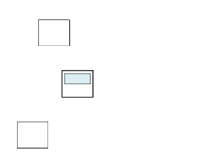
Figure 4.7.1-2: Parent- and
child-node relationship for IAB-node
4.7.2 Protocol Stacks
Fig. 4.7.2-1 shows
the protocol stack for F1-U and Fig. 4.7.2-2 shows the protocol stack
for F1-C between IAB-DU and IAB-donor-CU. In these figures, F1-U and
F1-C are carried over two backhaul hops.
F1-U and F1-C use an
IP transport layer between IAB-DU and IAB-donor-CU as defined in TS
38.470 [32]. F1-U and F1-C need to be security-protected as described
in TS 33.501 [5] (the security layer is not shown in the Figures
4.7.2-1/2).
On the wireless
backhaul, the IP layer is carried over the Backhaul Adaptation
Protocol (BAP) sublayer, which enables routing over multiple hops.
The IP layer can also be used for non-F1 traffic, such as OAM
traffic as defined in TS 38.401 [4].
On each backhaul
link, the BAP PDUs are carried by BH RLC channels. Multiple BH RLC
channels can be configured on each BH link to allow traffic
prioritization and QoS enforcement. The BH-RLC-channel mapping for
BAP PDUs is performed by the BAP entities on each IAB-node and the
IAB-donor-DU.
Protocol stacks for
an IAB-donor with split gNB architecture are specified in TS 38.401
[4].
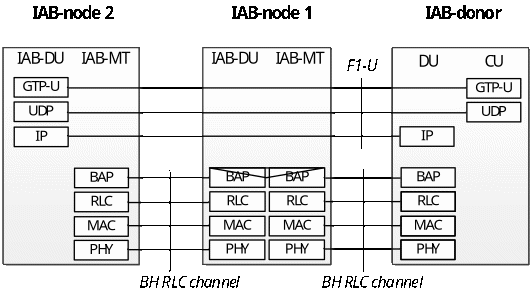
Fig. 4.7.2-1: Protocol stack for
the support of F1-U protocol
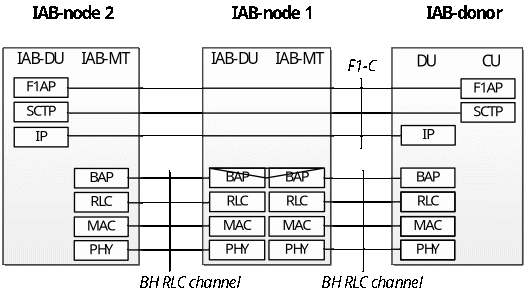
Fig. 4.7.2-2: Protocol stack for
the support of F1-C protocol
The IAB-MT further
establishes SRBs (carrying RRC and NAS) with the IAB-donor-CU. For
IAB-nodes operating in EN-DC, the IAB-MT establishes one or more DRBs
with the eNB and one or more DRBs with the IAB-donor-CU, which can be
used, e.g., to carry OAM traffic. For SA mode, the establishment of
DRBs is optional. These SRBs and DRBs are transported between the
IAB-MT and its parent node over Uu access channel(s). The protocol
stacks for the SRB is shown in Fig. 4.7.2-3.
Figure 4.7.2-3: Protocol stack for
the support of IAB-MT's RRC and NAS connections
4.7.3 User-plane Aspects
4.7.3.1 Backhaul transport
The IAB-DU's IP
traffic is routed over the wireless backhaul via the BAP sublayer.
The BAP sublayer is specified in TS 38.340 [31]. In downstream
direction, upper layer packets are encapsulated by the BAP sublayer
at the IAB-donor-DU and de-encapsulated at the destination IAB-node.
In upstream direction, upper layer packets are encapsulated at the
IAB-node and de-encapsulated at the IAB-donor-DU. IAB-specific
transport between IAB-donor-CU and IAB-donor-DU is specified in TS
38.401 [4].
On the BAP sublayer,
packets are routed based on the BAP routing ID, which is carried in
the BAP header. The BAP header is added to the packet when it arrives
from upper layers, and the BAP header is stripped off when the packet
has reached its destination node. The selection of the packet's BAP
routing ID is configured by the IAB-donor-CU. The BAP routing ID
consists of BAP address and BAP path ID, where the BAP address
indicates the destination node of the packet on the BAP sublayer, and
the BAP path ID indicates the routing path the packet should follow
to this destination. For the purpose of routing, each IAB-node and
IAB-donor-DU is further configured with a designated BAP address.
On each hop of the
packet's path, the IAB-node inspects the packet's BAP address in the
BAP routing ID carried in the BAP header to determine if the packet
has reached its destination, i.e., matches the IAB-node's BAP
address. In case the packet has not reached the destination,
the IAB-node determines the next hop backhaul link, referred to as
egress link, based on the BAP routing ID carried in the BAP
header and a routing configuration it received from the IAB-donor-CU.
For each packet, the
IAB-node further determines the egress BH RLC channel on the
designated egress link. For packets arriving from upper layers, the
designated egress BH RLC channel is configured by the IAB-donor-CU,
and it is based on upper layer traffic specifiers. Since each BH RLC
channel is configured with QoS information or priority level,
BH-RLC-channel selection facilitates traffic-specific prioritization
and QoS enforcement on the BH. For F1-U traffic, it is possible to
map each GTP-U tunnel to a dedicated BH RLC channel or to aggregate
multiple GTP-U tunnels into one common BH RLC channel. For traffic
other than F1-U traffic, it is possible to map UE-associated F1AP
messages, non-UE-associated F1AP messages and non-F1 traffic onto the
same or separate BH RLC channels.
When packets are
routed from one BH link to another, the egress BH RLC channel on the
egress BH link is determined based on the mapping configuration
between ingress BH RLC channels and egress BH RLC channels provided
by the IAB-donor-CU.
4.7.3.2 Flow and Congestion Control
Flow and congestion
control can be supported in both upstream and downstream directions
in order to avoid congestion-related packet drops on IAB-nodes and
IAB-donor-DU:
- In upstream direction, UL scheduling on MAC layer can support flow
control on each hop;
- In downstream direction, the NR user plane protocol (TS 38.425
[33]) supports flow and congestion control between the IAB-node and
the IAB-donor-CU for UE bearers that terminate at this IAB-node.
Further, flow control is supported on BAP sublayer, where the
IAB-node can send feedback information on the available buffer size
for an ingress BH RLC channel or BAP routing ID to its parent node.
The feedback can be sent proactively, e.g., when the buffer load
exceeds a certain threshold, or based on polling by the parent node.
4.7.3.3 Uplink Scheduling Latency
The IAB-node can
reduce UL scheduling latency through signalling of a Pre-emptive BSR
to its parent node. The IAB-node can send the Pre-emptive BSR based
on UL grants it has provided to child nodes and/or UEs, or based on
BSRs it has received from child nodes or UEs (Figure 4.7.3.3-1). The
Pre-emptive BSR conveys the data expected rather than the data
buffered.
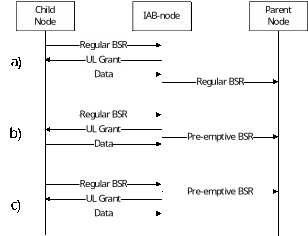
Figure 4.7.3.3-1: Scheduling of BSR
in IAB:
a) regular BSR based on buffered
data,
b) Pre-emptive BSR based on UL grant,
c) Pre-emptive
BSR based on reception of regular BSR
4.7.4 Signalling procedures
4.7.4.1 IAB-node Integration
The IAB-node
integration procedure is captured in TS 38.401 [4].
4.7.4.2 IAB-node Migration
The IAB-node can
migrate to a different parent node underneath the same IAB-donor-CU.
The IAB-node continues providing access and backhaul service when
migrating to a different parent node.
The IAB-MT can also
migrate to a different parent node underneath another IAB-donor-CU.
In this case, the collocated IAB-DU and the IAB-DU(s) of its
descendant node(s) retain F1 connectivity with the initial
IAB-donor-CU. The IAB-MT of each descendant node and all the served
UEs retain the RRC connectivity with the initial IAB-donor-CU. This
migration is referred to as inter-donor partial migration. The
IAB-node, whose IAB-MT migrates to the new IAB-donor-CU, is referred
to as a boundary IAB-node. After inter-donor partial
migration, the F1 traffic of the IAB-DU and its descendant nodes is
routed via the BAP layer of the IAB topology to which the IAB-MT has
migrated.
Inter-donor partial
migration is only supported for SA-mode.
The intra-donor
IAB-node migration procedure and inter-donor partial migration
procedures are captured in TS 38.401 [4].
4.7.4.3 Topological Redundancy
The IAB-node may
have redundant routes to the IAB-donor-CU(s).
For IAB-nodes
operating in SA-mode, NR DC can be used to enable route redundancy in
the BH by allowing the IAB-MT to have concurrent BH links with two
parent nodes. The parent nodes may be connected to the same or to
different IAB-donor-CUs, which control the establishment and release
of redundant routes via these two parent nodes. Either parent node's
gNB-DU functionality together with the respective IAB-donor-CU
assumes the role of the IAB-MT's master node or secondary node. The
NR DC framework (e.g., MCG/SCG-related procedures) is used to
configure the dual radio links with the parent nodes (TS 37.340
[21]).
The procedure for
establishment of topological redundancy for IAB-nodes operating in
SA-mode is captured in TS 38.401 [4].
An IAB-node
operating in NR-DC may also use one of its links for BH connectivity
with an IAB-donor and the other link for access-only connectivity
with a separate gNB that does not assume IAB-donor role. The
IAB-donor can assume the MN or the SN role. The IAB-node may exchange
F1-C traffic with the IAB-donor via the backhaul link and/or via the
access link with the gNB. In the latter case, the F1-C messages are
carried over NR RRC between the IAB-node and the gNB, and via XnAP
between the gNB and the IAB-donor.
IAB-nodes operating
in EN-DC can exchange F1-C traffic with the IAB-donor via the MeNB.
The F1-C message is carried over LTE RRC using SRB2 between IAB-node
and MeNB and via X2AP between the MeNB and the IAB-donor.
The procedures for
establishment of redundant transport of F1-C for IAB-nodes using
NR-DC and EN-DC are captured in TS 37.340 [21] and TS 38.401 [4].
4.7.4.4 Backhaul RLF Recovery
When the IAB-node
using SA-mode declares RLF on the backhaul link, it can perform RLF
recovery at another parent node underneath the same or underneath a
different IAB-donor-CU. In the latter case, the collocated IAB-DU and
the IAB-DU(s) of its descendant node(s) may retain the F1
connectivity with the initial IAB-donor-CU, while the IAB-MT(s) of
the descendant node(s) and all the served UEs retain the RRC
connectivity with the initial IAB-donor-CU, in the same manner as for
inter-donor partial migration.
The BH RLF recovery
procedure for the IAB-node is captured in TS 38.401 [4]. BH RLF
declaration for IAB-node and the aspects of RLF recovery by the
IAB-MT are handled in clause 9.2.7 of the present document.
4.7.4.5 OTA timing synchronization
An IAB-DU is subject
to the same downlink timing alignment of a gNB. The IAB-DU may use
the received downlink signal from a parent as a reference to control
its downlink timing using TA in conjunction with an additional Tdelta
parameter received by the collocated IAB-MT from the parent via
MAC-CE.
4.7.4.6 Inter node discovery
Inter node discovery
is supported via SSB-based and/or CSI-RS-based measurements. An
IAB-node can be configured to transmit and receive off
synchronization raster SSB signals to discover neighbouring
IAB-nodes. The configuration is not expected to create a conflict
between IAB-DU SSB transmission and IAB-MT SSB measurement windows.
4.7.5 Mobile IAB
4.7.5.1 General
Mobile IAB
introduces the mobile IAB-node, which is a RAN node that
provides NR access links to UEs and an NR backhaul link to a parent
node, and that can conduct physical mobility across the RAN area. The
mobile IAB-node includes a mobile IAB-MT and a mobile
IAB-DU. Mobile IAB supports the same functionality as IAB unless
explicitly specified. The following enhancements/restrictions only
apply to mobile IAB:
- The mobile IAB-node uses the mobile IAB-node authorization
procedure defined in TS 38.401 [4] and the MBSR authorization
procedure defined in TS 23.501 [3].
- A RAN node operating as a mobile IAB-node shall not concurrently
operate as an IAB-node. During network integration, the RAN node
shall indicate whether it intends to operate as a mobile IAB-node or
as an IAB-node via an indicator in the RRCSetupComplete
message.
- The parent node indicates support for mobile IAB-nodes by
broadcasting a mobile-IAB-specific indicator in SIB1.
- The mobile IAB-node shall not have descendent nodes. A mobile-IAB
cell shall therefore not broadcast any indication that it is a
suitable parent node for IAB-nodes or mobile IAB-nodes.
- The cell of a mobile IAB-DU may indicate to UEs via a SIB1
indicator that it is a mobile-IAB cell.
- The mobile IAB-node uses the mobile IAB-node network integration
procedure as defined in TS 38.401 [4].
- The mobile IAB-MT can perform the mobile IAB-MT migration
procedures via Xn handover and/or via NG handover as defined in TS
38.401 [4]. The mobile IAB-MT can also perform the mobile IAB-node
recovery procedure as defined in TS 38.401 [4].
- The mobile IAB-node can perform the mobile IAB-DU migration
procedure, where a new logical mobile IAB-DU is established on the
mobile IAB-node and the initial logical mobile IAB-DU is released
some time later. The UE identifies the cells of the two logical
mobile IAB-DUs as different physical cells. During this procedure,
the UEs connected via the mobile IAB-node are handed over from the
initial logical mobile IAB-DU, referred to as the source logical
mobile IAB-DU, to the new logical mobile IAB-DU, referred to as the
target logical mobile IAB-DU. The details of this procedure are
defined in TS 38.401 [4]. Enhancements related to BAP for mobile
IAB-DU migration are defined in TS 38.340 [31].
- When a RAN node is operating as a mobile IAB node, dual
connectivity for this node is not supported.
RACH-less handover
as specified in 9.2.3.6, in TS 38.321 [6] and in TS 38.331 [12] is
supported in mobile IAB. RACH-less handover can be used during the
mobile IAB-DU migration procedure for a UE that is migrated from the
source logical mobile IAB-DU to the target logical mobile IAB-DU.
4.7.5.2 Void
4.8 Non-Public Networks
A Non-Public Network
(NPN) is a network for non-public use (see TS 22.261 [19]), which can
be deployed as (see TS 23.501 [3]):
- a Stand-alone Non-Public Network (SNPN) when not relying on network
functions provided by a PLMN; or
- a Public Network Integrated (PNI) NPN when relying on the support
of a PLMN.
NOTE: As described in clause 5.30.3.1 of TS 23.501 [3], there are
several approaches in which PNI-NPNs can be made available via PLMNs.
The only approach visible to AS, and hence the only approach that is
addressed in AS specifications is the approach of using CAGs.
4.9 Network-Controlled
Repeaters
4.9.1 Architecture
A Network-Controlled
Repeater node, referred to as NCR-node, is an RF repeater that
enables wireless amplifying-and-forwarding functionality in NG-RAN.
The NCR-node is capable of receiving and applying side control
information from a gNB with additional functionality to support
Network-Controlled Repeater.
The NCR-node
comprises an NCR-MT and an NCR-Fwd. The NCR-MT is an entity
supporting a subset of the UE functionality that communicates with
the gNB to receive side control information via a control link based
on the NR Uu interface. The NCR-Fwd is the function performing
amplifying-and-forwarding of signals between gNB and UE via the
NCR-Fwd backhaul link and NCR-Fwd access link, respectively. The
NCR-Fwd can support multiple beams towards the UE. The NCR-Fwd can
support multiple beams in the backhaul link, and those may be
different from the beams in the control link. The behaviour of the
NCR-Fwd is controlled according to the side control information
received from the gNB. The NCR-node is modelled as depicted in Figure
4.9.1-1.
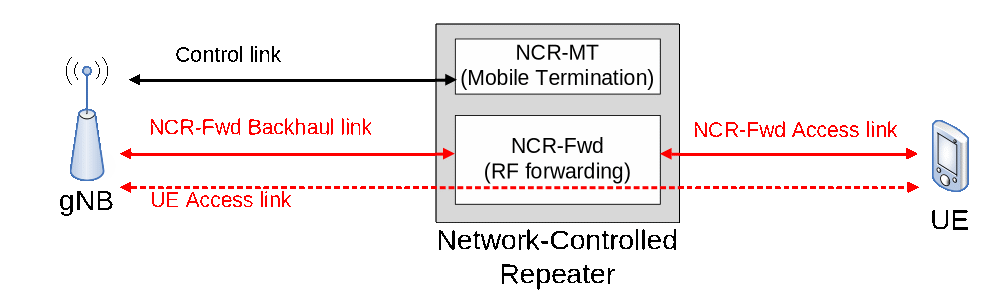
Figure 4.9.1-1: Conceptual model of
network-controlled repeater.
An NCR-MT
establishes SRBs and, optionally, DRB(s) with a gNB. The
establishment of DRB(s) can be used to transport OAM traffic.
The signal that
NCR-Fwd forwards is associated to the cell that the NCR-MT is
connected to via the control link. Whether the NCR-Fwd can forward
other signals is up to implementation.
4.9.2 Capabilities
Carrier Aggregation
(CA), Multi-Radio Dual Connectivity (MR-DC), handover and its related
features (e.g., CHO, DAPS, CPAC, etc.) are not supported by NCR-MT,
as defined together with other limitations in TS 38.306 [11].
4.9.3 Signalling
procedures
RRC signalling is
utilized to configure the NCR-MT to receive side control information
from a gNB, which is used to control the amplify-and-forward function
of the NCR-Fwd. If the side control configuration is removed, the
NCR-Fwd ceases its amplifying-and-forwarding function.
MAC CE indications
can be used to configure the backhaul link and the access link of the
NCR-Fwd as specified in TS 38.321 [6].
When the NCR-MT is
in RRC_CONNECTED state, the NCR-Fwd may amplify-and-forward RF
signals based on the side control information received from the gNB.
The NCR-MT does not support RRM measurements in RRC_CONNECTED.
When the NCR-MT
transitions from RRC_CONNECTED state to RRC_INACTIVE state, the
NCR-Fwd may continue to amplify-and-forward RF signals in accordance
with the last side control information received from the gNB. When
the NCR-MT is in RRC_INACTIVE state, the NCR-Fwd ceases to
amplify-and-forward RF signals if no suitable cell is detected, or if
the NCR-MT selects a different cell than the last serving cell on
which side control configuration was received.
When an NCR-MT in
RRC_INACTIVE state determines degradation of the NCR-Fwd backhaul
link beam, then the NCR-Fwd should cease amplifying-and-forwarding RF
signals, and the NCR-MT should attempt to resume its RRC connection
(with cause value mo-Signalling). The criteria to evaluate
backhaul beam degradation are left to the NCR-node implementation.
When the NCR-MT
transitions from RRC_CONNECTED state to RRC_IDLE, the NCR-Fwd ceases
any amplifying-and-forwarding of RF signals. How an NCR-MT
transitions back from RRC_IDLE state to RRC_CONNECTED state is left
to NCR-node or network implementation.
An NCR-MT can detect
RLF on the control link as specified in TS 38.331 clause 5.3.10 [12].
When RLF is detected, the NCR-MT performs the RRC re-establishment
procedure as specified in TS 38.331 [12]. During the RRC
re-establishment procedure, the NCR-Fwd ceases to amplify-and-forward
RF signals.
After successfully
performing the RRC re-establishment procedure, the NCR-MT waits for
the new side control configuration for the NCR-Fwd to resume the
amplifying-and-forwarding of RF signals.
An NCR-MT can also
perform Beam Failure Detection (BFD) and Beam Failure Recovery (BFR)
as described in clause 9.2.8. Once the NCR-MT detects beam failure in
the control link, the NCR-Fwd should cease amplifying-and-forwarding
RF signals until BFR is completed.
4.9.4 OAM aspects
The transport
connection between the NCR-node and its OAM may be provided by the
NCR-MT's PDU session. A Network-Controlled Repeater may be configured
with a list of allowed gNB cell(s) that the NCR-MT is allowed to
connect with, and/or a list of forbidden gNB cell(s) that the NCR-MT
is not allowed to connect with.
The information on
the physical beam(s) used by NCR-Fwd for access link may be provided
by OAM to the gNB and the Network-Controlled Repeater for operation.
How to characterize and provide the physical beams of NCR-Fwd is up
to implementation.
4.9.5 Network-controlled
repeater management
Network-Controlled
Repeater identification is performed in RAN, and Network-Control
Repeater authorization is performed in 5GC. The general procedure of
the Network-Controlled Repeater management is illustrated in Figure
4.9.5-1:
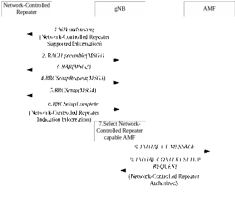
Figure 4.9.5-1: Network-Controlled
Repeater management.
1. The gNB broadcasts the Network-Controlled Repeater supported
information via system information.
6. When a Network-Controlled Repeater is trying to access the network
as a Network-Controlled Repeater, the Network-Controlled Repeater
indication is sent to the serving gNB.
7. The serving gNB selects an appropriate AMF for the
Network-Controlled Repeater.
9. AMF provides Network-Controlled Repeater authorization information
to the gNB.
Other steps refer to
the signalling flow as defined in 9.2.1.3.
4.10 Support of NR
Femto nodes
4.10.1 Architecture
Figure 4.10.1-1
shows a logical architecture for the NR Femto node to connect via the
NG interface to the 5GC.
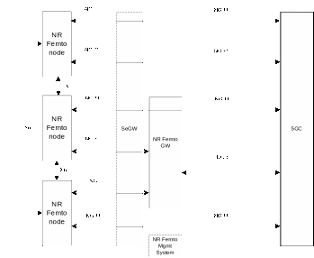
Figure 4.10.1-1: NR Femto Logical
Architecture
NOTE: The SeGW and NR Femto Mgmt System are out of RAN scope.
The NR Femto node
may directly connect to the 5GC. The NG-RAN architecture may also
deploy an NR Femto Gateway (NR Femto GW) to allow the concentration
of the NG-C interface between NR Femto nodes and the 5GC. Based on
implementation, the transport of NG-U between NR Femto nodes and the
5GC may be optionally concentrated in the NR Femto GW.
For the NR Femto
node, the NG-C interface is defined as the interface:
- Between the NR Femto GW and the Core Network;
- Between the NR Femto node and the NR Femto GW;
- Between the NR Femto node and the Core Network.
The NR Femto GW
appears to the AMF as a gNB. The NR Femto GW appears to the NR Femto
node as an AMF. The NG interface between the NR Femto node and the
5GC is the same regardless whether the NR Femto node is connected to
the 5GC via an NR Femto GW or not.
The functions
supported by the NR Femto node shall be the same as those supported
by a gNB (with possible exceptions e.g. NAS Node Selection Function
when the NR Femto node connects via the NR Femto GW) and the
procedures run between an NR Femto node, the NR Femto GW and the 5GC
shall be the same as those between a gNB and the 5GC with specific
handling as specified in clause 4.10.2.
Xn-connectivity is
supported between NR Femto nodes and between NR Femto nodes and gNBs,
independent of whether any of the involved NR Femto nodes is
connected to an NR Femto GW. One NR Femto node serves one or more
cells.
4.10.2 Functional Split
4.10.2.1 NR Femto
node
An NR Femto node
hosts the same functions as a gNB as described in clause 4.1, with
the following additional specifics in case of connecting to the NR
Femto GW:
- Discovery of a suitable NR Femto GW;
NOTE 1: The NR Femto node may be configured with the identity and/or
address of an appropriate NR Femto GW.
- An NR Femto node shall only connect to a single NR Femto GW at one
time:
- The NR Femto node will not simultaneously connect to another NR
Femto GW, or another AMF;
NOTE 2: NR Femto nodes may be deployed without network planning. An
NR Femto node may be moved from one geographical area to another and
therefore it may need to connect to a different NR Femto GW depending
on its location.
- The TAC(s) and PLMN ID(s) used by the NR Femto node shall also be
supported by the NR Femto GW;
- Selection of an AMF at UE attachment is performed by the NR Femto
GW:
- An NR Femto node shall provide any of the GUAMI, GUAMI Type or
Requested NSSAI, if received from the UE, to the NR Femto GW in the
INITIAL UE MESSAGE message.
- At Xn handover:
- Allowing the NR Femto GW to identify the serving AMF at path
switch:
- Including the GUAMI of the serving AMF in the PATH SWITCH REQUEST
message;
- Allowing the AMF to identify the termination of the source UE
associated signalling connection:
- Including the Source AMF UE NGAP ID IE in the PATH SWITCH
REQUEST message to the NR Femto GW.
- Sending the UE CONTEXT RELEASE REQUEST message including a GW
Context Release Indication to the NR Femto GW after the successful Xn
handover initiated by the NR Femto node, in order to indicate that
the NR Femto GW may release the UE context.
4.10.2.2 AMF
In addition to
functions specified in clauses 4.1 and 16.7, the AMF hosts the
following functions:
- In case of an NR Femto node connected to an NR Femto GW:
- Routing of handover messages, Downlink
RAN Configuration Transfer message and DOWNLINK RIM
INFORMATION TRANSFER message towards the appropriate NR Femto GW
based on the received Selected TAI.
- In NG handover towards the NR Femto node, including the Global RAN
Node ID of the NR Femto node in the HANDOVER REQUEST message to the
NR Femto GW.
- In case of an NR Femto node directly connected to an AMF:
- At NG Setup, verifying, as defined in TS 33.545 [70], that the
identity used by the NR Femto node is valid.
- At Initial UE Message and NG Handover procedures, verifying, as
defined in TS 33.545 [70], that the reported CAG ID list is valid for
the indicated cell of the NR Femto node.
- At NG PWS Restart Indication and PWS Failure Indication, verifying,
as defined in TS 33.545 [70], that the indicated cell identity is
valid.
4.10.2.3 NR Femto GW
The NR Femto GW
hosts the following functions:
- Relaying UE-associated NGAP messages between the AMF and the NR
Femto node serving the UE, applying the following additional
functions:
- Terminating the UE Context Release Request procedure if an explicit
GW Context Release Indication is included. In this case, the NR Femto
GW releases the UE context if it determines that the UE identified by
the received UE NGAP IDs is no longer served by another NR Femto node
attached to it.
- At UE context establishment (Initial Context Setup or NG Handover)
the NR Femto GW sends to the NR Femto node the serving AMF’s GUAMI
as well as the AMF UE NGAP ID assigned by the AMF and the AMF UE NGAP
ID assigned by the NR Femto GW for the UE.
- At Path Switch, the NR Femto GW sends to the NR Femto node the AMF
UE NGAP ID assigned by the AMF and the AMF UE NGAP ID assigned by the
NR Femto GW for the UE.
- At Initial UE Message and NG Handover procedures, the NR Femto GW
verifies, as defined in TS 33.545 [70], that the reported CAG ID list
is valid for the indicated cell of the NR Femto node.
- Terminating non-UE associated NGAP procedures towards the NR Femto
node and towards the AMF, applying the following additional
functions:
- At NG Setup, the NR Femto GW verifies, as defined in TS 33.545
[70], that the identity used by the NR Femto node is valid.
- In case of NG PWS Restart Indication and PWS Failure Indication,
the NR Femto GW verifies, as defined in TS 33.545 [70], that the
indicated cell identity is valid and replaces the Global gNB ID of
the NR Femto node with the NR Femto GW ID before sending the
respective message to the AMF.
- At Overload Start/Stop, the NR Femto GW should provide the NR Femto
node with the identities of the affected AMF node(s). The NR Femto
node uses the received information to identify the traffic and the
AMF to which the overload indication applies. The NR Femto node shall
apply the defined rejections until reception of an OVERLOAD STOP
message applicable to this traffic, or until the NR Femto node
receives a further OVERLOAD START message applicable to the same
traffic, in which case it shall replace the ongoing overload action
with the newly requested one.
- Supporting TAC(s) and PLMN ID(s) used by the NR Femto node.
- Relaying the PATH SWITCH REQUEST message towards the AMF indicated
by the GUAMI of the serving AMF received from the NR Femto node.
- Selecting AMF at UE attachment based on the GUAMI, GUAMI type or
Requested NSSAI provided by the NR Femto node in the INITIAL UE
MESSAGE message.
A TAI used in a NR
Femto GW shall not be reused in another NR Femto GW.
4.10.3 Interfaces
4.10.3.1 Protocol
Stack for NG User Plane
NG-U is defined as
specified in clause 4.3.1.1 regardless of whether its transport is
concentrated in the NR Femto GW. The figure below shows the NG-U
protocol stack between NR Femto node and UPF.
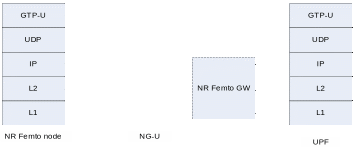
Figure 4.10.3.1-1: User plane for
NG Interface between NR Femto node and UPF
4.10.3.2 Protocol
Stacks for NG Control Plane
The figure below
shows the NG-C protocol stack with the NR Femto GW.
When the NR Femto GW
is not present, NG-C is defined as specified in clause 4.3.1.2, and
all the NGAP procedures are terminated at the NR Femto node and the
AMF.
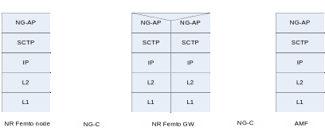
Figure 4.10.3.2-1: Control plane
for NG Interface between NR Femto node and AMF with the NR Femto GW
4.10.4 Access Control
Cells served by an
NR Femto node may be deployed as part of a PNI-NPN (see clause 4.8)
in order to restrict access to UEs according to the respective
subscription.
NOTE: The NR Femto node may use the CAG mechanism for PNI-NPN (see
clause 16.7.4) as follows:
- The NR Femto node may activate a PLMN cell, which can be accessed
by legacy UE without access control of CAG;
- The NR Femto physical node may activate a physical cell shared by
both PLMN and PNI-NPN, as specified in clause 4.6, through
broadcasting both the plmn-IdentityInfoList and the
npn-IdentityInfoList-r16 in the SIB1, but without the
cellReservedForOtherUse;
- The NR Femto node may activate an NPN-only cell by broadcasting the
cellReservedForOtherUse with value "true", then
this cell can only be accessed by the UEs whose allowed CAG list
includes a CAG-ID broadcasted by the cell.
4.11 Wireless Access Backhaul
Wireless Access Backhaul (WAB) is supported by means of the WAB-node,
which provides NR access links to UEs via a gNB functionality,
referred to as the WAB-gNB. The WAB-node further supports a WAB-MT
function, which terminates an NR Uu interface to a gNB that is used
for the backhauling of the WAB-gNB’s traffic. The WAB-node may be
stationary or mobile.
Further details of WAB are defined in TS 23.501 [3] and TS 38.401
[4].
5 Physical Layer
5.1 Waveform, numerology and frame structure
The downlink
transmission waveform is conventional OFDM using a Cyclic Prefix. The
uplink transmission waveform is conventional OFDM using a CP with a
transform precoding function performing DFT spreading that can be
disabled or enabled. For operation with shared spectrum channel
access in FR1, the uplink transmission waveform subcarrier mapping
can map to subcarriers in one or more PRB interlaces.
Figure 5.1-1: Transmitter block
diagram for CP-OFDM with optional DFT-spreading
The numerology is based on exponentially scalable sub-carrier spacing
f = 2µ
× 15 kHz with µ={0,1,3,4,5,6} for PSS, SSS and PBCH and
µ={0,1,2,3,5,6} for other channels. Normal CP is supported
for all sub-carrier spacings, Extended CP is supported for µ=2.
12 consecutive sub-carriers form a Physical Resource Block (PRB). Up
to 275 PRBs are supported on a carrier.
Table 5.1-1: Supported transmission
numerologies.

|
|
CP
|
Supported
for data
|
Supported
for synch
|
0
|
15
|
Normal
|
Yes
|
Yes
|
1
|
30
|
Normal
|
Yes
|
Yes
|
2
|
60
|
Normal,
Extended
|
Yes
|
No
|
3
|
120
|
Normal
|
Yes
|
Yes
|
4
|
240
|
Normal
|
No
|
Yes
|
5
|
480
|
Normal
|
Yes
|
Yes
|
6
|
960
|
Normal
|
Yes
|
Yes
|
The UE may be
configured with one or more bandwidth parts on a given component
carrier, of which only one can be active at a time, as described in
clauses 7.8 and 6.10 respectively. The active bandwidth part defines
the UE's operating bandwidth within the cell's operating bandwidth.
For initial access, and until the UE's configuration in a cell is
received, initial bandwidth part detected from system information is
used.
Downlink and uplink
transmissions are organized into frames with 10 ms duration,
consisting of ten 1 ms subframes. Each frame is divided into two
equally-sized half-frames of five subframes each. The slot duration
is 14 symbols with Normal CP and 12 symbols with Extended CP, and
scales in time as a function of the used sub-carrier spacing so that
there is always an integer number of slots in a subframe.
Timing Advance TA
is used to adjust the uplink frame timing relative to the downlink
frame timing.
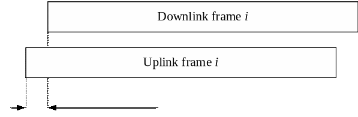
Figure 5.1-2: Uplink-downlink
timing relation
Operation on both
paired and unpaired spectrum is supported.
5.2 Downlink
5.2.1 Downlink transmission scheme
Demodulation
Reference Signal (DMRS) based spatial multiplexing is supported for
Physical Downlink Shared Channel (PDSCH). Up to 8, 12, 16 and 24
orthogonal DL DMRS ports are supported for type 1, type 2, enhanced
type 1, and enhanced type 2 DMRS respectively. Up to 8 orthogonal DL
DMRS ports per UE are supported for SU-MIMO and up to 4 orthogonal DL
DMRS ports per UE are supported for MU-MIMO. The number of SU-MIMO
code words is one for 1-4 layer transmissions and two for 5-8 layer
transmissions.
The DMRS and
corresponding PDSCH are transmitted using the same precoding matrix
and the UE does not need to know the precoding matrix to demodulate
the transmission. The transmitter may use different precoder matrix
for different parts of the transmission bandwidth, resulting in
frequency selective precoding. The UE may also assume that the same
precoding matrix is used across a set of Physical Resource Blocks
(PRBs) denoted Precoding Resource Block Group (PRG).
Transmission
durations from 2 to 14 symbols in a slot is supported.
Aggregation of
multiple slots with Transport Block (TB) repetition is supported.
5.2.2 Physical-layer
processing for physical downlink shared channel
The downlink
physical-layer processing of transport channels consists of the
following steps:
- Transport block CRC attachment;
- Code block segmentation and code block CRC attachment;
- Channel coding: LDPC coding;
- Physical-layer hybrid-ARQ processing;
- Rate matching;
- Scrambling;
- Modulation: QPSK, 16QAM, 64QAM, 256QAM, and 1024QAM;
- Layer mapping;
- Mapping to assigned resources and antenna ports.
The UE may assume
that at least one symbol with demodulation reference signal is
present on each layer in which PDSCH is transmitted to a UE, and up
to 3 additional DMRS can be configured by higher layers.
Phase Tracking RS
may be transmitted on additional symbols to aid receiver phase
tracking.
The DL-SCH physical
layer model is described in TS 38.202 [20].
5.2.3 Physical
downlink control channels
The Physical
Downlink Control Channel (PDCCH) can be used to schedule DL
transmissions on PDSCH and UL transmissions on PUSCH, where the
Downlink Control Information (DCI) on PDCCH includes:
- Downlink assignments containing at least modulation and coding
format, resource allocation, and hybrid-ARQ information related to
DL-SCH;
- Uplink scheduling grants containing at least modulation and coding
format, resource allocation, and hybrid-ARQ information related to
UL-SCH.
In addition to
scheduling, PDCCH can be used to for:
- Activation and deactivation of configured PUSCH transmission with
configured grant;
- Activation and deactivation of PDSCH semi-persistent transmission;
- Notifying one or more UEs of the slot format;
- Notifying one or more UEs of the PRB(s) and OFDM symbol(s) where
the UE may assume no transmission is intended for the UE;
- Transmission of TPC commands for PUCCH and PUSCH;
- Transmission of one or more TPC commands for SRS transmissions by
one or more UEs;
- Switching a UE's active bandwidth part;
- Initiating a random access procedure;
- Indicating the UE(s) to monitor the PDCCH during the next
occurrence of the DRX on-duration;
- In IAB context, indicating the availability for soft symbols of an
IAB-DU;
- Triggering one shot HARQ-ACK codebook feedback;
- For operation with shared spectrum channel access:
- Triggering search space set group switching;
- Indicating one or more UEs about the available RB sets and channel
occupancy time duration;
- Indicating downlink feedback information for configured grant PUSCH
(CG-DFI).
A UE monitors a set
of PDCCH candidates in the configured monitoring occasions in one or
more configured COntrol REsource SETs (CORESETs) according to the
corresponding search space configurations.
A CORESET consists
of a set of PRBs with a time duration of 1 to 3 OFDM symbols. The
resource units Resource Element Groups (REGs) and Control Channel
Elements (CCEs) are defined within a CORESET with each CCE consisting
a set of REGs. Control channels are formed by aggregation of CCE.
Different code rates for the control channels are realized by
aggregating different number of CCE. Interleaved and non-interleaved
CCE-to-REG mapping are supported in a CORESET.
The PDCCH repetition
is operated by using two search spaces which are explicitly linked by
configuration provided by the RRC layer, and are associated with
corresponding CORESETs. For PDCCH repetition, two linked search
spaces are configured with the same number of candidates, and two
PDCCH candidates in two search spaces are linked with the same
candidate index. When PDCCH repetition is scheduled to a UE, an
intra-slot repetition is allowed and each repetition has the same
number of CCEs and coded bits, and corresponds to the same DCI
payload.
Polar coding is used
for PDCCH.
Each resource
element group carrying PDCCH carries its own DMRS.
QPSK modulation is
used for PDCCH.
5.2.4 Synchronization
signal and PBCH block
The Synchronization
Signal and PBCH block (SSB) consists of primary and secondary
synchronization signals (PSS, SSS), each occupying 1 symbol and 127
subcarriers, and PBCH spanning across 3 OFDM symbols and 240
subcarriers, but on one symbol leaving an unused part in the middle
for SSS as show in Figure 5.2.4-1. For the 3 MHz channel bandwidth,
the PBCH is further equally punctured from both edges to span 144
subcarriers. The possible time locations of SSBs within a half-frame
are determined by sub-carrier spacing and the periodicity of the
half-frames where SSBs are transmitted is configured by the network.
During a half-frame, different SSBs may be transmitted in different
spatial directions (i.e. using different beams, spanning the coverage
area of a cell).
Within the frequency
span of a carrier, multiple SSBs can be transmitted. The PCIs of SSBs
transmitted in different frequency locations do not have to be
unique, i.e. different SSBs in the frequency domain can have
different PCIs. However, when an SSB is associated with an RMSI, the
SSB is referred to as a Cell-Defining SSB (CD-SSB). A PCell is always
associated to a CD-SSB located on the synchronization raster.
When an SSB is not
associated with an RMSI, the SSB is referred to as a non-Cell
Defining SSB (NCD-SSB), which can be used to perform RLM, BFD, and
RRM measurements and measurements for RA resource selection inside
the active DL BWP when the active BWP does not contain the CD-SSB. A
UE may be configured with multiple SSBs provided that each BWP is
configured with at most one SSB (CD-SSB or NCD-SSB).
Figure 5.2.4-1: Time-frequency
structure of SSB
Polar coding is used
for PBCH.
The UE may assume a
band-specific sub-carrier spacing for the SSB unless a network has
configured the UE to assume a different sub-carrier spacing.
PBCH symbols carry
its own frequency-multiplexed DMRS.
QPSK modulation is
used for PBCH.
The PBCH physical
layer model is described in TS 38.202 [20].
5.2.5 Physical
layer procedures
5.2.5.1 Link adaptation
Link adaptation
(AMC: adaptive modulation and coding) with various modulation schemes
and channel coding rates is applied to the PDSCH. The same coding and
modulation is applied to all groups of resource blocks belonging to
the same L2 PDU scheduled to one user within one transmission
duration and within a MIMO codeword.
For channel state
estimation purposes, the UE may be configured to measure CSI-RS and
estimate the downlink channel state based on the CSI-RS measurements.
The UE feeds the estimated channel state back to the gNB to be used
in link adaptation.
5.2.5.2 Power Control
Downlink power
control can be used.
5.2.5.3 Cell search
Cell search is the
procedure by which a UE acquires time and frequency synchronization
with a cell and detects the Cell ID of that cell. NR cell search is
based on the primary and secondary synchronization signals, and PBCH
DMRS, located on the synchronization raster.
5.2.5.4 HARQ
Asynchronous
Incremental Redundancy Hybrid ARQ is supported. The gNB provides the
UE with the HARQ-ACK feedback timing either dynamically in the DCI or
semi-statically in an RRC configuration. Retransmission of HARQ-ACK
feedback is supported by using enhanced dynamic codebook and/or
one-shot triggering of HARQ-ACK transmission for (i) all configured
CCs and HARQ processes in the PUCCH group, (ii) a configured subset
of CCs and/or HARQ processes in the PUCCH group, or (iii) a
dynamically indicated HARQ-ACK feedback instance. For HARQ-ACK of SPS
PDSCH without associated PDCCH, in case of HARQ-ACK dropping due to
TDD specific collisions, the HARQ-ACK feedback can be deferred to a
next available PUCCH transmission occasion.
The UE may be
configured to receive code block group based transmissions where
retransmissions may be scheduled to carry a sub-set of all the code
blocks of a TB.
5.2.5.5 Reception of SIB1
The Master
Information Block (MIB) on PBCH provides the UE with parameters (e.g.
CORESET#0 configuration) for monitoring of PDCCH for scheduling PDSCH
that carries the System Information Block 1 (SIB1). PBCH may also
indicate that there is no associated SIB1, in which case the UE may
be pointed to another frequency from where to search for an SSB that
is associated with a SIB1 as well as a frequency range where the UE
may assume no SSB associated with SIB1 is present. The indicated
frequency range is confined within a contiguous spectrum allocation
of the same operator in which SSB is detected. MIB on PBCH may also
indicate that SIB1 is not being broadcast, in which case the UE may
transmit OD-SIB1 request if it has a valid OD-SIB1 request
configuration for this cell as described in 15.4.2.9.
5.2.6 Downlink
Reference Signals and Measurements for Positioning
The DL Positioning
Reference Signals (DL PRS) are defined to facilitate support of
different positioning methods such as DL-TDOA, DL-AoD, multi-RTT
through the following set of UE measurements DL RSTD, DL PRS-RSRP/DL
PRS-RSRPP, and UE Rx-Tx time difference respectively as described in
TS 38.305 [42]. The DL PRS also facilitates Carrier Phase Positioning
measurements such as DL-RSCP and DL-RSCPD as described in TS 38.305
[42].
Besides DL PRS
signals, UE can use SSB and CSI-RS for RRM (RSRP and RSRQ)
measurements for E-CID type of positioning.
5.3 Uplink
5.3.1 Uplink
transmission scheme
Two transmission
schemes are supported for PUSCH: codebook based transmission and
non-codebook based transmission.
For codebook based
transmission, the gNB provides the UE with a transmit precoding
matrix indication in the DCI. The UE uses the indication to select
the PUSCH transmit precoder from the codebook. For non-codebook based
transmission, the UE determines its PUSCH precoder based on wideband
SRI field from the DCI.
DMRS based spatial
multiplexing is supported for PUSCH. Up to 8, 12, 16, and 24
orthogonal UL DMRS ports are supported for type 1, type 2, enhanced
type 1, and enhanced type 2 DMRS respectively. For a given UE, up to
4 or up to 8 layer transmissions are supported. The number of code
words is one for 1 to 4 layer transmission and two for 5 to 8 layer
transmission. When transform precoding is used, only a single MIMO
layer transmission is supported.
Transmission
durations from 1 to 14 symbols in a slot is supported.
Aggregation of
multiple slots with TB repetition is supported.
Two types of
frequency hopping are supported, intra-slot frequency hopping, and in
case of slot aggregation, inter-slot frequency hopping. Intra-slot
and inter-slot frequency hopping are not supported when PRB interlace
uplink transmission waveform is used.
PUSCH may be
scheduled with DCI on PDCCH, or a semi-static configured grant may be
provided over RRC, where two types of operation are supported:
- The first PUSCH is triggered with a DCI, with subsequent PUSCH
transmissions following the RRC configuration and scheduling received
on the DCI, or
- The PUSCH is triggered by data arrival to the UE's transmit buffer
and the PUSCH transmissions follow the RRC configuration.
5.3.2 Physical-layer
processing for physical uplink shared channel
The uplink
physical-layer processing of transport channels consists of the
following steps:
- Transport Block CRC attachment;
- Code block segmentation and Code Block CRC attachment;
- Channel coding: LDPC coding;
- Physical-layer hybrid-ARQ processing;
- Rate matching;
- Scrambling;
- Modulation: π/2 BPSK (with transform precoding only), QPSK, 16QAM,
64QAM and 256QAM;
- Layer mapping, transform precoding (enabled/disabled by
configuration), and pre-coding;
- Mapping to assigned resources and antenna ports.
The UE transmits at
least one symbol with demodulation reference signal on each layer on
each frequency hop in which the PUSCH is transmitted, and up to 3
additional DMRS can be configured by higher layers.
Phase Tracking RS
may be transmitted on additional symbols to aid receiver phase
tracking.
The UL-SCH physical
layer model is described in TS 38.202 [20].
For configured grants operation with shared spectrum channel access,
described in clause 10.3, a CG-UCI (Configured Grant Uplink Control
Information) can be transmitted in PUSCH scheduled by configured
uplink grant.
5.3.3 Physical
uplink control channel
Physical uplink
control channel (PUCCH) carries the Uplink Control Information (UCI)
from the UE to the gNB. Five formats of PUCCH exist, depending on the
duration of PUCCH and the UCI payload size:
- Format #0: Short PUCCH of 1 or 2 symbols with small UCI payloads of
up to two bits with UE multiplexing capacity of up to 6 UEs with
1-bit payload in the same PRB;
- Format #1: Long PUCCH of 4-14 symbols with small UCI payloads of up
to two bits with UE multiplexing capacity of up to 84 UEs without
frequency hopping and 36 UEs with frequency hopping in the same PRB;
- Format #2: Short PUCCH of 1 or 2 symbols with large UCI payloads of
more than two bits with no UE multiplexing capability in the same
PRBs;
- Format #3: Long PUCCH of 4-14 symbols with large UCI payloads with
no UE multiplexing capability in the same PRBs;
- Format #4: Long PUCCH of 4-14 symbols with moderate UCI payloads
with multiplexing capacity of up to 4 UEs in the same PRBs.
The short PUCCH
format of up to two UCI bits is based on sequence selection, while
the short PUCCH format of more than two UCI bits frequency
multiplexes UCI and DMRS. The long PUCCH formats time-multiplex the
UCI and DMRS. Frequency hopping is supported for long PUCCH formats
and for short PUCCH formats of duration of 2 symbols. Short and long
PUCCH formats can be repeated over multiple slots or sub-slots, where
the repetition factor is either indicated dynamically in the DCI or
semi-statically in an RRC configuration.
For operation with
shared spectrum channel access in FR1, PUCCH Format #0, #1, #2, #3
are extended to use resource in one PRB interlace (up to two
interlaces for Format #2 and Format #3) in one RB Set. PUCCH Format
#2 and #3 are enhanced to support multiplexing capacity of up to 4
UEs in the same PRB interlace when one interlace is used.
For operation in
FR2-2, PUCCH Format #0, #1, #4 are extended to use resource in
configurable number of continuous PRBs, up to 16 PRBs.
Up to two PUCCH
configurations can be configured for a UE per PUCCH group (see TS
38.331 [12]), where the first PUCCH configuration is associated with
a PUCCH of priority index 0 (low) and the second PUCCH configuration
is associated with a PUCCH of priority index 1 (high).
UCI multiplexing in
PUCCH is supported when PUCCH transmissions of UCIs coincide in time,
and are associated with the same priority (high/low). In addition,
multiplexing of HARQ-ACK of priority index 0 (low) and UCI of
priority index 1 (high) in PUCCH of priority index 1 (high) is
supported when PUCCH transmissions of HARQ-ACK of priority index 0
and UCI of priority index 1 (high) coincide in time.
UCI multiplexing in
PUSCH is supported when UCI and PUSCH transmissions coincide in time,
either due to transmission of a UL-SCH transport block or due to
triggering of A-CSI transmission without UL-SCH transport block, and
are associated with the same priority (high/low). In addition,
HARQ-ACK multiplexing of a certain priority in PUSCH of a different
priority is supported when HARQ-ACK and PUSCH transmissions coincide
in time, either due to transmission of a UL-SCH transport block or
due to triggering of A-CSI transmission without UL-SCH transport
block:
- UCI carrying HARQ-ACK feedback with 1 or 2 bits is multiplexed by
puncturing PUSCH;
- In all other cases UCI is multiplexed by rate matching PUSCH.
UCI consists of the
following information:
- CSI;
- ACK/NAK;
- Scheduling request.
Simultaneous
transmission of PUCCH and PUSCH associated with different priorities
on cells of different bands in a PUCCH group is supported, where UCI
multiplexing in the PUCCH associated with a priority in combination
of UCI multiplexing in a PUSCH associated with a different priority
is supported if the UCI multiplexed on PUSCH is of same priority as
the PUSCH.
Simultaneous
transmission of PUCCH and PUSCH associated with same priority on
cells of different bands in a PUCCH group is supported (see clause 9
of TS 38.213 [38]).
For operation with
shared spectrum channel access, multiplexing of CG-UCI and PUCCH
carrying HARQ-ACK feedback can be configured by the gNB. If not
configured, when PUCCH overlaps with PUSCH scheduled by a configured
grant within a PUCCH group and PUCCH carries HARQ ACK feedback, PUSCH
scheduled by configured grant is skipped.
QPSK and π/2 BPSK
modulation can be used for long PUCCH with more than 2 bits of
information, QPSK is used for short PUCCH with more than 2 bits of
information and BPSK and QPSK modulation can be used for long PUCCH
with up to 2 information bits.
Transform precoding
is applied to PUCCH Format #3 and Format #4.
Channel coding used
for uplink control information is described in table 5.3.3-1.
Table 5.3.3-1: Channel coding for
uplink control information
Uplink
Control Information size including CRC, if present
|
Channel
code
|
1
|
Repetition
code
|
2
|
Simplex
code
|
3-11
|
Reed
Muller code
|
>11
|
Polar
code
|
5.3.4 Random
access
Random access
preamble sequences, of four different lengths are supported. Sequence
length 839 is applied with subcarrier spacings of 1.25 and 5 kHz,
sequence length 139 is applied with subcarrier spacings of 15, 30,
60, 120, 480, and 960 kHz, sequence length of 571 is applied with
subcarrier spacings of 30, 120, and 480 kHz, and sequence length 1151
is applied with subcarrier spacings of 15 and 120 kHz. Sequence
length 839 supports unrestricted sets and restricted sets of Type A
and Type B, while sequence lengths 139, 571, and 1151 support
unrestricted sets only. Sequence length 839 is only used for
operation with licensed channel access while sequence length 139 can
be used for operation with either licensed or shared spectrum channel
access. For FR1, sequence lengths of 571 and 1151 can be used only
for operation with shared spectrum channel access. For FR2-2,
sequence lengths of 571 can be used for operation with either
licensed or shared spectrum channel access only with subcarrier
spacings of 120 kHz and 480 kHz and sequence lengths of 1151 can be
used for operation with either licensed or shared spectrum channel
access only with subcarrier spacings of 120 kHz.
Multiple PRACH
preamble formats are defined with one or more PRACH OFDM symbols, and
different CP and guard time. The PRACH preamble configuration to use
is provided to the UE in the system information.
For IAB additional
random access configurations are defined. These configurations are
obtained by extending the random access configurations defined for
UEs via scaling the periodicity and/or offsetting the time domain
position of the RACH occasions.
IAB-MTs can be
provided with random access configurations (as defined for UEs or
after applying the aforementioned scaling/offsetting) different from
random access configurations provided to UEs.
The UE calculates
the PRACH transmit power for the retransmission of the preamble based
on the most recent estimate pathloss and power ramping counter.
The system
information provides information for the UE to determine the
association between the SSB and the RACH resources. The RSRP
threshold for SSB selection for RACH resource association is
configurable by network.
5.3.5 Physical
layer procedures
5.3.5.1 Link adaptation
Four types of link adaptation are supported as follows:
- Adaptive transmission bandwidth;
- Adaptive transmission duration;
- Transmission power control;
- Adaptive modulation and channel coding rate.
For channel state
estimation purposes, the UE may be configured to transmit SRS that
the gNB may use to estimate the uplink channel state and use the
estimate in link adaptation.
5.3.5.2 Uplink Power control
The gNB determines
the desired uplink transmit power and provides uplink transmit power
control commands to the UE. The UE uses the provided uplink transmit
power control commands to adjust its transmit power.
5.3.5.3 Uplink timing control
The gNB (including
IAB-DU and IAB-donor-DU) determines the desired Timing Advance
setting and provides that to the UE (or IAB-MT). The UE/IAB-MT uses
the provided TA to determine its uplink transmit timing relative to
the UE's/IAB-MTs observed downlink receive timing.
An IAB-node may
support additional modes for uplink timing:
- The IAB-MT uses the provided TA plus a provided additional offset
to determine its uplink transmission timing, to facilitate parent
node's IAB-MT Rx / IAB-DU Rx multiplexing;
- The IAB-MT aligns its uplink transmission timing to that of the
collocated IAB-DU downlink transmission timing, to facilitate IAB-MT
Tx / IAB-DU Tx multiplexing of this IAB-node.
The IAB-node uplink
timing mode is indicated by the parent node via MAC-CE.
5.3.5.4 HARQ
Asynchronous
Incremental Redundancy Hybrid ARQ is supported. The gNB schedules
each uplink transmission and retransmission using the uplink grant on
DCI. For operation with shared spectrum channel access, UE can also
retransmit on configured grants if configured.
The UE may be
configured to transmit code block group based transmissions where
retransmissions may be scheduled to carry a sub-set of all the code
blocks of a transport block.
Up to two HARQ-ACK
codebooks corresponding to a priority (high/low) can be constructed
simultaneously. For each HARQ-ACK codebook, more than one PUCCH for
HARQ-ACK transmission within a slot is supported. Each PUCCH is
limited within one sub-slot, and the sub-slot pattern is configured
per HARQ-ACK codebook.
5.3.5.5 Prioritization of overlapping transmissions
PUSCH and PUCCH can
be associated with a priority (high/low) by RRC or L1 signalling. If
a PUCCH transmission overlaps in time with a transmission of a PUSCH
or another PUCCH, only the PUCCH or PUSCH associated with a high
priority can be transmitted.
5.3.6 Uplink
Reference Signals and Measurements for Positioning
The periodic,
semipersistent and aperiodic transmission of Rel-15 SRS is defined
for gNB UL RTOA, UL SRS-RSRP, UL-AoA measurements to facilitate
support of UL TDOA and UL AoA positioning methods as described in TS
38.305 [42].
The periodic,
semipersistent and aperiodic transmission of SRS for positioning is
defined for gNB UL RTOA, UL SRS-RSRP/UL-SRS-RSRPP, UL-AoA, gNB Rx-Tx
time difference measurements to facilitate support of UL TDOA, UL AoA
and multi-RTT positioning methods as described in TS 38.305 [42].
Carrier phase positioning measurement UL-RSCP can be used by UL TDOA
or multi-RTT positioning methods as described in TS 38.305 [42].
5.4 Carrier
aggregation
5.4.1 Carrier
aggregation
In Carrier
Aggregation (CA), two or more Component Carriers (CCs) are
aggregated. A UE may simultaneously receive or transmit on one or
multiple CCs depending on its capabilities:
- A UE with single timing advance capability for CA can
simultaneously receive and/or transmit on multiple CCs corresponding
to multiple serving cells sharing the same timing advance (multiple
serving cells grouped in one TAG);
- A UE with multiple timing advance capability for CA can
simultaneously receive and/or transmit on multiple CCs corresponding
to multiple serving cells with different timing advances (multiple
serving cells grouped in multiple TAGs). NG-RAN ensures that each TAG
contains at least one serving cell;
- A non-CA capable UE can receive on a single CC and transmit on a
single CC corresponding to one serving cell only (one serving cell in
one TAG).
CA is supported for
both contiguous and non-contiguous CCs. When CA is deployed frame
timing and SFN are aligned across cells that can be aggregated, or an
offset in multiples of slots between the SpCell and an SCell is
configured to the UE.
5.4.2 Supplementary
Uplink
In conjunction with
a UL/DL carrier pair (FDD band) or a bidirectional carrier (TDD
band), a UE may be configured with additional, Supplementary Uplink
(SUL). SUL differs from the aggregated uplink in that the UE may be
scheduled to transmit either on the supplementary uplink or on the
uplink of the carrier being supplemented, but not on both at the same
time.
5.4.3 Uplink
Tx switching
In uplink CA or SUL,
a UE configured with uplink Tx switching can have Tx chain(s)
dynamically switched from one uplink band or two uplink bands to
another uplink band or two uplink bands for enabling up to 2Tx UL
transmission in one uplink band or simultaneous UL transmissions in
two uplink bands at a time.
5.4.4 Low
band carrier aggregation via switching
In CA with low band
spectrums of FDD carrier and supplementary DL (SDL) carrier, a UE may
be configured with switching pattern between transmitter and receiver
on FDD carrier used for PCell and receiver on SDL carrier used for an
SCell.
5.5 Transport
Channels
The physical layer
offers information transfer services to MAC and higher layers. The
physical layer transport services are described by how and
with what characteristics data are transferred over the radio
interface. An adequate term for this is "Transport Channel".
This should be clearly separated from the classification of what
is transported, which relates to the concept of logical channels at
MAC sublayer.
Downlink transport
channel types are:
1. Broadcast Channel (BCH) characterised by:
- fixed, pre-defined transport format;
- requirement to be broadcast in the entire coverage area of the
cell, either as a single message or by beamforming different BCH
instances.
2. Downlink Shared Channel (DL-SCH) characterised by:
- support for HARQ;
- support for dynamic link adaptation by varying the modulation,
coding and transmit power;
- possibility to be broadcast in the entire cell;
- possibility to use beamforming;
- support for both dynamic and semi-static resource allocation;
- support for UE discontinuous reception (DRX) to enable UE power
saving.
3. Paging Channel (PCH) characterised by:
- support for UE discontinuous reception (DRX) to enable UE power
saving (DRX cycle is indicated by the network to the UE);
- requirement to be broadcast in the entire coverage area of the
cell, either as a single message or by beamforming different PCH
instances;
- mapped to physical resources which can be used dynamically also for
traffic/other control channels.
Uplink transport
channel types are:
1. Uplink Shared Channel (UL-SCH) characterised by:
- possibility to use beamforming;
- support for dynamic link adaptation by varying the transmit power
and potentially modulation and coding;
- support for HARQ;
- support for both dynamic and semi-static resource allocation.
2. Random Access Channel(s) (RACH) characterised by:
- limited control information;
- collision risk.
Sidelink transport
channel types are:
1. Sidelink broadcast channel (SL-BCH) characterised by:
- pre-defined transport format.
2. Sidelink shared channel (SL-SCH) characterised by:
- support for unicast transmission, groupcast transmission and
broadcast transmission;
- support for both UE autonomous resource selection and scheduled
resource allocation by NG-RAN;
- support for both dynamic and semi-static resource allocation when
UE is allocated resources by the NG-RAN;
- support for HARQ;
- support for dynamic link adaptation by varying the transmit power,
modulation and coding;
- support for SL discontinuous reception (SL DRX) to enable UE power
saving.
Association of
transport channels to physical channels is described in TS 38.202
[20].
5.6 Access to Shared Spectrum
5.6.1 Overview
NR Radio Access
operating with shared spectrum channel access can operate in
different modes where either PCell, PSCell, or SCells can be in
shared spectrum and an SCell may or may not be configured with
uplink. The applicable deployment scenarios are described in Annex
B.3.
The gNB performs
channel access mode procedures as described in TS 37.213 [37]. The
gNB and the UE may apply Listen-Before-Talk (LBT) before performing a
transmission on a cell configured with shared spectrum channel
access. When LBT is applied, the transmitter listens to/senses the
channel to determine whether the channel is free or busy and performs
transmission only if the channel is sensed free.
When the UE detects
consistent uplink LBT failures, it takes actions as specified in TS
38.321 [6]. The detection is per Bandwidth Part (BWP) and based on
all uplink transmissions within this BWP. When consistent uplink LBT
failures are detected on SCell(s), the UE reports this to the
corresponding gNB (MN for MCG, SN for SCG) via MAC CE on a different
serving cell than the SCell(s) where the failures were detected. If
no resources are available to transmit the MAC CE, a Scheduling
Request (SR) can be transmitted by the UE. When consistent uplink LBT
failures are detected on SpCell, the UE switches to another UL BWP
with configured RACH resources on that cell, initiates RACH, and
reports the failure via MAC CE. When multiple UL BWPs are available
for switching, it is up to the UE implementation which one to select.
For PSCell, if consistent uplink LBT failures are detected on all the
UL BWPs with configured RACH resources, the UE declares SCG RLF and
reports the failure to the MN via SCGFailureInformation. For
PCell, if the uplink LBT failures are detected on all the UL BWP(s)
with configured RACH resources, the UE declares RLF.
5.6.2 Channel Access Priority Classes
The Channel Access
Priority Classes (CAPC) of radio bearers and MAC CEs are either fixed
or configurable for operation in FR1:
- Fixed to the lowest priority for the padding BSR and recommended
bit rate MAC CEs;
- Fixed to the highest priority for SRB0, SRB1, SRB3 and other MAC
CEs;
- Configured by the gNB for SRB2 and DRB.
When choosing the
CAPC of a DRB, the gNB takes into account the 5QIs of all the QoS
flows multiplexed in that DRB while considering fairness between
different traffic types and transmissions. Table 5.6.2-1 below shows
which CAPC should be used for which standardized 5QIs i.e. which CAPC
to use for a given QoS flow.
NOTE: A QoS flow corresponding to a non-standardized 5QI (i.e.
operator specific 5QI) should use the CAPC of the standardized 5QI
which best matches the QoS characteristics of the non-standardized
5QI.
Table 5.6.2-1: Mapping between
Channel Access Priority Classes and 5QI
CAPC
|
5QI
|
1
|
1,
3, 5, 65, 66, 67, 69, 70, 79, 80, 82, 83, 84, 85
|
2
|
2,
7, 71
|
3
|
4,
6, 8, 9, 72, 73, 74, 76
|
4
|
-
|
NOTE: lower
CAPC value means higher priority
-
|
When performing Type
1 LBT for the transmission of an uplink TB (see TS 37.213 [37],
clause 4.2.1.1) and when the CAPC is not indicated in the DCI, the UE
shall select the CAPC as follows:
- If only MAC CE(s) are included in the TB, the highest priority CAPC
of those MAC CE(s) is used; or
- If CCCH SDU(s) are included in the TB, the highest priority CAPC is
used; or
- If DCCH SDU(s) are included in the TB, the highest priority CAPC of
the DCCH(s) is used; or
- The lowest priority CAPC of the logical channel(s) with MAC SDU
multiplexed in the TB is used otherwise.
5.7 Sidelink
5.7.1 General
Sidelink supports
UE-to-UE direct communication using the sidelink resource allocation
modes, physical-layer signals/channels, and physical layer procedures
below.
5.7.2 Sidelink resource allocation modes/schemes
Two sidelink
resource allocation modes are supported for sidelink communication:
mode 1 and mode 2. Two sidelink resource allocation schemes are
supported for SL-PRS transmission: scheme 1 and scheme 2. In mode
1/scheme 1, the sidelink resource allocation is provided by the
network. In mode 2/scheme 2, UE decides the SL transmission resources
in the resource pool(s).
5.7.3 Physical
sidelink channels and signals
Physical Sidelink
Control Channel (PSCCH) indicates resource and other transmission
parameters used by a UE for PSSCH. PSCCH transmission is associated
with a DM-RS.
Physical Sidelink
Shared Channel (PSSCH) transmits the TBs of data themselves, and
control information for HARQ procedures and CSI feedback triggers,
etc. At least 6 OFDM symbols within a slot are used for PSSCH
transmission. PSSCH transmission is associated with a DM-RS and may
be associated with a PT-RS.
Physical Sidelink
Feedback Channel (PSFCH) carries HARQ feedback over the sidelink from
a UE which is an intended recipient of a PSSCH transmission to the UE
which performed the transmission. PSFCH sequence is transmitted in
one PRB repeated over two OFDM symbols near the end of the sidelink
resource in a slot.
The Sidelink
synchronization signal consists of sidelink primary and sidelink
secondary synchronization signals (S-PSS, S-SSS), each occupying 2
symbols and 127 subcarriers. Physical Sidelink Broadcast Channel
(PSBCH) occupies 9 and 7 symbols for normal and extended CP cases
respectively, including the associated DM-RS.
5.7.4 Physical
layer procedures for sidelink
5.7.4.1 HARQ feedback
Sidelink HARQ
feedback uses PSFCH and can be operated in one of two options. In one
option, which can be configured for unicast and groupcast, PSFCH
transmits either ACK or NACK using a resource dedicated to a single
PSFCH transmitting UE. In another option, which can be configured for
groupcast, PSFCH transmits NACK, or no PSFCH signal is transmitted,
on a resource that can be shared by multiple PSFCH transmitting UEs.
The latter option is not supported for sidelink in shared spectrum.
In sidelink resource
allocation mode 1, a UE which received PSFCH can report sidelink HARQ
feedback to gNB via PUCCH or PUSCH.
5.7.4.2 Power Control
For in-coverage
operation, the power spectral density of the sidelink transmissions
can be adjusted based on the pathloss from the gNB.
For unicast, the
power spectral density of some sidelink transmissions can be adjusted
based on the pathloss between the two communicating UEs.
5.7.4.3 CSI report
For unicast, channel
state information reference signal (CSI-RS) is supported for CSI
measurement and reporting in sidelink. A CSI report is carried in a
sidelink MAC CE.
5.7.5 Physical layer measurement definition
For measurement on
the sidelink, the following UE measurement quantities are supported:
- PSBCH reference signal received power (PSBCH RSRP);
- PSSCH reference signal received power (PSSCH-RSRP);
- PSСCH reference signal received power (PSCCH-RSRP);
- Sidelink received signal strength indicator (SL RSSI);
- Sidelink channel occupancy ratio (SL CR);
- Sidelink channel busy ratio (SL CBR).
5.7.6 Sidelink
Reference Signal and Measurements for Positioning
The Sidelink
Positioning Reference Signal (SL-PRS) is defined to facilitate
Ranging/Sidelink positioning methods, such as SL-TOA, SL-TDOA,
SL-RTT, SL-AoA, through the following set of measurements SL-PRS
RSRP, RSRPP, RTOA, RSTD, Rx-Tx timing difference and AoA as described
in TS 38.305 [42].
6 Layer 2
6.1 Overview
The layer 2 of NR is
split into the following sublayers: Medium Access Control (MAC),
Radio Link Control (RLC), Packet Data Convergence Protocol (PDCP) and
Service Data Adaptation Protocol (SDAP). The two figures below depict
the Layer 2 architecture for downlink and uplink, where:
- The physical layer offers to the MAC sublayer transport channels;
- The MAC sublayer offers to the RLC sublayer logical channels;
- The RLC sublayer offers to the PDCP sublayer RLC channels;
- The PDCP sublayer offers to the SDAP sublayer radio bearers;
- The SDAP sublayer offers to 5GC QoS flows;
- Comp. refers to header compression or uplink data
compression;
- Segm. refers to segmentation;
- Control channels (BCCH, PCCH are not depicted for clarity).
NOTE: The gNB may not be able to guarantee that a L2 buffer overflow
will never occur. If such overflow occurs, the UE may discard packets
in the L2 buffer.
Figure 6.1-1: Downlink Layer 2
Structure
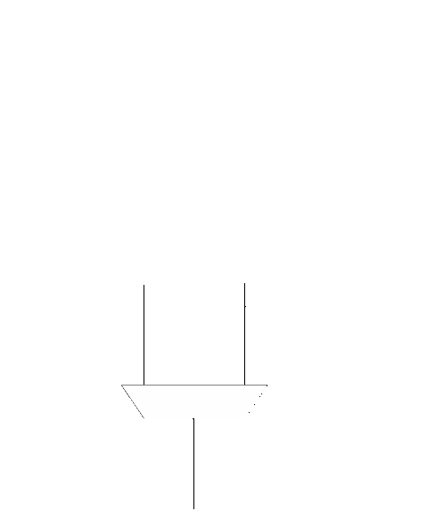
Figure 6.1-2: Uplink Layer 2
Structure
Radio bearers are
categorized into two groups: data radio bearers (DRB) for user plane
data and signalling radio bearers (SRB) for control plane data.
For IAB, the Layer 2
of NR includes: MAC, RLC, Backhaul Adaptation Protocol (BAP), PDCP
and optionally SDAP. The BAP sublayer supports routing across the IAB
topology and traffic mapping to BH RLC channels for enforcement of
traffic prioritization and QoS.
Figures 6.1-3 below
depicts the Layer-2 architecture for downlink on the IAB-donor.
Figures 6.1-4 and 6.1-5 depict the Layer-2 architecture for downlink
and uplink on the IAB-node, where the BAP sublayer offers routing
functionality and mapping to BH RLC channels.
Figure 6.1-3: DL L2-structure for
user plane at IAB-donor
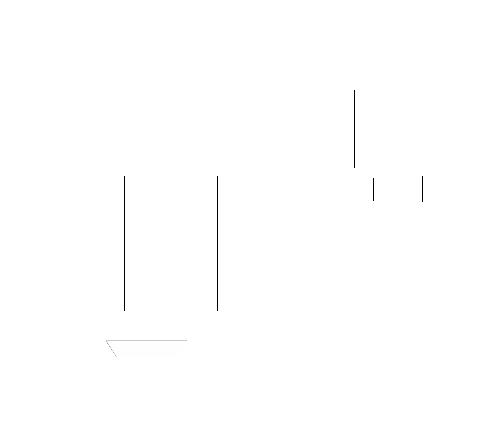
Figure 6.1-4: DL L2-structure at
IAB-node
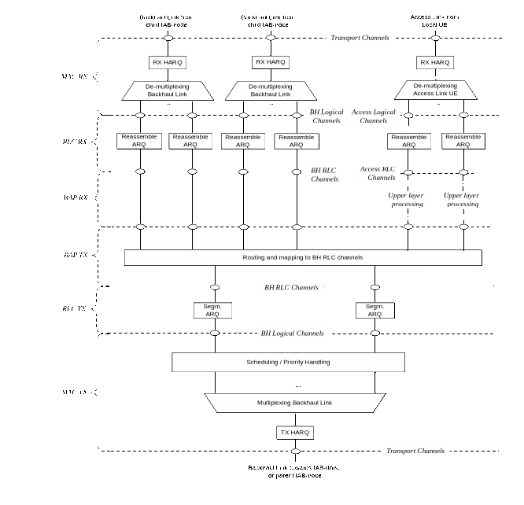
Figure 6.1-5: UL L2-structure at
IAB-node
6.2 MAC Sublayer
6.2.1 Services and Functions
The main services
and functions of the MAC sublayer include:
- Mapping between logical channels and transport channels;
- Multiplexing/demultiplexing of MAC SDUs belonging to one or
different logical channels into/from transport blocks (TB) delivered
to/from the physical layer on transport channels;
- Scheduling information reporting;
- Error correction through HARQ (one HARQ entity per cell in case of
CA);
- Priority handling between UEs by means of dynamic scheduling;
- Priority handling between logical channels of one UE by means of
logical channel prioritisation;
- Priority handling between overlapping resources of one UE;
- Padding.
A single MAC entity
can support multiple numerologies, transmission timings and cells.
Mapping restrictions in logical channel prioritisation control which
numerology(ies), cell(s), and transmission timing(s) a logical
channel can use (see clause 16.1.2).
6.2.2 Logical Channels
Different kinds of
data transfer services as offered by MAC. Each logical channel type
is defined by what type of information is transferred. Logical
channels are classified into two groups: Control Channels and Traffic
Channels. Control channels are used for the transfer of control plane
information only:
- Broadcast Control Channel (BCCH): a downlink channel for
broadcasting system control information.
- Paging Control Channel (PCCH): a downlink channel that carries
paging messages.
- Common Control Channel (CCCH): channel for transmitting control
information between UEs and network. This channel is used for UEs
having no RRC connection with the network.
- Dedicated Control Channel (DCCH): a point-to-point bi-directional
channel that transmits dedicated control information between a UE and
the network. Used by UEs having an RRC connection.
Traffic channels are
used for the transfer of user plane information only:
- Dedicated Traffic Channel (DTCH): point-to-point channel,
dedicated to one UE, for the transfer of user information. A DTCH can
exist in both uplink and downlink.
6.2.3 Mapping to Transport Channels
In Downlink, the
following connections between logical channels and transport channels
exist:
- BCCH can be mapped to BCH;
- BCCH can be mapped to DL-SCH;
- PCCH can be mapped to PCH;
- CCCH can be mapped to DL-SCH;
- DCCH can be mapped to DL-SCH;
- DTCH can be mapped to DL-SCH.
In Uplink, the
following connections between logical channels and transport channels
exist:
- CCCH can be mapped to UL-SCH;
- DCCH can be mapped to UL- SCH;
- DTCH can be mapped to UL-SCH.
6.2.4 HARQ
The HARQ
functionality ensures delivery between peer entities at Layer 1. A
single HARQ process supports one TB when the physical layer is not
configured for downlink/uplink spatial multiplexing, and when the
physical layer is configured for downlink/uplink spatial
multiplexing, a single HARQ process supports one or multiple TBs.
6.3 RLC Sublayer
6.3.1 Transmission Modes
The RLC sublayer
supports three transmission modes:
- Transparent Mode (TM);
- Unacknowledged Mode (UM);
- Acknowledged Mode (AM).
The RLC
configuration is per logical channel with no dependency on
numerologies and/or transmission durations, and ARQ can operate on
any of the numerologies and/or transmission durations the logical
channel is configured with.
For SRB0, paging and
broadcast system information, TM mode is used. For other SRBs AM mode
used. For DRBs, either UM or AM mode are used.
6.3.2 Services and Functions
The main services
and functions of the RLC sublayer depend on the transmission mode and
include:
- Transfer of upper layer PDUs;
- Sequence numbering independent of the one in PDCP (UM and AM);
- Error Correction through ARQ (AM only);
- Segmentation (AM and UM) and re-segmentation (AM only) of RLC SDUs;
- Reassembly of SDU (AM and UM);
- Duplicate Detection (AM only);
- RLC SDU discard (AM and UM);
- RLC re-establishment;
- Protocol error detection (AM only).
6.3.3 ARQ
The ARQ within the
RLC sublayer has the following characteristics:
- ARQ retransmits RLC SDUs or RLC SDU segments based on RLC status
reports;
- Polling for RLC status report is used when needed by RLC;
- RLC receiver can also trigger RLC status report after detecting a
missing RLC SDU or RLC SDU segment.
6.4 PDCP Sublayer
6.4.1 Services and Functions
The main services
and functions of the PDCP sublayer include:
- Transfer of data (user plane or control plane);
- Maintenance of PDCP SNs;
- Header compression and decompression using the ROHC protocol;
- Header compression and decompression using EHC protocol;
- Compression and decompression of uplink PDCP SDUs: DEFLATE based
UDC only;
- Ciphering and deciphering;
- Integrity protection and integrity verification;
- Timer based SDU discard;
- For split bearers, routing;
- Duplication;
- Reordering and in-order delivery;
- Out-of-order delivery;
- Duplicate discarding.
Since PDCP does not
allow COUNT to wrap around in DL and UL, it is up to the network to
prevent it from happening (e.g. by using a release and add of the
corresponding radio bearer or a full configuration).
6.5 SDAP Sublayer
The main services
and functions of SDAP include:
- Mapping between a QoS flow and a data radio bearer;
NOTE: When remapping an XR QoS flow carrying PDU sets (see clause
16.15) from one DRB to another (as exemplified in Annex A), all SDAP
SDUs belonging to a PDU Set should be mapped to the same DRB.
- Marking QoS flow ID (QFI) in both DL and UL packets.
A single protocol
entity of SDAP is configured for each individual PDU session.
6.6 L2 Data Flow
An example of the
Layer 2 Data Flow is depicted on Figure 6.6-1, where a transport
block is generated by MAC by concatenating two RLC PDUs from RBx
and one RLC PDU from RBy. The two RLC PDUs from RBx
each corresponds to one IP packet (n and n+1) while the
RLC PDU from RBy is a segment of an IP packet (m).
NOTE: H depicts the headers and subheaders.
Figure 6.6-1: Data Flow Example
6.7 Carrier Aggregation
In case of CA, the
multi-carrier nature of the physical layer is only exposed to the MAC
layer for which one HARQ entity is required per serving cell as
depicted on Figures 6.7-1 and 6.7-2 below:
- In both uplink and downlink, there is one independent hybrid-ARQ
entity per serving cell and one transport block is generated per
assignment/grant per serving cell in the absence of spatial
multiplexing. Each transport block and its potential HARQ
retransmissions are mapped to a single serving cell.
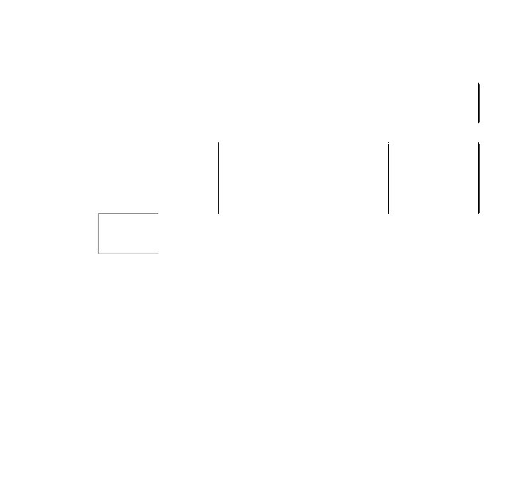
Figure 6.7-1: Layer 2 Structure for
DL with CA configured
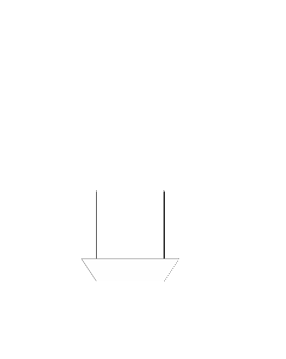
Figure 6.7-2: Layer 2 Structure for
UL with CA configured
6.8 Dual Connectivity
When the UE is
configured with SCG, the UE is configured with two MAC entities: one
MAC entity for the MCG and one MAC entity for the SCG. Further
details of DC operation can be found in TS 37.340 [21].
6.9 Supplementary Uplink
In case of
Supplementary Uplink (SUL, see TS 38.101-1 [18]), the UE is
configured with 2 ULs for one DL of the same cell, and uplink
transmissions on those two ULs are controlled by the network to avoid
overlapping PUSCH/PUCCH transmissions in time. Overlapping
transmissions on PUSCH are avoided through scheduling while
overlapping transmissions on PUCCH are avoided through configuration
(PUCCH can only be configured for only one of the 2 ULs of the cell).
In addition, initial access is supported in each of the uplink (see
clause 9.2.6). An example of SUL is given in Annex B.
6.10 Bandwidth Adaptation
With Bandwidth
Adaptation (BA), the receive and transmit bandwidth of a UE need not
be as large as the bandwidth of the cell and can be adjusted: the
width can be ordered to change (e.g. to shrink during period of low
activity to save power); the location can move in the frequency
domain (e.g. to increase scheduling flexibility); and the subcarrier
spacing can be ordered to change (e.g. to allow different services).
A subset of the total cell bandwidth of a cell is referred to as a
Bandwidth Part (BWP) and BA is achieved by configuring the UE with
BWP(s) and telling the UE which of the configured BWPs is currently
the active one.
Figure 6.10-1 below
describes a scenario where 3 different BWPs are configured:
- BWP1 with a width of 40 MHz and subcarrier spacing of 15
kHz;
- BWP2 with a width of 10 MHz and subcarrier spacing of 15
kHz;
- BWP3 with a width of 20 MHz and subcarrier spacing of 60
kHz.
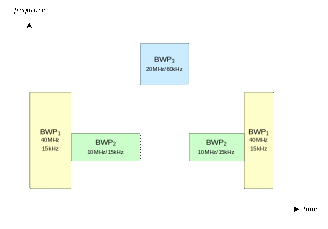
Figure 6.10-1: BA Example
6.11 Backhaul Adaptation Protocol Sublayer
6.11.1 Services and Functions
The main service and
functions of the BAP sublayer include:
- Transfer of data;
- Routing of packets to next hop;
- Determination of BAP destination and BAP path for packets from
upper layers;
- Determination of egress BH RLC channels for packets routed to next
hop;
- Differentiating traffic to be delivered to upper layers from
traffic to be delivered to egress link;
- Flow control feedback and polling signalling;
- BH RLF detection indication, BH RLF recovery indication, and BH RLF
indication;
- BAP header rewriting.
6.11.2 Traffic Mapping from Upper Layers to Layer-2
In upstream
direction, the IAB-donor-CU configures the IAB-node with mappings
between upstream F1 and non-F1 traffic originated at the IAB-node,
and the appropriate BAP routing ID, next-hop BAP address and BH RLC
channel. A specific mapping is configured:
- for each F1-U GTP-U tunnel;
- for non-UE associated F1AP messages;
- for UE-associated F1AP messages;
- for non-F1 traffic.
Multiple mappings
can contain the same BH RLC channel and/or next-hop BAP address
and/or BAP routing ID. In case the IAB-MT is NR-dual-connected (SA
mode only), the mapping may include two separate BH RLC channels,
where the two BH RLC channels are established toward different parent
nodes.
In case the IAB-node
is configured with multiple IP addresses for F1-C on the NR leg,
multiple mappings can be configured for non-UE-associated F1AP
messages or UE-associated F1AP messages. The appropriate mapping is
selected based on the IAB-node's implementation.
These traffic
mapping configurations are performed via F1AP. For a boundary
IAB-node, the traffic mapping configuration includes information that
allows the boundary IAB-node to determine the IAB topology the
mapping applies to.
During IAB-node
integration, a default BH RLC channel and a default BAP routing ID
may be configured via RRC, which can be used for non-F1-U traffic.
These default configurations may be updated during topology
adaptation scenarios as discussed in TS 38.401 [4].
In downstream
direction, traffic mapping occurs internal to the IAB-donor.
Transport for IAB-donors that use split-gNB architecture is handled
in TS 38.401 [4].
6.11.3 Routing, BAP Header Rewriting and BH-RLC-channel Mapping on
BAP sublayer
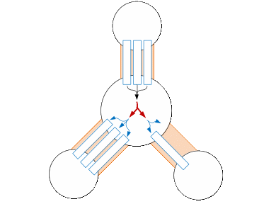
Figure 6.11.3-1: Routing and BH RLC
channel selection on BAP sublayer
Routing on BAP
sublayer uses the BAP routing ID, which is configured by the
IAB-donor-CU. The BAP routing ID consists of BAP address and BAP path
ID. The BAP address is used for the following purposes:
1. Determination if a packet has reached the destination node, i.e.
IAB-node or IAB-donor-DU, on BAP sublayer. This is the case if the
BAP address in the packet's BAP header matches the BAP address
configured via RRC on the IAB-node, or via F1AP on the IAB-donor-DU.
For a dual-connected boundary IAB-node that is configured with two
BAP addresses, the BAP address in the packet's BAP header is matched
with the BAP address configured by the CU of the IAB topology, where
the packet has been received.
2. Determination of the next-hop node for packets that have not
reached their destination. This applies to packets arriving from a
prior hop on BAP sublayer or that have been received from IP layer.
For packets arriving
from a prior hop or from upper layers, the determination of the
next-hop node is based on a routing configuration provided by the
IAB-donor-CU via F1AP signalling or a default configuration provided
by the IAB-donor-CU via RRC signalling. This F1AP configuration
contains the mapping between the BAP routing ID carried in the
packet's BAP header and the next-hop node's BAP address.
Table 6.11.3-1: Routing
configuration
-
-
BAP
routing ID
|
Next-hop
BAP address
|
Derived
from BAP packet's BAP header
|
Egress
BH link to forward packet
|
The IAB-node
resolves the next-hop BAP address to a physical backhaul link. For
this purpose, the IAB-donor-CU provides the IAB-node/IAB-donor-DU
with its child-node's BAP address via F1AP, and it provides the
IAB-node with its parent-node's BAP address via RRC. For a boundary
IAB-node, the routing configuration also indicates the IAB topology
it applies to. The BH link to the next-hop node and the next-hop BAP
address belong to the IAB topology of the CU that provided the RRC
configuration of the BH link to that next-hop node.
The IAB-node can
receive multiple routing configurations with the same destination BAP
address but different BAP path IDs. These routing configurations may
resolve to the same or different egress BH links.
In case the BH link
resolved from the routing entry is considered unavailable for
this packet, the IAB-node may perform local rerouting as defined in
TS 38.340 [31], i.e., select another BH link by considering only the
packet's BAP address or, in some
cases, by header rewriting. In this manner, the packet can be
delivered via an alternative path as defined in TS 38.340 [31].
A BH link may be
considered unavailable in case the BH link has RLF. A parent
link may be considered unavailable after a BH RLF detection
indication has been received on this parent link and before a
subsequent BH RLF recovery indication has been received on the same
parent link. For DL traffic, a BH link may be considered unavailable
for BAP PDUs carrying a certain BAP routing ID due to congestion
derived from flow-control feedback information related to this BAP
routing ID, as defined in TS 38.340 [31].
For a boundary
IAB-node, the routing configuration may carry information on the IAB
topology the configuration applies to.
The IAB-node may
rewrite the BAP routing ID in the packet's BAP header under the
following circumstances:
- A packet is routed between two IAB topologies via a boundary
IAB-node as defined in TS 38.401[31]. In this case, the BAP routing
ID carried by the received BAP PDU is allocated by the IAB-donor-CU
of the ingress IAB topology, while the BAP routing ID carried by the
BAP PDU after header rewriting is allocated by the IAB-donor-CU of
the egress IAB topology.
- An upstream packet is locally re-routed to a different IAB-donor-DU
than indicated by the BAP address in the BAP header of the received
packet. The rewritten BAP header carries the BAP address of the
alternative IAB-donor-DU and the BAP path ID for a path to this
alternative IAB-donor-DU. BAP header rewriting for upstream
inter-IAB-donor-DU local rerouting is only applied if neither routing
nor local re-routing without header rewriting resolve to an available
egress BH link.
For packets that are
routed between two IAB topologies via a boundary node, the BAP header
rewriting configuration is provided via F1AP, and it includes the
ingress BAP routing ID, the egress BAP routing ID, and it indicates
the egress IAB topology:
Table 6.11.3-2a: BAP header
rewriting configuration
-
-
Ingress
BAP routing ID
|
Egress
BAP routing ID
|
Egress
topology indicator
|
BAP
routing ID carried in the BAP header of the received BAP PDU
|
BAP
routing ID carried in the BAP header of the transmitted BAP PDU
|
Indicates
the egress IAB topology.
|
For upstream packets
that are locally re-routed to a different IAB-donor-DU, the BAP
header is rewritten with a BAP routing ID contained in the routing
entry that was selected for re-routing.
Details of BAP
header rewriting are defined in TS 38.340 [31].
When routing a
packet from an ingress to an egress BH link, the IAB-node derives the
egress BH RLC channel on the egress BH link through an
F1AP-configured mapping from the BH RLC channel used on the ingress
BH link. The BH RLC channel IDs used for ingress and egress BH RLC
channels are generated by the IAB-donor-CU. Since the BH RLC channel
ID only has link-local scope, the mapping configurations also include
the BAP addresses of prior and next hop:
Table 6.11.3-2: BH RLC channel
mapping configuration
Next-hop
BAP address
|
Prior-hop
BAP address
|
Ingress
RLC channel ID
|
Egress
RLC channel ID
|
Derived
from routing configuration
|
Derived
from packet's ingress BH link
|
Derived
from packet's ingress BH RLC channel
|
BH
RLC channel on egress BH link to forward packet
|
For a boundary
IAB-node, the BH RLC channel mapping configuration may also include
indicators for the IAB topology of the ingress and of the egress BH
link.
The IAB-node
resolves the BH RLC channel IDs from logical channel IDs based on the
configuration by the IAB-donor-CU. The IAB-MT obtains the BH RLC
channel ID in the RRC configuration of the corresponding logical
channel. The IAB-DU obtains the BH RLC channel ID in the F1AP
configuration of the BH RLC channel.
6.12 Multiple Transmit/Receive Point Operation
6.12.0 Overview
In Multiple
Transmit/Receive Point (multi-TRP) operation, a serving cell can
schedule the UE from two TRPs, providing better coverage, reliability
and/or data rates for PDSCH, PDCCH, PUSCH, PUCCH, and SRS.
There are two
different operation modes to schedule multi-TRP PDSCH transmissions:
single-DCI and multi-DCI. For both modes, control of uplink and
downlink operation can be done by physical layer and MAC layer,
within the configuration provided by the RRC layer. In single-DCI
mode, the UE is scheduled by the same DCI for both TRPs and in
multi-DCI mode, the UE is scheduled by independent DCIs from each
TRP.
There are two
different operation modes for multi-TRP PDCCH: PDCCH repetition as in
Clause 5.2.3 and Single Frequency Network (SFN) based PDCCH
transmission. In both modes, the UE can receive two PDCCH
transmissions, one from each TRP, carrying the same DCI. In PDCCH
repetition mode, the UE can receive the two PDCCH transmissions
carrying the same DCI from two linked search spaces each associated
with a different CORESET. In SFN based PDCCH transmission mode, the
UE can receive the two PDCCH transmissions carrying the same DCI from
a single search space/CORESET using different TCI states.
For multi-TRP PUSCH
repetition, according to indications in a single DCI or in a
semi-static configured grant provided over RRC, the UE performs PUSCH
transmission of the same contents toward two TRPs with corresponding
beam directions associated with different spatial relations. For
multi-TRP PUCCH repetition, the UE performs PUCCH transmission of the
same contents toward two TRPs with corresponding beam directions
associated with different spatial relations.
For inter-cell
multi-TRP operation, for multi-DCI PDSCH transmission, one or more
TCI states can be associated with SSB with a PCI different from the
serving cell PCI. The activated TCI states can be associated with at
most one PCI different from the serving cell PCI at a time.
For inter-cell and
intra-cell multi-DCI multi-TRP operation, up to two TAGs with
associated TAG IDs can be configured per serving cell. Each UL/Joint
TCI state is associated with a TAG ID and the UE applies the timing
advance of the TAG ID associated with the UL/joint TCI state utilized
for UL transmission. For inter-cell without multi-DCI multi-TRP
operation and intra-cell without multi-DCI multi-TRP operation, up to
two TAGs can be configured in the serving cell, and each UL/Joint TCI
state for PUSCH, PUCCH, and SRS transmission can be associated with
any one of the two TAGs.
For single-DCI
multi-TRP Simultaneous Transmission with Multi-Panel (STxMP) Spatial
Domain Multiplexing (SDM) PUSCH transmission, different layers of one
PUSCH are separately transmitted towards two TRPs. For single-DCI
multi-TRP STxMP SFN PUSCH transmission, same layers of one PUSCH are
transmitted towards two TRPs. For multi-DCI based multi-TRP STxMP
PUSCH+PUSCH transmission, two PUSCHs are transmitted towards two
TRPs. For single-DCI multi-TRP STxMP SFN PUCCH transmission, one
PUCCH is transmitted towards two TRPs.
For inter-TRP delay,
frequency, and phase calibration for coherent joint transmission
(CJT), CSI-RS per TRP is transmitted and the UE measures the
CSI-RS(s) and estimates the reporting quantity including inter-TRP
delay offset(s), frequency offset(s), and phase offset(s). A CSI
report associated with the reporting quantity is carried on a PUSCH.
6.12.1 Asymmetric DL single-TRP and UL multi-TRP
For asymmetric DL
single-TRP and UL multi-TRP operation, the UL TRP may reduce or even
disable DL transmission. Pathloss offsets between two TRPs can be
configured by RRC and dynamically updated by Pathloss Offset Update
MAC CE, which is defined in TS 38.321[6]. Each pathloss offset is
explicitly indicated for the corresponding UL/Joint TCI state for
PUSCH, PUCCH, and SRS transmission toward the UL TRP. The pathloss
offset can also be indicated by a PDCCH order for a PDCCH order
triggered PRACH toward the UL TRP, thereby facilitating pathloss
calculation. In addition, up to two closed loop power control
adjustment states, one for the DL TRP and the other for UL TRP, can
be supported for SRS separated from those used for PUSCH.
7 RRC
7.1 Services and Functions
The main services
and functions of the RRC sublayer over the Uu interface include:
- Broadcast of System Information related to AS and NAS;
- Paging initiated by 5GC or NG-RAN;
- Establishment, maintenance and release of an RRC connection between
the UE and NG-RAN including:
- Addition, modification and release of carrier aggregation;
- Addition, modification and release of Dual Connectivity in NR or
between E-UTRA and NR.
- Security functions including key management;
- Establishment, configuration, maintenance and release of Signalling
Radio Bearers (SRBs) and Data Radio Bearers (DRBs);
- Mobility functions including:
- Handover and context transfer;
- UE cell selection and reselection and control of cell selection and
reselection;
- Inter-RAT mobility.
- QoS management functions;
- UE measurement reporting and control of the reporting;
- Detection of and recovery from radio link failure;
- NAS message transfer to/from NAS from/to UE.
The sidelink specific services and functions of the RRC sublayer over
the Uu interface include:
- Configuration of sidelink resource allocation via system
information or dedicated signalling;
- Reporting of UE sidelink information;
- Measurement configuration and reporting related to sidelink;
- Reporting of UE assistance information for SL traffic pattern(s).
7.2 Protocol States
RRC supports the
following states which can be characterised as follows:
- RRC_IDLE:
- PLMN selection;
- Broadcast of system information;
- Cell re-selection mobility;
- Paging for mobile terminated data is initiated by 5GC;
- Transfer of MBS broadcast data to the UE over MRB(s);
- DRX for CN paging configured by NAS.
- RRC_INACTIVE:
- PLMN selection;
- Broadcast of system information;
- Cell re-selection mobility;
- Paging is initiated by NG-RAN (RAN paging);
- RAN-based notification area (RNA) is managed by NG- RAN;
- DRX for RAN paging configured by NG-RAN;
- 5GC - NG-RAN connection (both C/U-planes) is established for UE;
- The UE Inactive AS context is stored in NG-RAN and the UE;
- NG-RAN knows the RNA which the UE belongs to;
- Transfer of MBS multicast/broadcast data to the UE over MRB(s);
- Transfer of unicast data and/or signalling to/from the UE over
radio bearers configured for SDT.
- RRC_CONNECTED:
- 5GC - NG-RAN connection (both C/U-planes) is established for UE;
- The UE AS context is stored in NG-RAN and the UE;
- NG-RAN knows the cell which the UE belongs to;
- Transfer of unicast data to/from the UE;
- Transfer of MBS multicast/broadcast data to the UE over MRB(s);
- Network controlled mobility including measurements.
7.3 System Information Handling
7.3.1 Overview
System Information
(SI) consists of a MIB and a number of SIBs, which are divided into
Minimum SI and Other SI:
- Minimum SI comprises basic information required for initial
access and information for acquiring any other SI. Minimum SI
consists of:
- MIB contains cell barred status information and essential
physical layer information of the cell required to receive further
system information, e.g. CORESET#0 configuration. MIB is
periodically broadcast on BCH.
- SIB1 defines the scheduling of other system information
blocks and contains information required for initial access. SIB1 is
also referred to as Remaining Minimum SI (RMSI) and can either be
periodically broadcast on DL-SCH, sent in a dedicated manner on
DL-SCH to UEs in RRC_CONNECTED, or broadcast on-demand upon OD-SIB1
request from UEs in RRC_IDLE, RRC_INACTIVE or RRC_CONNECTED state
when T311 is running if a UE and cell support OD-SIB1 as described in
15.4.2.9.
- Other SI encompasses all SIBs not broadcast in the Minimum
SI. Those SIBs can either be periodically broadcast on DL-SCH,
broadcast on-demand on DL-SCH (i.e. upon request from UEs in
RRC_IDLE, RRC_INACTIVE, or RRC_CONNECTED), or sent in a dedicated
manner on DL-SCH to UEs in RRC_CONNECTED (i.e., upon request, if
configured by the network, from UEs in RRC_CONNECTED or when the UE
has an active BWP with no common search space configured or when the
UE configured with inter cell beam management is receiving DL-SCH
from a TRP with PCI different from serving cell's PCI). For on-demand
SIB requests made in RRC_CONNECTED, the UE may also request the start
or stop of posSIB deliveries in a dedicated manner on DL-SCH, if
configured by the network. Other SI consists of:
- SIB2 contains cell re-selection information, mainly related
to the serving cell;
- SIB3 contains information about the serving frequency and
intra-frequency neighbouring cells relevant for cell re-selection
(including cell re-selection parameters common for a frequency as
well as cell specific re-selection parameters);
- SIB4 contains information about other NR frequencies and
inter-frequency neighbouring cells relevant for cell re-selection
(including cell re-selection parameters common for a frequency as
well as cell specific re-selection parameters), which can also be
used for NR idle/inactive measurements;
- SIB5 contains information about E-UTRA frequencies and
E-UTRA neighbouring cells relevant for cell re-selection (including
cell re-selection parameters common for a frequency as well as cell
specific re-selection parameters);
- SIB6 contains an ETWS primary notification;
- SIB7 contains an ETWS secondary notification;
- SIB8 contains a CMAS warning notification;
- SIB9 contains information related to GPS time and
Coordinated Universal Time (UTC);
- SIB10 contains the Human-Readable Network Names (HRNN) of
the NPNs listed in SIB1;
- SIB11 contains information related to idle/inactive
measurements;
- SIB15 contains information related to disaster roaming;
- SIB16 contains slice-based cell reselection information;
- SIB17 and SIB17bis contain information
related to TRS configuration for UEs in RRC_IDLE/RRC_INACTIVE;
- SIBpos contains positioning assistance data as defined in TS
37.355 [43] and TS 38.331 [12];
- SIB18 contains information related to the Group IDs for
Network selection (GINs) associated with SNPNs listed in SIB1.
- SIB19 in TN contains NTN-specific parameters for NTN
neighbour cells as defined in TS 38.331 [12].
- SIB26 contains OD-SIB1 request configurations of serving and
neighbour cells which support OD-SIB1 as defined in TS 38.331 [12].
For sidelink, Other
SI also includes:
- SIB12 contains information related to NR sidelink
communication, ranging and sidelink positioning;
- SIB13 contains information related to
SystemInformationBlockType21 for V2X sidelink communication as
specified in TS 36.331 clause 5.2.2.28 [29];
- SIB14 contains information related to
SystemInformationBlockType26 for V2X sidelink communication as
specified in TS 36.331 clause 5.2.2.33 [29];
- SIB23 contains information related to ranging and sidelink
positioning.
For non-terrestrial
network, Other SI also includes:
- SIB19 contains NTN-specific parameters for serving cell and
optionally NTN-specific parameters for neighbour cells as defined in
TS 38.331 [12].
- SIB25 contains TN coverage information as defined in TS
38.331 [12].
- SIB28 contains assistance information for cell selection to
IoT NTN neighbour cells as defined in TS 38.331 [12].
For MBS broadcast,
Other SI also includes:
- SIB20 contains MCCH configuration;
- SIB21 contains information related to service continuity for
MBS broadcast reception;
- SIB27 contains the information of the ISA(s) of MBS
broadcast service(s) in an NTN cell.
For MBS multicast
reception in RRC_INACTIVE state, Other SI also includes:
- SIB24 contains the information required to acquire the
multicast MCCH/MTCH configuration as defined in TS 38.331 [12].
For ATG network,
Other SI also includes:
- SIB22 contains ATG-specific parameters for serving cell and
optionally ATG-specific parameters for neighbour cells as defined in
TS 38.331 [12].
Figure 7.3.1-1 below
summarises System Information provisioning.
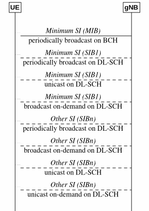
Figure 7.3.1-1: System Information
Provisioning
For a cell/frequency
that is considered for camping by the UE, the UE is not required to
acquire the contents of the minimum SI of that cell/frequency from
another cell/frequency layer. This does not preclude the case that
the UE applies stored SI from previously visited cell(s).
If the UE cannot
determine the full contents of the minimum SI of a cell by receiving
from that cell, the UE shall consider that cell as barred.
In case of BA, the
UE only acquires SI on the active BWP.
If the UE is
configured with inter cell beam management:
- the UE is not required to acquire the SI from the serving cell
while it is receiving DL-SCH from a TRP with PCI different from
serving cell's PCI.
7.3.2 Scheduling
The MIB is mapped on
the BCCH and carried on BCH while all other SI messages are mapped on
the BCCH, where they are dynamically carried on DL-SCH. The
scheduling of SI messages part of Other SI is indicated by SIB1.
For UEs in RRC_IDLE
and RRC_INACTIVE while SDT procedure is not ongoing (see clause 18),
a request for Other SI triggers a random access procedure (see clause
9.2.6) where MSG3 includes the SI request message unless the
requested SI is associated to a subset of the PRACH resources, in
which case MSG1 is used for indication of the requested Other SI.
When MSG1 is used, the minimum granularity of the request is one SI
message (i.e. a set of SIBs), one RACH preamble and/or PRACH resource
can be used to request multiple SI messages and the gNB acknowledges
the request in MSG2. When MSG 3 is used, the gNB acknowledges the
request in MSG4. For UEs in RRC_IDLE, RRC_INACTIVE and RRC_CONNECTED
when T311 is running, a request for OD-SIB1 triggers a random access
procedure, in which case MSG1 is used for indicating OD-SIB1 request
and the gNB acknowledges the request in MSG2.
For UEs in
RRC_CONNECTED, a request for Other SI may be sent to the network, if
configured by the network, in a dedicated manner (i.e., via UL-DCCH)
and the granularity of the request is one SIB. The gNB may respond
with an RRCReconfiguration including the requested SIB(s). It
is a network choice to decide which requested SIBs are delivered in a
dedicated or broadcasted manner.
The Other SI may be
broadcast at a configurable periodicity and for a certain duration.
The Other SI may also be broadcast when it is requested by UE in
RRC_IDLE/RRC_INACTIVE/RRC_CONNECTED.
For a UE to be
allowed to camp on a cell it must have acquired the contents of the
Minimum SI from that cell. There may be cells in the system that do
not broadcast the Minimum SI and where the UE therefore cannot camp.
7.3.3 SI Modification
Change of system
information (other than for ETWS/CMAS, see clause 16.4) only occurs
at specific radio frames, i.e. the concept of a modification period
is used. System information may be transmitted a number of times with
the same content within a modification period, as defined by its
scheduling. The modification period is configured by system
information.
When the network
changes (some of the) system information, it first notifies the UEs
about this change, i.e. this may be done throughout a modification
period. In the next modification period, the network transmits the
updated system information. Upon receiving a change notification, the
UE acquires the new system information from the start of the next
modification period. The UE applies the previously acquired system
information until the UE acquires the new system information.
7.4 Access Control
NG-RAN supports
overload and access control functionality such as RACH back off, RRC
Connection Reject, RRC Connection Release and UE based access barring
mechanisms.
One unified access
control framework as specified in TS 22.261 [19] applies to all UE
states (RRC_IDLE, RRC_INACTIVE and RRC_CONNECTED) for NR. NG-RAN
broadcasts barring control information associated with Access
Categories and Access Identities (in case of network sharing, the
barring control information can be set individually for each PLMN).
The UE determines whether an access attempt is authorized based on
the barring information broadcast for the selected PLMN, and the
selected Access Category and Access Identity(ies) for the access
attempt:
- For NAS triggered requests, NAS determines the Access Category and
Access Identity(ies);
- For AS triggered requests, RRC determines the Access Category while
NAS determines the Access Identity(ies).
The gNB handles
access attempts with establishment or resume causes "emergency",
"mps-PriorityAccess" and "mcs-PriorityAccess"
(i.e. Emergency calls, MPS, MCS subscribers) with high priority and
responds with RRC Reject to these access attempts only in extreme
network load conditions that may threaten the gNB stability.
Unified access
control does not apply to IAB-MTs or NCR-MTs.
7.5 UE Capability Retrieval framework
The UE reports its
UE radio access capabilities which are static at least when the
network requests. The gNB can request what capabilities for the UE to
report based on band information. The UE capability can be
represented by a capability ID, which may be exchanged in NAS
signalling over the air and in network signalling instead of the UE
capability structure.
In IAB, it is optional for an IAB-MT to support UE capability
Retrieval framework and the related signalling. In case IAB-MT does
not support UE capability Retrieval framework, IAB-MT capabilities
are assumed to be known to the network by other means, e.g. OAM.
7.6 Transport of NAS Messages
NR provides reliable
in-sequence delivery of NAS messages over SRBs in RRC, except at
handover where losses or duplication can occur when PDCP is
re-established. In RRC, NAS messages are sent in transparent
containers. Piggybacking of NAS messages can occur in the following
scenarios:
- At bearer establishment/modification/release in the DL;
- For transferring the initial NAS message during connection setup
and connection resume in the UL.
NOTE: In addition to the integrity protection and ciphering performed
by NAS, NAS messages can also be integrity protected and ciphered by
PDCP.
Multiple NAS
messages can be sent in a single downlink RRC message during PDU
Session Resource establishment or modification. In this case, the
order of the NAS messages contained in the RRC message shall be in
the same order as that in the corresponding NG-AP message in order to
ensure the in-sequence delivery of NAS messages.
NG-RAN node may trigger the NAS Non Delivery Indication procedure to
report the non-delivery of the non PDU Session related NAS PDU
received from the AMF as specified in TS 38.413 [26].
7.7 Carrier
Aggregation
When CA is
configured, the UE only has one RRC connection with the network. At
RRC connection establishment/re-establishment/handover, one serving
cell provides the NAS mobility information, and at RRC connection
re-establishment/handover, one serving cell provides the security
input. This cell is referred to as the Primary Cell (PCell).
Depending on UE capabilities, Secondary Cells (SCells) can be
configured to form together with the PCell a set of serving cells.
The configured set of serving cells for a UE in a cell group always
consists of one SpCell and one or more SCells.
The reconfiguration,
addition and removal of SCells can be performed by RRC. At
intra-NR handover and during connection resume from RRC_INACTIVE, the
network can also add, remove, keep, or reconfigure SCells for usage
with the target PCell. When adding a new SCell, dedicated RRC
signalling is used for sending all required system information of the
SCell i.e. while in connected mode, UEs need not acquire broadcast
system information directly from the SCells.
7.8 Bandwidth Adaptation
To enable BA on the
SpCell, the gNB configures the UE with UL and DL BWP(s). To enable BA
on SCells in case of CA, the gNB configures the UE with DL BWP(s) at
least (i.e. there may be none in the UL). For the PCell, the BWP used
for initial access is configured via system information. For the
SCell(s), the BWP used after initial activation is configured via
dedicated RRC signalling.
In paired spectrum,
DL and UL can switch BWP independently. In unpaired spectrum, DL and
UL switch BWP simultaneously. Switching between configured BWPs
happens by means of RRC signalling, DCI, inactivity timer or upon
initiation of random access. When an inactivity timer is configured
for a serving cell, the expiry of the inactivity timer associated to
that cell switches the active BWP to a default BWP configured by the
network. There can be at most one active BWP per cell, except when
the serving cell is configured with SUL, in which case there can be
at most one on each UL carrier.
7.9 UE Assistance Information
When configured to
do so, the UE can signal the network through UEAssistanceInformation:
- If it prefers an adjustment in the connected mode DRX cycle length,
for the purpose of delay budget reporting;
- If it is experiencing internal overheating;
- If it prefers certain DRX parameter values, and/or a reduced
maximum number of secondary component carriers, and/or a reduced
maximum aggregated bandwidth and/or a reduced maximum number of MIMO
layers and/or minimum scheduling offsets K0 and K2 for power saving
purpose;
- If it expects not to send or receive any more data in the near
future, and in this case, it can provide its preference to transition
out of RRC_CONNECTED where this indication may express its preferred
RRC state, or alternately, it may cancel an earlier indicated
preference to transition out of RRC_CONNECTED;
- If it prefers (not) to be provisioned with reference time
information;
- If it prefers to transition out of RRC_CONNECTED state for MUSIM
operation and its preferred RRC state after transition;
- If it wants to include assistance information for setup or release
of MUSIM gaps, and/or for setup the priority of periodic MUSIM gaps,
and/or for keeping the colliding MUSIM gaps;
- If it prefers to restrict UE capability temporarily or remove the
restriction for MUSIM operation;
- When affected by IDC problems that it cannot solve by itself:
- The list of frequencies affected by IDC problems (see clause 23.4
of TS 36.300 [2]);
- The list of frequency ranges/frequency range combinations affected
by the IDC problems;
- DRX based TDM assistance information (see clause 23.4.2 of TS
36.300 [2]);
- Its RRM measurement relaxation status indicating whether RRM
measurement relaxation criteria are met or not;
- Its RLM measurement relaxation status indicating whether the UE is
applying RLM measurements relaxation;
- Its BFD measurement relaxation status indicating whether the UE is
applying BFD measurements relaxation;
- If it prefers not operating on multi-Rx (i.e. not supporting
simultaneous reception with different QCL-typeD) for FR2;
- If it is in low power state while performing data logging for
Network-side data collection;
- If its AS layer memory to log data for Network -side data
collection becomes full;
- If its AS layer memory to log data for Network-side data collection
reaches a threshold configured by the network;
- If it prefers to start, or stop UE-side data collection for UE-side
model;
- Its preference for UE-side data collection configuration(s) from a
list of candidate configurations provided by the network for the
training of UE-side model(s);
- Its AI/ML functionality applicability status;
- If it prefers to be configured with a specific time offset for
LP-WUS monitoring in RRC_CONNECTED;
NOTE: The requirements on RRM/RLM/CSI measurements in different
phases of IDC interference defined in TS 36.300 [2] are applicable
except that for NR serving cell, the requirements in TS 38.133 [13]
and TS 38.101-1 [18], TS 38.101-2 [35], TS 38.101-3 [36] apply.
In the second case,
the UE can express a preference for temporarily reducing the number
of maximum secondary component carriers, the maximum aggregated
bandwidth and the number of maximum MIMO layers. In all cases, it is
up to the gNB whether to accommodate the request.
For sidelink, the UE
can report SL traffic pattern(s) to NG-RAN, for periodic traffic.
7.10 Segmentation of RRC messages
An RRC message may
be segmented in case the size of the encoded RRC message PDU exceeds
the maximum PDCP SDU size. Segmentation is performed in the RRC layer
using a separate RRC PDU to carry each segment. The receiver
reassembles the segments to form the complete RRC message. All
segments of an RRC message are transmitted before sending another RRC
message. Segmentation is supported in both uplink and downlink as
specified in TS 38.331 [12].
8 NG Identities
8.1 UE Identities
In this clause, the
identities used by NR connected to 5GC are listed. For scheduling at
cell level, the following identities are used:
- C-RNTI: unique UE identification used as an identifier of the RRC
Connection and for scheduling;
- CG-SDT-CS-RNTI: unique UE identification used for Configured
Grant-based SDT in the uplink;
- CI-RNTI: identification of cancellation in the uplink;
- CS-RNTI: unique UE identification used for Semi-Persistent
Scheduling in the downlink or configured grant in the uplink;
- INT-RNTI: identification of pre-emption in the downlink;
- MCS-C-RNTI: unique UE identification used for indicating an
alternative MCS table for PDSCH and PUSCH;
- P-RNTI: identification of Paging and System Information change
notification in the downlink;
- SI-RNTI: identification of Broadcast and System Information in the
downlink;
- SP-CSI-RNTI: unique UE identification used for semi-persistent CSI
reporting on PUSCH.
For power and slot
format control, the following identities are used:
- SFI-RNTI: identification of slot format;
- TPC-PUCCH-RNTI: unique UE identification to control the power of
PUCCH;
- TPC-PUSCH-RNTI: unique UE identification to control the power of
PUSCH;
- TPC-SRS-RNTI: unique UE identification to control the power of SRS.
During the random
access procedure, the following identities are also used:
- RA-RNTI: identification of the Random Access Response in the
downlink;
- MSGB-RNTI: identification of the Random Access Response for 2-step
RA type in the downlink;
- Temporary C-RNTI: UE identification temporarily used for scheduling
during the random access procedure;
- Random value for contention resolution: UE identification
temporarily used for contention resolution purposes during the random
access procedure.
For NR connected to
5GC, the following UE identity is used at NG-RAN level:
- I-RNTI: used to identify the UE context in RRC_INACTIVE.
For UE power saving
purpose, the following identities are used:
- PS-RNTI: used to determine if the UE needs to monitor PDCCH on the
next occurrence of the connected mode DRX on-duration;
- PEI-RNTI: used to determine if the UE needs to monitor the
associated PO.
For IAB the
following identity is used:
- AI-RNTI: identification of the DCI carrying availability indication
for soft symbols of an IAB-DU.
For
Network-Controlled Repeater the following identity is used:
- NCR-RNTI: identification of the DCI carrying side control
information.
For MBS, the following identities are used:
- G-RNTI: Identifies dynamically scheduled PTM transmissions of
MTCH(s);
- G-CS-RNTI: Identifies configured scheduled PTM transmissions of
MTCH(s) scheduled with configured grant;
- MCCH-RNTI: Identifies transmissions of MCCH and MCCH change
notification for broadcast reception.
- Multicast MCCH-RNTI: Identifies transmissions of MCCH and MCCH
change notification for multicast reception in RRC_INACTIVE state.
For sidelink, the
following identities are used:
- SL-RNTI: unique UE identification used for NR sidelink
communication scheduling;
- SL-CS-RNTI: unique UE identification used for configured sidelink
grant for NR sidelink communication;
- SL Semi-Persistent Scheduling V-RNTI: unique UE identification used
for semi-persistent scheduling for V2X sidelink communication;
- SL-PRS-RNTI: unique UE identification used for SL-PRS transmission
scheduling on dedicated SL-PRS resource pool;
- SL-PRS-CS-RNTI: unique UE identification used for configured
sidelink grant for SL-PRS transmission on dedicated SL-PRS resource
pool.
For network energy
saving purpose, the following identity is used:
- cellDTRX-RNTI: identification used for network energy saving
indication.
8.2 Network
Identities
The following
identities are used in NG-RAN for identifying a specific network
entity:
- AMF Name: used to identify an AMF.
- NR Cell Global Identifier (NCGI): used to identify NR cells
globally. The NCGI is constructed from the PLMN identity the cell
belongs to and the NR Cell Identity (NCI) of the cell. The PLMN ID
included in the NCGI should be the first PLMN ID within the set of
PLMN IDs associated to the NR Cell Identity in SIB1, following the
order of broadcast.
NOTE 1: How to manage the scenario where a different PLMN ID has been
allocated by the operator for an NCGI is left to OAM and/or
implementation.
- gNB Identifier (gNB ID): used to identify gNBs within a PLMN. The
gNB ID is contained within the NCI of its cells.
- Global gNB ID: used to identify gNBs globally. The Global gNB ID is
constructed from the PLMN identity the gNB belongs to and the gNB ID.
The MCC and MNC are the same as included in the NCGI.
NOTE 2: It is not precluded that a cell served by a gNB does not
broadcast the PLMN ID included in the Global gNB ID.
- Tracking Area identity (TAI): used to identify tracking areas. The
TAI is constructed from the PLMN identity the tracking area belongs
to and the TAC (Tracking Area Code) of the Tracking Area.
- Single Network Slice Selection Assistance information (S-NSSAI):
identifies a network slice.
- Network Slice AS Group (NSAG): identifies an association to a slice
or a set of slices. An NSAG is defined within a TA, used for
slice-based cell reselection and/or slice-based RACH configuration.
Values of NSAG IDs associated with different slice or set of slices
shall be unique within a TA, also when slice-based cell reselection
and slice-based RACH configuration are both supported in the TA.
- Network Identifier (NID): identifies an SNPN in combination with a
PLMN ID.
- Closed Access Group Identifier: identifies a CAG within a PLMN.
- Local NG-RAN Node Identifier: used as reference to the NG-RAN node
in the I-RNTI.
8.3 User Data Transport on the CN-RAN Interface
The core network may
provide two transport layer addresses of different versions to enable
that a NG-RAN node can select either IPv4 or IPv6.
8.4 NR sidelink communication, V2X sidelink communication and
Ranging/Sidelink positioning related identities
The following
identities are used for NR sidelink communication and SL-PRS
transmission on shared SL-PRS resource pool:
- Source Layer-2 ID: Identifies the sender of the data in NR sidelink
communication and/or SL-PRS transmission. The Source Layer-2 ID is 24
bits long and is split in the MAC layer into two bit strings:
- One bit string is the LSB part (8 bits) of Source Layer-2 ID and
forwarded to physical layer of the sender. This identifies the source
of the intended data and/or SL-PRS in sidelink control information
and is used for filtering of packets at the physical layer of the
receiver;
- Second bit string is the MSB part (16 bits) of the Source Layer-2
ID and is carried within the MAC header. This is used for filtering
of packets at the MAC layer of the receiver.
- Destination Layer-2 ID: Identifies the target of the data in NR
sidelink communication and/or SL-PRS transmission. For NR sidelink
communication and SL-PRS transmission on shared SL-PRS resource pool,
the Destination Layer-2 ID is 24 bits long and is split in the MAC
layer into two bit strings:
- One bit string is the LSB part (16 bits) of Destination Layer-2 ID
and forwarded to physical layer of the sender. This identifies the
target of the intended data and/or SL-PRS in sidelink control
information and is used for filtering of packets at the physical
layer of the receiver;
- Second bit string is the MSB part (8 bits) of the Destination
Layer-2 ID and is carried within the MAC header. This is used for
filtering of packets at the MAC layer of the receiver.
- PC5 Link Identifier: Uniquely identifies the PC5 unicast link in a
UE for the lifetime of the PC5 unicast link as specified in TS 23.287
[40]. The PC5 Link Identifier is used to indicate to upper layers the
PC5 unicast link in which sidelink RLF was declared and corresponding
PC5-RRC connection was released.
V2X sidelink
communication related identities are specified in clause 8.3 of TS
36.300 [2].
The following
identities are used for SL-PRS transmission on dedicated SL-PRS
resource pool:
- Source ID: Identifies the sender of the SL-PRS transmission. The
length of the identifier is either 12 or 24 bits, which is indicated
in the RRC configuration. The source ID identifies the source of the
intended SL-PRS in sidelink control information and is used for
filtering at the MAC layer of the receiver;
- Destination ID: Identifies the target of the SL-PRS transmission.
The length of the identifier is 24 bits. The Destination ID
identifies the target of the intended SL-PRS in sidelink control
information and is used for filtering at the MAC layer of the
receiver.
9 Mobility and State Transitions
9.1 Overview
Load balancing is
achieved in NR with handover, redirection mechanisms upon RRC release
and through the usage of inter-frequency and inter-RAT absolute
priorities and inter-frequency Qoffset parameters.
Measurements to be
performed by a UE for connected mode mobility are classified in at
least four measurement types:
- Intra-frequency NR measurements;
- Inter-frequency NR measurements;
- Inter-RAT measurements for E-UTRA;
- Inter-RAT measurements for UTRA.
For each measurement
type one or several measurement objects can be defined (a measurement
object defines e.g. the carrier frequency to be monitored).
For each measurement
object one or several reporting configurations can be defined (a
reporting configuration defines the reporting criteria). Three
reporting criteria are used: event triggered reporting, periodic
reporting and event triggered periodic reporting.
The association
between a measurement object and a reporting configuration is created
by a measurement identity (a measurement identity links together one
measurement object and one reporting configuration of the same RAT).
By using several measurement identities (one for each measurement
object, reporting configuration pair) it is then possible to:
- Associate several reporting configurations to one measurement
object and;
- Associate one reporting configuration to several measurement
objects.
The measurements
identity is used as well when reporting results of the measurements.
Measurement
quantities are considered separately for each RAT.
Measurement commands
are used by NG-RAN to order the UE to start, modify or stop
measurements.
Handover can be
performed within the same RAT and/or CN, or it can involve a change
of the RAT and/or CN.
Inter system
fallback towards E-UTRAN is performed when 5GC does not support
emergency services, voice services, for load balancing etc. Depending
on factors such as CN interface availability, network configuration
and radio conditions, the fallback procedure results in either
RRC_CONNECTED state mobility (handover procedure) or RRC_IDLE state
mobility (redirection), see TS 23.501 [3] and TS 38.331 [12].
SRVCC from 5G to
UTRAN, if supported by both the UE and the network, may be performed
to handover a UE with an ongoing voice call from NR to UTRAN. The
overall procedure is described in TS 23.216 [34]. See also TS 38.331
[12] and TS 38.413 [26].
In the NG-C
signalling procedure, the AMF based on support for emergency
services, voice service, any other services or for load balancing
etc, may indicate the target CN type as EPC or 5GC to the gNB node.
When the target CN type is received by gNB, the target CN type is
also conveyed to the UE in RRCRelease Message.
Inter-gNB CSI-RS based mobility, i.e. handover, is supported between
two neighbour gNBs by enabling that neighbour gNBs can exchange and
forward their own CSI-RS configurations and on/off status.
9.2 Intra-NR
9.2.1 Mobility in RRC_IDLE
9.2.1.1 Cell Selection
The principles of
PLMN selection in NR are based on the 3GPP PLMN selection principles.
Cell selection is required on transition from RM-DEREGISTERED to
RM-REGISTERED, from CM-IDLE to CM-CONNECTED and from CM-CONNECTED to
CM-IDLE and is based on the following principles:
- The UE NAS layer identifies a selected PLMN and equivalent PLMNs;
- Cell selection is always based on CD-SSBs located on the
synchronization raster (see clause 5.2.4):
- The UE searches the NR frequency bands and for each carrier
frequency identifies the strongest cell as per the CD-SSB. It then
reads cell system information broadcast to identify its PLMN(s):
- The UE may search each carrier in turn ("initial cell
selection") or make use of stored information to shorten the
search ("stored information cell selection").
- The UE seeks to identify a suitable cell; if it is not able to
identify a suitable cell it seeks to identify an acceptable cell.
When a suitable cell is found or if only an acceptable cell is found
it camps on that cell and commence the cell reselection procedure:
- A suitable cell is one for which the measured cell attributes
satisfy the cell selection criteria; the cell PLMN is the selected
PLMN, registered or an equivalent PLMN; the cell is not barred or
reserved, the cell is not part of a tracking area which is in the
list of "forbidden tracking areas for roaming", and the
access technology (as defined in TS 23.122 [47]) of the cell is not
marked as restricted by the UE NAS layer;
- An acceptable cell is one for which the measured cell attributes
satisfy the cell selection criteria and the cell is not barred.
- The IAB-MT and NCR-MT apply the cell selection procedure as
described for the UE with the following differences:
- The IAB-MT and NCR-MT ignore cell-barring or cell-reservation
indications contained in cell system information broadcast;
- The IAB-MT only considers a cell as a candidate for cell selection
if the cell system information broadcast indicates IAB support for
the selected PLMN or the selected SNPN, and the NCR-MT only considers
a cell as a candidate for cell selection if the cell system
information broadcast indicates Network-Controlled Repeater support.
- The mobile IAB-MT applies the cell selection procedure as described
for the IAB-MT with the following differences:
- The mobile IAB-MT only considers a cell as a candidate cell for
cell selection if the cell system information broadcast indicates
mobile IAB support.
Transition to
RRC_IDLE:
On transition from RRC_CONNECTED or RRC_INACTIVE to RRC_IDLE, a UE
should camp on a cell as result of cell selection according to the
frequency be assigned by RRC in the state transition message if any.
Recovery from out of
coverage:
The UE should attempt to find a suitable cell in the manner
described for stored information or initial cell selection above. If
no suitable cell is found on any frequency or RAT, the UE should
attempt to find an acceptable cell.
In multi-beam
operations, the cell quality is derived amongst the beams
corresponding to the same cell (see clause 9.2.4).
9.2.1.2 Cell Reselection
A UE in RRC_IDLE
performs cell reselection. The principles of the procedure are the
following:
- Cell reselection is always based on CD-SSBs located on the
synchronization raster (see clause 5.2.4).
- The UE makes measurements of attributes of the serving and
neighbour cells to enable the reselection process:
- For the search and measurement of inter-frequency neighbouring
cells, only the carrier frequencies need to be indicated.
- Cell reselection identifies the cell that the UE should camp on. It
is based on cell reselection criteria which involves measurements of
the serving and neighbour cells:
- Intra-frequency reselection is based on ranking of cells;
- Inter-frequency reselection is based on absolute priorities where a
UE tries to camp on the highest priority frequency available;
- A Neighbour Cell List (NCL) can be provided by the serving cell to
handle specific cases for intra- and inter-frequency neighbouring
cells;
- Exclude-lists can be provided to prevent the UE from reselecting to
specific intra- and inter-frequency neighbouring cells;
- Allow-lists can be provided to request the UE to reselect to only
specific intra- and inter-frequency neighbouring cells;
- Cell reselection can be speed dependent;
- Service specific prioritisation;
- Cell-type-specific prioritisation, e.g., HSDN cell and mobile IAB
cell;
- Slice-based cell reselection information can be provided to
facilitate the UE to reselect a cell that supports specific slices.
In multi-beam
operations, the cell quality is derived amongst the beams
corresponding to the same cell (see clause 9.2.4).
9.2.1.3 State Transitions
The following figure
describes the UE triggered transition from RRC_IDLE to RRC_CONNECTED
(for the NAS part, see TS 23.502 [22]):
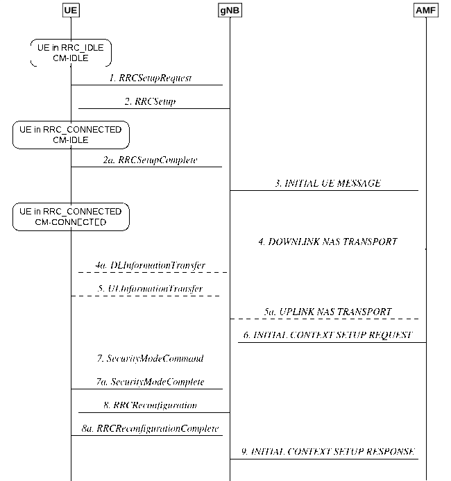
Figure 9.2.1.3-1: UE triggered
transition from RRC_IDLE to RRC_CONNECTED
1. The UE requests to setup a new connection from RRC_IDLE.
2/2a. The gNB completes the RRC setup procedure.
NOTE 0: The scenario where the gNB rejects the request is described
below.
3. The first NAS message from the UE, piggybacked in
RRCSetupComplete, is sent to AMF.
4/4a/5/5a. Additional NAS messages may be exchanged between UE and
AMF, see TS 23.502 [22].
6. The AMF prepares the UE context data (including PDU session
context, the Security Key, UE Radio Capability and UE Security
Capabilities, etc.) and sends it to the gNB.
7/7a. The gNB activates the AS security with the UE.
8/8a. The gNB performs the reconfiguration to setup SRB2 and DRBs for
UE, or SRB2 and optionally DRBs for IAB-MT.
9. The gNB informs the AMF that the setup procedure is completed.
NOTE 1: RRC messages in step 1 and 2 use SRB0, all the subsequent
messages use SRB1. Messages in steps 7/7a are integrity protected.
From step 8 on, all the messages are integrity protected and
ciphered.
NOTE 2: For signalling only connection, step 8 is skipped since SRB2
and DRBs are not setup.
The following figure
describes the rejection from the network when the UE attempts to
setup a connection from RRC_IDLE:
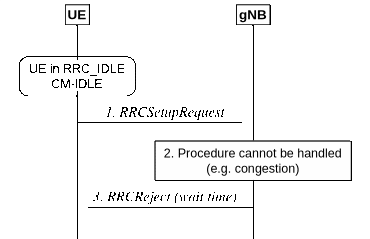
Figure 9.2.1.3-2: Rejection of UE
triggered transition from RRC_IDLE
1. UE attempts to setup a new connection from RRC_IDLE.
2. The gNB is not able to handle the procedure, for instance due to
congestion.
3. The gNB sends RRCReject (with a wait time) to keep the UE
in RRC_IDLE.
9.2.2 Mobility in RRC_INACTIVE
9.2.2.1 Overview
RRC_INACTIVE is a
state where a UE remains in CM-CONNECTED and can move within an area
configured by NG-RAN (the RNA) without notifying NG-RAN. In
RRC_INACTIVE, the last serving gNB node keeps the UE context and the
UE-associated NG connection with the serving AMF and UPF.
For a UE in
RRC_INACTIVE with eDRX cycle longer than 10.24 seconds, the NG-RAN
node may, based on implementation, send a request to the AMF to
perform MT Communication Handling as described in TS 23.501 [3]. If
the UE accesses a gNB other than the last serving gNB and upon
successful UE context retrieval, the AMF considers that the UE is
reachable (i.e., the MT Communicating Handling is deactivated) and
triggers the MT DL data/signalling delivery upon receiving the NGAP
Path Switch Request message.
If the last serving
gNB receives DL data from the UPF or DL UE-associated signalling from
the AMF (except the UE Context Release Command message) while the UE
is in RRC_INACTIVE, it pages in the cells corresponding to the RNA
and may send XnAP RAN Paging to neighbour gNB(s) if the RNA includes
cells of neighbour gNB(s).
Upon receiving the
RAN Paging Request message from the AMF while the UE is in
RRC_INACTIVE with eDRX beyond 10.24 seconds, the last serving gNB may
page in its cells comprised in the RNA and may send XnAP RAN Paging
to neighbour gNB(s) if the RNA includes cells of neighbour gNB(s), in
order to trigger the UE to resume connection in RRC_CONNECTED state,
or in RRC_INACTIVE state for DL SDT, based on the DL data size if
included in the NGAP RAN Paging Request message.
Upon receiving the
UE Context Release Command message while the UE is in RRC_INACTIVE,
the last serving gNB may page in the cells corresponding to the RNA
and may send XnAP RAN Paging to neighbour gNB(s) if the RNA includes
cells of neighbour gNB(s), in order to release UE explicitly.
Upon receiving the
NG RESET message while the UE is in RRC_INACTIVE, the last serving
gNB may page involved UEs in the cells corresponding to the RNA and
may send XnAP RAN Paging to neighbour gNB(s) if the RNA includes
cells of neighbour gNB(s) in order to explicitly release involved
UEs.
Upon RAN paging
failure, the gNB behaves according to TS 23.501 [3].
The AMF provides to
the NG-RAN node the Core Network Assistance Information to assist the
NG-RAN node's decision whether the UE can be sent to RRC_INACTIVE,
and to assist UE configuration and paging in RRC_INACTIVE. The Core
Network Assistance Information includes:
- The UE registration area, which is taken into account by the NG-RAN
node when configuring the RNA.
- The UE specific DRX and UE Identity Index value, which are used by
the NG-RAN node for RAN paging.
- The Periodic Registration Update timer, which is taken into account
by the NG-RAN node to configure Periodic RNA Update timer.
- An indication if the UE is configured with Mobile Initiated
Connection Only (MICO) mode by the AMF.
- The Expected UE Behaviour, which is taken into account by the
NG-RAN node to assist the UE RRC state transition decision.
- The UE Radio Capability for Paging, which may be used by the NG-RAN
node during RAN Paging.
- The PEI with Paging Subgrouping assistance information, which may
be taken into account by the NG-RAN node for subgroup paging in
RRC_INACTIVE, except when the UE context contains an emergency PDU
session in which case the PEI with Paging Subgrouping assistance
information shall not be used according to TS 24.501 [28].
- The LP-WUS with Paging Subgrouping assistance information, which is
taken into account by the NG-RAN node for subgroup paging in
RRC_INACTIVE.
- The LP-WUS disable indication, which is taken into account by the
NG-RAN node to disable LP-WUS to UE, including both CN based
subgrouping and UE ID based subgrouping.
- The Further Extended UE Identity Index value, if LP-WUS is not
disabled, which is taken into account by the NG-RAN node for LP-WUS
subgroup paging in RRC_INACTIVE.
- The NR Paging eDRX Information, which is taken into account by the
NG-RAN node to configure the RAN Paging when the NR UE is in
RRC_INACTIVE.
- The Paging Cause Indication for Voice Service, which is taken into
account by the NG-RAN node to include the Paging Cause in RAN Paging
for a UE in RRC_INACTIVE state.
- The Hashed UE Identity Index Value, which is used by the NG-RAN
node to determine the start point of PTW.
- The CN support indication for MT Communication Handling, which is
taken into account by the NG-RAN node when deciding to request the
AMF for MT Communication Handling for a UE in RRC_INACTIVE state with
long eDRX beyond 10.24 seconds as described in TS 23.501 [3].
When sending the
XnAP RAN Paging to neighbour NG-RAN node(s), the PEI with Paging
Subgrouping assistance information, the LP-WUS with Paging
Subgrouping assistance information, the LP-WUS disable indication,
the NR Paging eDRX Information for RRC_IDLE and for RRC_INACTIVE, the
Paging Cause, the Hashed UE Identity Index Value and the Further
Extended UE Identity Index Value may be included.
At transition to
RRC_INACTIVE the NG-RAN node may configure the UE with a periodic RNA
Update timer value. At periodic RNA Update timer expiry without
notification from the UE, the gNB behaves as specified in TS 23.501
[3].
If the UE accesses a
gNB other than the last serving gNB, the receiving gNB triggers the
XnAP Retrieve UE Context procedure to get the UE context from the
last serving gNB and may also trigger an Xn-U Address Indication
procedure including tunnel information for potential recovery of data
from the last serving gNB. Upon successful UE context retrieval, the
receiving gNB shall perform the slice-aware admission control in case
of receiving slice information and becomes the serving gNB and it
further triggers the NGAP Path Switch Request and applicable RRC
procedures. After the path switch procedure, the serving gNB triggers
release of the UE context at the last serving gNB by means of the
XnAP UE Context Release procedure.
In case the UE is
not reachable at the last serving gNB, the gNB shall fail any AMF
initiated UE-associated class 1 procedure which allows the signalling
of unsuccessful operation in the respective response message. It may
trigger the NAS Non Delivery Indication procedure to report the
non-delivery of any non PDU Session related NAS PDU received from the
AMF as specified in TS 38.413 [26].
If the UE accesses a
gNB other than the last serving gNB and the receiving gNB does not
find a valid UE Context, the receiving gNB can perform establishment
of a new RRC connection instead of resumption of the previous RRC
connection. UE context retrieval will also fail and hence a new RRC
connection needs to be established if the serving AMF changes.
A UE in the
RRC_INACTIVE state is required to initiate RNA update procedure when
it moves out of the configured RNA. When receiving RNA update request
from the UE, the receiving gNB triggers the XnAP Retrieve UE Context
procedure to get the UE context from the last serving gNB and may
decide to send the UE back to RRC_INACTIVE state, move the UE into
RRC_CONNECTED state, or send the UE to RRC_IDLE. In case of periodic
RNA update, if the last serving gNB decides not to relocate the UE
context, it fails the Retrieve UE Context procedure and sends the UE
back to RRC_INACTIVE, or to RRC_IDLE directly by an encapsulated
RRCRelease message.
9.2.2.2 Cell Reselection
A UE in RRC_INACTIVE
performs cell reselection. The principles of the procedure are as for
the RRC_IDLE state (see clause 9.2.1.2).
9.2.2.3 RAN-Based Notification Area
A UE in the
RRC_INACTIVE state can be configured by the last serving NG-RAN node
with an RNA, where:
- the RNA can cover a single or multiple cells, and shall be
contained within the CN registration area; in this release Xn
connectivity should be available within the RNA;
- a RAN-based notification area update (RNAU) is periodically sent by
the UE and is also sent when the cell reselection procedure of the UE
selects a cell that does not belong to the configured RNA.
There are several
different alternatives on how the RNA can be configured:
- List of cells:
- A UE is provided an explicit list of cells (one or more) that
constitute the RNA.
- List of RAN areas:
- A UE is provided (at least one) RAN area ID, where a RAN area is a
subset of a CN Tracking Area or equal to a CN Tracking Area. A RAN
area is specified by one RAN area ID, which consists of a TAC and
optionally a RAN area Code;
- A cell broadcasts one or, in case of network sharing with multiple
cell ID broadcast, more RAN area IDs in the system information.
NG-RAN may provide
different RNA definitions to different UEs but not mix different
definitions to the same UE at the same time. UE shall support all RNA
configuration options listed above.
9.2.2.4 State Transitions
9.2.2.4.1 UE triggered transition from RRC_INACTIVE to RRC_CONNECTED
The following figure
describes the UE triggered transition from RRC_INACTIVE to
RRC_CONNECTED in case of UE context retrieval success:
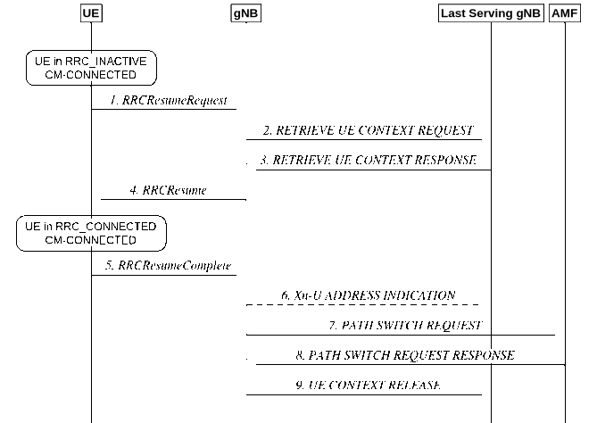
Figure 9.2.2.4.1-1: UE triggered
transition from RRC_INACTIVE to RRC_CONNECTED
(UE context
retrieval success)
1. The UE resumes from RRC_INACTIVE, providing the I-RNTI, allocated
by the last serving gNB.
2. The gNB, if able to resolve the gNB identity contained in the
I-RNTI, requests the last serving gNB to provide UE Context data.
3. The last serving gNB provides UE context data.
4/5. The gNB and UE completes the resumption of the RRC connection.
NOTE 1: User Data can also be sent in step 5 if the grant allows.
6. If loss of DL user data buffered in the last serving gNB shall be
prevented, the gNB provides forwarding addresses.
7/8. The gNB performs path switch.
9. The gNB triggers the release of the UE resources at the last
serving gNB.
After step 1 above,
when the gNB decides to use a single RRC message to reject the Resume
Request right away and keep the UE in RRC_INACTIVE without any
reconfiguration (e.g. as described in the two examples below), or
when the gNB decides to setup a new RRC connection, SRB0 (without
security) is used. Conversely, when the gNB decides to reconfigure
the UE (e.g. with a new DRX cycle or RNA) or when the gNB decides to
push the UE to RRC_IDLE, SRB1 (with integrity protection and
ciphering as previously configured for that SRB) shall be used.
NOTE 2: SRB1 can only be used once the UE Context is retrieved i.e.
after step 3.
The following figure
describes the UE triggered transition from RRC_INACTIVE to
RRC_CONNECTED in case of UE context retrieval failure:
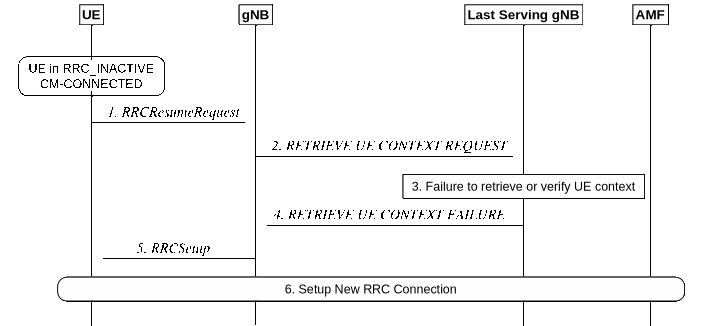
Figure 9.2.2.4.1-2: UE triggered
transition from RRC_INACTIVE to RRC_CONNECTED
(UE context
retrieval failure)
1. The UE resumes from RRC_INACTIVE, providing the I-RNTI, allocated
by the last serving gNB.
2. The gNB, if able to resolve the gNB identity contained in the
I-RNTI, requests the last serving gNB to provide UE Context data.
3. The last serving gNB cannot retrieve or verify the UE context
data.
4. The last serving gNB indicates the failure to the gNB.
5. The gNB performs a fallback to establish a new RRC connection by
sending RRCSetup.
6. A new connection is setup as described in clause 9.2.1.3.
The following figure
describes the rejection form the network when the UE attempts to
resume a connection from RRC_INACTIVE:
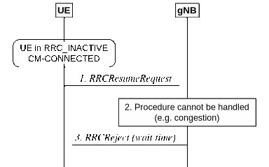
Figure 9.2.2.4.1-3: Reject from the
network, UE attempts to resume a connection
1. UE attempts to resume the connection from RRC_INACTIVE.
2. The gNB is not able to handle the procedure, for instance due to
congestion.
3. The gNB sends RRCReject (with a wait time) to keep the UE
in RRC_INACTIVE.
9.2.2.4.2 Network triggered transition from RRC_INACTIVE to
RRC_CONNECTED
The following figure
describes the network triggered transition from RRC_INACTIVE to
RRC_CONNECTED:
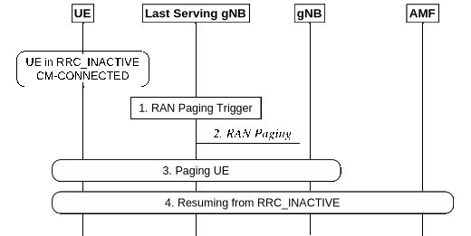
Figure 9.2.2.4.2-1: Network
triggered transition from RRC_INACTIVE to RRC_CONNECTED
1. A RAN paging trigger event occurs (incoming DL user plane, DL
signalling from 5GC, etc.).
2. RAN paging is triggered; either only in the cells controlled by
the last serving gNB or also by means of Xn RAN Paging in cells
controlled by other gNBs, configured to the UE in the RAN-based
Notification Area (RNA).
3. The UE is paged with the I-RNTI.
4. If the UE has been successfully reached, it attempts to resume
from RRC_INACTIVE, as described in clause 9.2.2.4.1.
9.2.2.5 RNA update
The following figure
describes the UE triggered RNA update procedure involving context
retrieval over Xn. The procedure may be triggered when the UE moves
out of the configured RNA, or periodically.
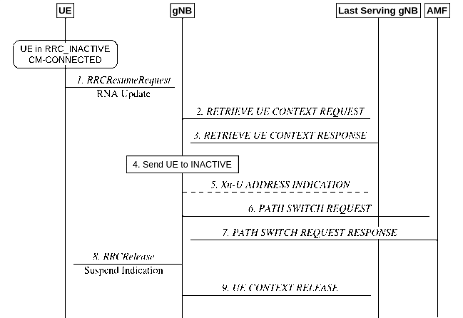
Figure 9.2.2.5-1: RNA update
procedure with UE context relocation
1. The UE resumes from RRC_INACTIVE, providing the I-RNTI allocated
by the last serving gNB and appropriate cause value, e.g., RAN
notification area update.
2. The gNB, if able to resolve the gNB identity contained in the
I-RNTI, requests the last serving gNB to provide UE Context,
providing the cause value received in step 1.
3. The last serving gNB may provide the UE context (as assumed in the
following). Alternatively, the last serving gNB may decide to move
the UE to RRC_IDLE (and the procedure follows steps 3 and later of
figure 9.2.2.5-3) or, if the UE is still within the previously
configured RNA, to keep the UE context in the last serving gNB and to
keep the UE in RRC_INACTIVE (and the procedure follows steps 3 and
later of figure 9.2.2.5-2).
4. The gNB may move the UE to RRC_CONNECTED (and the procedure
follows step 4 of Figure 9.2.2.4.1-1), or send the UE back to
RRC_IDLE (in which case an RRCRelease message is sent by the
gNB), or send the UE back to RRC_INACTIVE as assumed in the
following.
5. If loss of DL user data buffered in the last serving gNB shall be
prevented, the gNB provides forwarding addresses.
6./7. The gNB performs path switch.
8. The gNB keeps the UE in RRC_INACTIVE state by sending RRCRelease
with suspend indication.
9. The gNB triggers the release of the UE resources at the last
serving gNB.
The following figure
describes the RNA update procedure for the case when the UE is still
within the configured RNA and the last serving gNB decides not to
relocate the UE context and to keep the UE in RRC_INACTIVE:
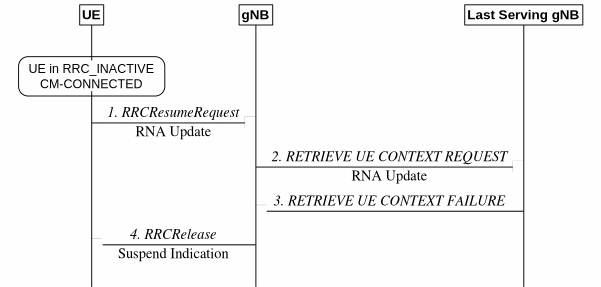
Figure 9.2.2.5-2: Periodic RNA
update procedure without UE context relocation
1. The UE resumes from RRC_INACTIVE, providing the I-RNTI allocated
by the last serving gNB and appropriate cause value, e.g., RAN
notification area update.
2. The gNB, if able to resolve the gNB identity contained in the
I-RNTI, requests the last serving gNB to provide UE Context,
providing the cause value received in step 1.
3. The last serving gNB stores received information to be used in the
next resume attempt (e.g. C-RNTI and PCI related to the resumption
cell), and responds to the gNB with the RETRIEVE UE CONTEXT FAILURE
message including an encapsulated RRCRelease message. The
RRCRelease message includes Suspend Indication.
4. The gNB forwards the RRCRelease message to the UE.
The following figure
describes the RNA update procedure for the case when the last serving
gNB decides to move the UE to RRC_IDLE:
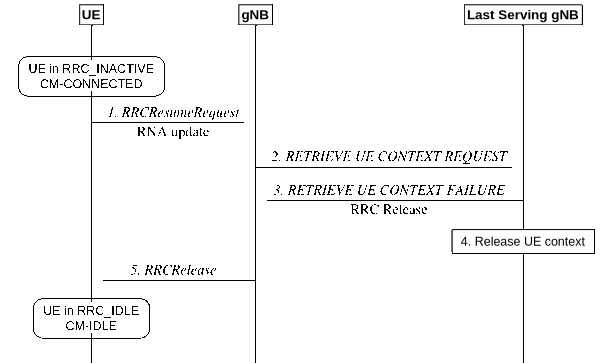
Figure 9.2.2.5-3: RNA update
procedure with transition to RRC_IDLE
1. The UE resumes from RRC_INACTIVE, providing the I-RNTI allocated
by the last serving gNB and appropriate cause value, e.g., RAN
notification area update.
2. The gNB, if able to resolve the gNB identity contained in the
I-RNTI, requests the last serving gNB to provide UE Context,
providing the cause value received in step 1.
3. Instead of providing the UE context, the last serving gNB provides
an RRCRelease message to move the UE to RRC_IDLE.
4. The last serving gNB deletes the UE context.
5. The gNB sends the RRCRelease which triggers the UE to move
to RRC_IDLE.
9.2.2.6 Resume
request responded with Release with Redirect, with UE context
relocation
The following figure
describes a UE triggered NAS procedure responded by the network with
a release with redirect, with UE context relocation.
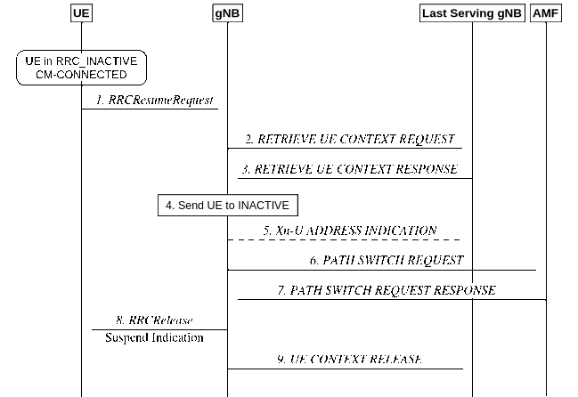
Figure 9.2.2.6-1: Resume request
responded with Release with Redirect, with UE Context relocation
1. The UE resumes from RRC_INACTIVE, providing the I-RNTI allocated
by the last serving gNB.
2. The gNB, if able to resolve the gNB identity contained in the
I-RNTI, requests the last serving gNB to provide UE Context data.
3. The last serving gNB provides the UE context.
4. The gNB may move the UE to RRC_CONNECTED (and the procedure
follows step 4 of Figure 9.2.2.4.1-1), or send the UE back to
RRC_IDLE (in which case an RRCRelease message is sent by the
gNB), or send the UE back to RRC_INACTIVE, including a release with
redirect indication (as assumed in the following).
5. If loss of DL user data buffered in the last serving gNB shall be
prevented, the gNB provides forwarding addresses.
6./7. The gNB performs path switch.
8. The gNB keeps the UE in RRC_INACTIVE state by sending RRCRelease
with suspend indication, including redirection information (frequency
layer the UE performs cell selection upon entering RRC_INACTIVE).
9. The gNB triggers the release of the UE resources at the last
serving gNB.
NOTE 1: Upon receiving the release with redirect, the higher layers
trigger a pending procedure so the UE tries to resume again after
cell selection.
9.2.3 Mobility in RRC_CONNECTED
9.2.3.1 Overview
Network controlled
mobility applies to UEs in RRC_CONNECTED and is categorized into two
types of mobility: cell level mobility and beam level mobility. Beam
level mobility includes intra-cell beam level mobility and inter-cell
beam level mobility.
Cell Level
Mobility requires explicit RRC signalling to be triggered, i.e.
handover. For inter-gNB handover, the signalling procedures consist
of at least the following elemental components illustrated in Figure
9.2.3.1-1:
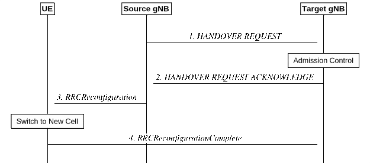
Figure 9.2.3.1-1: Inter-gNB
handover procedures
1. The source gNB initiates handover and issues a HANDOVER REQUEST
over the Xn interface.
2. The target gNB performs admission control and provides the new RRC
configuration as part of the HANDOVER REQUEST ACKNOWLEDGE.
3. The source gNB provides the RRC configuration to the UE by
forwarding the RRCReconfiguration message received in the
HANDOVER REQUEST ACKNOWLEDGE. The RRCReconfiguration message
includes at least cell ID and all information required to access the
target cell so that the UE can access the target cell without reading
system information. For some cases, the information required for
contention-based and contention-free random access can be included in
the RRCReconfiguration message. The access information to the
target cell may include beam specific information, if any.
4. The UE moves the RRC connection to the target gNB and replies with
the RRCReconfigurationComplete.
NOTE 1: User Data can also be sent in step 4 if the grant allows.
In case of DAPS
handover, the UE continues the downlink user data reception from the
source gNB until releasing the source cell and continues the uplink
user data transmission to the source gNB until successful random
access procedure to the target gNB.
Only source and
target PCell are used during DAPS handover. CA, DC, SUL, multi-TRP,
EHC, CHO, UDC, LTM, NR sidelink configurations and V2X sidelink
configurations are released by the source gNB before the handover
command is sent to the UE and are not configured by the target gNB
until the DAPS handover has completed (i.e. at earliest in the same
message that releases the source PCell).
The handover
mechanism triggered by RRC requires the UE at least to reset the MAC
entity and re-establish RLC, except for DAPS handover, where upon
reception of the handover command, the UE:
- Creates a MAC entity for target;
- Establishes the RLC entity and an associated DTCH logical channel
for target for each DRB configured with DAPS;
- For each DRB configured with DAPS, reconfigures the PDCP entity
with separate security and ROHC functions for source and target and
associates them with the RLC entities configured by source and target
respectively;
- Retains the rest of the source configurations until release of the
source.
The cell switch
mechanism triggered by MAC, (i.e., LTM cell switch) requires the UE
at least to reset the MAC entity. RLC and PDCP handling depends on
the network configuration.
NOTE 2: Void.
NOTE 3: Void.
RRC managed
handovers with and without PDCP entity re-establishment are both
supported. For DRBs using RLC AM mode, PDCP can either be
re-established together with a security key change or initiate a data
recovery procedure without a key change. For DRBs using RLC UM mode,
PDCP can either be re-established together with a security key change
or remain as it is without a key change. For SRBs, PDCP can either
remain as it is, discard its stored PDCP PDUs/SDUs without a key
change or be re-established together with a security key change.
Data forwarding,
in-sequence delivery and duplication avoidance at handover can be
guaranteed when the target gNB uses the same DRB configuration as the
source gNB.
Timer based handover
failure procedure is supported in NR. RRC connection re-establishment
procedure is used for recovering from handover failure except in
certain CHO, DAPS handover or LTM cell switch scenarios:
- When DAPS handover fails, the UE falls back to the source cell
configuration, resumes the connection with the source cell, and
reports DAPS handover failure via the source without triggering RRC
connection re-establishment if the source link has not been released.
- When initial CHO execution attempt fails or HO fails, the UE
performs cell selection, and if the selected cell is a CHO candidate
and if network configured the UE to try CHO after handover/CHO
failure, then the UE attempts CHO execution once, otherwise
re-establishment is performed.
- When LTM execution attempt triggered by LTM cell switch command MAC
CE fails or when the CLTM execution attempt by the UE fails, the UE
performs cell selection and if the selected cell is an LTM candidate
cell and if network configured the UE to try LTM after LTM execution
failure, then the UE attempts RACH-based LTM execution once,
otherwise re-establishment is performed.
NOTE 4: PDCP SN gap for SRB may exist upon LTM/CLTM attempt toward
the selected cell after LTM/CLTM fails. It is up to network
implementation to avoid the latency caused by the PDCP SN gap.
DAPS handover for
FR2 to FR2 case is not supported in this release of the
specification.
The handover of the
IAB-MT in SA mode follows the same procedure as described for the UE.
After the backhaul has been established, the handover of the IAB-MT
is part of the intra-CU or inter-CU topology adaptation procedures
defined in TS 38.401 [4]. Modifications to the configuration of BAP
sublayer and higher protocol layers above the BAP sublayer are
described in TS 38.401 [4].
The handover of the
mobile IAB-MT follows the same procedure as described for the UE.
After the backhaul has been established, the handover of the mobile
IAB-MT is part of the mobile IAB-MT migration procedure defined in TS
38.401 [4].
Beam Level
Mobility does not require explicit RRC signalling to be
triggered. Beam level mobility can be within a cell, or between
cells, the latter is referred to as inter-cell
beam management (ICBM). For ICBM, a UE can receive or transmit UE
dedicated channels/signals via a TRP associated with a PCI different
from the PCI of a serving cell, while non-UE-dedicated
channels/signals can only be received via a TRP associated with a PCI
of the serving cell. The gNB provides via RRC signalling the
UE with measurement configuration containing configurations of
SSB/CSI resources and resource sets, reports and trigger states for
triggering channel and interference measurements and reports. In case
of ICBM, a measurement configuration includes SSB resources
associated with PCIs different from the PCI of a serving cell. Beam
Level Mobility is then dealt with at lower layers by means of
physical layer and MAC layer control signalling, and RRC is not
required to know which beam is being used at a given point in time.
SSB-based
Beam Level Mobility is based on the CD-SSB associated to the initial
DL BWP and can be configured for the initial DL BWPs, for DL BWPs
containing the CD-SSB associated to the initial DL BWP, and if
supported, for DL BWPs not containing the CD-SSB associated to the
initial DL BWP. SSB-based Beam Level Mobility can be also performed
based on an NCD-SSB, if configured for the active DL BWP. Beam Level
Mobility can be also performed based on CSI-RS, if configured for the
active DL BWP.
For UE-initiated
beam reporting, Mode A and Mode B are supported, where upon detection
of an event, UE transmits a UE Initiated Report Indicator (UEIRI)
indication in a PUCCH resource to indicate transmission of a beam
report. Corresponding to the UEIRI indication, in Mode A, the UE
transmits the beam report on a PUSCH indicated by a DCI, while in
Mode B, the UE transmits the beam report on a type1 CG PUSCH
associated to the PUCCH resource.
9.2.3.2 Handover
9.2.3.2.1 C-Plane Handling
The intra-NR RAN
handover performs the preparation and execution phase of the handover
procedure performed without involvement of the 5GC, i.e. preparation
messages are directly exchanged between the gNBs. The release of the
resources at the source gNB during the handover completion phase is
triggered by the target gNB. The figure below depicts the basic
handover scenario where neither the AMF nor the UPF changes:
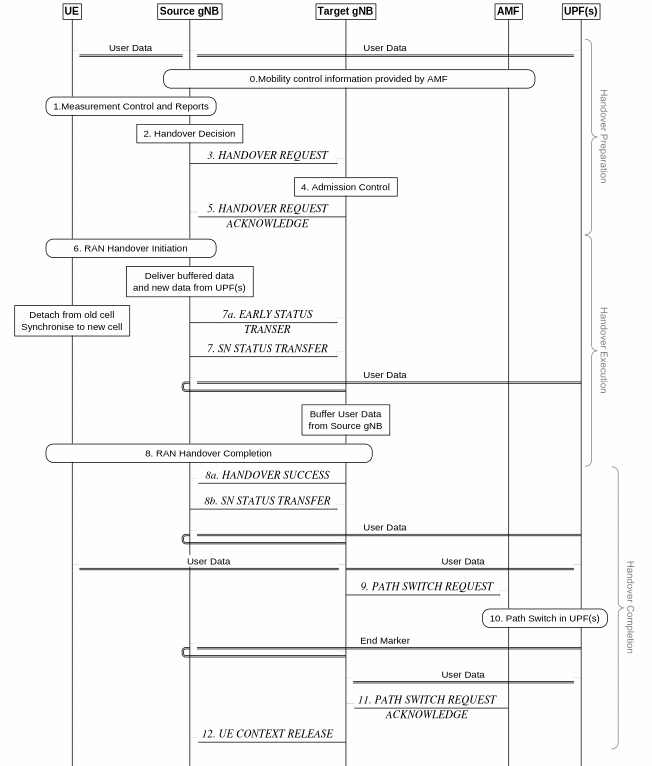
Figure 9.2.3.2.1-1: Intra-AMF/UPF
Handover
0. The UE context within the source gNB contains information
regarding roaming and access restrictions which were provided either
at connection establishment or at the last TA update.
1. The source gNB configures the UE measurement procedures and the UE
reports according to the measurement configuration.
2. The source gNB decides to handover the UE, based on
MeasurementReport and RRM information.
3. The source gNB issues a Handover Request message to the target gNB
passing a transparent RRC container with necessary information to
prepare the handover at the target side. The information includes at
least the target cell ID, KgNB*, the C-RNTI of the UE in the source
gNB, RRM-configuration including UE inactive time, basic
AS-configuration including antenna Info and DL Carrier Frequency,
the current QoS flow to DRB mapping rules applied to the UE, the SIB1
information from source gNB, the UE capabilities for different RATs,
PDU session related information, and can include the UE reported
measurement information including beam-related information if
available. The PDU session related information includes the slice
information and QoS flow level QoS profile(s). The source gNB may
also request a DAPS handover for one or more DRBs.
NOTE 1: After issuing a Handover Request, the source gNB should not
reconfigure the UE, including performing Reflective QoS flow to DRB
mapping.
4. Admission Control may be performed by the target gNB. Slice-aware
admission control shall be performed if the slice information is sent
to the target gNB. If the PDU sessions are associated with
non-supported slices the target gNB shall reject such PDU Sessions.
5. The target gNB prepares the handover with L1/L2 and sends the
HANDOVER REQUEST ACKNOWLEDGE to the source gNB, which includes a
transparent container to be sent to the UE as an RRC message to
perform the handover. The target gNB also indicates if a DAPS
handover is accepted.
NOTE 2: As soon as the source gNB receives the HANDOVER REQUEST
ACKNOWLEDGE, or as soon as the transmission of the handover command
is initiated in the downlink, data forwarding may be initiated.
NOTE 3: For DRBs configured with DAPS, downlink PDCP SDUs are
forwarded with SN assigned by the source gNB, until SN assignment is
handed over to the target gNB in step 8b, for which the normal data
forwarding follows as defined in 9.2.3.2.3.
6. The source gNB triggers the Uu handover by sending an
RRCReconfiguration message to the UE, containing the
information required to access the target cell: at least the target
cell ID, the new C-RNTI, the target gNB security algorithm
identifiers for the selected security algorithms. It can also include
a set of dedicated RACH resources, the association between RACH
resources and SSB(s), the association between RACH resources and
UE-specific CSI-RS configuration(s), common RACH resources, and
system information of the target cell, etc.
NOTE 4: For DRBs configured with DAPS, the source gNB does not stop
transmitting downlink packets until it receives the HANDOVER SUCCESS
message from the target gNB in step 8a.
NOTE 4a: CHO cannot be configured simultaneously with DAPS handover.
7a. For DRBs configured with DAPS, the source gNB sends the EARLY
STATUS TRANSFER message. The DL COUNT value conveyed in the EARLY
STATUS TRANSFER message indicates PDCP SN and HFN of the first PDCP
SDU that the source gNB forwards to the target gNB. The source gNB
does not stop assigning SNs to downlink PDCP SDUs until it sends the
SN STATUS TRANSFER message to the target gNB in step 8b.
7. For DRBs not configured with DAPS, the source gNB sends the SN
STATUS TRANSFER message to the target gNB to convey the uplink PDCP
SN receiver status and the downlink PDCP SN transmitter status of
DRBs for which PDCP status preservation applies (i.e. for RLC AM).
The uplink PDCP SN receiver status includes at least the PDCP SN of
the first missing UL PDCP SDU and may include a bit map of the
receive status of the out of sequence UL PDCP SDUs that the UE needs
to retransmit in the target cell, if any. The downlink PDCP SN
transmitter status indicates the next PDCP SN that the target gNB
shall assign to new PDCP SDUs, not having a PDCP SN yet.
NOTE 5: In case of DAPS handover, the uplink PDCP SN receiver status
and the downlink PDCP SN transmitter status for a DRB with RLC-AM and
not configured with DAPS may be transferred by the SN STATUS TRANSFER
message in step 8b instead of step 7.
NOTE 6: For DRBs configured with DAPS, the source gNB may
additionally send the EARLY STATUS TRANSFER message(s) between step 7
and step 8b, to inform discarding of already forwarded PDCP SDUs. The
target gNB does not transmit forwarded downlink PDCP SDUs to the UE,
whose COUNT is less than the conveyed DL COUNT value and discards
them if transmission has not been attempted already.
8. The UE synchronises to the target cell and completes the RRC
handover procedure by sending RRCReconfigurationComplete
message to target gNB. In case of DAPS handover, the UE does not
detach from the source cell upon receiving the RRCReconfiguration
message. The UE releases the source resources and configurations and
stops DL/UL reception/transmission with the source upon receiving an
explicit release from the target node.
NOTE 6a: From RAN point of view, the DAPS handover is considered to
only be completed after the UE has released the source cell as
explicitly requested from the target node. RRC suspend, a subsequent
handover or inter-RAT handover cannot be initiated until the source
cell has been released.
8a/b In case of DAPS handover, the target gNB sends the HANDOVER
SUCCESS message to the source gNB to inform that the UE has
successfully accessed the target cell. In return, the source gNB
sends the SN STATUS TRANSFER message for DRBs configured with DAPS
for which the description in step 7 applies, and the normal data
forwarding follows as defined in 9.2.3.2.3.
NOTE 7: The uplink PDCP SN receiver status and the downlink PDCP SN
transmitter status are also conveyed for DRBs with RLC-UM in the SN
STATUS TRANSFER message in step 8b, if configured with DAPS.
NOTE 8: For DRBs configured with DAPS, the source gNB does not stop
delivering uplink QoS flows to the UPF until it sends the SN STATUS
TRANSFER message in step 8b. The target gNB does not forward QoS
flows of the uplink PDCP SDUs successfully received in-sequence to
the UPF until it receives the SN STATUS TRANSFER message, in which UL
HFN and the first missing SN in the uplink PDCP SN receiver status
indicates the start of uplink PDCP SDUs to be delivered to the UPF.
The target gNB does not deliver any uplink PDCP SDUs which has an UL
COUNT lower than the provided.
NOTE 9: Void.
9. The target gNB sends a PATH SWITCH REQUEST message to AMF to
trigger 5GC to switch the DL data path towards the target gNB and to
establish an NG-C interface instance towards the target gNB.
10. 5GC switches the DL data path towards the target gNB. The UPF
sends one or more "end marker" packets on the old path to
the source gNB per PDU session/tunnel and then can release any
U-plane/TNL resources towards the source gNB.
11. The AMF confirms the PATH SWITCH REQUEST message with the PATH
SWITCH REQUEST ACKNOWLEDGE message.
12. Upon reception of the PATH SWITCH REQUEST ACKNOWLEDGE message
from the AMF, the target gNB sends the UE CONTEXT RELEASE to inform
the source gNB about the success of the handover. The source gNB can
then release radio and C-plane related resources associated to the UE
context. Any ongoing data forwarding may continue.
The RRM
configuration can include both beam measurement information (for
layer 3 mobility) associated to SSB(s) and CSI-RS(s) for the reported
cell(s) if both types of measurements are available. Also, if CA is
configured, the RRM configuration can include the list of best cells
on each frequency for which measurement information is available. And
the RRM measurement information can also include the beam measurement
for the listed cells that belong to the target gNB.
The common RACH
configuration for beams in the target cell is only associated to the
SSB(s). The network can have dedicated RACH configurations associated
to the SSB(s) and/or have dedicated RACH configurations associated to
CSI-RS(s) within a cell. The target gNB can only include one of the
following RACH configurations in the Handover Command to enable the
UE to access the target cell:
i) Common RACH configuration;
ii) Common RACH configuration + Dedicated RACH configuration
associated with SSB;
iii) Common RACH configuration + Dedicated RACH configuration
associated with CSI-RS.
The dedicated RACH
configuration allocates RACH resource(s) together with a quality
threshold to use them. When dedicated RACH resources are provided,
they are prioritized by the UE and the UE shall not switch to
contention-based RACH resources as long as the quality threshold of
those dedicated resources is met. The order to access the dedicated
RACH resources is up to UE implementation.
Upon receiving a
handover command requesting DAPS handover, the UE suspends source
cell SRBs, stops sending and receiving any RRC control plane
signalling toward the source cell, and establishes SRBs for the
target cell. The UE releases the source cell SRBs configuration upon
receiving source cell release indication from the target cell after
successful DAPS handover execution. When DAPS handover to the target
cell fails and if the source cell link is available, then the UE
reverts back to the source cell configuration and resumes source cell
SRBs for control plane signalling transmission.
9.2.3.2.2 U-Plane Handling
The U-plane handling
during the Intra-NR-Access mobility activity for UEs in RRC_CONNECTED
takes the following principles into account to avoid data loss during
HO:
- During HO preparation, U-plane tunnels can be established between
the source gNB and the target gNB;
- During HO execution, user data can be forwarded from the source gNB
to the target gNB;
- Forwarding should take place in order as long as packets are
received at the source gNB from the UPF or the source gNB buffer has
not been emptied.
- During HO completion:
- The target gNB sends a path switch request message to the AMF to
inform that the UE has gained access and the AMF then triggers path
switch related 5GC internal signalling and actual path switch of the
source gNB to the target gNB in UPF;
- The source gNB should continue forwarding data as long as packets
are received at the source gNB from the UPF or the source gNB buffer
has not been emptied.
For RLC-AM
bearers:
- For in-sequence delivery and duplication avoidance, PDCP SN is
maintained on a per DRB basis and the source gNB informs the target
gNB about the next DL PDCP SN to allocate to a packet which does not
have a PDCP sequence number yet (either from source gNB or from the
UPF).
- For security synchronisation, HFN is also maintained and the source
gNB provides to the target one reference HFN for the UL and one for
the DL i.e. HFN and corresponding SN.
- In both the UE and the target gNB, a window-based mechanism is used
for duplication detection and reordering.
- The occurrence of duplicates over the air interface in the target
gNB is minimised by means of PDCP SN based reporting at the target
gNB by the UE. In uplink, the reporting is optionally configured on a
per DRB basis by the gNB and the UE should first start by
transmitting those reports when granted resources are in the target
gNB. In downlink, the gNB is free to decide when and for which
bearers a report is sent and the UE does not wait for the report to
resume uplink transmission.
- The target gNB re-transmits and prioritizes all downlink data
forwarded by the source gNB (i.e. the target gNB should first send
all forwarded PDCP SDUs with PDCP SNs, then all forwarded downlink
PDCP SDUs without SNs before sending new data from 5GC), excluding
PDCP SDUs for which the reception was acknowledged through PDCP SN
based reporting by the UE.
NOTE 1: Lossless delivery when a QoS flow is mapped to a different
DRB at handover, requires the old DRB to be configured in the target
cell. For in-order delivery in the DL, the target gNB should first
transmit the forwarded PDCP SDUs on the old DRB before transmitting
new data from 5GC on the new DRB. In the UL, the target gNB should
not deliver data of the QoS flow from the new DRB to 5GC before
receiving the end marker on the old DRB from the UE.
- The UE re-transmits in the target gNB all uplink PDCP SDUs starting
from the oldest PDCP SDU that has not been acknowledged at RLC in the
source, excluding PDCP SDUs for which the reception was acknowledged
through PDCP SN based reporting by the target.
- In case of handovers involving Full Configuration, the following
description below for RLC-UM bearers applies for RLC-AM bearers
instead. Data loss may happen.
For RLC-UM
bearers:
- The PDCP SN and HFN are reset in the target gNB, unless the bearer
is configured with DAPS handover;
- No PDCP SDUs are retransmitted in the target gNB;
- The target gNB prioritises all downlink SDAP SDUs forwarded by the
source gNB over the data from the core network;
NOTE 2: To minimise losses when a QoS flow is mapped to a different
DRB at handover, the old DRB needs to be configured in the target
cell. For in-order delivery in the DL, the target gNB should first
transmit the forwarded PDCP SDUs on the old DRB before transmitting
new data from 5GC on the new DRB. In the UL, the target gNB should
not deliver data of the QoS flow from the new DRB to 5GC before
receiving the end marker on the old DRB from the UE.
- The UE does not retransmit any PDCP SDU in the target cell for
which transmission had been completed in the source cell.
For DAPS handover:
A DAPS handover can
be used for an RLC-AM or RLC-UM bearer. For a DRB configured with
DAPS, the following principles are additionally applied.
Downlink:
- During HO preparation, a forwarding tunnel is always established.
- The source gNB is responsible for allocating downlink PDCP SNs
until the SN assignment is handed over to the target gNB and data
forwarding in 9.2.3.2.3 takes place. That is, the source gNB does not
stop assigning PDCP SNs to downlink packets until it receives the
HANDOVER SUCCESS message and sends the SN STATUS TRANSFER message to
the target gNB.
- Upon allocation of downlink PDCP SNs by the source gNB, it starts
scheduling downlink data on the source radio link and also starts
forwarding downlink PDCP SDUs along with assigned PDCP SNs to the
target gNB.
- For security synchronisation, HFN is maintained for the forwarded
downlink SDUs with PDCP SNs assigned by the source gNB. The source
gNB sends the EARLY STATUS TRANSFER message to convey the DL COUNT
value, indicating PDCP SN and HFN of the first PDCP SDU that the
source gNB forwards to the target gNB.
- HFN and PDCP SN are maintained after the SN assignment is handed
over to the target gNB. The SN STATUS TRANSFER message indicates the
next DL PDCP SN to allocate to a packet which does not have a PDCP
sequence number yet, even for RLC-UM.
- During handover execution period, the source and target gNBs
separately perform ROHC header compression, ciphering, and adding
PDCP header.
- During handover execution period, the UE continues to receive
downlink data from both source and target gNBs until the source gNB
connection is released by an explicit release command from the target
gNB.
- During handover execution period, the UE PDCP entity configured
with DAPS maintains separate security and ROHC header decompression
functions associated with each gNB, while maintaining common
functions for reordering, duplicate detection and discard, and PDCP
SDUs in-sequence delivery to upper layers. PDCP SN continuity is
supported for both RLC AM and UM DRBs configured with DAPS.
Uplink:
- The UE transmits UL data to the source gNB until the random access
procedure toward the target gNB has been successfully completed.
Afterwards the UE switches its UL data transmission to the target
gNB.
- Even after switching its UL data transmissions towards the target
gNB, the UE continues to send UL layer 1 CSI feedback, HARQ feedback,
layer 2 RLC feedback, ROHC feedback, HARQ data (re-)transmissions,
and RLC data (re-)transmissions to the source gNB.
- During handover execution period, the UE maintains separate
security context and ROHC header compressor context for uplink
transmissions towards the source and target gNBs. The UE maintains
common UL PDCP SN allocation. PDCP SN continuity is supported for
both RLC AM and UM DRBs configured with DAPS.
- During handover execution period, the source and target gNBs
maintain their own security and ROHC header decompressor contexts to
process UL data received from the UE.
- The establishment of a forwarding tunnel is optional.
- HFN and PDCP SN are maintained in the target gNB. The SN STATUS
TRANSFER message indicates the COUNT of the first missing PDCP SDU
that the target should start delivering to the 5GC, even for RLC-UM.
9.2.3.2.3 Data Forwarding
The following
description depicts the data forwarding principles for intra-system
handover.
The source NG-RAN
node may suggest downlink data forwarding per QoS flow established
for a PDU session and may provide information how it maps QoS flows
to DRBs. The target NG-RAN node decides data forwarding per QoS flow
established for a PDU Session.
If "lossless
handover" is required and the QoS flows to DRB mapping applied
at the target NG-RAN node allows applying for data forwarding the
same QoS flows to DRB mapping as applied at the source NG-RAN node
for a DRB and if all QoS flows mapped to that DRB are accepted for
data forwarding, the target NG-RAN node establishes a downlink
forwarding tunnel for that DRB.
For a DRB for which
preservation of SN status applies, the target NG-RAN node may decide
to establish an UL data forwarding tunnel.
The target NG-RAN
node may also decide to establish a downlink forwarding tunnel for
each PDU session. In this case the target NG-RAN node provides
information for which QoS flows data forwarding has been accepted and
corresponding UP TNL information for data forwarding tunnels to be
established between the source NG-RAN node and the target NG-RAN
node.
If QoS flows have
been re-mapped at the source NG-RAN node and user packets along the
old source mapping are still being processed at handover preparation,
and if the source NG-RAN node has not yet received the SDAP end
marker for certain QoS flows when providing the SN status to the
target NG-RAN node, the source NG-RAN node provides the old side QoS
mapping information for UL QoS flows to the target NG-RAN node for
which no SDAP end marker was yet received. The target NG-RAN will
receive for those QoS flows the end marker when the UE finalises to
send UL user data according to the old source side mapping.
The source NG-RAN
node may also propose to establish uplink forwarding tunnels for some
PDU sessions in order to transfer SDAP SDUs corresponding to QoS
flows for which flow re-mapping happened before the handover and the
SDAP end marker has not yet been received, and for which user data
was received at the source NG-RAN node via the DRB to which the QoS
flow was remapped. If accepted the target NG-RAN node shall provide
the corresponding UP TNL information for data forwarding tunnels to
be established between the source NG-RAN node and the target NG-RAN
node.
As long as data
forwarding of DL user data packets takes place, the source NG-RAN
node shall forward user data in the same forwarding tunnel, i.e.
- for any QoS flow accepted for data forwarding by the target NG-RAN
node and for which a DRB DL forwarding tunnel was established for a
DRB to which this QoS flow was mapped at the source NG-RAN node, any
fresh packets of this QoS flow shall be forwarded as PDCP SDUs via
the mapped DRB DL forwarding tunnel.
- for DRBs for which preservation of SN status applies, the source
NG-RAN node may forward in order to the target NG-RAN node via the
DRB DL forwarding tunnel all downlink PDCP SDUs with their SN
corresponding to PDCP PDUs which have not been acknowledged by the
UE.
NOTE: The SN of forwarded PDCP SDUs is carried in the "PDCP PDU
number" field of the GTP-U extension header.
- for any QoS flow accepted for data forwarding by the target NG-RAN
node for which a DL PDU session forwarding tunnel was established,
the source NG-RAN node forwards SDAP SDUs as received on NG-U from
the UPF.
If the data
forwarding is performed and the source NG-RAN node receives SDAP SDUs
with PDU Set Information Container in the GTP-U extension header on
NG-U from the UPF and the target NG-RAN node supports PDU Set based
handling, the source NG-RAN node forwards either the PDCP SDUs for
DRB-level data forwarding or the SDAP SDUs for PDU-session-level data
forwarding with the corresponding PDU Set Information Container in
the GTP-U extension header to the target NG-RAN node.
For handovers
involving Full Configuration, the source NG-RAN node behaviour is
unchanged from the description above. In case a DRB DL forwarding
tunnel was established, the target NG-RAN node may identify the PDCP
SDUs for which delivery was attempted by the source NG-RAN node, by
the presence of the PDCP SN in the forwarded GTP-U packet and may
discard them.
As long as data
forwarding of UL user data packets takes place for DRBs for which
preservation of SN status applies the source NG-RAN node either:
- discards the uplink PDCP PDUs received out of sequence if the
source NG-RAN node has not accepted the request from the target
NG-RAN node for uplink forwarding or if the target NG-RAN node has
not requested uplink forwarding for the bearer during the Handover
Preparation procedure; or
- forwards to the target NG-RAN node via the corresponding DRB UL
forwarding tunnel, the uplink PDCP SDUs with their SN corresponding
to PDCP PDUs received out of sequence if the source NG-RAN node has
accepted the request from the target NG-RAN node for uplink
forwarding for the bearer during the Handover Preparation procedure,
including PDCP SDUs corresponding to user data of those QoS flows,
for which re-mapping happened for a QoS flow before the handover and
the SDAP end marker has not yet been received at the source NG-RAN
node.
As long as data
forwarding of UL user data packets takes place for a PDU session, the
source NG-RAN node forwards via the corresponding PDU session UL
forwarding tunnel, the uplink SDAP SDUs corresponding to QoS flows
for which flow re-mapping happened before the handover and the SDAP
end marker has not yet been received at the source NG-RAN node, and
which were received at the source NG-RAN node via the DRB to which
the QoS flow was remapped.
For DRBs configured
with DAPS handover, data forwarding after the source gNB receives the
HANDOVER SUCCESS message from the target gNB follows the same
behaviours as described above.
For DRBs configured with DAPS handover, before the source gNB
receives the HANDOVER SUCCESS message:
- The source gNB may forward to the target gNB downlink PDCP SDUs
with SNs assigned by the source gNB. No downlink PDCP SDU without a
SN assigned or SDAP SDU is forwarded. No uplink PDCP SDU or SDAP SDU
is forwarded.
- The source gNB sends the EARLY STATUS TRANSFER message to maintain
HFN continuity by indicating PDCP SN and HFN of the first PDCP SDU
that the source gNB forwards to the target gNB. The subsequent
messages may be sent for discarding of already forwarded downlink
PDCP SDUs in the target gNB.
- The source gNB does not stop transmitting downlink packets to the
UE. The source gNB keeps forwarding to the 5GC the uplink SDAP SDUs
successfully received in-sequence from the UE.
Handling of end
marker packets:
- The source NG-RAN node receives one or several GTP-U end marker
packets per PDU session from the UPF and replicates the end marker
packets into each data forwarding tunnel when no more user data
packets are to be forwarded over that tunnel.
- End marker packets sent via a data forwarding tunnel are applicable
to all QoS flows forwarded via that tunnel. After end marker packets
have been received over a forwarding tunnel, the target NG-RAN node
can start taking into account the packets of QoS flows associated
with that forwarding tunnel received at the target NG-RAN node from
the NG-U PDU session tunnel.
9.2.3.3 Re-establishment procedure
A UE in
RRC_CONNECTED may initiate the re-establishment procedure to continue
the RRC connection when a failure condition occurs (e.g. radio link
failure, reconfiguration failure, integrity check failure…).
The following figure
describes the re-establishment procedure started by the UE:
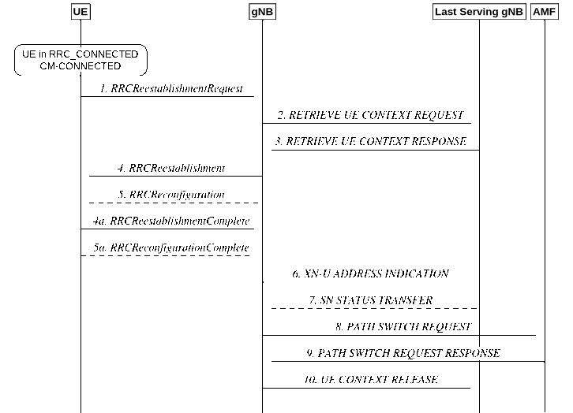
Figure 9.2.3.3-1: Re-establishment
procedure
1. The UE re-establishes the connection, providing the UE Identity
(PCI+C-RNTI) to the gNB where the trigger for the re-establishment
occurred.
2. If the UE Context is not locally available, the gNB, requests the
last serving gNB to provide UE Context data.
3. The last serving gNB provides UE context data.
4/4a. The gNB continues the re-establishment of the RRC connection.
The message is sent on SRB1.
5/5a. The gNB may perform the reconfiguration to re-establish SRB2
and DRBs when the re-establishment procedure is ongoing.
6/7. If loss of user data buffered in the last serving gNB shall be
prevented, the gNB provides forwarding addresses, and the last
serving gNB provides the SN status to the gNB.
8/9. The gNB performs path switch.
10. The gNB triggers the release of the UE resources at the last
serving gNB.
The IAB-MT in SA mode follows the same re-establishment procedure as
described for the UE. After the backhaul has been established, the
re-establishment procedure of the IAB-MT is part of the intra-CU
backhaul RLF recovery procedure for IAB-nodes defined in TS 38.401
[4]. Modifications to the configuration of BAP sublayer and higher
protocol layers above the BAP sublayer are described in TS 38.401
[4].
9.2.3.4 Conditional Handover
9.2.3.4.1 General
A Conditional
Handover (CHO) is defined as a handover that is executed by the UE
when one or more handover execution conditions are met. The UE starts
evaluating the execution condition(s) upon receiving the CHO
configuration, and stops evaluating the execution condition(s) once a
handover is executed.
The following
principles apply to CHO:
- The CHO configuration contains the configuration of CHO candidate
cell(s) generated by the candidate gNB(s) and execution condition(s)
generated by the source gNB.
- An execution condition may consist of one or two trigger
condition(s) (CHO events A3/A5, as defined in [12]). Only single RS
type is supported and at most two different trigger quantities (e.g.
RSRP and RSRQ, RSRP and SINR, etc.) can be configured simultaneously
for the evalution of CHO execution condition of a single candidate
cell.
- Before any CHO execution condition is satisfied, upon reception of
HO command (without CHO configuration) or LTM cell switch command MAC
CE, the UE executes the HO procedure as described in clause 9.2.3.2
or LTM cell switch procedure as described in clause 9.2.3.5,
regardless of any previously received CHO configuration.
- While executing CHO, i.e. from the time when the UE starts
synchronization with target cell, UE does not monitor source cell.
CHO is also
supported for the IAB-MT in context of intra- and inter-donor
IAB-node migration and BH RLF recovery.
CHO is not supported
for NG-C based handover in this release of the specification.
9.2.3.4.2 C-plane handling
As in intra-NR RAN
handover, in intra-NR RAN CHO, the preparation and execution phase of
the conditional handover procedure is performed without involvement
of the 5GC; i.e. preparation messages are directly exchanged between
gNBs. The release of the resources at the source gNB during the
conditional handover completion phase is triggered by the target gNB.
The figure below depicts the basic conditional handover scenario
where neither the AMF nor the UPF changes:
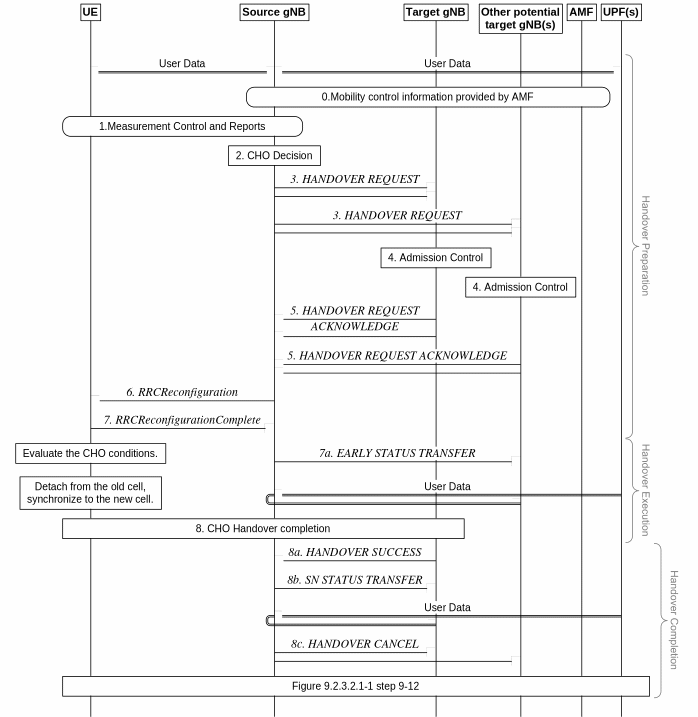
Figure 9.2.3.4.2-1: Intra-AMF/UPF
Conditional Handover
0/1. Same as step 0, 1 in Figure 9.2.3.2.1-1 of clause 9.2.3.2.1.
2. The source gNB decides to use CHO.
3. The source gNB requests CHO for one or more candidate cells
belonging to one or more candidate gNBs. A CHO request message is
sent for each candidate cell.
4. Same as step 4 in Figure 9.2.3.2.1-1 of clause 9.2.3.2.1.
5. The candidate gNB(s) sends CHO response (HO REQUEST ACKNOWLEDGE)
including configuration of CHO candidate cell(s) to the source gNB.
The CHO response message is sent for each candidate cell.
6. The source gNB sends an RRCReconfiguration message to the
UE, containing the configuration of CHO candidate cell(s) and CHO
execution condition(s).
NOTE 1: CHO configuration of candidate cells can be followed by
another reconfiguration from the source gNB.
NOTE 1a: A configuration of a CHO candidate cell cannot contain a
DAPS handover configuration.
7. The UE sends an RRCReconfigurationComplete message to the
source gNB.
7a If early data forwarding is applied, the source gNB sends the
EARLY STATUS TRANSFER message.
8. The UE maintains connection with the source gNB after receiving
CHO configuration, and starts evaluating the CHO execution conditions
for the candidate cell(s). If at least one CHO candidate cell
satisfies the corresponding CHO execution condition, the UE detaches
from the source gNB, applies the stored corresponding configuration
for that selected candidate cell, synchronises to that candidate cell
and completes the RRC handover procedure by sending
RRCReconfigurationComplete message to the target gNB. The UE
releases stored CHO configurations after successful completion of RRC
handover procedure.
8a/b The target gNB sends the HANDOVER SUCCESS message to the source
gNB to inform that the UE has successfully accessed the target cell.
In return, the source gNB sends the SN STATUS TRANSFER message
following the principles described in step 7 of Intra-AMF/UPF
Handover in clause 9.2.3.2.1.
NOTE 2: Late data forwarding may be initiated as soon as the source
gNB receives the HANDOVER SUCCESS message.
8c. The source gNB sends the HANDOVER CANCEL message toward the other
signalling connections or other candidate target gNBs, if any, to
cancel CHO for the UE.
9.2.3.4.3 U-plane handling
The U-plane handling
for Conditional Handover follows the same principles for DAPS
handover in 9.2.3.2.2, if early data forwarding is applied, except
that, in case of Full Configuration, HFN and PDCP SN are reset in the
target gNB after the SN assignment is handed over to the target gNB.
If late data forwarding is applied, the U-plane handling follows the
RLC-AM or RLC-UM bearer principles defined in 9.2.3.2.2.
9.2.3.4.4 Data Forwarding
If late data
forwarding is applied, the source NG-RAN node initiates data
forwarding once it knows which target NG-RAN node the UE has
successfully accessed. In that case the behavior of the Conditional
Handover data forwarding follows the same behavior as defined in
9.2.3.2.3 for the intra-system handover data forwarding, except the
behavior for DRBs configured with DAPS handover.
If early data
forwarding is applied instead, the source NG-RAN node initiates data
forwarding before the UE executes the handover, to a candidate target
node of interest. The behavior of early data forwarding for the
Conditional Handover follows the same principles for DRBs configured
with DAPS handover in the intra-system handover as defined in
9.2.3.2.3.
9.2.3.5 L1/L2
Triggered Mobility
9.2.3.5.1 General
LTM is a procedure
in which a gNB receives L1 or L3 measurement report(s) from a UE, and
on their basis the gNB may change UE serving cell by a cell switch
command signalled via a MAC CE. The cell switch command indicates an
LTM candidate configuration that the gNB previously prepared and
provided to the UE through RRC signalling. Then the UE switches to
the target configuration according to the cell switch command. The
LTM procedure can be used to reduce the mobility latency as described
in Annex G.
When configured by
the network, it is possible to activate TCI states of one or multiple
cells that are different from the current serving cell. For instance,
the TCI states of the LTM candidate cells can be activated in advance
before any of those cells become the serving cell. This allows the UE
to be DL synchronized with those cells, thereby facilitating a faster
cell switch to one of those cells when cell switch is triggered. All
the activated TCI states except those received in the cell switch
command are deactivated upon LTM cell switch execution.
When configured by
the network, it is possible to initiate UL TA acquisition (called
early TA) procedure of one or multiple cells that are different from
the current serving cells. If the cell has the same NTA as
the current serving cells or NTA=0, early TA acquisition
procedure is not required. The network may request the UE to perform
early TA acquisition of a candidate cell before a cell switch. The
early TA acquisition procedure is triggered by PDCCH order as
specified in clause 9.2.6 or realized through UE-based TA measurement
as configured by RRC. In the former case, the gNB/gNB-DU to which the
candidate cell belongs calculates the TA value and sends it to the
gNB/gNB-DU to which the serving cell belongs via gNB-CU. The serving
cell sends the TA value in the LTM cell switch command MAC CE when
triggering LTM cell switch. In the latter case, the UE performs TA
measurement for the candidate cells after being configured by RRC but
the exact time the UE performs TA measurement is up to UE
implementation. The UE applies the TA value measured by itself and
performs RACH-less LTM upon receiving the cell switch command, if it
does not include any valid TA value. The network may also send a TA
value in the LTM cell switch command MAC CE without early TA
acquisition.
When two TAG IDs are
configured for an LTM candidate cell, the gNB-DU to which the LTM
candidate cell belongs assigns the same TAG ID pointer value for each
TRP to be used by the UEs. Also when two TAG IDs are configured for
an LTM candidate cell, UE-based TA measurement is not configured.
Depending on the
availability of a valid TA value, the UE performs either a RACH-less
LTM or RACH-based LTM cell switch. If the valid TA value is provided
in the cell switch command, the UE applies the TA value as instructed
by the network. In the case where UE-based TA measurement is
configured, but no valid TA value is provided in the cell switch
command, the UE applies the valid TA value by itself if available.
The UE performs RACH-less LTM cell switch upon receiving the cell
switch command whenever a valid TA value is available. If no valid TA
value is available, the UE performs RACH-based LTM cell switch.
Regardless of
whether the UE is configured for UE-based TA measurement for a
certain candidate cell, it will still follow the PDCCH order, which
includes performing a random access procedure towards one or more
candidate cells. This also applies to the candidate cells for which
the UE is capable of deriving TA values by itself. Additionally,
regardless of whether the UE has already performed a random access
procedure towards the candidate cells, it will still follow the
UE-based measurement configuration if configured by the network.
For RACH-less LTM,
the UE accesses the target cell using either a configured grant or a
dynamic grant. The configured grant is provided in the LTM candidate
configuration, and the UE selects the configured grant occasion
associated with the beam indicated in the cell switch command. Upon
initiation of LTM cell switch to the target cell, the UE starts to
monitor PDCCH on the target cell for dynamic scheduling. Before
RACH-less LTM procedure completion, the UE shall not trigger random
access procedure if it does not have a valid PUCCH resource for
triggered SRs. In case of dynamic grant scheduling, the network can
include in the cell switch command signalled via a MAC CE the SR
configuration ID which indicates to the UE the scheduling request
configuration and physical layer resources on PUCCH where the UE may
send the scheduling request during an LTM cell switch procedure.
The following
principles apply to LTM:
- Security keys can be changed upon an LTM cell switch based on
network indication;
- Subsequent LTM is supported.
LTM supports
intra-gNB mobility, and inter-gNB mobility. LTM supports both
intra-frequency and inter-frequency mobility, including mobility to
inter-frequency cell that is not a current serving cell. LTM is
supported only for licensed spectrum. The following scenarios are
supported:
- PCell change in non-CA scenario and non-DC scenario;
- PCell and SCell(s) change in CA scenario;
- Dual connectivity scenarios:
- PCell change together with MCG SCells(s) change and intra-SN PSCell
change;
- PSCell change together with SCG SCell(s) change with or without MN
involvement.
NOTE: LTM for simultaneous PCell and inter-SN PSCell change is not
supported. Inter-gNB LTM configuration for MN and SN at the same time
is also not supported.
While the UE has
stored LTM candidate configurations the UE can also execute any L3
handover except for DAPS handover. In the RRC message which the UE
applies for any L3 handover (except DAPS), LTM candidate
configurations can be added/modified/released by the target cell.
9.2.3.5.2 C-Plane
Handling
Cell switch command
is conveyed in a MAC CE, which contains the necessary information to
perform the LTM cell switch.
The overall
procedure for intra-gNB LTM is shown in Figure 9.2.3.5.2-1 below.
Subsequent LTM is done by repeating the early synchronization, LTM
cell switch execution, and LTM cell switch completion steps without
the need to release, reconfigure or add other LTM candidate
configurations after each LTM cell switch completion. The general
procedure over the air interface is applicable to SCG LTM. Further
details of SCG LTM can be found in TS 37.340 [21].
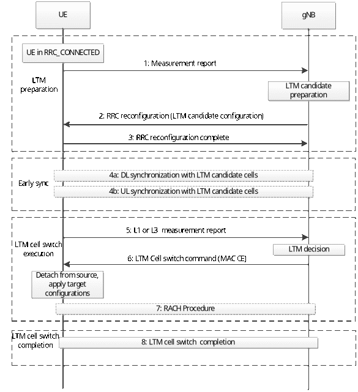
Figure 9.2.3.5.2-1. Signalling
procedure for intra-gNB LTM
The procedure for
intra-gNB LTM is as follows:
1. The UE sends a MeasurementReport message to the gNB. The
gNB decides to configure LTM and initiates LTM preparation.
2. The gNB transmits an RRCReconfiguration message to the UE
including the LTM candidate configurations.
3. The UE stores the LTM candidate configurations and transmits an
RRCReconfigurationComplete message to the gNB.
4a. The UE performs DL synchronization with the LTM candidate cell(s)
before receiving the cell switch command. The UE may activate and
deactivate TCI states of LTM candidate cell(s), as triggered by the
gNB and defined in TS 38.133 [13].
4b. The UE may perform UL synchronization with LTM candidate cell(s)
before receiving the cell switch command, by using UE-based TA
measurement, if configured, and/or by transmitting a preamble towards
the candidate cell, as triggered by the gNB. When UE-based TA
measurement is configured, UE acquires the TA value(s) of the
candidate cell(s) by measurement. UE performs early TA acquisition
with the candidate cell(s) as requested by the network before
receiving the cell switch command as specified in clause 9.2.6 and TS
38.133 [13]. This is done via CFRA triggered by a PDCCH order from
the source cell, following which the UE sends preamble towards the
indicated candidate cell. In order to minimize the data interruption
of the source cell due to CFRA towards the candidate cell(s), the UE
does not receive random access response from the network for the
purpose of TA value acquisition and the TA value of the candidate
cell is indicated in the cell switch command. The UE does not
maintain the TA timer for the candidate cell and relies on network
implementation to guarantee the TA validity.
5. The UE performs L1 measurements on the configured LTM candidate
cell(s) and transmits L1 measurement reports to the gNB. L1
measurement should be performed as long as RRC reconfiguration (step
2) is applicable. The UE can also perform L3 measurement reporting to
the gNB, including beam level measurement results on cell(s) which
are configured as LTM candidate cell(s) according to the received
network configuration.
6. The gNB decides to execute cell switch to a target cell and
transmits an LTM cell switch command MAC CE triggering cell switch by
including a target configuration ID which indicates the index of the
candidate configuration of the target cell, a beam indicated with a
TCI state or beams indicated with DL and UL TCI states, and a timing
advance command for the target cell, if available. The UE switches to
the target cell and applies the candidate configuration indicated by
the target configuration ID.
7. The UE performs the random access procedure towards the target
cell, if UE does not have valid TA of the target cell as specified in
clause 5.18.35 of TS 38.321[6].
8. The UE completes the LTM cell switch procedure by sending
RRCReconfigurationComplete message to target cell. If the UE has
performed a RA procedure in step 7 the UE considers that LTM cell
switch execution is successfully completed when the random access
procedure is successfully completed. For RACH-less LTM, the UE
considers that LTM cell switch execution is successfully completed
when the UE determines that the network has successfully received its
first UL data.
The steps 4-8 can be
performed multiple times for subsequent LTM cell switch executions
using the LTM candidate configuration(s) provided in step 2.
The overall
procedure for inter-gNB LTM is shown in Figure 9.2.3.5.2-2 below.
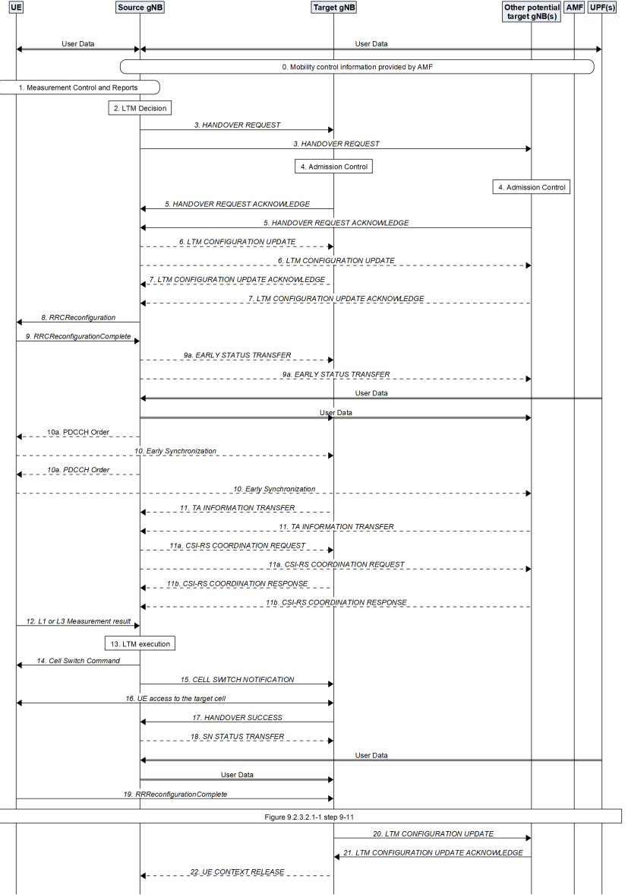
Figure 9.2.3.5.2-2. Signalling
procedure for inter-gNB LTM
The procedure for
inter-gNB LTM is as follows:
1. The UE sends a MeasurementReport message (L3 measurement result)
to the source gNB containing measurements of neighbouring cells.
2. The source gNB decides to configure LTM.
3. The source gNB requests LTM for one or more candidate cells
belonging to the source gNB and/or one or more candidate gNB(s). For
inter-gNB LTM, the source gNB initiates a HANDOVER REQUEST message
per candidate cell containing one candidate cell ID and may contain
the CSI resource configuration for subsequent LTM. For both intra and
inter-gNB LTM, the source gNB may request the candidate
cell(s)/gNB(s) to provide the CSI-RS resource configuration for L1
RSRP measurement. The source gNB may include the proposed LTM no
security change related information, and the proposed L2 reset
configuration information. For inter-gNB LTM, the source gNB includes
the same source NG-RAN node UE XnAP ID for all the HANDOVER REQUEST
messages to one candidate gNB.
4. Admission Control may be performed by the candidate
cells(s)/gNB(s).
5. The candidate gNB(s) prepares and provides the LTM
configuration(s) to the source gNB. For inter-gNB LTM, the candidate
gNB(s) respond(s) with HANDOVER REQUEST ACKNOWLEDGE message to the
source gNB including the generated RRC configurations for the
accepted candidate cell. For both intra and inter-gNB LTM, the
candidate gNB(s) may include the CSI-RS resource configuration for
early CSI acquisition, and upon request, may also include additional
information related to the CSI-RS resource configuration for L1
measurement and early sync information. The candidate gNB(s) also
responds with the selected LTM no security change related
information. For inter-gNB LTM, each candidate gNB includes the same
target NG-RAN node UE XnAP ID for all the HANDOVER REQUEST
ACKNOWLEDGE messages it responds. The candidate gNB may respond the
selected L2 reset configuration information upon request.
6. The source gNB sends an LTM CONFIGURATION UPDATE message to the
candidate gNB(s) to update the LTM configurations of candidate
cell(s). The source gNB may include the common CSI resource
configuration, the LTM configuration ID mapping list and the LTM
security information.
7. The candidate gNB(s) sends the LTM CONFIGURATION UPDATE
ACKNOWLEDGE message to the source gNB. The candidate gNB(s) may
provide the CSI report configuration. The candidate gNB may also
include the CSI report configuration for early CSI acquisition of the
candidate cell(s).
NOTE 1: Step 6 may also be triggered after step 14, or after step 17
by implementation for subsequent LTM.
NOTE 2: Step 6 and Step 7 are triggered if early CSI acquisition is
applied.
8. The source gNB sends an RRCReconfiguration message to the
UE.
9. The UE stores the LTM candidate configurations and sends an
RRCReconfigurationComplete message to the source gNB.
NOTE 3: Void.
9a. If early data forwarding is applied, the source gNB sends the
EARLY STATUS TRANSFER message to the candidate gNB(s).
10/11. Early DL and UL synchronization to some LTM candidate cell(s)
may be performed. The source gNB may activate or deactivate the TCI
states of the candidate LTM cells. Depending on network
configuration, the UE may perform early UL synchronization with LTM
candidate cell(s), by using UE-based TA measurement, if configured,
and/or by transmitting a preamble towards the candidate cell, as
triggered by the source gNB. With a network triggered UL
synchronization, a PDCCH order is received from the source cell to
trigger CFRA to a candidate cell, the UE performs early TA
acquisition by sending preamble towards the indicated candidate cell.
In order to minimize the data interruption on the source cell due to
CFRA towards the indicated candidate cell(s), the UE does not receive
random access response from the network for the purpose of TA value
acquisition. The candidate gNB(s) sends the TA INFORMATION TRANSFER
message to the source gNB instead.
11a/11b. The source gNB may initiate a CSI-RS COORDINATION REQUEST
message to request the candidate gNB(s) to activate or deactivate
semi-persistent CSI-RS resources for Layer 1 measurements and/or for
early CSI acquisition. The candidate gNB(s) respond to the source gNB
with the CSI-RS COORDINATION RESPONSE message indicating whether the
requested CSI-RS resources are activated or deactivated.
NOTE 3a: Step 11a/11b may be triggered by implementation after step
9.
12. The UE performs L1 or L3 measurements on the configured LTM
candidate cell(s) and transmits L1 or L3 measurement reports to the
source gNB, if configured. L1 or L3 measurement should be performed
as long as RRC reconfiguration (step 8) is applicable.
13. The source gNB determines to initiate LTM. L3 measurement can
also be used to determine this step.
14. The source gNB decides to execute cell switch to a target cell
and transmits an LTM cell switch command MAC CE triggering cell
switch by including a target configuration ID which indicates the
index of the candidate configuration, a beam indicated with a TCI
state or beams indicated with DL and UL TCI states, and a TA command
for the target cell. In case of a security context change, the LTM
cell switch command MAC CE also contains the NCC value. The UE
switches to the target cell and applies the candidate configuration
indicated by the target configuration ID. In case of security context
change, the UE generates and applies the new security keys based on
the received NCC value.
NOTE 4: Up to implementation, data forwarding and SN Status Transfer
may be initiated once the source gNB triggers the inter-gNB LTM cell
switch for the UE in Step 14.
15. The source gNB sends the CELL SWITCH NOTIFICATION message to the
target gNB to indicate the initiation of Cell Switch command to the
UE. The source gNB may inform the acquired TA related information.
16. The UE performs the random access procedure towards the target
cell, if UE does not have valid TA of the target cell as specified in
clause 5.18.35 of TS 38.321[6].
17/18. The target gNB sends the HANDOVER SUCCESS message to the
source gNB to inform that the UE has successfully accessed the target
cell. In return, the source gNB sends the SN STATUS TRANSFER message
following the principles described in step 7 of Intra-AMF/UPF
Handover in clause 9.2.3.2.1.
NOTE 5: Late data forwarding may be initiated as soon as the source
gNB receives the HANDOVER SUCCESS message.
NOTE 6: The source gNB may initiate the CSI-RS Coordination procedure
to deactivate the semi-persistent CSI-RS resource(s) of candidate
cell(s) on the candidate gNB(s) after the UE successfully accesses
the target cell.
19. The UE completes the LTM cell switch procedure by sending
RRCReconfigurationComplete message to target cell. If the UE
has performed a RA procedure in step 16 the UE considers that LTM
cell switch execution is successfully completed when the random
access procedure is successfully completed. For RACH-less LTM, the UE
considers that LTM cell switch execution is successfully completed
when the UE determines that the network has successfully received its
first UL data
NOTE 7: Steps 17/18 and 19 do not have to occur one after the other.
The target gNB may send the HANDOVER SUCCESS message to the source
gNB after receiving the RRCReconfigurationComplete message.
20. The new source gNB (i.e., the target gNB) sends the LTM
CONFIGURATION UPDATE message to the candidate gNBs. This message
includes the new security key(s) to be used with the UE.
21. The candidate gNB(s) responds with the LTM CONFIGURATION UPDATE
ACKNOWLEDGE message to the new source gNB.
22. The new source gNB may send the UE CONTEXT RELEASE message to
inform the old source gNB to release radio and C-plane related
resources associated to the UE context if no LTM candidate cell(s)
exist in the old source gNB. Any ongoing data forwarding may
continue.
The steps 9a-22 can
be performed multiple times for subsequent LTM cell switch executions
using the LTM candidate configuration(s) provided in step 8.
The procedure over
the air interface described in Figure 9.2.3.5.2-1 is applicable to
both intra-gNB LTM and inter-gNB LTM. The overall LTM procedures over
F1-C interface are captured in TS 38.401[4].
9.2.3.5.3 U-Plane
Handling
After receiving an
LTM cell switch command MAC CE, the UE performs MAC reset. Whether
the UE performs RLC re-establishment and PDCP data recovery during
cell switch is explicitly controlled by the network through RRC
signalling.
9.2.3.6 RACH-less
handover
RACH-less handover
is supported for an intra-gNB handover procedure in TN and NTN.
RACH-less handover is also supported for an inter-gNB handover
procedure in the case of NTN or mobile IAB-DU migration procedure.
The RACH-less handover procedure applies the following functionality:
- The UE uses the same timing advance value (i.e., NTA
value) at the target cell as in the source cell or timing advance
value (i.e., NTA value) of 0.
- The handover command for the UE may contain a beam identifier for
the beam to be used by the UE at the target cell. The beam may be
determined based on a UE measurement report and/or left up to gNB
implementation, e.g., using the target cell's knowledge about the
beam(s) used by the UE at the co-located source cell.
- The handover command may include a configured UL grant. UE can
fallback to RACH when there is no valid configured uplink grant.
Alternatively, an UL grant is dynamically signalled by the target
cell.
- The UE transmits the RRCReconfigurationComplete message
using the configured or dynamically signalled UL grant. Successful UL
data reception on the target cell terminates the RACH-less handover
execution.
9.2.3.7 Conditional
L1/L2 Triggered Mobility
9.2.3.7.1 General
CLTM cell switch is
executed by the UE when L1-based or L3-based LTM cell switch
execution conditions are met. The same LTM procedures as described in
clause 9.2.3.5.1 on network activation of TCI states for DL
synchronization and on configuration and initiation of UL TA
acquisition (via PDCCH order) are also applicable for CLTM. CLTM can
coexist with network triggered L3 HO, CHO and network triggered
PSCell change, while the coexistence of CLTM and DAPS HO is not
supported. The overall procedure for CLTM is as shown in Figure
9.2.3.7.1-1:
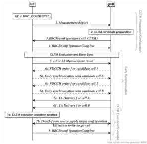
Figure 9.2.3.7.1-1. Signalling
procedure for CLTM
The procedure for
CLTM is as follows:
1. The UE sends a MeasurementReport message to the gNB. The gNB
decides to configure CLTM and initiates CLTM preparation.
2. The source gNB can request the candidate cells to provide
conditional execution configurations and the candidate cells provide
the conditional configuration including their own execution
conditions, to be used in subsequent CLTM.
3. The source gNB sends an RRCReconfiguration message to the
UE and this includes the CLTM configurations of candidate cells as
well as the execution condition for the CLTM.
4. The UE stores the CLTM candidate configurations and transmits an
RRCReconfigurationComplete message to the gNB. The UE starts
evaluating the execution conditions based on the provided
configuration.
5/6. Early DL and UL synchronization to some LTM candidate cell(s)
may be performed. The source gNB may activate or deactivate the TCI
states of the candidate LTM cells. The source gNB can trigger early
synchronization (for example, based on the L1 or L3 measurement
reports from the UE, if configured) to the UE and steps 4a/4b from
figure 9.2.3.5.2-1 are applicable here as well. In addition, the
source gNB can provide the TA value for each of the candidate cells
the UE has performed UL synchronization with.
Depending on network configuration, the UE may perform early
UL synchronization with CLTM candidate cell(s), by using UE-based TA
measurement, if configured.
7. The CLTM execution condition is satisfied at the UE and on (at
least) one satisfied candidate LTM cell, the UE performs the CLTM
execution by applying the configuration of the satisfied LTM
candidate cell. If the UE has valid TA as part of the UL early
synchronization from step 6, the UE skips RACH. Otherwise, RACH is
performed as part of the CLTM execution.
8. The UE completes the CLTM cell switch procedure by sending
RRCReconfigurationComplete message to the switched LTM cell.
For RACH-based CLTM, the UE considers that CLTM cell switch execution
is successfully completed when the random access procedure is
successfully completed. For RACH-less CLTM, the UE considers that
CLTM cell switch execution is successfully completed when the UE
determines that the network has successfully received its first UL
data. The UE does not release any valid TA value(s) of LTM candidate
cells with CLTM configuration.
The steps 5-8 can be
performed multiple times for subsequent CLTM cell switch executions
using the CLTM candidate configuration(s) provided in step 2.
The following
principles apply to CLTM:
- CLTM is supported for intra-gNB LTM when DC is not configured.
Inter-gNB CLTM is not supported;
- CLTM can be RACH-based or RACH-less. RACH-based CLTM includes CFRA
and CBRA, and only CG based RACH-less CLTM is supported;
- U-Plane handling from clause 9.2.3.5.3 applies to CLTM as well and
since there is no LTM cell switch command MAC CE reception for CLTM,
the UE performs MAC reset as part of the CLTM execution.
9.2.4 Measurements
In RRC_CONNECTED,
both layer 1 (L1) and layer 3 (L3) based measurements are supported,
L1 measurement reporting is evaluated based on beam quality and L3
measurement reporting is evaluated based on cell quality.
For L3 based
measurement, the UE measures multiple beams (at least one) of a cell
and the measurements results (power values) are averaged to derive
the cell quality. In doing so, the UE is configured to consider a
subset of the detected beams. Filtering takes place at two different
levels: at the physical layer to derive beam quality and then at RRC
level to derive cell quality from multiple beams. Cell quality from
beam measurements is derived in the same way for the serving cell(s)
and for the non-serving cell(s). Measurement reports may contain the
measurement results of the X best beams if the UE is
configured to do so by the gNB.
For L1 based
measurement used in LTM event-triggered measurement, the UE measures
the beams configured for LTM. Filtering takes place at the physical
layer to derive the beam quality. The measurement reports are sent
using MAC CE and contain the measurement results of the X (at
least one) beams.
The corresponding
high-level measurement model is described below:
Figure 9.2.4-1: Measurement Model
NOTE 1: K beams correspond to the measurements on SSB or CSI-RS
resources configured for L3 mobility by gNB and detected by UE at L1.
- A: measurements (beam specific samples) internal to the
physical layer.
- Layer 1 filtering: internal layer 1 filtering of the inputs
measured at point A. Exact filtering is implementation dependent. How
the measurements are actually executed in the physical layer (inputs
A and Layer 1 filtering) is not constrained by the standard.
- A1: measurements (i.e. beam specific
measurements) reported by layer 1 to layer 3 after layer 1 filtering.
- Beam Consolidation/Selection: beam specific measurements are
consolidated to derive cell quality. The behaviour of the Beam
consolidation/selection is standardised and the configuration of this
module is provided by RRC signalling. Reporting period at B equals
one measurement period at A1.
- B: a measurement (i.e. cell quality) derived from
beam-specific measurements reported to layer 3 after beam
consolidation/selection.
- Layer 3 filtering for cell quality: filtering performed on
the measurements provided at point B. The behaviour of the Layer 3
filters is standardised and the configuration of the layer 3 filters
is provided by RRC signalling. Filtering reporting period at C equals
one measurement period at B.
- C: a measurement after processing in the layer 3 filter. The
reporting rate is identical to the reporting rate at point B. This
measurement is used as input for one or more evaluation of reporting
criteria.
- Evaluation of reporting criteria: checks whether actual
measurement reporting is needed at point D. The evaluation can be
based on more than one flow of measurements at reference point C e.g.
to compare between different measurements. This is illustrated by
input C and C1. The UE shall evaluate the reporting
criteria at least every time a new measurement result is reported at
point C, C1. The reporting criteria are standardised and
the configuration is provided by RRC signalling as specified in TS
38.331 [12].
- D: measurement report information (message) sent on the
radio interface.
- L3 Beam filtering: filtering performed on the measurements
(i.e. beam specific measurements) provided at point A1.
The behaviour of the beam filters is standardised and the
configuration of the beam filters is provided by RRC signalling.
Filtering reporting period at E equals one measurement period at A1.
- E: a measurement (i.e. beam-specific measurement) after
processing in the beam filter. The reporting rate is identical to the
reporting rate at point A1. This measurement is used as
input for selecting the X measurements to be reported.
- Beam Selection for beam reporting: selects the X
measurements from the measurements provided at point E. The behaviour
of the beam selection is standardised and the configuration of this
module is provided by RRC signalling.
- F: beam measurement information included in measurement
report (sent) on the radio interface.
Layer 1 filtering
introduces a certain level of measurement averaging. How and when the
UE exactly performs the required measurements is implementation
specific to the point that the output at B fulfils the performance
requirements set in TS 38.133 [13]. Layer 3 filtering for cell
quality and related parameters used are specified in TS 38.331 [12]
and do not introduce any delay in the sample availability between B
and C. Measurement at point C, C1 is the input used in the
event evaluation. L3 Beam filtering and related parameters used are
specified in TS 38.331 [12] and do not introduce any delay in the
sample availability between A1 and E.
The high-level model
for LTM event-triggered measurement is described below:
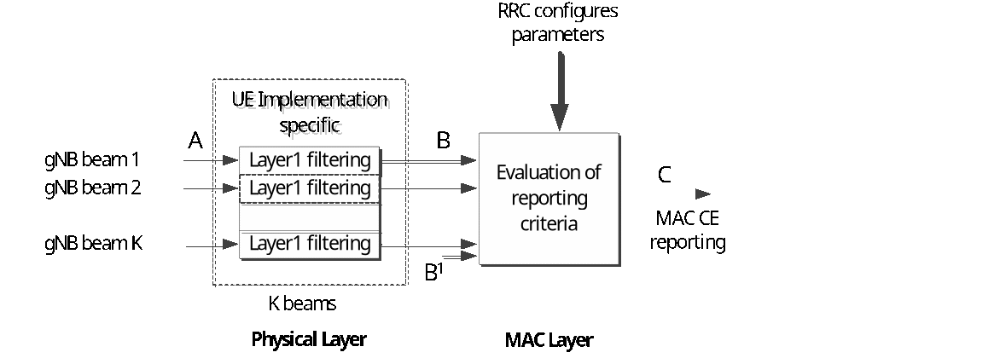
Figure 9.2.4-2: LTM Event-triggered
Measurement Model
NOTE 1a: K beams correspond to the measurements on SSB or CSI-RS
resources configured for LTM by gNB and detected by UE at L1.
- A: measurements (beam specific samples) internal to the
physical layer.
- Layer 1 filtering: internal layer 1 filtering of the inputs
measured at point A. Exact filtering is implementation dependent. How
the measurements are actually executed in the physical layer (inputs
A and Layer 1 filtering) is not constrained by the standard.
- B: a measurement after layer 1 filtering. This beam
measurement is used as input for one or more evaluation of LTM event
triggering and reporting criteria.
- Evaluation of reporting criteria: checks whether actual
measurement reporting is needed at point C. The evaluation can be
based on more than one flow of measurements at reference point B e.g.
to compare between different measurements. This is illustrated by
input B and B1. The UE shall evaluate the reporting criteria at least
every time a new measurement result is reported at point B, B1. The
reporting criteria are standardised and the configuration is provided
by RRC signalling specified in TS 38.331 [12].
- C: LTM MAC CE measurement report information (message) sent
on the radio interface.
Measurement reports
for L3 based measurements are characterized by the following:
- Measurement reports include the measurement identity of the
associated measurement configuration that triggered the reporting;
- Cell and beam measurement quantities to be included in measurement
reports are configured by the network;
- The number of non-serving cells to be reported can be limited
through configuration by the network;
- Cells belonging to an exclude-list configured by the network are
not used in event evaluation and reporting, and conversely when an
allow-list is configured by the network, only the cells belonging to
the allow-list are used in event evaluation and reporting;
- Beam measurements to be included in measurement reports are
configured by the network (beam identifier only, measurement result
and beam identifier, or no beam reporting).
Measurement reports
for LTM event triggered measurements are characterized by the
following:
- Measurement reports include the reporting configuration identity
that triggered the reporting;
- The max number of beam and the beam measurement quantities to be
included in measurement reports are configured by network;
- The current beam of the serving cell to be included in measurement
reports are configured by the network;
- When multi-TRP is configured for the serving cell, the UE uses the
best beam of the current beams for LTM event evaluation and
reporting. It is up to the UE implementation how to choose the best
beam.
Intra-frequency
neighbour (cell) measurements and inter-frequency neighbour (cell)
measurements are defined as follows:
- SSB based intra-frequency measurement: a measurement is defined as
an SSB based intra-frequency measurement provided the SSB frequency
configured in the measurement object associated with the serving cell
and the center frequency of the SSB of the neighbour cell are the
same, and the subcarrier spacing of the two SSBs is also the same.
- SSB based inter-frequency measurement: a measurement is defined as
an SSB based inter-frequency measurement provided the SSB frequency
configured in the measurement object associated with the serving cell
and the center frequency of the SSB of the neighbour cell are
different, or the subcarrier spacing of the two SSBs is different.
The SSBs of the same center frequency have the same subcarrier
spacing in this release.
NOTE 2: For SSB based measurements, one measurement object
corresponds to one SSB and the UE considers different SSBs as
different cells.
NOTE 2a: If a UE is configured to perform serving cell measurements
based on an NCD-SSB configured in its active BWP, this NCD-SSB is
considered as the SSB of the serving cell in the definition of
intra-frequency and inter-frequency measurements as above.
NOTE 2b: The above measurement object associated with the serving
cell refers to the serving cell measurement object for OD-SSB when
SSB is absent and OD-SSB is activated, or when SSB and OD-SSB have a
different frequency and OD-SSB is activated. Otherwise, it refers to
the serving cell measurement object for SSB.
- CSI-RS based intra-frequency measurement: a measurement is defined
as a CSI-RS based intra-frequency measurement provided that:
- The subcarrier spacing of CSI-RS resources on the neighbour cell
configured for measurement is the same as the SCS of CSI-RS resources
on the serving cell indicated for measurement; and
- For 60kHz subcarrier spacing, the CP type of CSI-RS resources on
the neighbour cell configured for measurement is the same as the CP
type of CSI-RS resources on the serving cell indicated for
measurement; and
- The centre frequency of CSI-RS resources on the neighbour cell
configured for measurement is the same as the centre frequency of
CSI-RS resource on the serving cell indicated for measurement.
- CSI-RS based inter-frequency measurement: a measurement is defined
as a CSI-RS based inter-frequency measurement if it is not a CSI-RS
based intra-frequency measurement.
NOTE 3: Extended CP for CSI-RS based measurement is not supported in
this release.
- CSI-RS based intra-frequency L1 measurement for LTM: a measurement
is defined as a CSI-RS based intra-frequency L1 measurement for LTM
provided that:
- The subcarrier spacing of the CSI-RS resources of the LTM candidate
cell(s) configured for L1 measurement is the same as the subcarrier
spacing of active DL BWP; and
- For 60kHz subcarrier spacing, the CP type of the CSI-RS resource of
LTM candidate cell(s) configured for L1 measurement is the same as
the CP type of active DL BWP; and
- At least 48 RBs of the CSI-RS resource of LTM candidate cell(s)
configured for L1 measurement are included within the active DL BWP.
- CSI-RS based inter-frequency L1 measurement for LTM: a CSI-RS L1
based measurement for LTM is defined as a CSI-RS based
inter-frequency L1 measurement for LTM if it is not a CSI-RS based
intra-frequency measurement for LTM.
Whether a
measurement is non-gap-assisted or gap-assisted depends on the
capability of the UE, the active BWP of the UE and the current
operating frequency:
- For SSB based inter-frequency measurement, if the measurement gap
requirement information is reported by the UE, a measurement gap
configuration may be provided according to the information.
Otherwise, a measurement gap configuration is always provided in the
following cases:
- If the UE only supports per-UE measurement gaps;
- If the UE supports per-FR measurement gaps and any of the serving
cells are in the same frequency range of the measurement object.
- For SSB based intra-frequency measurement, if the measurement gap
requirement information is reported by the UE, a measurement gap
configuration may be provided according to the information.
Otherwise, a measurement gap configuration is always provided in the
following case:
- If the serving cell is associated with SSB, other than the initial
BWP, if any of the UE configured BWPs do not contain the frequency
domain resources of the SSB associated to the initial DL BWP, and are
not configured with NCD-SSB for serving cell measurement;
NOTE 4: When the serving cell is associated with both SSB and OD-SSB
in different frequency, "the SSB associated to the initial DL
BWP" includes both SSB and OD-SSB.
- If the serving cell is not associated with SSB (i.e. SSB-less
SCell), if the initial BWP or any of the UE configured BWPs do not
contain the SSB frequency configured in the measurement object
associated with the serving cell, and are not configured with NCD-SSB
for serving cell measurement.
- For CSI-RS based intra-frequency measurement, no measurement gap is
needed;
- For CSI-RS based inter-frequency measurement, a measurement gap
configuration is always provided in the following cases:
- If the UE only supports per-UE measurement gaps;
- If the UE supports per-FR measurement gaps and any of the serving
cells are in the same frequency range of the measurement object.
In non-gap-assisted
scenarios, the UE shall be able to carry out such measurements
without measurement gaps. In gap-assisted scenarios, the UE cannot be
assumed to be able to carry out such measurements without measurement
gaps.
Network may request the UE to measure NR and/or E-UTRA carriers in
RRC_IDLE or RRC_INACTIVE via system information or via dedicated
measurement configuration in RRCRelease. If the UE was
configured to perform measurements of NR and/or E-UTRA carriers while
in RRC_IDLE or in RRC_INACTIVE, it may provide an indication of the
availability of corresponding measurement results to the gNB in the
RRCSetupComplete message. The network may request the UE to
report those measurements after security activation. The request for
the measurements can be sent by the network immediately after
transmitting the Security Mode Command (i.e. before the reception of
the Security Mode Complete from the UE).
If the UE was
configured to perform measurements of NR and/or E-UTRA carriers while
in RRC_INACTIVE, the gNB can request the UE to provide corresponding
measurement results in the RRCResume message and then the UE
can include the available measurement results in the
RRCResumeComplete message. Alternatively, the UE may provide
an indication of the availability of the measurement results to the
gNB in the RRCResumeComplete message and the gNB can then
request the UE to provide these measurement results.
9.2.5 Paging
Paging allows the
network to reach UEs in RRC_IDLE and in RRC_INACTIVE state through
Paging messages, and to notify UEs in RRC_IDLE, RRC_INACTIVE
and RRC_CONNECTED state of system information change (see clause
7.3.3) and ETWS/CMAS indications (see clause 16.4) through Short
Messages. Both Paging messages and Short Messages
are addressed with P-RNTI on PDCCH, but while the former is sent on
PCCH, the latter is sent over PDCCH directly (see clause 6.5 of TS
38.331 [12]).
While in RRC_IDLE
the UE monitors the paging channels for CN-initiated paging. While in
RRC_INACTIVE with no ongoing SDT procedure (see clause 18.0) the UE
monitors paging channels for RAN-initiated paging and CN-initiated
paging. A UE need not monitor paging channels continuously though;
Paging DRX is defined where the UE in RRC_IDLE or RRC_INACTIVE is
only required to monitor paging channels during one Paging Occasion
(PO) per DRX cycle (see TS 38.304 [10]). The Paging DRX cycles are
configured by the network:
1) For CN-initiated paging, a default cycle is broadcast in system
information;
2) For CN-initiated paging, a UE specific cycle can be configured via
NAS signalling;
3) For RAN-initiated paging, a UE-specific cycle is configured via
RRC signalling;
- The UE uses the shortest of the DRX cycles applicable i.e. a UE in
RRC_IDLE uses the shortest of the first two cycles above, while a UE
in RRC_INACTIVE uses the shortest of the three.
The POs of a UE for
CN-initiated and RAN-initiated paging are based on the same UE ID,
resulting in overlapping POs for both. The number of different POs in
a DRX cycle is configurable via system information and a network may
distribute UEs to those POs based on their IDs.
While in
RRC_CONNECTED and while in RRC_INACTIVE with ongoing SDT procedure,
the UE monitors the paging channels in any PO signalled in system
information for SI change indication and PWS notification. In case of
BA, a UE in RRC_CONNECTED only monitors paging channels on the active
BWP with common search space configured.
For operation with
shared spectrum channel access, a UE can be configured for an
additional number of PDCCH monitoring occasions in its PO to monitor
for paging. However, when the UE detects a PDCCH transmission within
the UE's PO addressed with P-RNTI, the UE is not required to monitor
the subsequent PDCCH monitoring occasions within this PO.
If Paging Cause is
included in the Paging message, a UE in RRC_IDLE or RRC_INACTIVE
state may use the Paging Cause as per TS 23.501[3].
To reduce the
probability of potential paging loss due to incomplete UE Radio
Capability for Paging, the gNB may update the UE Radio Capability for
Paging towards the AMF during the initial context setup procedure as
specified in TS 38.413 [26].
Paging optimization for UEs in CM_IDLE: at
UE context release, the NG-RAN node may provide the AMF with a list
of recommended cells and NG-RAN nodes as assistance info for
subsequent paging. The AMF may also provide Paging Attempt
Information consisting of a Paging Attempt Count and the Intended
Number of Paging Attempts and may include the Next Paging Area Scope.
If Paging Attempt Information is included in the Paging message, each
paged NG-RAN node receives the same information during a paging
attempt. The Paging Attempt Count shall be increased by one at each
new paging attempt. The Next Paging Area Scope, when present,
indicates whether the AMF plans to modify the paging area currently
selected at next paging attempt. If the UE has changed its state to
CM CONNECTED the Paging Attempt Count is reset.
Paging
optimization for UEs in RRC_INACTIVE: at RAN Paging, the serving
NG-RAN node provides RAN Paging area information. The serving NG-RAN
node may also provide RAN Paging attempt information. Each paged
NG-RAN node receives the same RAN Paging attempt information during a
paging attempt with the following content: Paging Attempt Count, the
intended number of paging attempts and the Next Paging Area Scope.
The Paging Attempt Count shall be increased by one at each new paging
attempt. The Next Paging Area Scope, when present, indicates whether
the serving NG_RAN node plans to modify the RAN Paging Area currently
selected at next paging attempt. If the UE leaves RRC_INACTIVE state
the Paging Attempt Count is reset.
UE power saving for paging monitoring: in order to reduce UE
power consumption due to false paging alarms, the group of UEs
monitoring the same PO can be further divided into multiple
subgroups. With subgrouping, a UE shall monitor PDCCH in its PO for
paging if the subgroup to which the UE belongs is paged as indicated
via associated PEI and/or LP-WUS. UE configured with LP-WUS also
monitors a common codepoint associated with all subgroups in a PO. If
a UE cannot find its subgroup ID with the PEI configurations and/or
its subgroup ID or the common codepoint with LP-WUS configurations in
a cell or if the UE is unable to monitor the associated PEI and/or
LP-WUS occasion corresponding to its PO, it shall monitor the paging
in its PO. If the UE is configured with both LP-WUS and PEI, and it
cannot find its subgroup ID or the common codepoint with the LP-WUS
or if the UE is unable to monitor the LP-WUS it monitors the
following PEI or paging in its PO.
The gNB configures
entry and exit conditions to monitor LP-WUS in system information.
The UE may start monitoring LP-WUS when measurements using the MR are
above the configured entry threshold(s), and the measurements using
the LR are above the entry threshold(s), if configured. Exit
conditions for LP-WUS monitoring are based on LR as specified in TS
38.304 [10]. LP-WUS monitoring can be disabled in the UE via NAS
signalling. If LP-WUS disable indication via NAS signalling is absent
LP-WUS monitoring is enabled, as
described in TS 23.501 [3].
These subgroups have
the following characteristics:
- They are formed based on either CN controlled subgrouping or UE ID
based subgrouping;
- If CN controlled subgroup ID is not provided from AMF, UE ID based
subgrouping is used if supported by the UE and network;
- The RRC state (RRC_IDLE or RRC_INACTIVE state) does not impact
which subgroup the UE belongs to;
- Subgrouping support for a cell is broadcast in the system
information as one of the following: Only CN controlled subgrouping
supported, only UE ID based subgrouping supported, or both CN
controlled subgrouping and UE ID based subgrouping supported;
- Total number of subgroups allowed in a cell is up to 8 for PEI and
up to 31 for LP-WUS and represents the sum of CN controlled and UE ID
based subgrouping configured by the network;
- A UE configured with CN controlled subgroup ID applies
CN controlled subgroup ID if the cell supports CN controlled
subgrouping; otherwise, it derives UE ID based subgroup ID if the
cell supports only UE ID based subgrouping.
PEI or LP-WUS
associated with subgroups has the following characteristics:
- If the PEI or LP-WUS monitoring is supported by the UE, it shall at
least support UE ID based subgrouping method;
- PEI monitoring can be limited via system information to the last
used cell (i.e., the cell in which the UE most recently received
RRCRelease without indicating that the last used cell for PEI
shall not be updated);
- A PEI-capable UE shall store its last used cell information;
- gNBs supporting the PEI monitoring to the last used cell function
provide the UE's last used cell information to the AMF in the NG-AP
UE Context Release Complete message for PEI capable UEs, as described
in TS 38.413 [26];
- UE that expects MBS group notification shall ignore the PEI and
LP-WUS and the UE shall monitor paging in its PO.
For LP-WUS, the maximum number of subgroups per PO is dependent on
the number of PO(s) associated with one LO as specified in TS 38.331
[12]. The typical area in which the PO-to-LO association is the same
is up to network configuration.
CN controlled
subgrouping: For CN controlled subgrouping, AMF is responsible
for assigning subgroup ID to the UE. The total number of subgroups
for CN controlled subgrouping which can be configured, e.g. by OAM is
up to 8 for PEI and up to 31 for LP-WUS. It is assumed that the same
number of CN controlled subgroups is used at least within the
registration area or the entire PLMN. It is assumed that CN
controlled subgrouping support is homogeneous within an RNA.
The following figure
describes the procedure for CN controlled subgrouping for PEI and
LP-WUS:
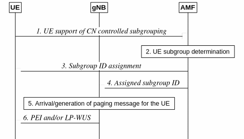
Figure 9.2.5-1: Procedure for CN
controlled subgrouping
1. The UE indicates its support of CN controlled subgrouping via NAS
signalling.
2. If the UE supports CN controlled subgrouping, the AMF determines
the subgroup ID assignment for the UE.
3. The AMF sends subgroup ID to the UE via NAS signalling.
4. The AMF informs the gNB about the CN assigned subgroup ID for
paging the UE in RRC_IDLE/ RRC_INACTIVE state.
5. When the paging message for the UE is received from the CN or is
generated by the gNB, the gNB determines the PO and the associated
PEI and/or LP-WUS occasion for the UE.
6. Before the UE is paged in the PO, the gNB transmits the associated
PEI and/or LP-WUS and indicates the corresponding CN controlled
subgroup of the UE that is to be paged using PEI and/or LP-WUS.
UE ID based subgrouping: For UE ID based subgrouping, the gNB
and UE can determine the subgroup ID based on the UE ID and the total
number of subgroups for UE ID based subgrouping in the cell. The
total number of subgroups for UE ID based subgrouping is decided by
the gNB for each cell and can be different in different cells. Up to
31 subgroups are supported for LP-WUS. The following figure describes
the procedure for UE ID based subgrouping:
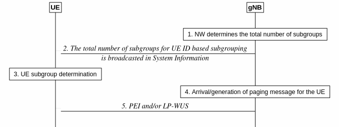
Figure 9.2.5-2: Procedure for UE ID
based subgrouping
1. The gNB determines the total number of subgroups for UE ID based
subgrouping in a cell.
2. The gNB broadcasts the total number of subgroups for UE ID based
subgrouping in a cell.
3. UE determines its subgroup in a cell.
4. When paging message for the PEI and/or LP-WUS capable UE is
received from the CN at the gNB or is generated by the gNB, the gNB
determines the PO and the associated PEI and/or LP-WUS occasion for
the UE.
5. Before the UE is paged in the PO, the gNB transmits the associated
PEI and/or LP-WUS and indicates the corresponding subgroup derived
based on UE ID of the UE that is paged using PEI and/or LP-WUS.
Paging adaptation
for network energy saving for UEs in RRC_IDLE and
RRC_INACTIVE: in order to increase gNB sleeping time, the value
of N and Ns are extended to increase the number of POs per PF with
sparser PFs. The UE supporting paging adaptation shall monitor PDCCH
in POs separately signalled for paging adaptation, if configured. The
UE supporting paging adaptation and PEI and/or LP-WUS can monitor
PEIs and/or LP-WUS separately signalled for paging adaptation, if
configured.
9.2.6 Random Access
Procedure
The random access
procedure is triggered by a number of events:
- Initial access from RRC_IDLE;
- RRC Connection Re-establishment procedure;
- DL or UL data arrival, during RRC_CONNECTED or during RRC_INACTIVE
while SDT procedure (see clause 18.0) is ongoing, when UL
synchronisation status is "non-synchronised";
- UL data arrival, during RRC_CONNECTED or during RRC_INACTIVE while
SDT procedure is ongoing, when there are no PUCCH resources for SR
available;
- Handover, except for when RACH-less HO is configured;
- SR failure;
- Explicit request by RRC upon synchronous reconfiguration;
- RRC Connection Resume procedure from RRC_INACTIVE;
- To establish time alignment for a primary or a secondary TAG;
- Request for Other SI (see clause 7.3);
- Request for OD-SIB1 (see clause 7.3);
- Beam failure recovery;
- Consistent UL LBT failure on SpCell;
- SDT in RRC_INACTIVE (see clause 18);
- Positioning purpose during RRC_CONNECTED requiring random access
procedure, e.g., when timing advance is needed for UE positioning;
- Early UL synchronization with an LTM candidate cell;
- RACH-based LTM cell switch.
Two types of random
access procedure are supported: 4-step RA type with MSG1 and 2-step
RA type with MSGA. Both types of RA procedure support
contention-based random access (CBRA) and contention-free random
access (CFRA) as shown on Figure 9.2.6-1 below.
The UE selects the
type of random access at initiation of the random access procedure
based on network configuration:
- when CFRA resources are not configured, an RSRP threshold is used
by the UE to select between 2-step RA type and 4-step RA type;
- when CFRA resources for 4-step RA type are configured, UE performs
random access with 4-step RA type;
- when CFRA resources for 2-step RA type are configured, UE performs
random access with 2-step RA type.
The network does not
configure CFRA resources for 4-step and 2-step RA types at the same
time for a Bandwidth Part (BWP). CFRA with 2-step RA type is only
supported for handover.
The MSG1 of the
4-step RA type consists of a preamble on PRACH. After MSG1
transmission, the UE monitors for a response from the network within
a configured window. For CFRA, dedicated preamble for MSG1
transmission is assigned by the network and upon receiving random
access response from the network, the UE ends the random access
procedure as shown in Figure 9.2.6-1(c). For CBRA, upon reception of
the random access response, the UE sends MSG3 using the UL grant
scheduled in the response and monitors contention resolution as shown
in Figure 9.2.6-1(a). If contention resolution is not successful
after MSG3 (re)transmission(s), the UE goes back to MSG1
transmission.
The MSGA of the
2-step RA type includes a preamble on PRACH and a payload on PUSCH.
After MSGA transmission, the UE monitors for a response from the
network within a configured window. For CFRA, dedicated preamble and
PUSCH resource are configured for MSGA transmission and upon
receiving the network response, the UE ends the random access
procedure as shown in Figure 9.2.6-1(d). For CBRA, if contention
resolution is successful upon receiving the network response, the UE
ends the random access procedure as shown in Figure 9.2.6-1(b); while
if fallback indication is received in MSGB, the UE performs MSG3
transmission using the UL grant scheduled in the fallback indication
and monitors contention resolution as shown in Figure 9.2.6-2. If
contention resolution is not successful after MSG3
(re)transmission(s), the UE goes back to MSGA transmission.
If the random access
procedure with 2-step RA type is not completed after a number of MSGA
transmissions, the UE can be configured to switch to CBRA with 4-step
RA type.
For the random
access procedure towards an LTM candidate cell for early UL TA
acquisition, CFRA triggered by a PDCCH order is used. The UE sends
MSG1 towards the cell without monitoring for a response from it as
shown in Figure 9.2.6-1 (e). To support UE power ramping, the UE may
perform MSG1 retransmission as indicated by the network.
(a) CBRA with 4-step RA
type (b) CBRA with 2-step RA type
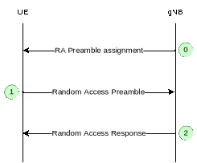
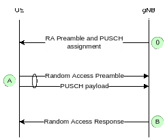
(c) CFRA with 4-step RA
type (d) CFRA with 2-step RA type
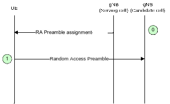
(e) CFRA without network response
with 4-step RA type
Figure 9.2.6-1: Random Access
Procedures
Figure 9.2.6-2: Fallback for CBRA
with 2-step RA type
For random access in
a cell configured with SUL, the network can explicitly signal which
carrier to use (UL or SUL). Otherwise, the UE selects the SUL carrier
if and only if the measured quality of the DL is lower than a
broadcast threshold. UE performs carrier selection before selecting
between 2-step and 4-step RA type. The RSRP threshold for selecting
between 2-step and 4-step RA type can be configured separately for UL
and SUL. Once started, all uplink transmissions of the random access
procedure remain on the selected carrier.
The network can
associate a set of RACH resources with feature(s) applicable to a
Random Access procedure: Network Slicing (see clause 16.3), (e)RedCap
(see clause 16.13), SDT (see clause 18), and NR coverage enhancement
(see clause 19). A set of RACH resources associated with a feature is
only valid for random access procedures applicable to at least that
feature; and a set of RACH resources associated with several features
is only valid for random access procedures having at least all of
these features. The UE selects the set(s) of applicable RACH
resources, after uplink carrier (i.e. NUL or SUL) and BWP selection
and before selecting the RA type.
When CA is
configured, random access procedure with 2-step RA type is only
performed on SpCell while contention resolution can be
cross-scheduled by the SpCell.
When CA is
configured, for random access procedure with 4-step RA type, the
first three steps of CBRA always occur on the SpCell while contention
resolution (step 4) can be cross-scheduled by the SpCell. The three
steps of a CFRA started on the SpCell remain on the SpCell. CFRA on
SCell can only be initiated by the gNB to establish timing advance
for a secondary TAG: the procedure is initiated by the gNB with a
PDCCH order (step 0) that is sent on an activated SCell of the
secondary TAG, preamble transmission (step 1) takes place on the
SCell, and Random Access Response (step 2) takes place on SpCell.
When two TAG IDs are
configured for the serving cell, the TAG for which the TA command is
applied is indicated in Random Access Response message or in MSGB. To
establish timing advance for the other PTAG, CFRA is initiated by the
gNB with a PDCCH order.
9.2.7 Radio Link Failure
In RRC_CONNECTED,
the UE performs Radio Link Monitoring (RLM) in the active BWP based
on reference signals (SSB/CSI-RS) and signal quality thresholds
configured by the network. SSB-based
RLM is based on the CD-SSB associated to the initial DL BWP and can
be configured for the initial DL BWP, for DL BWPs containing the
CD-SSB associated to the initial DL BWP, and, if supported, for DL
BWPs not containing the CD-SSB associated to the initial DL BWP.
Besides, SSB-based RLM can be also performed based on a non-cell
defining SSB, if configured for the active DL BWP. RLM can be also
performed based on CSI-RS, if configured for the active DL BWP. In
case of DAPS handover, the UE continues the detection
of radio link failure at the
source cell until the
successful completion of the random access procedure to the target
cell.
The UE declares
Radio Link Failure (RLF) when one of the following criteria are met:
- Expiry of a radio problem timer started after indication of radio
problems from the physical layer (if radio problems are recovered
before the timer is expired, the UE stops the timer); or
- Expiry of a timer started upon triggering a measurement report for
a measurement identity for which the timer has been configured while
another radio problem timer is running; or
- Random access procedure failure; or
- RLC failure; or
- Detection of consistent uplink LBT failures for operation with
shared spectrum channel access as described in 5.6.1; or
- For IAB-MT, the reception of a BH RLF indication received from its
parent node.
After RLF is
declared, the UE:
- stays in RRC_CONNECTED;
- in case of DAPS handover, for RLF in the source cell:
- stops any data transmission or reception via the source link and
releases the source link, but maintains the source RRC configuration;
- if handover failure is then declared at the target cell, the UE:
- selects a suitable cell and then initiates RRC re-establishment;
- enters RRC_IDLE if a suitable cell was not found within a certain
time after handover failure was declared.
- in case of CHO, for RLF in the source cell:
- selects a suitable cell and if the selected cell is a CHO candidate
and if network configured the UE to try CHO after RLF then the UE
attempts CHO execution once, otherwise re-establishment is performed;
- enters RRC_IDLE if a suitable cell was not found within a certain
time after RLF was declared.
- in case of MCG LTM, for RLF in the source cell:
- selects a suitable cell and if the selected cell is an LTM
candidate cell and if network configured the UE to try LTM after RLF
then the UE attempts RACH-based LTM execution once, otherwise
re-establishment is performed;
- enters RRC_IDLE if a suitable cell was not found within a certain
time after RLF was declared.
- otherwise, for RLF in the serving cell or in case of DAPS handover,
for RLF in the target cell before releasing the source cell:
- selects a suitable cell and then initiates RRC re-establishment;
- enters RRC_IDLE if a suitable cell was not found within a certain
time after RLF was declared.
When RLF occurs at the IAB BH link, the same mechanisms and
procedures are applied as for the access link. This includes BH RLF
detection and RLF recovery.
The IAB-DU can
transmit a BH RLF detection indication to its child nodes in the
following cases:
- The collocated IAB-MT initiates RRC re-establishment;
- The collocated IAB-MT is dual-connected, detects BH RLF on a BH
link, and cannot perform UL re-routing for any traffic. This includes
the scenario of an IAB-node operating in EN-DC or NR-DC, which uses
only one link for backhauling and has BH RLF on this BH link;
- The collocated IAB-MT has received a BH RLF detection indication
from a parent node, and there is no remaining backhaul link that is
unaffected by the BH RLF condition indicated.
Upon reception of
the BH RLF detection indication, the child node may perform local
rerouting for upstream traffic, if possible, over an available BH
link.
If the IAB-DU has
transmitted a BH RLF detection indication to a child node due to an
RLF condition on the collocated IAB-MT's parent link, and the
collocated IAB-MT's subsequent RLF recovery is successful, the IAB-DU
may transmit a BH RLF recovery indication to this child node.
If the IAB-DU has
transmitted a BH RLF detection indication to a child node due to the
reception of a BH RLF detection indication by the collocated IAB-MT,
and the collocated IAB-MT receives a BH RLF recovery indication, the
IAB-DU may also transmit a BH RLF recovery indication to this child
node.
Upon reception of
the BH RLF recovery indication, the child node reverts the actions
triggered by the reception of the previous BH RLF detection
indication.
In case the RRC
re-establishment procedure fails, the IAB-node may transmit a BH RLF
indication to its child nodes. The BH RLF detection indication, BH
RLF recovery indication and BH RLF indication are transmitted as BAP
Control PDUs.
9.2.8 Beam failure detection and recovery
For beam failure
detection, the gNB configures the UE with beam failure detection
reference signals (SSB or CSI-RS) and the UE declares beam failure
when the number of beam failure instance indications from the
physical layer reaches a configured threshold before a configured
timer expires. For beam failure detection in multi-TRP operation, the
gNB configures the UE with two sets of beam failure detection
reference signals, and the UE declares beam failure for a TRP /
BFD-RS set when the number of beam failure instance indications
associated with the corresponding set of beam failure detection
reference signals from the physical layer reaches a configured
threshold before a configured timer expires.
SSB-based
Beam Failure Detection is based on the CD-SSB associated to the
initial DL BWP and can be configured for the initial DL BWPs, for DL
BWPs containing the CD-SSB associated to the initial DL BWP, and, if
supported, for DL BWPs not containing the CD-SSB associated to the
initial DL BWP. Besides, SSB-based Beam Failure Detection can be also
performed based on the non-cell defining SSB, if configured for the
active DL BWP. Beam Failure Detection can be also performed based on
CSI-RS, if configured for the active DL BWP.
After beam failure
is detected on SpCell, the UE:
- triggers beam failure recovery by initiating a Random Access
procedure on the SpCell;
- selects a suitable beam to perform beam failure recovery (if the
gNB has provided dedicated Random Access resources for certain beams,
those will be prioritized by the UE).
- includes an indication of a beam failure on SpCell in a BFR MAC CE
if the Random Access procedure involves contention-based random
access.
Upon completion of
the Random Access procedure, beam failure recovery for SpCell is
considered complete.
After beam failure
is detected on an SCell, the UE:
- triggers beam failure recovery by initiating a transmission of a
BFR MAC CE for this SCell;
- selects a suitable beam for this SCell (if available) and indicates
it along with the information about the beam failure in the BFR MAC
CE.
Upon reception of a
PDCCH indicating an uplink grant for a new transmission for the HARQ
process used for the transmission of the BFR MAC CE, beam failure
recovery for this SCell is considered complete.
After beam failure
is detected for a BFD-RS set of a Serving Cell, the UE:
- triggers beam failure recovery by initiating a transmission of a
BFR MAC CE for this BFD-RS set;
- selects a suitable beam for this BFD-RS set (if available) and
indicates whether the suitable (new) beam is found or not along with
the information about the beam failure in the BFR MAC CE for this
BFD-RS set.
Upon reception of a
PDCCH indicating an uplink grant for a new transmission for the HARQ
process used for the transmission of the BFR MAC CE for this BFD-RS
set, beam failure recovery for this BFD-RS set is considered
complete.
After beam failure
is detected for both BFD-RS sets of SpCell concurrently, the UE:
- triggers beam failure recovery by initiating a Random Access
procedure on the SpCell;
- selects a suitable beam for each failed BFD-RS set (if available)
and indicates whether the suitable (new) beam is found or not along
with the information about the beam failure in the BFR MAC CE for
each failed BFD-RS set;
- upon completion of the Random Access procedure, beam failure
recovery for both BFD-RS sets of SpCell is considered complete.
9.2.9 Timing Advance
In RRC_CONNECTED,
the gNB is responsible for maintaining the timing advance to keep the
L1 synchronised. Serving cells having UL to which the same timing
advance applies and using the same timing reference cell are grouped
in a TAG. Each TAG contains at least one serving cell with configured
uplink, and the mapping of each serving cell to a TAG is configured
by RRC.
For the primary TAG
the UE uses the SpCell as timing reference, except with shared
spectrum channel access where an SCell can also be used in certain
cases (see clause 7.1, TS 38.133 [13]). In a secondary TAG, the UE
may use any of the activated SCells of this TAG as a timing reference
cell, but should not change it unless necessary.
Timing advance
updates are signalled by the gNB to the UE via MAC CE commands. Such
commands restart a TAG-specific timer which indicates whether the L1
can be synchronised or not: when the timer is running, the L1 is
considered synchronised, otherwise, the L1 is considered
non-synchronised (in which case uplink transmission can only take
place through MSG1/MSGA).
When two TAG IDs are
configured for the SpCell, both TAGs are regarded as primary TAG.
9.2.10 Extended DRX for RRC_IDLE and RRC_INACTIVE
When extended DRX
(eDRX) is used, the following applies:
- For RRC_INACTIVE, eDRX configuration for RAN paging is decided and
configured by NG-RAN. In RRC_INACTIVE the UE monitors both RAN and CN
paging;
- For RRC_IDLE, eDRX for CN paging is configured by upper layers. In
RRC_IDLE the UE monitors only CN paging;
- Information on whether eDRX for CN paging and RAN paging is allowed
on the cell is provided separately in system information;
- The maximum value of the eDRX cycle is 10485.76 seconds (2.91
hours) while the minimum value of the eDRX cycle is 2.56 seconds;
- The hyper SFN (H-SFN) is broadcast by the cell and increments by
one when the SFN wraps around;
- Paging Hyperframe (PH) refers to the H-SFN in which the UE starts
monitoring paging according to DRX during a Paging Time Window (PTW).
The PH and PTW are determined based on a formula (see TS 38.304 [10])
that is known by the AMF, UE and NG-RAN;
- H-SFN, PH and PTW are used if the eDRX cycle is greater than 10.24
seconds;
- When the RRC_IDLE eDRX cycle is longer than the system information
modification period, the UE verifies that stored system information
remains valid before resuming/establishing an RRC connection.
NOTE: When emergency PDU session resources are established and if the
gNB decides to release the UE into RRC_INACTIVE state, it should not
configure the Extended DRX. The gNB recognizes the emergency PDU
session resources based on special ARP value of a QoS flow as
specified in TS 23.501 [3].
9.3 Inter RAT
9.3.1 NR-E-UTRA mobility: Intra 5GC
9.3.1.1 Cell Reselection
Cell reselection is
characterised by the following:
- Cell reselection between NR RRC_IDLE and E-UTRA RRC_IDLE is
supported;
- Cell reselection from NR RRC_INACTIVE to E-UTRA RRC_IDLE is
supported.
9.3.1.2 Handover
Inter RAT mobility
is characterised by the following:
- The Source RAT configures Target RAT measurement and reporting.
- The source RAT decides on the preparation initiation and provides
the necessary information to the target RAT in the format required by
the target RAT:
- For handover preparation from E-UTRA to NR, the source RAT issues a
handover preparation request message to the target RAT passing a
transparent RRC container with necessary information to prepare the
handover at the target side. The information for the target RAT is
the same type as specified in clause 9.2.3.2.1 including the current
QoS flow to DRB mapping applied to the UE and RRM configuration.
- The details of RRM configuration are the same type as specified for
NR in clause 9.2.3.2.1 including beam measurement information for the
listed cells if the measurements are available.
- Radio resources are prepared in the target RAT before the handover.
- The RRC reconfiguration message from the target RAT is delivered to
the source RAT via a transparent container, and is passed to the UE
by the source RAT in the handover command:
- The inter-RAT handover command message carries the same type of
information required to access the target cell as specified for NR
baseline handover in clause 9.2.3.2.1.
- The in-sequence and lossless handover is supported for the handover
between gNB and ng-eNB.
- Both Xn and NG based inter-RAT handover between NG-RAN nodes is
supported. Whether the handover is over Xn or CN is transparent to
the UE.
- In order to keep the SDAP and PDCP configurations for in-sequence
and lossless inter-RAT handover, delta-configuration for the radio
bearer configuration is used.
9.3.1.3 Measurements
Inter RAT
measurements in NR for this use case are limited to E-UTRA.
Whether a
measurement is non-gap-assisted or gap-assisted depends on the
capability of the UE and the current operating frequency:
- For E-UTRA Inter RAT measurement, if the measurement gap
requirement information is reported by the UE, a measurement gap
configuration may be provided according to the information.
Otherwise, a measurement gap configuration is always provided when:
- The UE only supports per-UE measurement gaps; or
- The UE supports per-FR measurement gaps and at least one of the NR
serving cells is in FR1.
9.3.2 NR-E-UTRA mobility: From 5GC to EPC
9.3.2.1 Cell Reselection
Cell reselection is
characterised by the following:
- Cell reselection between NR RRC_IDLE and E-UTRA RRC_IDLE is
supported;
- Cell reselection from NR RRC_INACTIVE to E-UTRA RRC_IDLE is
supported.
9.3.2.2 Handover and redirection
The source NG-RAN
node decides between handover or redirection to EPS based on radio
criteria and availability of the N26 interface.
NOTE: Information about the availability of the N26 interface may be
configured by OAM at the NG-RAN.
Inter RAT handover
is characterised by the following:
- The Source RAT configures Target RAT measurement and reporting.
- The source RAT decides on the preparation initiation and provides
the necessary information to the target RAT in the format required by
the target RAT.
- Radio resources are prepared in the target RAT before the handover.
- The RRC reconfiguration message from the target RAT is delivered to
the source RAT via a transparent container, and is passed to the UE
by the source RAT in the handover command.
- In-sequence and lossless handovers are not supported.
- Security procedures for handover to E-UTRA/EPC should follow E-UTRA
handover procedures.
9.3.2.3 Measurements
Inter RAT
measurements in NR for this use case are limited to E-UTRA.
Whether a
measurement is non-gap-assisted or gap-assisted depends on the
capability of the UE and the current operating frequency:
- For E-UTRA Inter RAT measurement, if the measurement gap
requirement information is reported by the UE, a measurement gap
configuration may be provided according to the information.
Otherwise, a measurement gap configuration is always provided when:
- The UE only supports per-UE measurement gaps; or
- The UE supports per-FR measurement gaps and at least one of the NR
serving cells is in FR1.
9.3.2.4 Data Forwarding for the Control Plane
Control plane
handling for inter-System data forwarding from 5GS to EPS follows the
following key principles:
- Only forwarding of downlink data is supported.
- PDU session information at the serving NG-RAN node contains mapping
information per QoS Flow to a corresponding E-RAB.
- At handover preparation, the source NG-RAN node shall decide which
mapped E-RABs are proposed to be subject to data forwarding and
provide this information in the source-to-target container to the
target eNB. Based on availability of direct data forwarding path the
source NG-RAN node may request to apply direct data forwarding by
indicating direct data forwarding path availability to the 5GC.
- The target eNB assigns forwarding TEID/TNL address(es) for the
E-RAB(s) for which it accepts data forwarding.
- In case of indirect data forwarding, a single data forwarding
tunnel is established between the source NG-RAN node and UPF per PDU
session for which at least data for a single QoS Flow is subject to
data forwarding.
- In case of direct data forwarding, the source NG-RAN node receives
a TEID/TNL address for each E-RAB accepted for data forwarding as
assigned by the target eNB.
9.3.2.5 Data Forwarding for the User Plane
In case of indirect
data forwarding, user plane handling for inter-System data forwarding
from 5GS to EPS follows the following key principles:
- For the QoS flows accepted for data forwarding, the NG-RAN node
initiates data forwarding to the UPF by the corresponding PDU session
data forwarding tunnel(s).
- The UPF maps forwarded data received from the per PDU session data
forwarding tunnel(s) to the mapped EPS bearer(s) removing the QFI.
- Handling of end marker packets:
- The source NG-RAN node receives one or several end marker packets
per PDU session from the UPF. When there are no more data packets to
be forwarded for QoS flows mapped to an E-RAB, the source NG-RAN node
sends one or several end markers including one QFI (by means of the
PDU Session User Plane protocol TS 38.415 [30]) of those QoS flows
mapped to that E-RAB and sends the end marker packets to the UPF over
the PDU session tunnel. From the included QFI in the end markers and
its mapping to an EPS bearer ID, the UPF knows which EPS bearer
tunnel it needs to forward the end-markers to the SGW. The QFI is
removed in the end marker packets sent to the SGW.
In case of direct data forwarding, user plane handling for
inter-System data forwarding from 5GS to EPS follows the following
key principles:
- For the QoS flows accepted for data forwarding, the source NG-RAN
node maps data received from the NG-U PDU session tunnel to the
respective E-RAB data forwarding tunnel and forwards each user packet
as PDCP SDU without PDCP SN and QFI information.
- The source NG-RAN node receives one or several GTP-U end marker
packets per PDU session from the UPF and replicates the end marker
packets into each E-RAB data forwarding tunnel when no more user data
packets are to be forwarded over that tunnel.
9.3.3 NR-E-UTRA mobility: From EPC to 5GC
9.3.3.1 Data Forwarding for the Control Plane
Control plane
handling for inter-System data forwarding from EPS to 5GS follows the
following key principles:
- Only forwarding of downlink data is supported.
- The target NG-RAN node receives in the Handover Request message the
mapping between E-RAB ID(s) and QoS Flow ID(s). It decides whether to
accept the data forwarding for E-RAB IDs proposed for forwarding
within the Source NG-RAN Node to Target NG-RAN Node Transparent
Container. Based on availability of direct data forwarding path the
source eNB may request to apply direct data forwarding by indicating
direct data forwarding availability to the CN.
- In case of indirect data forwarding:
- The target NG-RAN node assigns a TEID/TNL address for each PDU
session for which at least one QoS flow is involved in the accepted
data forwarding.
- The target NG-RAN node sends the Handover Request Acknowledge
message in which it indicates the list of PDU sessions and QoS flows
for which it has accepted the data forwarding.
- A single data forwarding tunnel is established between the UPF and
the target NG-RAN node per PDU session for which at least data for a
single QoS Flow is subject to data forwarding.
- The source eNB receives in the Handover Command message the list of
E-RAB IDs for which the target NG-RAN node has accepted data
forwarding of corresponding PDU sessions and QoS flows.
- In case of direct data forwarding:
- The source eNB indicates direct path availability to the CN. The
source eNB's decision is indicated by the CN to the target NG-RAN
node.
- The target NG-RAN node assigns a TEID/TNL address for each E-RAB it
accepted for data forwarding.
- The source eNB receives in the Handover Command message the list of
E-RAB IDs for which the target NG-RAN node has accepted data
forwarding.
9.3.3.2 Data Forwarding for the User Plane
In case of indirect
data forwarding, user plane handling for inter-System data forwarding
from EPS to 5GS follows the following key principles:
- For each E-RAB accepted for data forwarding, the source eNB
forwards data to the SGW in the corresponding E-RAB tunnel and the
SGW forwards the received data to the UPF in the E-RAB tunnel.
- The UPF maps the forwarded data received from an E-RAB tunnel to
the corresponding mapped PDU session tunnel, adding a QFI value (by
means of the PDU Session User Plane protocol TS 38.415 [30]).
- The target NG-RAN node maps a forwarded packet to the corresponding
DRB based on the received QFI value. It prioritizes the forwarded
packets over the fresh packets for those QoS flows.
- Handling of end marker packets:
- The UPF/PGW-U sends one or several end marker packets to the SGW
per EPS bearer. The SGW forwards the received end markers per EPS
bearer to the source eNB. When there are no more data packets to be
forwarded for an E-RAB, the source eNB forwards the received end
markers in the EPS bearer tunnel to the SGW and the SGW forwards them
to the UPF. The UPF adds one QFI (by means of the PDU Session User
Plane protocol TS 38.415 [30]) among the QoS flows mapped to that
E-RAB to the end markers and sends those end markers to the target
NG-RAN node in the per PDU session tunnel. When the target NG-RAN
node receives an end marker with a QFI added, the target NG-RAN node
starts to transmit the data packets of all QoS flows mapped to the
corresponding E-RAB received from the core network towards the UE.
In case of direct data forwarding, user plane handling for
inter-System data forwarding from EPS to 5GS follows the following
key principles:
- For each E-RAB accepted for data forwarding, the source node
forwards data to the target NG-RAN node in the corresponding E-RAB
data forwarding tunnel.
- Until a GTP-U end marker packet is received, the target NG-RAN node
prioritizes the forwarded packets over the fresh packets for those
QoS flows which are involved in the accepted data forwarding.
NOTE: The target NG-RAN node should remove the forwarded PDCP SNs if
received in the forwarded GTP-U packets, and deliver the forwarded
PDCP SDUs to the UE.
9.3.4 NR-UTRA mobility
9.3.4.1 Handover with SRVCC operation
The source NR node
decides to handover the UE with ongoing IMS voice from NR to UTRAN
according the following principles:
- The source NR node determines that the UE supports UTRA and
requests the UE to send its UTRA radio access capabilities to the
NG-RAN;
- The source NR node configures target RAT measurement and reporting;
- The source NR node determines based on the radio conditions and the
indication that SRVCC operation is possible that handover to UTRAN
should be initiated;
- The source NR node initiates the handover preparation only for the
ongoing IMS voice and provides the indication to AMF that the
handover is towards UTRAN together with the target UTRAN Node ID. The
source NR node also provides an indication to the target UTRAN that
the incoming handover originates from 5G. The SRVCC proceeds as
specified in TS 23.216 [34];
- The source NR node ensures that the size of the source-to-target
container does not exceed the limits that can be handled by the
interfaces involved in the handover;
NOTE: For SRVCC handover, the size limit of the inter-node
source-to-target container is 2560 octets (see AN-APDU in TS 29.002
[44]).
- Radio resources are prepared in the target RAT before the handover;
- The RRC reconfiguration message from the target RAT is delivered to
the source NR node via a transparent container and is passed to the
UE by the source NR node in the handover command;
- In-sequence and lossless handovers are not supported;
- Only voice bearer is handed over to target RAT;
- Security procedures for handover to UTRA follows the procedures as
specified in TS 33.501 [5];
- Only handover to UTRA-FDD is supported.
9.3.4.2 Measurements
Inter RAT
measurements are performed for UTRA.
For a UE configured with UTRA Inter RAT measurements, a measurement
gap configuration is always provided when:
- The UE only supports per-UE measurement gaps; or
- The UE supports per-FR measurement gaps and at least one of the NR
serving cells is in FR1.
9.4 Roaming and
Access Restrictions
The roaming and
access restriction information for a UE includes information on
restrictions to be applied for subsequent mobility action during
CM-CONNECTED state. It may be provided by the AMF and also may be
updated by the AMF later.
It includes the
forbidden RAT, the forbidden area and the service area restrictions
as specified in TS 23.501 [3]. It also includes serving PLMN/SNPN and
may include a list of equivalent PLMNs or a list of equivalent SNPNs.
It may also include PNI-NPN mobility restrictions (i.e. list of CAGs
allowed for the UE and whether the UE can also access non-CAG cells).
The gNB shall consider that roaming or access to CAG cells is only
allowed if PNI-NPN mobility information is available for the UE.
Upon receiving the
roaming and access restriction information for a UE, if applicable,
the gNB should use it to determine whether to apply restriction
handling for subsequent mobility action, e.g., handover, redirection.
If the roaming and
access restriction information is not available for a UE at the gNB,
the gNB shall consider that there is no restriction for subsequent
mobility actions except for the PNI-NPN mobility as described in TS
23.501 [3].
Only if received
over NG or Xn signalling, the roaming and access restriction
information shall be propagated over Xn by the source gNB during Xn
handover or by the old gNB during UE context retrieval. If the Xn
handover results in a change of serving PLMN (to an equivalent PLMN),
the source gNB shall replace the serving PLMN with the identity of
the target PLMN and move the serving PLMN to the equivalent PLMN
list, before propagating the roaming and access restriction
information. If the Xn handover results in a change of serving SNPN
(to an equivalent SNPN), the source gNB shall replace the serving
SNPN with the identity of the target SNPN and move the serving SNPN
to the equivalent SNPN list, before propagating the roaming and
access restriction information.
If NG-RAN nodes with different versions of the XnAP or NGAP protocol
are deployed, information provided by the 5GC within the NGAP
Mobility Restriction List may be lost in the course of Xn mobility.
In order to avoid such loss of information at Xn handover or UE
context retrieval due to a source NG-RAN node or an old NG-RAN node
not able to recognise the entire content, the source NG-RAN node or
the old NG-RAN node may provide an 5GC Mobility Restriction List
Container to the target NG-RAN node or the new NG-RAN node,
containing the Mobility Restriction List as received from the 5GC.
The target NG-RAN node or the new NG-RAN node shall use the
information contained in the 5GC Mobility Restriction List Container
as the Mobility Restriction List, except for the Serving PLMN/SNPN
and the Equivalent PLMNs/SNPNs, which the NG-RAN node shall use from
the XnAP Mobility Restriction List. The 5GC Mobility Restriction List
Container may be propagated at future Xn handover and UE context
retrieval.
10 Scheduling
10.1 Basic Scheduler Operation
In order to utilise
radio resources efficiently, MAC in gNB includes dynamic resource
schedulers that allocate physical layer resources for the downlink
and the uplink. In this clause, an overview of the scheduler is given
in terms of scheduler operation, signalling of scheduler decisions,
and measurements.
Scheduler Operation:
- Taking into account the UE buffer status and the QoS requirements
of each UE and associated radio bearers, schedulers assign resources
between UEs;
- Schedulers may assign resources taking account the radio conditions
at the UE identified through measurements made at the gNB and/or
reported by the UE;
- Resource assignment consists of radio resources (resource blocks).
Signalling of
Scheduler Decisions:
- UEs identify the resources by receiving a scheduling (resource
assignment) channel.
Measurements to
Support Scheduler Operation:
- Uplink buffer status reports (measuring the data that is buffered
in the logical channel queues in the UE) are used to provide support
for QoS-aware packet scheduling;
- Power headroom reports (measuring the difference between the
nominal UE maximum transmit power and the estimated power for uplink
transmission) are used to provide support for power aware packet
scheduling.
10.2 Downlink Scheduling
In the downlink, the
gNB can dynamically allocate resources to UEs via the C-RNTI on
PDCCH(s). A UE always monitors the PDCCH(s) in order to find possible
assignments when its downlink reception is enabled (activity governed
by DRX and cell DTX when configured). When CA is configured, the same
C-RNTI applies to all serving cells.
The gNB may pre-empt
an ongoing PDSCH transmission to one UE with a latency-critical
transmission to another UE. The gNB can configure UEs to monitor
interrupted transmission indications using INT-RNTI on a PDCCH. If a
UE receives the interrupted transmission indication, the UE may
assume that no useful information to that UE was carried by the
resource elements included in the indication, even if some of those
resource elements were already scheduled to this UE.
In addition, with
Semi-Persistent Scheduling (SPS), the gNB can allocate downlink
resources for the initial HARQ transmissions to UEs: RRC defines the
periodicity of the configured downlink assignments while PDCCH
addressed to CS-RNTI can either signal and activate the configured
downlink assignment, or deactivate it; i.e. a PDCCH addressed to
CS-RNTI indicates that the downlink assignment can be implicitly
reused according to the periodicity defined by RRC, until
deactivated.
NOTE: When required, retransmissions are explicitly scheduled on
PDCCH(s).
The dynamically
allocated downlink reception overrides the configured downlink
assignment in the same serving cell, if they overlap in time.
Otherwise a downlink reception according to the configured downlink
assignment is assumed, if activated.
The UE may be
configured with up to 8 active configured downlink assignments for a
given BWP of a serving cell. When more than one is configured:
- The network decides which of these configured downlink assignments
are active at a time (including all of them); and
- Each configured downlink assignment is activated separately using a
DCI command and deactivation of configured downlink assignments is
done using a DCI command, which can either deactivate a single
configured downlink assignment or multiple configured downlink
assignments jointly.
10.3 Uplink Scheduling
In the uplink, the
gNB can dynamically allocate resources to UEs via the C-RNTI on
PDCCH(s). A UE always monitors the PDCCH(s) in order to find possible
grants for uplink transmission when its downlink reception is enabled
(activity governed by DRX and cell DTX when configured). When CA is
configured, the same C-RNTI applies to all serving cells.
The gNB may cancel a
PUSCH transmission, or a repetition of a PUSCH transmission, or an
SRS transmission of a UE for another UE with a latency-critical
transmission. The gNB can configure UEs to monitor cancelled
transmission indications using CI-RNTI on a PDCCH. If a UE receives
the cancelled transmission indication, the UE shall cancel the PUSCH
transmission from the earliest symbol overlapped with the resource or
the SRS transmission overlapped with the resource indicated by
cancellation (see clause 11.2A of TS 38.213 [38]).
In addition, with
Configured Grants, the gNB can allocate uplink resources for the
initial HARQ transmissions and HARQ retransmissions to UEs. Two types
of configured uplink grants are defined:
- With Type 1, RRC directly provides the configured uplink grant
(including the periodicity).
- With Type 2, RRC defines the periodicity of the configured uplink
grant while PDCCH addressed to CS-RNTI can either signal and activate
the configured uplink grant, or deactivate it; i.e. a PDCCH addressed
to CS-RNTI indicates that the uplink grant can be implicitly reused
according to the periodicity defined by RRC, until deactivated.
If the UE is not
configured with enhanced intra-UE overlapping resources
prioritization, the dynamically allocated uplink transmission
overrides the configured uplink grant in the same serving cell, if
they overlap in time. Otherwise an uplink transmission according to
the configured uplink grant is assumed, if activated.
If the UE is
configured with enhanced intra-UE overlapping resources
prioritization, in case a configured uplink grant transmission
overlaps in time with dynamically allocated uplink transmission or
with another configured uplink grant transmission in the same serving
cell, the UE prioritizes the transmission based on the comparison
between the highest priority of the logical channels that have data
to be transmitted and which are multiplexed or can be multiplexed in
MAC PDUs associated with the overlapping resources. Similarly, in
case a configured uplink grant transmissions or a dynamically
allocated uplink transmission overlaps in time with a scheduling
request transmission, the UE prioritizes the transmission based on
the comparison between the priority of the logical channel which
triggered the scheduling request and the highest priority of the
logical channels that have data to be transmitted and which are
multiplexed or can be multiplexed in MAC PDU associated with the
overlapping resource. In case the MAC PDU associated with a
deprioritized transmission has already been generated, the UE keeps
it stored to allow the gNB to schedule a retransmission. The UE may
also be configured by the gNB to transmit the stored MAC PDU as a new
transmission using a subsequent resource of the same configured
uplink grant configuration when an explicit retransmission grant is
not provided by the gNB.
Retransmissions
other than repetitions are explicitly allocated via PDCCH(s) or via
configuration of a retransmission timer.
The UE may be
configured with up to 12 active configured uplink grants for a given
BWP of a serving cell. When more than one is configured, the network
decides which of these configured uplink grants are active at a time
(including all of them). Each configured uplink grant can either be
of Type 1 or Type 2. For Type 2, activation and deactivation of
configured uplink grants are independent among the serving cells.
When more than one Type 2 configured grant is configured, each
configured grant is activated separately using a DCI command and
deactivation of Type 2 configured grants is done using a DCI command,
which can either deactivate a single configured grant configuration
or multiple configured grant configurations jointly.
When SUL is
configured, the network should ensure that an active configured
uplink grant on SUL does not overlap in time with another active
configured uplink grant on the other UL configuration.
For both dynamic grant and configured grant, for a transport block,
two or more repetitions can be in one slot, or across slot boundary
in consecutive available slots with each repetition in one slot. For
both dynamic grant and configured grant Type 2, the number of
repetitions can be also dynamically indicated in the L1 signalling.
The dynamically indicated number of repetitions shall override the
RRC configured number of repetitions, if both are present.
10.4 Measurements to Support Scheduler Operation
Measurement reports
are required to enable the scheduler to operate in both uplink and
downlink. These include transport volume and measurements of a UEs
radio environment.
Uplink buffer status
reports (BSR) are needed to provide support for QoS-aware packet
scheduling. In NR, uplink buffer status reports refer to the data
that is buffered in for a group of logical channels (LCG) in the UE.
Four formats are used for reporting in uplink:
- A short format to report only one BSR (of one LCG);
- A flexible long format to report several BSRs (up to all eight
LCGs);
- An extended short format to report one BSR (of one LCG);
- An extended long format to report several BSRs (up to all 256
LCGs).
NOTE: The Extended versions of the BSR formats can only be used by
IAB nodes.
Uplink buffer status
reports are transmitted using MAC signalling. When a BSR is triggered
(e.g. when new data arrives in the transmission buffers of the UE), a
Scheduling Request (SR) can be transmitted by the UE (e.g. when no
resources are available to transmit the BSR).
For IAB, the
Pre-emptive BSR can be configured on the backhaul links. The
Pre-emptive BSR is sent based on expected data rather than buffered
data, as described in clause 4.7.3.3.
Power headroom
reports (PHR) are needed to provide support for power-aware packet
scheduling. In NR, three types of reporting are supported: a first
one for PUSCH transmission, a second one for PUSCH and PUCCH
transmission in an LTE Cell Group in EN-DC (see TS 37.340 [21]) and a
third one for SRS transmission on SCells configured with SRS only. In
case of CA, when no transmission takes place on an activated SCell, a
reference power is used to provide a virtual report. To allow network
to detect UL power reduction, the PHR reports may also contain Power
Management Maximum Power Reduction (P-MPR, see TS 38.101-2 [35])
information that UE uses to ensure UE compliance with the Maximum
Permissible Exposure (MPE) exposure regulation for FR2, which is set
for limiting RF exposure on human body. Power headroom reports are
transmitted using MAC signalling.
10.5 Rate Control
10.5.1 Downlink
In downlink, for GBR
flows, the gNB guarantees the GFBR and ensures that the MFBR is not
exceeded while for non-GBR flows, it ensures that the UE-AMBR is not
exceeded (see clause 12). When configured for a GBR flow, the gNB
also ensures that the MDBV is not exceeded. When received and
supported, the gNB in addition ensures that the UE-Slice-MBR is not
exceeded as specified in TS 23.501 [3].
10.5.2 Uplink
The UE has an uplink
rate control function which manages the sharing of uplink resources
between logical channels. RRC controls the uplink rate control
function by giving each logical channel a priority, a prioritised bit
rate (PBR), and a buffer size duration (BSD). The values signalled
need not be related to the ones signalled via NG to the gNB. In
addition, mapping restrictions can be configured (see clause 16.1.2).
The uplink rate
control function ensures that the UE serves the logical channel(s) in
the following sequence:
1. All relevant logical channels in decreasing priority order up to
their PBR;
2. All relevant logical channels in decreasing priority order for the
remaining resources assigned by the grant.
NOTE 1: In case the PBRs are all set to zero, the first step is
skipped and the logical channels are served in strict priority order:
the UE maximises the transmission of higher priority data.
NOTE 2: The mapping restrictions tell the UE which logical channels
are relevant for the grant received. If no mapping restrictions are
configured, all logical channels are considered.
NOTE 3: Through radio protocol configuration and scheduling, the gNB
can guarantee the GFBR(s) and ensure that any of the MFBR(s), the
UE-AMBR and, when supported and feasible, the UE-Slice-MBR is not
exceeded in uplink (see clause 12).
NOTE 4: The mapping restrictions allows the gNB to fulfil the MDBV
requirements through scheduling at least for the case where logical
channels are mapped to separate serving cells.
If more than one
logical channel have the same priority, the UE shall serve them
equally.
10.6 Activation/Deactivation Mechanism
To enable reasonable
UE battery consumption when CA is configured, an
activation/deactivation mechanism of Cells is supported. When an
SCell is deactivated, the UE does not need to receive the
corresponding PDCCH or PDSCH, cannot transmit in the corresponding
uplink, nor is it required to perform CQI measurements. Conversely,
when an SCell is active, the UE shall receive PDSCH and PDCCH (if the
UE is configured to monitor PDCCH from this SCell) and is expected to
be able to perform CQI measurements. NG-RAN ensures that while PUCCH
SCell (a Secondary Cell configured with PUCCH) is deactivated, SCells
of secondary PUCCH group (a group of SCells whose PUCCH signalling is
associated with the PUCCH on the PUCCH SCell) should not be
activated. NG-RAN ensures that SCells mapped to PUCCH SCell are
deactivated before the PUCCH SCell is changed or removed.
When reconfiguring
the set of serving cells:
- SCells added to the set are initially activated or deactivated;
- SCells which remain in the set (either unchanged or reconfigured)
do not change their activation status (activated or
deactivated).
At handover, LTM
cell switch execution or connection resume from RRC_INACTIVE:
- SCells are activated or deactivated.
To enable reasonable
UE battery consumption when BA is configured, only one UL BWP for
each uplink carrier and one DL BWP or only one DL/UL BWP pair can be
active at a time in an active serving cell, all other BWPs that the
UE is configured with being deactivated. On deactivated BWPs, the UE
does not monitor the PDCCH, does not transmit on PUCCH, PRACH and
UL-SCH.
To enable fast SCell
activation when CA is configured, one dormant BWP can be configured
for an SCell. If the active BWP of the activated SCell is a dormant
BWP, the UE stops monitoring PDCCH and transmitting SRS/PUSCH/PUCCH
on the SCell but continues performing CSI measurements, AGC and beam
management, if configured. A DCI is used to control entering/leaving
the dormant BWP for one or more SCell(s) or one or more SCell
group(s).
The dormant BWP is
one of the UE's dedicated BWPs configured by network via dedicated
RRC signalling. The SpCell and PUCCH SCell cannot be configured with
a dormant BWP.
To enable fast SCell
activation when CA is configured, aperiodic CSI-RS for tracking for
fast SCell activation can be configured for an SCell to assist AGC
and time/frequency synchronization. A MAC CE is used to trigger
activation of one or more SCell(s) and trigger the aperiodic CSI-RS
for tracking for fast SCell activation for a (set of) deactivated
SCell(s).
To reduce unknown
SCell activation delay, the measurement reporting for fast unknown
SCell activation can be configured. The RRC measurement report is
initiated when UE receives SCell Activation MAC CE to activate, at
least, one SCell which is unknown SCell and has the valid L3
measurement result according to the requirements specified in clause
6.3 of TS 38.133 [13]. In addition, the delay requirement of unknown
SCell activation can be reduced by beam sweeping factor reduction or
shorter measurement interval based on UE capability as specified in
TS 38.133 [13].
10.7 E-UTRA-NR Cell Resource Coordination
An NR cell may use
spectrum that overlaps or is adjacent to spectrum in use for E-UTRA
cells. In this case network signalling enables coordination of TDM
and FDM cell resources between MAC in the gNB and the corresponding
entity in the ng-eNB. Both the gNB and the ng-eNB can trigger the
E-UTRA - NR Cell Resource Coordination procedure over Xn to its peer
node.
10.8 Cross Carrier Scheduling
Cross-carrier
scheduling with the Carrier Indicator Field (CIF) allows the PDCCH of
a serving cell to schedule resources on another serving cell but with
the following restrictions:
- When cross-carrier scheduling from an SCell to SpCell is not
configured, SpCell can only be scheduled via its PDCCH;
- When cross-carrier scheduling from an SCell to SpCell is
configured:
- PDCCH on that SCell can schedule SpCell's PDSCH and PUSCH;
- PDCCH on the SpCell can schedule SpCell's PDSCH and PUSCH but
cannot schedule PDSCH and PUSCH on any other cell;
- Only one SCell can be configured to be used for cross-carrier
scheduling to SpCell.
- When an SCell is configured with a PDCCH, that cell's PDSCH and
PUSCH are always scheduled by the PDCCH on this SCell;
- When an SCell is not configured with a PDCCH, that SCell's PDSCH
and PUSCH are always scheduled by a PDCCH on another serving cell;
- The scheduling PDCCH and the scheduled PDSCH/PUSCH can use the same
or different numerologies.
10.9 IAB Resource Configuration
If the IAB-DU and
the IAB-MT of an IAB-node are subject to a half-duplex constraint,
correct transmission/reception by one cannot be guaranteed during
transmission/reception by the other and vice versa, e.g., when
collocated and operating in the same frequency. If an IAB-node
supports enhanced frequency or spatial multiplexing capabilities,
additional multiplexing modes can be supported, i.e., simultaneous
operation of IAB-MT Rx / IAB-DU Rx, IAB-MT Tx / IAB-DU Tx, IAB-MT Rx
/ IAB-DU Tx, IAB-MT Tx / IAB-DU Rx. An IAB-node can report its
duplexing constraints between the IAB-MT and the collocated IAB-DU
via F1AP. An IAB-node can indicate via F1AP whether or not FDM is
required for an enhanced multiplexing operation.
The scheduler on an
IAB-DU or IAB-donor-DU complies with the gNB-DU resource
configuration received via F1AP, which defines the usage of
scheduling resources to account for the aforementioned duplexing
constraint.
The resource
configuration assigns an attribute of hard, soft or unavailable to
each symbol of each DU cell. Transmission/reception can occur for
symbols configured as hard, whereas scheduling cannot occur, except
for some special cases, for symbols configures as unavailable. For
symbols configured as soft, scheduling can occur conditionally on an
explicit indication of availability by the parent node via DCI format
2_5, or on an implicit determination of availability by the IAB-node.
The implicit determination of availability is determined by the
IAB-node depending on whether or not the operation of the IAB-DU
would have an impact on the collocated IAB-MT.
The resource
configuration can be shared among neighbouring IAB-nodes and
IAB-donors to facilitate interference management, dual connectivity,
and enhanced multiplexing.
To facilitate
transitioning from IAB-MT to IAB-DU operation and vice versa, guard
symbols can be used to overcome potentially misaligned symbol
boundaries between the IAB-MT operation and the IAB-DU operation
(e.g., IAB-MT Rx boundaries are not aligned with the IAB-DU Tx
boundaries). Specifically, an IAB-node can indicate to a parent node
a number of desired guard symbols, while the parent node can indicate
to the IAB-node the number of actually provided guard symbols for
specific transitions.
An IAB-node
supporting enhanced multiplexing capabilities, i.e., IAB-MT Rx /
IAB-DU Rx, IAB-MT Tx / IAB-DU Tx, IAB-MT Rx / IAB-DU Tx, IAB-MT Tx /
IAB-DU Rx, can provide via MAC-CE to a parent node information to
facilitate scheduling for enhanced multiplexing operation by the
IAB-node, specifically:
- recommended IAB-MT's Tx/Rx beams;
- desired IAB-MT Tx PSD range;
- desired parent node's IAB-DU Tx power adjustment;
- required IAB-MT's uplink transmission timing mode.
Correspondingly, the
parent node can provide information via MAC-CE to the IAB-node to
facilitate enhanced multiplexing at the IAB-node and/or at the parent
node:
- restricted IAB-DU Tx beams;
- actual parent node's IAB-DU Tx power adjustment;
- IAB-MT's uplink transmission timing mode.
10.10 Autonomous
Denial for IDC
The network may configure a long-term denial rate per CG by dedicated
RRC signalling to limit the amount of NR UL autonomous denials. Once
configured by the network, the UE can autonomously deny NR UL
transmission. Otherwise, the UE shall not perform any NR UL
autonomous denials for IDC.
10.11 Multi-cell
scheduling by a single DCI
Multi-cell
scheduling by a single DCI allows the PDCCH of a serving cell to
schedule PDSCH(s)/PUSCH(s) on one or more serving cells with the
single DCI but with the following restrictions:
- When a serving cell is configured with a PDCCH which schedules
PDSCH(s)/PUSCH(s) on a cell set, the PUSCH/PDSCH on serving cells in
the cell set is always scheduled by a PDCCH on the serving cell;
- When SpCell is configured with a PDCCH which schedules
PDSCH(s)/PUSCH(s) on serving cells in a cell set, that SpCell's PDSCH
and PUSCH cannot be scheduled by a PDCCH on an SCell;
- When an SCell is configured with a PDCCH which schedules
PDSCH(s)/PUSCH(s) on serving cells in a cell set, SpCell is not
included in the cell set;
- The scheduling PDCCH and the scheduled PDSCH(s)/PUSCH(s) can use
the same or different numerologies;
- The co-scheduled PDSCH(s) with a PDCCH can use the same or
different numerologies;
- The co-scheduled PUSCH(s) with a PDCCH can use the same or
different numerologies.
11 UE Power Saving
The PDCCH monitoring
activity of the UE in RRC connected mode is governed by DRX, BA, DCP,
cell DTX (see clause 15.4.2.3) and LP-WUS.
When DRX is
configured, the UE does not have to continuously monitor PDCCH. DRX
is characterized by the following:
- on-duration: duration that the UE waits for, after waking
up, to receive PDCCHs. If the UE successfully decodes a PDCCH, the UE
stays awake and starts the inactivity timer;
- inactivity-timer: duration that the UE waits to successfully
decode a PDCCH, from the last successful decoding of a PDCCH, failing
which it can go back to sleep. The UE shall restart the inactivity
timer following a single successful decoding of a PDCCH for a first
transmission only (i.e. not for retransmissions);
- LP-WUS PDCCH monitoring timer: duration that the UE waits
for, after woken up by LP-WUS, to receive PDCCH. In case this timer
is configured the UE does not start the on-duration timer. If the UE
successfully decodes a PDCCH, the UE stays awake and starts the
inactivity timer;
- retransmission-timer: duration until a retransmission can be
expected;
- cycle: specifies the periodic repetition of the on-duration
followed by a possible period of inactivity (see figure 11-1 below);
- active-time: total duration that the UE monitors PDCCH. This
includes the "on-duration" of the DRX cycle, the time UE is
performing continuous reception while the inactivity timer has not
expired, the time when the UE is performing continuous reception
while waiting for a retransmission opportunity and the time UE is
performing continuous reception while the LP-WUS PDCCH monitoring
timer has not expired.
Figure 11-1: DRX Cycle
UE can be configured
with LP-WUS for power saving in all RRC states. A LP-WUS is
transmitted based on OOK and overlaid OFDM sequence(s) over OOK ON
symbols and can carry up to 5 information bits and one codepoint out
of up to 32 codepoints. A UE supports detection of LP-WUS information
carried by OOK and/or overlaid OFDM sequences. In RRC_IDLE and
RRC_INACTIVE, the same information is delivered by OOK and overlaid
OFDM sequences. For LP-WUS, the number of OOK symbols within an OFDM
symbol can be configured as 1, 2 or 4. For RRC_IDLE and RRC_INACTIVE,
a UE monitors two codepoints for LP-WUS. In RRC_CONNECTED, a UE can
be configured to monitor up to 8 codepoints for LP-WUS.
A SL UE can be
configured with DRX, in which case, PDCCH providing SL grants can be
send to the UE only during its active time.
When BA is
configured, the UE only has to monitor PDCCH on the one active BWP
i.e. it does not have to monitor PDCCH on the entire DL frequency of
the cell. A BWP inactivity timer (independent from the DRX
inactivity-timer described above) is used to switch the active BWP to
the default one: the timer is restarted upon successful PDCCH
decoding and the switch to the default BWP takes place when it
expires.
In addition, the UE
may be indicated, when configured accordingly, whether it is required
to monitor or not the PDCCH during the next occurrence of the
on-duration by a DCP monitored on the active BWP. If the UE does not
detect a DCP on the active BWP, it does not monitor the PDCCH during
the next occurrence of the on-duration, unless it is explicitly
configured to do so in that case.
A UE can only be
configured to monitor DCP when connected mode DRX is configured, and
at occasion(s) at a configured offset before the on-duration. If
short DRX cycle is configured, DCP is not applicable when short DRX
cycle is used. More than one monitoring occasion can be configured
before the on-duration. The UE does not monitor DCP on occasions
occurring during active-time, measurement gaps, MUSIM gaps, BWP
switching, or when it monitors response for a CFRA preamble
transmission for beam failure recovery (see clause 9.2.6), in which
case it monitors the PDCCH during the next on-duration. If no DCP is
configured in the active BWP, UE follows normal DRX operation.
When CA is
configured, DCP or LP-WUS is only configured on the PCell and/or
PSCell.
One DCP can be
configured to control PDCCH monitoring during on-duration for one or
more UEs independently.
A UE configured with
DRX in RRC_CONNECTED can be configured with LP-WUS. The UE does not
monitor LP-WUS during active-time, measurement gaps, MUSIM gaps, BWP
switching, or when it monitors response for a CFRA preamble
transmission for beam failure recovery (see clause 9.2.6). If LP-WUS
is detected, the UE shall start the on-duration timer or LP-WUS PDCCH
monitoring timer to start PDCCH monitoring and enter active-time:
- If the UE is configured to start on-duration timer after LP-WUS
reception, the UE monitors LP-WUS at occasion(s) at a configured
offset before the on-duration, and the UE does not monitor LP-WUS
when short DRX cycle is used. If the UE is unable to monitor the
LP-WUS occasion, it shall start the on-duration timer.
- If the UE is configured to start LP-WUS PDCCH monitoring
timer after LP-WUS reception, the UE monitors LP-WUS at
occasion(s) according to the configured periodicity and offset which
can be same or different from the periodicity and offset configured
for C-DRX cycle, and the UE monitors LP-WUS regardless of which DRX
cycle is used. It the UE is unable to monitor the LP-WUS occasion(s),
the LP-WUS PDCCH monitoring timer is not started.
Three candidate
values for minimum time gap are supported for UE in RRC_CONNECTED to
report via capability signalling, where the minimum time gap is
between the LP-WUS reception and MR to start PDCCH monitoring. gNB
configures the time offset between LP-WUS monitoring and the
corresponding PDCCH monitoring.
When LP-WUS is
configured, the next available uplink resources determined by the MAC
entity (e.g. PUCCH resource for SR, PRACH occasion, and CG resource)
occur when MR is activated.
Power saving in
RRC_IDLE and RRC_INACTIVE can also be achieved by UE relaxing
neighbour cells RRM measurements when it meets the criteria
determining it is in low mobility and/or not at cell edge. When UE is
configured with both high speed measurements and RRM measurement
relaxation as specified in TS 38.331 [12], it is up to UE
implementation whether to apply the FR1 high speed RRM requirements
or the relaxed RRM requirements when the low mobility related
criterion is configured and fulfilled as specified in TS 38.133 [13].
Power saving in
RRC_IDLE and RRC_INACTIVE can also be achieved by allowing UEs
supporting LP-WUS to relax serving cell measurements on MR, further
relax neighbour cell measurements on MR and/or offload serving cell
measurements from MR to LR. Conditions for further relax neighbour
and serving cell measurements are based on MR, optionally LR
measurements and optionally low mobility criterion as specified in TS
38.304 [10]. Entry condition for offloading serving cell measurements
from MR to LR is based on MR, optionally LR measurements and
optionally low mobility criterion as specified in TS 38.304 [10].
Exit conditions for offloading serving cell measurements from MR to
LR are based on LR measurements as specified in TS 38.304 [10].
Editor’s Note: The UE behaviour when low
mobility is configured, but the UE does not support low mobility, is
FFS.
For UE in RRC_IDLE
and RRC_INACTIVE configured with LP-WUS, LP-SS is supported for UE LR
to maintain synchronization and perform serving cell RRM
measurements. LP-SS transmission is based on OOK with or without
overlaid OFDM sequence. For UE capable of detecting overlaid OFDM
sequence by LR, PSS/SSS can be used for UE LR to maintain
synchronization and perform serving cell RRM measurements. For LP-SS,
the number of OOK symbols within an OFDM symbol can be configured as
1, 2 or 4 and the number can be same or larger than LP-WUS. LP-SS is
not supported in RRC_CONNECTED.
For UE in RRC_IDLE
and RRC_INACTIVE configured with LP-WUS, the frequency resource of
LP-WUS and LP-SS can be configured within or outside the initial DL
BWP in the carrier where the UE monitors paging. For UE in
RRC_CONNECTED, the frequency resource of LP-WUS can be configured
within or outside the UE active DL BWP, where the support of LP-WUS
monitoring outside active DL BWP is optional.
For UE in RRC_IDLE
and RRC_INACTIVE configured with LP-WUS, three candidate values for
wake-up delay are supported for UE to report via capability
signalling, where wake-up delay is defined as the minimum time gap
between the LP-WUS reception and MR to start PDCCH monitoring. gNB
can configure one or two time offset values between the reference PF
of the PO and the associated LP-WUS monitoring occasions. If at least
one of the configured time offset values are no smaller than the
wake-up delay that UE reports, the UE monitors LP-WUS monitoring
occasions corresponding to the smallest time offset value that is no
smaller than its reported wake-up delay, otherwise, the UE does not
monitor LP-WUS and monitors PO.
UE is not required
to support simultaneous reception using LR and MR, where LR is used
for LP-WUS monitoring and MR is used for transmission and/or
reception of all other NR signals/channels in RRC_CONNECTED within
the same cell group.
NOTE: It is up to UE implementation to implement LR in the same or
different physical receiver as MR.
UE power saving may
be enabled by adapting the DL maximum number of MIMO layers by BWP
switching.
Power saving is also
enabled during active-time via cross-slot scheduling, which
facilitates UE to achieve power saving with the assumption that it
won't be scheduled to receive PDSCH, triggered to receive A-CSI or
transmit a PUSCH scheduled by the PDCCH until the minimum scheduling
offsets K0 and K2. Dynamic adaptation of the minimum scheduling
offsets K0 and K2 is controlled by PDCCH.
Serving Cells of a
MAC entity may be configured by RRC in two DRX groups with separate
DRX parameters. When RRC does not configure a secondary DRX group,
there is only one DRX group and all Serving Cells belong to that one
DRX group. When two DRX groups are configured, each Serving Cell is
uniquely assigned to either of the two groups. The DRX parameters
that are separately configured for each DRX group are on-duration and
inactivity-timer.
A UE supporting
LP-WUS can be configured with two DRX groups where the UE can be
configured to start either on-duration timer or the LP-WUS PDCCH
monitoring timer after detecting LP-WUS to enter active-time. After
LP-WUS detection the corresponding timer is started in both of the
DRX groups. In addition to on-duration and inactivity-timer, the
LP-WUS PDCCH monitoring timer is separately configured for each DRX
group. The UE monitors for LP-WUS only when both DRX groups are
outside active-time.
UE power saving in
RRC_IDLE/RRC_INACTIVE may be achieved by providing the configuration
for TRS with CSI-RS for tracking in TRS occasions. The TRS in TRS
occasions may allow UEs in RRC_IDLE/RRC_INACTIVE to sleep longer
before waking-up for its paging occasion. The TRS occasions
configuration is provided in either SIB17 or SIB17bis. The
availability of TRS in the TRS occasions is indicated by L1
availability indication. These TRSs may also be used by the UEs
configured with eDRX.
UE power saving may
be achieved by UE relaxing measurements for RLM/BFD. When configured,
UE determines whether it is in low mobility state and/or whether its
serving cell radio link quality is better than a threshold. The
configuration for low mobility and good serving cell quality
criterion is provided through dedicated RRC signalling.
RLM and BFD
relaxation may be enabled/disabled separately through RRC
Configuration. Additionally, RLM relaxation may be enabled/disabled
on per Cell Group basis while BFD relaxation may be enabled/disabled
on per serving cell basis.
The UE is only
allowed to perform RLM and/or BFD relaxation when relaxed measurement
criterion for low mobility and/or for good serving cell quality is
met. If configured to do so, the UE shall trigger reporting of its
RLM and/or BFD relaxation status through UE assistance information if
the UE changes its respective RLM and/or BFD relaxation status while
meeting the UE minimum requirements specified in TS 38.133 [13].
UE power saving may
also be achieved through PDCCH monitoring adaptation mechanisms when
configured by the network, including skipping of PDCCH monitoring and
Search space set group (SSSG) switching. In this case UE does not
monitor PDCCH during the PDCCH skipping duration except for the cases
as specified in TS 38.213 [38], or monitors PDCCH according to the
search space sets applied in SSSG.
12 QoS
12.1 Overview
The 5G QoS model
is based on QoS Flows (see TS 23.501 [3]) and supports both QoS Flows
that require guaranteed flow bit rate (GBR QoS Flows) and QoS Flows
that do not require guaranteed flow bit rate (non-GBR QoS Flows). At
NAS level (see TS 23.501 [3]), the QoS flow is thus the finest
granularity of QoS differentiation in a PDU session. A QoS flow is
identified within a PDU session by a QoS Flow ID (QFI) carried in an
encapsulation header over NG-U.
The QoS
architecture in NG-RAN, both for NR connected to 5GC and for
E-UTRA connected to 5GC, is depicted in the Figure 12-1 and described
in the following:
- For each UE, 5GC establishes one or more PDU Sessions;
- Except for NB-IoT, IAB-MT in SA mode, and NCR-MT, for each UE, the
NG-RAN establishes at least one Data Radio Bearers (DRB) together
with the PDU Session and additional DRB(s) for QoS flow(s) of that
PDU session can be subsequently configured (it is up to NG-RAN when
to do so);
- If NB-IoT UE supports NG-U data transfer, the NG-RAN may establish
Data Radio Bearers (DRB) together with the PDU Session and one PDU
session maps to only one DRB;
- The NG-RAN maps packets belonging to different PDU sessions to
different DRBs;
- NAS level packet filters in the UE and in the 5GC associate UL and
DL packets with QoS Flows;
- AS-level mapping rules in the UE and in the NG-RAN associate UL and
DL QoS Flows with DRBs.
Figure 12-1: QoS architecture
NG-RAN and 5GC
ensure quality of service (e.g. reliability and target delay) by
mapping packets to appropriate QoS Flows and DRBs. Hence there is a
2-step mapping of IP-flows to QoS flows (NAS) and from QoS flows to
DRBs (Access Stratum).
At NAS level,
a QoS flow is characterised by a QoS profile provided by 5GC to
NG-RAN and QoS rule(s) provided by 5GC to the UE. The QoS profile is
used by NG-RAN to determine the treatment on the radio interface
while the QoS rules dictates the mapping between uplink User Plane
traffic and QoS flows to the UE. A QoS flow may either be GBR or
Non-GBR depending on its profile. The QoS profile of a QoS flow
contains QoS parameters, for instance (see TS 23.501 [3]):
- For each QoS flow:
- A 5G QoS Identifier (5QI);
- An Allocation and Retention Priority (ARP).
- In case of a GBR QoS flow only:
- Guaranteed Flow Bit Rate (GFBR) for both uplink and downlink;
- Maximum Flow Bit Rate (MFBR) for both uplink and downlink;
- Maximum Packet Loss Rate for both uplink and downlink;
- Delay Critical Resource Type;
- Notification Control.
NOTE: The Maximum Packet Loss Rate (UL, DL) is only provided for a
GBR QoS flow belonging to voice media.
- In case of Non-GBR QoS only:
- Reflective QoS Attribute (RQA): the RQA, when included, indicates
that some (not necessarily all) traffic carried on this QoS flow is
subject to reflective quality of service (RQoS) at NAS;
- Additional QoS Flow Information.
The QoS parameter
Notification Control indicates whether notifications are requested
from the RAN when the GBR QoS can no longer (or again) be fulfilled
for a QoS Flow, as specified in TS 23.501 [3]. If, for a given GBR
QoS Flow, notification control is enabled and the RAN determines that
the GBR QoS cannot be guaranteed, RAN shall send a notification
towards SMF and keep the QoS Flow (i.e. while the NG-RAN is not
delivering the requested GBR QoS for this QoS Flow), unless specific
conditions at the NG-RAN require the release of the NG-RAN resources
for this GBR QoS Flow, e.g. due to Radio link failure or RAN internal
congestion. When applicable, NG-RAN sends a new notification,
informing SMF that the GBR QoS can be guaranteed again.
If Alternative QoS
parameters Sets are received with the Notification Control parameter,
the NG-RAN may also include in the notification a reference
corresponding to the QoS Parameter Set which it can currently fulfil
as specified in TS 23.501 [3]. The target NG-RAN node may include in
the notification control indication the reference to the QoS
Parameter Set which it can currently fulfil over Xn to the source
NG-RAN node during handover.
In addition, an
Aggregate Maximum Bit Rate is associated to each PDU session
(Session-AMBR), to each UE (UE-AMBR) and to each slice per UE
(UE-Slice-MBR). The Session-AMBR limits the aggregate bit rate that
can be expected to be provided across all Non-GBR QoS Flows for a
specific PDU Session and is ensured by the UPF. The UE-AMBR limits
the aggregate bit rate that can be expected to be provided across all
Non-GBR QoS Flows of a UE and is ensured by the RAN (see clause
10.5.1). The UE-Slice-MBR limits the aggregate bit rate that can be
expected to be provided across all GBR and Non-GBR QoS Flows
corresponding to PDU Sessions of the UE for the same slice (S-NSSAI)
as specified in TS 23.501 [3] and is ensured by the RAN (see clause
10.5.1).
The 5QI is
associated to QoS characteristics giving guidelines for setting node
specific parameters for each QoS Flow. Standardized or pre-configured
5G QoS characteristics are derived from the 5QI value and are not
explicitly signalled. Signalled QoS characteristics are included as
part of the QoS profile. The QoS characteristics consist for instance
of (see TS 23.501 [3]):
- Priority level;
- Packet Delay Budget (including Core Network Packet Delay Budget);
- Packet Error Rate;
- Averaging window;
- Maximum Data Burst Volume.
At Access Stratum
level, the data radio bearer (DRB) defines the packet treatment on
the radio interface (Uu). A DRB serves packets with the same packet
forwarding treatment. The QoS flow to DRB mapping by NG-RAN is based
on QFI and the associated QoS profiles (i.e. QoS parameters and QoS
characteristics). Separate DRBs may be established for QoS flows
requiring different packet forwarding treatment, or several QoS Flows
belonging to the same PDU session can be multiplexed in the same DRB.
In the uplink, the
mapping of QoS Flows to DRBs is controlled by mapping rules which are
signalled in two different ways:
- Reflective mapping: for each DRB, the UE monitors the QFI(s) of the
downlink packets and applies the same mapping in the uplink; that is,
for a DRB, the UE maps the uplink packets belonging to the QoS
flows(s) corresponding to the QFI(s) and PDU Session observed in the
downlink packets for that DRB. To enable this reflective mapping, the
NG-RAN marks downlink packets over Uu with QFI.
- Explicit Configuration: QoS flow to DRB mapping rules can be
explicitly signalled by RRC.
The UE always
applies the latest update of the mapping rules regardless of whether
it is performed via reflecting mapping or explicit configuration.
When a QoS flow to
DRB mapping rule is updated, the UE sends an end marker on the old
bearer.
In the downlink, the
QFI is signalled by NG-RAN over Uu for the purpose of RQoS and if
neither NG-RAN, nor the NAS (as indicated by the RQA) intend to use
reflective mapping for the QoS flow(s) carried in a DRB, no QFI is
signalled for that DRB over Uu. In the uplink, NG-RAN can configure
the UE to signal QFI over Uu.
For each PDU
session, a default DRB may be configured: if an incoming UL packet
matches neither an RRC configured nor a reflective mapping rule, the
UE then maps that packet to the default DRB of the PDU session. For
non-GBR QoS flows, the 5GC may send to the NG-RAN the Additional QoS
Flow Information parameter associated with certain QoS flows to
indicate that traffic is likely to appear more often on them compared
to other non-GBR QoS flows established on the same PDU session.
Within each PDU
session, it is up to NG-RAN how to map multiple QoS flows to a DRB.
The NG-RAN may map a GBR flow and a non-GBR flow, or more than one
GBR flow to the same DRB, but mechanisms to optimise these cases are
not within the scope of standardization.
12.2 Explicit Congestion Notification
The gNB and the UE
support of the Explicit Congestion Notification (ECN) is specified in
clause 5 of [27].
13 Security
13.1 Overview and Principles
The following
principles apply to NR connected to 5GC security, see TS 33.501 [5]:
- For user data (DRBs), ciphering provides user data confidentiality
and integrity protection provides user data integrity;
- For RRC signalling (SRBs), ciphering provides signalling data
confidentiality and integrity protection signalling data integrity;
NOTE: Ciphering and integrity protections are optionally configured
except for RRC signalling for which integrity protection is always
configured. Ciphering and integrity protection can be configured per
DRB but all DRBs belonging to a PDU session for which the User Plane
Security Enforcement information indicates that UP integrity
protection is required (see TS 23.502 [22]), are configured with
integrity protection.
- For key management and data handling, any entity processing
cleartext shall be protected from physical attacks and located in a
secure environment;
- The gNB (AS) keys are cryptographically separated from the 5GC
(NAS) keys;
- Separate AS and NAS level Security Mode Command (SMC) procedures
are used;
- A sequence number (COUNT) is used as input to the ciphering and
integrity protection and a given sequence number must only be used
once for a given key (except for identical re-transmission) on the
same radio bearer in the same direction.
The keys are organised and derived as follows:
- Key for AMF:
- KAMF is a key derived by ME and SEAF from KSEAF.
- Keys for NAS signalling:
- KNASint is a key derived by ME and AMF from KAMF,
which shall only be used for the protection of NAS signalling with a
particular integrity algorithm;
- KNASenc is a key derived by ME and AMF from KAMF,
which shall only be used for the protection of NAS signalling with a
particular encryption algorithm.
Key for gNB:
- KgNB is a key derived by ME and AMF from KAMF.
KgNB is further derived by ME and source gNB when
performing horizontal or vertical key derivation.
Keys for UP traffic:
- KUPenc is a key derived by ME and gNB from KgNB,
which shall only be used for the protection of UP traffic between ME
and gNB with a particular encryption algorithm;
- KUPint is a key derived by ME and gNB from KgNB,
which shall only be used for the protection of UP traffic between ME
and gNB with a particular integrity algorithm.
Keys for RRC signalling:
- KRRCint is a key derived by ME and gNB from KgNB,
which shall only be used for the protection of RRC signalling with a
particular integrity algorithm;
- KRRCenc is a key derived by ME and gNB from KgNB,
which shall only be used for the protection of RRC signalling with a
particular encryption algorithm.
Intermediate keys:
- NH is a key derived by ME and AMF to provide forward security.
- KgNB* is a key derived by ME and gNB when performing a
horizontal or vertical key derivation.
The primary
authentication enables mutual authentication between the UE and the
network and provide an anchor key called KSEAF. From
KSEAF, KAMF is created during e.g. primary
authentication or NAS key re-keying and key refresh events. Based on
KAMF, KNASint and KNASenc are then
derived when running a successful NAS SMC procedure.
Whenever an initial
AS security context needs to be established between UE and gNB, AMF
and the UE derive a KgNB and a Next Hop parameter (NH).
The KgNB and the NH are derived from the KAMF.
A NH Chaining Counter (NCC) is associated with each KgNB
and NH parameter. Every KgNB is associated with the NCC
corresponding to the NH value from which it was derived. At initial
setup, the KgNB is derived directly from KAMF,
and is then considered to be associated with a virtual NH parameter
with NCC value equal to zero. At initial setup, the derived NH value
is associated with the NCC value one. On handovers, the basis for the
KgNB that will be used between the UE and the target gNB,
called KgNB*, is derived from either the currently active
KgNB or from the NH parameter. If KgNB* is
derived from the currently active KgNB, this is referred
to as a horizontal key derivation and is indicated to UE with an NCC
that does not increase. If the KgNB* is derived from the
NH parameter, the derivation is referred to as a vertical key
derivation and is indicated to UE with an NCC increase. Finally,
KRRCint, KRRCenc, KUPint and KUPenc
are derived based on KgNB after a new KgNB is
derived. This is depicted on Figure 13.1-1 below:
Figure 13.1-1: 5G Key Derivation
With such key
derivation, a gNB with knowledge of a KgNB, shared with a
UE, is unable to compute any previous KgNB that has been
used between the same UE and a previous gNB, therefore providing
backward security. Similarly, a gNB with knowledge of a KgNB,
shared with a UE, is unable to predict any future KgNB
that will be used between the same UE and another gNB after n or more
handovers (since NH parameters are only computable by the UE and the
AMF).
The AS SMC procedure
is for RRC and UP security algorithms negotiation and RRC security
activation. When AS security context is to be established in the gNB,
the AMF sends the complete UE 5G security capabilities to the gNB
(i.e., all bits for every capability defined in TS 24.501 [28] and
received in NAS signalling). At handover (or at UE Context
retrieval), the complete UE 5G security capabilities are also sent by
the source gNB to the target gNB (or by the last serving gNB to the
receiving gNB respectively). The gNB chooses the ciphering algorithm
which has the highest priority from its configured list and is also
present in the UE 5G security capabilities. The gNB also chooses the
integrity algorithm which has the highest priority from its
configured list and is also present in the UE 5G security
capabilities. The chosen algorithms are indicated to the UE in the AS
SMC and this message is integrity protected. RRC downlink ciphering
(encryption) at the gNB starts after sending the AS SMC message. RRC
uplink deciphering (decryption) at the gNB starts after receiving and
successful verification of the integrity protected AS security mode
complete message from the UE. The UE verifies the validity of the AS
SMC message from the gNB by verifying the integrity of the received
message. RRC uplink ciphering (encryption) at the UE starts after
sending the AS security mode complete message. RRC downlink
deciphering (decryption) at the UE shall start after receiving and
successful verification of the AS SMC message. The RRC Connection
Reconfiguration procedure used to add DRBs shall be performed only
after RRC security has been activated as part of the AS SMC
procedure.
A UE connected to
5GC, shall support integrity protected DRBs at any data rate, up to
and including the highest data rate supported by the UE for both UL
and DL. In case of failed integrity check (i.e. faulty or missing
MAC-I), the concerned PDU shall be discarded by the receiving PDCP
entity.
Key refresh is
possible for KgNB, KRRC-enc, KRRC-int,
KUP-enc, and KUP-int and can be initiated by
the gNB when a PDCP COUNTs are about to be re-used with the same
Radio Bearer identity and with the same KgNB. Key
re-keying is also possible for the KgNB, KRRC-enc,
KRRC-int, KUP-enc, and KUP-int and
can be initiated by the AMF when a 5G AS security context different
from the currently active one shall be activated.
13.2 Security Termination Points
The table below
describes the security termination points.
Table 13.2-1 Security Termination
Points
|
Ciphering
|
Integrity
Protection
|
NAS
Signalling
|
AMF
|
AMF
|
RRC
Signalling
|
gNB
|
gNB
|
User
Plane Data
|
gNB
|
gNB
|
13.3 State Transitions and Mobility
As a general
principle, on RRC_IDLE to RRC_CONNECTED transitions, RRC protection
keys and UP protection keys are generated while keys for NAS
protection as well as higher layer keys are assumed to be already
available. These higher layer keys may have been established as a
result of an AKA run, or as a result of a transfer from another AMF
during handover or idle mode mobility see TS 23.502 [22]).
On RRC_CONNECTED to
RRC_IDLE transitions, the gNBs deletes the keys it stores for that UE
such that state information for idle mode UEs only has to be
maintained in AMF. It is also assumed that gNB does no longer store
state information about the corresponding UE and deletes the current
keys from its memory. In particular, on connected to idle
transitions:
- The gNB and UE delete NH, KgNB, KRRCint,
KRRCenc, KUPint and KUPenc and
related NCC;
- AMF and UE keeps KAMF, KNASint and KNASenc
stored.
On mobility with
vertical key derivation the NH is further bound to the target PCI and
its frequency ARFCN-DL before it is taken into use as the KgNB
in the target gNB. On mobility with horizontal key derivation the
currently active KgNB is further bound to the target PCI
and its frequency ARFCN-DL before it is taken into use as the KgNB
in the target gNB (see clause 13.1). In both cases, ARFCN-DL is the
absolute frequency of CD-SSB of the target PCell.
It is not required
to change the AS security algorithms during intra-gNB-CU handover. If
the UE does not receive an indication of new AS security algorithms
during an intra-gNB-CU handover, the UE shall continue to use the
same algorithms as before the handover (see TS 38.331 [12]).
14 UE Capabilities
The UE capabilities
in NR rely on a hierarchical structure where each capability
parameter is defined per UE, per duplex mode (FDD/TDD), per frequency
range (FR1/FR2), per band, per band combinations, … as the UE may
support different functionalities depending on those (see TS 38.306
[11]).
NOTE 1: Some capability parameters are always defined per UE (e.g.
SDAP, PDCP and RLC parameters) while some other not always (e.g. MAC
and Physical Layer Parameters).
The UE capabilities
in NR do not rely on UE categories: UE categories associated to fixed
peak data rates are only defined for marketing purposes and not
signalled to the network. Instead, the peak data rate for a given set
of aggregated carriers in a band or band combination is the sum of
the peak data rates of each individual carrier in that band or band
combination, where the peak data rate of each individual carrier is
computed according to the capabilities supported for that carrier in
the corresponding band or band combination.
For each block of
contiguous serving cells in a band, the set of features supported
thereon is defined in a Feature Set (FS). The UE may indicate several
Feature Sets for a band (also known as feature sets per band) to
advertise different alternative features for the associated block of
contiguous serving cells in that band. The two-dimensional matrix of
feature sets for all the bands of a band combination (i.e. all the
feature sets per band) is referred to as a feature set combination.
In a feature set combination, the number of feature sets per band is
equal to the number of band entries in the corresponding band
combination, and all feature sets per band have the same number of
feature sets. Each band combination is linked to one feature set
combination. This is depicted on Figure 14-1 below:
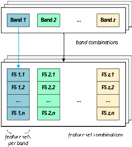
Figure 14-1: Feature Set
Combinations
In addition, for
some features in intra-band contiguous CA, the UE reports its
capabilities individually per carrier. Those capability parameters
are sent in feature set per component carrier and they are signalled
in the corresponding FSs (per Band) i.e. for the corresponding block
of contiguous serving cells in a band. The capability applied to each
individual carrier in a block is agnostic to the order in which they
are signalled in the corresponding FS.
NOTE 2: For intra-band non-contiguous CA, there are as many feature
sets per band signalled as the number of (groups of
contiguous) carriers that the UE is able to aggregate
non-contiguously in the corresponding band.
To limit signalling
overhead, the gNB can request the UE to provide NR capabilities for a
restricted set of bands. When responding, the UE can skip a subset of
the requested band combinations according to the UE capability
fallback behaviour as specified in TS 38.306 [11] and in TS 38.331
[12]. An eRedCap UE may ignore UE capability filtering and send all
supported bands in the mirrored UE capability filter with an explicit
indication on whether the filter was ignored or not.
If supported by the
UE and the network, the UE may provide an ID in NAS signalling that
represents its radio capabilities for one or more RATs in order to
reduce signalling overhead. The ID may be assigned either by the
manufacturer or by the serving PLMN. The manufacturer-assigned ID
corresponds to a pre-provisioned set of capabilities. In the case of
the PLMN-assigned ID, assignment takes place in NAS signalling.
The AMF stores the UE Radio Capability uploaded by the gNB as
specified in TS 23.501 [3].
The gNB can request
the UE capabilities for RAT-Types NR, EUTRA, UTRA-FDD. The UTRAN
capabilities, i.e. the INTER RAT HANDOVER INFO, include START-CS,
START-PS and "predefined configurations", which are
"dynamic" IEs. In order to avoid the START values
desynchronisation and the key replaying issue, the gNB always
requests the UE UTRA-FDD capabilities before handover to UTRA-FDD.
The gNB does not upload the UE UTRA-FDD capabilities to the AMF.
15 Self-Configuration
and Self-Optimisation
15.1 Definitions
Void.
15.2 Void
15.3 Self-configuration
15.3.1 Dynamic configuration of the NG-C interface
15.3.1.1 Prerequisites
The following
prerequisites are assumed:
- An initial remote IP end point to be used for SCTP initialisation
is provided to the NG-RAN node for each AMF the NG-RAN node is
supposed to connect to.
15.3.1.2 SCTP initialization
NG-RAN establishes
the first SCTP (IETF RFC 4960 [23]) using a configured IP address.
NOTE: The NG-RAN node may use different source and/or destination IP
end point(s) if the SCTP establishment towards one IP end point
fails. How the NG-RAN node gets the remote IP end point(s) and its
own IP address are outside the scope of this specification.
15.3.1.3 Application layer initialization
Once SCTP
connectivity has been established, the NG-RAN node and the AMF shall
exchange application level configuration data over NGAP with the NG
Setup procedure, which is needed for these two nodes to interwork
correctly on the NG interface:
- The NG-RAN node provides the relevant configuration information to
the AMF, which includes list of supported TA(s), etc.;
- The AMF provides the relevant configuration information to the
NG-RAN node, which includes PLMN ID, etc.;
- When the application layer initialization is successfully
concluded, the dynamic configuration procedure is completed and the
NG-C interface is operational.
After the
application layer initialization is successfully completed, the AMF
may add or update or remove SCTP endpoints to be used for NG-C
signalling between the AMF and the NG-RAN node pair as specified in
TS 23.501 [3].
15.3.2 Dynamic Configuration of the Xn interface
15.3.2.1 Prerequisites
The following
prerequisites are necessary:
- An initial remote IP end point to be used for SCTP initialisation
is provided to the NG-RAN node.
15.3.2.2 SCTP initialization
NG-RAN establishes
the first SCTP (IETF RFC 4960 [23]) using a configured IP address.
NOTE: The NG-RAN node may use different source and/or destination IP
end point(s) if the SCTP establishment towards one IP end point
fails.
15.3.2.3 Application layer initialization
Once SCTP
connectivity has been established, the NG-RAN node and its candidate
peer NG-RAN node are in a position to exchange application level
configuration data over XnAP needed for the two nodes to interwork
correctly on the Xn interface:
- The NG-RAN node provides the relevant configuration information to
the candidate NG-RAN node, which includes served cell information;
- The candidate NG-RAN node provides the relevant configuration
information to the initiating NG-RAN node, which includes served cell
information;
- When the application layer initialization is successfully
concluded, the dynamic configuration procedure is completed and the
Xn interface is operational;
- The NG-RAN node shall keep neighbouring NG-RAN nodes updated with
the complete list of served cells, or, if requested by the peer
NG-RAN node, by a limited list of served cells, while the Xn
interface is operational.
15.3.3 Automatic Neighbour Cell Relation Function
15.3.3.1 General
The purpose of ANR
function is to relieve the operator from the burden of manually
managing NCRs. Figure 15.3.3.1-1 shows ANR and its environment:
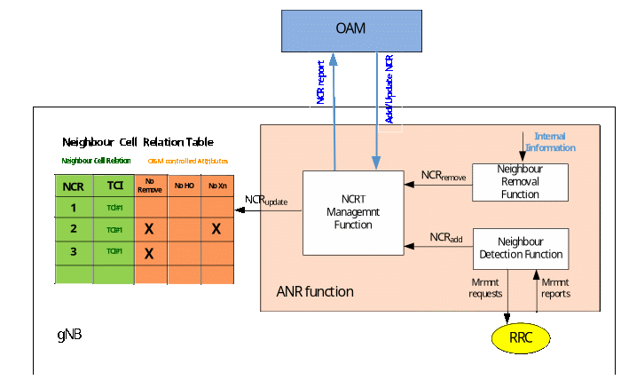
Figure 15.3.3.1-1: Interaction
between gNB and OAM due to ANR
The ANR function
resides in the gNB and manages the Neighbour Cell Relation Table
(NCRT). Located within ANR, the Neighbour Detection Function finds
new neighbours and adds them to the NCRT. ANR also contains the
Neighbour Removal Function which removes outdated NCRs. The Neighbour
Detection Function and the Neighbour Removal Function are
implementation specific.
An existing NCR from
a source cell to a target cell means that gNB controlling the source
cell:
a) Knows the global and physical IDs (e.g. NR CGI/NR PCI, ECGI/PCI)
of the target cell; and
b) Has an entry in the NCRT for the source cell identifying the
target cell; and
c) Has the attributes in this NCRT entry defined, either by OAM or
set to default values.
NCRs are
cell-to-cell relations, while an Xn link is set up between two gNBs.
Neighbour Cell Relations are unidirectional, while an Xn link is
bidirectional.
NOTE: The neighbour information exchange, which occurs during the Xn
Setup procedure or in the gNB Configuration Update procedure, may be
used for ANR purpose.
The ANR function
also allows OAM to manage the NCRT. OAM can add and delete NCRs. It
can also change the attributes of the NCRT. The OAM system is
informed about changes in the NCRT.
15.3.3.2 Intra-system Automatic Neighbour Cell Relation Function
ANR relies on NCGI
(see clause 8.2) and ANR reporting of E-UTRA cells as specified in TS
36.300 [2].
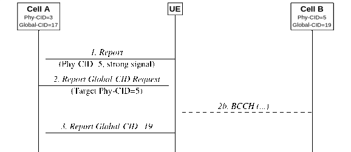
Figure 15.3.3.2-1: Automatic
Neighbour Relation Function
Figure 15.3.3.2-1
depicts an example where the NG-RAN node serving cell A has an ANR
function. In RRC_CONNECTED, the NG-RAN node instructs each UE to
perform measurements on neighbour cells. The NG-RAN node may use
different policies for instructing the UE to do measurements, and
when to report them to the NG-RAN node. This measurement procedure is
as specified in TS 38.331[12] and TS 36.331 [29].
1. The UE sends a measurement report regarding cell B. This report
contains Cell B's PCI, but not its NCGI/ECGI.
When the NG-RAN node
receives a UE measurement report containing the PCI, the following
sequence may be used.
2. The NG-RAN node instructs the UE, using the newly discovered PCI
as parameter, to read all the broadcast NCGI(s) /ECGI(s), TAC(s),
RANAC(s), PLMN ID(s) and, for neighbour NR cells, NR frequency
band(s) and the gNB ID length(s). To do so, the NG-RAN node may need
to schedule appropriate idle periods to allow the UE to read the
NCGI/ECGI from the broadcast channel of the detected neighbour cell.
How the UE reads the NCGI/ECGI is specified in TS 38.331 [12] and TS
36.331 [29].
3. When the UE has found out the new cell's NCGI(s) /ECGI(s), the UE
reports all the broadcast NCGI(s)/ECGI(s) to the serving cell NG-RAN
node. In addition, the UE reports all the tracking area code(s),
RANAC(s), PLMN IDs and, for neighbour NR cells, NR frequency band(s),
and the gNB ID length(s) that have been read by the UE. In case the
detected NR cell does not broadcast SIB1, the UE may report noSIB1
indication as specified in TS 38.331 [12].
4. The NG-RAN node decides to add this neighbour relation, and can
use PCI and NCGI(s)/ECGI(s) to:
a. Lookup a transport layer address to the new NG-RAN node;
b. Update the Neighbour Cell Relation List;
c. If needed, setup a new Xn interface towards this NG-RAN node.
15.3.3.3 Void
15.3.3.4 Void
15.3.3.5 Inter-system Automatic Neighbour Cell Relation Function
For Inter-system
ANR, each cell contains an Inter Frequency Search list. This list
contains all frequencies that shall be searched. Figure 15.3.3.5-1
depicts an example where the NG-RAN node serving cell A has an ANR
function.
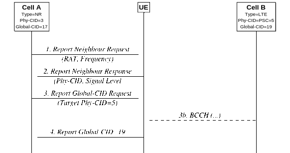
Figure 15.3.3.5-1: Automatic
Neighbour Relation Function in case of E-UTRAN detected cell
In RRC_CONNECTED,
the NG-RAN node instructs a UE to perform measurements and detect
E-UTRA cells connected to EPC.:
1 The NG-RAN node instructs a UE to look for neighbour cells in the
target system. To do so the NG-RAN node may need to schedule
appropriate idle periods to allow the UE to scan all cells in the
target system.
2 The UE reports the PCI and carrier frequency of the detected cells
in the target system.
NOTE: The NG-RAN node may use different policies for instructing the
UE to do measurements, and when to report them to the NG-RAN node.
When the NG-RAN node
receives the UE reports containing PCIs of cell(s), the following
sequence may be used:
3 The NG-RAN node instructs the UE, using the newly discovered PCI as
parameter, to read the ECGI, the TAC and all available PLMN ID(s) of
the newly detected cell in case of E-UTRA detected cells. The UE
ignores transmissions from the serving cell while finding the
requested information transmitted in the broadcast channel of the
detected inter-system/inter-frequency neighbour cell. To do so, the
NG-RAN node may need to schedule appropriate idle periods to allow
the UE to read the requested information from the broadcast channel
of the detected inter-system neighbour cell.
4 After the UE has read the requested information in the new cell, it
reports the detected ECGI, TAC, and available PLMN ID(s) to the
serving cell NG-RAN node.
5 The NG-RAN node updates its inter-system NCRT.
15.3.4 Xn-C TNL address discovery
If the NG-RAN node
is aware of the RAN node ID of the candidate NG-RAN node (e.g. via
the ANR function) but not of a TNL address suitable for SCTP
connectivity, then the NG-RAN node can utilize the 5GC (an AMF it is
connected to) to determine the TNL address as follows:
- The NG-RAN node sends the UPLINK RAN CONFIGURATION TRANSFER message
to the AMF to request the TNL address of the candidate NG-RAN node,
and includes relevant information such as the source and target RAN
node ID;
- The AMF relays the request by sending the DOWNLINK RAN
CONFIGURATION TRANSFER message to the candidate NG-RAN node
identified by the target RAN node ID;
- The candidate NG-RAN node responds by sending the UPLINK RAN
CONFIGURATION TRANSFER message containing one or more TNL addresses
to be used for SCTP connectivity with the initiating NG-RAN node, and
includes other relevant information such as the source and target RAN
node ID;
- The AMF relays the response by sending the DOWNLINK CONFIGURATION
TRANSFER message to the initiating NG-RAN node identified by the
target RAN node ID.
NOTE: Void.
The NG-RAN node may
determine the gNB ID length of the candidate gNB based on, e.g. OAM
configuration or UE reporting in ANR function. If the NG-RAN node is
not able to make this determination, it may include the NR cell
identifier in the UPLINK RAN CONFIGURATION TRANSFER message to the
AMF. The AMF may, if supported, determine the target gNB ID by
matching the NR cell identifier with a gNB ID of a gNB it connects
to.
15.4 Support for Energy Saving
15.4.1 General
The aim of this
function is to reduce operational expenses through energy savings.
The function allows,
for example in a deployment where capacity boosters can be
distinguished from cells providing basic coverage, to optimize energy
consumption enabling the possibility for an E-UTRA or NR cell
providing additional capacity via single or dual connectivity, to be
switched off when its capacity is no longer needed and to be
re-activated on a need basis, or to support various adaptation
techniques in time, frequency, spatial and power domains.
15.4.2 Solution description
15.4.2.1 Intra-system
energy saving
The solution builds
upon the possibility for the NG-RAN node owning a capacity booster
cell to autonomously decide to switch-off such cell to lower energy
consumption (inactive state). The decision is typically based on cell
load information, consistently with configured information. The
switch-off decision may also be taken by O&M.
The NG-RAN node may
initiate handover actions in order to off-load the cell being
switched off and may indicate the reason for handover with an
appropriate cause value to support the target node in taking
subsequent actions, e.g. when selecting the target cell for
subsequent handovers.
All neighbour NG-RAN
nodes are informed by the NG-RAN node owning the concerned cell about
the switch-off actions over the Xn interface, by means of the NG-RAN
node Configuration Update procedure.
All informed nodes
maintain the cell configuration data, e.g., neighbour relationship
configuration, also when a certain cell is inactive. If basic
coverage is ensured by NG-RAN node cells, NG-RAN node owning
non-capacity boosting cells may request a re-activation over the Xn
interface if capacity needs in such cells demand to do so. This is
achieved via the Cell Activation procedure. During switch off time
period of the boost cell, the NG-RAN node may prevent idle mode UEs
from camping on this cell and may prevent incoming handovers to the
same cell.
The NG-RAN node
receiving a request should act accordingly. The switch-on decision
may also be taken by O&M. All peer NG-RAN nodes are informed by
the NG-RAN node owning the concerned cell about the re-activation by
an indication on the Xn interface.
The solution also
builds upon the possibility for the NG-RAN node owning a coverage
cell to request neighbouring NG-RAN node(s) owning a capacity booster
cell to switch on some SSB beams within the cell which are
deactivated. The receiving NG-RAN node should act accordingly.
The solution also
builds upon the possibility for an NG-RAN node to page certain UEs
(e.g., stationary UEs) in RRC_INACTIVE state on a limited set of
beams, instead of paging on all the beams within the cell. It is up
to the gNB's implementation to select the UEs in RRC_INACTIVE for
which paging in limited set of beams applies. If the paging over the
limited set of beams fails, the gNB performs subsequent paging by
implementation, e.g., by ensuring the same paging message is repeated
in all the transmitted SSB beams.
15.4.2.2 Inter-system energy saving
The solution builds upon the possibility for the NG-RAN node owning a
capacity booster cell to autonomously decide to switch-off such cell
to dormant state. The decision is typically based on cell load
information, consistently with configured information. The switch-off
decision may also be taken by O&M. The NG-RAN node indicates the
switch-off action to the eNB over NG interface and S1 interface. The
NG-RAN node could also indicate the switch-on action to the eNB over
NG interface and S1 interface.
The
eNB providing basic coverage may request a NG-RAN node's cell
re-activation based on its own cell load information or neighbour
cell load information, the switch-on decision may also be taken by
O&M. The eNB requests a NG-RAN node's cell re-activation and
receives the NG-RAN node's cell re-activation reply from the NG-RAN
node over the S1 interface and NG interface. Upon reception of the
re-activation request, the NG-RAN node's cell should remain switched
on at least until expiration of the minimum activation time. The
minimum activation time may be configured by O&M or be left to
the NG-RAN node's implementation.
15.4.2.3 Cell DTX/DRX
To facilitate
reducing gNB downlink transmission/uplink reception active time, UE
can be configured with a periodic cell DTX/DRX pattern (i.e. active
and non-active periods). The pattern configuration for cell DTX/DRX
is common for the UEs configured with this feature in the cell. The
cell DTX and cell DRX patterns can be configured and activated
separately. A maximum of two cell DTX/DRX patterns can be configured
per MAC entity for different serving cells. When cell DTX is
configured and activated for the concerned cell, the UE may not
monitor PDCCH in selected cases or does not monitor SPS occasions
during cell DTX non-active duration. When cell DRX is configured and
activated for the concerned cell, the UE does not transmit on CG
resources, does not transmit a SR or periodic/semi-persistent SRS
during cell DRX non-active duration. SRS for positioning is not
impacted by cell DRX operation. This feature is only applicable to
UEs in RRC_CONNECTED state and it does not impact Random Access
procedure, SSB transmission, paging, and system information
broadcasting. Cell DTX/DRX operation is only supported for single TRP
scenario. Cell DTX/DRX can be activated/deactivated by RRC signalling
or L1 group common signalling. Cell DTX/DRX is characterized by the
following:
- active duration: duration that the UE waits for to receive
PDCCHs or SPS occasions, and transmit SR or CG. In this duration, the
gNB transmission/reception of PDCCH, SPS, SR, CG, periodic and
semi-persistent CSI report, periodic and semi-persistent SRS are not
impacted for the purpose of network energy saving;
- cycle: specifies the periodic repetition of the
active-duration followed by a period of non-active duration.
Active duration and
cycle parameters are common between cell DTX and cell DRX, when both
are configured;
Once the gNB
recognizes there is an emergency call or public safety related
service, the network should ensure that there is no impact to that
service (e.g. it may release or deactivate cell DTX/DRX
configuration). The network should also ensure that there is at least
partial overlapping between UE's connected mode DRX on-duration and
cell DTX/DRX active duration, i.e. the UE's connected mode DRX
periodicity is a multiple of cell DTX/DRX periodicity or vice versa.
15.4.2.4 Conditional Handover
The same principle as described in 9.2.3.4 applies to conditional
handover in case the source cell is using a network energy saving
solution (e.g., the cell is activating cell DTX/DRX or turning off),
unless hereunder specified. In this case, the following additional
triggering conditions are supported, upon which UE may use
NES-specific CHO event for executing CHO to a candidate cell, as
defined in TS 38.331 [12]:
- The UE may be notified via DCI to enable CHO conditions(s)
configured with NES event indication.
15.4.2.5 Camping
Restrictions
If a cell is
activating or going to activate NES cell DTX/DRX, the cell can allow
the access of UEs capable of NES cell DTX/DRX via a single bit in
SIB1 but prevent the access of UEs not capable of cell DTX/DRX using
barring mechanisms described in clause 7.4.
If a cell provides
on-demand SIB1, the cell can allow the access of UEs supporting
OD-SIB1 but prevent the access of UEs not supporting OD-SIB1 based on
no SIB1 indication in MIB as described in clause 7.3.1.
15.4.2.6 SSB-less
SCell
For an intra-band or inter-band CA SCell, a UE may obtain timing
reference and AGC source from another serving cell in case the UE is
not provided with SSB nor SMTC configuration for this SCell, as
described in TS 38.331 [12].
15.4.2.7 Spatial and
power domain adaptation
To assist the gNB on muting transceivers and/or adapting transmission
power, the UE can be configured to report multiple CSI entries in a
CSI report based on two or more sub-configurations, as specified in
clause 5.2.1.6 in TS 38.214 [56]. Each sub-configuration corresponds
to a spatial domain adaptation pattern (subsets of available spatial
elements) and/or a power offset between PDSCH and CSI-RS.
15.4.2.8 On-demand
SSB SCell
On-demand SSB-based
SCell operations are supported for UEs in RRC_CONNECTED configured
with carrier aggregation (CA), applicable to both intra-band and
inter-band CA configurations for FR1 and FR2 in non-shared spectrum.
The OD-SSB transmission activation command can only be transmitted to
a UE configured with an SCell prior to or when receiving the SCell
activation command. Both RRC and MAC-CE can be used for signalling
the activation/deactivation state of OD-SSB transmissions.
Additionally, the same MAC-CE can also update the transmission
parameter of an activated OD-SSB after the SCell activation
completion. The OD-SSB transmission deactivation can also be achieved
implicitly based on the number of OD-SSB bursts to be transmitted
configured by RRC. When there is no SSB on the SCell, the OD-SSB
transmission is maintained while the SCell is activated. When SSB and
OD-SSB have different centre frequencies in the SCell, only a single
OD-SSB on a different centre frequency is supported. L3 measurement
on OD-SSB is supported as specified in TS 38.331 [12].
15.4.2.9 On-demand
SIB1
To facilitate
reducing gNB downlink transmissions, instead of always periodically
transmitting SIB1, the gNB can provide on-demand SIB1, i.e., upon
receiving an OD-SIB1 request from a UE supporting OD-SIB1. OD-SIB1 is
supported for UEs in RRC_IDLE, RRC_INACTIVE and RRC_CONNECTED when
T311 is running. A request for SIB1 triggers a random access
procedure, where MSG1 is used for indicating OD-SIB1 request and the
gNB acknowledges the request in MSG2. OD-SIB1 request configurations
of one or more cells which support OD-SIB1 are included in SIB26,
which can be broadcasted in any cell, including cell’s own OD-SIB1
request configuration. UE may request SIB1 based on the OD-SIB1
request configuration from SIB26 in order to determine the
suitability of a cell during and after cell reselection as specified
in TS 38.331 [12].
A gNB may request
neighbour gNB(s) over the Xn interface to transmit or stop
transmitting the OD-SIB1 configuration for a cell supporting OD-SIB1.
The neighbour gNB(s) deciding to stop the OD-SIB1 configuration
transmission informs the requesting gNB over Xn. The inter-gNB
coordination procedures are defined in TS 38.401 [4].
15.4.2.10 Common
signal/channel transmissions adaptation
For adaptation of
paging in time domain, the value range for parameter N, which is the
number of paging frames in one paging cycle, is extended to make it
possible to have increased interval between PFs. The value range for
Ns, which is the number of paging occasions within one paging frame,
is increased to compensate the decrease in the number of PFs. UEs
supporting paging adaption and PEI can monitor PEI according to the
additional PEI configuration, if configured.
Adaptation of SSB in
time domain is supported for SCells for UEs in RRC_CONNECTED
configured with carrier aggregation (CA). SSB adaptation is indicated
via DCI. Multiple SMTC configurations can be configured to the UE,
and the UE selects one SMTC based on the SSB adaptation indication.
SSB adaptation is not applicable to deactivated SCells.
Adaptation of PRACH
configurations in time domain is supported for 4-step RACH CBRA.
Furthermore, additional PRACH resource 1-bit indication in
PDCCH-order applies to both CFRA and CBRA in the serving cell.
Additional RACH resources are configured together with the common
RACH resources in the same set of RACH resources, and the network can
indicate via DCI whether the additional RACH resources are available
as specified in section 8.1 of TS 38.213 [38].
15.4.3 O&M
requirements
Operators should be
able to configure the energy saving function.
The configured
information should include:
- The ability of an NG-RAN node to perform autonomous cell
switch-off;
- The ability of an NG-RAN node to request the re-activation of a
configured list of inactive cells owned by a peer NG-RAN node.
O&M may also
configure:
- policies used by the NG-RAN node for cell switch-off decision;
- policies used by peer NG-RAN nodes for requesting the re-activation
of an inactive cell;
- The minimum time an NG-RAN node's cell should remain activated upon
reception of a re-activation request from an eNB.
15.5 Self-optimisation
15.5.1 Support for Mobility Load Balancing
15.5.1.1 General
The objective of
mobility load balancing is to distribute load evenly among cells and
among areas of cells, or to transfer part of the traffic from
congested cell or from congested areas of cells, or to offload users
from one cell, cell area, carrier or RAT to achieve network energy
saving. This can be done by means of optimization of cell
reselection/handover parameters and handover actions. The automation
of such optimisation can provide high quality user experience, while
simultaneously improving the system capacity and also to minimize
human intervention in the network management and optimization tasks.
Intra-RAT,
intra-system inter-RAT and inter-system load balancing scenarios are
supported.
In general, support
for mobility load balancing consists of one or more of following
functions:
- Load reporting for intra-RAT and intra-system inter-RAT load
balancing;
- Load balancing action based on handovers;
- Adapting handover and/or reselection configuration;
- Load reporting for inter-system load balancing.
15.5.1.2 Load
reporting for intra-RAT and intra-system inter-RAT load balancing
The load reporting
function is executed by exchanging load information over the
Xn/X2/F1/E1 interfaces.
The following load
related information should be supported which consists of:
- Radio resource usage (per-cell and per SSB area PRB usage: DL/UL
GBR PRB usage, DL/UL non-GBR PRB usage, DL/UL total PRB usage, and
DL/UL scheduling PDCCH CCE usage; PRB usage for slice(s): DL/UL GBR
PRB usage, DL/UL non-GBR PRB usage, and DL/UL Total PRB allocation);
- TNL capacity indicator (UL/DL TNL offered capacity and available
capacity);
- Cell Capacity Class value (UL/DL relative capacity indicator);
- Capacity value (per cell, per SSB area and per slice: UL/DL
available capacity);
- HW capacity indicator (offered throughput and available throughput
over E1, percentage utilisation over F1);
- RRC connections (number of RRC connections, and available RRC
Connection Capacity);
- Number of active UEs;
- NR-U channel load (DL/UL channel occupancy time percentage, DL/UL
energy detection threshold, radio resource usage).
To achieve load
reporting function, Resource Status Reporting Initiation &
Resource Status Reporting procedures are used.
15.5.1.3 Load balancing action based on handovers
The source cell may
initiate handover due to load. The target cell performs admission
control for the load balancing handovers. A handover preparation
related to a mobility load balancing action is distinguishable from
other handovers, so that the target cell is able to apply appropriate
admission control.
15.5.1.4 Adapting handover and/or reselection configuration
This function
enables requesting of a change of handover and/or reselection
parameters at target cell. The source cell that initialized the load
balancing estimates if it is needed to change mobility configuration
in the source and/or target cell. If the amendment is needed, the
source cell initializes mobility negotiation procedure toward the
target cell.
The source cell
informs the target cell about the new mobility setting and provides
cause for the change (e.g. load balancing related request). The
proposed change is expressed by the means of the difference (delta)
between the current and the new values of the handover trigger. The
handover trigger is the cell specific offset that corresponds to the
threshold at which a cell initialises the handover preparation
procedure. Cell reselection configuration may be amended to reflect
changes in the HO setting. The target cell responds to the
information from the source cell. The allowed delta range for HO
trigger parameter may be carried in the failure response message. The
source cell should consider the responses before executing the
planned change of its mobility setting.
All automatic
changes on the HO and/or reselection parameters must be within the
range allowed by OAM.
15.5.1.5 Load reporting for inter-system load balancing
The load reporting
function for inter-system load balancing is executed by exchanging
load information between NG-RAN and E-UTRAN. Both event-triggered and
periodic inter-system load reporting are supported. Event-triggered
inter-system load reports are sent when the reporting node detects
crossing of cell load thresholds.
The following load
related information should be supported:
- Cell Capacity Class value (UL/DL relative capacity indicator);
- Capacity value (per cell: UL/DL available capacity);
- RRC connections (number of RRC connections, and available RRC
Connection Capacity);
- Number of active UEs;
- Radio Resource Status (per cell PRB usage: UL/DL GBR PRB usage for
MIMO, DL/UL non-GBR PRB usage for MIMO, DL/UL total PRB usage for
MIMO).
NGAP procedures used
for inter-system load balancing are Uplink RAN Configuration Transfer
and Downlink RAN Configuration Transfer.
S1AP procedures used
for inter-system load balancing are eNB Configuration Transfer and
MME Configuration Transfer.
15.5.2 Support for
Mobility Robustness Optimization
15.5.2.1 General
Mobility Robustness
Optimisation aims at detecting and enabling correction of following
problems:
- Connection failure due to intra-system or inter-system mobility;
- Inter-system Unnecessary HO (too early inter-system HO from NR to
E-UTRAN with no radio link failure);
- Inter-system HO ping-pong;
- PSCell change failure;
- Inter-system voice fallback failure;
- Fast MCG recovery failure or a sub-optimal Fast MCG recovery.
MRO provides means
to distinguish the above problems from NR coverage related problems
and other problems, not related to mobility.
For detection of a
sub-optimal successful handovers, MRO additionally enables
observability of:
- Successful HO due to intra-NR mobility;
- Successful HO due to inter-RAT mobility.
For detection of a
sub-optimal successful PSCell addition/change, MRO additionally
enables observability of:
- Successful PSCell addition/change.
15.5.2.2 Connection failure
15.5.2.2.1 General
For analysis of
connection failures, the UE makes the RLF Report available to the
network.
The UE stores the
latest RLF Report, including both LTE and NR RLF report until the RLF
report is fetched by the network or for 48 hours after the connection
failure is detected.
The UE only
indicates RLF report availability and only provides the RLF report to
the network if the current RPLMN is a PLMN that was present in the
UE's EPLMN List or was the RPLMN at the time the connection failure
was detected, or if the current registered SNPN is an SNPN that was
present in the UE's equivalent SNPN list or was the registered SNPN
at the time the connection failure was detected. In case RLF happens
in an E-UTRA cell, the UE makes the LTE RLF Report available to
NG-RAN nodes and eNB(s), and in case RLF happens in an NR cell the UE
makes the NR RLF Report available to gNB(s).
If the LTE RLF
Report is reported to a NG-RAN node, and the last serving node is an
E-UTRAN node, the NG-RAN node may transfer it to the E-UTRAN node by
triggering the Uplink RAN configuration transfer procedure over NG
and the E-UTRAN node can take this into account as defined in TS
36.300 [2].
15.5.2.2.2 Connection failure due to intra-system mobility
One of the functions
of Mobility Robustness Optimization is to detect connection failures
that occur due to Too Early or Too Late Handovers, or Handover to
Wrong Cell. These problems are defined as follows:
- Intra-system Too Late Handover: an RLF occurs after the UE has
stayed for a long period of time in the cell; the UE attempts to
re-establish the radio link connection in a different cell.
- Intra-system Too Early Handover: an RLF occurs shortly after a
successful handover from a source cell to a target cell or a handover
failure occurs during the handover procedure; the UE attempts to
re-establish the radio link connection in the source cell.
- Intra-system Handover to Wrong Cell: an RLF occurs shortly after a
successful handover from a source cell to a target cell or a handover
failure occurs during the handover procedure; the UE attempts to
re-establish the radio link connection in a cell other than the
source cell and the target cell.
In the definition
above, the "successful handover" refers to the UE state,
namely the successful completion of the RA procedure.
In case of MCG LTM
cell switch, the "successful handover" in the definitions
above refers to a successful completion of the RA procedure in case
of RACH-based LTM or when the UE determines that the network has
successfully received its first UL data in case of RACH-less LTM.
In case of CHO, the
Too Late Handover, Too Early Handover and Handover to Wrong Cell in
the definition above means Too Late CHO Execution, Too Early CHO
Execution and CHO Execution to Wrong Cell.
In case of LTM Cell
switch, the Too Late Handover, Too Early Handover and Handover to
Wrong Cell in the definition above means Too Late LTM cell switch,
Too Early LTM cell switch and LTM cell switch to Wrong Cell.
In case of CHO with
candidate SCG(s), the Too Late Handover, Too Early Handover and
Handover to Wrong Cell in the definition above means Too Late CHO
with candidate SCG(s), Too Early CHO with candidate SCG and CHO
Execution to Wrong Cell.
Detection
mechanism
A failure indication
may be initiated after a UE attempts to re-establish the radio link
connection at NG-RAN node B after a failure at NG-RAN node A. NG-RAN
node B may initiate the Failure Indication procedure towards multiple
NG-RAN nodes if they control cells which use the PCI signalled by the
UE during the re-establishment procedure. The NG-RAN node receiving
this selects the UE context that matches the received Failure Cell ID
and C-RNTI, and, if available, uses the shortMAC-I to confirm this
identification, by calculating the shortMAC-I and comparing it to the
received IE.
A failure indication
may also be sent to the node last serving the UE when the NG-RAN node
fetches the RLF REPORT from UE by triggering:
- The Failure Indication procedure over Xn;
- The Uplink RAN configuration transfer procedure and Downlink RAN
configuration transfer procedure over NG.
The detailed
detection mechanisms for too late handover, too early handover and
handover to wrong cell are carried out through the following in the
NG-RAN node that served the UE before the reported connection
failure:
- Intra-system Too Late Handover: there is no recent handover for the
UE prior to the connection failure e.g. the UE reported timer is
absent or larger than the configured threshold (e.g.
Tstore_UE_cntxt), or if CHO/LTM or CHO with candidate SCG(s) is
configured but the CHO/LTM execution is not initiated for the UE
prior to the connection failure, e.g. the UE reported timer is absent
or larger than the configured threshold (e.g. Tstore_UE_cntxt).
- Intra-system Too Early Handover: there is a recent handover/LTM
cell switch for the UE prior to the connection failure e.g. the UE
reported timer is smaller than the configured threshold (e.g.
Tstore_UE_cntxt), and the first re-establishment attempt cell/the
successful re-connect cell/the cell UE attempts LTM recovery is the
cell that served the UE at the last handover/LTM initialisation or
fall back to the source cell configuration in case of DAPS HO.
- Intra-system Handover to Wrong Cell: there is a recent handover/LTM
cell switch for the UE prior to the connection failure e.g. the UE
reported timer is smaller than the configured threshold (e.g.
Tstore_UE_cntxt), and the first re-establishment attempt cell/ the
cell UE attempts to re-connect/the cell UE attempts CHO recovery/the
cell UE attempts LTM recovery is neither the cell that served the UE
at the last handover/LTM initialisation nor the cell that served the
UE where the RLF happened or the cell that the handover/LTM was
initialized toward.
The "UE
reported timer" above indicates the time elapsed since the last
handover initialisation until connection failure or the time elapsed
since the CHO/LTM execution until connection failure.
In case of Too Early
Handover or Handover to Wrong Cell, the NG-RAN node receiving the
failure indication may inform the NG-RAN node controlling the cell
where the mobility configuration caused the failure by means of the
Handover Report procedure over Xn or the Uplink RAN Configuration
Transfer procedure over NG. This may include the RLF report.
In case of Too Late
Handover when UE is configured with CHO with candidate SCG(s), the
NG-RAN node receiving the failure indication may send a Handover
Report over Xn to the candidate NG-RAN node(s) controlling the
candidate PSCell(s) whose mobility configuration caused the failure.
For MRO analysis, in
case of RLFs or handover failures, the source gNB may take into
account the information regarding the LBT failures occurred in UL and
DL for a specific UE. For UL, the information may be collected and
provided by the UE to the network in the RLF report. For DL, the
information may be collected at the source and target gNBs. The
target gNB may provide the information to the source gNB via the
Access and Mobility Indication procedure over Xn, if requested by the
source gNB during the handover preparation.
Retrieval of
information needed for problem analysis
In order to retrieve
relevant information collected at the network side as part of the UE
context, the UE provides C-RNTI used in the last serving cell. If the
cause for the failure is identified as a "Too Early HO" or
a "HO to Wrong Cell", the NG-RAN node controlling the last
serving cell shall, include in the HANDOVER REPORT message the C-RNTI
used in the source cell of the last completed handover before the
failure. If the NG RAN node controlling that source cell provided the
Mobility Information, it is also included in the HANDOVER REPORT
message. If used, the Mobility Information is prepared at the source
NG RAN node of a handover and may refer to or identify any
handover-related data at this NG RAN node. In the Handover
Preparation procedure, the source gNB may request the target gNB to
provide information on DL LBT failures at the target gNB and to
report it in case of mobility failure of the UE.
Handling multiple
reports from a single failure event
In case the RRC
re-establishment fails and the RRC connection setup succeeds, MRO
evaluation of intra-RAT mobility connection failures may be triggered
twice for the same failure event. In this case, only one failure
event should be counted.
15.5.2.2.3 Connection failure due to inter-system mobility
One of the functions
of Mobility Robustness Optimization is to detect connection failures
that occurred due to Too Early or Too Late inter-system handovers or
inter-system Mobility Failure for Voice Fallback. These problems are
defined as follows:
- Inter-system/ Too Late Handover: an RLF occurs after the UE has
stayed in a cell belonging to an NG-RAN node for a long period of
time; the UE attempts to re-connect to a cell belonging to an E-UTRAN
node.
- Inter-system/ Too Early Handover: an RLF occurs shortly after a
successful handover from a cell belonging to an E-UTRAN node to a
target cell belonging to an NG-RAN node or a handover failure occurs
during the handover procedure; the UE attempts to re-connect to the
source cell or to another cell belonging to an E-UTRAN node.
- Inter-system Mobility Failure for Voice Fallback: an RLF occurs
shortly after a successful handover triggered due to Voice Fallback,
or a failure occurs during an handover triggered due to Voice
Fallback, from a cell belonging to an NG-RAN node to a cell belonging
to an E-UTRAN node; the UE attempts to re-connect to a cell belonging
to an E-UTRAN node, or an NG-RAN node.
Detection
mechanism
A failure indication
may be sent to the node last serving the UE when the NG-RAN node
fetches the RLF REPORT from UE by triggering:
- The Failure Indication procedure over Xn;
- The Uplink RAN configuration transfer procedure and Downlink RAN
configuration transfer procedure over NG.
In case the last
serving node is an E-UTRAN node, the detection mechanism proceeds as
defined in TS 36.300 [2].
In case the last
serving node is an NG-RAN node, the detection mechanisms for Too Late
Inter-system Handover, Too Early Inter-system Handover, and
Inter-system Mobility Failure for Voice Fallback are carried out
through the following:
- Too Late Inter-system Handover: the connection failure occurs while
being connected to a NG-RAN node, and there is no recent handover for
the UE prior to the connection failure i.e., the UE reported timer is
absent or larger than the configured threshold, e.g.,
Tstore_UE_cntxt, and the first node where the UE attempts to
re-connect is a E-UTRAN node.
- Too Early Inter-system Handover: the connection failure occurs
while being connected to a NG-RAN node, and there is a recent
inter-system handover for the UE prior to the connection failure
i.e., the UE reported timer is smaller than the configured threshold,
e.g., Tstore_UE_cntxt, and the first cell where the UE
attempts to re-connect and the node that served the UE at the last
handover initialisation are both E-UTRAN node.
- Inter-system Mobility Failure for Voice Fallback: in case the
connection failure occurs during an inter-system handover for voice
fall back from NR, the RLF Report from the UE includes a voice
fallback indication, as defined in TS 38.331 [12].
The "UE
reported timer" above indicates the time elapsed since the last
handover initialisation until connection failure. The UE may make the
RLF Report available to an NG-RAN node. The NG-RAN node may forward
the information using the FAILURE INDICATION message over Xn or by
means of the Uplink RAN configuration transfer procedure and Downlink
RAN configuration transfer over NG to the node that served the UE
before the reported connection failure.
In case the failure
is a Too Early Inter-system Handover, the NG-RAN node receiving the
failure indication may inform the E-UTRAN node by means of the Uplink
RAN Configuration Transfer procedure over NG. This may include the
RLF report.
15.5.2.3 Inter-system Unnecessary HO
One of the purposes
of inter-system Mobility Robustness Optimisation is the detection of
a non-optimal use of network resources. In particular, in case of
inter-system operations and when NR is considered, the case known as
Unnecessary HO to another system is identified. The problem is
defined as follows:
- UE is handed over from NR to E-UTRAN even though quality of the NR
coverage was sufficient for the service used by the UE. The handover
may therefore be considered as unnecessary HO to another system (i.e.
EPS) (too early inter-system HO without connection failure).
In inter-system HO,
if the serving cell threshold (NR cell) is set too high, and cell in
another system (i.e. EPS) with good signal strength is available, a
handover to another system may be triggered unnecessarily, resulting
in an inefficient use of the networks. With a lower threshold the UE
could have continued in the source system (5GS).
To be able to detect
the Unnecessary HO to another system, a gNB node may choose to put
additional coverage and quality condition information into the
HANDOVER REQUIRED message in the Handover Preparation procedure when
an inter-system HO from gNB to another system occurs. The RAN node in
the other system, upon receiving this additional coverage and quality
information, may instruct the UE to continue measuring the cell(s) in
source system during a period of time, while being connected to
another system, and send periodic or single measurement reports to
the node in other system. When the period of time indicated by the
node in source system expires, the RAN node in the other system, may
evaluate the received measurement reports with the coverage/quality
condition received during the inter-system HO procedure and decide if
an inter-system unnecessary HO report should be sent to the gNB in
the source system.
The inter-system
unnecessary HO report shall only be sent in cases where, in all UE
measurement reports collected during the measurement period, any
cells in the source system exceed the radio coverage and/or quality
threshold (the radio threshold RSRP, RSRQ or/and SINR and the
measurement period are indicated in the additional coverage and
quality information in the Handover Preparation procedure). If an
inter-system handover towards 5GS is executed from EPS within the
indicated measurement period, the measurement period expires. In this
case, the eNB in EPS may also send the HO Report. No HO Report shall
be sent in case no NR cell could be included, or if the indicated
period of time is interrupted by an inter-system handover to a system
different than 5GS.
The RAN node in the
source system (5GS) upon receiving of the report, can decide if/how
its parameters (e.g., threshold to trigger Inter-system HO) should be
adjusted.
15.5.2.4 Inter-system Ping-pong
One of the functions
of Mobility Robustness Optimization is to detect ping-pongs that
occur in inter-system environment. The problem is defined as follows:
- A UE is handed over from a cell in a source system (e.g. 5GS) to a
cell in a target system different from the source system (e.g. EPS),
then within a predefined limited time the UE is handed over back to a
cell in the source system, while the coverage of the source system
was sufficient for the service used by the UE. The event may occur
more than once.
The solution for the
problem may consist of the following steps:
1) Statistics regarding inter-system ping-pong occurrences are
collected by the responsible node;
2) Coverage verification is performed to check if the mobility to
other system was inevitable.
The statistics
regarding ping-pong occurrence may be based on evaluation of the UE
History Information IE in the HANDOVER REQUIRED message. If the
evaluation indicates a potential ping-pong case and the source NG_RAN
node of the 1st inter-system handover is different than
the target NG-RAN node of the 2nd inter-system handover,
the target NG-RAN node may use the HANDOVER REPORT message or the
UPLINK RAN CONFIGURATION TRANSFER message to indicate the occurrence
of potential ping-pong cases to the source NG-RAN node.
If NG-RAN coverage
during the potential ping-pong event needs to be verified for the
purpose of determining corrective measures, the Unnecessary HO to
another system procedure may be used.
NOTE: Inter-system mobility triggered by Voice Fallback is not
considered as inter-system ping-pong.
15.5.2.5 O&M Requirements
All automatic
changes of the HO and/or reselection parameters for mobility
robustness optimisation shall be within the ranges allowed by OAM and
specified below.
The following
control parameters shall be provided by OAM to control MRO behaviour:
- Maximum deviation of Handover Trigger: this parameter defines the
maximum allowed absolute deviation of the Handover Trigger, from the
default point of operation defined by the parameter values assigned
by OAM.
- Minimum time between Handover Trigger changes: this parameter
defines the minimum allowed time interval between two Handover
Trigger change performed by MRO. This is used to control the
stability and convergence of the algorithm.
Furthermore, in
order to support the solutions for detection of mobility
optimisation, the parameter Tstore_UE_cntxt shall be
configurable by the OAM system.
15.5.2.6 PSCell addition/change failure
For analysis of
PSCell addition/change failures, the UE makes the SCG Failure
Information available to the MN. If the MN can perform an initial
analysis, it transfers the SCG Failure Information together with the
analysis results to the relevant SN as defined in TS 37.340 [21].
In case there is an
SCG failure when UE is configured with CHO with candidate SCG(s), the
serving M-NG-RAN node receiving SCGFailureInformation from the
UE performs initial analysis. If the SCG failure has been caused by a
different M-NG-RAN node, the serving M-NG-RAN node sends SCG FAILURE
INDICATION message to the M-NG-RAN node that caused the failure. If
it is an SN that caused the failure, the M-NG-RAN node sends SCG
FAILURE INFORMATION REPORT message to the SN as defined in TS 37.340
[21].
15.5.2.7 Successful
HO
One of the functions
of Mobility Robustness Optimization is to detect a sub-optimal
successful handover event. The aim is to identify underlying
conditions during successful ordinary handovers, successful LTM cell
switches, successful DAPS handovers, or successful Conditional
handovers.
For analysis of
successful handover or LTM cell switch, the UE may collect Successful
Handover Report (SHR) based on configuration by network, if stored,
and makes the SHR available to the network as specified in TS 38.331
[12]. The UE stores the SHR until it is fetched by the network or for
48 hours after the SHR is recorded.
For SHR collected
during intra-NR handover, if the target NR node fetches the SHR from
the UE and the trigger of SHR is T310/T312, it may forward the
information to the source NR node, i.e. the node handling the cell
reported as source cell in this SHR, by using the ACCESS AND MOBILITY
INDICATION message over Xn or by means of the Uplink RAN
configuration transfer procedure and Downlink RAN configuration
transfer procedure over NG.
If the NG-RAN node
that fetches the SHR from the UE is neither the source node nor the
target node of the handover or LTM cell switch, it forwards the
information to the node(s) which configured the SHR trigger causing
the SHR to be generated, by using the ACCESS AND MOBILITY INDICATION
message over Xn or by means of the Uplink RAN configuration transfer
procedure and Downlink RAN configuration transfer procedure over NG.
In case of failure
shortly after successful Handover or LTM cell switch, the same
mobility event may generate both a SHR and a RLF report. In this
case, the node(s), which configured the SHR trigger causing the SHR,
may take the duplication into account e.g. ignore the SHR.
Upon retrieval of an
SHR, the receiving node may analyse whether its mobility
configuration needs adjustment.
The SHR can be used
to detect one case of Intra-system Too Late Handover, namely when
DAPS HO is configured but an RLF is detected in the source cell
during a successful DAPS HO.
The SHR can be
collected for intra-NR handover or LTM cell switch, and for handover
from NR to E-UTRA.
15.5.2.8 Successful
PSCell Addition/Change Report
For the analysis of
successful PSCell addition/change, the UE may collect Successful
PSCell Addition/Change Report (SPR) based on the configuration by
network, if received, and makes the SPR available to the network as
specified in TS 38.331 [12].
The UE stores the
SPR until the SPR is fetched by the network or for 48 hours after the
SPR is recorded.
The UE makes the SPR
available to gNB(s).
When a gNB fetches
the SPR from UE, it forwards the SPR to the MN that was serving the
UE at the time the SPR was generated by using the ACCESS AND MOBILITY
INDICATION message over Xn or by means of the Uplink RAN
configuration transfer procedure and Downlink RAN configuration
transfer over NG.
15.5.3 Support for
RACH Optimization
RACH optimization is
supported by UE reported information made available at the NG RAN
node as specified in TS 38.331 [12] and by PRACH parameters exchange
between NG RAN nodes.
The contents of the
RA Report comprise of the following:
- Contention detection indication per RACH attempt;
- Indexes of the SSBs and number of RACH preambles sent on each tried
SSB listed in chronological order of attempts;
- Indication whether the selected SSB is above or below the
configured RSRP threshold per RACH attempt;
- 2-step RACH information as specified in clause 5.7.10.4 of TS
38.331 [12];
- Indication of LBT failures detected during the random access.
SN RA Reports
The UE may also
support collection of SN RA Reports.
The SN RA report
retrieval and forwarding is specified in TS 37.340 [21].
15.5.4 UE History
Information
The source NG-RAN
node collects and stores the UE History Information for as long as
the UE stays in one of its cells.
The UE may report
the UE history information when connecting to a cell of the NG-RAN
node, consisting of PCell and PSCell mobility history information, as
specified in TS 38.331 [12].
When information
needs to be discarded because the list is full, such information will
be discarded in order of its position in the list, starting with the
oldest cell record. If the list is full, and the UE history
information from the UE is available, the UE history information from
the UE should also be discarded.
The resulting
information is then used in subsequent handover preparations by means
of the Handover Preparation procedures over the NG and XN interfaces,
which provide the target NG-RAN node with a list of previously
visited cells and associated (per-cell) information elements. The
Handover Preparation procedures also trigger the target NG-RAN node
to start collection and storage of UE history Information and thus to
propagate the collected information.
In case of CHO, the
target NG-RAN node updates the time UE stayed in cell of the latest
PCell entry (i.e. the source cell) when the UE successfully accesses
a candidate cell of the target NG-RAN node. The updated value of the
time UE stayed in the source cell is equal to the value received from
the source NG-RAN node during the Handover Preparation plus the time
from receiving the Handover Request message from the source NG-RAN
node to receiving the RRC Reconfiguration Complete message from the
UE. When the target NG-RAN node receives the SCG UHI from the source
NG-RAN node via the Handover Request message, the target NG-RAN node
also updates the time UE stayed in cell of the latest PSCell entry
(i.e. the source PSCell) as specified in TS 37.340 [21]. The target
NG-RAN node may also update the SCG Activation Time provided in the
Handover Preparation.
15.5.5 Support for
Coverage and Capacity Optimisation
15.5.5.1 General
The objective of NR
Coverage and Capacity Optimization (CCO) function is to detect and
resolve or mitigate CCO issues, e.g. coverage and cell edge
interference issues.
15.5.5.2 OAM
requirements
Each NG-RAN node may
be configured with alternative coverage configurations by OAM.
The alternative coverage configurations contain relevant radio
parameters and may also include a range for how each parameter is
allowed to be adjusted.
15.5.5.3 Dynamic
coverage configuration changes
An NG-RAN node may
autonomously adjust within and switch between coverage
configurations. When a change is executed, a NG-RAN node may notify
its neighbour NG-RAN nodes using the NG-RAN NODE CONFIGURATION UPDATE
message with the list of cells and SSBs with modified coverage
included. The list contains the CGI of each modified cell with its
coverage state indicator and optionally the SSB index of each
modified SSB with its coverage state indicator.
The coverage state
indicator may be used at the receiving NG-RAN node to adjust the
functions of the Mobility Robustness Optimisation, e.g. by using the
coverage state indicator to retrieve a previously stored Mobility
Robustness Optimisation state. The coverage state indicator may also
be used at the receiving NG-RAN node to adopt coverage configurations
matching with neighbouring cells coverage configurations.
If the list includes
indication about planned reconfiguration and possibly a list of
replacing cells, the receiving NG-RAN node may use this to avoid
connection or re-establishment failures during the reconfiguration.
Also, if the sending NG-RAN node adds cells in inactive state, the
receiving NG-RAN node may use this information to avoid connection or
re-establishment failures. The receiving NG-RAN node may also use the
notification to reduce the impact on mobility. The receiving NG-RAN
node should avoid triggering handovers towards cell(s) that are
indicated to be inactive.
15.5.6 Support for
PCI Optimisation
The PCI Optimization
Function in split gNB case is specified in TS 38.401 [4].
15.5.6.1 Centralized PCI Assignment
For centralized PCI
assignment in gNB, the OAM assigns a single PCI for each NR cell in
the gNB, and the gNB selects this value as the PCI of the NR cell.
15.5.6.2 Distributed PCI Assignment
For distributed PCI
assignment in gNB, the OAM assigns a list of PCIs for each NR cell in
the gNB, and the gNB selects a PCI value from the list of PCIs. The
gNB may restrict this list by removing some PCIs that are reported by
UEs, reported over the Xn interface by neighbouring gNBs, and/or
acquired through other methods, e.g. detected over the air using a
downlink receiver.
16 Verticals Support
16.1 URLLC
16.1.1 Overview
The support of
Ultra-Reliable and Low Latency Communications (URLLC) services is
facilitated by the introduction of the mechanisms described in the
following clauses. Please note however that those mechanisms need not
be limited to the provision of URLLC services. Furthermore, RRC can
associate logical channels with different SR configurations, for
instance, to provide more frequent SR opportunities to URLLC
services.
16.1.2 LCP Restrictions
With LCP
restrictions in MAC, RRC can restrict the mapping of a logical
channel to a subset of the configured cells, numerologies, PUSCH
transmission durations, configured grant configurations and control
whether a logical channel can utilise the resources allocated by a
Type 1 Configured Grant (see clause 10.3) or whether a logical
channel can utilise dynamic grants indicating a certain physical
priority level. With such restrictions, it then becomes possible to
reserve, for instance, the numerology with the largest subcarrier
spacing and/or shortest PUSCH transmission duration for URLLC
services. Furthermore, RRC can associate logical channels with
different SR configurations, for instance, to provide more frequent
SR opportunities to URLLC services.
16.1.3 Packet Duplication
When duplication is
configured for a radio bearer by RRC, at least one secondary RLC
entity is added to the radio bearer to handle the duplicated PDCP
PDUs as depicted on Figure 16.1.3-1, where the logical channel
corresponding to the primary RLC entity is referred to as the
primary logical channel, and the logical channel corresponding to
the secondary RLC entity(ies), the secondary logical channel(s).
All RLC entities have the same RLC mode. Duplication at PDCP
therefore consists in submitting the same PDCP PDUs multiple times:
once to each activated RLC entity for the radio bearer. With multiple
independent transmission paths, packet duplication therefore
increases reliability and reduces latency and is especially
beneficial for URLLC services. Packet duplication can be configured
for a MP split bearer with SL indirect path or N3C indirect path (see
clause 16.21). In this case, PDCP entity is associated with one or
more RLC entities and, either one SRAP entity or the N3C, as defined
in TS 38.323 [8].
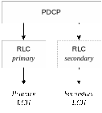
Figure 16.1.3-1: Packet Duplication
NOTE: PDCP control PDUs are not duplicated and always submitted to
the primary RLC entity.
When configuring
duplication for a DRB, RRC also sets the state of PDCP duplication
(either activated or deactivated) at the time of (re-)configuration.
After the configuration, the PDCP duplication state can then be
dynamically controlled by means of a MAC control element and in DC,
the UE applies the MAC CE commands regardless of their origin (MCG or
SCG). When duplication is configured for an SRB the state is always
active and cannot be dynamically controlled. When configuring
duplication for a DRB with more than one secondary RLC entity, RRC
also sets the state of each of them (i.e. either activated or
deactivated). Subsequently, a MAC CE can be used to dynamically
control whether each of the configured secondary RLC entities for a
DRB should be activated or deactivated, i.e. which of the RLC
entities shall be used for duplicate transmission. Primary RLC entity
cannot be deactivated. When duplication is deactivated for a DRB, all
secondary RLC entities associated to this DRB are deactivated. When a
secondary RLC entity is deactivated, it is not re-established, the
HARQ buffers are not flushed, and the transmitting PDCP entity should
indicate to the secondary RLC entity to discard all duplicated PDCP
PDUs.
When activating
duplication for a DRB, NG-RAN should ensure that at least one serving
cell is activated for each logical channel associated with an
activated RLC entity of the DRB; and when the deactivation of SCells
leaves no serving cells activated for a logical channel of the DRB,
NG-RAN should ensure that duplication is also deactivated for the RLC
entity associated with the logical channel.
When duplication is
activated, the original PDCP PDU and the corresponding duplicate(s)
shall not be transmitted on the same carrier. The logical channels of
a radio bearer configured with duplication can either belong to the
same MAC entity (referred to as CA duplication) or to different ones
(referred to as DC duplication). CA duplication can also be
configured in either or both of the MAC entities together with DC
duplication when duplication over more than two RLC entities is
configured for the radio bearer. In CA duplication, logical channel
mapping restrictions are used in a MAC entity to ensure that the
different logical channels of a radio bearer in the MAC entity are
not sent on the same carrier. When CA duplication is configured for
an SRB, one of the logical channels associated to the SRB is mapped
to SpCell.
When CA duplication
is deactivated for a DRB in a MAC entity (i.e. none or only one of
RLC entities of the DRB in the MAC entity remains activated), the
logical channel mapping restrictions of the logical channels of the
DRB are lifted for as long as CA duplication remains deactivated for
the DRB in the MAC entity.
When an RLC entity
acknowledges the transmission of a PDCP PDU, the PDCP entity shall
indicate to the other RLC entity(ies) to discard it. In addition, in
case of CA duplication, when an RLC entity restricted to only
SCell(s) reaches the maximum number of retransmissions for a PDCP
PDU, the UE informs the gNB but does not trigger RLF.
16.1.4 CQI and MCS
For channel state
reporting, a CQI table for target block error rate 10-5 is
introduced.
For scheduling data
packets with higher reliability, 64QAM MCS tables containing entries
with lower spectral efficiency are introduced for both downlink and
uplink. The tables are different for CP-OFDM and DFT-s-OFDM. The MCS
tables can be configured semi-statically or dynamically. The dynamic
signalling of MCS table is supported by configuring UE with
MCS-C-RNTI, where the scrambling of DCI CRC by MCS-C-RNTI indicates
the 64QAM MCS tables with entries of lower spectral efficiency.
16.1.5 DCI formats
For PDCCH
transmission with higher reliability, two DCI formats are introduced
for uplink and downlink scheduling respectively.
16.1.6 Higher layer multi-connectivity
The redundant transmission may be applied on the user plane path
between the UE and the network for URLLC service as specified in TS
23.501 [3].
16.1.6.1 Redundant user plane paths based on dual connectivity
UE may initiate two redundant PDU Sessions over the 5G network. The
5GS sets up the user plane paths of the two redundant PDU sessions to
be disjoint. When PDU session setup or modification is initiated, the
RAN can configure dual connectivity in one NG-RAN node or two NG-RAN
nodes for the two redundant PDU sessions to ensure the disjoint user
plane paths according to the redundancy information received from the
5GC. The RAN shall ensure that the resources of the data radio
bearers for the two redundant PDU sessions are isolated. If the RAN
cannot satisfy the disjoint user plane requirement, the redundant PDU
sessions may be kept or not kept according to the RAN local
configuration. The redundancy information is transferred to the
target NG-RAN node in case of handover.
16.1.6.2 Redundant data transmission via single UPF and single RAN
node
Two NG-U tunnels are setup between single UPF and single NG-RAN node
for redundant transmission of the QoS flows when PDU session setup or
modification is initiated. The two NG-U tunnels are transferred via
disjointed transport layer paths. The 5GC provides the indicator per
QoS flow to the NG-RAN for the redundant transmission. For downlink,
the NG-RAN node eliminates the duplicated packets per QoS flow. For
uplink, the NG-RAN node replicates the packets and transmits them via
the two NG-U tunnels. The indicator per QoS flow for redundant
transmission is transferred to the target NG-RAN node in case of
handover.
16.1.7 URLLC in Unlicensed Controlled Environment
URLLC services can be supported in shared spectrum where LBT failures
are assumed to be not frequent. In this case, a channel access
procedure for semi-static channel occupancy can be initiated by the
gNB or the UE, or the gNB operates in dynamic channel access mode, as
described in TS 37.213 [37]. To handle potential LBT failures on
configured grants (CG), the CG retransmission timer can be optionally
configured to enable autonomous retransmissions, and it may be
configured simultaneously with enhanced intra-UE overlapping resource
prioritization mechanisms. When the CG retransmission timer is
configured, the UE shall select the HARQ process for each CG resource
by itself. If the enhanced intra-UE overlapping resource
prioritization mechanisms is also configured, the UE may be further
configured to select the HARQ process for a CG resource based on
logical channel priority.
16.1.8 PUCCH cell
switching for TDD cells
To reduce the delay for HARQ-ACK feedback for TDD operation with
URLLC services, PUCCH cell switching for TDD cells is supported. The
UE can be provided in each PUCCH group with a PUCCH switching SCell
(PUCCH sSCell) that can be used for PUCCH transmission in addition to
PCell / PSCell / PUCCH SCell. The applicable cell for PUCCH
transmission to be either on PCell /PSCell / PUCCH SCell or the PUCCH
sSCell at a time is either defined by:
- a higher layer configured semi-static time-domain pattern of the
applicable cell for PUCCH transmission; or
- dynamic indication of the cell for PUCCH transmission through a
PDCCH scheduling a PUCCH transmission.
The PUCCH cell switching is applicable to all UCI types when using
the higher layer configured time-domain pattern, but is only
applicable to HARQ feedback for the dynamic indication of the cell
for PUCCH transmission through a PDCCH scheduling PUCCH.
16.2 IMS Voice
16.2.0 Support for IMS voice
For IMS voice
support in NG-RAN, the following is assumed:
- Network ability to support IMS voice sessions, i.e. ability to
support QoS flows with 5QI for voice and IMS signalling (see clause
12 and TS 23.501 [3]), or through EPC System fallback;
- UE capability to support "IMS voice over PS", see TS
24.501 [28].
The capabilities
indications check is handled at NAS layer. To maintain the voice
service in NG-RAN, the UE provides additional capabilities over RRC
(see TS 38.331 [12]), that are used to determine accurate NR voice
support options.
Further MMTEL IMS
voice and video enhancements are facilitated by the mechanisms
described in the following clauses.
16.2.1 Support for MMTEL IMS voice and video enhancements
16.2.1.1 RAN-assisted codec adaptation
RAN-assisted codec
adaptation provides a means for the gNB to send codec adaptation
indication with recommended bit rate to assist the UE to select or
adapt to a codec rate for MMTEL voice or MMTEL video. The
RAN-assisted codec adaptation mechanism supports the uplink/downlink
bit rate increase or decrease. For a bearer associated with
configuration of MBR greater than GBR, the recommended
uplink/downlink bit rate is within boundaries set by the MBR and GBR
of the concerned bearer.
For uplink or
downlink bit rate adaptation, gNB may send a recommended bit rate to
the UE to inform the UE on the currently recommended transport bit
rate on the local uplink or downlink, which the UE may use in
combination with other information to adapt the bit rate, e.g. the UE
may send a bit rate request to the peer UE via application layer
messages as specified in TS 26.114 [24], which the peer UE may use in
combination with other information to adapt the codec bit rate. The
recommended bit rate is in kbps at the physical layer at the time
when the decision is made.
The recommended bit
rate for UL and DL is conveyed as a MAC Control Element (CE) from the
gNB to the UE as outlined in Figure 16.2.1.1-1.
Figure 16.2.1.1-1: UL or DL bit
rate recommendation
Based on the
recommended bit rate from the gNB, a UE may initiate an end-to-end
bit rate adaptation with its peer (UE or MGW). The UE may also send a
query message to its local gNB to check if a bit rate recommended by
its peer can be provided by the gNB. The UE is not expected to go
beyond the recommended bit rate from the gNB.
The recommended bit
rate query message is conveyed as a MAC CE from the UE to the gNB as
outlined in Figure 16.2.1.1-2.
Figure 16.2.1.1-2: UL or DL bit
rate recommendation query
A prohibit timer can
be configured per logical channel by the network to limit UEs sending
frequent query MAC CEs. Independent prohibit timers are used for each
direction (uplink and downlink) to prohibit the UE from
retransmitting exactly the same query MAC CE to the gNB during the
configured time.
16.2.1.2 MMTEL voice quality/coverage enhancements
The air interface
delay budget can be relaxed to increase the robustness of the
transmission for coverage enhancement. Such relaxation may be
achieved when a UE in good coverage indicates a preference to the gNB
to reduce the local air interface delay by sending a
DelayBudgetReport message to decrease the DRX cycle length, so
that the E2E delay and jitter can be reduced. When the UE detects
changes such as end-to-end MMTEL voice quality or local radio
quality, the UE may inform the gNB its new preference by sending
DelayBudgetReport messages with updated contents.
16.3 Network Slicing
16.3.1 General Principles and Requirements
In this clause, the
general principles and requirements related to the realization of
network slicing in the NG-RAN for NR connected to 5GC and for E-UTRA
connected to 5GC are given.
A network slice
always consists of a RAN part and a CN part. The support of network
slicing relies on the principle that traffic for different slices is
handled by different PDU sessions. Network can realise the different
network slices by scheduling and also by providing different L1/L2
configurations.
Each network slice
is uniquely identified by a S-NSSAI, as defined in TS 23.501 [3].
NSSAI (Network Slice Selection Assistance Information) includes one
or a list of S-NSSAIs (Single NSSAI) where a S-NSSAI is a combination
of:
- mandatory SST (Slice/Service Type) field, which identifies the
slice type and consists of 8 bits (with range is 0-255);
- optional SD (Slice Differentiator) field, which differentiates
among Slices with same SST field and consist of 24 bits.
The list includes at
most 8 S-NSSAI(s).
The UE provides
NSSAI (Network Slice Selection Assistance Information) for network
slice selection in RRCSetupComplete, if it has been provided
by NAS (see clause 9.2.1.3). While the network can support large
number of slices (hundreds), the UE need not support more than 8
slices simultaneously. A BL UE or a NB-IoT UE supports a maximum of 8
slices simultaneously.
Network Slicing is a
concept to allow differentiated treatment depending on each customer
requirements. With slicing, it is possible for Mobile Network
Operators (MNO) to consider customers as belonging to different
tenant types with each having different service requirements that
govern in terms of what slice types each tenant is eligible to use
based on Service Level Agreement (SLA) and subscriptions.
The following key
principles apply for support of Network Slicing in NG-RAN:
RAN awareness of
slices
- NG-RAN supports a differentiated handling of traffic for different
network slices which have been pre-configured. How NG-RAN supports
the slice enabling in terms of NG-RAN functions (i.e. the set of
network functions that comprise each slice) is implementation
dependent.
Selection of RAN
part of the network slice
- NG-RAN supports the selection of the RAN part of the network slice,
by NSSAI provided by the UE or the 5GC which unambiguously identifies
one or more of the pre-configured network slices in the PLMN.
Resource
management between slices
- NG-RAN supports policy enforcement between slices as per service
level agreements. It should be possible for a single NG-RAN node to
support multiple slices. The NG-RAN should be free to apply the best
RRM policy for the SLA in place to each supported slice.
Support of QoS
- NG-RAN supports QoS differentiation within a slice, and per
Slice-Maximum Bit Rate may be enforced per UE, if feasible. How
NG-RAN enables UE-Slice-MBR enforcement and rate limitation (see TS
23.501 [3]) is up to network implementation.
RAN selection of
CN entity
- For initial attach, the UE may provide NSSAI to support the
selection of an AMF. If available, NG-RAN uses this information for
routing the initial NAS to an AMF. If the NG-RAN is unable to select
an AMF using this information or the UE does not provide any such
information the NG-RAN sends the NAS signalling to one of the default
AMFs.
- For subsequent accesses, the UE provides a Temp ID, which is
assigned to the UE by the 5GC, to enable the NG-RAN to route the NAS
message to the appropriate AMF as long as the Temp ID is valid
(NG-RAN is aware of and can reach the AMF which is associated with
the Temp ID). Otherwise, the methods for initial attach applies.
Resource
isolation between slices
- The NG-RAN supports resource isolation between slices. NG-RAN
resource isolation may be achieved by means of RRM policies and
protection mechanisms that should avoid that shortage of shared
resources in one slice breaks the service level agreement for another
slice. It should be possible to fully dedicate NG-RAN resources to a
certain slice. Some RACH resources can be associated to specific
NSAG(s). Other aspects how NG-RAN supports resource isolation is
implementation dependent.
Access control
- By means of the unified access control (see clause 7.4),
operator-defined access categories can be used to enable
differentiated handling for different slices. NG-RAN may broadcast
barring control information (i.e. a list of barring parameters
associated with operator-defined access categories) to minimize the
impact of congested slices.
Slice
Availability and Support
- Some slices may be available only in part of the network. A slice
is considered available in a cell if it is supported by the TA
comprising the cell and the slice is not configured with zero
resources, as specified in TS 23.501 [3]. A slice is supported within
a TA if the NG-RAN has been configured to support the S-NSSAI in the
TA. All supported slices are included in the slice support list for
the TA signalled from the NG-RAN to the AMF. The NG-RAN supported
S-NSSAI(s), NSAG(s) and NSAG related information such as NSAG
associated Cell Reselection Priority and/or NSAG associated RACH
resources are configured by OAM. Awareness in the NG-RAN of the
slices supported in the cells of its neighbours may be beneficial for
inter-frequency mobility in connected mode. In order to support the
NSAG, the NG-RAN provides the AMF with the NSAG information per TA in
the appropriate NG interface management procedures, as specified in
TS 38.413 [26]. Awareness in the NG-RAN of the NSAG information
supported in the list(s) of neighbour cells may be configured by OAM,
or exchanged with neighbour NG-RAN nodes.
- The NG-RAN and the 5GC are responsible to handle a service request
for a slice that may or may not be available in a given area.
Admission or rejection of access to a slice may depend by factors
such as support for the slice, availability of resources, support of
the requested service by NG-RAN.
- The NG-RAN may be signalled with the Partially Allowed NSSAI from
the AMF as specified in TS 23.501 [3]. The NG-RAN may decide to use
the Partially Allowed NSSAI for mobility decision.
- Support for Network Slices with Network Slice Area of Service not
matching deployed Tracking Areas is specified in TS 23.501 [3].
NG-RAN cells that are outside the Area of Service may be configured
with zero resources for the concerned slice(s). The concerned
slice(s) cannot use any dedicated, prioritized nor any shared
resources of that cell. Awareness of zero resources configured for a
slice in one or more cells may be exchanged with neighbour NG-RAN
nodes for mobility reasons.
Support for UE
associating with multiple network slices simultaneously
- In case a UE is associated with multiple slices simultaneously,
only one signalling connection is maintained and for intra-frequency
cell reselection, the UE always tries to camp on the best cell. For
inter-frequency cell reselection, dedicated priorities can be used to
control the frequency on which the UE camps.
Granularity of
slice awareness
- Slice awareness in NG-RAN is introduced at PDU session level, by
indicating the S-NSSAI corresponding to the PDU Session, in all
signalling containing PDU session resource information.
Validation of the
UE rights to access a network slice
- It is the responsibility of the 5GC to validate that the UE has the
rights to access a network slice. Prior to receiving the Initial
Context Setup Request message, the NG-RAN may be allowed to apply
some provisional/local policies, based on awareness of which slice
the UE is requesting access to. During the initial context setup, the
NG-RAN is informed of the slice for which resources are being
requested.
Network slice
replacement
- NG-RAN may support network slice replacement for a PDU session as
defined in TS 23.501 [3].
NOTE: The resources used to serve the alternative slice may be
subject to subsequent O&M adjustments to take into account the
additional load generated by remapping of one or more slices into the
alternative S-NSSAI, if this alternative slice is not member of the
same RRMPolicyRatio (see TS 28.541 [49]) as the original
slice.
16.3.2 AMF and NW Slice Selection
16.3.2.1 CN-RAN interaction and internal RAN aspects
NG-RAN selects AMF
based on a Temp ID or NSSAI provided by the UE over RRC as specified
in TS 38.410 [16]. The mechanisms used in the RRC protocol are
described in the next clause.
Table 16.3.2.1-1 AMF selection
based on Temp ID and NSSAI
Temp
ID
|
NSSAI
|
AMF
Selection by NG-RAN
|
not
available or invalid
|
not
available
|
One
of the default AMFs is selected (NOTE)
|
not
available or invalid
|
present
|
Selects
AMF which supports UE requested slices
|
valid
|
not
available, or present
|
Selects
AMF per CN identity information in Temp ID
|
NOTE: The
set of default AMFs is configured in the NG-RAN nodes via OAM.
|
16.3.2.2 Radio Interface Aspects
When triggered by
the upper layer, the UE conveys the NSSAI over RRC in the format
explicitly indicated by the upper layer.
16.3.3 Resource Isolation and Management
16.3.3.1 General
Resource isolation
enables specialized customization and avoids one slice affecting
another slice.
Hardware/software
resource isolation is up to implementation. Each slice may be
assigned with either shared, prioritized or dedicated radio resource
up to RRM implementation and SLA as in TS 28.541 [49].
To enable
differentiated handling of traffic for network slices with different
SLA:
- NG-RAN is configured with a set of different configurations for
different network slices by OAM;
- To select the appropriate configuration for the traffic for each
network slice, NG-RAN receives relevant information indicating which
of the configurations applies for this specific network slice.
Slice-based RACH
configuration for RA isolation and prioritization can be included in
SIB1 messages. The slice-based RACH configurations are associated to
specific NSAG(s), and if not provided for a NSAG that UE considers
for selecting the RACH configuration, then the UE does not consider
the NSAG for selecting the slice-based RACH configuration. The UE
determines the NSAG to be considered during RA as specified in TS
23.501 [3]. When the UE AS does not receive any NSAG information from
NAS for Random Access, the UE does not apply the slice-based RACH
configuration.
16.3.3.2 Handling of
Slice Resources
The NG-RAN node may
use Multi-Carrier Resource Sharing or Resource Repartitioning to
allocate resources to a slice during the procedures described in
16.3.4 to support the slice service continuity in case of slice
resources shortage.
In Multi-Carrier
Resource Sharing the RAN node can setup the dual connectivity or
carrier aggregation with different frequency and overlapping coverage
where the same slice is available.
The Resource
Repartitioning allows a slice to use resources from the shared pool
or/and prioritized pool when its own dedicated or prioritized
resources are not available and the use of unused resources in the
prioritized pool is as specified in TS 28.541 [49].
Slice RRM
policies/restrictions associated with Resource Repartitioning are
configured from O&M.
Measurements of RRM
policy utilization according to resource types defined in TS 28.541
[49] are reported from RAN nodes to O&M and may lead O&M to
update the configuration of the Slice RRM policies/restrictions.
16.3.3a Slice-based
cell reselection
Slice-based cell
reselection information can be included in SIB16 and in RRCRelease
messages. The slice-based cell reselection information may include
reselection priorities per NSAG per frequency and corresponding
list(s) of cells where the slices of the NSAG are supported or not
supported. The UE determines the NSAG(s) and their priorities to be
considered during cell reselection as specified in TS 23.501 [3], and
in TS 38.304 [10].
When a UE supports
slice-based cell reselection, and when slice-based cell reselection
information is provided to the UE, then the UE uses the slice-based
cell reselection information. Valid cell reselection information
provided in RRCRelease always has a priority over cell
reselection information provided in SIB messages. When no slice-based
cell reselection information is provided for any NSAG that was
determined to be considered during cell reselection (as specified in
TS 23.501 [3]), then the UE uses the general cell reselection
information, i.e., without considering the NSAG(s) and their
priorities.
16.3.4 Signalling Aspects
16.3.4.1 General
In this clause,
signalling flows related to the realization of network slicing in the
NG-RAN are given.
16.3.4.2 AMF and NW Slice Selection
RAN selects the AMF
based on a Temp ID or NSSAI provided by the UE.
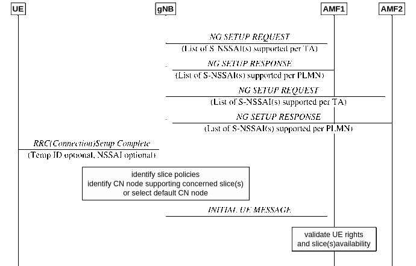
Figure 16.3.4.2-1: AMF selection
In case a Temp ID is
not available, the NG-RAN uses the NSSAI provided by the UE at RRC
connection establishment to select the appropriate AMF (the
information is provided after MSG3 of the random access procedure).
If such information is also not available, the NG-RAN routes the UE
to one of the configured default AMF(s).
The NG-RAN uses the list of supported S-NSSAI(s) previously received
in the NG Setup Response message when selecting the AMF with the
NSSAI. This list may be updated via the AMF Configuration Update
message.
16.3.4.3 UE Context Handling
Following the
initial access, the establishment of the RRC connection and the
selection of the correct AMF, the AMF establishes the complete UE
context by sending the Initial Context Setup Request message to the
NG-RAN over NG-C. The message contains the Allowed NSSAI and
additionally contains the S-NSSAI(s) as part of the PDU session(s)
resource description when present in the message and may contain
Partially Allowed NSSAI. Upon successful establishment of the UE
context and allocation of PDU session resources to the relevant
network slice(s) when present, the NG-RAN responds with the Initial
Context Setup Response message.
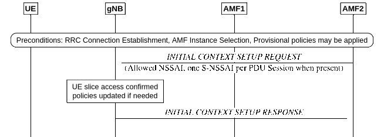
Figure 16.3.4.3-1: Network
Slice-aware Initial Context Setup
16.3.4.4 PDU Session Setup Handling
When new PDU
sessions need to be established, the 5GC requests the NG-RAN to
allocate/ resources relative to the relevant PDU sessions by means of
the PDU Session Resource Setup procedures over NG-C. One S-NSSAI is
added per PDU session to be established, so NG-RAN is enabled to
apply policies at PDU session level according to the SLA represented
by the network slice, while still being able to apply (for example)
differentiated QoS within the slice.
NG-RAN confirms the
establishment of the resources for a PDU session associated to a
certain network slice by responding with the PDU Session Resource
Setup Response message over the NG-C interface.
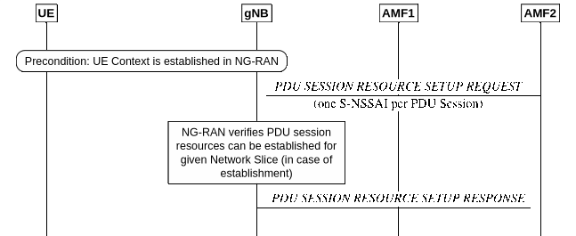
Figure 16.3.4.4-1: Network
Slice-aware PDU Session Resource Setup
16.3.4.5 Mobility
To make mobility
slice-aware in case of Network Slicing, S-NSSAI is introduced as part
of the PDU session information that is transferred during mobility
signalling. This enables slice-aware admission and congestion
control.
NG handovers are
allowed regardless of the slice support of the target NG-RAN node
i.e. even if the target NG-RAN node does not support the same slices
as the source NG-RAN node. Xn handovers are allowed only when at
least one of the slices with active PDU sessions for the UE at the
source gNB is supported at the target gNB. The source gNB performs
this check as part of the Handover Preparation. An example for the
case of connected mode mobility across different Registration Areas
is shown in Figure 16.3.4.5-1 for the case of NG based handover and
in Figure 16.3.4.5-2 for the case of Xn based handover.
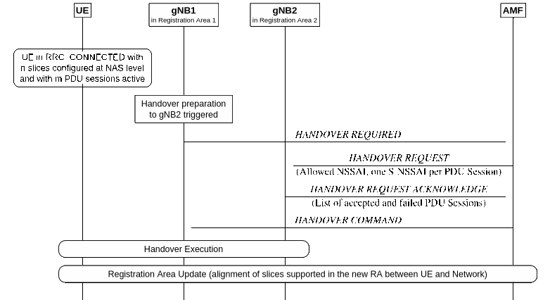
Figure 16.3.4.5-1: NG based
mobility across different Registration Areas
Figure 16.3.4.5-2: Xn based
mobility across different Registration Areas
16.4 Public Warning System
NR connected to 5GC
provides support for public warning systems (PWS) through means of
system information broadcast capability. NR is responsible for
scheduling and broadcasting of the warning messages as well as for
paging the UE to provide indication that the warning message is being
broadcast:
- Earthquake and Tsunami Warning System: ETWS is a public warning
system developed to meet the regulatory requirements for warning
notifications related to earthquake and/or tsunami events (see TS
22.168 [14]). ETWS warning notifications can either be a primary
notification (short notification) or secondary notification
(providing detailed information).
- Commercial Mobile Alert System: CMAS is a public warning system
developed for the delivery of multiple, concurrent warning
notifications (see TS 22.268 [15]).
Different SIBs are
defined for ETWS primary notification, ETWS secondary notification
and CMAS notification. Paging is used to inform UEs about ETWS
indication and CMAS indication (see clause 9.2.5). UE monitors
ETWS/CMAS indication in its own paging occasion for RRC_IDLE and for
RRC_INACTIVE while no SDT procedure (see clause 18.0) is ongoing. UE
monitors ETWS/CMAS indication in any paging occasion for RRC
Connected and during the SDT procedure in RRC_INACTIVE. Paging
indicating ETWS/CMAS notification triggers acquisition of system
information (without delaying until the next modification period).
Enhancements of public warning system (ePWS) enable broadcast of
language-independent content and notifications to UEs with no user
interface or with a user interface that is incapable of displaying
text, see clause 9 in TS 22.268 [15] and TS 23.041 [54]. ETWS/CMAS
notifications with ePWS functionality use the same AS mechanisms as
ETWS/CMAS.
KPAS and EU-Alert
are public warning systems developed for the delivery of multiple,
concurrent warning notifications (see TS 22.268 [15]). KPAS and
EU-Alert uses the same AS mechanisms as CMAS. Therefore, the NR
procedures defined for CMAS equally apply for KPAS and EU-Alert.
16.5 Emergency Services
16.5.1 Overview
NG-RAN provides
support for Emergency Services either directly or through fallback
mechanisms towards E-UTRA. The support of Emergency Services is
broadcast in system information (see TS 38.331 [12]).
16.5.2 IMS Emergency call
An IMS Emergency
call support indication is provided to inform the UE that emergency
bearer services are supported. In normal service state the UE is
informed if the PLMN supports emergency services through an Emergency
Service Support indicator in the Attach and TAU procedures (see TS
23.501 [3]). In limited service state and for emergency services
other than eCall over IMS, a UE is informed about if a cell supports
emergency services over NG-RAN from a broadcast indication
(ims-EmergencySupport). The broadcast indicator is set to
"support" if any AMF in a non-shared environment or at
least one of the PLMN's in a shared environment supports IMS
emergency bearer services.
16.5.3 eCall over IMS
NG-RAN broadcast an
indication to indicate support of eCall over IMS
(eCallOverIMS-Support). UEs that are in limited service state
need to consider both eCallOverIMS-Support and
ims-EmergencySupport to determine if eCall over IMS is
possible. UEs that are not in limited service state need to only
consider eCallOverIMS-Support to determine if eCall over IMS
is possible. The broadcast indicator is set to "support" if
the PLMN in a non-shared environment, or all PLMNs in a shared
environment, supports eCall over IMS.
16.5.4 Fallback
RAT fallback towards
E-UTRA connected to 5GC is performed when NR does not support
Emergency Services and System fallback towards E-UTRA connected to
EPS is performed when 5GC does not support Emergency Services.
Depending on factors such as CN interface availability, network
configuration and radio conditions, the fallback procedure results in
either CONNECTED state mobility (handover procedure) or IDLE state
mobility (redirection) - see TS 23.501 [3] and TS 38.331 [12].
16.5.5 Barring
exemption for emergency calls
The network may
allow (e)RedCap UEs and 2Rx XR UEs to consider the cell as an
acceptable cell to perform emergency calls in the cell, even if the
cell would otherwise be considered as barred due to the cell barring
indication in SIB1 for (e)RedCap UEs or 2Rx XR UEs. This is enabled
via the barringExemptEmergencyCall by the network (see TS
38.304 [10] and TS 38.331 [12]).
16.6 Stand-Alone NPN
16.6.1 General
An SNPN is a network
deployed for non-public use which does not rely on network functions
provided by a PLMN (see clause 4.8). An SNPN is identified by a PLMN
ID and NID (see clause 8.2) broadcast in SIB1.
An SNPN-capable UE
supports the SNPN access mode. When the UE is set to operate in SNPN
access mode, the UE only selects and registers with SNPNs. When the
UE is not set to operate in SNPN access mode, the UE performs normal
PLMN selection procedures.
Emergency services
and ETWS /CMAS can be supported by SNPNs. An IMS Emergency call
support indication is provided per SNPN to inform the UE which
SNPN(s) support emergency bearer. In normal service state the
indication is provided in the same way as in case of PLMNs (see
clause 16.5.2). In limited service state and for emergency services
other than eCall over IMS, a UE is informed whether an SNPN of the
cell supports emergency services over NG-RAN from a per SNPN
broadcast indication (imsEmergencySupportForSNPN). The
broadcast indicator for an SNPN may be set to "support" if
any AMF of the SNPN supports IMS emergency bearer services.
NR-NR Dual
Connectivity within a single SNPN or across SNPNs as indicated in the
mobility restriction list is supported.
16.6.2 Mobility
16.6.2.1 General
The same principles
as described in 9.2 apply to SNPN except for what is described below.
UEs operating in
SNPN access mode only (re)select cells within the selected/registered
SNPN or within equivalent SNPNs and a cell can only be considered as
suitable if the PLMN and NID broadcast by the cell matches the
selected/registered SNPN or an equivalent SNPN.
In addition, manual
selection of SNPN(s) is supported, for which HRNN(s) can be
optionally provided.
The roaming and access restrictions applicable to SNPN are described
in clause 9.4.
16.6.2.2 Inactive Mode
The mobility of a UE
in inactive mode builds on existing functionality described in clause
9.2.2 and is limited to the SNPN(s) identified within the mobility
restrictions received in the UE context.
16.6.2.3 Connected Mode
The NG-RAN node is
aware of the SNPN ID(s) supported by neighbour cells.
At the time of
handover, cells that do not support the serving SNPN ID or the SNPN
ID of an equivalent SNPN within the mobility restrictions received in
the UE context are not considered as candidate target cells by the
source NG-RAN node.
The target NG-RAN
node performs access control. In case it cannot accept the handover
for the serving SNPN the target NG-RAN node fails the handover
including an appropriate cause value.
16.6.3 Self-Configuration for SNPN
Self-configuration
is described in clause 15. In addition, on NG, the NG-RAN node
signals the SNPN ID(s) supported per tracking area and the AMF
signals the SNPN ID(s) supported per node; on Xn, NG-RAN nodes
exchange SNPN ID(s) supported per cell.
16.6.4 Access Control
During the
establishment of the UE-associated logical NG-connection
towards the 5GC, the AMF checks whether the UE is allowed to
access the cell for the signalled SNPN ID as specified in TS 23.501
[3].
If the check is
successful, the AMF sets up the UE-associated logical NG-connection
and provides the NG-RAN node with the mobility restrictions
applicable for the SNPN.
If the check is not
successful, the AMF shall reject setting up the UE-associated NG
connection and inform the NG-RAN node with an appropriate cause value
as specified in TS 23.501 [3].
16.6.5 Access with subscription/credentials owned by a Credentials
Holder
An SNPN may allow
access to UEs being authorized using credentials or subscription
owned by a separate Credentials Holder (CH). The support of this
feature is uniform across the SNPN as specified in TS 23.501 [3].
The following
information is broadcast to support SNPN access with subscription of
a Credentials Holder:
- an indication per SNPN in SIB1 that access using credentials from a
Credentials Holder is supported;
- optionally a list of supported GINs in SIB18 (each GIN may be
assigned to one or more SNPNs);
- an optional indication per SNPN in SIB1 that the SNPN allows
registration attempts from UEs that are not explicitly configured to
select the SNPN.
The above listed
items are forwarded to the UE NAS layer that uses them for SNPN
selection.
16.6.6 Support of UE onboarding and remote provisioning
An SNPN may offer
support for restricted 3GPP connectivity for remote provisioning of
credentials. The feature is enabled/disabled per cell.
The following
information is broadcast to support UE onboarding and remote
provisioning:
- an indication per onboarding SNPN in SIB1 that UE onboarding is
enabled;
- optionally a list of supported GINs in SIB18 (each GIN may be
assigned to one or more onboarding SNPNs).
The above listed
items are forwarded to the UE NAS layer that uses them for onboarding
SNPN selection. When a UE intends to perform onboarding, it sends the
onboarding request indication to the gNB during RRC connection
establishment.
The NG-RAN nodes
receive information about onboarding support capabilities of the
AMF(s). This information is used by the NG-RAN node to select a
suitable AMF when receiving the onboarding request indication from
the UE.
16.7 Public Network
Integrated NPN
16.7.1 General
A PNI-NPN is a
network deployed for non-public use which relies on network functions
provided by a PLMN (see clause 4.8). In PNI-NPN, a Closed Access
Groups (CAG) identifies a group of subscribers who are permitted to
access one or more CAG cells associated to the CAG. A CAG is
identified by a CAG identifier broadcast in SIB1.
A CAG-capable UE can
be configured with the following per PLMN (see clause 5.30.3.3 of
TS 23.501 [3]):
- an Allowed CAG list containing the CAG identifiers which the UE is
allowed to access; and
- a CAG-only indication if the UE is only allowed to access 5GS via
CAG cells.
Dual Connectivity is supported and may involve both PNI-NPN and PLMN
cells, according to the mobility restrictions in the UE context as
described in TS 37.340 [21].
16.7.2 Mobility
16.7.2.1 General
The same principles
as described in 9.2 apply to CAG cells except for what is described
below.
Cell
selection/reselection to CAG cells may be based on a UE autonomous
search function, which determines itself when/where to search, but
cannot contradict the dedicated cell reselection priority information
if any is stored.
A range of PCI
values reserved by the network for use by CAG cells may be broadcast.
A CAG Member Cell
for a UE is a cell broadcasting the identity of the selected PLMN,
registered PLMN or equivalent PLMN, and for that PLMN, a CAG
identifier belonging to the Allowed CAG list of the UE for that PLMN.
The UE checks the suitability of CAG cells based on the Allowed CAG
list provided by upper layers and a CAG-only cell can only be
suitable for its subscribers but can be acceptable for the rest.
NOTE: A non-CAG-capable UE (e.g. Rel-15 UE) considers a CAG-only cell
as acceptable cell if the cell is not barred to Rel-15 UEs, and if
a PLMN ID without CAG list is broadcast and that PLMN is
forbidden (e.g. by use of a PLMN ID for which all registration
attempts are rejected such that the PLMN ID becomes forbidden).
When the UE is
configured with a CAG-only indication, only CAG Member Cells can be
suitable. A non-suitable cell can be acceptable though if the UE is
configured with a CAG-only indication for one of the PLMN broadcast
by the cell.
In addition, manual
selection of CAG cell(s) is supported, for which an HRNN(s) can be
optionally provided.
The roaming and access restrictions applicable to PNI-NPN are
described in clause 9.4.
16.7.2.2 Inactive Mode
The mobility of a UE
in inactive mode builds on existing functionality described in clause
9.2.2 according to the mobility restrictions received in the UE
context.
16.7.2.3 Connected Mode
The source NG-RAN
node is aware of the list of CAG IDs supported by the candidate
target cells which are CAG cells.
At the time of
handover, the source NG-RAN node determines a target cell among the
candidates which is compatible with the received PNI-NPN
restrictions.
At incoming
handover, the target NG-RAN node receives the PNI-NPN mobility
restrictions and checks that the selected target cell is compatible
with the received mobility restrictions.
Mobility between
PNI-NPN and PLMN cells is supported according to the mobility
restrictions in the UE context.
16.7.3 Self-Configuration for PNI-NPN
Self-configuration
is described in clause 15.
In addition, each
NG-RAN node informs the connected neighbour NG-RAN nodes of the list
of supported CAG ID(s) per CAG cell in the appropriate Xn interface
management procedures.
16.7.4 Access Control
During the
establishment of the UE-associated logical NG-connection
towards the 5GC, the AMF checks whether the UE is allowed to
access the cell as specified in TS 23.501 [3].
If the check is
successful, the AMF sets up the UE-associated logical NG-connection
and provides the NG-RAN node with the list of CAGs allowed for
the UE and, whether the UE is allowed to access non-CAG cells. This
information is used by the NG-RAN for access control of subsequent
mobility.
If the check is not
successful, the AMF shall reject setting up the UE-associated NG
connection and inform the NG-RAN node with an appropriate cause value
as specified in TS 23.501 [3].
16.7.5 Paging
The NG-RAN node may
receive a paging message including the list of CAGs allowed for the
UE, and whether the UE is allowed to access non-CAG cells. The NG-RAN
node may use this information to avoid paging in cells on which the
UE is not allowed to camp.
For UEs in
RRC_INACTIVE state, the NG-RAN node may page a neighbour NG-RAN node
including the list of CAGs allowed for the UE, and whether the UE is
allowed to access non-CAG cells. The neighbour NG-RAN node may use
this information to avoid paging in cells on which the UE is not
allowed to camp.
16.8 Support for Time Sensitive Communications
16.8.1 General
Time Sensitive
Communications (TSC), as defined in TS 23.501 [3], is a communication
service that supports deterministic communication and/or isochronous
communication with high reliability and availability. Examples of
such services are the ones in the area of Industrial Internet of
Things, e.g. related to cyber-physical control applications as
described in TS 22.104 [39].
To support strict
synchronization accuracy requirements of TSC applications, the gNB
may signal 5G system time reference information to the UE using
unicast or broadcast RRC signalling with a granularity of 10 ns.
Uncertainty parameter may be included in reference time information
to indicate its accuracy. The UE may indicate to the gNB a preference
to be provisioned with reference time information using UE Assistance
Information procedure. Propagation delay compensation (PDC)
mechanisms may be applied based on RTT or TA, and can be performed at
the UE or gNB side. When performed at UE side, the PDC mechanisms are
controlled via RRC signalling by the gNB.
The RTT-based PDC
mechanism is achieved by using Rx-Tx time difference measurements of
a single pair of configured TRS/PRS and SRS. The following figure
describes the signalling procedures of UE-side RTT-based PDC:
Figure 16.8-1: Signalling Procedure
of UE-side RTT-based PDC
1. The gNB provides measurement configurations to the UE;
2a/b. The gNB transmits TRS or PRS to the UE for measurements, and
the UE transmits SRS to the gNB for measurement;
3a/b. Both the UE and the gNB perform Rx-Tx time difference
measurements;
4. The gNB provides its Rx-Tx time difference measurement to the UE;
5. The UE performs PDC based on Rx-Tx time difference measurements
from itself and the gNB.
The following figure describes the signalling procedures of gNB-side
RTT-based PDC:
Figure 16.8-2: Signalling Procedure
of gNB-side RTT-based PDC
1. The gNB provides measurement configurations to the UE;
2a/b. The gNB transmits TRS or PRS to the UE for measurements, and
the UE transmits SRS to the gNB for measurement;
3a/b. Both the UE and the gNB perform Rx-Tx time difference
measurements;
4. The UE reports its Rx-Tx time difference measurement to the gNB;
5. The gNB performs PDC based on Rx-Tx time difference measurements
from itself and the UE.
The gNB may also
receive TSC Assistance Information (TSCAI), see TS 23.501 [3], from
the Core Network, e.g. during QoS flow establishment, or from another
gNB during handover. TSCAI contains additional information about the
traffic flow such as burst arrival time, burst periodicity, and
survival time. TSCAI knowledge may be leveraged in the gNB's
scheduler to more efficiently schedule periodic, deterministic
traffic flows either via Configured Grants, Semi-Persistent
Scheduling or with dynamic grants, and/or to improve the associated
link reliability to meet the survival time requirement (see TS 22.104
[39]).
To support uplink periodic traffics of services with survival time
requirement, configured grant resources can be used such that the
mapping relation between the service and the configured grant is
known to both gNB and UE, thus allowing the gNB to use configured
grant retransmission scheduling (addressed by CS-RNTI) to trigger
survival time state entry for the corresponding DRB. Upon survival
time state entry, all RLC entities configured for the DRB are
activated by the UE for duplication to prevent failure of subsequent
messages and hence fulfilling the survival time requirement. If CA or
DC duplication for the DRB is already activated, the DRB should enter
survival time state when any retransmission grant for any of its
active LCHs is received.
16.8.2 Network timing
synchronization status monitoring
16.8.2.1 General
While
time synchronization service is offered by the 5GS, the network
timing synchronization status of the gNB may change. The gNB detects
timing synchronization degradation or improvement locally and informs
the consumer of the information as specified in TS 23.501 [3] as
follows:
- TSCTSF may receive information about timing synchronization status
from the gNB via the AMF based on node-level reporting configuration
or via OAM;
- UE may receive clock quality information from the gNB based on
UE-level clock quality reporting control information.
16.8.2.2 Network
timing synchronization status monitoring towards CN
The gNB may receive
a request for RAN timing synchronization status (TSS) information
from the AMF as specified in TS 23.501 [3]. The RAN TSS information
includes one or more of the following attributes: synchronization
state, traceable to UTC, traceable to GNSS, frequency stability,
clock accuracy, parent time source, as defined in TS 23.501 [3].
The
gNB may be pre-configured with a threshold for each RAN TSS attribute
it supports. When the gNB detects a primary source event as defined
in TS 38.401 [4], a timing synchronisation status report is triggered
towards the AMF to provide the current RAN timing synchronisation
status information.
16.8.2.3 Network
timing synchronization status monitoring towards UE
The gNB may receive
clock quality reporting control information for a UE from the AMF,
see TS 23.501 [3]. The clock quality reporting control information
contains the clock quality detail level (i.e., "metrics" or
"acceptable/not acceptable indication") and clock quality
acceptance criteria for the UE (if the clock quality detail level
equals "acceptable/not acceptable indication"). Based on
the clock quality reporting control information, the gNB determines
what clock quality information provide to the UE:
- If the clock quality detail level equals "clock quality
metrics", the gNB provides clock quality attribute values
supported by the gNB to the UE.
- If the clock quality detail level equals "acceptable/not
acceptable indication", the gNB indicates "acceptable"
to the UE if the gNB's timing synchronization status matches the
acceptance criteria received from the AMF; otherwise, the gNB
indicates "not acceptable" to the UE.
To provide clock
quality information to the UEs:
- For UEs in the RRC CONNECTED state, the gNB uses unicast RRC
signalling. The RRC signalling includes Event ID and clock quality
information.
- For UEs that are not in the RRC_CONNECTED state, the UE first needs
to establish or resume the RRC connection to receive the clock
quality information from the gNB via unicast RRC signalling. The gNB
broadcasts Event ID in SIB9 to notify its timing synchronization
status. Event ID or gNB ID change serves as a notification for the
UEs reading the SIB information that the RAN timing synchronization
status information has changed.
The following figure describes the signalling procedure of gNB
reporting clock quality information to a UE:
Figure 16.8.2-1: Signalling
procedure of gNB reporting clock quality information to a UE
0. The gNB is pre-configured with a threshold for each RAN TSS
attribute it supports as described in in TS 23.501 [3]. When there is
a primary source event as defined in TS 38.401 [4], the gNB may
detect a change on its timing synchronization state (e.g.,
degradation, failure, recovery).
1. The gNB notifies a change on its timing synchronization operation
using Event ID in SIB9. The Event ID scope is local to gNB.
2. The UE in RRC_INACTIVE or RRC_IDLE determines if there is clock
quality information update available at the gNB based on SIB9
information. For a UE in RRC_CONNECTED state, steps 2-3 can be
skipped.
3. If there is a RAN timing synchronization status update available,
the UE's RRC layer indicates this to the NAS layer which may request
the RRC layer to initiate RRC Setup or RRC Resume procedure.
4. The gNB determines clock quality information reporting to the UE
(e.g., metrics or "acceptable/not acceptable").
5. The gNB sends the clock quality information to the UE via unicast
RRC signalling.
16.8.3 RAN feedback
for adaptation of Burst Arrival Time and Periodicity
The
NG-RAN may support the proactive feedback and reactive feedback
mechanisms as specified in TS 23.501 [3]. The NG-RAN can provide the
feedback in order to align the arrival of the traffic bursts with the
next expected transmission opportunity over the air interface in each
direction (i.e. DL or UL) for a QoS flow. The NG-RAN may receive
reports of uplink burst arrival time in UE Assistance Information.
16.9 Sidelink
16.9.1 General
In this clause, an
overview of NR sidelink communication and how NG-RAN supports NR
sidelink communication, V2X sidelink communication and
Ranging/Sidelink positioning is given. V2X sidelink communication is
specified in TS 36.300 [2]. Ranging/Sidelink positioning is specified
in TS 38.305 [42].
The NG-RAN
architecture supports the PC5 interface as illustrated in Figure
16.9.1-1. Sidelink transmission and reception over the PC5 interface
are supported when the UE is inside NG-RAN coverage, irrespective of
which RRC state the UE is in, and when the UE is outside NG-RAN
coverage.
Figure 16.9.1-1: NG-RAN
Architecture supporting the PC5 interface
Support of V2X
services via the PC5 interface can be provided by NR sidelink
communication and/or V2X sidelink communication. NR sidelink
communication may be used to support other services than V2X
services.
NR sidelink
communication can support one of three types of transmission modes
for a pair of a Source Layer-2 ID and a Destination Layer-2 ID in the
AS:
- Unicast transmission, characterized by:
- Support of one PC5-RRC connection between peer UEs for the pair;
- Transmission and reception of control information and user traffic
between peer UEs in sidelink;
- Support of sidelink HARQ feedback;
- Support of sidelink transmit power control;
- Support of RLC AM;
- Detection of radio link failure for the PC5-RRC connection.
- Groupcast transmission, characterized by:
- Transmission and reception of user traffic among UEs belonging to a
group in sidelink;
- Support of sidelink HARQ feedback.
- Broadcast transmission, characterized by:
- Transmission and reception of user traffic among UEs in sidelink.
16.9.2 Radio Protocol Architecture for NR sidelink communication
16.9.2.1 Overview
The AS protocol
stack for the control plane for SCCH for RRC in the PC5 interface
consists of RRC, PDCP, RLC and MAC sublayers, and the physical layer.
The protocol stack of control plane for SCCH for RRC is shown in
Figure 16.9.2.1-1.
Figure 16.9.2.1-1: Control plane
protocol stack for SCCH for RRC.
For support of PC5-S
protocol specified in TS 23.287 [40], PC5-S is located on top of
PDCP, RLC and MAC sublayers, and the physical layer in the control
plane protocol stack for SCCH for PC5-S, as shown in Figure
16.9.2.1-2.

Figure 16.9.2.1-2: Control plane
protocol stack for SCCH for PC5-S.
The AS protocol
stack for SBCCH in the PC5 interface consists of RRC, RLC, MAC
sublayers, and the physical layer as shown below in Figure
16.9.2.1-3.
Figure 16.9.2.1-3: Control plane
protocol stack for SBCCH.
The AS protocol
stack for user plane in the PC5 interface consists of SDAP, PDCP, RLC
and MAC sublayers, and the physical layer. The protocol stack of user
plane is shown in Figure 16.9.2.1-4.

Figure 16.9.2.1-4: User plane
protocol stack for STCH.
Sidelink Radio
bearers (SLRB) are categorized into two groups: sidelink data radio
bearers (SL DRB) for user plane data and sidelink signalling radio
bearers (SL SRB) for control plane data. Separate SL SRBs using
different SCCHs are configured for PC5-RRC and PC5-S signalling
respectively.
16.9.2.2 MAC
The MAC sublayer
provides the following services and functions over the PC5 interface
in addition to the services and functions specified in clause 6.2.1:
- Radio resource selection;
- Packet filtering;
- Priority handling between uplink and sidelink transmissions for a
given UE;
- Sidelink CSI reporting.
With LCP
restrictions in MAC, only sidelink logical channels belonging to the
same destination can be multiplexed into a MAC PDU for every unicast,
groupcast and broadcast transmission which is associated to the
destination. NG-RAN can also control whether a sidelink logical
channel can utilise the resources allocated to a configured sidelink
grant Type 1 (see clause 16.9.3.2). For transmissions to RX UE(s)
using SL DRX operation, LCP ensures that a TX UE transmits data in
the active time of the RX UE(s).
For packet
filtering, a SL-SCH MAC header including portions of both Source
Layer-2 ID and a Destination Layer-2 ID is added to each MAC PDU as
specified in clause 8.4. LCID included within a MAC subheader
uniquely identifies a logical channel within the scope of the Source
Layer-2 ID and Destination Layer-2 ID combination.
The following
logical channels are used in sidelink:
- Sidelink Control Channel (SCCH): a sidelink channel for
transmitting control information (i.e. PC5-RRC and PC5-S messages)
and NR sidelink discovery messages from one UE to other UE(s);
- Sidelink Traffic Channel (STCH): a sidelink channel for
transmitting user information from one UE to other UE(s);
- Sidelink Broadcast Control Channel (SBCCH): a sidelink channel for
broadcasting sidelink system information from one UE to other UE(s).
The following
connections between logical channels and transport channels exist:
- SCCH can be mapped to SL-SCH;
- STCH can be mapped to SL-SCH;
- SBCCH can be mapped to SL-BCH.
16.9.2.3 RLC
The services and
functions of the RLC sublayer as specified in clause 6.3.2 are
supported for sidelink. TM is used for SBCCH. Both UM and AM are used
in unicast transmission while only UM is used in groupcast or
broadcast transmission. For UM, only unidirectional transmission is
supported for groupcast and broadcast.
16.9.2.4 PDCP
The services and
functions of the PDCP sublayer as specified in clause 6.4.1 are
supported for sidelink with some restrictions:
- Out-of-order delivery is supported only for unicast transmission.
16.9.2.5 SDAP
The SDAP sublayer
provides the following service and function over the PC5 interface:
- Mapping between a QoS flow and a sidelink data radio bearer.
There is one SDAP
entity per destination for one of unicast, groupcast and broadcast
which is associated to the destination. Reflective QoS is not
supported over the PC5 interface.
16.9.2.6 RRC
The RRC sublayer
provides the following services and functions over the PC5 interface:
- Transfer of a PC5-RRC message between peer UEs;
- Maintenance and release of a PC5-RRC connection between two UEs;
- Detection of sidelink radio link failure for a PC5-RRC connection;
- Measurement configuration and reporting related to sidelink.
A PC5-RRC connection
is a logical connection between two UEs for a pair of Source and
Destination Layer-2 IDs which is considered to be established after a
corresponding PC5 unicast link is established as specified in TS
23.287 [40]. There is one-to-one correspondence between the PC5-RRC
connection and the PC5 unicast link. A UE may have multiple PC5-RRC
connections with one or more UEs for different pairs of Source and
Destination Layer-2 IDs.
Separate PC5-RRC
procedures and messages are used for a UE to transfer UE capability
and sidelink configuration to the peer UE, as specified in TS 38.331
[12]. Both peer UEs can exchange their own UE capability and sidelink
configuration using separate bi-directional procedures in both
sidelink directions.
If it is not
interested in sidelink transmission, if sidelink RLF on the PC5-RRC
connection is declared, or if the Layer-2 link release procedure is
completed as specified in TS 23.287 [40], UE releases the PC5-RRC
connection.
16.9.3 Radio Resource Allocation
16.9.3.1 General
For NR sidelink
communication, the UE can operate in two modes as specified in 5.7.2
for resource allocation in sidelink:
- Scheduled resource allocation, characterized by:
- The UE needs to be RRC_CONNECTED in order to transmit data;
- NG-RAN schedules transmission resources.
- UE autonomous resource selection, characterized by:
- The UE can transmit data when inside NG-RAN coverage, irrespective
of which RRC state the UE is in, and when outside NG-RAN coverage;
- The UE autonomously selects transmission resources from resource
pool(s).
For NR sidelink
communication, the UE performs sidelink transmissions only on a
single carrier.
16.9.3.2 Scheduled Resource Allocation
NG-RAN can
dynamically allocate resources to the UE via the SL-RNTI on PDCCH(s)
for NR sidelink communication.
In addition, NG-RAN
can allocate sidelink resources to a UE with two types of configured
sidelink grants:
- With type 1, RRC directly provides the configured sidelink grant
only for NR sidelink communication;
- With type 2, RRC defines the periodicity of the configured sidelink
grant while PDCCH can either signal and activate the configured
sidelink grant, or deactivate it. The PDCCH is addressed to
SL-CS-RNTI for NR sidelink communication.
Besides, NG-RAN can
also semi-persistently allocate sidelink resources to the UE via the
SL Semi-Persistent Scheduling V-RNTI on PDCCH(s) for V2X sidelink
communication.
For the UE
performing NR sidelink communication, there can be more than one
configured sidelink grant activated at a time on the carrier
configured for sidelink transmission.
When beam failure or
physical layer problem occurs on MCG, the UE can continue using the
configured sidelink grant Type 1 until initiation of the RRC
connection re-establishment procedure as specified in TS 38.331 [12].
During handover, the UE can be provided with configured sidelink
grants via handover command, regardless of the type. If provided, the
UE activates the configured sidelink grant Type 1 upon reception of
the handover command or execution of CHO.
The UE can send
sidelink buffer status report to support scheduler operation in
NG-RAN. For NR sidelink communication, the sidelink buffer status
reports refer to the data that is buffered in for a group of logical
channels (LCG) per destination in the UE. Eight LCGs are used for
reporting of the sidelink buffer status reports. Two formats, which
are SL BSR and truncated SL BSR, are used.
16.9.3.3 UE Autonomous Resource Selection
The UE autonomously
selects sidelink resource(s) from resource pool(s) provided by
broadcast system information or dedicated signalling while inside
NG-RAN coverage or by pre-configuration while outside NG-RAN
coverage.
For NR sidelink
communication, the resource pool(s) can be provided for a given
validity area where the UE does not need to acquire a new pool of
resources while moving within the validity area, at least when this
pool is provided by SIB. The NR SIB area scope mechanism as specified
in TS 38.331 [12] is reused to enable validity area for SL resource
pool configured via broadcasted system information.
The UE is allowed to
temporarily use UE autonomous resource selection with random
selection for sidelink transmission based on configuration of the
exceptional transmission resource pool as specified in TS 38.331
[12].
16.9.3.4 LTE and NR
Sidelink co-channel coexistence
NR sidelink supports
co-channel coexistence with LTE sidelink, allowing NR sidelink
transmissions to share co-channel resources with LTE sidelink
transmissions. Dynamic co-channel coexistence is used, in which a
resource pool for NR sidelink transmissions is overlapping with a
resource pool for LTE sidelink transmissions. Sidelink relay is not
supported in a resource pool that uses dynamic co-channel
coexistence. Dynamic co-channel coexistence is further specified in
TS 38.321 [6], TS 38.213 [38] and TS 38.214 [56].
16.9.4 Uu Control
16.9.4.1 General
When a UE is inside
NG-RAN coverage, NR sidelink communication and/or V2X sidelink
communication can be configured and controlled by NG-RAN via
dedicated signalling or system information:
- The UE should support and be authorized to perform NR sidelink
communication and/or V2X sidelink communication in NG-RAN;
- If configured, the UE performs V2X sidelink communication as
specified in TS 36.300 [2] unless otherwise specified, with the
restriction that the dynamic scheduling for V2X sidelink
communication (i.e. based on SL-V-RNTI) is not supported;
- NG-RAN can provide the UE with intra-carrier sidelink
configuration, inter-carrier sidelink configuration and anchor
carrier(s) which provide sidelink configuration via a Uu carrier for
NR sidelink communication and/or V2X sidelink communication;
- When the UE cannot simultaneously perform both NR sidelink
transmission and NR uplink transmission in time domain,
prioritization between both transmissions is done based on their
priorities and thresholds configured by the NG-RAN or pre-configured.
When the UE cannot simultaneously perform both V2X sidelink
transmission and NR uplink transmission in time domain,
prioritization between both transmissions is done based on the
priorities (i.e. PPPP) of V2X sidelink communication and a threshold
configured by the NG-RAN or pre-configured.
When a UE is outside
NG-RAN coverage, SL DRB configuration(s) are preconfigured to the UE
for NR sidelink communication. If UE changes the RRC state but has
not received the SL DRB configuration(s) for the new RRC state, UE
continues using the configuration obtained in the previous RRC state
to perform sidelink data transmissions and receptions until the
configuration for the new RRC state is received.
16.9.4.2 Control of connected UEs
The UE in
RRC_CONNECTED performs NR sidelink communication and/or V2X sidelink
communication, as configured by the upper layers. The UE sends
Sidelink UE Information to NG-RAN in order to request or release
sidelink resources and report QoS information for each destination.
NG-RAN provides
RRCReconfiguration to the UE in order to provide the UE with
dedicated sidelink configuration. The RRCReconfiguration may
include SL DRB configuration(s) for NR sidelink communication as well
as mode 1 resource configuration and/or mode 2 resource
configuration. If UE has received SL DRB configuration via system
information, UE should continue using the configuration to perform
sidelink data transmissions and receptions until a new configuration
is received via the RRCReconfiguration.
NG-RAN may also
configure measurement and reporting of CBR for NR sidelink
communication and V2X sidelink communication, and reporting of
location information for V2X sidelink communication to the UE via
RRCReconfiguration.
During handover, the
UE performs sidelink transmission and reception based on
configuration of the exceptional transmission resource pool or
configured sidelink grant Type 1 and reception resource pool of the
target cell as provided in the handover command.
16.9.4.3 Control of idle/inactive UEs
The UE in RRC_IDLE
or RRC_INACTIVE performs NR sidelink communication and/or V2X
sidelink communication, as configured by the upper layers. NG-RAN may
provide common sidelink configuration to the UE in RRC_IDLE or
RRC_INACTIVE via system information for NR sidelink communication
and/or V2X sidelink communication. UE receives resource pool
configuration and SL DRB configuration via SIB12 for NR
sidelink communication as specified in TS 38.331 [12], and/or
resource pool configuration via SIB13 and SIB14
for V2X sidelink communication as specified in TS 38.331 [12].
When the UE performs
cell reselection, the UE interested in V2X service(s) considers at
least whether NR sidelink communication and/or V2X sidelink
communication are supported by the cell. The UE may consider the
following carrier frequency as the highest priority frequency, except
for the carrier only providing the anchor carrier:
- the frequency providing both NR sidelink communication
configuration and V2X sidelink communication configuration, if
configured to perform both NR sidelink communication and V2X sidelink
communication;
- the frequency providing NR sidelink communication configuration, if
configured to perform only NR sidelink communication.
- the frequency providing V2X sidelink communication configuration,
if configured to perform only V2X sidelink communication.
When the UE performs
cell reselection, the UE interested in ProSe service(s) considers at
least whether NR sidelink communication/discovery is supported by the
cell. The UE may consider the carrier frequency providing NR sidelink
communication/discovery configuration as the highest priority
frequency, except for the carrier only providing the anchor carrier.
16.9.5 Sidelink
Discovery
The UE may perform
NR sidelink discovery while in-coverage or out-of-coverage for
non-relay operation.
The Relay discovery
mechanism described in clause 16.12.3 (except the U2N Relay specific
threshold based discovery message transmission and U2N Relay specific
resource allocation mode restriction) is also applied to sidelink
discovery.
16.9.6 SL DRX
16.9.6.1 General
Sidelink supports SL
DRX for unicast, groupcast, and broadcast. Similar parameters as
defined in clause 11 for Uu (on-duration, inactivity-timer,
retransmission-timer, cycle) are defined for SL to determine the SL
active time for SL DRX. During the SL active time, the UE performs
SCI monitoring for data reception (i.e., PSCCH and 2nd
stage SCI on PSSCH). The UE may skip monitoring of SCI for data
reception during SL DRX inactive time.
The actual
parameters supported for each cast type (unicast, groupcast,
broadcast) are specified in the following clauses.
The SL active time
of the RX UE includes the time in which any of its applicable SL
on-duration timer(s), SL inactivity-timer(s) or SL HARQ
retransmission timer(s) (for any of unicast, groupcast, or broadcast)
are running. In addition, the slots associated with announced
periodic transmissions by the TX UE and the time in which a UE
is expecting CSI report following a CSI request (for unicast) are
considered as SL active time of the RX UE. The time for the unicast
link establishment procedure and the time for the PC5 RRC
reconfiguration with initial SL DRX configuration procedure as
specified in clause 5.28.2 of TS 38.321 [6] are considered as SL
active time of the RX UE.
The TX UE maintains
a set of timers corresponding to the SL DRX timers in the RX UE(s)
for each pair of source/destination L2 ID for unicast or destination
L2 ID for groupcast/broadcast. When data is available for
transmission to one or more RX UE(s) configured with SL DRX, the TX
UE selects resources taking into account the active time of the RX
UE(s).
The UE can determine
from SIB12 whether the gNB supports SL DRX or not.
16.9.6.2 Unicast
For unicast, SL DRX
is configured per pair of source L2 ID and destination L2 ID.
The UE maintains a
set of SL DRX timers for each direction per pair of source L2 ID and
destination L2 ID. The SL DRX configuration for a pair of
source/destination L2 IDs for a direction may be negotiated between
the UEs in the AS layer. For SL DRX configuration of each direction,
where one UE is the TX UE and the other is the RX UE:
- RX UE may send assistance information, which includes its desired
SL on-duration timer, SL DRX start offset, SL DRX slot offset, and SL
DRX cycle, to the TX UE and the TX UE using mode 2 resource
allocation may use it to determine the SL DRX configuration for the
RX UE;
- Regardless of whether assistance information is provided or not,
the TX UE in RRC_IDLE/RRC_INACTIVE/OOC, or in RRC_CONNECTED and using
mode 2 resource allocation, determines the SL DRX Configuration for
the RX UE. For a TX UE in RRC_CONNECTED and using mode 1 resource
allocation, the SL DRX configuration for the RX UE is determined by
the serving gNB of the TX UE;
- TX UE sends the SL DRX configuration to be used by the RX UE to the
RX UE;
- The RX UE may accept or reject the SL DRX configuration.
When the TX UE is in
RRC_CONNECTED and using mode 1 resource allocation, the TX UE may
report the received assistance information or the received SL DRX
configuration reject information to its serving gNB supporting SL DRX
and sends the SL DRX configuration to the RX UE upon receiving the SL
DRX configuration in dedicated RRC signalling from the gNB. When the
RX UE is in RRC_CONNECTED and using mode 1 resource allocation, the
RX UE can report the received SL DRX configuration to its serving gNB
supporting SL DRX, e.g. for alignment of the Uu and SL DRX
configurations.
SL on-duration
timer, SL inactivity-timer, SL HARQ RTT timer, and SL HARQ
retransmission timer are supported in unicast. SL HARQ RTT timer and
SL HARQ retransmission timer are maintained per SL process at the RX
UE. In addition to (pre)configured values for each of these timers,
SL HARQ RTT timer value can be derived from the retransmission
resource timing when SCI indicates more than one transmission
resource. SL HARQ RTT timer can be set to different values to support
both HARQ enabled and HARQ disabled transmissions.
SL DRX MAC CE is
introduced for SL DRX operation in unicast only.
16.9.6.3 Groupcast/Broadcast
For
groupcast/broadcast, SL DRX is configured commonly among multiple UEs
based on QoS profile and Destination L2 ID. Multiple SL DRX
configurations can be supported for each of groupcast/broadcast.
SL on-duration
timer, SL inactivity-timer, SL HARQ RTT and SL HARQ retransmission
timers are supported for groupcast. Only SL on-duration timer is
supported for broadcast. SL DRX cycle, SL on-duration, and SL
inactivity timer (only for groupcast) are configured per QoS profile.
The starting offset and slot offset of the SL DRX cycle is determined
based on the destination L2 ID. The SL HARQ RTT timer (only for
groupcast) and SL HARQ retransmission timer (only for groupcast) are
not configured per QoS profile or per destination L2 ID. For
groupcast, the RX UE maintains a SL inactivity timer for each
destination L2 ID, and selects the largest SL inactivity timer value
if multiple SL inactivity timer values associated with different QoS
profiles are configured for that L2 ID. For groupcast and broadcast,
the RX UE maintains a single SL DRX cycle (selected as the smallest
SL DRX cycle of any QoS profile of that L2 ID) and single SL
on-duration (selected as the largest SL on-duration of any QoS
profile of that L2 ID) for each destination L2 ID when multiple QoS
profiles are configured for that L2 ID.
For groupcast, SL
HARQ RTT timer and SL HARQ retransmission timer are maintained per SL
process at the RX UE. SL HARQ RTT timer can be set to different
values to support both HARQ enabled and HARQ disabled transmissions.
A default SL DRX
configuration, common between groupcast and broadcast, can be used
for a QoS profile which is not mapped onto any non-default SL DRX
configuration(s). The default SL DRX configuration for groupcast and
broadcast can also be used for discovery message in sidelink
discovery in clause 16.9.5 and relay discovery messages in clause
16.12.3, for ProSe Direct Link Establishment Request message as
specified in TS 24.554 [55], and for Direct Link Establishment
Request message as specified in TS 24.587 [53].
In-coverage TX and
RX UEs in RRC_IDLE/RRC_INACTIVE obtain their SL DRX configuration
from SIB. UEs (TX or RX) in RRC_CONNECTED can obtain the SL DRX
configuration from SIB, or from dedicated RRC signalling during
handover. For the out of coverage case, the SL DRX configuration is
obtained from pre-configuration.
For groupcast, the
TX UE restarts its timer corresponding to the SL inactivity timer for
the destination L2 ID (used for determining the allowable
transmission time) upon reception of new data with the same
destination L2 ID.
TX profile is
introduced to ensure compatibility for groupcast and broadcast
communication between UEs supporting/not-supporting SL DRX
functionality. A TX profile is provided by upper layers to AS layer
and identifies one or more sidelink feature group(s). Multiple TX
profiles with the support of SL DRX and without the support of SL DRX
can be associated to a destination L2 ID. For a given destination L2
ID, all TX and RX UEs should be configured with the same set of TX
profile(s). A UE only assumes SL DRX for the given destination L2 ID
when all the associated TX profiles correspond to support of SL DRX.
A UE assumes no SL DRX for the given destination L2 ID if there is no
associated TX profile. An RX UE determines that SL DRX is used if all
destination L2 IDs of interest are assumed to support SL DRX. For
groupcast, when the UE is in RRC_CONNECTED and using mode 1 resource
allocation, the UE reports each destination L2 ID and associated SL
DRX on/off indication to the gNB supporting SL DRX.
16.9.6.4 Alignment
between Uu DRX and SL DRX
Alignment of Uu DRX
and SL DRX for a UE in RRC_CONNECTED is supported for unicast,
groupcast, and broadcast. Alignment of Uu DRX and SL DRX at the same
UE is supported. In addition, for mode 1 resource allocation, the
alignment of Uu DRX of the TX UE and SL DRX of the RX UE is
supported.
Alignment may
comprise of either full overlap or partial overlap in time between Uu
DRX and SL DRX. For SL RX UEs in RRC_CONNECTED, alignment is achieved
by the gNB.
16.9.7 Power Savings
Resource Allocation
The SL UE in Mode 2
can support partial sensing-based resource allocation and random
resource selection as power saving resource allocation methods. A SL
mode 2 TX resource pool can be (pre)configured to allow full sensing
only, partial sensing only, random selection only, or any
combination(s) thereof. A UE decides which resource allocation
scheme(s) can be used in the AS based on its capability (for a UE in
RRC_IDLE/RRC_INACTIVE/OOC) and the allowed resource schemes in the
resource pool configuration.
Random resource
selection is applicable to both periodic and aperiodic traffic.
A UE capable for
partial sensing can perform periodic-based partial sensing and/or
contiguous partial sensing for resource (re)selection. Periodic-based
partial sensing can only be performed if periodic resource
reservation is configured in the resource pool. In periodic-based
partial sensing, the UE monitors slots in periodic sensing
occasion(s) for a given resource reservation periodicity. Contiguous
partial sensing is performed by a UE capable of partial sensing when
resource (re)selection is triggered by a UE in a TX pool configured
with partial sensing. In contiguous partial sensing, the UE monitors
slots in a contiguous sensing window which occur prior to the
selected transmission resource.
16.9.8 Inter-UE
Coordination (IUC)
The SL UE can
support inter-UE coordination (IUC) in Mode 2, whereby a UE sends
information about resources to a peer UE, which the peer UE then uses
for resource (re)selection. The following schemes of inter-UE
coordination are supported:
- IUC scheme 1, where the IUC information sent from a UE to a peer UE
is the preferred or non-preferred resources for the peer UE's
transmission, and
- IUC scheme 2, where the IUC information sent from a UE to a peer UE
is the presence of expected/potential resource conflict on the
resources indicated by the peer UE's SCI.
In scheme 1, the
transmission of IUC information from a UE can be triggered by a
condition at this UE, or by an explicit request from a peer UE. The
UE determines the set of resources reserved by other UEs or slots
where the UE, when it is the intended receiver of the peer UE, does
not expect to perform SL reception from the peer UE due to
half-duplex operation. The UE uses these resources as the set of
non-preferred resources, or excludes these resources to determine a
set of preferred resources and sends the preferred/non-preferred
resources to the peer UE. Regarding the IUC information received from
the UE, the peer UE's resources for resource (re)selection can be
based on both the peer UE's sensing results (if available) and the
IUC information, or it can be based only on the IUC information. For
scheme 1, MAC CE and second-stage SCI or MAC CE only can be used to
send IUC information. For IUC information transmission triggered by
an explicit request, both the explicit request and the IUC
information are transmitted in unicast manner. For IUC information
transmission triggered by a condition other than the explicit
request, the IUC information indicating preferred resource set is
transmitted in unicast manner, and the IUC information indicating
non-preferred resource set is transmitted in unicast, groupcast or
broadcast manner.
In scheme 2, a UE
determines the expected/potential resource conflict within the
resources indicated by a peer UE's SCI as either resources reserved
by other UEs and identified by the UE as fully/partially overlapping
with the resources indicated by the peer UE's SCI, or as slots where
the UE is the intended receiver of the peer UE and does not expect to
perform SL reception on those slots due to half-duplex operation. The
peer UE uses the conflicting resources to determine the resources to
be reselected and exclude the conflicting resources from the
reselected resources. For scheme 2, PSFCH is used to send IUC
information.
16.9.9 Sidelink in Shared Spectrum (SL-U)
16.9.9.1 Overview
Sidelink supports
operation in shared spectrum for both mode 1 and mode 2 for ProSe use
case only. Sidelink positioning in shared spectrum is not supported.
Type1 and Type2 (2A/2B/2C) channel access procedures specified in TS
37.213 [37] are used for NR sidelink operation in a shared channel.
16.9.9.2 Channel
Access Priority Classes for Sidelink (SL-CAPC)
The SL-CAPC of SL
radio bearers and SL MAC CEs are either fixed or (pre)configurable as
follows:
- Fixed to the highest priority for all SL-SRBs and SL MAC CEs
- (Pre)configurable per DRB for all SL-DRBs
When choosing the
SL-CAPC for a SL-DRB the network takes into account the PQIs of all
QoS flows mapped to that SL DRB. Table 16.9.9-1 below shows which
SL-CAPC should be used for which standardized PQI(s), i.e., which
SL-CAPC to use for a given QoS flow. For a UE in
RRC_IDLE/RRC_INACTIVE or OOC, the UE uses the SL-CAPC configured in
SIB/Pre-configuration when the QoS flow can be mapped to a
non-default SLRB, or when the default SLRB is used for the QoS flow
and the SL-CAPC of the default SLRB is configured.
When the default
SLRB is used for the QoS flow and the SL-CAPC of the default SLRB is
not configured:
- if the QoS flow is associated with standardized PQI, the UE derives
SL-CAPC for the flow directly from the table below
- if the QoS flow is associated with non-standardized PQI, the UE may
select the SL-CAPC of the standardized PQI having the closest PDB.
The UE then selects
the lowest SL-CAPC priority level (highest SL-CAPC value) among the
QoS flows to determine the SL-CAPC for the default SLRB.
Table 16.9.9-1: Mapping between
Channel Access Priority Classes for SL-U and PQI
SL-CAPC
|
PQI
|
1
|
21,
22, 23, 24, 26, 33, 55, 56, 57, 58, 60, 71, 90, 91, 92, 93
|
2
|
25,
70
|
3
|
32,
34, 59, 61
|
4
|
-
|
NOTE: lower
SL-CAPC value means higher priority
-
|
When performing Type
1 LBT for the transmission of a sidelink TB, the SL UE shall select
the SL-CAPC as follows:
- If only SL MAC CE(s) are included in the SL TB, the highest
priority SL-CAPC is used; or
- If SCCH SDU(s) are included in the SL TB, the highest priority
SL-CAPC is used; or
- The lowest priority SL-CAPC of the SL logical channel(s) with MAC
SDU(s) multiplexed in the TB is used otherwise.
The highest priority
SL-CAPC is used for SBCCH SDU transmissions and PSFCH transmissions.
16.9.9.3 Sidelink
Specific Consistent LBT Failure
SL-specific
consistent LBT failure detection and recovery procedure is supported
for SL-U. When the UE detects SL-specific consistent LBT failure, it
performs the actions as specified in TS 38.321 [6]. SL-specific
consistent LBT failure detection is per RB-set.
A SL UE in
RRC_CONNECTED can indicate SL-specific consistent LBT failure to the
gNB using a SL MAC CE that indicates the RB set(s) where SL-specific
consistent LBT failure was detected. A SL UE using mode 2 resource
allocation triggers resource reselection and/or resource pool
reselection upon SL-specific consistent LBT failure. In such case,
resources in failed RB set(s) are excluded from resource
(re)selection until consistent LBT failure on the RB set(s) is
cancelled based on conditions in TS 38.321 [6]. The UE triggers SL
RLF for all PC5-RRC connections when the UE has triggered SL-specific
consistent LBT failure in all RB sets.
16.9.9.4 COT Sharing
UE to UE COT sharing
is supported in NR sidelink operation for SL-U. When performing
SL-SSB transmission(s), a responding UE can utilize a COT shared by a
COT initiating UE when the responding UE intends to transmit SL-SSB
in the shared COT. When performing PSFCH transmissions, a responding
UE can utilize a COT shared by a COT initiating UE when at least one
of the responding UE's PSFCH transmissions is intended for the COT
initiating UE.
When performing
PSSCH/PSCCH transmissions, a responding UE can utilize a COT shared
by a COT initiating UE when the responding UE's transmission(s) is
intended for the COT initiating UE. In unicast, the
destination/source ID of the responding UE's transmission should
match the source/destination ID of the initiator UE's transmission
for the same unicast link. In groupcast/broadcast, destination ID of
the responding UE's transmission should match the initiator's
destination ID. In addition, a COT initiating UE may transmit an
additional pair of source/destination ID in either unicast,
groupcast, or broadcast. In this case, the responding UE can utilize
a COT shared by a COT initiating UE if the destination/source (for
unicast) or destination (for groupcast/broadcast) of the responding
UE transmission match what is carried in the additional ID(s). In all
cases, a UE's transmissions in a shared COT should have SL-CAPC value
that is equal to or smaller than the SL-CAPC value indicated in the
COT sharing information. In order to satisfy the COT sharing
requirements, a responding UE may perform an enhanced LCP procedure
as specified in 38.321 [6]. When receiving multiple COT sharing
indications from different COT initiators, it is up to UE
implementation which shared COT is used.
16.9.9.5 Resource
Allocation
A UE using mode 2
resource allocation may support resource selection enhancements to
avoid LBT blocking and increase COT resource utilization. If
transmission in slot(s) before a reserved resource is able to share
its initiated COT to the reservation, the UE may be (pre)configured
to prioritize/select resource(s) in the slot(s) for transmission. To
avoid blocking, a UE may avoid selection of a number of consecutive
resources (up to UE implementation) before a reserved resource.
Furthermore, a UE may avoid selection of a number of consecutive
resources (up to UE implementation) after a reserved resource.
A UE using mode 2
resource allocation operating in a resource pool of resources without
PSFCH configured can support resource selection for multiple
consecutive slot transmission (MCSt). Mode 2 resource allocation
operating in a resource pool of resources with PSFCH configured can
be used for Multi-TB MCSt with single slot candidate resources. A UE
autonomously determines whether to use MCSt, and the number of
consecutive slots in an MCSt up to the maximum COT duration for a
specific SL-CAPC as defined in TS 37.213 [37]. MCSt can be used for
transmission of a single TB or multiple TBs. For each TB transmitted
in an MCSt, the UE triggers resource (re)selection only when LBT
failure is detected on the resources for the initial transmission and
all retransmissions of the TB.
16.9.10 Sidelink CA
Carrier aggregation
(CA) in sidelink is supported for mode 2 and in V2X case only. It
applies to both in coverage UEs and out of coverage UEs. Each
resource pool (pre)configured for sidelink is associated to a single
carrier. A UE using mode 2 resource allocation performs carrier
(re)selection and may select one or more carriers used for sidelink.
The carrier(s) that
can be used for transmitting data are provided by the V2X layer per
QoS flow, and LCP ensures that data from a SLRB is transmitted on a
carrier for which all mapped QoS flows are allowed to use the
carrier.
For groupcast and
broadcast, when the V2X layer provides multiple carriers in QoS flow
to carrier mapping information to the AS, TX profile is used to
indicate whether the transmission corresponding to the QoS flow is
backward compatible or not. When backward compatibility is needed,
the TX UE uses only the legacy carrier without PDCP duplication, or
uses PDCP duplication with at least the legacy carrier. A UE assumes
backward compatibility is needed for the QoS flow if there is no
associated TX profile.
For groupcast and
broadcast, carrier selection is performed at MAC layer, depending on
the CBR of the configured carriers and logical channel priority. In
order to avoid frequent switching across different carriers, the UE
may keep using a carrier already selected for transmission, if the
measured CBR on this carrier is lower than a (pre)configured
threshold. For a UE using mode 2 resource allocation, logical channel
prioritization is performed for a sidelink resource on a carrier
depending on the CBR measured on the carrier and the logical channel
priority, as specified in TS 38.321 [6]. For unicast, SL CA related
capability is exchanged between the TX UE and RX UE, and the TX UE
delivers the carrier configuration to the RX UE in PC5-RRC. For
unicast, carrier selection and logical channel prioritization is
performed similar to groupcast and broadcast among the carriers
configured in the carrier configuration. SL CA for unicast is not
applied until the carrier configuration signalling is complete. When
the TX UE detects carrier failure on a specific carrier, carrier
(re)selection is performed by excluding the failed carrier, as
specified in TS 38.321 [6] and a new carrier configuration is sent to
the RX UE as specified in TS 38.331 [12].
Sidelink packet
duplication is supported for sidelink CA and is performed at PDCP
layer. For sidelink packet duplication for transmission, a PDCP PDU
is duplicated at the PDCP entity. The duplicated PDCP PDUs of the
same PDCP entity are submitted to two different RLC entities and
associated to two different sidelink logical channels respectively.
The duplicated PDCP PDUs of the same PDCP entity are only allowed to
be transmitted on different sidelink carriers. For a SL DRB, sidelink
packet duplication is either (pre)configured in the bearer
configuration if the TX profile indicates backward compatibility is
not needed, or is decided by the TX UE if the TX profile indicates
backward compatibility is needed. For applicable SL SRBs, whether to
use duplication is decided by the TX UE. In unicast, the TX UE sends
the duplication configuration to the RX UE in PC5-RRC.
There are specified
logical channel identities which apply to the sidelink logical
channel used for sidelink packet duplication exclusively as specified
in TS 38.321 [6].
16.10 Multicast and
Broadcast Services
16.10.1 General
NR system enables
resource efficient delivery of multicast/broadcast services (MBS).
For broadcast
communication service, the same service and the same specific content
data are provided simultaneously to all UEs in a geographical area
(i.e., all UEs in the broadcast service area as defined in TS 23.247
[45] are authorized to receive the data). A broadcast communication
service is delivered to the UEs using a broadcast session. A UE can
receive a broadcast communication service in RRC_IDLE, RRC_INACTIVE
and RRC_CONNECTED state.
For multicast
communication service, the same service and the same specific content
data are provided simultaneously to a dedicated set of UEs (i.e., not
all UEs in the MBS service area as defined in TS 23.247 [45] are
authorized to receive the data). A multicast communication service is
delivered to the UEs using a multicast session. A UE can receive a
multicast communication service in RRC_CONNECTED state with
mechanisms such as PTP and/or PTM delivery and/or in RRC_INACTIVE
state with PTM delivery, as defined in clause 16.10.5.4. HARQ
feedback/retransmission can be applied to both PTP and PTM
transmission in RRC_CONNECTED state.
16.10.2 Network
Architecture
The overall NG-RAN
architecture specified in clause 4 applies for NR MBS. MBS multicast
can only be supported in MCG side in NE-DC and NR-DC scenarios, i.e.,
only for MN-terminated MCG MRB. The configuration of MBS broadcast on
SCG is not supported for the UE.
The QoS model for NR
MBS can be found in TS 23.247 [45].
16.10.3 Protocol
Architecture
Figures 16.10.3-1
and 16.10.3-2 depict the downlink Layer 2 architecture for multicast
session and broadcast session respectively, where MBS protocol stack
comprises the same layer 2 sublayers as described in clause 6 with
the following differences:
- SDAP sublayer provides only the following functionalities:
- Mapping between an MBS QoS flow and an MRB;
- Transfer of user plane data.
- PDCP sublayer provides only the following functionalities:
- Transfer of user plane data;
- Maintenance of PDCP SNs;
- Header compression and decompression using the ROHC protocol or EHC
protocol;
- Reordering and in-order delivery;
- Duplicate discarding.
- For a multicast session, gNB provides one or more of the following
multicast MRB configuration(s) to the UE in RRC_CONNECTED state via
dedicated RRC signalling:
- Multicast MRB with DL only RLC-UM or bidirectional RLC-UM
configuration for PTP transmission;
- Multicast MRB with RLC-AM entity configuration for PTP
transmission;
- Multicast MRB with DL only RLC-UM entity for PTM transmission;
- Multicast MRB with two RLC-UM entities, one DL only RLC-UM entity
for PTP transmission and the other DL only RLC-UM entity for PTM
transmission;
- Multicast MRB with three RLC-UM entities, one DL RLC-UM entity and
one UL RLC-UM entity for PTP transmission and the other DL only
RLC-UM entity for PTM transmission;
- Multicast MRB with two RLC entities, one RLC-AM entity for PTP
transmission and the other DL only RLC-UM entity for PTM
transmission.
- For a multicast session, gNB may change the MRB type for the UE in
RRC_CONNECTED state using RRC signalling.
- For a multicast session, gNB provides the following multicast MRB
configuration to the UE in RRC_INACTIVE state via broadcast RRC
signalling and/or dedicated RRC signalling:
- Multicast MRB with DL only RLC-UM entity for PTM transmission.
Figure 16.10.3-1: Downlink Layer 2
Architecture for Multicast Session
- For broadcast session, gNB provides the following broadcast MRB
configuration to the UE using broadcast RRC signalling:
- Broadcast MRB with one DL only RLC-UM entity for PTM transmission.
Figure 16.10.3-2: Downlink Layer 2
Architecture for Broadcast Session
16.10.4 Group
Scheduling
The following
logical channels are used for MBS delivery:
- MTCH: A PTM downlink channel for transmitting MBS data of either
multicast session or broadcast session from the network to the UE;
- DTCH: A PTP channel defined in clause 6.2.2 for transmitting MBS
data of a multicast session from the network to the UE;
- MCCH: A PTM downlink channel used for transmitting MBS broadcast or
MBS multicast control information associated to one or several
MTCH(s) from the network to the UE. Broadcast MCCH and multicast MCCH
are independent channels. The multicast MCCH is used only for
multicast reception in RRC_INACTIVE state.
The following
connections between logical channels and transport channels for PTM
transmission exist:
- MCCH can be mapped to DL-SCH;
- MTCH can be mapped to DL-SCH.
The following
depicts the usage of RNTI for PTM transmission:
- A UE can receive different services using same or different
G-RNTIs;
- A UE can receive different services using same or different
G-CS-RNTIs.
16.10.5 Multicast
Handling
16.10.5.1 Session
Management
There are two
delivery modes as specified in TS 23.247 [45]:
- 5GC Shared MBS traffic delivery;
- 5GC Individual MBS traffic delivery.
As specified in TS
23.247 [45], if the gNB supports MBS, the network shall use the 5GC
Shared MBS traffic delivery in which case an MBS Session Resource
context for a multicast session is setup in the gNB when the first UE
joins the multicast session.
For 5GC Shared MBS
traffic delivery mode, shared NG-U resources are used to provide MBS
user data to the gNB. The gNB initiates the Multicast Distribution
Setup procedure towards the 5GC, to allocate shared NG-U resources
for a multicast session. In case multiple MBS session areas as
specified in TS 23.247 [45] are associated with the same multicast
session for location dependent MBS services, multiple NG-U shared
resources are established for the same multicast session per MBS Area
Session ID served by the gNB. If the 5GC detects shared NG-U path
failure, it may notify the gNB and the gNB may allocate new shared
NG-U resources to replace old ones as specified in TS 23.527 [69].
A shared NG-U
resource applies one of the following transport options:
- unicast transport;
- multicast transport.
For 5GC Shared MBS
traffic delivery an MBS Session Resource comprises one or several
MRBs. If minimisation of data loss is applied for a given MRB,
synchronisation of allocation of PDCP COUNT values is applied by
either or a combination of the following methods:
- derivation of the PDCP COUNT values by means of a DL MBS QFI
Sequence Number provided on NG-U. Synchronisation in terms of MBS QoS
flow to MRB mapping and PDCP SN size of the corresponding MRB among
gNBs are achieved by means of network implementation.
- deployment of a Shared NG-U Termination at NG-RAN, shared among
gNBs, which comprises a common entity for assignment of PDCP COUNT
values. Synchronisation in terms of MBS QoS flow to MRB mapping and
PDCP SN size of the corresponding MRB among gNBs may be achieved by
means of network implementation.
If PDCP COUNT values
are derived from a DL MBS QFI Sequence Number provided on NG-U and
only one QoS Flow is mapped to an MRB, the gNB shall set the PDCP
COUNT value of PDCP PDU to the value of the DL MBS QFI Sequence
Number provided with the received packet over NG-U. If PDCP COUNT
values are derived from a DL MBS QFI Sequence Number provided on NG-U
and multiple QoS Flows are mapped to an MRB, the gNB may derive the
PDCP COUNT value of the PDCP PDU from the sum of the DL MBS QFI
Sequence Numbers of the QoS Flows mapped to this MRB.
NOTE: Synchronisation of PDCP COUNT values in case user data for MBS
QoS flows mapped to the same MRB arrive over NG-U at different gNBs
in different order or in case of loss of data over NG-U, and related
handling of minimisation of data loss is left to implementation.
As specified in TS
23.247 [45], the gNB may receive from the 5GC MBS Assistance
Information associated with a multicast MBS session for a UE, which
assists the gNB in configuring the UE properly. The MBS Assistance
Information indicates that the UE is expected to require dedicated
resources very frequently. Based on this information, the gNB may
decide the RRC state of the UE. The QoS requirements of the multicast
session apply regardless of the RRC state within which the UE
receives multicast session data.
16.10.5.2 Configuration
A UE can be
configured to receive data of MBS multicast session only in
RRC_CONNECTED state or RRC_INACTIVE state. To receive the multicast
service, the UE needs to perform MBS Session Join procedure as
specified in TS 23.247 [45]. It is up to gNB to decide whether the UE
receives data of MBS multicast session in RRC_CONNECTED state or RRC_
INACTIVE state. The gNB moves the UE from RRC_CONNECTED state to
RRC_INACTIVE state via RRCRelease message, and moves the UE
from RRC_INACTIVE state to RRC_CONNECTED state via group notification
or UE-specific paging.
If the UE which
joined a multicast session is in RRC_CONNECTED state and when the
multicast session is activated, the gNB may send RRCReconfiguration
message with relevant MBS configuration for the multicast session to
the UE.
If the gNB
configures the UE to receive the MBS multicast session in
RRC_INACTIVE state, the gNB may provide the PTM configuration via
RRCRelease message for the MBS multicast session as well as
information about which multicast service(s) can be continued to be
received in RRC_INACTIVE state. The UE does not suspend MRBs of the
multicast session indicated to be continued to be received in
RRC_INACTIVE state. Multicast MCCH is used in case a cell supports
updating PTM configuration or
providing PTM configuration to UEs in RRC_INACTIVE state
moved from other cells. Otherwise, multicast MCCH can be
optionally present.
A notification
mechanism is used to announce the change of the multicast MCCH
contents due to multicast session modification or session
deactivation or due to neighbouring cell information modification.
The scheduling information for multicast MCCH reception is provided
via SIB24 and optionally via RRCRelease message.
When there is
temporarily no data to be sent to the UEs for a multicast session
that is active, the gNB may move the UE to RRC_INACTIVE state. When
an MBS multicast session is deactivated, the gNB may move the UE in
RRC_CONNECTED state to RRC_IDLE or RRC_INACTIVE state. For UEs
receiving data of MBS multicast session in RRC_INACTIVE state, the
gNB notifies the UE to stop monitoring PDCCH addressed by
corresponding G-RNTI via RRCRelease message or multicast MCCH
when there is temporarily no data to be sent or when the session is
deactivated. gNBs supporting MBS use a group notification mechanism
to notify the UEs in RRC_IDLE or RRC_INACTIVE state when a multicast
session has been activated by the CN. gNBs supporting MBS use a group
notification mechanism to notify the UEs in RRC_INACTIVE state when
the session is already activated and the gNB has multicast session
data to deliver. If the UE receiving data of MBS multicast session in
RRC_INACTIVE state in a cell is notified to stop monitoring PDCCH
addressed by G-RNTI for all the joined multicast sessions, the UE
does not monitor PDCCH addressed by Multicast MCCH-RNTI until the
group notification is received. Upon reception of the group
notification that does not indicate multicast reception in
RRC_INACTIVE state, the UEs reconnect to the network or resume the
connection and transition to RRC_CONNECTED state from either RRC_IDLE
state or RRC_INACTIVE state. Upon reception of the group notification
that indicates to allow the multicast reception in RRC_INACTIVE
state, the UE stays in RRC_INACTIVE state and behaves as specified in
TS 38.331 [12]. If the UE is notified by both group notification and
the UE-specific paging, the UE follows the UE-specific paging and
goes to RRC_CONNECTED state.
The group
notification is addressed with P-RNTI on PDCCH, and the paging
channels are monitored by the UE as described in clause 9.2.5. Paging
message for group notification contains MBS session ID which is
utilized to page all UEs in RRC_IDLE and RRC_INACTIVE states that
joined the associated MBS multicast session, i.e., UEs are not paged
individually. The UE stops monitoring for group notifications related
to a specific multicast session, i.e., stops checking for the MBS
session ID in the Paging message, when the UE enters RRC_CONNECTED
state. The UE does not monitor for group notifications for these
cases, i.e., once this UE leaves this multicast session or the
network requests the UE to leave, or the network releases the
multicast session.
NOTE: The gNB's decision to keep a UE in RRC_CONNECTED state (e.g.,
to meet latency requirements for mission critical service) or move
the UE to RRC_INACTIVE or RRC_IDLE state (e.g., when there is
temporarily no data to be sent to the UE or to address congestion in
the cell) may consider 5QI value(s) or other QoS parameters for
mission critical and non-mission critical UEs.
If the UE in
RRC_IDLE state that joined an MBS multicast session is camping on the
gNB not supporting MBS, the UE may be notified by CN-initiated paging
where CN pages each UE individually due to session activation or data
availability, as described in clause 9.2.5. If the UE in RRC_INACTIVE
state that joined MBS multicast session is camping on the gNB not
supporting MBS, the UE may be notified individually by RAN-initiated
paging due to session activation or data availability, as described
in clause 9.2.5.
16.10.5.3 Service
Continuity
16.10.5.3.1 General
Mobility principles
build on existing functionality including functions described in
clause 9.2.
16.10.5.3.2 Handover
between Multicast supporting cells
Mobility procedures
for multicast reception allow the UE to continue receiving multicast
service(s) via PTM or PTP in a new cell after handover.
During handover
preparation phase, the source gNB transfers to the target gNB about
the MBS multicast sessions the UE has joined in the UE context
information. To support provision of local multicast service with
location dependent content as specified in TS 23.247 [45], for each
active multicast session, service area information per Area Session
ID may be provided to the target gNB.
The source gNB may
propose data forwarding for some MRBs to minimize data loss and may
exchange the corresponding MRB PDCP Sequence Number with the target
gNB during the handover preparation:
- The lossless handover for multicast service is supported for the
handover between MBS supporting cells if the UE is configured with
PTP RLC AM entity in target cell MRB of a UE, regardless of whether
the UE is configured with PTP RLC AM entity in the source cell or
not.
- In order to support lossless handover for multicast service, the
network has to ensure DL PDCP COUNT value synchronization and
continuity between the source cell and the target cell. Furthermore,
data forwarding from the source gNB to the target gNB and/or PDCP
status report provided by a UE for an MRB for multicast session can
be used during lossless handover.
For each multicast
session with ongoing user data transmission for which no MBS Session
Resources exist at the target gNB, the target gNB triggers the setup
of MBS user plane resources towards the 5GC using the NGAP
Distribution Setup procedure. If unicast transport is used, the
target gNB provides the DL tunnel endpoint to be used to the MB-SMF.
If multicast transport is used, the target gNB receives the IP
multicast address from the MB-SMF.
During handover
execution, the MBS configuration decided at target gNB is sent to the
UE via the source gNB within an RRC container as specified in TS
38.331 [12]. The PDCP entities for multicast MRBs in the UE can
either be re-established or remain as it is. When the UE connects to
the target gNB, the target gNB sends an indication that it is an
MBS-supporting node to the SMF in the Path Switch Request message (Xn
handover) or Handover Request Acknowledge message (NG handover).
Upon successful
handover completion, the source gNB may trigger the release of the
MBS user plane resources towards the 5GC using the NGAP Distribution
Release procedure for any multicast session for which there is no
remaining joined UE in the gNB.
16.10.5.3.3 Handover
between Multicast-supporting cell and Multicast non-supporting cell
During an MBS
multicast session, at mobility from an MBS-supporting cell to an MBS
non-supporting cell, the target gNB sets up PDU Session Resources
mapped to the MBS multicast session. The 5GC infers from the absence
of an "MBS-support" indication from gNB in the Path Switch
Request message (Xn handover) or Handover Request Acknowledge message
(NG handover) that MBS multicast data packets delivery has to be
switched to 5GC individual MBS traffic delivery as specified in TS
23.247 [45]. If data forwarding is applied, the source gNB infers
from the handover preparation response message that the target gNB
does not support MBS and changes the QFI(s) in the forwarded packets
to the associated PDU Session QFI(s) if respective mapping
information is available. The source gNB may be aware that the target
gNB is non-MBS supporting already before Handover Preparation.
For mobility from
MBS non-supporting cell to MBS-supporting cell, the existing Xn/NG
handover procedures apply. The 5GC infers from the presence of the
"MBS-support" indicator from gNB in the Path Switch Request
message (Xn handover) or in the Handover Request Acknowledge message
(NG handover) that MBS multicast data packets delivery can be
switched from 5GC Individual MBS traffic delivery to 5GC Shared MBS
traffic delivery. After Xn handover, the SMF triggers switching MBS
multicast data packets delivery from 5GC Individual to 5GC Shared MBS
traffic delivery by providing MBS Session IDs joined by the UE to the
target gNB by means of the PDU Session Resource Modification
procedure. For NG handover, the SMF provides the MBS Session IDs
joined by the UE to the target gNB by means of NGAP Handover Request.
Minimization of data loss and duplication avoidance may be applied by
means of identical MBS QFI SNs received over the shared NG-U tunnel
against those received over unicast NG-U tunnels or forwarding
tunnels.
Mobility from a
multicast-supporting cell to a multicast non-supporting cell can be
achieved by switching the MRB to a DRB in the source gNB before a
handover.
NOTE: A UE may be handed over to a target gNB not supporting MBS
without prior reconfiguration from MRB to the DRB in the source gNB.
In this case, the AS configuration may not be comprehended by the
target gNB causing full configuration.
16.10.5.3.4 MRB
reconfiguration
The gNB may use
RRCReconfiguration message to configure or reconfigure a
multicast MRB, e.g., add/release/modify the MRB's RLC entities as
described in clause 16.10.3. In order to minimize the data loss due
to MRB reconfiguration, gNB may configure UE to send a PDCP status
report during reconfiguration for MRB type change.
16.10.5.3.5 Service
Continuity in RRC_INACTIVE
Mobility procedures
for multicast reception allow the UE in RRC_INACTIVE state to
continue receiving MBS service(s) when changing cells without
resuming RRC connection if the PTM configuration of the new cell can
be acquired by the UE from the multicast MCCH after cell reselection.
During an active MBS multicast session, the UE is required to resume
RRC connection to get the PTM configuration if the PTM configuration
or multicast MCCH is not provided in the new cell. Even if the UE in
RRC_INACTIVE state has received an indication to stop monitoring
PDCCH addressed by G-RNTI for an MBS multicast session in the source
cell, the UE acquires multicast MCCH in the reselected cell after
cell reselection.
The gNB may indicate
in the multicast MCCH the list of neighbour cells providing the same
MBS multicast service(s) for UEs in RRC_INACTIVE state as provided in
the serving cell. This allows the UE, e.g., to resume RRC connection
without reading SIB24 and multicast MCCH of the neighbour
cell, if the interested service which is activated is not available
to the UE in RRC_INACTIVE state.
The gNB may provide
an indication on cell PDCP COUNT synchronization for an MBS session
with PTM configuration in RRCRelease message. If indicated by
the gNB, all cells within the RNA are synchronized in terms of PDCP
COUNT value to the MRBs of the corresponding MBS service, and the
order of MRBs within the list of multicast MRB configuration for the
same MBS multicast session in the multicast MCCH message of the last
serving cell and (re)selected cell within the RNA should be
consistent. Upon reselection to a cell indicated as synchronized in
terms of PDCP COUNT value, the UE does not initialize the PDCP state
variables. Otherwise, the UE initializes the PDCP state variables as
defined in TS 38.323 [8].
The UE may be
configured with dedicated frequency priorities in RRCRelease
message which the UE applies during cell reselection while receiving
data of MBS multicast session in RRC_INACTIVE state.
The UE receiving
multicast session(s) in RRC_INACTIVE state triggers RRC connection
resumption if the latest measured RSRP or RSRQ of the serving cell
becomes lower than the threshold configured by the network. The
threshold can be configured per MBS session via RRCRelease
message or multicast MCCH.
16.10.5.4 Reception
of MBS Multicast data
For multicast
service, gNB may deliver MBS multicast data packets using the
following methods:
- PTP Transmission: gNB individually delivers separate copies of MBS
data packets to each UEs independently, i.e., gNB uses UE-specific
PDCCH with CRC scrambled by UE-specific RNTI (e.g., C-RNTI) to
schedule UE-specific PDSCH which is scrambled with the same
UE-specific RNTI.
- PTM Transmission: gNB delivers a single copy of MBS data packets to
a set of UEs, e.g., gNB uses group-common PDCCH with CRC scrambled by
group-common RNTI to schedule group-common PDSCH which is scrambled
with the same group-common RNTI.
If a UE is
configured with both PTM and PTP transmissions, a gNB dynamically
decides whether to deliver multicast data by PTM leg and/or PTP leg
for a given UE based on the protocol stack defined in clause 16.10.3,
based on information such as MBS Session QoS requirements, number of
joined UEs, UE individual feedback on reception quality, and other
criteria. The same QoS requirements apply regardless of the decision.
PTP transmission is
not supported for MBS multicast session data reception for UEs in
RRC_INACTIVE state.
SPS is not supported
for MBS multicast session data reception for UEs in RRC_INACTIVE
state.
16.10.5.5 Support of
CA
UE can be configured
to receive MBS multicast data either from a PCell or a single SCell
at a time.
16.10.5.6 DRX
The following DRX
configurations for PTM/PTP transmission by RRC_CONNECTED UEs are
possible:
- For PTM transmission, multicast DRX is configured per
G-RNTI/G-CS-RNTI which is independent of UE-specific DRX;
- For PTP transmission, UE-specific DRX is reused, i.e., UE-specific
DRX is used for both unicast transmission and PTP transmission of MBS
multicast. For PTM retransmission via PTP, UE monitors PDCCH
scrambled by C-RNTI/CS-RNTI during UE-specific DRX's Active Time.
The following DRX
configuration for PTM transmission by RRC_INACTIVE UEs is possible:
- For PTM transmission, multicast DRX is configured per G-RNTI.
16.10.5.7 Physical
Layer
A CFR configured by
RRCReconfiguration message is defined for multicast scheduling
as an 'MBS frequency region' with a number of contiguous PRBs
confined within and with the same numerology as the DL BWP, and
multicast scheduling may have specific characteristics (e.g., PDCCH,
PDSCH and SPS configurations). The CFR for the multicast reception in
RRC_INACTIVE state and the CFR for broadcast can be configured
differently. If one CFR is not completely contained within the other
CFR, the UE in RRC_INACTIVE state is not required to receive both
broadcast and multicast simultaneously.
Slot-level
repetition is optionally supported for multicast MTCH reception in
RRC_INACTIVE state. The maximum number of MIMO layers is one for MBS
multicast scheduling for UEs in the RRC_INACTIVE state.
Two HARQ-ACK
reporting modes are defined for MBS:
- For the first HARQ-ACK reporting mode, the UE generates HARQ-ACK
information with ACK value when a UE correctly decodes a transport
block or detects a DCI format indicating an SPS PDSCH release;
otherwise, the UE generates HARQ-ACK information with NACK value.
- For the second HARQ-ACK reporting mode, the UE does not transmit a
PUCCH that would include only HARQ-ACK information with ACK values.
HARQ-ACK feedback
for multicast can be enabled or disabled by higher layer
configuration per G-RNTI or per G-CS-RNTI and/or indication in the
DCI scheduling multicast transmission.
HARQ feedback is not
supported for MBS multicast session data reception for UEs in
RRC_INACTIVE state.
16.10.6 Broadcast
Handling
16.10.6.1 Session
Management
For delivery of
location dependent contents of a broadcast session, Area Session ID
is included in the NGAP broadcast session resource setup procedure
associated with MBS service area information and per Area Session ID
NG-U tunnels are established.
If the 5GC detects
shared NG-U path failure, it may notify the gNB and the gNB may
allocate new shared NG-U resources to replace old ones as specified
in TS 23.527 [69].
The 5GC may also
provide information to the NG-RAN node whether the broadcast session
is intended to be received by only (e)RedCap UEs, only UEs that are
neither RedCap UEs nor eRedCap UEs or any kind of UEs. The NG-RAN may
take this into account when configuring MBS session resources.
16.10.6.2 Configuration
MBS broadcast can be
received by UEs in RRC_IDLE, RRC_INACTIVE and RRC_CONNECTED state. A
UE can receive the MBS configuration for broadcast session (e.g.,
parameters needed for MTCH reception) via MCCH in RRC_IDLE,
RRC_INACTIVE and RRC_CONNECTED state. The parameters needed for the
reception of MCCH are provided via System Information.
The following
principles govern the MCCH structure:
- MCCH provides the list of all broadcast services with ongoing
sessions transmitted on MTCH(s) and the associated information for
broadcast session includes MBS session ID, associated G-RNTI
scheduling information and information about neighbouring cells
providing certain service on MTCH(s). MCCH content is transmitted
within periodically occurring time domain windows, referred to as
MCCH transmission window defined by MCCH repetition period, MCCH
window duration and radio frame/slot offset;
- MCCH uses a modification period and MCCH contents are only allowed
to be modified at each modification period boundary; a notification
mechanism is used to announce the change of MCCH contents due to
broadcast session start, modification or stop and due to neighbouring
cell information modification;
NOTE: It is up to UE implementation to use the start and stop times
in the USD to determine when to start monitoring the MCCH for the
session the UE is interested in.
- When the UE receives an MCCH change notification, it acquires the
updated MCCH in the same MCCH modification period where the change
notification is sent.
16.10.6.3 Support of
CA
UE can be configured
to receive MBS broadcast data and MCCH either from a PCell or a
single SCell at a time. Meanwhile, dedicated RRC signalling is used
for providing SIB20 of the SCell i.e., while in RRC_CONNECTED state,
UEs need not acquire broadcast SIB20 directly from the SCells.
NOTE: Void.
16.10.6.4 DRX
Via MCCH, the UE can
be configured with a PTM DRX configuration for G-RNTI reception. One
PTM DRX configuration can be mapped to more than one G-RNTI.
16.10.6.5 Service
Continuity
16.10.6.5.0 General
Mobility principles
build on existing functionality including functions described in
clause 9.2.
NR MBS supports MBS
frequency layer prioritization for MBS broadcast sessions. The gNBs
may be configured with the MBS FSA ID(s) supported by each of their
cells. The gNBs may exchange this information with their neighbours
within Xn Setup messages and subsequent Xn Configuration Update
messages to help with frequency layer prioritization. The MBS FSA ID
is described in TS 23.247 [45].
16.10.6.5.1 Service
Continuity in RRC_IDLE or RRC_INACTIVE
Mobility procedures
for MBS reception allow the UE to start or continue receiving MBS
service(s) when changing cells. The gNB may indicate in the MCCH the
list of neighbour cells providing the same MBS broadcast service(s)
as provided in the serving cell. This allows the UE, e.g., to request
unicast reception of the service before moving to a cell not
providing the MBS broadcast service(s) using PTM transmission. To
avoid the need to read MBS broadcast related system information and
potentially MCCH on neighbour frequencies, the UE is made aware of
which frequency is providing which MBS broadcast services via PTM,
through User Service Description, as defined in TS 26.517
[46], or the combination of the following:
- User Service Description (USD);
- SIB21, as defined in clause 7.3.1.
NOTE: UE can request unicast reception of the service after moving to
a cell not providing the MBS broadcast service(s) using PTM
transmission.
In RRC_IDLE and
RRC_INACTIVE, the UE applies the normal cell reselection rules with
the following modifications:
- the UE which is receiving or interested to receive MBS broadcast
service(s) via PTM and can only receive these MBS broadcast
service(s) via PTM while camping on the frequency providing these MBS
broadcast service(s) is allowed to make this frequency highest
priority when the conditions described in TS 38.304 [10] are met;
- when the MBS broadcast service(s) which the UE is interested in are
no longer available (after the end of the session) or the UE is no
longer interested in receiving the service(s), the UE no longer
prioritises the frequency providing these MBS broadcast service(s).
16.10.6.5.2 Service
Continuity in RRC_CONNECTED
To ensure service
continuity of MBS broadcast, the UE in RRC_CONNECTED state may send
MBS Interest Indication to the gNB, consisting of the following
information:
- List of MBS frequencies UE is receiving or interested to receive,
sorted in decreasing order of interest;
- Priority between the reception of all listed MBS frequencies and
the reception of any unicast bearer and multicast MRB;
- List of MBS broadcast services the UE is receiving or interested to
receive, in case SIB20 is provided for PCell or SCell.
MBS Interest
Indication information reporting can be implicitly enabled/disabled
by the presence of SIB21.
The gNB may use this
information, together with the information about the UE's
capabilities (e.g., supported band combinations), when providing an
RRC configuration and/or downlink assignments to the UE or to
add/release DRBs/multicast MRBs, to allow the UE to receive the MBS
services the UE is interested in. MBS Interest Indication information
can be exchanged between source gNB and target gNB during handover.
16.10.6.5A Reception
of MBS Broadcast data
For broadcast
service, gNB may deliver Broadcast MBS data packets using the
following method:
- PTM Transmission: gNB delivers a single copy of MBS data packets to
a set of UEs, e.g., gNB uses group-common PDCCH with CRC scrambled by
group-common RNTI to schedule group-common PDSCH which is scrambled
with the same group-common RNTI.
16.10.6.6 Physical
Layer
A CFR configured by
SIB is defined for broadcast scheduling as an 'MBS frequency region'
with a number of contiguous PRBs with a bandwidth equal to or larger
than CORESET0, with the same numerology as CORESET0, and broadcast
scheduling may have specific characteristics (e.g., PDCCH and PDSCH
configurations). The NG-RAN node may configure an additional RedCap
CFR when the bandwidth of the configured default CFR exceeds the
(e)RedCap UE capability. A UE only monitors one CFR at a time. An
(e)RedCap UE monitors the RedCap CFR, if configured, otherwise the
(e)RedCap UE monitors the default CFR, if the bandwidth of the
default CFR is within the UE capability. The NG-RAN node ensures that
a UE does not receive two DCIs simultaneously (i.e., one associated
with the RedCap CFR and another associated with the default CFR) with
the same G-RNTI or the same MCCH-RNTI.
The maximum number
of MIMO layers is one for MBS broadcast scheduling. RB-level rate
matching, and RE-level rate matching around LTE-CRS configured by
higher layer signalling are supported for MCCH and MTCH. Slot-level
repetition is supported for MTCH.
HARQ-ACK feedback is
not supported for MBS broadcast.
Only dynamic
scheduling is supported for MBS broadcast.
16.10.6.7 Shared
processing for MBS broadcast and unicast reception
If the UE in
RRC_CONNECTED state is receiving or interested to receive an MBS
broadcast service from a non-serving cell as described in TS 38.306
[11] , the UE may use MBS Interest Indication message to inform the
serving gNB about the parameters used for the non-serving cell
broadcast reception as described in TS 38.331 [12]. The gNB may
enable the sending of the MBS Interest Indication by including an
indication in SIB1. The UE may indicate to the serving cell the UE
capability for receiving MBS broadcast service from a non-serving
cell. It is up to gNB implementation to consider the MBS Interest
Indication and the UE capability for receiving MBS broadcast service
from a non-serving cell, if indicated, when scheduling the UE.
In case the UE only
reports the frequency for broadcast service reception from the
non-serving cell in MBS Interest Indication due to some parameters
(e.g., SCS, bandwidth) not being available, the UE may transmit
updated MBS Interest Indication once the parameters are available to
the UE. It is up to network implementation on how to enable the UE to
acquire these parameters from the non-serving cell.
16.10.6.8 Support of Resource Sharing across multiple Broadcast MBS
sessions in RAN Sharing Scenario
NGAP supports
resource sharing efficient scheme for broadcast delivery in RAN
sharing. Such scheme enables the gNB to identify broadcast MBS
sessions from different PLMNs providing identical content. The
identification is based on information provided by the involved 5GCs
in the Associated Session ID as specified in TS 23.247 [45].
If in the MBS
Broadcast Setup Request message an Associated Session ID is received
from a 5GC participating in RAN sharing, the gNB uses it to determine
whether MBS Session resources can be shared with a broadcast MBS
session(s) associated with the same Associated Session ID requested
from another 5GC participating in RAN sharing.
The
identification of MBS Broadcast Sessions providing identical content
may also be based on implementation specific configuration as
specified in TS 23.247 [45].
The gNB applying
this resource efficiency scheme:
- may decide whether NG-U resources are established towards all
involved 5GCs or only some of them;
- resolves different QoS requirements or different S-NSSAIs received
from the participating 5GCs in an implementation specific way.
The gNB may also
trigger the NGAP Broadcast Session Transport procedure towards one
5GC participating in RAN sharing to set up NG-U resources to maintain
NG-U connectivity as specified in TS 23.247 [45].
16.11 Minimization of
Service Interruption
In case of a
disaster, a radio access network can experience outage, which can
result in that UEs belonging to the network experience service
interruptions. For this scenario, another network not affected by the
disaster, which during non-disaster situations is considered by the
UEs as a forbidden network, can allow roaming of the UEs belonging to
the network experiencing such disaster service interruptions. Such
roaming is referred to as disaster roaming. This is further described
in clause 5.40 of TS 23.501 [3] and 3.10 of TS 23.122 [47].
To allow such
disaster roaming, a cell can broadcast a list of PLMNs with disaster
conditions for which disaster roaming is offered. Disaster roaming
service is provided only for the area that covers the area with
disaster condition.
Further, to be able
to control the load that disaster roaming UEs put on a cell, the cell
can broadcast access control parameters applicable specifically for
disaster roaming UEs. Access attempts of disaster roaming UEs are
based on Access Identity 3. The network can for example set the
access control parameters for Access Identity 3 so that access
attempts of disaster roaming UEs are more likely to be barred
compared to non-disaster roaming UEs.
16.12 Sidelink Relay
16.12.1 General
Sidelink relay
supports 5G ProSe UE-to-Network Relay (U2N Relay) function (specified
in TS 23.304 [48]) to provide single/multi-hop connectivity to the
network for U2N Remote UE(s). Both L2 and L3 U2N Relay architectures
are supported. The L3 U2N Relay architecture is transparent to the
serving NG-RAN of the U2N Relay UE, except for controlling sidelink
resources. The detailed architecture and procedures for L3 U2N Relay
can be found in TS 23.304 [48].
A U2N Relay UE shall
be in RRC_CONNECTED to perform relaying of unicast data.
For L2 U2N Relay
operation, the following RRC state combinations are supported:
- Both L2 U2N Relay UE and L2 U2N Remote UE shall be in RRC_CONNECTED
to perform transmission/reception of relayed unicast data; and
- The L2 U2N Relay UE can be in RRC_IDLE, RRC_INACTIVE or
RRC_CONNECTED as long as all the L2 U2N Remote UE(s) that are
connected to the L2 U2N Relay UE are either in RRC_INACTIVE or in
RRC_IDLE.
A single unicast
link is established between one L2 U2N Relay UE and one L2 U2N Remote
UE and, in case of multi-hop L2 U2N relay, between L2 U2N Relay UEs.
The traffic to the NG-RAN of L2 U2N Remote UE via a given L2 U2N
Relay UE and the traffic of the L2 U2N Relay UE shall be separated in
different Uu RLC channels.
In multi-hop U2N
Relay, U2N Remote UE refers to both the actual U2N Remote UE and the
intermediate U2N Relay UE that also functions as a U2N Remote UE. The
intermediate U2N Relay UE can have its own traffic acting as a U2N
Remote UE simultaneously.
For L2 U2N Relay,
the L2 U2N Remote UE can only be configured to use resource
allocation mode 2 (as specified in 5.7.2 and 16.9.3.1) for data to be
relayed.
Sidelink relay
additionally supports 5G ProSe UE-to-UE Relay (U2U Relay) function
(specified in TS 23.304 [48]) to provide connectivity between U2U
Remote UEs. Both L2 and L3 U2U Relay architectures are supported. The
L3 U2U Relay architecture is transparent to the AS layer of the U2U
Relay UE. The detailed architecture and procedures for L3 U2U Relay
can be found in TS 23.304 [48].
A U2U Relay UE is
used to provide coverage extension of the sidelink transmissions
between two U2U Remote UEs. For the coverage extension, the U2U
Remote UE can communicate with a peer U2U Remote UE(s), which are not
reachable within the sidelink coverage, via the U2U Relay UE.
The U2U Relay UE and
U2U Remote UE can be in any RRC state. The U2U Relay UE and the U2U
Remote UEs can be in the coverage of the same or different cells or
out-of-coverage. Both sidelink resource allocation modes, i.e., mode
1 and mode 2 are supported for the U2U Relay UE and U2U Remote UEs.
For U2U Relay, a single PC5 unicast link is established between U2U
Relay UE and each of the U2U Remote UEs. After PC5 unicast link
establishment between U2U Relay UE and U2U Remote UEs, end-to-end PC5
unicast link connection establishment is performed between U2U Remote
UEs. Only unicast is supported between U2U Relay UE and U2U Remote
UEs.
16.12.2 Protocol
Architecture
16.12.2.1 L2
UE-to-Network Relay
The protocol stacks
for the user plane and control plane of single-hop L2 U2N Relay
architecture are illustrated in Figure 16.12.2.1-1 and Figure
16.12.2.1-2. The protocol stacks for the user plane and control plane
of multi-hop L2 U2N Relay architecture are illustrated in Figure
16.12.2.1-3 and Figure 16.12.2.1-4. The SRAP sublayer is placed above
the RLC sublayer for both CP and UP at both PC5 interface and Uu
interface. The Uu SDAP, PDCP and RRC are terminated between L2 U2N
Remote UE and gNB, while SRAP, RLC, MAC and PHY are terminated in
each hop (i.e., the link between L2 U2N Remote UE and the L2 U2N
Relay UE, the link between L2 U2N Relay UEs, and the link between L2
U2N Relay UE and the gNB).
For L2 U2N Relay,
the SRAP sublayer over PC5 hop is only for the purpose of bearer
mapping. The SRAP sublayer is not present over PC5 hop for relaying
the L2 U2N Remote UE's message on BCCH and PCCH. For L2 U2N Remote
UE's message on SRB0, the SRAP header is not present over PC5 hop
between the U2N Remote UE and the directly connected U2N Relay UE,
but the SRAP header is present over Uu hop or PC5 hop between U2N
Relay UEs for both DL and UL.
Figure 16.12.2.1-1: User plane
protocol stack for single-hop L2 UE-to-Network Relay
Figure 16.12.2.1-2: Control plane
protocol stack for single-hop L2 UE-to-Network Relay
Figure 16.12.2.1-3: User plane
protocol stack for multi-hop L2 UE-to-Network Relay
Figure 16.12.2.1-4: Control plane
protocol stack for multi-hop L2 UE-to-Network Relay
For L2 U2N Relay,
for uplink:
- The Uu/PC5 SRAP sublayer at the U2N Relay UE performs UL bearer
mapping between end-to-end Uu Radio Bearers of L2 U2N remote UE
(identified for the purposes of this mapping by the local Remote UE
ID and an associated bearer ID) and egress Uu/PC5 Relay RLC channels
over the L2 U2N Relay UE Uu/PC5 interface. For uplink relaying
traffic, the different end-to-end Uu Radio Bearers (SRBs or DRBs) of
the same L2 U2N Remote UE and/or different L2 U2N Remote UEs can be
multiplexed over the same egress Uu/PC5 Relay RLC channel;
- The Uu/PC5 SRAP sublayer at the U2N Relay UE supports L2 U2N Remote
UE identification for the UL traffic. The identity information of L2
U2N Remote UE end-to-end Uu Radio Bearer and a local Remote UE ID are
included in the Uu SRAP header at UL in order for gNB to correlate
the received packets for the specific PDCP entity associated with the
right end-to-end Uu Radio Bearer of the L2 U2N Remote UE;
- The PC5 SRAP sublayer at the L2 U2N Remote UE supports UL bearer
mapping between L2 U2N Remote UE end-to-end Uu Radio Bearers and
egress PC5 Relay RLC channels.
For L2 U2N Relay,
for downlink:
- The Uu SRAP sublayer performs DL bearer mapping at gNB to map
end-to-end Uu Radio Bearer (SRB, DRB) of L2 U2N Remote UE (identified
for the purposes of this mapping by the local Remote UE ID and an
associated bearer ID) into Uu Relay RLC channel. The Uu/PC5 SRAP
sublayer at the U2N Relay UE performs DL bearer mapping and data
multiplexing between multiple end-to-end Radio Bearers (SRBs or DRBs)
of a L2 U2N Remote UE and/or different L2 U2N Remote UEs and one Uu
Relay RLC channel over the L2 U2N Relay UE Uu/PC5 interface;
- The Uu/PC5 SRAP sublayer at the U2N Relay UE supports L2 U2N Remote
UE identification for DL traffic. The identity information of L2 U2N
Remote UE end-to-end Uu Radio Bearer and a local Remote UE ID are
included into the Uu SRAP header by the gNB at DL for the L2 U2N
Relay UE to identify the corresponding end-to-end Uu Radio Bearer(s)
of L2 U2N Remote UE;
- The PC5 SRAP sublayer at the L2 U2N Relay UE performs DL bearer
mapping between end-to-end Uu Radio Bearers of L2 U2N remote UE and
egress PC5 Relay RLC channels;
- The PC5 SRAP sublayer at the L2 U2N Remote UE correlates the
received packets with the right PDCP entity associated with the given
end-to-end Uu Radio Bearer of the L2 U2N Remote UE based on the
identity information included in the PC5 SRAP header.
A local Remote UE ID
is included in both PC5 SRAP header and Uu SRAP header. L2 U2N Relay
UE is configured by the gNB with the local Remote UE ID(s) to be used
in SRAP header. L2 U2N Remote UE obtains the local Remote ID from the
gNB via Uu RRC messages including RRCSetup,
RRCReconfiguration, RRCResume and RRCReestablishment.
The end-to-end
DRB(s) or end-to-end SRB(s), except SRB0, of L2 U2N Remote UE can be
multiplexed to the PC5 Relay RLC channels and Uu Relay RLC channels
in both PC5 hop and Uu hop, but an end-to-end DRB and an end-to-end
SRB can neither be mapped into the same PC5 Relay RLC channel nor be
mapped into the same Uu Relay RLC channel.
It is the gNB
responsibility to avoid collision on the usage of local Remote UE ID.
The gNB can update the local Remote UE ID by sending the updated
local Remote UE ID via RRCReconfiguration message. The serving
gNB can perform local Remote UE ID update independent of the PC5
unicast link L2 ID update procedure.
16.12.2.2 L2 UE-to-UE
Relay
The protocol stacks
for the user plane and the control plane of the L2 U2U Relay
architecture are illustrated in Figure 16.12.2.2-1 and Figure
16.12.2.2-2. The SRAP sublayer is placed above the RLC sublayer for
both CP and UP at both PC5 interfaces. The sidelink SDAP, PDCP and
RRC are terminated between two L2 U2U Remote UEs (i.e., end-to-end),
while SRAP, RLC, MAC and PHY are terminated in each hop of PC5 link.
Figure 16.12.2.2-1: User plane
protocol stack for L2 UE-to-UE Relay
Figure 16.12.2.2-2: Control plane
protocol stack for L2 UE-to-UE Relay
For L2 UE-to-UE
Relay, the SRAP sublayer at L2 U2U Remote UE:
- The SRAP sublayer at L2 U2U Remote UE performs bearer mapping
between end-to-end PC5 Radio Bearers (SL-SRBs or SL-DRBs) of the L2
U2U Remote UE and PC5 Relay RLC Channels between the L2 U2U Remote UE
and the L2 U2U Relay UE.
- For the traffic transmitted from an L2 U2U Remote UE to an L2 U2U
Relay UE, the different end-to-end PC5 Radio Bearers (SL-SRBs or
SL-DRBs) towards the same peer L2 U2U Remote UE and/or different peer
L2 U2U Remote UEs can be multiplexed to the same PC5 Relay RLC
channel between the L2 U2U Remote UE(s) and the L2 U2U Relay UE. An
end-to-end SL-DRB and an end-to-end SL-SRB cannot be multiplexed to
the same PC5 Relay RLC channel.
- For the traffic received at L2 U2U Remote UE, the same PC5 Relay
RLC channel from one L2 U2U Relay UE can be de-multiplexed to the
different end-to-end PC5 Radio Bearers (SL-SRBs or SL-DRBs) of the
same peer L2 U2U Remote UE and/or different peer L2 U2U Remote UEs.
- The SRAP sublayer at L2 U2U Remote UE supports identification of
the peer L2 U2U Remote UE and itself. The local IDs are assigned by
L2 U2U Relay UE to both L2 U2U Remote UEs for identification. For the
two local IDs, one of them identifies L2 U2U Remote UE and the other
identifies the peer L2 U2U Remote UE. The local ID of the peer L2 U2U
Remote UE and the local ID of L2 U2U Remote UE are delivered by L2
U2U Relay UE to the L2 U2U Remote UEs along with the corresponding L2
ID of the peer L2 U2U Remote UE. The SRAP header includes the
identity information of the end-to-end PC5 Radio Bearer and two local
IDs. The peer L2 U2U Remote UE matches the received packets with the
specific sidelink PDCP entity with the correct end-to-end PC5 Radio
Bearer of the L2 U2U Remote UEs.
For L2 UE-to-UE
Relay, the SRAP sublayer at L2 U2U Relay UE:
- The SRAP sublayer at L2 U2U Relay UE determines the egress PC5
Relay RLC Channel based on the mapping of the end-to-end PC5 Radio
Bearer and egress PC5 Relay RLC Channel for a particular pair of L2
U2U Remote UE and the peer L2 U2U Remote UE.
- For the ingress traffic received from an/multiple L2 U2U Remote
UE(s) at L2 U2U Relay UE, the different end-to-end PC5 Radio Bearers
(SL-SRBs or SL-DRBs) of the same L2 U2U Remote UE and/or the
same/different end-to-end PC5 Radio Bearers (SL-SRBs or SL-DRBs) of
L2 U2U Remote UEs can be multiplexed to the same egress PC5 Relay RLC
channel in between the L2 U2U Relay UE and the peer L2 U2U Remote UE.
An end-to-end SL-DRB and an end-to-end SL-SRB cannot be multiplexed
to the same PC5 Relay RLC channel.
16.12.3 Relay
Discovery
Model A and Model B
discovery models as defined in TS 23.304 [48] are supported for
U2N/U2U Relay discovery. The protocol stack used for discovery is
illustrated in Figure 16.12.3-1.
Figure 16.12.3-1: Protocol Stack of
Discovery Message for UE-to-Network/UE-to-UE Relay
The U2N Remote UE
can perform Relay discovery message (i.e., as specified in TS 23.304
[48]) transmission and may monitor the sidelink for Relay discovery
message while in RRC_IDLE, RRC_INACTIVE or RRC_CONNECTED. The network
may broadcast or configure via dedicated RRC signalling a Uu RSRP
threshold, which is used by the U2N Remote UE to determine if it can
transmit Relay discovery messages to U2N Relay UE(s).
The U2N Relay UE can
perform Relay discovery message (i.e., as specified in TS 23.304
[48]) transmission and may monitor the sidelink for Relay discovery
message while in RRC_IDLE, RRC_INACTIVE or RRC_CONNECTED. The network
may broadcast or configure via dedicated RRC signalling a maximum Uu
RSRP threshold, a minimum Uu RSRP threshold, or both, which are used
by the U2N Relay UE to determine if it can transmit Relay discovery
messages to U2N Remote UE(s).
In multi-hop U2N
relay, one U2N Relay UE establishes a PC5 connection with each of its
child UE(s). One intermediate U2N Relay UE or U2N Remote UE maintains
a single PC5 connection with its parent UE.
The U2U Remote UE
and U2U Relay UE can perform Relay discovery message transmission or
DCR/DCA message with integrated discovery transmission and may
monitor for Relay discovery message or DCR/DCA message with
integrated discovery while in coverage (i.e. RRC_IDLE, RRC_INACTIVE,
or RRC_CONNECTED) or out-of-coverage.
The network may
provide the Relay discovery configuration using broadcast or
dedicated signalling. In addition, the U2N/U2U Remote UE, L3 U2N
Relay UE and U2U Relay UE may use pre-configuration for Relay
discovery. If the candidate intermediate U2N Relay UE is out of
coverage without a PC5 connection to a parent UE, it can forward
discovery messages based on pre-configuration. If the candidate
intermediate U2N Relay UE is in coverage without a PC5 connection to
a parent UE or out of coverage with a PC5 connection to a parent UE,
it can forward discovery message based on SIB12 or dedicated
configuration.
The resource pool(s)
used for NR sidelink communication can be used for Relay discovery or
the network may configure resource pool(s) dedicated for Relay
discovery. Resource pool(s) dedicated for Relay discovery can be
configured simultaneously with resource pool(s) for NR sidelink
communication in system information, dedicated signalling and/or
pre-configuration. Whether dedicated resource pool(s) for Relay
discovery are configured is based on network implementation. If
resource pool(s) dedicated for Relay discovery are configured, only
those resource pool(s) dedicated for Relay discovery shall be used
for Relay discovery. If only resource pool(s) for NR sidelink
communication are configured, all the configured resource pool(s) can
be used for Relay discovery and NR sidelink communication. Only the
resource pool for NR sidelink communication is used for the DCR/DCA
message with integrated discovery.
For U2N Remote UE
(including both in-coverage and out of coverage cases) that has been
connected to the network via single/multi-hop U2N Relay UE(s), only
resource allocation mode 2 is used for Relay discovery message
transmission.
For in-coverage U2N
Relay UE, and for both in-coverage and out of coverage U2N Remote
UEs, NR sidelink resource allocation principles are applied for Relay
discovery message transmission.
For U2U Remote UE
and U2U Relay UE, NR sidelink resource allocation principles, both
mode 1 and mode 2, can be applied for Relay discovery message
transmission.
The sidelink power
control for the transmission of Relay discovery messages is same as
for NR sidelink communication.
No ciphering or
integrity protection in PDCP layer is applied for the Relay discovery
messages.
The U2N/U2U Remote
UE and U2N/U2U Relay UE can determine from SIB12 whether the gNB
supports Relay discovery, or Non-Relay discovery, or both.
16.12.4 Relay
Selection/Reselection
The U2N Remote UE
performs radio measurements at PC5 interface and uses them for U2N
Relay selection and reselection along with higher layer criteria, as
specified in TS 23.304 [48]. When there is no unicast PC5 connection
between the U2N Relay UE and the U2N Remote UE, the U2N Remote UE
uses SD-RSRP measurements to evaluate whether PC5 link quality
towards a candidate parent U2N Relay UE satisfies relay selection
criterion.
For relay
reselection, U2N Remote UE uses SL-RSRP measurements towards the
serving U2N Relay UE for relay reselection trigger evaluation when
there is data transmission from U2N Relay UE to U2N Remote UE, and it
is left to UE implementation whether to use SL-RSRP or SD-RSRP for
relay reselection trigger evaluation in case of no data transmission
from U2N Relay UE to U2N Remote UE.
A U2N Relay UE is
considered suitable by a U2N Remote UE in terms of radio criteria if
the PC5 link quality measured by U2N Remote UE towards the U2N Relay
UE exceeds configured threshold (pre-configured or provided by gNB).
The U2N Remote UE searches for suitable U2N Relay UE candidates that
meet all AS layer and higher layer criteria (see TS 23.304 [48]). If
there are multiple such suitable U2N Relay UEs, it is up to U2N
Remote UE implementation to choose one U2N Relay UE among them. For
L2 U2N Relay (re)selection, the PLMN ID, NID, CAG ID and cell ID can
be used as additional AS criteria.
The U2N Remote UE
triggers U2N Relay selection in following cases:
- Direct Uu signal strength of current serving cell of the U2N Remote
UE is below a configured signal strength threshold;
- Indicated by upper layer of the U2N Remote UE.
The U2N Remote UE
may trigger U2N Relay reselection in following cases:
- PC5 signal strength of current U2N Relay UE is below a
(pre)configured signal strength threshold;
- Cell reselection, handover, Uu RLF, or Uu RRC connection
establishment/resume failure has been indicated by U2N Relay UE via
PC5-RRC signalling;
- When U2N Remote UE receives a PC5-S link release message from U2N
Relay UE;
- When U2N Remote UE detects PC5 RLF;
- Indicated by upper layer.
For L2 U2N Remote
UEs in RRC_IDLE or RRC_INACTIVE and L3 U2N Remote UEs, the cell
(re)selection procedure and relay (re)selection procedure run
independently. If both suitable cells and suitable U2N Relay UEs are
available, it is up to the U2N Remote UE implementation to select
either a cell or a U2N Relay UE. A L3 U2N Remote UE may select a cell
and a L3 U2N Relay UE simultaneously and this is up to implementation
of L3 U2N Remote UE.
For both L2 and L3
U2N Relay UE in RRC_IDLE or RRC_INACTIVE, the PC5-RRC message is used
to inform their connected U2N Remote UE(s) or child UE(s) when U2N
Relay UE selects a new cell. If the PC5-RRC message for informing is
triggered by Uu/PC5 RLF, the intermediate U2N Relay UE in RRC_IDLE or
RRC_INACTIVE can send the PC5-RRC message after it performs a
recovery action successfully. If the recovery action is failed, it is
the intermediate U2N Relay UE implementation whether to release or
send the PC5-RRC message to the U2N Remote UE(s) or child UE(s). The
intermediate U2N Relay UE may omit sending the PC5-RRC message if the
relay reselection or cell selection does not cause the change of the
serving cell. The PC5-RRC message(s) are also used to inform their
connected L2 or L3 child UE(s) when L2 or L3 U2N Relay UE performs
handover, detects Uu/PC5 RLF, detects its Uu RRC connection
establishment/resume fails, or is released PC5 unicast link with its
parent UE. Upon reception of the PC5 RRC message for notification, it
is up to U2N Remote UE/intermediate U2N Relay UE implementation
whether to release or keep the unicast PC5 link with its parent UE.
Upon reception of the PC5 RRC message for notification, it is up to
intermediate U2N Relay UE implementation whether to release or send
the notification message to the child Relay UE(s). If U2N Remote
UE/intermediate U2N Relay UE decides to release the unicast PC5 link,
it triggers the PC5 release procedure and may perform cell or relay
reselection.
For the discovery
model A, the intermediate U2N Relay UE should send the discovery
announcement message after PC5 connection establishes with its parent
UE. There are no additional SD/SL-RSRP threshold criteria when
forwarding discovery messages.
For the discovery
model B, if the intermediate U2N Relay UE already has been
established a PC5 connection with its parent UE, the intermediate U2N
Relay UE may send a response message without forwarding the received
discovery solicitation message to the parent UE. Otherwise, the
intermediate Relay UE should forward the received discovery
solicitation message to the candidate parent UE only when the PC5
RSRP between the child UE and itself is above a SD-RSRP threshold.
Upon receiving the discovery solicitation message, a last U2N Relay
UE without having a PC5 link between itself and an intermediate U2N
Relay UE sends the discovery response message only when the PC5 RSRP
between itself and child UE is above the SD-RSRP threshold. Upon
receiving the discovery response message, the intermediate U2N Relay
UE does not check the PC5 AS condition to forward the response
message towards the U2N Remote UE since it assumed that the PC5 links
have already been checked when the solicitation messages were
forwarded. Upon receiveing the discovery response message, the U2N
Remote UE considers an intermediate Relay UE(s) as a candidate first
U2N Relay UE(s) along the path to the last U2N Relay UE if the PC5
RSRP towards the first U2N Relay UE is above a SD-RSRP threshold.
The U2U Remote UE
performs radio measurements (i.e., SD-RSRP and/or SL-RSRP) at PC5
interface and uses them for U2U Relay selection and reselection along
with higher layer criteria, as specified in TS 23.304 [48].
For relay selection,
U2U Remote UE uses SL-RSRP measurements towards the peer U2U Remote
UE for relay selection trigger evaluation when valid SL-RSRP
measurements are available. For relay reselection, U2U Remote UE uses
SL-RSRP measurement towards the U2U Relay UE for relay reselection
trigger evaluation when there is data transmission from U2U Relay UE
to U2U Remote UE. It is left to U2U Remote UE implementation whether
to use SL-RSRP or SD-RSRP for relay selection or reselection trigger
evaluation in case of no data transmission. The thresholds for
SD-RSRP and SL-RSRP can be configured separately for the trigger
evaluation of U2U relay selection or reselection. The same value(s)
of the SD-RSRP and SL-RSRP thresholds, which is used for relay
selection or reselection, are applied for all the discovery models
including DCR with integrated discovery.
The U2U Remote UE
may trigger U2U Relay selection in the following cases:
- When the SL-RSRP or SD-RSRP between U2U Remote UEs is below a
(pre)configured signal strength threshold;
- When U2U Remote UE receives an indication to trigger U2U relay
selection from the upper layer of the UE.
The U2U Remote UE
may trigger U2U Relay reselection in the following cases:
- When the SL-RSRP or SD-RSRP of the current U2U Relay UE is below a
(pre)configured signal strength threshold;
- When U2U Remote UE receives an indication from the upper layer due
to detecting PC5 RLF;
- When L2 U2U Remote UE receives an indication from the upper layer
due to receiving the PC5 RLF indication from the L2 U2U Relay UE;
- When U2U Remote UE receives a PC5-S link release message from U2U
Relay UE;
- When U2U Remote UE receives an indication to trigger U2U relay
reselection from the upper layer of the UE.
For the discovery
model A, the U2U Relay UE should announce via discovery announcement
message only the neighbour U2U Remote UE(s) for which the
SD-RSRP/SL-RSRP between the U2U Relay and the neighbour U2U Remote
UE(s) is above a configured threshold. Upon discovery message
reception, U2U Remote UE considers a U2U Relay UE as a candidate U2U
Relay UE if the SD-RSRP towards the U2U Relay UE is above a
configured threshold and the upper layer criteria are met.
For the discovery
model B, when the U2U Relay UE receives the discovery solicitation
message from U2U Remote UE, the U2U Relay UE forwards the discovery
solicitation message only if the SD-RSRP between the U2U Relay UE and
the U2U Remote UE is above a threshold. After the peer U2U remote UE
receives a discovery solicitation message from the U2U Relay UE, the
peer U2U Remote UE transmits the discovery response message only if
the SD-RSRP between the peer U2U Remote UE and the U2U Relay UE is
above a configured threshold. Upon discovery response message
reception forwarded by the U2U Relay UE, the U2U Remote UE considers
a U2U Relay UE as a candidate U2U Relay UE if the SD-RSRP towards the
U2U Relay UE is above a configured threshold and the upper layer
criteria are met.
For the DCR message
with integrated discovery, when the U2U Relay UE receives the DCR
message with integrated discovery from U2U Remote UE, the U2U Relay
UE forwards the DCR message with integrated discovery only if the
SL-RSRP between the U2U Relay UE and the U2U Remote UE is above a
configured SD-RSRP threshold (not the SL-RSRP, as broadcast is used).
Upon receiving DCR message with integrated discovery from one or
multiple U2U Relay UEs, the peer U2U Remote UE should consider to
which received DCR message to respond amongst candidate U2U Relay UEs
towards which the SL-RSRP is above a configured SD-RSRP threshold
(not the SL-RSRP, as broadcast is used) and that satisfy upper-layer
criteria, and select a U2U Relay UE among them.
16.12.5 Control plane
procedures for L2 U2N Relay
16.12.5.1 RRC
Connection Management
The L2 U2N Remote UE
needs to establish its own PDU sessions/DRBs with the network before
user plane data transmission.
The NR sidelink PC5
unicast link establishment procedures can be used to setup a secure
unicast link between L2 U2N Remote UE and L2 U2N Relay UE before L2
U2N Remote UE establishes a Uu RRC connection with the network via L2
U2N Relay UE.
The establishment of
Uu SRB1/SRB2 and DRB of the L2 U2N Remote UE is subject to Uu
configuration procedures for L2 UE-to-Network Relay.
The following high
level connection establishment procedure in Figure 16.12.5.1-1
applies to a L2 U2N Relay and L2 U2N Remote UE:
Figure 16.12.5.1-1: Procedure for
L2 U2N Remote UE connection establishment
1. The L2 U2N Remote and L2 U2N Relay UE perform discovery procedure,
and establish a PC5-RRC connection using the NR sidelink PC5 unicast
link establishment procedure.
2. The L2 U2N Remote UE sends the first RRC message (i.e.,
RRCSetupRequest) for its connection establishment with gNB via
the L2 U2N Relay UE, using a specified PC5 Relay RLC channel
configuration. The L2 U2N Relay UE sends the SidelinkUEInformationNR
message to request for the dedicated configurations required to
support the relay operation for the L2 U2N Remote UE. If the L2 U2N
Relay UE is not in RRC_CONNECTED, it needs to do its own Uu RRC
connection establishment upon reception of a message on the specified
PC5 Relay RLC channel. After L2 U2N Relay UE's RRC connection
establishment procedure and sending the SidelinkUEInformationNR
message, gNB configures SRB0 relaying Uu Relay RLC channel to the U2N
Relay UE. The gNB responds with an RRCSetup message to L2 U2N
Remote UE. The RRCSetup message is sent to the L2 U2N Remote
UE using SRB0 relaying Uu Relay RLC channel over Uu and a specified
PC5 Relay RLC channel over PC5.
NOTE 1: Void.
3. The gNB and L2 U2N Relay UE perform relaying channel setup
procedure over Uu. According to the configuration from gNB, the L2
U2N Relay/Remote UE establishes a PC5 Relay RLC channel for relaying
of SRB1 towards the L2 U2N Remote/Relay UE over PC5.
4. The RRCSetupComplete message is sent by the L2 U2N Remote
UE to the gNB via the L2 U2N Relay UE using SRB1 relaying channel
over PC5 and SRB1 relaying channel configured to the L2 U2N Relay UE
over Uu. Then the L2 U2N Remote UE is as in RRC_CONNECTED with the
gNB.
5. The L2 U2N Remote UE and gNB establish security following the Uu
security mode procedure and the security messages are forwarded
through the L2 U2N Relay UE.
6. The gNB sends an RRCReconfiguration message to the L2 U2N
Remote UE via the L2 U2N Relay UE, to setup the end-to-end SRB2/DRBs
of the L2 U2N Remote UE. The L2 U2N Remote UE sends an
RRCReconfigurationComplete message to the gNB via the L2 U2N
Relay UE as a response. In addition, the gNB may configure additional
Uu Relay RLC channels between the gNB and L2 U2N Relay UE, and PC5
Relay RLC channels between L2 U2N Relay UE and L2 U2N Remote UE for
the relaying traffic.
The following high
level connection establishment procedure in Figure 16.12.5.1-2
applies to a multi-hop L2 U2N Relay(s) and L2 U2N Remote UE:
Figure 16.12.5.1-2: Procedure for
multi-hop L2 U2N Remote UE connection establishment
1. The L2 U2N Remote and the first L2 U2N Relay UE, and between L2
U2N Relay UEs, perform a discovery procedure and establish a PC5-RRC
connection using the NR sidelink PC5 unicast link establishment
procedure.
2. The L2 U2N Remote UE sends the first RRC message (i.e.,
RRCSetupRequest) for its connection establishment with gNB via
the first L2 U2N Relay UE, using a specified PC5 Relay RLC channel
configuration. The first L2 U2N Relay UE sends the
SidelinkUEInformationNR message to request for the dedicated
configurations required to support the relay operation for the L2 U2N
Remote UE. If the first L2 U2N Relay UE is not in RRC_CONNECTED, it
performs its connection establishment procedure with the gNB. In this
case, the first L2 U2N Relay UE acts as a L2 U2N Remote UE to
establish its own relay connection. The first L2 U2N Relay UE stores
the first RRC message received from the L2 U2N Remote UE and sends
its own first RRC message (i.e., RRCSetupRequest) via the
parent UE, using a specified PC5 Relay RLC channel configuration. If
the parent UE is not the last L2 U2N Relay UE and not in
RRC_CONNECTED, the same connection establishment procedure as the
first L2 U2N Relay UE is performed. If the parent UE is the last L2
U2N Relay UE and not in RRC_CONNECTED, the same connection
establishment procedure as the L2 U2N Relay UE in the single-hop is
performed. After the first L2 U2N Relay UE’s RRC connection
establishment procedure and sending the SidelinkUEInformationNR
message, gNB configures SRB0 relaying PC5 Relay RLC channel to the
first L2 U2N Relay UE. The first L2 U2N Relay UE sends the stored
first RRC message of the L2 U2N Remote UE to the gNB via the parent
UE. The gNB responds with an RRCSetup message to L2 U2N Remote
UE. The RRCSetup message is delivered toward the L2 U2N Remote
UE using SRB0 relaying Uu Relay RLC channel over Uu or PC5 Relay RLC
channel over PC5 through multiple U2N Relay UEs. The RRCSetup
message for the L2 U2N Remote UE is delivered via a specified PC5
Relay RLC channel over PC5 from the first L2 U2N Relay UE to the L2
U2N Remote UE.
3. The gNB and the last L2 U2N Relay UE perform relaying channel
setup procedure over Uu. The gNB and the intermediate L2 U2N Relay
UE(s) perform relaying channel setup procedure over PC5. According to
the configuration from gNB, the L2 U2N Relay UEs/Remote UE
establishes a PC5 Relay RLC channel for relaying of SRB1 towards the
L2 U2N Remote UE/Relay UEs over PC5.
4. The RRCSetupComplete message is sent by the L2 U2N Remote
UE to the gNB via intermediate L2 U2N Relay UE(s) using SRB1 relaying
channel over PC5 and SRB1 relaying channel configured to the last L2
U2N Relay UE over Uu. Then the L2 U2N Remote UE is as in
RRC_CONNECTED with the gNB.
5. The L2 U2N Remote UE and gNB establish security following the Uu
security mode procedure and the security messages are forwarded
through the multiple L2 U2N Relay UEs.
6. The gNB sends an RRCReconfiguration message to the L2 U2N
Remote UE via multiple L2 U2N Relay UEs, to setup the end-to-end
SRB2/DRBs of the L2 U2N Remote UE. The L2 U2N Remote UE sends an
RRCReconfigurationComplete message to the gNB via multiple L2
U2N Relay UEs as a response. In addition, the gNB may configure
additional Uu Relay RLC channels between the gNB and the last L2 U2N
Relay UE, and PC5 Relay RLC channels between L2 U2N Relay UEs, and
between the first L2 U2N Relay UE and L2 U2N Remote UE for the
relaying traffic.
16.12.5.2 Radio Link
Failure
The L2 U2N Remote UE
in RRC_CONNECTED suspends Uu RLM (as described in clause 9.2.7) when
connected to the gNB via a L2 U2N Relay UE.
The L2 U2N Relay UE
declares Uu/PC5 Radio Link Failure (RLF) following the same criteria
as described in clause 9.2.7.
After Uu/PC5 RLF is
declared, the L2 U2N Relay UE takes the following action on top of
the actions described in clause 9.2.7:
- a PC5-RRC message can be used for sending an indication to its
connected L2 child UE(s), which may trigger RRC connection
re-establishment for L2 child UE; or
- indicating to upper layer to trigger PC5 unicast link release.
Upon detecting PC5
RLF or PC5 link release, the L2 U2N Remote UE may trigger RRC
connection re-establishment.
16.12.5.3 RRC
Connection Re-establishment
The L2 U2N Remote UE
may perform the following actions during the RRC connection
re-establishment procedure:
- If only suitable cell(s) are available, the L2 U2N Remote UE
initiates RRC re-establishment procedure towards a suitable cell;
- If only suitable L2 U2N Relay UE(s) are available, the L2 U2N
Remote UE initiates RRC re-establishment procedure towards a suitable
relay UE's serving cell via selected suitable L2 U2N Relay;
- If both a suitable cell and a suitable relay are available, the L2
U2N Remote UE can select either one to initiate RRC re-establishment
procedure based on implementation.
16.12.5.4 RRC
Connection Resume
The RRC connection
resume procedure described in clause 9.2.2 is applied to L2 U2N
Remote UE.
16.12.5.5 System
Information
The in-coverage L2
U2N Remote UE is allowed to acquire any necessary SIB(s) over Uu
interface irrespective of its PC5 connection to L2 U2N Relay UE.
The intermediate L2
U2N Relay UE acquires the SIB(s) requested from the child UE(s) or
the SIB(s) of its own concerned. If the intermediate L2 U2N Relay UE
is in the same cell of the last L2 U2N Relay UE, it is allowed to
acquire any necessary SIB(s) over Uu interface irrespective of its
PC5 connection to L2 U2N Relay UE.
The L2 U2N Remote UE
or intermediate L2 U2N Relay UE can also receive the system
information from the parent UE after PC5 connection establishment
with L2 U2N Relay UE.
The L2 U2N Remote UE
in RRC_CONNECTED can use the on-demand SIB framework as specified in
TS 38.331 [12] to request the SIB(s) via L2 U2N Relay UE. The L2 U2N
Remote UE in RRC_IDLE or RRC_INACTIVE can inform L2 parent UE of its
requested SIB type(s) via PC5-RRC message. Then, the L2 U2N Relay UE
in single-hop, the last L2 U2N Relay UE or the intermediate L2 U2N
Relay UE triggers on-demand SI/SIB acquisition procedure as specified
in TS 38.331 [12] according to its own RRC state (if needed) and
sends the acquired SI(s)/SIB(s) to L2 child UE via PC5-RRC message.
Any SIB that the
RRC_IDLE or RRC_INACTIVE L2 U2N Remote UE has a requirement to use
(e.g., for relay purpose) can be requested by the L2 U2N Remote UE
(from the L2 U2N Relay UE or the network). For SIBs that have been
requested by the L2 U2N Remote UE from the L2 U2N Relay UE, the L2
U2N Relay UE forwards them again in case of any update for requested
SIB(s). In case of RRC_CONNECTED L2 U2N Remote UE(s), it is the
responsibility of the network to send updated SIB(s) to L2 U2N Remote
UE(s) when they are updated. The L2 U2N Remote UE de-configures SI
request with L2 U2N Relay UE when entering into RRC_CONNECTED state.
For SIB1 forwarding,
for L2 U2N Remote UE, both request-based delivery (i.e., SIB1 request
by the U2N Remote UE) and unsolicited forwarding are supported by L2
U2N Relay UE, of which the usage is left to L2 U2N Relay UE
implementation. If SIB1 changes, for L2 U2N Remote UE in RRC_IDLE or
RRC_INACTIVE, the L2 U2N Relay UE always forwards SIB1.
For the L2 U2N
Remote UE in RRC_IDLE or RRC_INACTIVE, the short message over Uu
interface is not forwarded by the L2 U2N Relay UE to the L2 U2N
Remote UE. The L2 U2N Relay UE can forward PWS SIBs to its connected
L2 U2N Remote UE(s).
RAN sharing is
supported for L2 U2N Relay UE. In particular, the L2 U2N Relay UE may
forward, via discovery message, cell access related information
before the establishment of a PC5-RRC connection.
16.12.5.6 Paging
When both L2 U2N
Relay UE and L2 U2N Remote UE are in RRC IDLE or RRC INACTIVE, the L2
U2N Relay UE monitors paging occasions of its connected L2 U2N Remote
UE(s). When a L2 U2N Relay UE needs to monitor paging for a L2 U2N
Remote UE, the L2 U2N Relay UE should monitor all POs of the L2 U2N
Remote UE.
When the
intermediate L2 U2N Relay UE is in RRC_IDLE or RRC_INACTIVE, and the
intermediate L2 U2N Relay UE exists in the same cell as the last L2
U2N Relay UE, the intermediate L2 U2N Relay UE can monitor paging via
the Uu link for all the downstream UE(s) if the intermediate L2 U2N
Relay UE hasn't requested paging monitoring to the parent UE.
When L2 U2N Relay UE
is in RRC_CONNECTED and L2 U2N Remote UE(s) or child UE(s) is in
RRC_IDLE or RRC_INACTIVE, there are two options for paging delivery:
- The L2 U2N Relay UE monitors POs of its connected L2 U2N Remote
UE(s) or of all the downstream UE(s) if the active DL BWP of the L2
U2N Relay UE is configured with common search space including paging
search space;
- The delivery of the L2 U2N Remote UE's paging or of all the
downstream UE(s)’paging can be performed through a dedicated RRC
message from the gNB to the L2 U2N Relay UE. The dedicated RRC
message for delivering L2 U2N Remote UE paging to the RRC_CONNECTED
L2 U2N Relay UE may contain one or more Remote UE IDs (5G-S-TMSI or
I-RNTI).
It is up to network
implementation to decide which of the above two options to use. The
L2 U2N Relay UE in RRC_CONNECTED, if configured with paging search
space, can determine whether to monitor POs for a L2 U2N Remote UE
based on the indication within the PC5-RRC signalling received from
the L2 U2N Remote UE.
The L2 U2N Remote UE
in RRC_IDLE provides 5G-S-TMSI and UE specific DRX cycle (if
configured by upper layer) to the L2 U2N Relay UE for requesting to
perform PO monitoring. The L2 U2N Remote UE in RRC_INACTIVE provides
the minimum value of two UE specific DRX cycles (if configured
respectively by upper layer and NG-RAN), 5G-S-TMSI and I-RNTI to the
L2 U2N Relay UE for PO monitoring. The L2 U2N intermediate Relay UE
in RRC_IDLE or RRC_INACTIVE can provide the received information for
paging monitoring from the child UE(s) to the parent UE. The L2 U2N
Relay UE in RRC_CONNECTED can notify the L2 U2N Remote UE or all the
downstream UE information (i.e. 5G-S-TMSI/I-RNTI) to the gNB via the
SidelinkUEInformationNR message for paging delivery purpose.
The L2 U2N Relay UE receives paging messages to check the
5G-S-TMSI/I-RNTI and sends relevant paging record to the L2 U2N
Remote UE or child UE accordingly.
The L2 U2N Relay UE
uses unicast signalling to send paging to the L2 U2N Remote UE via
PC5.
16.12.5.7 Access
Control
The L2 U2N Remote UE
performs unified access control as defined in TS 38.331 [12]. The L2
U2N Relay UE does not perform UAC for L2 U2N Remote UE's data.
16.12.5.8 Mobility
Registration Update and RAN Area Update
The L2 U2N Remote UE
performs Mobility Registration Update/RNAU based on the L2 U2N Relay
UE's serving cell when it is connected with the L2 U2N Relay UE. A L2
U2N Remote UE in RRC_IDLE or RRC_INACTIVE initiates Mobility
Registration Update/RNAU procedure if the serving cell changes (due
to cell change by the L2 U2N Relay UE) and the new serving cell is
outside of the L2 U2N Remote UE's configured RNA/TA.
16.12.6 Service
Continuity for L2 U2N relay
16.12.6.0 General
The service
continuity procedure is applicable for the mobility cases of path
switch from indirect to direct path and from direct to indirect path
when the L2 U2N Remote UE and L2 U2N Relay UE belong to the same gNB
or different gNB. This procedure is also applicable for the mobility
cases of path switch from indirect to indirect path when the two L2
U2N Relay UEs belong to the same gNB or different gNBs. For inter-gNB
path switching, the source gNB decides to trigger path switching and
the path switch type.
If the target path
is multi-hop, it is assumed that all L2 U2N Relay UEs along the
target path are in the RRC_CONNECTED. However, if the target path is
a single-hop, the target U2N Relay UE can be in any RRC state.
16.12.6.1 Switching
from single/multi-hop indirect to direct path
For service
continuity of L2 U2N Relay, the following procedure is used, in case
of L2 U2N Remote UE switching from indirect to direct path under the
same gNB. The Figure 16.12.6.1-1a describes a single-hop indirect
path to direct path switching and Figure 16.12.6.1-1b describes a
multi-hop indirect path to direct path switching:
Figure 16.12.6.1-1a: Procedure for
L2 U2N Remote UE intra-gNB switching from single-hop indirect to
direct path
Figure 16.12.6.1-1b: Procedure for
L2 U2N Remote UE intra-gNB switching from multi-hop indirect to
direct path
1. The Uu measurement configuration and measurement report signalling
procedures are performed to evaluate both relay link measurement and
Uu link measurement. The measurement results from L2 U2N Remote UE
are reported when configured measurement reporting criteria are met.
The sidelink relay measurement report shall include at least L2 U2N
Relay UE's source L2 ID, serving cell ID (i.e., NCGI/NCI), and
sidelink measurement quantity result. The sidelink measurement
quantity can be SL-RSRP of the serving L2 U2N Relay UE, and if
SL-RSRP is not available, SD-RSRP is used.
2. The gNB decides to switch the L2 U2N Remote UE onto direct Uu
path.
3. The gNB sends the RRCReconfiguration message to the L2 U2N
Remote UE. The L2 U2N Remote UE stops User Plane and Control Plane
transmission via the L2 U2N Relay UE(s) after reception of the
RRCReconfiguration message with the path switch configuration.
4. The L2 U2N Remote UE synchronizes with the gNB and performs Random
Access.
5. The UE (i.e., L2 U2N Remote UE in previous steps) sends the
RRCReconfigurationComplete message to the gNB via the direct
path, using the configuration provided in the RRCReconfiguration
message. From this step, the UE (i.e., L2 U2N Remote UE in previous
steps) uses the RRC connection via the direct path to the gNB.
6. The gNB sends the RRCReconfiguration message to the L2 U2N
Relay UE(s) on the source path to reconfigure the connection between
the L2 U2N Relay UE and the gNB. The RRCReconfiguration
message to the L2 U2N Relay UE(s) on the source path can be sent any
time after step 3 based on gNB implementation (e.g., to release Uu
Relay RLC Channel and PC5 Relay RLC channel configuration for
relaying, and bearer mapping configuration related to the L2 U2N
Remote UE).
7. Either L2 U2N Relay UE or L2 U2N Remote UE's AS layer indicates
upper layers to release PC5 unicast link after receiving the
RRCReconfiguration message from the gNB. The timing to execute
link release is up to UE implementation.
8. The data path is switched from indirect path to direct path
between the UE (i.e., previous L2 U2N Remote UE) and the gNB. The
PDCP re-establishment or PDCP data recovery in uplink is performed by
the UE (i.e., previous L2 U2N Remote UE) for lossless delivery during
path switch if gNB configures it.
NOTE 1: Step 8 can be executed any time after step 4. Step 8 is
independent of step 6 and step 7.
For service
continuity of L2 U2N Relay, the following procedure is used, in case
of L2 U2N Remote UE switching from indirect to direct path under
another gNB:
Figure 16.12.6.1-2: Procedure for
L2 U2N Remote UE inter-gNB switching from indirect to direct path
1. The Uu measurement configuration is configured by the source gNB,
and measurement report signalling procedures are performed by the L2
U2N Remote UE to evaluate both relay link measurement and Uu link
measurement. The measurement results from L2 U2N Remote UE are
reported when configured measurement reporting criteria are met. The
sidelink relay measurement report shall include at least L2 U2N Relay
UE's source L2 ID, serving cell ID (i.e., NCGI/NCI), and sidelink
measurement quantity result. The sidelink measurement quantity can be
SL-RSRP of the serving L2 U2N Relay UE, and if SL-RSRP is not
available, SD-RSRP is used.
2. The source gNB decides to trigger path switch for the L2 U2N
Remote UE, onto direct path.
3. The source gNB sends the HANDOVER REQUEST message to the target
gNB with necessary information to prepare the handover at the target
side.
NOTE 2: In order to support the DL lossless path switch for the L2
U2N Remote UE, the source gNB may not discard the DL data even though
the delivery of the data has been acknowledged by the L2 U2N Relay UE
based on the gNB implementation. Then, the source gNB forwards the
buffered DL data to the target gNB during the data forwarding
procedure.
4. Admission Control may be performed by the target gNB.
5. The target gNB sends the HANDOVER REQUEST ACKNOWLEDGE message to
the source gNB, which contains RRC configuration for the L2 U2N
Remote UE at the target side.
6. The source gNB triggers the path switch by sending an
RRCReconfiguration message to the L2 U2N Remote UE, containing
at least cell ID and the information required to access the target
cell. The L2 U2N Remote UE stops User Plane and Control Plane
transmission via the L2 U2N Relay UE after reception of the
RRCReconfiguration message.
7. The source gNB sends the SN STATUS TRANSFER message to the target
gNB to convey the uplink PDCP SN receiver status and the downlink
PDCP SN transmitter status of the L2 U2N Remote UE's DRBs for which
PDCP status preservation applies (i.e. for RLC AM).
8. The L2 U2N Remote UE synchronizes with the target gNB and performs
Random Access.
9. The L2 U2N Remote UE sends RRCReconfigurationComplete
message to target gNB via the direct path.
10. The target gNB sends the UE CONTEXT RELEASE message to inform the
source gNB about the success of the path switch.
11. The source gNB sends RRCReconfiguration message to the L2
U2N Relay UE to reconfigure the connection between the L2 U2N Relay
UE and the source gNB. The RRCReconfiguration message to the
L2 U2N Relay UE can be sent any time after step 6 based on source gNB
implementation (e.g., to release Uu Relay RLC channel and PC5 Relay
RLC channel configuration for relaying, and bearer mapping
configuration related to the L2 U2N Remote UE).
12. Either L2 U2N Relay UE or L2 U2N Remote UE's AS layer indicates
upper layer to release PC5 unicast link after receiving the
RRCReconfiguration message from the source gNB. The timing to
execute link release is up to UE implementation.
16.12.6.2 Switching
from direct to indirect path
The gNB can select a
L2 U2N Relay UE in any RRC state i.e., RRC_IDLE, RRC_INACTIVE, or
RRC_CONNECTED, as a target L2 U2N Relay UE for switching from a
direct path to an indirect path if the target path is a single-hop.
If the target path is a multi-hop, the gNB selects L2 U2N Relay UE in
RRC_CONNECTED as a target first L2 U2N Relay UE.
For service
continuity of L2 U2N Remote UE, the following procedure is used, in
case of the L2 U2N Remote UE switching from direct to indirect path
under the same gNB via a L2 U2N Relay UE in RRC_CONNECTED:
Figure 16.12.6.2-1a: Procedure for
L2 U2N Remote UE intra-gNB switching from direct to single-hop
indirect path via a L2 U2N Relay UE in RRC_CONNECTED
Figure 16.12.6.2-1b: Procedure for
L2 U2N Remote UE intra-gNB switching from direct to multi-hop
indirect path via a L2 U2N Relay UE in RRC_CONNECTED
1. The L2 U2N Remote UE reports one or multiple candidate L2 U2N
Relay UE(s) and Uu measurements, after it measures/discovers the
candidate L2 U2N Relay UE(s):
- The L2 U2N Remote UE filters the appropriate L2 U2N Relay UE(s)
according to relay selection criteria before reporting. The L2 U2N
Remote UE shall report only the L2 U2N Relay UE candidate(s) that
fulfil the higher layer criteria;
- The reporting includes at least a L2 U2N Relay UE ID, a L2 U2N
Relay UE's serving cell ID, and a sidelink measurement quantity
information. SD-RSRP is used as sidelink measurement quantity.
2. The gNB decides to switch the L2 U2N Remote UE to a target L2 U2N
Relay UE. Then the gNB sends an RRCReconfiguration message to
the target L2 U2N Relay UE, which includes at least the L2 U2N Remote
UE's local ID and L2 ID, Uu Relay RLC channel and PC5 Relay RLC
channel configuration for relaying, and bearer mapping configuration.
3. The gNB sends the RRCReconfiguration message to the L2 U2N
Remote UE. The RRCReconfiguration message includes at least
the L2 U2N Relay UE ID, Remote UE's local ID, PC5 Relay RLC channel
configuration for relay traffic and the associated end-to-end Uu
radio bearer(s). The L2 U2N Remote UE stops User Plane and Control
Plane transmission over the direct path after reception of the
RRCReconfiguration message from the gNB.
4. The L2 U2N Remote UE establishes PC5-RRC connection with target L2
U2N Relay UE.
5. The L2 U2N Remote UE completes the path switch procedure by
sending the RRCReconfigurationComplete message to the gNB via
the L2 U2N Relay UE.
6. The data path is switched from direct path to indirect path
between the L2 U2N Remote UE and the gNB.
For service
continuity of L2 U2N Remote UE, the following procedure is used, in
case of the L2 U2N Remote UE switching from direct to indirect path
via a L2 U2N Relay UE in RRC_CONNECTED under another gNB:
Figure 16.12.6.2-2: Procedure for
L2 U2N Remote UE inter-gNB switching from direct to indirect path via
a L2 U2N Relay UE in RRC_CONNECTED
1. The L2 U2N Remote UE reports one or multiple candidate L2 U2N
Relay UE(s) and Uu measurements to the source gNB, after it
measures/discovers the candidate L2 U2N Relay UE(s):
- The L2 U2N Remote UE filters the appropriate L2 U2N Relay UE(s)
according to relay selection criteria before reporting. The L2 U2N
Remote UE shall report only the L2 U2N Relay UE candidate(s) that
fulfil the higher layer criteria;
- The reporting includes at least a L2 U2N Relay UE ID, a L2 U2N
Relay UE's serving cell ID, and a sidelink measurement quantity
information. SD-RSRP is used as sidelink measurement quantity.
2. The source gNB decides to trigger path switch for the L2 U2N
Remote UE onto indirect path of the target gNB, based on
MeasurementReport and RRM information.
3. The source gNB sends a HANDOVER REQUEST message to the target gNB
to prepare the path switch at the target side. The HANDOVER REQUEST
message includes Remote UE L2 ID and a list of candidate target Relay
UE IDs belonging to one cell of the target gNB.
4. Admission Control may be performed by the target gNB.
5. The target gNB selects one target Relay UE from the list of
candidate Relay UEs provided by the source gNB, and sends the
RRCReconfiguration message to L2 U2N Relay UE for relaying
configuration, which includes at least the L2 U2N Remote UE's local
ID and L2 ID, Uu Relay RLC channel and PC5 Relay RLC channel
configuration for relaying, and bearer mapping configuration. If the
target gNB fails to select a target Relay UE from the list of
candidate Relay UEs, the target gNB rejects the handover request from
the source gNB.
6. The target gNB sends the HANDOVER REQUEST ACKNOWLEDGE message to
the source gNB, which contains RRC configuration for L2 U2N Remote UE
at the target side.
7. The source gNB sends the RRCReconfiguration message to the
L2 U2N Remote UE, which includes at least the L2 U2N Relay UE ID,
Remote UE's local ID, PC5 Relay RLC channel configuration for relay
traffic and the associated Uu end-to-end radio bearer(s). The L2 U2N
Remote UE stops User Plane and Control Plane transmission over the
direct path after reception of the RRCReconfiguration message
from the source gNB.
8. The source gNB sends the SN STATUS TRANSFER message to the target
gNB to convey the uplink PDCP SN receiver status and the downlink
PDCP SN transmitter status of the L2 U2N Remote UE's DRBs for which
PDCP status preservation applies (i.e. for RLC AM).
9. The L2 U2N Remote UE establishes PC5 connection with L2 U2N Relay
UE.
10. The L2 U2N Remote UE sends the RRCReconfigurationComplete
message to target gNB via the L2 U2N Relay UE.
11. The data path is switched from direct path to indirect path
between the L2 U2N Remote UE and the target gNB via the target L2 U2N
Relay UE.
12. The target gNB sends the UE CONTEXT RELEASE message to inform the
source gNB about the success of the path switch.
In case the selected
L2 U2N Relay UE for direct to single-hop indirect path switch is in
RRC_IDLE or RRC_INACTIVE, after receiving the path switch command,
the L2 U2N Remote UE establishes a PC5 link with the L2 U2N Relay UE
and sends the RRCReconfigurationComplete message via the L2
U2N Relay UE, which triggers the L2 U2N Relay UE to enter
RRC_CONNECTED state. The procedure for L2 U2N Remote UE switching to
single-hop indirect path in Figure 16.12.6.2-1a can be also applied
for the case that the selected L2 U2N Relay UE for direct to
single-hop indirect path switch is in RRC_IDLE or RRC_INACTIVE with
the exception that the RRCReconfiguration message is sent from
the gNB to the L2 U2N Relay UE after the L2 U2N Relay UE enters
RRC_CONNECTED state, which happens during step 5 in Figure
16.12.6.2-1a, and during step 10 in Figure 16.12.6.2-2.
16.12.6.3 Switching
from multi/single-hop indirect to multi/single-hop indirect path
The gNB can select
an L2 U2N Relay UE in any RRC state i.e., RRC_IDLE, RRC_INACTIVE, or
RRC_CONNECTED, as a target L2 U2N Relay UE for switching from
multi/single-hop indirect path to single-hop indirect path.
For service
continuity of L2 U2N Remote UE, the following Figure 16.12.6.3-1a
describes the case of the L2 U2N Remote UE switching from single-hop
indirect path via L2 U2N Relay UE to single-hop indirect path via a
target L2 U2N Relay UE in RRC_CONNECTED under the same gNB. The
Figure 16.12.6.3-1b describes the case of the L2 U2N Remote UE
switching from multi-hop indirect path via the source first L2 U2N
Relay UEs to single-hop indirect path via a target L2 U2N Relay UE in
RRC_CONNECTED under the same gNB. The Figure 16.12.6.3-1c describes
the case of the L2 U2N Remote UE switching from single-hop indirect
path via source L2 U2N Relay UE to multi-hop indirect path via target
first L2 U2N Relay UE in RRC_CONNECTED under the same gNB:
Figure 16.12.6.3-1a: Procedure for
L2 U2N Remote UE intra-gNB switching from single-hop indirect to
single-hop indirect path via a target L2 U2N Relay UE in
RRC_CONNECTED
Figure 16.12.6.3-1b: Procedure for
L2 U2N Remote UE intra-gNB switching from multi-hop indirect to
single-hop indirect path via a target L2 U2N Relay UE in
RRC_CONNECTED
Figure 16.12.6.3-1c: Procedure for
L2 U2N Remote UE intra-gNB switching from single-hop indirect to
multi-hop indirect path via a target L2 U2N Relay UE in RRC_CONNECTED
1. The L2 U2N Remote UE reports one or multiple candidate L2 U2N
Relay UE(s) and sidelink measurement between the L2 U2N Remote UE and
the parent UE to the source gNB, after it measures/discovers the
candidate L2 U2N Relay UE(s):
- The L2 U2N Remote UE filters the appropriate L2 U2N Relay UE(s)
according to relay selection criteria before reporting. The L2 U2N
Remote UE shall report only the L2 U2N Relay UE candidate(s) that
fulfil the higher layer criteria;
- The reporting includes at least a L2 U2N Relay UE ID, a L2 U2N
Relay UE's serving cell ID, and a sidelink measurement quantity
information. SD-RSRP is used as sidelink measurement quantity.
2. The gNB decides to switch the L2 U2N Remote UE to a target L2 U2N
Relay UE under the same gNB.
3. The gNB sends an RRCReconfiguration message to the target
L2 U2N Relay UE, which includes at least the L2 U2N Remote UE's local
ID and L2 ID, Uu and PC5 Relay RLC channel configuration for
relaying, and bearer mapping configuration.
4. The gNB sends the RRCReconfiguration message to the L2 U2N
Remote UE. The RRCReconfiguration message includes at least
the target L2 U2N Relay UE ID, Remote UE's local ID, PC5 Relay RLC
channel configuration for relay traffic, and the associated
end-to-end radio bearer(s). The L2 U2N Remote UE stops User Plane and
Control Plane transmission over the indirect path via the source L2
U2N Relay UE(s) after the reception of the RRCReconfiguration
message from the gNB.
5. The L2 U2N Remote UE establishes PC5-RRC connection with the
target L2 U2N Relay UE.
6. The L2 U2N Remote UE sends RRCReconfigurationComplete
message to the gNB via the target L2 U2N Relay UE.
7. The gNB sends the RRCReconfiguration message to the source
L2 U2N Relay UE(s) on the source path to reconfigure the connection
between the source L2 U2N Relay UE and the gNB. The
RRCReconfiguration message to the source L2 U2N Relay UE(s) on
the source path can be sent any time after step 4 based on gNB
implementation (e.g., to release Uu and PC5 Relay RLC channel
configuration for relaying, and bearer mapping configuration related
to the L2 U2N Remote UE).
8. Either source L2 U2N Relay UE's AS layer or L2 U2N Remote UE's AS
layer indicates upper layers to release PC5 unicast link after
receiving the RRCReconfiguration message from the gNB. The
timing to execute link release is up to UE implementation after step
4 or step7.
9. The data path is switched from the source L2 U2N Relay UE(s) to
the target L2 U2N Relay UE between the L2 U2N Remote UE and the gNB.
This step can be any time after step 6.
For service
continuity of L2 U2N Remote UE between gNBs, the following procedure
is used, in case of the L2 U2N Remote UE, which is connected to
indirect path, switching to another indirect path via a target L2 U2N
Relay UE in RRC_CONNECTED under another gNB:
Figure 16.12.6.3-2: Procedure for
L2 U2N Remote UE inter-gNB switching from indirect to indirect path
via a target L2 U2N Relay UE in RRC_CONNECTED
1. The L2 U2N Remote UE reports one or multiple candidate L2 U2N
Relay UE(s) and sidelink measurement between the L2 U2N Remote UE and
the source L2 U2N Relay UE to the source gNB, after it
measures/discovers the candidate L2 U2N Relay UE(s):
- The L2 U2N Remote UE filters the appropriate L2 U2N Relay UE(s)
according to relay selection criteria before reporting. The L2 U2N
Remote UE shall report only the L2 U2N Relay UE candidate(s) that
fulfil the higher layer criteria;
- The reporting includes at least a L2 U2N Relay UE ID, a L2 U2N
Relay UE's serving cell ID, and a sidelink measurement quantity
information. SD-RSRP is used as sidelink measurement quantity.
2. The source gNB decides to trigger the L2 U2N Remote UE to switch
to an indirect path of another gNB.
3. The source gNB sends a HANDOVER REQUEST message to the target gNB
to prepare the path switch at the target side. The HANDOVER REQUEST
message includes Remote UE L2 ID and a list of candidate target Relay
UE IDs belonging to one cell of the target gNB.
NOTE: In order to support the DL lossless path switching for the L2
U2N Remote UE, the source gNB may not discard the DL data even though
the delivery of the data has been acknowledged by the source L2 U2N
Relay UE based on the gNB implementation. Then, the source gNB
forwards the buffered DL data to the target gNB during the data
forwarding procedure.
4. Admission Control may be performed by the target gNB.
5. The target gNB selects one target Relay UE from the list of
candidate Relay UEs provided by the source gNB, sends the
RRCReconfiguration message to the L2 U2N Relay UE for relaying
configuration, which includes at least the L2 U2N Remote UE's local
ID and L2 ID, Uu Relay RLC channel and PC5 Relay RLC channel
configuration for relaying, and bearer mapping configuration. If the
target gNB fails to select one target Relay UE from the list of
candidate Relay UEs, the target gNB rejects the handover request from
the source gNB.
6. The target gNB sends the HANDOVER REQUEST ACKNOWLEDGE message to
the source gNB, which contains RRC configuration for L2 U2N Remote UE
at the target side.
7. The source gNB sends the RRCReconfiguration message to the
L2 U2N Remote UE, which includes at least the target L2 U2N Relay UE
ID, Remote UE's local ID, PC5 Relay RLC channel configuration for
relay traffic and the associated end-to-end Uu radio bearer(s). The
L2 U2N Remote UE stops User Plane and Control plane transmission over
the (source) indirect path after reception of the RRCReconfiguration
message from the source gNB.
8. The source gNB sends the SN STATUS TRANSFER message to the target
gNB to convey the uplink PDCP SN receiver status and the downlink
PDCP SN transmitter status of the L2 U2N Remote UE's DRBs for which
PDCP status preservation applies (i.e. for RLC AM).
9. The L2 U2N Remote UE establishes PC5 connection to the target L2
U2N Relay UE.
10. The L2 U2N Remote UE sends the RRCReconfigurationComplete
message to the target gNB via the target L2 U2N Relay UE.
11. The data path is switched from indirect path to indirect path
between the L2 U2N Remote UE and the target gNB via the target L2 U2N
Relay UE.
12. The target gNB sends the UE CONTEXT RELEASE message to inform the
source gNB about the success of the path switch.
13. The source gNB sends the RRCReconfiguration message to the
source L2 U2N Relay UE to reconfigure the connection between the
source L2 U2N Relay UE and the source gNB. The RRCReconfiguration
message to the source L2 U2N Relay UE can be sent any time after step
7 based on source gNB implementation (e.g., to release Uu Relay RLC
channel and PC5 Relay RLC channel configuration for relaying, and
bearer mapping configuration related to the L2 U2N Remote UE).
14. Either L2 U2N Relay UE or L2 U2N Remote UE's AS layer indicates
upper layer to release PC5 unicast link after receiving the
RRCReconfiguration message from the source gNB. The timing to
execute link release is up to UE implementation.
In case the selected
L2 U2N Relay UE for multi/single-hop indirect to single-hop indirect
path switch is in RRC_IDLE or RRC_INACTIVE, after receiving the path
switch command, the L2 U2N Remote UE establishes a PC5 link with the
L2 U2N Relay UE and sends the RRCReconfigurationComplete
message via the L2 U2N Relay UE, which triggers the L2 U2N Relay UE
to enter RRC_CONNECTED state. The above procedures for L2 U2N Remote
UE switching to indirect path can be also applied for the case that
the selected L2 U2N Relay UE for indirect to indirect path switch is
in RRC_IDLE or RRC_INACTIVE with the exception that the
RRCReconfiguration message is sent from the gNB to the L2 U2N
Relay UE after the L2 U2N Relay UE enters RRC_CONNECTED state, which
happens during step 6 in Figure 16.12.6.3-1a, and during step 10 in
Figure 16.12.6.3-2.
16.12.7 Control plane
procedures for L2 U2U Relay
The L2 U2U Remote UE
needs to establish end-to-end SL-SRB/DRBs with the peer L2 U2U Remote
UE before user plane data transmission.
The following high
level connection establishment procedure in Figure 16.12.7-1 applies
to a L2 U2U Relay UE, L2 U2U Remote UE and the peer U2U Remote UE,
where steps 5 to 9 are also performed by the peer U2U Remote UE:
Figure 16.12.7-1: Procedure for L2
U2U Remote UE connection establishment
1. The L2 U2U Remote UE, L2 U2U Relay UE, and peer L2 U2U Remote UE
perform discovery procedure or integrated discovery procedure.
2a. The L2 U2U Remote UE establishes/modifies a PC5-RRC connection
with the selected L2 U2U Relay UE (i.e., as specified in TS 23.304
[48]).
2b. The L2 U2U Relay UE establishes/modifies a PC5-RRC connection
with the peer L2 U2U Remote UE (i.e., as specified in TS 23.304
[48]).
3. The L2 U2U Relay UE allocates two local IDs and the two local IDs
are delivered via RRCReconfigurationSidelink message to each
of the L2 U2U Remote UEs: one local ID to identify the L2 U2U Remote
UE, the other local ID to identify the peer L2 U2U Remote UE. When
the local IDs are delivered, an L2 ID of the peer L2 U2U Remote UE is
also delivered to the U2U Remote UE for making the association
between the local ID and the L2 ID of the peer U2U Remote UE.
NOTE 1: It is up to L2 U2U Relay
UE implementation on how to allocate the local ID(s) to support SRAP
operation as specified in TS 38.351 [65].
4. The L2 U2U Remote UE establishes end-to-end PC5-RRC connection
with the peer L2 U2U Remote UE via the L2 U2U Relay UE. For the
end-to-end connection establishment, fixed indexes (i.e., 0/1/2/3)
are defined for end-to-end SL-SRB 0/1/2/3 respectively, and specified
PC5 Relay RLC Channel configuration is used on each hop. The sidelink
UE capability is exchanged between the L2 U2U Remote UEs via PC5-RRC
(e.g., SL-SRB3) message.
5. The L2 U2U Remote UE obtains PDCP and SDAP configuration for the
intended end-to-end SL-DRB(s) via SIB/pre-configuration or dedicated
RRC signalling. The L2 U2U Remote UE provides the portion of the
configuration related to reception of the end-to-end SL-DRB(s) to the
peer L2 U2U Remote UE using end-to-end RRCReconfigurationSidelink
message. The end-to-end bearer IDs for SL-SRB and SL-DRB are used as
input for the L2 U2U Relay ciphering and integrity protection at SL
PDCP.
6. The L2 U2U Remote UE sends to the L2 U2U Relay UE the QoS profiles
for the end-to-end QoS flows and the mapping of the end-to-end QoS
flows to SLRB via PC5-RRC message.
7. The L2 U2U Relay UE performs QoS split only for PDB, per each
end-to-end QoS flow.
NOTE 2: It is up to L2 U2U Relay
UE implementation on how to split PDB.
8. The L2 U2U Relay UE sends the split QoS value (i.e., PDB) via
PC5-RRC message to the L2 U2U Remote UE.
9a. The L2 U2U Remote UE obtains first hop configuration (e.g. PC5
Relay RLC Channel configuration) for each end-to-end for SL-DRB via
dedicated RRC signalling or based on merged first hop QoS in RB-level
via SIB/pre-configuration. The L2 U2U Remote UE provides the L2 U2U
Relay UE with the configuration related to receiving on the first hop
(i.e., Rx by the relay UE), using per-hop RRCReconfigurationSidelink
message.
9b. The L2 U2U Relay UE obtains second hop configuration (e.g. PC5
Relay RLC Channel configuration) for each end-to-end SL-DRB via
dedicated RRC signalling or based on merged second hop QoS in
RB-level via SIB/pre-configuration. The Relay UE provides the peer L2
U2U Remote UE with the configuration related to receiving on the
second hop (i.e., RX by the peer remote UE), using per-hop
RRCReconfigurationSidelink message.
10. The L2 U2U Remote UE and the peer L2 U2U Remote UE transmit or
receive data via L2 U2U Relay UE.
16.13 Support of
Reduced Capability (RedCap) and enhanced Reduced Capability (eRedCap)
NR devices
16.13.1 Introduction
A RedCap UE has
reduced capabilities with the intention to have lower complexity with
respect to non-RedCap UEs. It is mandatory for a RedCap UE to support
20 MHz maximum UE channel bandwidth in FR1 and 100 MHz in FR2. An
eRedCap UE has further reduced capabilities with the intention to
have lower complexity with respect to RedCap UEs. It is mandatory for
an eRedCap UE to support reduced DL/UL peak data rate of 10 Mbps,
with or without reduced baseband bandwidth of 5 MHz for unicast
PDSCH/PUSCH in FR1.
16.13.2 Capabilities
CA, MR-DC, DAPS, NCR
and IAB related capabilities are not supported by (e)RedCap UEs, as
defined together with other limitations in TS 38.306 [11]. It is up
to the network to prevent (e)RedCap UEs from using radio capabilities
not intended for (e)RedCap UEs.
16.13.3 Identification,
access and camping restrictions
A RedCap UE can be
identified by the network during Random Access procedure via
MSG3/MSGA from a RedCap specific LCID(s) and optionally via MSG1/MSGA
(PRACH occasion or PRACH preamble). An eRedCap UE can be identified
by the network during Random Access procedure via MSG3/MSGA from an
eRedCap specific LCID(s) and optionally via MSG1. For RedCap UE
identification via MSG1/MSGA, RedCap specific Random Access
configuration may be configured by the network. For eRedCap UE
identification via MSG1, eRedCap specific Random Access configuration
may be configured by the network. For MSG3/MSGA, an (e)RedCap UE is
identified by the dedicated LCID(s) indicated for CCCH identification
(CCCH or CCCH1) regardless whether (e)RedCap specific Random Access
configuration is configured by the network.
(e)RedCap UEs with 1
Rx branch and 2 Rx branches can be allowed separately via system
information. In addition, (e)RedCap UEs in Half-Duplex FDD mode can
be allowed via system information. A RedCap specific IFRI can be
provided in SIB1, when absent, RedCap UEs access is not allowed. An
eRedCap specific IFRI can be provided in SIB1, when absent, eRedCap
UEs access is not allowed. Information on which frequencies (e)RedCap
UE access is allowed can be provided in system information.
An (e)RedCap UE with
1 Rx branch applies the associated offset for broadcasted cell
specific RSRP thresholds for random access, SDT, cell edge condition
and cell (re)selection criterion as specified in TS 38.133 [13].
NOTE: It is up to the E-UTRA network, if possible, to avoid handover
attempts of an (e)RedCap UE to a target NR cell not supporting
(e)RedCap as specified in TS 36.300 [2]. It is up to the (e)RedCap UE
implementation, if possible, to recover from handover attempts to a
target NR cell not supporting (e)RedCap.
16.13.4 RRM
measurement relaxations
RRM measurement
relaxation is enabled and disabled by the network. In RRC_IDLE and
RRC_INACTIVE an (e)RedCap UE is allowed to relax neighbour cell RRM
measurements when the stationary criterion is met or when both
stationary criterion and not-at-cell-edge criterion are met. Network
may configure stationary criterion for an (e)RedCap UE in
RRC_CONNECTED and the UE reports its RRM measurement relaxation
fulfilment status using UE Assistance Information when the
stationarity criterion is met or no longer met.
16.13.5 BWP operation
An (e)RedCap UE in
RRC_IDLE or RRC_INACTIVE monitors paging only in an initial BWP
(default or RedCap specific) associated with CD-SSB and performs cell
(re-)selection and related measurements on the CD-SSB. If a
RedCap-specific initial UL BWP is configured and NUL is selected,
(e)RedCap UEs shall use only the RedCap-specific initial UL BWP to
perform RACH procedure in RRC_IDLE and RRC_INACTIVE or to perform
CG-SDT procedure (as described in clause 18.0) in RRC_INACTIVE.
An (e)RedCap UE may
be configured with multiple NCD-SSBs provided that each BWP is
configured with at most one SSB. NCD-SSB may be configured for an
(e)RedCap UE in RRC_CONNECTED to perform RLM, BFD, and RRM
measurements and RA resource selection when the active BWP does not
contain CD-SSB.
An (e)RedCap UE may
be configured with NCD-SSB for a RedCap-specific initial DL BWP to
perform SDT procedure in RRC_INACTIVE (as described in clause 18.0)
in case the RedCap-specific initial DL BWP does not contain CD-SSB.
16.14 Non-Terrestrial
Networks
16.14.1 Overview
Figures 16.14.1-1
and 16.14.1-2 below illustrate examples of a Non-Terrestrial Network
(NTN) providing non-terrestrial NR access to the UE by means of an
NTN payload and an NTN Gateway, depicting a service link between the
NTN payload and a UE, and a feeder link between the NTN Gateway and
the NTN payload. In Figure 16.14.1-1, the payload is transparent; in
Figure 16.14.1-2 the payload is regenerative and hosts a gNB.
Figure 16.14.1-1: Overall
illustration of an NTN with transparent payload
Figure 16.14.1-2: Overall
illustration of an NTN with regenerative payload hosting a gNB
NOTE 1: Figure 16.14.1-1 and 16.14.1-2 illustrate an NTN; RAN4
aspects are out of scope.
The transparent NTN
payload transparently forwards the radio protocol received from the
UE (via the service link) to the NTN Gateway (via the feeder link)
and vice-versa. The regenerative NTN payload terminates the Uu (via
the service link), NG and Xn interfaces. The following connectivity
is supported by the NTN payload:
- An NTN gateway may serve multiple NTN payloads;
- An NTN payload may be served by multiple NTN gateways.
NOTE 2: In this release, the transparent NTN-payload may change the
carrier frequency, before re-transmitting it on the service link, and
vice versa (respectively on the feeder link).
The following
connectivity is supported by the NTN regenerative payload:
- A regenerative NTN payload may terminate one or more
inter-satellite links toward other regenerative payloads.
For NTN, the
following applies in addition to Network Identities as described in
clause 8.2:
- A Tracking Area corresponds to a fixed geographical area. Any
respective mapping is configured in the RAN;
- A Mapped Cell ID as specified in clause 16.14.5.
NTN can be deployed
to provide coverage with earth-moving cell, quasi-earth-fixed cell
and earth-fixed cell which are supported respectively by the
following three types of service link:
- Earth-fixed: provisioned by beam(s) continuously covering the same
geographical areas all the time (e.g., the case of GSO satellites);
- Quasi-Earth-fixed: provisioned by beam(s) covering one geographic
area for a limited period and a different geographic area during
another period (e.g., the case of NGSO satellites generating
steerable beams);
- Earth-moving: provisioned by beam(s) whose coverage area slides
over the Earth surface (e.g., the case of NGSO satellites generating
fixed or non-steerable beams).
With NGSO
satellites, the gNB can provide either quasi-Earth-fixed service link
or Earth-moving service link, while gNB operating with GSO satellite
can provide Earth fixed service link or quasi-Earth-fixed service
link.
In this release, the
UE supporting NTN is GNSS-capable.
In NTN, the distance
refers to Euclidean distance.
In this release, NTN
is only applicable to FDD system.
16.14.2 Timing and
Synchronization
16.14.2.1 Scheduling
and Timing
DL and UL are frame
aligned at the uplink time synchronization reference point (RP) with
an offset given by NTA,offset (see clause 4.2 of TS 38.213
[38]).
To accommodate the propagation delay in NTNs, several timing
relationships are enhanced by a Common Timing Advance (Common TA) and
two offsets
and
:
-
is a configured timing offset that is equal to the RTT between the RP
and the NTN payload.
-
is a configured scheduling offset that needs to be larger or equal to
the sum of the service link RTT and the Common TA.
- Kmac is
a configured offset (see TS 38.331 [12]) that is approximately equal
to the RTT between the RP and the gNB.
is
a configured offset (see TS 38.331 [12]) that is approximately equal
to the RTT between the RP and the gNB.
The scheduling offset
is used to allow the UE sufficient processing time between a downlink
reception and an uplink transmission, see TS 38.213 [38].
The offset
is used to delay the application of a downlink configuration
indicated by a MAC CE command on PDSCH, see TS 38.213 [38], and in
estimation of UE-gNB RTT, see TS 38.321 [6]. It may be provided by
the network when downlink and uplink frame timing are not aligned at
gNB. The
is also used in the random access procedure, to determine the start
time of RAR window/MsgB window after a Msg1/MsgA transmission (see TS
38.213 [38]).
The Service link
RTT, Feeder link RTT, RP, Common TA,
and TTA (see clause 16.14.2.2) are illustrated in Figure
16.14.2.1-1.
Figure 16.14.2.1-1: Illustration of
timing relationship (for collocated gNB and NTN Gateway)
The
network may configure the HARQ operation as follows:
- For downlink, HARQ feedback can be enabled or disabled per HARQ
process (as specified in clause 5.3.2.2 and clause 5.7 of TS 38.321
[6]). Disabling HARQ feedback allows scheduling a HARQ process before
one HARQ RTT has elapsed since last scheduled.
- For uplink, HARQ mode (i.e. HARQ mode A or HARQ mode B) can be
configured per HARQ process (as specified in clause 5.4.3.1 and
clause 5.7 of TS 38.321 [6]). HARQ mode B allows scheduling a HARQ
process before one HARQ RTT has elapsed since last scheduled.
NOTE: For the HARQ processes configured with HARQ feedback
enabled/disabled, it is up to network implementation to ensure a
proper configuration of HARQ feedback (e.g., either all enabled or
all disabled) for HARQ processes used by an SPS configuration. For
the HARQ processes configured with HARQ mode, it is up to network
implementation to ensure a proper configuration of HARQ mode (e.g.,
either all HARQ mode A or all HARQ mode B) for HARQ processes used by
a CG configuration.
16.14.2.2 Timing
Advance and Frequency Pre-compensation
For the serving
cell, the network broadcast valid ephemeris information and Common TA
parameters. The UE shall have valid GNSS position as well as
ephemeris and Common TA before connecting to an NTN cell. To achieve
synchronisation, before and during connection to an NTN cell, the UE
shall compute the RTT between UE and the RP based on the GNSS
position, the ephemeris, and the Common TA parameters (see clause 4.2
in TS 38.213 [38]), and autonomously pre-compensate the TTA
for the RTT between the UE and the RP as illustrated in Figure
16.14.2.1-1 (see clause 4.3 of TS 38.211 [52]).
The UE shall compute
the frequency Doppler shift of the service link, and autonomously
pre-compensate for it in the uplink transmissions, by considering UE
position and the ephemeris. If the UE does not have a valid GNSS
position and/or valid ephemeris and Common TA, it shall not transmit
until both are regained.
In connected mode,
the UE shall be able to continuously update the Timing Advance and
frequency pre-compensation.
The UE may be
configured to report Timing Advance during Random Access procedures
or in connected mode. In connected mode, event-triggered reporting of
the Timing Advance is supported.
Figure 16.14.2.2-1: Void
While the
pre-compensation of the instantaneous Doppler shift experienced on
the service link is to be performed by the UE, the management of
Doppler shift experienced over the feeder link and transponder
frequency error is left to the network implementation.
16.14.3 Mobility and
State transition
16.14.3.1 Mobility in
RRC_IDLE and RRC_INACTIVE
The same principles
as described in 9.2.1 apply to mobility in RRC_IDLE for NTN and the
same principles as described in 9.2.2 apply to mobility in
RRC_INACTIVE for NTN unless hereunder specified.
The network may
broadcast multiple Tracking Area Codes (TACs) per PLMN in an NR NTN
cell. A TAC change in the System Information is under network
control, i.e. it may not be exactly synchronised with real-time
illumination of beams on ground.
For the NTN-TN
mobility, the network may broadcast cell information on NR TN and
EUTRA TN coverage areas in SIB25. This is supported for Earth-Fixed,
Quasi-Earth-fixed and Earth-Moving cells. The coverage information
consists in a list of geographical TN areas, with associated
frequency information also indicated. UE can skip TN measurement
based on the broadcast TN coverage information.
The UE can determine
the network type (terrestrial or non-terrestrial) implicitly by the
existence of cellBarredNTN in SIB1.
The NTN ephemeris is
provided in SIB19. In an NTN cell, it includes serving cell's NTN
payload ephemeris and optionally neighbouring cell's NTN payload
ephemeris.
The UE may be
provided with NTN payload assistance to assist in searching for NTN
cells for the purpose of redirection from TN to NTN.
The network may
provide assistance information (e.g., ephemeris information, carrier
frequency), which a UE may use for cell selection from NR NTN to IoT
NTN.
16.14.3.2 Mobility in
RRC_CONNECTED
16.14.3.2.1 Handover
The same principle
as described in 9.2.3.2 applies unless hereunder specified:
During mobility
between NTN and TN, a UE is not required to connect to both NTN and
TN at the same time.
NOTE: NTN TN handover refers to mobility in both directions, i.e.
from NTN to TN (hand-in) and from TN to NTN (hand-out).
DAPS handover is not
supported for NTN in this release of the specification.
UE may support
mobility between gNBs operating with NTN payloads, transparent and/or
regenerative, in different orbits (e.g., GSO, NGSO at different
altitudes).
RACH-less handover
as specified in 9.2.3.6, in TS 38.321 [6] and in TS 38.331 [12] is
supported in NTNs.
16.14.3.2.2 Conditional
Handover
The same principle
as described in 9.2.3.4 applies to NTN unless hereunder specified.
NTN supports the
following additional trigger conditions upon which UE may execute CHO
to a candidate cell, as defined in TS 38.331 [12]:
- The RRM measurement-based event A4;
- A time-based trigger condition;
- A location-based trigger condition.
Time-based or
location-based trigger conditions may be configured independently
from the RRM measurement-based trigger conditions for CHO in NTN in
some scenarios, e.g., when the service discontinuity gap time length
is zero or negligible.
It is up to UE
implementation how the UE evaluates the time- or location-based
trigger condition together with the RRM measurement-based event.
When a time-based
trigger condition is used, the source gNB may signal the
corresponding parameters to a single target gNB via the Source NG-RAN
Node to Target NG-RAN Node Transparent Container in an NG-C based
handover, see TS 23.502 [22], or Xn based handover. The source gNB
signals the corresponding CHO configuration to the UE in the RRC
Reconfiguration message for handover.
When time-based
trigger condition is used, the source NG-RAN node should consider the
time indicated to the UE to decide when to start the early data
forwarding to the target NG-RAN node.
Time-based CHO can
be performed via RACH-less.
16.14.3.2.3 Satellite
switch with re-synchronization
For transparent
payload, upon both hard and soft satellite switch over in the
quasi-Earth fixed scenario with the same SSB frequency and the same
gNB, the satellite switch with re-synchronization procedure is
supported. The satellite switch with re-sync avoids a L3 mobility for
UEs in the cell by maintaining the same PCI on the geographical area
covered by quasi-Earth fixed beam.
For soft satellite
switch over, the UE can start synchronizing with the target satellite
before the source satellite ends to serve the cell. It is not
required for the UE to be connected to source satellite when the UE
switches to target satellite.
For hard satellite
switch over, the UE can only start synchronizing with the target
satellite after the source satellite ends to serve the cell.
When both CHO and
Satellite switch with re-synchronization are configured, it is up to
UE implementation which procedure to initiate, if both of them are
triggered simultaneously.
For the
re-synchronization to the target satellite, random access can be
triggered by a PDCCH order via the target satellite.
16.14.3.3 Measurements
The same principle
as described in 9.2.4 applies to measurements in NTN unless hereunder
specified.
The network can
configure:
- multiple SMTCs in parallel per carrier and for a given set of cells
depending on UE capabilities;
- measurement gaps based on multiple SMTCs;
- assistance information (e.g., ephemeris, Common TA parameters,
 )
provided in SIB19 for UE to perform measurement on neighbour cells in
RRC_IDLE/RRC_INACTIVE/RRC_CONNECTED;
)
provided in SIB19 for UE to perform measurement on neighbour cells in
RRC_IDLE/RRC_INACTIVE/RRC_CONNECTED;
- two different SMTC periodicities for SMTCs per frequency layer for
UE in RRC_IDLE/RRC_INACTIVE/RRC_CONNECTED;
- up to 7 SMTCs for UE in RRC_IDLE/RRC_INACTIVE for the (quasi-)Earth
fixed cells, including the SMTC of the serving cell, where the UE may
down-select SMTCs associated with the closest reference locations.
NW-controlled
adjustment of SMTCs can be based on UE assistance information
reported in RRC_CONNECTED. The UE may be configured to report the
closest reference locations to assist configuration of SMTC and
measurement gap. A UE
in RRC_IDLE/RRC_INACTIVE can adjust SMTCs based on its location and
assistance information in SIB19.
UE assistance
information consists of the service link propagation delay
difference(s) between serving the cell and neighbour cell(s).
For a UE in
idle/inactive mode, it is up to UE implementation whether to perform
NTN neighbour cell measurements on a cell indicated in SIB3/SIB4 but
not included in SIB19.
For a UE in
connected mode, it is up to UE implementation whether to perform NTN
neighbour cell measurements on a cell included in the measurement
configuration, but without corresponding satellite information in
measurement configuration or in SIB19.
UE can perform
time-based and location-based measurements on neighbour cells in
RRC_IDLE/RRC_INACTIVE:
- The timing and location information associated to the serving cell
is provided in SIB19;
- Timing information refers to the UTC time when the serving cell
stops serving the current geographical area;
- Location information refers:
- In the (quasi-)Earth fixed cell scenario, to the reference location
of the serving cell and a distance threshold to the reference
location.
- In the Earth moving cell scenario, to the reference location of the
serving cell at the epoch time and a distance threshold to the
reference location.
The time-based
measurement initiation may be applicable for the feeder link
switchover case for cell re-selection.
Measurement rules
for cell re-selection based on timing information and location
information are specified in clause 5.2.4.2 in TS 38.304 [10].
16.14.4 Switchover
16.14.4.1 Definitions
A feeder link
switchover is the procedure where the feeder link is changed from a
source NTN Gateway to a target NTN Gateway for an NTN payload. The
feeder link switchover is a Transport Network Layer procedure.
Service link switch refers to a change of the serving NTN payload.
Both hard and soft
feeder link switchover are supported in NTN payloads.
16.14.4.2 Assumptions
A feeder link switch
over may result in transferring the established connection for the
affected UEs between two gNBs.
For soft feeder link
switch over, an NTN payload is able to connect to more than one NTN
Gateway during a given period, i.e. a temporary overlap can be
ensured during the transition between the feeder links.
For hard feeder link
switch over, an NTN payload connects to only one NTN Gateway at any
given time, i.e. a radio link interruption may occur during the
transition between the feeder links.
In this version of
the specification, for regenerative payload it is assumed that the
UE’s serving AMF is not changed due to feeder link switch over.
16.14.4.3 Procedures
The NTN Control
function (see Annex B.4) determines the point in time when the feeder
link switch over is performed. The transfer of the affected UE(s)' at
feeder link switch over is performed by means of handover or TNL
functionality, and it depends on the gNBs' implementation and
configuration information provided to the gNBs by the NTN Control
function.
NOTE: In case of TNL address change due to feeder link switchover,
existing procedures (e.g., Path Switch Request procedure, PDU Session
Resource Modify Indication procedure) may be used.
16.14.5 NG-RAN
signalling
The Cell Identity,
as defined in TS 38.413 [26] and TS 38.423 [50], used in following
cases corresponds to a Mapped Cell ID, irrespective of the orbit of
the NTN payload or the types of service links supported:
- The Cell Identity indicated by the gNB to the Core Network as part
of the User Location Information;
- The Cell Identity used for Paging Optimization in NG interface;
- The Cell Identity used for Area of Interest;
- The Cell Identity used for PWS;
- The Cell Identity used for MBS broadcast service.
The Cell Identity
included within the target identification of the handover messages
allows identifying the correct target cell. The cell identity used in
the NG and Xn handover messages, Xn Setup and Xn NG-RAN Node
Configuration Update procedures is expected to be Uu Cell ID.
The Cell Identities
used in the RAN Paging Area during Xn RAN paging allow the
identification of the correct target cells for RAN paging.
NOTE 1: The Cell Identity used for RAN Paging is assumed to typically
represent a Uu Cell ID.
The mapping between
Mapped Cell IDs and geographical areas is configured in the RAN and
Core Network.
NOTE 2: A specific geographical location may be mapped to multiple
Mapped Cell ID(s), and such Mapped Cell IDs may be configured to
indicate differerent geographical areas (e.g. overlapping and/or with
different dimensions).
The gNB is
responsible for constructing the Mapped Cell ID based on the UE
location information received from the UE, if available. The mapping
may be pre-configured (e.g., up to operator's policy) or up to
implementation.
NOTE 3: As described in TS 23.501 [3], the User Location Information
may enable the AMF to determine whether the UE is allowed to operate
at its present location. Special Mapped Cell IDs or TACs may be used
to indicate areas outside the serving PLMN's country.
The gNB reports the
broadcasted TAC(s) of the selected PLMN to the AMF as part of ULI. In
case the gNB knows the UE's location information, the gNB may
determine the TAI the UE is currently located in and provide that TAI
to the AMF as part of ULI.
The AMF may provide
the gNB with the service area information for MBS broadcast service.
This information may be signaled as cell ID list, TAI list, and/or
MBS intended service area list, as defined in TS 38.413 [26]. Based
on this received information, the gNB provides the intended service
area information to the UEs in the relevant cell(s) as defined in TS
38.331 [12].
16.14.6 AMF
(Re-)Selection
The gNB implements
the NAS Node Selection Function specified in TS 38.410 [16].
For an RRC_CONNECTED
UE, when the gNB is configured to ensure that the UE connects to an
AMF that serves the country in which the UE is located, if the gNB
detects that the UE is in a different country to that served by the
serving AMF, then it should perform an NG handover to change to an
appropriate AMF, or initiate an UE Context Release Request procedure
towards the serving AMF (in which case the AMF may decide to
de-register the UE).
For the purpose of
selecting an appropriate AMF, the 5GC may verify the UE location
according to TS 23.501 [3] and TS 38.305 [42] after the UE has
attached to the network.
NOTE: UE location verification for AMF selection should not be
necessary if NTN cell(s) do not extend across countries.
16.14.7 O&M Requirements
The following NTN
related parameters shall be provided by O&M to the gNB providing
NTN access:
- Ephemeris information describing the orbital trajectory information
or coordinates for the NTN payload of the serving cell, and
optionally for the NTN payload(s) of neighbour cell(s). This
information is provided on a regular basis or upon demand to the gNB;
- Two different sets of ephemeris format shall be supported:
- Set 1: NTN payload position and velocity state vectors:
- Position;
- Velocity.
- Set 2: At least the following parameters in orbital parameter
ephemeris format, as specified in NIMA TR 8350.2 [51]:
- Semi-major axis;
- Eccentricity;
- Argument of periapsis;
- Longitude of ascending node;
- Inclination;
- Mean anomaly at epoch time.
- The explicit epoch time associated to ephemeris data;
- The location of the NTN Gateways;
NOTE 1: The ephemeris of the NTN payloads and the location of the NTN
Gateways, are used at least for the Uplink timing and frequency
synchronization. It may also be used for the random access and the
mobility management purposes.
- Additional information to enable gNB operation for feeder/service
link switch overs.
NOTE 2: The NTN related parameters provided by O&M to the gNB may
depend on the type of supported service links, i.e., Earth-fixed,
quasi-Earth-fixed, or Earth-moving.
16.14.8 Coarse UE
location reporting
Upon network
request, after AS security is established in connected mode, a UE
should report its coarse UE location information (most significant
bits of the GNSS coordinates, ensuring an accuracy in the order of 2
km) to the NG-RAN if available.
16.14.9 Support for
NR NTN coverage enhancements
To improve NR uplink
coverage in NTN, the following enhancements are supported:
- PUCCH repetition for Msg4 HARQ-ACK configured in system information
or dynamically in DCI for Msg4 when multiple repetition factors are
configured in the system information:
- UEs reports the capability of PUCCH repetition for Msg4 HARQ-ACK in
Msg3 PUSCH;
- When Msg4 HARQ-ACK is repeated, PUCCH repetition is applied for all
PUCCH transmission before dedicated PUCCH resource is provided.
- Improved channel estimation by NTN-specific PUSCH DMRS bundling
enhancement that enables DMRS bundling in presence of timing drift,
where the UE maintains phase continuity by considering effects of
transmission delay variation between the UE and the uplink time
synchronization reference point.
To improve NR
downlink coverage in NTN, the following enhancements are supported
for NTN operating in FR1-NTN bands:
- Repetition of PDCCH in common search space;
- Repetitions of PDSCH carrying Msg4;
- Repetitions of PDSCH carrying SIB1 within 20 ms.
To extend the NR
downlink coverage for NTN operating in, for FR1-NTN and FR2-NTN
bands: extended periodicity of 160 ms (apart from the existing 20ms
value) for the half frames with SS/PBCH blocks is assumed by UE
during initial cell selection.
16.14.10 Verification
of UE location
The core network may
trigger a network verification procedure for a UE in RRC_CONNECTED to
verify it is consistent with the network-based assessed location. It
is up to network implementation how to handle UEs which does not
support the location verification.
For UE location
verification based on multi-RTT with single satellite in NTN, at
least the following UE and gNB measurements specified in TS 38.215
[59] are reported: gNB receive-transmit time difference at the uplink
time synchronization reference point, UE receive-transmit time
difference, UE receive-transmit time difference subframe offset and
DL timing drift.
The assistance
information provided to the CN may include ephemeris information
including accurate satellite position and velocity at the time of
multi-RTT measurement, and common TA parameters (ta-Common,
ta-CommonDrift, ta-CommonDriftVariant), and Epoch time.
16.14.11 Support for
NR NTN capacity enhancements
To improve uplink
capacity in NTN, the following enhancements are supported for PUSCH
transmission:
- Inter-slot orthogonal cover code with length 2 to multiplex up to
two UEs;
- Inter-slot orthogonal cover code with length 4 to multiplex up to
four UEs.
16.14.12 Support of
ISA for MBS Broadcast in NTN
An intended service
area (ISA) is a geographical area that can be signaled for MBS
broadcast services. The ISA(s) is broadcasted in SIB27 and
associated to MBS broadcast service(s) by indicating the ISA
identifier(s) in MCCH. It may be included in USD within target
service area [46].
The NTN-capable UE
supporting the MBS broadcast may initiate the broadcast MRB
establishment procedure and prioritize the frequency providing these
MBS broadcast service(s) when it is inside an ISA. The UE may
initiate the broadcast MRB release procedure and no longer prioritize
the frequency providing MBS broadcast service(s) when the UE leaves
an ISA, as specified in clause 5.9.3 of TS 38.331 [12] and clause
5.2.4.1 of TS 38.304 [10].
NOTE: When using ISA(s) for MBS broadcast service reception or MBS
service continuity, it is up to the UE implementation how to
determine if it is in the ISA(s) of MBS broadcast service or not.
16.14.13 Support of Half-Duplex UE in NR NTN
To support Reduced
Capability (RedCap) UEs and enhanced RedCap (eRedCap) UEs in NR NTN
operating in FR1-NTN bands, enhancements to address issues caused by
Timing Advance (TA) mismatch for Half-Duplex UE in paired spectrum
are specified. This mismatch occurs between the actual TA used by the
UE and the assumed TA for the UE at the gNB. The enhancements
specifically target the issues in half-duplex collision cases at the
UE side, including scenarios where semi-statically configured
downlink reception collides with semi-statically configured uplink
transmission, and where dynamically scheduled downlink reception
collides with dynamically scheduled uplink transmission (see clause
17.2 of TS 38.213 [38]).
16.14.14 NG Removal
For
the case of regenerative payload, when disconnecting from an AMF is
required due to e.g. the satellite movement in a LEO constellation,
the gNB on board the satellite may request the removal of the NG
interface by initiating the NG Removal procedure toward the AMF based
on e.g. ephemeris information.
NOTE: After a successful NG removal, the gNB may initiate a new NG
Setup procedure, if required, based on e.g. ephemeris information.
16.15 eXtended
Reality Services
16.15.1 General
This clause
describes the functionalities for the support of eXtended Reality
(XR) services that require high data rate and low latency
communications. An overview of XR services is available in TR 38.835
[57], while the service requirements are documented in TS 22.261
[19]. Please note however that some of those functionalities need not
be limited to the provision of XR services.
16.15.2 Awareness
XR-Awareness relies
on QoS flows, PDU Sets, Data Bursts and traffic assistance
information (see TS 23.501 [3]).
The following PDU
Set QoS Parameters may be provided by the SMF to the gNB as part
of the QoS profile of the QoS flow:
- PDU Set Delay Budget (PSDB): as defined in TS 23.501 [3], upper
bound for the duration between the reception time of the first PDU
(at the UPF for DL, at the UE for UL) and the time when all PDUs of a
PDU Set have been successfully received (at the UE in DL, at the UPF
in UL). When available, supersedes the PDB of the QoS flow.
- PDU Set Error Rate (PSER): as defined in TS 23.501 [3], upper bound
for a rate of non-congestion related PDU Set losses between RAN and
the UE. When available, it supersedes the PER of the QoS flow.
NOTE 1: In this release, a PDU set is considered as successfully
delivered only when all PDUs of a PDU Set are delivered successfully.
- PDU Set Integrated Handling Information (PSIHI): indicates whether
all PDUs of the PDU Set are needed for the usage of PDU Set by
application layer, as defined in TS 23.501 [3].
NOTE 2: For a given QoS flow, the PDU Set QoS parameters are common
for all PDU Sets but can be different for UL and DL. PSDB and PSER,
if provided, should be provided together.
The PDU Set based
handling can be enabled based on the PDU Set QoS Parameters, or based
on the DL PDU Set Information Marking Support Indication received
from SMF.
During the
Xn-handover preparation procedure, the source gNB sends the stored
PDU Set QoS Parameters as part of the QoS profile or the DL PDU Set
Information Marking Support Indication to the target NG-RAN node. For
NG handover, the AMF provides the PDU Set QoS parameters or the DL
PDU Set Information Marking Support Indication to the target gNB by
means of the NGAP HANDOVER REQUEST message.
The UPF can identify
PDUs that belong to PDU Sets, and may indicate to the gNB the
following PDU Set Information in the GTP-U header:
- PDU Set Sequence Number;
- Indication of End PDU of the PDU Set;
- PDU Sequence Number within a PDU Set;
- PDU Set Size in bytes;
- PDU Set Importance (PSI), which identifies the relative importance
of a PDU Set compared to other PDU Sets within the same QoS Flow.
NOTE 3: PDU Set Information can be provided without PDU Set QoS
Parameters.
5GC may provide XR
traffic assistance information to gNB through NG AP TSC Assistance
Information (TSCAI) as specified in clause 5.37.8 of TS 23.501[3]
(for both GBR and non-GBR QoS flows):
- UL and/or DL Periodicity;
- N6 Jitter Information (i.e. between UPF and Data Network)
associated with the DL Periodicity.
This assistance
information can be used by the gNB to configure DRX to enable better
UE power saving.
In addition, 5GC may
provide the following information through NG-U as specified in clause
5.37.5.2 of TS 23.501[3]:
- Indication of End of Data Burst in the GTP-U header of the last PDU
in downlink:
- this information can be used by the gNB to push the UE back to
sleep when possible.
- Burst Size in the GTP-U header of the first PDUs of the data burst
in downlink: this information can be used by the gNB to assist radio
resource management.
- Time To Next Burst in the GTP-U header in downlink: this
information represents the interval between the transmission of the
last PDU in the current data burst and the first PDU of the next data
burst, and can be used by the gNB to assist scheduling in downlink.
During the data
forwarding for handover, the source gNB provides the Indication of
End of Data Burst, Burst Size, and Time to Next Burst received from
the UPF to target gNB in case one or more PDUs of the data burst is
forwarded to target gNB.
Finally, 5GC may
provide the Multi-modal Service ID (MMSID) to NG-RAN, as part of the
QoS parameters of the QoS flow, when establishing and/or updating the
corresponding QoS Flows. It is up to the gNB’s implementation to
use this information for multi-modality service.
In the uplink, the
UE needs to be able to identify PDU Sets and Data Bursts dynamically,
including PSI. How this is done is left up to UE implementation but
when possible for a QoS flow, this is indicated to the gNB via UE
Assistance Information.
16.15.3 Power Saving
Most XR video frame
rates (15, 30, 45, 60, 72, 90 and 120 fps) correspond to
periodicities that are not an integer (66.66, 33.33, 22.22, 16.66,
13.88, 11.11 and 8.33 ms respectively). The gNB may configure a DRX
cycle expressed in rational numbers so that the DRX cycle matches
those periodicities, e.g. for the traffic with a frame rate of 60
fps, the network may configure the UE with a DRX cycle of 50/3 ms.
Configured grants
may be configured without the need for the UE to wake up to monitor
possible grants for UL retransmissions of configured grants, thus
increasing the number of power saving opportunities for the UE.
16.15.4 Capacity
16.15.4.1 Physical
Layer Enhancements
The following
enhancements for configured grant-based PUSCH transmission are
introduced:
- Support of multiple CG PUSCH transmission occasions within a single
period of a CG configuration;
- Indication of unused CG PUSCH occasion(s) of a CG configuration
with Uplink Control Information multiplexed in CG PUSCH transmission
of the CG configuration.
16.15.4.2 Layer 2
Enhancements
16.15.4.2.1 Assistance
Information
In order to enhance
the scheduling of uplink resources for XR, the following improvements
are introduced:
- One additional buffer size table to reduce the quantisation errors
in BSR and DSR (defined below) reporting (e.g. for high bit rates):
- Whether, for an LCG, the new table can be used in addition to the
regular one is configured by the gNB;
- When the new table is configured for an LCG, it is used whenever
the amount of the buffered data of that LCG to be reported is within
the range of the new table, otherwise the regular table is used.
- Delay Status Report (DSR) of buffered data via a dedicated MAC CE:
- Triggered for an LCH when the remaining time before discard of any
buffered PDCP SDU goes below a configured threshold (threshold
configured per LCG by the gNB);
- When triggered for an LCH, reports for each threshold configured ,
the buffer size and the shortest remaining time before discard of
buffered PDCP SDUs associated to this threshold.
- Reporting of uplink assistance information (jitter range, burst
arrival time, UL data burst periodicity, possibility for the UE to
identify PDU sets and/or PSI) per QoS flow by the UE via UE
Assistance Information. In case target gNB receives the burst arrival
time from source gNB during the handover preparation procedure, the
target gNB may use it by considering the SFN offset of the source
gNB.
16.15.4.2.2 Discard
When the PSIHI
indicates that all PDUs of the PDU Set are needed for a QoS flow, as
soon as one PDU of a PDU set is known to be lost, the remaining PDUs
of that PDU Set can be considered as no longer needed by the
application and may be subject to discard operation at the
transmitter to free up radio resources.
NOTE 1: It cannot always be assumed that the remaining PDUs are not
useful and can safely be discarded. Also, in case of Forward Error
Correction (FEC), active discarding of PDUs when assuming that a
large enough number of packets have already been transmitted for FEC
to recover without the remaining PDUs is not recommended as it might
trigger an increase of FEC packets.
In uplink, the UE
may be configured with PDU Set based discard operation for a specific
DRB. When configured, the UE discards all packets in a PDU set when
one PDU belonging to this PDU set is discarded due to discard timer
expiry.
The gNB may perform
downlink PDU Set discarding based on implementation by taking at
least PSDB, PSI, PSIHI parameters into account.
In case of
congestion, for downlink, the gNB may perform PDCP SDU discarding
based on PSI. For uplink, dedicated downlink signalling is used to
request the UE to apply a shorter discard timer to PDCP SDUs
belonging to low importance PDU Sets in PDCP.
NOTE 2: How PDU Sets are identified as low importance is left
up to UE implementation. When a PSI is available, it can be used
according to the guidelines specified in TS 26.522 [58].
The transmitting
PDCP entity can inform the receiving one of gaps in the sequence of
transmitted PDCP SN, resulting from PDCP SDU discard, via a PDCP
control PDU.
16.15.4.2.3 Logical
Channel Priority Adjustment
An LCH may be
configured to apply an additional priority when any of its buffered
PDCP SDU(s) has a remaining time before discard falling below a
configured threshold.
16.15.4.2.4 RLC
Retransmissions
For operation of RLC
AM, the following improvements are introduced:
- To avoid unnecessary RLC retransmissions:
- On the transmitter side, when the RLC entity receives a discard
indication for an SDU from PDCP, it stops any further transmission or
retransmission of that SDU and its corresponding segment(s) if any;
- On the receiver side, a complete PDU detected as missing can be
discarded after a configured duration, and positively acknowledged
through a status report.
- To ensure timely RLC retransmissions, on the transmitter side, when
the remaining time before discard of an RLC SDU:
- Falls below a configured retransmission threshold, a retransmission
of this RLC SDU may be triggered; and/or
- Falls below a configured polling threshold, polling is triggered.
16.15.4.2.5 Uplink
Rate Control
To enable faster
adaptation of the uplink source rate (e.g. to handle uplink
congestion), an uplink physical-layer bit rate available to a QoS
flow can be suggested by the gNB via a downlink MAC CE, and the UE
can also request a desired one via an uplink MAC CE.
NOTE: The bit rate is linked to the QoS flow regardless of how many
cell groups are configured.
The 5GC may provide
the gNB the information indicating that the QoS Flow allows rate
adaptation in the uplink direction. During the Xn-based handover
preparation procedure, the source gNB will forward this information
for the QoS flow to the target gNB, which allows target gNB to
perform uplink rate control.
16.15.5 Non-Homogeneous
support of PDU set based handling in NG-RAN
During a handover
from a gNB supporting PDU Set based handling to another gNB, the
source gNB signals the PDU Set Information over Xn-U if the target
node has signalled the support of PDU Set based handling in the Xn
Handover Request Acknowledge message.
During a handover,
transition from RRC_INACTIVE to RRC_CONNECTED or RRC re-establishment
from a gNB not supporting PDU Set based handling to a gNB supporting
PDU Set based handling, the target/new serving gNB may indicate the
support of PDU Set based handling to the SMF during the Path Switch
Request procedure or Handover Resource Allocation procedure (in case
of NG handover), the SMF will act as specified in TS 23.501[3]. If
the indication is absent, the SMF infers that PDU Set based handling
is not supported by the target/new serving gNB node, then the SMF
will act as specified in TS 23.501[3].
During a handover,
transition from RRC_INACTIVE to RRC_CONNECTED or RRC re-establishment
from a gNB node not supporting PDU Set based handling to a gNB node
supporting PDU Set based handling, the target/new serving gNB node
may receive unmarked PDU(s) (i.e. PDU(s) without PDU Set Information
Container) forwarded from the source/last serving gNB, node and
marked PDU(s) (i.e. PDU(s) with PDU Set Information Container) from
UPF, how the target/new serving gNB node handles the marked and
unmarked PDUs for the same QoS flow is up to implementation.
16.15.6 Measurement
Gaps
To enable the
transmission and reception during some of the measurements gaps
configured for RRM measurements, a measurement gap occasion may be
cancelled via DCI.
In addition, the UE
may provide, via UE Assistance information, a recommended gap
occasion cancellation ratio per measurement gap configuration.
16.16 ECN marking for
L4S and congestion information exposure
In order to support
ECN marking for L4S at gNB as specified in TS 23.501[3], SMF provides
ECN marking request per QoS flow level to the gNB as part of PDU
Session Resource Management procedure. If the gNB supports ECN
marking, it provides the status indication back to the SMF which is
used by the SMF as specified in TS 23.501[3]. During Xn Handover
Preparation procedure, source gNB provides the ECN marking request to
target gNB.
When ECN marking for
L4S at gNB is enabled for downlink or uplink, the gNB should set the
Congestion Experienced (CE) codepoint in downlink or uplink SDAP
SDU(s) as per the recommendations in IETF RFC 9330 [61], IETF RFC
9331 [62] and IETF RFC 9332 [63].
For ECN marking for
L4S at UPF, SMF requests the gNB to report congestion information per
QoS flow level as part of PDU Session Resource Management procedure.
If the gNB supports ECN marking for L4S at UPF, it provides the
status indication back to the SMF which is used by SMF as specified
in TS 23.501[3]. During Xn Handover Preparation procedure, source gNB
provides the ECN marking UPF request to target gNB.
For congestion
reporting from gNB to UPF, SMF requests the gNB to report congestion
information per QoS flow level as part of PDU Session Resource
Management procedure. If the NG-RAN supports congestion information
reporting, it provides the status indication back to the SMF which is
used by the SMF as specified in TS 23.501[3]. During Xn Handover
Preparation procedure, source gNB provides the congestion information
request to target gNB.
16.17 Support for TSN
enabled Transport Network
The
NG-RAN may support the TSN enabled Transport Network as specified in
TS 23.501 [3].
16.18 Support for Aerial UE Communication
16.18.1 General
NR connectivity for
UEs capable of Aerial communication is supported via the following
functionalities:
- Subscription-based Aerial UE identification and authorization, as
specified in TS 23.502 [22], clause 5.2.3.3.1;
- Altitude reporting based on the measurement event(s) where the UE's
altitude has crossed a network-configured reference altitude
threshold;
- Altitude-dependent configurations which apply only to specific
altitude regions;
- Interference detection based on a measurement reporting that is
triggered when a configured number of cells (i.e. larger than one)
fulfils the triggering criteria simultaneously;
- Signalling of flight path information from UE to NG-RAN and from
the source gNB to target gNB during handover;
- Location information reporting, including UE's horizontal and
vertical velocity;
- Transmitting of BRID and DAA messages via PC5 interface;
- Flight information reporting for Aerial UE as specified in TS
23.256 [60], clause 5.16.
16.18.2 Subscription-based Identification of Aerial UE
Support for Aerial UE functions is stored in the user's subscription
information in UDM. UDM transfers this information to the AMF during
Registration, Service Request and Mobility Registration Update
procedures.
The Aerial UE
subscription information can be provided by the AMF to the NG-RAN
node via the NGAP INITIAL CONTEXT SETUP REQUEST message during the
Registration, Mobility Registration Update and Service Request
procedures. The subscription information can also be updated via the
NGAP UE Context Modification procedure and NGAP Path Switch Request
procedure. In addition, for Xn-based handover, the source NG-RAN node
can include the Aerial UE subscription information in the XnAP
HANDOVER REQUEST message and RETRIEVE UE CONTEXT RESPONSE message to
the target NG-RAN node.
For intra- and
inter-AMF NG-based handover, the AMF provides the Aerial UE
subscription information to the target NG-RAN node after the
handover procedure.
16.18.3 Altitude-based
Reporting for Aerial UE Communication
An Aerial UE can be
configured with altitude-dependent, event-based measurement reporting
(i.e., eventH1 and eventH2 as defined in TS 38.331
[12]). An Aerial UE sends a measurement report when its altitude
becomes higher or lower than configured threshold. The UE includes
its altitude and location information in the measurement report if
configured to do so by NG-RAN.
The Aerial UE can
also be configured to trigger measurement reporting only when both an
altitude-dependent condition and an RSRP/RSRQ/SINR-based condition
are met (i.e., eventA3H1, eventA3H2, eventA4H1,
eventA4H2, eventA5H1 and eventA5H2 in TS 38.331
[12], commonly denoted as eventAxHy). For the content of
eventAxHy measurement report, the same rules as described
above for eventH1 and eventH2 apply.
16.18.4 Altitude-dependent Configurations for Aerial UE Communication
An Aerial UE can be
configured with multiple altitude-dependent configurations, each of
which is applied in its corresponding altitude range.
Altitude-dependent configurations can be provided independently in
measurement object (i.e. SSB-ToMeasureAltitudeBased in TS
38.331 [12]) and an Aerial UE uses those when in RRC_CONNECTED.
Altitude-dependent measurement configurations can also be provided
independently in SIB2 and/or SIB4 (i.e. SSB-ToMeasureAltitudeBased
in TS 38.331 [12]) and an Aerial UE uses those when in RRC_IDLE or
RRC_INACTIVE.
16.18.5 Interference
Detection and Mitigation for Aerial UE Communication
For interference
detection, an Aerial UE can be configured with RRM event A3, A4, A5
or AxHy that triggers measurement report when individual (per cell)
RSRP/RSRQ/SINR values (for events A3, A4, A5) or RSRP/RSRQ/SINR and
measured Aerial UE's altitude (for events AxHy) for a configured
number of cells fulfil the configured event. Once such condition is
met and a measurement report is sent, the list of triggered cells is
updated when subsequent cell(s) fulfil the event. However, further
measurement reports are not sent while the list of triggered cells
remains larger than or equal to the configured number of cells unless
reportOnLeave is configured (see TS 38.331 [12] for details).
16.18.6 Flight Path Information Reporting for Aerial UE Communication
NG-RAN can request
the Aerial UE to report flight path information based on the
indication from the Aerial UE that flight path information is
available or without such indication from the Aerial UE. Flight path
information consists of a number of waypoints defined as 3D
locations, as defined in TS 37.355 [43]. Aerial UE reports up to a
configured number of waypoints if flight path information is
available at the UE. The report can also contain a time stamp per
waypoint if configured by the NG-RAN and if available at the UE.
The flight path
information can be also provided by the source gNB to the target gNB
during handover. If configured by the NG-RAN and if the associated
distance- or time-based condition (see flightPathUpdateDistanceThr
and flightPathUpdateTimeThr in TS 38.331 [12], respectively)
for indication reporting are met for any of the waypoints, the Aerial
UE indicates the availability of the updated flight path information.
The Aerial UE can also indicate the availability of the updated
flight path information if a new waypoint has been added or if a
future waypoint has been removed from the flight path information.
16.18.7 Location Reporting for Aerial UE Communication
Location information
for Aerial UE communication can include horizontal and vertical speed
if configured. Location information can be included in RRM report and
in altitude-based reporting (as described in 16.18.3).
16.18.8 BRID and DAA
Support via A2X Communication
The Aerial UE
supports A2X communication, as defined in 3.2. BRID relies on
broadcasting while DAA can be provided either via unicast or
broadcast transmissions in NR sidelink. BRID and DAA message
transmission is supported in both in-coverage and out-of-coverage
scenarios and relies on UE autonomous resource selection for NR
sidelink communication.
BRID and DAA follow
the QoS framework defined for NR sidelink and dedicated A2X PQI
values are specified in table 6.2.4.1-1 of TS 23.256 [60]. The NG-RAN
can configure separate SL Tx resource pool(s) for BRID and/or DAA.
The procedure for SL Tx pool selection for A2X is described in TS
38.321 [6], clause 5.22.
16.18.9 Altitude-based
CHO for Aerial UE Communication
An Aerial UE can be
configured to trigger CHO execution only when both an
altitude-dependent condition and an RSRP/RSRQ/SINR-based condition
are met (i.e., condEventA3H1, condEventA3H2,
condEventA5H1 and condEventA5H2 in
TS 38.331 [12], commonly denoted as condEventAxHy).
16.18.10 UAV
prioritized frequency for Aerial UE cell reselection
UAV prioritized
frequency can be indicated via SIB2 and/or SIB4, an Aerial UE may
consider the cell reselection priority of the UAV prioritized
frequency is higher than other frequencies. Optionally, an altitude
range can be configured by network, and the Aerial UE may only
consider the cell reselection priority of the UAV prioritized
frequency is higher than other frequencies when it is within this
altitude range.
16.18.11 Flight
Information Reporting for Aerial UE
Core network can
instruct a gNB to perform flight information reporting for an Aerial
UE by providing altitude reporting thresholds and optionally
reporting periodicity as specified in TS 23.256 [60], clause 5.16.
The gNB should
report the Aerial UE flight information and corresponding time stamp
when the gNB receives such information from the Aerial UE.
Core Network can
also instruct the gNB to stop performing the flight information
reporting for the Aerial UE. The gNB can also indicate to the Core
network that an ongoing flight information reporting is failed.
16.19 Support for Air
to Ground Networks
16.19.1 Overview
In Air-to-ground
(ATG) network, an NG-RAN consisting of ground-based gNBs, which
provide cell towers that send signals up to an aircraft's antenna(s)
of onboard ATG terminal, with typical vertical altitude of around
10,000m and take-off/landing altitudes down to 3000m.
DC is not supported
for ATG in this release of the specification.
16.19.2 Timing and
Synchronization
16.19.2.1 Scheduling
and Timing
To accommodate the
propagation delay in ATG, the timing relationship is enhanced by one
cell-specific offset
:
-
is a configured scheduling offset that needs to be larger or equal to
the max RTT.
The scheduling
offset
is used to allow the UE sufficient processing time between a downlink
reception and an uplink transmission, see TS 38.213 [38].
16.19.2.2 Timing
Advance
For the serving
cell, the network broadcasts coarse gNB location information. The UE
shall have valid GNSS position as well as gNB location before
connecting to an ATG cell. To achieve synchronisation, before and
during connection to an ATG cell, the UE shall compute the RTT
between UE and the gNB based on the GNSS position and the gNB
location parameters, and autonomously pre-compensate the TTA
for the RTT between the UE and the gNB.
In connected mode, the UE shall be able to continuously update the
Timing Advance.
The UE may be
configured to report Timing Advance during Random Access procedures
or in connected mode. For an RRC_CONNECTED UE, event-triggered
reporting of the Timing Advance is supported.
16.19.3 Mobility
16.19.3.1 Mobility in
RRC_IDLE and RRC_INACTIVE
The same principles
as described in 9.2.1 apply to mobility in RRC_IDLE for ATG and the
same principles as described in 9.2.2 apply to mobility in
RRC_INACTIVE for ATG unless hereunder specified. The gNB reference
location of the serving cell and neighbour cell(s) provided in SIB22
can be used for the UE to perform the idle/inactive measurement
and mobility.
The UE can determine
whether a network is for ATG connectivity implicitly by the existence
of cellBarredATG in SIB1.
16.19.3.2 Mobility in
RRC_CONNECTED
16.19.3.2.1 Handover
The same principle
as described in 9.2.3.2 applies to ATG unless hereunder specified.
16.19.3.2.2 Conditional
Handover
The same principle
as described in 9.2.3.4 applies to ATG unless hereunder specified.
ATG supports the
following additional trigger conditions upon which UE may execute CHO
to a candidate cell, as defined in TS 38.331 [12]:
- The RRM measurement-based event A4;
- A location-based trigger condition.
A location-based
trigger condition is always configured together with one of the
measurement-based trigger conditions (CHO events A3/A4/A5) as defined
in TS 38.331 [12].
16.19.3.3 Measurements
A UE in
RRC_CONNECTED can skip the neighbour Secondary Cell measurement based
on network configuration.
16.20 Support of
AI/ML for NG-RAN
16.20.1 General
Support of AI/ML for
NG-RAN, as a RAN function, is used to facilitate Artificial
Intelligence (AI) and Machine Learning (ML) techniques in NG-RAN.
The objective of
AI/ML for NG-RAN is to improve network performance and user
experience, through analysing the data collected and autonomously
processed by the NG-RAN, which can yield further insights, e.g., for
Network Energy Saving, Load Balancing, Mobility Optimization, Network
Slicing, CCO.
16.20.2 Principles
Support of AI/ML for NG-RAN requires inputs from neighbour NG-RAN
nodes (e.g., predicted information, feedback information,
measurements) and/or UEs (e.g., measurement results).
Signalling
procedures used for the exchange of information to support AI/ML for
NG-RAN, are use case and data type agnostic, which means that the
intended usage (e.g., input, output, feedback) of the data exchanged
via these procedures is not indicated.
AI/ML algorithms and
models are out of 3GPP scope. Model-specific performance information,
e.g. model performance indicators specified in clause 6 of TS 28.105
[64], is not exchanged over NG-RAN interfaces in TS 38.401 [4].
Support of AI/ML for
NG-RAN does not apply to ng-eNB.
For the deployment
of AI/ML for NG-RAN the following scenarios may be supported:
- AI/ML Model Training is located in the OAM and AI/ML Model
Inference is located in the NG-RAN node;
- AI/ML Model Training and AI/ML Model Inference are both located in
the NG-RAN node.
AI/ML Model Training
follows the definition of the "ML model training" as
specified in clause 3.1 of TS 28.105 [64]. An AI/ML Model needs to be
trained, validated and tested before deployment for AI/ML Model
Inference.
AI/ML Model
Inference follows the definition of the "AI/ML inference"
as defined in clause 3.1 of TS 28.105 [64].
16.20.3 Data
Collection and Reporting
The following information can be configured to be reported by an
NG-RAN node:
- Predicted resource status information, including predicted radio
resource status per slice;
- UE performance feedback, including per-slice UE performance;
- Measured UE trajectory;
- Energy Cost (EC);
- Predicted slice available capacity.
The collection and reporting of the above information are configured
through the Data Collection Reporting Initiation procedure, while the
actual reporting is performed through the Data Collection Reporting
procedure.
The
collection of measured UE trajectory and UE performance feedback is
triggered at successful Handover.
Cell-based UE
trajectory prediction, which can be used, e.g., for the Mobility
Optimization use case, is transferred to the target NG-RAN node via
the Handover Preparation procedure to provide information for, e.g.,
subsequent mobility decisions. Cell-based UE trajectory prediction is
limited to the first-hop target NG-RAN node.
An NG-RAN node may
derive predicted CCO issues and the corresponding future coverage
states for its affected cells and beams. The NG-RAN node may notify
its neighbour NG-RAN nodes, via the NG-RAN Node Configuration Update
procedure, about the future coverage state changes together with
modification cause and time information. The NG-RAN node may also
notify its neighbour NG-RAN nodes that previously notified coverage
state changes together with the corresponding modification cause have
been cancelled.
At any given point
in time, for a list of predicted affected cells and beams, there is
only one predicted CCO issue generated by a gNB.
16.20.4 OAM
Requirements
OAM configures the
following for EC reporting:
- The minimum and maximum energy consumption values corresponding to
the minimum and maximum EC index values respectively, based on an
implementation-specific mapping rule, which is unified within a
defined area; and
- The recommended time interval within which an NG-RAN node selects
an implementation-specific time window for averaging of the
measurements of the NG-RAN node's consumed energy.
OAM may further
configure Continuous Management-based MDT as defined in TS 37.320
[71] towards the NG-RAN. OAM provides specific information to the
NG-RAN for the NG-RAN to identify Continuous Management-based MDT, as
specified in TS 37.320 [71].
16.21 Multi-path
Relay
16.21.1 General
In multi-path relay
scenario, a MP Remote UE is connected to a single gNB via one direct
path and one indirect path while the MP Remote UE is in RRC_CONNECTED
state. For the indirect path, both L2 and L3 MP Relay architectures
are supported for MP Relay using PC5 interface, and only L2 MP Relay
architecture is supported for MP Relay using N3C interface. The L3 MP
Relay architecture is transparent to the serving NG-RAN of the MP
Relay UE, except for controlling sidelink resources. In the case of
MP Remote UE using SL indirect path, mode 1 resource allocation is
supported only for intra-DU case, with the SR/BSR and grant sent on
the direct path.
In multi-path relay,
the interface between MP Remote UE and MP Relay UE can be either PC5
or N3C. When the interface between MP Remote UE and MP Relay UE is
N3C interface, the relationship of MP Remote UE and MP Relay UE is
pre-configured or static, and it is up to the implementation of the
MP Remote UE and MP Relay UE how to pre-configure or make it static.
More than one MP Relay UEs can be configured to MP Remote UE via N3C
interface.
Multi-path relay
supports MP Remote UE and MP Relay UE when they are in the same gNB,
and PCell is always on the direct path.
Multi-path relay is
supported in the following cell deployment scenarios:
- The MP Relay UE and MP Remote UE are served by the same cell;
- The MP Relay UE and MP Remote UE are served by different
intra-frequency cells of the same gNB;
- The MP Relay UE and MP Remote UE are served by different
inter-frequency cells of the same gNB.
Multi-path relay is
supported in the following sidelink scenarios:
- Sidelink TX/RX and Uu link share the same carrier at the MP Remote
UE;
- Sidelink TX/RX and Uu link use different carriers at the MP Remote
UE;
- Sidelink TX/RX and Uu link share the same carrier at the MP Relay
UE;
- Sidelink TX/RX and Uu link use different carriers at the MP Relay
UE.
16.21.2 Protocol
Architecture
From L2 MP Remote UE
perspective, three bearer types exist: direct bearer, indirect
bearer, and split bearer. For direct bearer, only Uu radio resources
are involved, and for indirect bearer, only PC5 or N3C radio
resources are involved. For split bearer, both Uu and PC5/N3C radio
resources are involved.
16.21.2.1 L2 MP Relay
using SL indirect path
For multi-path relay
operation by using SL indirect path, the protocol stacks for the user
plane and control plane of L2 MP Relay architecture are illustrated
in Figure 16.21.2.1-1, 16.21.2.1-2.
If PC5 interface is
used between L2 MP Remote UE and L2 MP Relay UE, the SRAP sublayer is
placed above the RLC sublayer for both CP and UP at both PC5
interface and Uu interface of the indirect path. For the direct path,
the Uu SDAP, PDCP, RLC, MAC, PHY, and RRC are terminated at gNB and
L2 MP Remote UE. But for the indirect path, only the Uu SDAP, PDCP
and RRC are terminated at gNB and L2 MP Remote UE, while SRAP, RLC,
MAC, and PHY are terminated in each hop (i.e., the link between L2 MP
Remote UE and L2 MP Relay UE and the link between L2 MP Relay UE and
the gNB). PDCP duplication is supported for the MP split bearer.

Figure 16.21.2.1-1: User plane
protocol stack for L2 Multi-path Relay using SL indirect path
Figure 16.21.2.1-2: Control plane
protocol stack for L2 Multi-path Relay using SL indirect path
16.21.2.2 L2 MP Relay
using N3C indirect path
For the multi-path
relay using N3C indirect path between the L2 MP Remote UE and L2 MP
Relay UE(s), at least one MP Relay UE(s) can be configured with MP
Remote UE via N3C interface. The protocol stacks for the user plane
and control plane of L2 MP Relay architecture are illustrated in
Figure 16.21.2.2-1 and Figure 16.21.2.2-2.
In the multi-path
relay using N3C indirect path, the SRAP sublayer does not exist on
the protocol stack. For the direct path, the Uu SDAP, PDCP, RLC, MAC,
PHY and RRC are terminated at gNB and L2 MP Remote UE. While RLC,
MAC, and PHY in Uu hop of indirect path are terminated at L2 MP Relay
UE and gNB. Without the SRAP sublayer over N3C, an UL PDCP PDU in the
L2 MP Remote UE is delivered to RLC entity in the L2 MP Relay UE via
N3C link based on UE implementation. It is supported for more than
one RB over the Uu link of the L2 MP Relay UE by configuring 1:1
bearer mapping between the Radio bearer in the L2 MP Remote UE and Uu
Relay RLC channel in the L2 MP Relay UE. The Uu logical channels
for the PDU delivery of the L2 MP Relay UE's local traffic and relay
traffic are configured differently. Bearer identification except LCID
is not needed in L2 PDU over the Uu link. If split bearer is
configured, it is up to MP Remote UE implementation to decide which
MP Relay UE is used for transmission of a UL PDCP PDU, when more than
one MP Relay UEs are configured to MP Remote UE in N3C interface. If
the split bearer is configured and the PDCP duplication is activated,
the duplicated PDCP PDUs are delivered via both direct path and
indirect path, and it is up to MP Remote UE implementation to decide
which MP Relay UE(s) is(are) used for transmission of a UL PDCP PDU
when more than one MP Relay UEs are configured to MP Remote UE in N3C
interface.
Figure 16.21.2.2-1: User plane
protocol stack for L2 Multi-path Relay(s) using N3C indirect path
Figure 16.21.2.2-2: Control plane
protocol stack for L2 Multi-path Relay(s) using N3C indirect path
16.21.3 Control plane
procedure for multi-path relaying
16.21.3.1 Path
Management
The L2 MP Remote UE
needs to establish both a direct path and an indirect path. The L2 MP
Remote UE adds the indirect path using PC5 link on top of the direct
path under the same gNB. And also, the L2 MP Remote UE using PC5 link
adds the direct path on top of the indirect path under the same gNB.
Meanwhile, the L2 MP
Remote UE adds the indirect path using N3C link on top of the only
direct path under the same gNB. But it is not allowed that the L2 MP
Remote UE using N3C indirect path adds the direct path on top of the
indirect path. The MP Relay UE using N3C indirect path is restricted
to serve only one L2 MP Remote UE.
For L2 MP Remote UE,
the direct path and the indirect path should be in the same gNB. The
primary path of split SRB1 and SRB2 is always configured on direct
path. In the L2 MP Remote UE, non-split SRB1/2 is allowed to be
configured only on direct path.
Figure 16.21.3.1-1
describes the procedures for the indirect path addition on top of the
direct path for the L2 MP relaying. This procedure is applicable to
the L2 MP Remote UE using SL indirect path or N3C indirect path
(except step 5).
Figure 16.21.3.1-1: Procedure for
indirect path addition on top of direct path
0. The L2 MP Remote UE performs data transmission and reception by
using direct path on PCell.
1. If the L2 MP Remote UE will be connected with L2 MP Relay UE using
PC5 link, the L2 MP Remote UE reports at least the list of the
candidate L2 MP Relay UE ID and the cell ID of the candidate L2 MP
Relay UEs based on the measurement configuration from the gNB.
Meanwhile, if the MP Remote UE will be connected with L2 MP Relay UE
using N3C link, the MP Remote UE reports at least the list of the
C-RNTI and the cell ID of the candidate MP Relay UEs using
UEAssistanceInformation message to the gNB.
NOTE 1: The C-RNTI and cell ID of MP Relay UE using N3C link can be
reported only if the secure connection between MP Remote UE and MP
Relay UE is established.
2. The gNB decides to add the indirect path for the L2 MP Remote UE.
The cell serving the direct path and the cell serving the L2 MP Relay
UE on the indirect path belong to the same gNB but can be same or
different.
3. The gNB sends an RRCReconfiguration message to the L2 MP
Relay UE to configure the indirect path of the L2 MP Remote UE, if
the L2 MP Relay UE is in RRC_CONNECTED.
4. The gNB sends the RRCReconfiguration message to the L2 MP
Remote UE.
5. The L2 MP Remote UE establishes a PC5 unicast link with the target
L2 MP Relay UE.
NOTE 2: For the N3C indirect path addition, step 5 is omitted. It is
L2 MP Remote UE's implementation how to make N3C indirect path
between L2 MP Remote UE and L2 MP Relay UE.
6a. The L2 MP Remote UE sends the RRCReconfigurationComplete
message to the gNB at least via the direct path in order to complete
the indirect path addition procedure.
6b. If a split SRB1 with duplication is configured, the L2 MP Remote
UE also sends the RRCReconfigurationComplete message to the
gNB via the indirect path served by the L2 MP Relay UE.
NOTE 3: Step 5 can be executed after step 6a. Step 5 is independent
of step 6a.
7. The L2 MP Remote UE performs data transmission and reception by
using both the direct path on PCell and the indirect path served by a
L2 MP Relay UE.
In the case that the
selected L2 MP Relay UE for indirect path addition is in RRC_IDLE or
RRC_INACTIVE, after receiving the path addition command, the L2 MP
Remote UE should trigger the L2 MP Relay UE in RRC_IDLE or
RRC_INACTIVE to move to RRC_CONNECTED. If the L2 MP Remote UE and L2
MP Relay UE are connected by using N3C link, it is L2 MP Remote/Relay
UE's implementation on how to trigger the RRC_IDLE/RRC_INACTIVE L2 MP
Relay UE to initiate RRC connection establishment/resume procedure.
If the split SRB1
with duplication is not configured at the L2 MP Remote UE, the L2 MP
Remote UE using SL indirect path sends PC5-RRC message to the L2 MP
Relay UE. Upon receiving the PC5-RRC message, the L2 MP Relay UE in
RRC_IDLE or RRC_INACTIVE initiates a Uu RRC connection establishment
or an RRC connection resume.
If the split SRB1
with duplication is configured, the L2 MP Remote UE sends the
RRCReconfigurationComplete message via the L2 MP Relay UE. The
RRCReconfigurationComplete message triggers that the L2 U2N
Relay UE in RRC_IDLE or RRC_INACTIVE initiates a Uu RRC connection
establishment or an RRC connection resume for sending the
RRCReoncfigurationComplete message to the gNB.
Figure 16.21.3.1-2
describes the procedures for the indirect path change under a single
direct path in the L2 MP Relay operation. This procedure is
applicable to the L2 MP Remote UE using SL indirect path or N3C
indirect path (except step 5).
Figure 16.21.3.1-2: Procedure for
indirect path change
0. The L2 MP Remote UE performs data transmission and reception by
using both the direct path on PCell and the indirect path served by a
source L2 MP Relay UE.
1. The L2 MP Remote UE performs measurements based on measurement
configuration. When the measurement reporting is triggered, the L2 MP
Remote UE using SL indirect link reports at least signal strength
(e.g., SD-RSRP/SL-RSRP) of the serving indirect path, the list of the
candidate L2 MP Relay UE ID and the cell ID of the candidate L2 MP
Relay UEs.
Meanwhile, the MP Remote UE using N3C link reports at least the list
of the C-RNTI and the cell ID of the candidate MP Relay UEs.
2. The gNB decides to change the indirect path of L2 MP Remote UE
from the source L2 MP Relay UE to a target L2 MP Relay UE. The cell
serving the direct path and the cell serving the source/target L2 MP
Relay UE on the indirect path belong to the same gNB but can be same
or different.
3a. The gNB sends an RRCReconfiguration message to the source
L2 MP Relay UE to release the indirect path of the L2 MP Remote UE.
3b. The gNB sends an RRCReconfiguration message to the target
L2 MP Relay UE to add the indirect path for the L2 MP Remote UE.
4. The gNB sends the RRCReconfiguration message to the L2 MP
Remote UE on the direct path or both paths for indirect path change.
If split SRB1 is configured, it is up to gNB implementation whether
the RRCReconfiguration is sent via one of the paths or both
paths.
NOTE 3a: The ordering among step 3a, step 3b, and step 4 is up to gNB
implementation.
5. The L2 MP Remote UE establishes a PC5-RRC connection with the
target L2 MP Relay UE for using SL indirect path.
NOTE 4: For the N3C indirect path addition, step 5 is omitted. It is
L2 MP Remote UE's implementation how to make N3C indirect path
between L2 MP Remote UE and L2 MP Relay UE.
6a. The L2 MP Remote UE sends the RRCReconfigurationComplete
message to the gNB at least via the direct path in order to complete
the indirect path change procedure.
NOTE 5: Step 5 can be executed after step 6a. Step 5 is independent
of step 6a.
6b. If a split SRB1 with duplication is configured, the L2 MP Remote
UE also sends the RRCReconfigurationComplete message to the
gNB via the indirect path served by the target L2 MP Relay UE.
7. The L2 MP Remote UE performs data transmission and reception by
using both the direct path on PCell and the indirect path served by a
target L2 MP Relay UE.
In the case that the
selected target L2 MP Relay UE for indirect path change is in
RRC_IDLE or RRC_INACTIVE, after receiving the path change command,
the L2 MP Remote UE should trigger the target L2 MP Relay UE in
RRC_IDLE or RRC_INACTIVE to be in RRC_CONNECTED. If the L2 MP Remote
UE and L2 MP Relay UE are connected by N3C link, it is L2 MP
Remote/Relay UE's implementation on how to trigger the
RRC_IDLE/RRC_INACTIVE L2 MP Relay UE to initiate RRC connection
establishment/resume procedure. If the target L2 MP Relay UE is not
in RRC_CONNECTED in step 3, the gNB sends an RRCReconfiguration
message to the target L2 MP Relay UE after the target L2 MP Relay UE
enters RRC_CONNECTED.
If the split SRB1
with duplication is not configured, at the L2 MP Remote UE, the L2 MP
Remote UE sends the RRCReconfigurationComplete message only on
the direct path in Step 6a. The L2 MP Remote UE using SL indirect
path can send a PC5-RRC message to the target L2 MP Relay UE in
RRC_IDLE or RRC_INACTIVE after or during Step 5. The target L2 MP
Relay UE in RRC_IDLE or RRC_INACTIVE initiates an RRC connection
establishment or an RRC connection resume upon receiving the PC5-RRC
message from the L2 MP Remote UE.
If the split SRB1
with duplication is configured, the L2 MP Remote UE sends the
RRCReconfigurationComplete message via the target L2 MP Relay
UE. The RRCReconfigurationComplete message triggers that the
L2 U2N Relay UE in RRC_IDLE or RRC_INACTIVE initiates an RRC
connection establishment or an RRC connection resume for sending the
RRCReconfigurationComplete message to the gNB at Step 6b. If
the target L2 MP Relay UE is in RRC_IDLE or RRC_INACTIVE, the
RRCReconfigurationComplete message at Step 6b is sent to the
gNB after the target L2 MP Relay UE enters RRC_CONNECTED.
Figure 16.21.3.1-3
describes the procedures for the direct path addition on top of the
indirect path for the L2 MP Relay operation. This procedure is only
applicable to the L2 MP Remote UE using SL indirect path.

Figure 16.21.3.1-3: Procedure for
direct path addition on top of indirect path
0. The L2 MP Remote UE performs data transmission and reception by
using indirect path via PC5 link.
1. The L2 MP Remote UE performs measurements based on measurement
configuration. When the measurement reporting is triggered, the L2 MP
Remote UE reports at least the Uu signal strength of neighbour cells
with the cell IDs (i.e., NCGI/NCI).
2. The gNB decides to add the direct path for the L2 MP Remote UE.
The cell serving the direct path and the cell serving the L2 MP Relay
UE on the indirect path belong to the same gNB but can be same or
different.
3. The gNB sends an RRCReconfiguration message to the L2 MP
Relay UE to update the indirect path configuration, if necessary.
4. The gNB sends the RRCReconfiguration message to the L2 MP
Remote UE via the L2 MP Relay UE. The contents in the
RRCReconfiguration message includes at least a target cell
within direct path addition configuration.
NOTE 6: The ordering of step 3 and step 4 is up to gNB
implementation.
5. The L2 MP Remote UE synchronizes to DL of the target cell serving
the direct path and performs random access procedure towards the cell
serving the direct path. The L2 MP Remote UE configures the target
cell as PCell.
6a. The L2 MP Remote UE sends the RRCReconfigurationComplete
message to the gNB at least via the direct path in order to complete
the direct path addition procedure.
6b. If a split SRB1 with duplication is configured, the L2 MP Remote
UE also sends the RRCReconfigurationComplete message to the
gNB via the indirect path served by the L2 MP Relay UE.
7. The L2 MP Remote UE performs data transmission and reception by
using both the direct path on PCell and the indirect path served by a
L2 MP Relay UE.
Figure 16.21.3.1-4
describes the procedures for the direct path change on top of the
indirect path for the L2 MP Relay operation. This procedure is only
applicable to the L2 MP Remote UE using SL indirect path.
Figure 16.21.3.1-4: Procedure for
direct path change
0. The L2 MP Remote UE performs data transmission and reception by
using both the direct path on the source PCell and the indirect path
served by a L2 MP Relay UE.
1. The L2 MP Remote UE performs measurements based on measurement
configuration. The L2 MP Remote UE may report measurement results.
2. The gNB decides to change the direct path of the L2 MP Remote UE
from the PCell (i.e. source PCell) to a new cell (i.e. target PCell).
The source/target PCell serving the old/new direct path and the cell
serving the L2 MP Relay UE on the indirect path belong to the same
gNB but can be same or different.
3. The gNB sends an RRCReconfiguration message to the L2 MP
Relay UE to update the indirect path configuration, if necessary.
4. The gNB sends the RRCReconfiguration message to the L2 MP
Remote UE on the direct path and/or the indirect path for direct path
change.
NOTE 7: The ordering of step 3 and step 4 is up to gNB
implementation.
5. The L2 MP Remote UE synchronizes to DL of the target PCell serving
the new direct path and performs random access procedure towards the
target PCell serving the new direct path.
6a. The L2 MP Remote UE sends the RRCReconfigurationComplete
message to the gNB at least via the direct path in order to complete
the direct path change procedure.
6b. If a split SRB1 with duplication is configured, the L2 MP Remote
UE also sends the RRCReconfigurationComplete message to the
gNB via the indirect path served by the L2 MP Relay UE.
7. The L2 MP Remote UE performs data transmission and reception by
using both the direct path on the target PCell and the indirect path
served by a L2 MP Relay UE.
If the direct path
addition/change is failed, the L2 U2N Remote UE always shall trigger
RRCReestablishment.
16.21.3.2 Path
Failure Report
The L2 MP Remote UE
in RRC_CONNECTED performs Uu RLM (as described in clause 9.2.7).
When the L2 MP
Remote UE detects Uu Radio Link Failure (RLF) on the direct path, the
L2 MP Remote UE triggers path failure reporting through the indirect
path via a RRC message if split SRB1 is configured and the indirect
path is not suspended. Otherwise, RRC connection re-establishment is
initiated.
When the L2 MP
Remote UE using PC5 indirect path detects PC5 Radio Link Failure
(RLF) and/or Uu link failure on the indirect path, the L2 MP Remote
UE triggers path failure reporting through the direct path via a RRC
message, if the direct path is not suspended.
When the L2 MP
Remote UE using N3C indirect path detects N3C link failure and/or Uu
link failure on the indirect path, the L2 MP Remote UE triggers path
failure reporting through the direct path via a RRC message, if the
direct path is not suspended.
16.21.3.3 System Information
The L2 MP Remote UE
can acquire any necessary SIB(s) over Uu interface or indirect path.
If common search space for system information is configured with the
active BWP on PCell, the L2 MP Remote UE can perform direct system
information acquisition on PCell. The L2 MP Remote UE can also
receive system information at lease PBCH/MIB on the direct path and
directly acquires SFN from MIB on the direct path. Besides, the L2 MP
Remote UE can receive the system information via dedicated RRC
signalling via SRB1.
16.22 Support of 2Rx
XR devices
16.22.1 Introduction
A 2Rx XR UE is an XR
UE that is not (e)RedCap and is equipped with only two Rx antenna
ports in frequency bands where 4Rx antenna ports are mandated as
specified in TS 38.101-1 [18], in which it is also defined as two
antenna port XR UE. No other relaxations in UE capabilities are
allowed for 2Rx XR UEs.
2Rx XR UEs are
intended only for use in XR devices that are worn on human head and
whose constrained form factors have limited volume available for Rx
chains.
16.22.2 Identification,
access and camping restrictions
A UE capability
indicates that the UE is a 2Rx XR UE. A 2Rx XR UE does not identify
itself in Msg1 or Msg3 during RACH procedure.
Network indicates
whether access to a cell by 2Rx XR UEs is barred via system
information. For a cell that operates in a frequency band where 4Rx
antenna ports are mandated, presence of this indication in its system
information indicates that the cell does not allow 2Rx XR UEs. In
addition, an IFRI specific for 2Rx XR UEs can be provided in system
information. Information on which neighbour frequencies 2Rx XR UEs
are allowed to access can be provided in system information.
NOTE: It is up to the E-UTRA network, if possible, to avoid handover
attempts of a 2Rx XR UE to a target NR cell not allowing 2Rx XR UEs
as specified in TS 36.300 [2]. It is up to UE implementation, if
possible, to recover from handover attempts to a target NR cell not
allowing 2Rx XR UEs.
16.23 Support of
Ambient IoT
16.23.1 General
A-IoT radio
interface provides the communication between A-IoT device(s) and
A-IoT reader, as illustrated in Figure 16.23.1-1. In this release,
the A-IoT reader is a gNB-reader. A-IoT radio interface can support
both inventory procedure and command procedure as defined in TS
23.369 [68]. An A-IoT device monitors the R2D message as long as it
has sufficient energy.
Figure 16.23.1-1: Architecture
supporting the A-IoT radio interface
16.23.2 Architecture
The NG-RAN overall
architecture as depicted in section 4.1 is applicable for Ambient IoT
along the following adaptations and additions:
- For the sake of supporting the provision of A-IoT services, the
involved gNBs are enabled to support A-IoT, specifically, the gNB
supports communication with A-IoT devices by means of A-IoT radio.
- A gNB may or may not only support communication with A-IoT devices
by means of A-IoT radio.
- A gNB serves one or multiple readers.
- A gNB is aware of the mapping relationship between A-IoT Areas and
readers by means of OAM configuration.
- An A-IoT Area may include readers belonging to the same or
different gNB.
- One reader only belongs to one gNB.
- One reader can be mapped to one or multiple A-IoT Areas.
- As specified in TS 23.369 [68], the A-IoT CN node which the gNB
connects to is either the AIOTF (in case of direct connectivity with
the AIOTF) or the AMF (in case of indirect connectivity with the
AIOTF). A gNB is aware of direct connectivity with the AIOTF via OAM.
NOTE: A deployment with both direct connectivity and indirect
connectivity is not expected.
- In this version of the specification, A-IoT specific information is
transported between the gNB and the A-IoT CN node via the NG-C
interface, the protocol stack in section 4.3.1.2 applies. In case of
indirect connectivity with the AIOTF, A-IoT specific information is
transferred transparently via the AMF.
- In this version of the specification, no A-IoT specific
communication takes place between gNBs.
- In this version of the specification, split gNB architecture is not
supported.
The AIOTF may
request the gNB to perform an A-IoT operation within a specific area
(requested service area). The requested service area may be indicated
by means of a list of A-IoT Areas and/or a list of readers. The A-IoT
Area is represented by an A-IoT Area ID. The reader is represented by
a Reader ID as specified in TS 38.413 [26].
The AIOTF is aware
of the area within which the gNB supports provision of A-IoT services
by means of OAM configuration. This area may be represented as A-IoT
Areas and/or the reader ID list supported by the gNB.
The AIOTF may also
be aware of the reader’s location by means of OAM configuration.
The AIOTF is aware
of the mapping relationship among gNBs, readers and A-IoT areas by
means of OAM configuration, as needed.
For Ambient IoT, the
following applies in addition to the Network Identities as described
in clause 8.2:
- The A-IoT Area ID is constructed from the PLMN identity (may be
present together with a NID) the A-IoT area belongs to and the A-IoT
Area Code.
16.23.3 Radio
Protocol Architecture for A-IoT Communication
The
AS protocol stack for A-IoT radio interface contains A-IoT MAC layer
and A-IoT physical layer as shown in Figure 16.23.3-1.
The
AS layer control information and data are handled by A-IoT MAC layer
and A-IoT physical layer. For A-IoT radio interface, there
is no differentiation between
the control
plane and
the
user plane.
Figure 16.23.3-1: AS protocol stack
for A-IoT
16.23.4 A-IoT
Physical Layer Functions
16.23.4.1 Waveform,
numerology, time and frequency domain structure
The R2D transmission is a DFT-s-OFDM-based OOK waveform with
subcarrier spacing
Hz
and normal cyclic prefix. The R2D transmission in each OFDM symbol is
described by a number of resource blocks,
,
and one resource block consists of 12 consecutive subcarriers. In
each OFDM symbol, there are a number of chips to which modulated
symbols are mapped. For in-band operation, the starting position of a
A-IoT R2D transmission is aligned in time with the starting position
of an NR OFDM symbol.
The D2R transmission
is described by a set of chips to which modulated symbols are mapped,
and based on backscattering on a carrier wave. The carrier wave is a
single-tone sinusoid signal.
16.23.4.2 R2D
16.23.4.2.1 Physical
reader-to-device channel
The Physical Reader-to-Device Channel (PRDCH) carries an R2D
transport block originating from the A-IoT MAC layer. The
physical-layer processing of PRDCH consists of the following steps:
- CRC attachment;
- Line encoding with OOK modulation;
- Mapping to chips and OFDM symbols.
16.23.4.2.2 Timing
acquisition signal
An R2D timing
acquisition signal (R-TAS) is transmitted immediately before a PRDCH,
and consists of a start indicator part (SIP) followed by a clock
acquisition part (CAP). The device determines that an R2D
transmission begins upon determining that a SIP of R-TAS has been
received. The CAP indicates the number of chips per OFDM symbol and
chip duration for PRDCH.
16.23.4.2.3 Postamble
An R2D postamble is
transmitted immediately after the PRDCH.
16.23.4.3 D2R
16.23.4.3.1 Physical
device-to-reader channel
The Physical Device-to-Reader Channel (PDRCH) carries the D2R
transport block originating from the A-IoT MAC layer. The
physical-layer processing of PDRCH consists of the following steps:
- CRC attachment;
- Block repetition;
- Channel coding, which may be omitted;
- Modulation of OOK or BPSK, resulting in small frequency shift;
- Mapping to chips.
16.23.4.3.2 D2R amble
signals
A D2R preamble
signal for timing acquisition, timing tracking and channel
estimation, and zero or more D2R midamble signal(s) for timing
tracking and channel estimation, are inserted in a D2R transmission.
A D2R preamble signal is transmitted immediately before a PDRCH.
16.23.5 A-IoT MAC
Layer Functions
16.23.5.1 Services
and functions
The main services
and functions of A-IoT MAC layer include (see TS 38.391 [66]):
- Paging;
- Access;
- Transfer of upper layer data;
- Construct MAC PDUs to be mapped onto D2R transport blocks and
delivered to the physical layer;
- MAC padding;
- D2R segmentation;
- Process MAC PDUs from R2D transport blocks delivered from the
physical layer;
- Failure detection.
16.23.5.2 A-IoT
Paging
A-IoT paging allows
the A-IoT reader to trigger one, multiple or all A-IoT device(s) to
perform A-IoT CBRA or A-IoT CFA. The A-IoT paging message is
transmitted on PRDCH. The A-IoT paging message may include zero or
one paging identifier, i.e., AIoT Device Permanent Identifier or
Filtering Information as specified in TS 23.369 [68]. If a paging
identifier is included, the A-IoT paging message may be addressed to
a single A-IoT device or a group of A-IoT devices. If no paging
identifier is included, the A-IoT paging message is addressed to all
A-IoT devices. The A-IoT paging message also provides configuration
for A-IoT access procedure.
NOTE: In this release, the A-IoT device is not expected to process
parallel service requests indicated by A-IoT paging messages, and
relies on network implementation to address the issue of parallel
service requests caused by A-IoT reader overlapping scenario.
16.23.5.3 A-IoT
Access Procedure
Both A-IoT CBRA
procedure and A-IoT CFA procedure are supported for A-IoT access. The
A-IoT device initiates either A-IoT CBRA or A-IoT CFA based on an
explicit indication in the A-IoT paging message, if the device is
paged.
For CBRA, the A-IoT
device randomly selects one access occasion among access occasions
configured in A-IoT paging message. The A-IoT device may then monitor
the Access Trigger message(s) to determine the start of the selected
access occasion and transmits the A-IoT MSG1 (i.e. the Access Random
ID message) on this access occasion as described in TS 38.391 [66].
The start of the first set of A-IoT MSG1 resources is indicated by
A-IoT Paging message directly instead of the Access Trigger message.
After A-IoT MSG1 transmission, the device monitors A-IoT MSG2 (i.e.
the Random ID Response message) from the A-IoT reader for contention
resolution until it has received the configured number of Access
Trigger messages or subsequent A-IoT Paging message (i.e., the device
does not process the A-IoT MSG2 received after that). Upon successful
reception of A-IoT MSG2 which contains the matched frequency index
(if present) as used
and same random ID as transmitted in A-IoT MSG1, the A-IoT device
considers the contention resolution as successful, as shown in Figure
16.23.5.3-1(a). Otherwise, the A-IoT device considers the contention
resolution as failed. If contention resolution is successful, the
A-IoT device transmits the D2R Upper Layer Data Transfer message in
the resource provided in A-IoT MSG2. If the A-IoT device considers
the contention resolution as failed, the A-IoT device shall perform
re-access if an A-IoT Paging message with the same transaction ID is
received.
For CFA, the A-IoT
device shall use the dedicated resource provided in A-IoT paging
message to send the D2R Upper Layer Data Transfer message as shown in
Figure 16.23.5.3-1(b). The A-IoT device does not need to monitor the
Access Trigger message.
NOTE: For CBRA, the A-IoT reader is expected to transmit enough
Access Trigger message(s) to provide a number of access occasions not
less than that configured in the A-IoT Paging message, unless the
A-IoT reader is about to transmit subsequent A-IoT Paging message
with either the same transaction ID or a different transaction ID.
(a) A-IoT CBRA (b) A-IoT
CFA
Figure 16.23.5.3-1: A-IoT Access
Procedures
16.23.5.4 A-IoT
Upper-layer Data Transmission
16.23.5.4.1 R2D and
D2R data transmission
The A-IoT MAC
sublayer supports R2D reception and D2R transmission of upper layer
data, including inventory response, command and command response. A
D2R A-IoT MAC PDU can include padding bit(s). An A-IoT device adds
padding bit(s) to a D2R Upper Layer Data Transfer message so that the
scheduled TB size of the A-IoT MAC PDU equals to the size of D2R
Upper Layer Data Transfer message. After transmitting a D2R Upper
Layer Data Transfer message following the reception of A-IoT MSG2, if
an A-IoT MSG2 containing its AS ID is received, the A-IoT device
retransmits the D2R Upper Layer Data Transfer message. If a NACK
message containing its AS ID is received before receiving subsequent
A-IoT paging message or a R2D Upper Layer Data Transfer message
addressed to it, the A-IoT device shall initiate re-access as
specified in 16.23.5.3, after receiving an A-IoT Paging message with
the same transaction ID.
The A-IoT reader may
detect the upper layer response as not available yet through the D2R
Upper Layer Data Transfer message with no SDU included. Then the
A-IoT reader may send a follow-up R2D Upper Layer Data Transfer
message at a later time to schedule another D2R Upper Layer Data
Transfer message from the A-IoT device. The follow-up R2D Upper Layer
Data Transfer message includes the Received Data Size field, which is
set to 0, and excludes the upper layer data.
16.23.5.4.2 Segmentation
A D2R upper layer
data SDU except for inventory response can be segmented in A-IoT MAC
layer so that the size of the D2R Upper Layer Data Transfer message
is equal to the scheduled TB size.
Segmentation of R2D
upper layer data SDU in A-IoT MAC layer is not supported.
16.23.5.5 AS ID
An A-IoT device can
be assigned an AS ID or indicated to reuse the random ID transmitted
in A-IoT MSG1 of A-IoT CBRA as the AS ID. The AS ID is used by the
A-IoT reader to address a specific A-IoT device for R2D reception and
scheduling resource for the device to perform D2R transmission. An
A-IoT MSG2 of A-IoT CBRA procedure can assign an AS ID or indicate
the A-IoT device to reuse the random ID transmitted in A-IoT MSG1 as
the AS ID for the device. For A-IoT CFA, an A-IoT device can be
assigned an AS ID by a R2D Upper Layer Data Transfer message.
An A-IoT device is
not expected to maintain both AS ID and random ID simultaneously, and
it maintains at most one AS ID at a time. The A-IoT device does not
expect the reader to assign a different AS ID corresponding to a
random ID when A-IoT MSG2 is retransmitted.
The A-IoT device
releases the stored AS ID, when any of the following conditions is
met:
- It is out of energy;
- It receives a NACK message addressed to it as specified in TS
38.391 [66];
- It receives an A-IoT Paging message for A-IoT CBRA, which includes
the same transaction ID as the stored one, and the previous procedure
was determined to be failed for this transaction ID as specified in
TS 38.391 [66];
- It receives an A-IoT Paging message for A-IoT CBRA, which includes
a different transaction ID from the stored one, as specified in TS
38.391 [66];
- It receives an A-IoT Paging message for A-IoT CFA as specified in
TS 38.391 [66].
16.23.6 Inventory
Procedure
Figure 16.23.6-1
depicts the basic communication between the gNB and the A-IoT CN node
for the Inventory procedure.
Figure 16.23.6-1: Inventory
procedure
1. The A-IoT CN node initiates the Inventory procedure over NG-C by
sending the Inventory Request message to the gNB. The Inventory
Request message includes a Correlation ID and A-IOTF Identifier to
identify the inventory session. The Inventory Request message also
includes an A-IoT Device Identification Requested corresponding to
the A-IoT device(s) which are targeted for the inventory. The A-IoT
Device Identification Requested may indicate inventory for a single
device, a group of devices or for all devices.
The Inventory Request message also includes Requested Service Area
Information (list of A-IoT Area IDs and/or reader list). If the
Requested Service Area Information contains:
- Neither the Requested AIoT Area List nor the Requested Reader List,
the gNB shall select all readers it serves;
- The Requested AIoT Area List, the gNB shall select readers within
the indicated AIoT Area(s);
- The Requested Reader List, the gNB shall take the reader list into
account to perform inventory.
The Inventory Request message also includes the Inventory Assistance
Information. The Inventory Assistance Information includes the
expected D2R message size and may also include e.g., approximate
number of Target A-IoT devices, time interval.
The Inventory Request message may also include a follow-on command
indicator to indicate that at least for one of the targeted A-IoT
device(s) a Command procedure will follow.
2. The gNB allocates and co-ordinates the usage of A-IoT radio
resources.
3. The gNB confirms the request from the A-IoT CN node by replying
with the Inventory Response message. The Inventory Response message
includes the AIOTF Identifier and the Correlation ID received in the
Inventory Request message.
NOTE 1: If the gNB is not able to perform the Inventory procedure, it
rejects the request and sends an Inventory Failure message to the
A-IoT CN node.
4. The Inventory procedure over the A-IoT radio interface is
performed, i.e., A-IoT paging, A-IoT Access Procedure and D2R data
transmission, as specified in section 16.23.5.
5./6. Upon receiving the response(s) from the A-IoT device(s), the
gNB sends the Inventory Report message to the A-IoT CN node. If the
Inventory procedure concerns multiple A-IoT devices, multiple
Inventory Report messages may be sent to the A-IoT CN node.
The Inventory Report message includes the AIOTF Identifier and the
Correlation ID received in the Inventory Request message and further
includes the A-IoT NAS PDU(s) carrying the inventoried A-IoT device
ID(s).
If a follow-on Command indicator was received at step 1, the
Inventory Report message also includes a RAN A-IoT device NGAP ID for
each A-IoT device which was inventoried.
Upon completion of the inventory procedure the gNB sends an
Inventory Complete Indication in the Inventory Report message.
NOTE 2: If the Inventory procedure concerns multiple A-IoT devices,
an Inventory Report may include reports from multiple A-IoT devices.
7. If there is no follow-on command, the A-IOT CN triggers the A-IoT
CN node initiated A-IoT Session Release procedure as defined in
clause 16.23.8.
16.23.7 Command
Procedure
Figure 16.23.7-1
depicts the basic communication between the gNB and the A-IoT CN node
for the Command procedure.
Figure 16.23.7-1: Command procedure
The Command
procedure addresses only one A-IoT device.
1. Prior to the Command procedure, the Inventory procedure as defined
in clause 16.23.6 steps 1 to 6 is performed involving the concerned
device and potentially other A-IoT devices.
NOTE 1: Steps 2/3/4 may happen in parallel of the Inventory procedure
involving other A-IoT devices or in parallel to other command
procedures targeting other A-IoT devices within the same session.
2. The A-IoT CN node initiates the Command procedure over NG-C by
sending the Command Request message to the gNB in order to send a
command to a single A-IoT device. The Command Request message
includes the same Correlation ID and AIOTF Identifier as the ones
used in its corresponding inventory procedure.
The Command Request also includes the RAN A-IoT device NGAP ID and
the A-IoT NAS PDU corresponding to the targeted A-IoT device and may
include some command assistance information. This command assistance
information may contain the estimate of expected D2R message size.
3. The gNB allocates and co-ordinates the usage of A-IoT radio
resources and performs the command procedure over the A-IoT radio
interface, i.e., R2D and D2R data transmission, as specified in
section 16.23.5.
4. The gNB replies to the Command Request with the Command Response
message including the AIOTF Identifier the Correlation ID and the RAN
A-IoT device NGAP ID received in the Command Request, and the A-IoT
NAS PDU received from the device.
NOTE 2: If the gNB is not able to perform the Command procedure, it
rejects the request and sends a Command Failure message to the A-IoT
CN node.
5. Upon completion of all the command transmission for all related
devices within the session, the A-IOT CN triggers the A-IoT CN node
initiated A-IoT Session Release procedure as defined in clause
16.23.8.
16.23.8 A-IoT CN node
initiated A-IoT Session Release procedure
Figure 16.23.8-1
depicts the A-IoT CN node initiated A-IoT Session Release procedure,
which enables the A-IoT CN node to initiate the release of the A-IoT
session context and resources related to a previously established
A-IoT Session at the gNB.
Figure 16.23.8-1: A-IoT CN node
initiated A-IoT Session Release procedure
1. The A-IoT CN node initiates the A-IoT Session Release procedure
over NG-C by sending the A-IoT Session Release Command message to the
gNB. The A-IoT Session Release Command message includes the
Correlation ID and the AIOTF Identifier to identify the session to be
released.
2. The gNB releases the A-IoT session context, the associated NG
resources and the A-IoT radio resources.
3. The gNB confirms the release to the A-IoT CN node by replying with
the A-IoT Session Release Complete message. The A-IoT Session Release
Complete message includes the AIOTF Identifier and the Correlation ID
received in the A-IoT Session Release Command message.
16.23.9 gNB initiated
A-IoT Session Release procedure
Figure 16.23.9-1
depicts the gNB initiated A-IoT Session Release Request procedure,
which enables the gNB to request the A-IoT CN node to release the
A-IoT session context and resources related to a previously
established A-IoT Session.
Figure 16.23.9-1: gNB initiated
A-IoT Session Release procedure
1. The gNB initiates the A-IoT Session Release Request procedure over
NG-C by sending the A-IoT Session Release Request message to the
A-IoT CN node in order to request the release of an A-IoT session.
The A-IoT Session Release Request message includes the Correlation ID
and the AIOTF Identifier to identify the session requested to be
released.
2. The A-IoT CN node accepts the request and triggers the A-IoT CN
node initiated A-IoT Session Release procedure.
3. The A-IoT CN node initiated A-IoT Session Release procedure is
performed as described in section 16.23.8.
16.23.10 Locating A-IoT devices
In this version of
specification, the A-IoT device location is reported by the gNB at
Reader ID granularity to the AIOTF via Inventory Report procedure.
The AIOTF may use the A-IoT device location information in performing
A-IoT operations.
17 Interference Management
17.1 Remote Interference Management
The atmospheric
ducting phenomenon, caused by lower densities at higher altitudes in
the Earth's atmosphere, causes a reduced refractive index, causing
the signals to bend back towards the Earth. A signal trapped in the
atmospheric duct can reach distances far greater than normal. In TDD
networks with the same UL/DL slot configuration, and in the absence
of atmospheric ducting, a guard period is used to avoid the
interference between UL and DL transmissions in different cells.
However, when the atmospheric ducting phenomenon happens, radio
signals can travel a relatively long distance, and the propagation
delay exceeds the guard period. Consequently, the DL signals of an
aggressor cell can interfere with the UL signals of a victim cell
that is far away from the aggressor. Such interference is termed as
remote interference. The further the aggressor is to the victim, the
more UL symbols of the victim will be impacted.
A remote
interference scenario may involve a number of victim and aggressor
cells, where the gNBs execute Remote Interference Management (RIM)
coordination on behalf of their respective cells. Aggressor and
victim gNBs can be grouped into semi-static sets, where each cell is
assigned a set ID, and is configured with a RIM Reference Signal
(RIM-RS) and the radio resources associated with the set ID. Each
aggressor gNB can be configured with multiple set IDs and each victim
gNB can be configured with multiple set IDs, whereas each cell can
have at most one victim set ID and one aggressor set ID.
Consequently, each gNB can be an aggressor and a victim at the same
time.
To mitigate remote
interference, the network enables RIM frameworks for coordination
between victim and aggressor gNBs. The coordination communication in
RIM frameworks can be wireless- or backhaul-based. The backhaul-based
RIM framework uses a combination of wireless and backhaul
communication, while in the wireless framework, the communication is
purely wireless.
In both frameworks,
all gNBs in a victim set simultaneously transmit an identical RIM
reference signal carrying the victim set ID over the air.
In the wireless
framework, upon reception of the RIM reference signal from the victim
set, aggressor gNBs undertake RIM measures, and send back a RIM
reference signal carrying the aggressor set ID. The RIM reference
signal sent by the aggressor is able to provide information whether
the atmospheric ducting phenomenon exists. The victim gNBs realize
the atmospheric ducting phenomenon have ceased upon not receiving any
reference signal sent from aggressors.
In the RIM backhaul
framework, upon reception of the RIM reference signal from the victim
set, aggressor gNBs undertake RIM measures, and establish backhaul
coordination towards the victim gNB set. The backhaul messages are
sent from individual aggressor gNBs to individual victim gNB, where
the signalling is transparent to the core network. The RIM backhaul
messages from aggressor to victim gNBs carry the indication about the
detection or disappearance of RIM reference signal. Based on the
indication from the backhaul message, the victim gNBs realize whether
the atmospheric ducting and the consequent remote interference have
ceased.
In both frameworks,
upon realizing that the atmospheric ducting has disappeared, the
victim gNBs stop transmitting the RIM reference signal.
17.2 Cross-Link Interference Management
When different TDD
DL/UL patterns are used between neighbouring cells, UL transmission
in one cell may interfere with DL reception in another cell: this is
referred to as UE-to-UE Cross Link Interference (CLI). In case of
Sub-Band Full Duplex (SBFD) operation, UE-to-UE CLI can be present
either within the same cell or across different cells: UL
transmission may interfere with simultaneous DL reception within one
cell or in another cell.
To mitigate UE-to-UE
CLI, gNBs can exchange and coordinate their intended TDD DL-UL
configurations over Xn and F1 interfaces; and the victim UEs can be
configured to perform UE-to-UE CLI measurements. There are two types
of UE-to-UE CLI measurements:
- SRS-RSRP measurement in which the UE measures SRS-RSRP over SRS
resources of aggressor UE(s);
- CLI-RSSI measurement in which the UE measures the total received
power observed over RSSI resources.
A gNB serving victim UEs may indicate to neighbour gNBs to report SRS
resources. The neighbour gNB that receives the indication may signal
the information concerning SRS resources potentially causing UE-to-UE
CLI back to the neighbour gNB(s) that initiated the procedure.
Two types of
UE-to-UE CLI reporting are supported: L1-based reporting and L3-based
reporting. A UE is not expected to be configured with both L1 CLI
measurement and reporting and L3 CLI measurement and reporting
simultaneously.
For L3-based
UE-to-UE CLI reporting, layer 3 filtering applies to CLI measurement
results and both event triggered and periodic reporting are
supported.
For L1-based
UE-to-UE CLI reporting, the configuration is dependent on the
reporting quantity:
- For SRS-RSRP, only aperiodic CSI reporting is supported;
- For CLI-RSSI, the CSI reporting can be periodic or aperiodic.
In addition to UE-to-UE CLI, gNB-to-gNB CLI may also be present when
different TDD DL/UL patterns are used between neighbouring cells or
when SBFD operation is configured: DL transmission in one cell may
interfere with UL reception in another cell.
To mitigate gNB-to-gNB CLI, a victim gNB can report gNB-to-gNB CLI
related information of its serving cells to neighbour gNBs. The
neighbour gNB should evaluate the received information and it may
take CLI mitigation actions when necessary. Additionally, a victim
gNB can configure a UE with UL resource muting. When UL resource
muting is applied in a symbol, either even or odd sub-carriers of the
frequency resource of the PUSCH are available, and the other
sub-carriers are not used for the PUSCH transmission.
18 Small Data Transmission
18.0 General
Small Data
Transmission (SDT) is a procedure allowing data and/or signalling
transmission while remaining in RRC_INACTIVE state (i.e. without
transitioning to RRC_CONNECTED state). SDT is enabled on a radio
bearer basis and can be initiated either by the UE in case of MO-SDT
(Mobile Originated SDT) or by the network in case of MT-SDT (Mobile
Terminated SDT). MO-SDT is initiated by the UE only if less than or
equal to a configured amount of UL data awaits transmission across
all radio bearers for which SDT is enabled, the DL RSRP is above a
configured threshold, and a valid SDT resource is available as
specified in clause 5.27.1 of TS 38.321 [6]. MT-SDT is initiated by
the network with an indication to the UE in a paging message when DL
data awaits transmission for radio bearers configured for SDT; based
on the indication, the UE initiates the MT-SDT only if the DL RSRP is
above a configured threshold as specified in clause 5.27.1 of TS
38.321 [6]. When MT-SDT is initiated by the UE, a resume cause
indicating MT-SDT is included in the
RRCResumeRequest/RRCResumeRequest1. Maximum duration the SDT
procedure can last is dictated by a SDT failure detection timer that
is configured by the network (see clause 6.2.2 of TS 38.331 [12]).
Network can enable MO-SDT, MT-SDT, or both in a cell.
SDT procedure is
initiated with either a transmission over RACH (configured via system
information) or over Type 1 CG resources (configured via dedicated
signalling in RRCRelease). The SDT resources can be configured
on initial BWP for both RACH and CG. RACH and CG resources for SDT
can be configured on either or both of NUL and SUL carriers. The CG
resources for SDT are valid only within the PCell of the UE when the
RRCRelease with suspend indication is received. CG resources
are associated with one or multiple SSB(s). For RACH, the network can
configure 2-step and/or 4-step RA resources for MO-SDT. When both
2-step and 4-step RA resources for MO-SDT are configured, the UE
selects the RA type according to clause 9.2.6. If MT-SDT procedure is
initiated over RACH, only the RACH resources not configured for SDT
can be used by the UE. CFRA is not supported for SDT over RACH.
Once initiated, the
SDT procedure is either:
- successfully completed after the UE is directed to RRC_IDLE (via
RRCRelease) or to continue in RRC_INACTIVE (via RRCRelease
or RRCReject) or to RRC_CONNECTED (via RRCResume or RRCSetup);
or
- unsuccessfully completed upon cell re-selection, expiry of the SDT
failure detection timer, a MAC entity reaching a configured maximum
PRACH preamble transmission threshold, an RLC entity reaching a
configured maximum retransmission threshold, or integrity check
failure while SDT procedure is ongoing, or expiry of SDT-specific
timing alignment timer or configuredGrantTimer while SDT
procedure is ongoing over CG and the UE has not received a response
from the network after the initial PUSCH transmission.
Upon successful
completion of the SDT procedure via an RRCRelease message
including resumeIndication, the UE triggers the initiation of
RRC Resume procedure.
Upon unsuccessful
completion of the SDT procedure, the UE transitions to RRC_IDLE.
For SDT, network
should not send RRCReject in response to
RRCResumeRequest/RRCResumeRequest1 if DL data over any radio
bearer configured for SDT is transmitted.
The initial PUSCH
transmission during the SDT procedure includes at least the CCCH
message. When using CG resources for initial SDT transmission, the UE
can perform autonomous retransmission of the initial transmission if
the UE does not receive confirmation from the network (dynamic UL
grant or DL assignment) before a configured timer expires as
specified in clause 5.4.1 of TS 38.321 [6]. After the initial PUSCH
transmission, subsequent transmissions are handled differently
depending on the type of resource used to initiate the SDT procedure:
- When using CG resources, the network can schedule subsequent UL
transmissions using dynamic grants or they can take place on the
following CG resource occasions. The DL transmissions are scheduled
using dynamic assignments. The UE can initiate subsequent UL
transmission only after reception of confirmation (dynamic UL grant
or DL assignment) for the initial PUSCH transmission from the
network. For subsequent UL transmission, the UE cannot initiate
re-transmission over a CG resource.
- When using RACH resources, the network can schedule subsequent UL
and DL transmissions using dynamic UL grants and DL assignments,
respectively, after the completion of the RA procedure.
When SDT procedure
is initiated, AS security is applied for all the radio bearers
enabled for SDT as specified in clause 5.3.13.3 of TS 38.331 [12].
While the SDT
procedure is ongoing, if data appears in a buffer of any radio bearer
not enabled for SDT, the UE initiates a transmission of a non-SDT
data arrival indication using UEAssistanceInformation message
to the network and, if available, includes the resume cause.
While the SDT
procedure is ongoing and RA procedure is triggered (e.g., upon UL
data arrival as specified in clause 9.2.6), only the RACH resources
not configured for SDT can be used by the UE.
SDT procedure over
CG resources can only be initiated with valid UL timing alignment.
The UL timing alignment is maintained by the UE based on a
SDT-specific timing alignment timer configured by the network via
dedicated signalling and, for initial CG-SDT transmission, also by DL
RSRP of configured number of highest ranked SSBs which are above a
configured RSRP threshold. Upon expiry of the SDT-specific timing
alignment timer, the CG resources are released while maintaining the
CG resource configuration.
Logical channel
restrictions configured by the network while in RRC_CONNECTED state
and/or in RRCRelease message for radio bearers enabled for
SDT, if any, are applied by the UE during SDT procedure.
The network may
configure UE to apply ROHC continuity for SDT either when the UE
initiates SDT in the PCell of the UE when the RRCRelease with
suspend indication was received or when the UE initiates SDT in a
cell of its RNA.
For SDT procedure
over CG resources, the network may configure maximum time duration
until the next valid CG occasion for initial CG-SDT transmission
based on which the UE decides whether SDT procedure over CG resources
can be initiated. The maximum time duration is configured per logical
channel for MO-SDT and per UE for MT-SDT.
18.1 Support of SDT
procedure over RACH
For SDT procedure
over RACH, if the UE accesses a gNB other than the last serving gNB,
the UL SDT data/signalling is buffered at the receiving gNB, and then
the receiving gNB triggers the XnAP Retrieve UE Context procedure.
The receiving gNB indicates SDT to the last serving gNB and the last
serving gNB decides whether to relocate the UE context or not. Other
SDT assistance information (e.g., single packet, multiple packets)
may also be provided by the receiving gNB to help the decision of UE
context relocation. If the UE is configured with the clock quality
control information, the last serving gNB performs full UE context
relocation to enable the receiving gNB to provide clock quality
information.
If the last serving gNB decides not to relocate
the full UE context, it transfers a partial UE context containing SDT
RLC context information necessary for the receiving gNB to handle SDT
via the Partial UE Context Transfer procedure.
Then, in case SDT is used for user data over DRBs,
UL/DL tunnels are established for DRBs configured for SDT between the
receiving gNB and the last serving gNB. The PDCP PDU of UL/DL data is
transferred over the tunnels, until the last serving gNB terminates
the SDT session and directs the UE to continue in RRC_INACTIVE by
sending the RRCRelease message.
Or in case SDT is
used for signalling, SRB PDCP PDUs are transferred between the
receiving gNB and the last serving gNB via the XnAP RRC Transfer
procedure, until the last serving gNB terminates the SDT session and
directs the UE to continue in RRC_INACTIVE by sending the RRCRelease
message.
During the SDT
session, in case the receiving gNB detects that no more packets are
to be transmitted, or radio link problem is detected, the receiving
gNB may also request to terminate the SDT session to the last serving
gNB via the UE Context Retrieve Confirmation procedure.
18.2 SDT with UE context relocation
The overall
procedure for SDT procedure over RACH with UE context relocation is
illustrated in the figure 18.2-1.
Figure 18.2-1. RA-based SDT with UE
context relocation
1. The UE sends an RRCResumeRequest as well as UL SDT data
and/or UL SDT signalling to the Receiving gNB.
2. The Receiving gNB identifies the Last Serving gNB using the I-RNTI
and retrieves the UE context by means of Xn-AP Retrieve UE Context
procedure. The Receiving gNB indicates that the UE request is for an
SDT and may also provide SDT assistance information (e.g., single
packet, multiple packets).
3. The Last Serving gNB decides to relocate UE context and responds
with the RETRIEVE UE CONTEXT RESPONSE message. The UL SDT data, if
any, is delivered from the Receiving gNB to the UPF. In case that the
Last Serving gNB has requested the AMF for CN Buffering as part of
step 0 for the UE in RRC INACTIVE state with eDRX cycle longer than
10.24 seconds, reachability of the UE can be indicated to the AMF by
the last serving gNB using the MT Communication Handling procedure as
described in TS 23.501 [3] and TS 38.413 [26], otherwise, the AMF
considers that the UE is reachable (i.e., the MT Communicating
Handing is deactivated) upon step 5.
4-6. The Receiving gNB decides to keep UE in RRC_INACTIVE state for
SDT. If loss of DL user data buffered in the Last Serving gNB shall
be prevented, the Receiving gNB provides forwarding addresses via the
Xn-U ADDRESS INDICATION message. The Receiving gNB also initiates
NGAP Path Switch Request procedure to establish a NG UE-associated
signalling connection to the AMF. After the Path Switch Request
procedure, the buffered UL NAS PDU, if any, is delivered from the
Receiving gNB to the AMF. And then, the subsequent UL/DL SDT data
and/or signalling are transferred between UE and core network via the
Receiving gNB.
NOTE 1: If the UP policy received from the Last Serving gNB is
different from that received in the PATH SWITCH REQUEST ACKNOWLEDGE
message, the Receiving gNB may either send the UE back to RRC_IDLE or
move the UE to RRC_CONNECTED to update the security configuration.
7. After the SDT transmission is terminated, the Receiving gNB
generates and sends the RRCRelease message including the
suspend indication to the UE to terminate the SDT procedure and
continue in RRC_INACTIVE state.
NOTE 2: In case DL non-SDT data or DL non-SDT signalling arrives, or
the UE assistance information (i.e. UL non-SDT data arrival
indication) is received from the UE, the Receiving gNB may decide to
directly send the UE to RRC_CONNECTED state by sending the RRCResume
message.
NOTE 3: The Receiving gNB may decide to directly send the UE to
RRC_CONNECTED state by sending the RRCResume message based on
(e.g. large size of) DL SDT data or DL SDT signalling.
NOTE 4: The Receiving gNB may decide to directly send the UE to
RRC_CONNECTED state by sending the RRCResume message based on
the BSR received from the UE in case of uplink SDT data exceeding the
data size threshold.
NOTE 5: The Receiving gNB may send the NGAP MT Communication Handling
Request message to the AMF to trigger CN buffering when the UE is put
again into RRC_INACTIVE state with eDRX cycle longer than 10.24
seconds.
8. The Receiving gNB indicates to the Last Serving gNB to remove the
UE context by sending the XnAP UE CONTEXT RELEASE message. The XnAP
UE CONTEXT RELEASE message can be sent after step 6.
18.3 SDT without UE context relocation
The overall
procedure for SDT procedure over RACH without UE context relocation
is illustrated in the figure 18.3-1.
Figure 18.3-1. RA-based SDT without
UE context relocation
1/2. The steps 1/2 are as defined in steps 1/2 in Figure 18.2-1.
3. The last serving gNB decides not to relocate the full UE context
for SDT. In case that the Last Serving gNB has requested AMF for CN
Buffering as part of step 0 for the UE in RRC INACTIVE state with
eDRX cycle longer than 10.24 seconds, reachability of the UE is
indicated to the AMF by the last serving gNB using the MT
Communication Handling procedure as described in TS 23.501 [3] and TS
38.413 [26].
4. The last serving gNB transfers a partial UE context including the
SDT related RLC context.
5. The receiving gNB acknowledges receiving the partial UE context
and provides associated DL TNL address. The UE context is kept at the
last serving gNB and the SDT related RLC context is established at
the receiving gNB. Then UL/DL GTP-U tunnels are established for DRBs
configured for SDT, if any, and the UL SDT data and/or signalling, if
any, are forwarded to the last serving gNB, and then delivered to the
core network.
NOTE 1: The DL signalling from the last serving gNB, if any, is
forwarded to the receiving gNB via the RRC TRANSFER message, for
which the receiving gNB delivers it to the UE.
NOTE 1a: In case DL non-SDT data or DL non-SDT signalling arrives, or
UE assistance information (i.e. UL non-SDT data arrival indication)
is received from the UE, the last serving gNB terminates the SDT
procedure by sending the RRCRelease message.
NOTE 1b: The last serving gNB may terminate the SDT procedure by
sending the RRCRelease message based on (e.g. large size of)
DL SDT data or DL SDT signalling.
6. The receiving gNB detects the end of SDT session and sends the
RETRIEVE UE CONTEXT CONFIRM message including whether this is a
"normal" end of SDT transaction or a radio link problem, or
large SDT volume from BSR.
7. Upon receiving the RETRIEVE UE CONTEXT CONFIRM message and
deciding to terminate the SDT, the last serving gNB responds to the
receiving gNB with the RETRIEVE UE CONTEXT FAILURE message including
an encapsulated RRCRelease message. The receiving gNB shall
release the established partial UE context.
NOTE 2: Void.
NOTE 3: Void.
8. The receiving gNB sends the RRCRelease message to the UE.
NOTE 4: Void.
NOTE 5: The last serving gNB may terminate the SDT procedure by
sending the RRCRelease message upon receiving the indication
about large uplink SDT data from the BSR from the receiving gNB in
step 6.
NOTE 6: The Last Serving gNB may send the NGAP MT Communication
Handling Request message to the AMF to trigger CN buffering when the
UE is put again into RRC_INACTIVE state with eDRX cycle longer than
10.24 seconds.
9. The UE moves to RRC_INACTIVE state if the suspend indication is
included in the RRCRelease message, or the UE may initiate RRC
resume procedure to transition to RRC_CONNECTED state if the resume
indication is included in the RRCRelease message. Or else, the
UE moves to RRC_IDLE state.
18.4 MT-SDT
with/without UE context relocation
The overall
procedure for MT-SDT procedure with/without UE context relocation is
illustrated in the figure 18.4-1.
Figure 18.4-1: MT-SDT with/without
UE context relocation
1. DL user data and/or DL NAS signalling are received at the Last
Serving gNB for the UE in RRC_INACTIVE state, or RAN Paging request
message is received at the Last Serving gNB for the UE in
RRC_INACTIVE state with long eDRX(cycle) beyond 10.24 seconds.
2. The Last Serving gNB may send MT-SDT information to the neighbour
gNBs within the RNA, via XnAP RAN PAGING message.
3. The gNB that receives MT-SDT information within the RNA, takes
into account the MT-SDT information received in the XnAP RAN PAGING
message to decide whether to trigger MT-SDT Paging. The gNB which
ultimately reaches the UE via the Uu Paging becomes the Receiving
gNB.
NOTE 1: In case that the Receiving gNB decides not to trigger MT-SDT
paging, the above step 3 and subsequent steps are the same as Figure
9.2.2.4.2 from step 3.
4/5. The UE may decide to initiate MT-SDT procedure and in this case
sends an RRCResumeRequest message with an MT-SDT resume cause to the
Receiving gNB.
6. The following steps are the same as Figure 18.2-1/18.3-1 from step
2, except that the first SDT user data and/or NAS signalling is DL
SDT data and/or DL SDT NAS signalling.
NOTE 2: In case DL non-SDT data or DL non-SDT signalling has arrived
between step 2 and step 6, the Last Serving gNB should relocate the
UE context to the Receiving gNB and forward the received data to the
Receiving gNB.
19 Support for NR
coverage enhancements
To improve NR uplink
coverage for both FR1 and FR2, the following enhancements on PUSCH,
PUCCH, PRACH and MSG3 PUSCH are supported:
- Enhanced aggregation of multiple slots with TB repetition is
supported for both PUSCH transmission with dynamic and configured
grant. In addition, counting based on available slots is supported.
The maximum number of aggregated slots for counting based on
available slots and counting based on physical slots are both 32.
- TB processing over multiple slots with and without repetition is
supported for both PUSCH transmission with dynamic grant and
configured grant. For a single transmission of TB processing over
multiple slots PUSCH, the TB size is determined based on multiple
slots.
- DMRS bundling where the UE maintains phase continuity and power
consistency across PUSCH transmissions or PUCCH repetitions to enable
improved channel estimation is supported. Inter-slot frequency
hopping with DMRS bundling is supported.
- Dynamic PUCCH repetition factor indication configured per PUCCH
resource is introduced, applicable to all PUCCH formats.
- Aggregation of multiple slots with TB repetition for MSG3
transmission is supported on both NUL and SUL, applicable to CBRA
with 4-step RA type. If configured, the UE requests MSG3 repetition
via separate RACH resources when the RSRP of DL path-loss reference
is lower than a configured threshold. BWP configured with RACH
resources solely for MSG3 repetition is also supported without the
need to consider the RSRP of DL path-loss reference by the UE.
- MSG1 repetition with same beam is supported on both NUL and SUL for
4-step RA type. For CBRA, network broadcasts separate RSRP thresholds
for different repetition numbers. UE performs MSG1 repetition via
RACH resources that are different from RACH resources without MSG1
repetition. CFRA for MSG1 repetition for ReconfigurationWithSync
is supported and the network signals the MSG1 repetition number
explicitly. Fallback from lower number to higher number of MSG1
repetition is supported among the set(s) of RACH resources associated
with same feature(s). Fallback from lower number to higher number of
MSG1 repetition is not supported for MSG1-based SI request or if UE
has performed fallback from CFRA to CBRA. Fallback from CFRA with
MSG1 repetition to 4-step CBRA with MSG1 repetition using the same
MSG1 repetition number as the one used for CFRA is supported.
- Dynamic switching between DFT-S-OFDM and CP-OFDM for PUSCH is
supported. The indication for switching between DFT-S-OFDM and
CP-OFDM for PUSCH is contained in DCI format 0_1/0_2, which is
configured separately for each BWP. PHR can be reported for current
transmission of PUSCH using one of the DFT-S-OFDM or CP-OFDM waveform
and an assumed transmission of PUSCH using the other waveform than
the current one.
- Frequency domain spectrum shaping without frequency extension is
supported for MPR/PAR reduction on the PUSCH transmission, and the
change value of UE power class is reported in the PHR.
To improve NR
downlink coverage for FR1, the repetition of PDCCH in common search
space is supported in TN as specified in TS 38.213 [38].
20 Support for Multi-USIM devices
20.1 General
NG-RAN may support
one or more of the following enhancements for MUSIM device operation:
- Paging Collision Avoidance, as described in clause 20.2;
- UE notification on Network Switching, as described in clause 20.3;
- Temporary UE capability restriction and removal of restriction, as
described in clause 20.4.
20.2 Paging Collision Avoidance
The purpose of
paging collision avoidance is to address the overlap of paging
occasions on both USIMs when a MUSIM device (e.g. dual USIM device)
is in RRC_IDLE/RRC_INACTIVE state in both the networks (e.g. Network
A and Network B) associated with respective USIMs. Network A is NR
and Network B is E-UTRA or NR.
A MUSIM device may
determine potential paging collision on two networks and may trigger
actions to prevent potential paging collision on NR network as
specified in TS 23.501 [3].
NOTE: It is left to UE implementation as to how it selects one of the
two RATs/networks for paging collision avoidance.
20.3 UE notification on Network Switching
For MUSIM operation,
a MUSIM device in RRC_CONNECTED state in Network A may have to switch
from Network A to Network B. Network A is NR and Network B can either
be E-UTRA or NR. Before switching from Network A, a MUSIM device
should notify Network A to either leave RRC_CONNECTED state, or be
kept in RRC_CONNECTED state in Network A while temporarily switching
to Network B.
When configured to
do so, a MUSIM device can signal to the Network A a preference to
leave RRC_CONNECTED state by using RRC (see TS 38.331 [12]) or NAS
signalling (see TS 23.501 [3]). After sending a preference to leave
RRC_CONNECTED state by using RRC signalling, if the MUSIM device does
not receive an RRCRelease message from the Network A within a
certain time period (configured by the Network A, see TS 38.331
[12]), the MUSIM device can enter RRC_IDLE state in Network A.
When configured to
do so, a MUSIM device can signal to the Network A a preference to be
temporarily switching to Network B while remaining in RRC_CONNECTED
state in Network A. This is indicated by scheduling gaps preference.
This preference can include information for setup or release of
gap(s). The Network A can configure at most 4 gap patterns for MUSIM
purpose: three periodic gaps and a single aperiodic gap. The Network
A should always provide at least one of the requested gap pattern or
no gaps. Network providing an alternative gap pattern instead of the
one requested by the UE is not supported in this release.
When configured to
do so, a MUSIM device can include priority of periodic gap(s) in
addition to scheduling gaps preference, and the priority preference
should be indicated for all periodic gap(s). If the MUSIM device
indicates gap priority preference, it can also indicate its
preference on using keep solution (defined in TS 38.133 [13]).
20.4 Temporary UE
capability restriction and removal of restriction
For MUSIM operation,
a MUSIM device in RRC_CONNECTED state in Network A may indicate its
preference on temporary UE capability restriction or removal of
restriction via UE assistance information with Network A when the
MUSIM device needs transmission or reception in Network B (e.g.,
including start/stop connection to Network B). Network A is NR and
Network B can either be E-UTRA or NR. The MUSIM device may request a
temporary capability restriction only after the Network signals via
RRC that this is allowed.
When configured to
do so, a MUSIM device can indicate one or more of the following
temporary capability restriction or removal of restriction to the
Network A:
- A MUSIM device can explicitly request SCell(s) or SCG to be
released;
- A MUSIM device can indicate its preference on temporary maximum
MIMO layers and/or supported channel bandwidth for specific serving
cells for both UL/DL;
- A MUSIM device can indicate its preference on the temporary maximum
number of CCs per UL/DL;
- A MUSIM device can indicate its preference on the concerned band(s)
or band combination(s) (e.g. avoided and/or affected band(s) or band
combination(s)) based on a band-filter list configured by network.
For affected band(s) and band combination(s), this preference can
include temporary maximum MIMO layers and/or supported channel
bandwidth for both UL/DL;
- A MUSIM device can indicate the measurement gap requirement
changes.
When it is allowed
by Network A in SIB1, a MUSIM device can indicate in
RRCSetupComplete/RRCResumeComplete/RRCReestablishmentComplete
message to the Network A that its capabilities are temporarily
restricted due to ongoing transmission/reception in Network B. This
indication allows Network A to know whether UE capabilities without
restrictions can be used by Network A, or if Network A needs to
configure the UE to indicate its temporary capability restrictions,
as described above. When configured to do so, a MUSIM device can also
indicate to the Network A there is no temporary capability
restriction via UE assistance information.
When a MUSIM device
is in RRC_CONNECTED state in both Network A and Network B, if Network
B is NR, it is up to UE implementation to select which network to
request temporary UE capability restriction; if Network B is E-UTRA,
the request for temporary UE capability restriction can only be
performed on Network A.
21 Application Layer
Measurement Collection
21.1 Overview
The QoE Measurement
Collection function enables collection of application layer
measurements from the UE. QoE measurement collection is supported for
the following service types in NR cells:
- QoE Measurement Collection for DASH streaming services;
- QoE Measurement Collection for MTSI services;
- QoE Measurement Collection for VR services.
The QoE Measurement
Collection function also supports collection of QoE measurements for
any of the supported service types carried by the MBS communication
service. The QoE Measurement Collection is supported for the
following two communication service types:
- MBS broadcast;
- MBS multicast.
For DASH streaming, MTSI and VR, QMC is supported in RRC_CONNECTED
state only, unless the application data is delivered via the MBS
broadcast communication service.
For application
sessions delivered via MBS broadcast, QMC is supported in
RRC_CONNECTED, RRC_INACTIVE, and RRC_IDLE states. QMC for the
application sessions delivered via MBS multicast is supported in
RRC_CONNECTED state only. Both signalling based and management based
QoE measurement collection are supported in NR SA and NR-DC. Further
details of NR-DC operation can be found in TS 37.340 [21].
NOTE: The naming "QoE Measurement" is used in NG, Xn, and
interfaces between the OAM and the gNB. In the Uu interface, the
naming "application layer measurement" is used and it is
equivalent to "QoE Measurement".
21.2 QoE Measurement
Configuration
21.2.1 QoE
Measurement Collection Activation and Reporting
The feature is
activated in the gNB either by direct configuration from the OAM
system (management-based activation), or by signalling from the OAM
via the 5GC (signalling-based activation), containing UE-associated
QoE configuration. One or more QoE measurement collection
configurations can be activated at a UE per service type, and each
QoE measurement configuration is uniquely identified by a QoE
reference.
For signalling-based
QoE measurements, the OAM initiates the QMC activation for a specific
UE via the 5GC, and the gNB receives one or more QoE measurement
configurations by means of UE-associated signalling. The QoE
measurement configuration for signalling-based QMC activation
includes an application layer measurement configuration list and the
corresponding information for QoE measurement collection, e.g., QoE
reference, service type, MCE IP address, slice scope, area scope, MDT
alignment information, the indication of available RAN visible QoE
metrics and assistance information.
For management-based
QMC activation, the OAM sends one or more QoE measurement
configurations directly to the gNB. The QoE measurement configuration
for management-based QMC activation also includes an application
layer measurement configuration list and the corresponding
information for QoE measurement collection. The gNB selects UE(s)
that have the required QoE measurement capability, and that meet the
measurement collection criteria related to area scope and slice
scope.
An application layer
measurement configuration received by the gNB from the OAM or from
the 5GC is encapsulated in a transparent container, which is
forwarded to a UE as measConfigAppLayerContainer in the
RRCReconfiguration message (there can be multiple configurations
in the same message). Application layer measurement reports received
from UE's application layer are encapsulated in a transparent
container and sent to the network in the MeasurementReportAppLayer
message, as specified in TS 38.331 [12]. The UE can send multiple
application layer measurement reports to the gNB in one
MeasurementReportAppLayer message. In order to allow the
transmission of application layer measurement reports which exceed
the maximum PDCP SDU size, segmentation of the
MeasurementReportAppLayer message may be enabled by the gNB. A
measurement configuration application layer ID conveyed in the RRC
signalling is used to identify the application layer measurement
configuration and report between the gNB and the UE. The measurement
configuration application layer ID is mapped to the QoE reference in
the gNB, and the gNB forwards the application layer measurement
report to MCE together with the QoE reference. The gNB can release
one or multiple application layer measurement configurations from the
UE in one RRCReconfiguration message at any time. The UE may
additionally be configured by the gNB to indicate to the gNB when a
QoE measurement session starts or stops for a certain application
layer measurement configuration.
For a QoE
measurement configuration, assistance information provided by OAM can
be considered by the gNB for configuring a UE with a priority value.
The priority value can be used by the UE to discard QoE measurement
reports, as specified in TS 38.331 [12].
21.2.2 QoE
Measurement Collection Deactivation
The QoE Measurement
Collection deactivation permanently stops all or some of the QoE
measurement collection configurations at a UE, resulting in the
release of the corresponding QoE measurement configuration(s) in the
UE. QoE Measurement Collection deactivation is initiated by the OAM
towards the gNB (via the core network in case of a signalling-based
QoE measurement configuration). For a signalling-based QoE
measurement configuration, the deactivation of QoE measurement
collection is supported by using UE-associated NGAP signalling. A
list of QoE references is used to deactivate the corresponding QoE
measurement collection(s).
Upon reception of
the QoE release message for an application layer measurement
configuration, the UE deletes the application layer measurement
configuration at the application layer and the associated parameters
in the UE Access Stratum and discards any unsent application layer
measurement reports corresponding to the released application layer
configuration. The UE discards the reports received from the
application layer when it has no associated application layer
measurement configuration configured.
The network can
replace a QoE measurement configuration with another one by releasing
an existing QoE measurement configuration and configuring another QoE
measurement configuration. The network is not expected to release a
signalling-based QoE measurement configuration for the sake of
configuring a new management-based QoE measurement configuration.
21.2.3 Handling of
QMC during RAN Overload
The QoE measurement
reporting pause/resume procedure is used to pause/resume reporting of
one or multiple QoE measurement configurations in a UE in RAN
overload situation.
The gNB can use the
RRCReconfiguration message to temporarily stop the UE from
sending application layer measurement reports associated with one or
multiple application layer measurement configurations. When the UE
receives the QoE measurement reporting pause indication, the UE
temporarily stores application layer measurement reports in the AS
layer. When the UE receives the QoE measurement reporting resume
indication, the UE sends the stored application layer measurement
reports to the gNB.
For a QoE
measurement configuration, the assistance information provided by the
OAM may be considered by the gNB for deciding whether to pause/resume
the QoE measurement reporting for certain QoE measurement
configurations in case of RAN overload.
21.2.4 QoE
Measurement Handling in RRC_IDLE and RRC_INACTIVE States
If the UE enters
RRC_INACTIVE, the UE AS configuration for the QoE is stored in the UE
Inactive AS context.
If the UE enters
RRC_IDLE state, the UE releases all application layer measurement
configurations except the application layer configurations explicitly
indicated by the gNB as applicable in RRC_IDLE and RRC_INACTIVE
states.
For QoE measurement
sessions pertaining to data flows received via MBS broadcast, QoE
measurement collection may continue during the RRC_INACTIVE and
RRC_IDLE.
Upon UE's transition
from RRC_IDLE to RRC_CONNECTED, the gNB serving the UE should ensure
that it does not release an already configured signalling-based QoE
measurement configuration for the sake of configuring a new
management-based QoE measurement configuration.
QoE measurements for
ongoing sessions should be continued when switching between 5GC
Shared MBS traffic delivery and 5GC Individual MBS traffic delivery
modes for MBS multicast.
When the UE resumes
the connection with a gNB that does not support QMC, the UE releases
all configured application layer measurement configurations.
For application
measurement configurations applicable in RRC_IDLE and RRC_INACTIVE
states, the UE continues on-going QoE measurement collection when
entering RRC_IDLE or RRC_INACTIVE state, and also when returning to
RRC_CONNECTED state. The UE may also start QoE collection according
to the stored QoE configuration while in RRC_IDLE or RRC_INACTIVE
state. The UE keeps the application layer measurement configurations
but does not start new QoE measurement sessions when it is outside of
the area scope for QoE configurations in RRC_IDLE and/or RRC_INACTIVE
state. The UE stores the application layer measurement reports
generated while in RRC_IDLE and/or RRC_INACTIVE state in the AS
layer. The gNB can retrieve the application layer measurement
reports/configurations and session status indication by configuring
SRB4 or SRB5 after it receives an indication of application layer
measurement report/configuration availability. The UE can send to the
gNB the application layer measurement reports buffered when in
RRC_IDLE and/or RRC_INACTIVE state, only when the UE has moved to
RRC_CONNECTED state due to other reasons. The UE should not transit
from RRC_IDLE or RRC_INACTIVE state to RRC_CONNECTED state for the
sole purpose of sending stored application layer measurement reports.
For the application
measurement configurations applicable in RRC_IDLE state (i.e. for MBS
broadcast service), the gNB that configures the QoE measurement
collection also indicates to the UE the QoE reference, MCE ID,
service type, area scope, QMC assistance information (i.e.,
appLayerMeasPriority in TS 38.331 [12]), QoE measurement type
(signalling-based or management-based measurement), and available
RVQoE metrics, per QoE reference. The UE stores the received
information including the QoE reference, measurement configuration
application layer ID, MCE ID, service type, area scope, QMC
assistance information (i.e., appLayerMeasPriority in TS
38.331 [12]), QoE measurement type, and available RVQoE metrics, per
QoE reference when entering RRC_IDLE. Upon UE's transition from
RRC_IDLE to RRC_CONNECTED, the UE indicates the stored information to
the new serving gNB, and the new serving gNB can use the information
when managing the QoE configurations including configuring,
releasing, updating the QoE configuration, and receiving and
forwarding the QoE reports buffered in RRC_IDLE.
21.2.5 Per-slice QoE
Measurement
When a service is
provided within a configured slice, the QoE Measurement for this
service type can also be configured together with the corresponding
slice scope, so that the user experience of this service can also be
evaluated on a per-slice basis. Multiple QoE measurement
configurations can be configured for the same service type, and each
configuration can pertain to different slices, where each QoE
measurement configuration is identified with a QoE reference.
The UE includes the
network slice identifier inside the QoE measurement report container
when sending the QoE measurement reports.
21.3 QoE Measurement
Continuity for Mobility
QoE measurement
collection continuity for intra-system intra-RAT/inter-RAT handover
is supported, with the Area Scope parameters configured by the OAM,
where the network is responsible for keeping track of whether the UE
is inside or outside the area scope. A UE continues an ongoing QoE
measurement even if it leaves the area scope, unless the network
indicates to the UE to release the application layer measurement
configuration.
For handover, the
source gNB may transmit the information related to one or more
application layer measurement configurations of the UE to the target
gNB via XnAP or NGAP. For signalling-based QoE, the service type
indication, the QoE reference, and, optionally, the container for
application layer measurement configuration, MCE IP address,
measurement configuration application layer ID, MDT alignment
information, area scope, slice support list for QMC, available RAN
visible QoE metrics, QoE measurement session status, MBS
communication service type, and assistance information for QoE
measurement are passed to the target gNB. For management-based QoE,
the QoE reference, service type indication, and, optionally, the
measurement configuration application layer ID, the MCE IP address,
area scope, slice support list for QMC, MBS communication service
type, assistance information for QoE measurement and QoE measurement
session status are passed to the target gNB. For RRC_INACTIVE state
mobility, QoE measurement configuration(s) of a specific UE can be
retrieved from the gNB hosting the UE context when the UE resumes to
the RRC_CONNECTED state.
For signalling-based
QoE, at handover to a target gNB that supports QoE measurement
collection, the target gNB decides which of the application layer
measurement configurations should be kept and which should be
released, e.g., based on application layer measurement configuration
information received from the source gNB in Xn/NG signalling.
When the UE is
handed over to a target gNB that does not support QMC, the UE
releases all configured application layer measurement configurations.
The continuity of
QoE measurement configuration and reporting in NR-DC scenario is
supported as specified in TS 37.340 [21].
QoE measurement
collection continuity for intra-system inter-RAT handover is
supported.
For intra-5GC
handover from a source gNB to a target ng-eNB, measurements
continuity for only one QoE measurement configuration can be
supported when the UE connects to the target ng-eNB. The source gNB
decides which QoE measurement to keep and sends the information about
this QoE measurement to the target ng-eNB. The UE releases all NR QoE
configuration(s) and it applies the LTE QoE configuration, if
received from the target ng-eNB.
For intra-5GC
handover from a source ng-eNB to a target gNB, the UE releases the
LTE QoE configuration and it applies the NR QoE configuration(s), if
received from the target gNB.
21.4 RAN Visible QoE
Measurements
RAN visible QoE
measurements are configured at the UE by the gNB, where a subset of
configured QoE metrics is reported from the UE to the gNB as an
explicit IE readable by the gNB. The RAN visible QoE measurements can
be used by the gNB for network optimization. The RAN visible QoE
measurements are supported for the DASH streaming and VR services.
The gNB configures the RAN visible QoE measurement of all or some of
the available RAN visible QoE metrics, where the indication of metric
availability is received by the gNB as part of the management-based
or the signalling-based QoE configuration. The set of available RAN
visible QoE metrics is a subset of the metrics configured as part of
QoE measurement configuration encapsulated in the application layer
measurement configuration container. RAN visible QoE measurements and
encapsulated QoE measurements can be configured together or
separately. RAN visible QoE measurements can only be configured if
there is a corresponding QoE measurement configuration for the same
service type configured at the UE. The gNB may modify a RAN visible
QoE configuration by releasing it and configuring the UE with a new
RAN visible QoE configuration pertaining to the same QoE reference.
In this case, the new RAN visible QoE configuration applies
immediately, i.e., even during the same application session.
Multiple
simultaneous RAN visible QoE measurement configurations and reports
can be supported for RAN visible QoE measurements, and each RAN
visible QoE measurement configuration and report is identified by the
same measurement configuration application layer ID as the
corresponding QoE measurement configuration and measurement report.
After receiving the RAN visible QoE measurement configuration, the UE
AS layer forwards the configuration to the application layer,
indicating the service type, the measurement configuration
application layer ID and, optionally, the reporting periodicity for
RAN visible QoE. The application layer sends the RAN visible QoE
measurement report associated with the measurement configuration
application layer ID to the UE's AS layer. The PDU session ID(s) and
QoS Flow ID(s) per PDU session ID corresponding to the service that
is subject to QoE measurements can also be reported by the UE along
with the RAN visible QoE measurement results.
The RAN visible QoE
measurements can be reported with a reporting periodicity different
from the one of the corresponding encapsulated QoE measurements, when
a dedicated RAN visible QoE reporting periodicity is configured by
the gNB. The UE application layer can measure the RAN visible QoE
metrics based on this reporting periodicity. If there is no reporting
periodicity defined in the RAN visible QoE configuration, the UE
sends both RAN visible QoE measurement reports and the QoE
measurement reports to the gNB in the same MeasurementReportAppLayer
message, except when QoE measurement reporting pause indication is
received (e.g., in case of RAN overload). When a QoE measurement
reporting is paused, if there is no reporting periodicity defined in
the RAN visible QoE configuration, the encapsulated QoE reports are
stored at the UE's AS layer, but the RAN visible QoE reports continue
to be reported to the gNB with the reporting periodicity configured
for encapsulated QoE reporting.
The gNB can release
one or multiple RAN visible QoE measurement configurations from the
UE in one RRCReconfiguration message at any time. If the
encapsulated QoE configuration is released, the corresponding RAN
visible QoE configuration is released as well.
The RAN visible QoE
configuration can be transferred from the source gNB to the target
gNB upon mobility and from the old gNB to the new gNB during context
retrieval. The target gNB or the new gNB can generate a new RAN
visible QoE configuration based on the available RAN visible QoE
metrics received and it can send the new RAN visible QoE
configuration to the UE during handover or the RRC resume procedure.
21.5 Alignment of MDT
and QoE Measurements
The radio-related
measurements may be collected via immediate MDT for all types of
supported services for the purpose of QoE analysis. The MCE/TCE
performs the correlation of the immediate MDT measurement results and
the QoE measurement results collected at the same UE.
The following is
supported:
- Alignment between a signalling-based QoE measurement and a
signalling-based MDT measurement. In this case, the signalling-based
QoE configuration sent to the gNB includes the NG-RAN Trace ID of the
signalling-based MDT measurement.
- Alignment between a management-based QoE measurement and a
management-based MDT measurement.
The UE configured
with QoE measurements sends an indication to inform the gNB about the
start or the stop of a QoE measurement session of configured QoE
measurements. The gNB can activate the MDT measurements that are to
be aligned with the QoE measurements performed by the UE upon/after
receiving the QoE measurement session start indication from the UE.
The gNB may activate the MDT measurements upon/after receiving the
MDT activation message from the OAM. The gNB can deactivate the
aligned MDT measurements according to an OAM command which may, e.g.,
be triggered by the session stop indication.
The gNB includes
time stamp information to the QoE measurement reports to enable the
correlation of corresponding measurement results of MDT and QoE at
the MCE/TCE. In addition, the gNB includes the MDT session
identifiers (Trace Reference and Trace Recording Session Reference)
in the corresponding QoE measurement report.
21.6 QoE Measurement Collection in High Mobility Scenarios
QoE measurements can
be confined to high mobility state of the UE and/or to HSDN cells.
21.7 Void
22 Support of AI/ML
for NR Air Interface
22.1 Overview
The objective of
AI/ML for NR air interface is to improve network performance and user
experience, through AI/ML-enabled enhancements to the following
features: beam management, CSI prediction and positioning.
22.2 AI/ML-based Beam
Management
22.2.1 Introduction
AI/ML-based beam
management utilizes intra-cell downlink beam prediction of the
serving cell to reduce measurement/RS overhead and to improve the
accuracy of beam selection. Two types of beam prediction are
supported:
- Spatial-domain downlink transmission beam prediction for one set of
beams based on measurement results of another set of beams where the
set of beams for prediction can be SSB or CSI-RS beams and another
set of beams for measurement can be SSB or CSI-RS beams; and
- Temporal-domain downlink transmission beam prediction for one set
of beams based on historic measurement results of another set of
beams (these two sets may be different).
For AI/ML-based beam
management, both Network-side model and UE-side model are supported.
22.2.2 Void
22.2.3 Applicability
Reporting
For UE-side model,
the gNB provides inference configuration or inference related
parameters based on UE supported functionalities. The UE reports its
applicable functionalities, inapplicable functionalities with its
preference to release the configuration and subsequent changes of
applicability status of functionalities to gNB. The basic procedure
of applicability reporting is described in Figure 22.2.3-1.
Figure 22.2.3-1: Initial
applicability and applicability status change reporting
1. The gNB may inquire about the UE capability information.
2. If the gNB inquires the UE capability information then the UE
indicates its supported AI/ML functionalities to the gNB via
UECapabilityInformation message.
3. The gNB may provide inference configuration with Network-side
additional conditions (i.e., associated ID) to UE via CSI report
configuration or inference related parameters configuration.
4. The UE determines the applicable AI/ML functionalities based on
Network-side additional conditions (if provided), UE-side additional
conditions (internally known by UE) and model availability in the UE.
NOTE 1: If the gNB does not provide the associated ID, it is up to UE
implementation how to determine the applicability.
5. The UE reports its functionality applicability in
RRCReconfigurationComplete message.
6. When the inference configuration consists of periodic CSI report
configuration, upon reporting the applicable functionalities, the UE
autonomously activates the applicable AI/ML functionalities. When the
inference configuration consists of semi-persistent CSI reporting
and/or aperiodic CSI report configuration, upon reporting the
applicable AI/ML functionalities, semi-persistent CSI reporting can
be activated by MAC CE/DCI and aperiodic CSI reporting can be
activated by DCI.
7. When applicability of the functionality changes, the UE can report
updated functionality applicability status in UEAssistanceInformation
message. When an activated AI/ML functionality becomes inapplicable,
the UE does not autonomously deactivate it, but the UE indicates to
the gNB the change in the applicability. Upon reception of UE
indication of the functionality becoming inapplicable, the gNB should
deactivate or release this activated functionality.
NOTE 2: Upon receiving one or more inference configuration(s), UE
maintains all the inference configuration(s) no matter the inference
configuration is applicable or inapplicable until the gNB releases
it.
During handover, the
UE may receive the inference configuration related to the target gNB
via handover command. Then the UE reports its applicable/inapplicable
AI/ML functionalities to the target gNB after the handover
completion.
NOTE 3: UAI can be sent
from the source gNB to the target gNB to exchange applicability
reporting referring to the configurations from the source gNB. The
source gNB can send to the target gNB applicability information
referring to the configurations from the source gNB, via handover
preparation information message.
UE can also report
functionality applicability during RRC connection resume procedure.
22.2.4 Inference,
Monitoring and Management
For Network-side
model, the CSI measurement and reporting is used to acquire input
data for inference.
NOTE: For Network-side model, network side additional conditions are
considered known via network implementation.
For Network-side
model, the gNB is responsible for performance monitoring (i.e.,
calculates performance metrics). There are no additional impacts on
the UE for monitoring and management, except for being configured to
provide the required measurement/data. Additionally, the UE is not
informed about any gNB-side management decision.
For UE-side model,
the gNB initiates performance monitoring, and makes management
decisions based on the performance monitoring results. The UE can be
configured to send either the measurement reports or the calculated
performance metrics.
22.3 AI/ML-based CSI
prediction
AI/ML-based CSI
prediction is supported with similar principles and procedures as
described in 22.2 for AI/ML-based beam management with the following
differences:
- Only temporal-domain CSI prediction with UE-side model is
supported.
- During the applicability reporting procedure, there is no inference
related parameters configuration provided from gNB to UE for CSI
prediction.
22.4 AI/ML-based
Positioning
AI/ML-based
Positioning is described in TS 38.305 [42].
For the deployment
of AI/ML assisted positioning with gNB-side AI/ML model, AI/ML Model
Training and AI/ML Model Inference are both located in the gNB. The
gNB also does performance monitoring of its own AI/ML Model. The
other principles for support of AI/ML for NG-RAN described in clause
16.20.2 apply for AI/ML assisted positioning with gNB-side AI/ML
model.
22.5 Data Collection
for Offline Model Training
22.5.1 Network-side
data collection
Network-side data
collection applies only to AI/ML beam management feature.
Network-side data
collection for Network-side model training can be initiated by OAM or
by gNB. In case of
NR-DC, the data collection can only be configured for MCG. The
following enablers are introduced for Network-side data collection
for Network-side model over air interface:
- The UE can be configured by gNB to log L1 measurements in the AS
layer memory and report them via a RRC message(s).
- Both periodic and L3 measurement event-triggered data collection
are supported. The UE stores the logged data at the AS layer memory.
When the AS layer memory for storing logged data becomes full, the UE
stops measurement and logging for data collection. When the AS layer
memory reserved for storing logged data becomes full or reaches an
absolute threshold (if configured), the UE indicates data
availability to the gNB, as specified in TS 38.331[12].
- When low power state is detected, the UE can indicate the low power
state to the gNB. Upon reception of the low power state indication,
the gNB should release the UE data collection configuration for
Network-side model.
NOTE: It is up to UE implementation how to determine the AS layer
memory threshold is reached and how to determine low power state.
- The gNB can indicate UE whether the logged data should be kept or
not during handover. When indicated to keep the logged data, UE
retains it during handover and indicates its availability after
handover.
22.5.2 UE-side data
collection
UE-side data
collection applies to AI/ML Beam management and CSI prediction
features.
For UE-side data
collection for UE-side model training, the gNB can configure whether
UE is allowed to initiate a request for data collection configuration
(e.g., UE's preference to start or to stop data collection, preferred
configuration from a list of candidate configurations provided by
network). The gNB can also provide UE with data collection
configuration or release the data collection configuration at any
point in time, with or without UE request.
23 SBFD
23.1 General
Sub-Band Full Duplex
(SBFD) operation is supported for a TDD carrier, enabling
simultaneous downlink transmission and uplink reception at the gNB on
their non-overlapping respective sub-bands. From UE perspective, full
duplex is not supported. The configurations of cell-specific SBFD
time and frequency resources are provided through SIB1 or dedicated
signalling.
A UE can be
semi-statically configured with SBFD sub-bands in downlink symbols
and flexible symbols provided by tdd-UL-DL-ConfigurationCommon
and this UE is referred to as an SBFD aware UE. The maximum number of
UL sub-bands for SBFD operation in an SBFD symbol within a TDD
carrier is one. The maximum number of DL sub-bands for SBFD operation
in an SBFD symbol within a TDD carrier is two.
In an SBFD symbol,
except for cross-link interference measurements, a UE transmits or
receives only in RBs that are both in the active UL BWP and in the UL
sub-band, or both in the active DL BWP and the DL sub-band(s),
respectively.
A UE can be
configured to transmit or receive only in non-SBFD symbols, only in
SBFD symbols, or across both SBFD symbols and non-SBFD symbols for
multiple transmission or reception occasions.
23.2 SBFD Random
Access
Random access
procedure in SBFD symbols is supported for all existing RACH trigger
events as described in clause 9.2.6, except for the event of Request
for Other SI and Early UL synchronization with an LTM candidate cell.
For the event of RACH-based LTM cell switch, random access procedure
in SBFD symbols is only supported for intra-DU case.
Both CBRA and CFRA
can be supported on SBFD sub-bands. Only the 4-step RA type using
SBFD RACH resources can be supported.
Two RACH
configuration options are specified for SBFD RA operation in TS
38.331 [12]. A cell can configure only one SBFD RACH configuration
option. This can be either: 1) A single RACH configuration that
supports both non-SBFD RA operation and SBFD RA operation, or 2) A
dual RACH configuration where a RACH configuration is used for
non-SBFD RA operation and an additional RACH configuration is
designated for SBFD RA operation, as specified in TS 38.331 [12]. An
SBFD aware UE that
supports the SBFD RACH configuration option configured in the cell
applies the corresponding RACH configuration. Otherwise, the SBFD
aware UE applies the non-SBFD RA operation.
For CFRA, an SBFD
aware UE can be explicitly indicated in the PDCCH order, the
(Enhanced) LTM Cell Switch Command MAC CE or dedicated RRC signalling
whether to use either the first PRACH occasions or the second
PRACH occasions as specified in TS 38.213 [38], for the PRACH
transmission. For CBRA, the network can configure a cell specific
indication in SI whether to use either the first PRACH occasions or
the second PRACH occasions. If there is no cell specific indication,
an SBFD aware UE selects the PRACH occasions based on an SSB RSRP
threshold provided in SI. If none of cell specification indication
nor SSB RSRP threshold is provided, the SBFD aware UE selects the
PRACH occasions based on its implementation.
For CBRA, an SBFD
aware UE is permitted to switch from the first PRACH occasions to the
second PRACH occasions and vice versa as specified in TS 38.213 [38]
during a random access procedure. However, no further switch of PRACH
occasions type (the first or second PRACH occasions) is allowed in
the same random access procedure.
If a fall-back from
CFRA to CBRA occurs, an SBFD aware UE uses the CBRA resource
associated with the same PRACH occasions type.
Annex A (informative):
QoS Handling in RAN
A.1 PDU Session Establishment
The following figure
shows an example message flow for a PDU session establishment. NAS
procedures details between gNB and 5GC can be found in TS 23.501 [3],
TS 23.502 [22] and TS 38.413 [26].
Figure A.1-1: PDU session
establishment
1. UE requests a PDU session establishment to AMF.
2. AMF sends a PDU SESSION RESOURCE SETUP REQUEST message to gNB,
which includes the NAS message to be sent to the UE with NAS QoS
related information.
3. gNB sends an RRCReconfiguration message to UE including the
configuration of at least one DRB and the NAS message received at
Step 2.
4. UE establishes the DRB(s) for the new PDU session and creates the
QFI to DRB mapping rules.
5. UE sends an RRCReconfiguration Complete message to
gNB.
6. gNB sends a PDU SESSION RESOURCE SETUP RESPONSE message to AMF.
7. User Plane Data can then be exchanged between UE and gNB over
DRB(s) according to the mapping rules and between UPF and gNB over
the tunnel for the PDU session. QFI marking over Uu is optional (see
clause 12) while QFI marking over NG-U is always present.
A.2 New QoS Flow with RQoS
The following figure
shows an example message flow when RQoS is used for a new QoS flow.
In this example, the gNB receives from UPF a first downlink packet
associated with a QFI for which the QoS parameters are known from the
PDU session establishment, but for which there is no association to
any DRB yet in AS.
Figure A.2-1: DL data with new QFI
sent over existing DRB
0. PDU session and DRB(s) have been already established.
1. gNB receives a downlink packet with a new QFI from UPF.
2. gNB decides to send the new QoS flow over an existing DRB.
NOTE: If gNB decides to send it over a new DRB, it needs to establish
the DRB first.
3. gNB sends the DL packet over the selected DRB with the new QFI and
RDI set in the SDAP header.
4. UE identifies the QFI and RDI in the received DL packet and the
DRB on which the packet was received. The AS mapping rules are then
updated accordingly.
5. User Plane Data for the new QoS flow can then be exchanged between
UE and gNB over the DRB according to the updated mapping rules and
between UPF and gNB over the tunnel for the PDU session.
A.3 New QoS Flow with Explicit RRC Signalling
The following figure
shows an example message flow when explicit RRC signalling is used
for a new QoS flow. In this example, the gNB receives from UPF a
first downlink packet associated with a QFI, for which the QoS
parameters are already known from the PDU session establishment, but
for which there is no association to any DRB yet in AS.
Figure A.3-1: DL data with new QFI
sent over existing DRB
0. PDU session and DRB(s) have been already established.
1. gNB receives a downlink packet with a new QFI from UPF.
2. gNB decides to send the new QoS flow over an existing DRB using
explicit RRC signalling for updating the AS mapping rules.
3. gNB sends an RRCReconfiguration message to UE with the new
QFI to DRB mapping rule. gNB may also decide to update the DRB
configuration if required to meet the QoS requirements for the new
QoS Flow.
4. UE updates the QFI to DRB mapping rules and configuration (if
received).
5. UE sends an RRCReconfigurationComplete message to gNB.
6. User Plane Data for the new QoS flow can then be exchanged between
UE and gNB over the DRB according to the updated mapping rules and
between UPF and gNB over the tunnel for the PDU session.
A.4 New QoS Flow with Explicit NAS Signalling
The following figure
shows an example message flow when the gNB receives a new QoS flow
establishment request from CN that involves NAS explicit signalling.
The QoS flow establishment request provides the gNB and UE with the
QoS parameters for the QFI. In this example, the gNB decides to
establish a new DRB (rather than re-use an existing one) for this QoS
flow and provides the mapping rule over RRC signalling. NAS
procedures details between gNB and 5GC can be found in TS 23.501 [3],
TS 23.502 [22] and TS 38.413 [26].
Figure A.4-1: DL data with new QoS
Flow ID sent over new DRB with explicit signalling
0. PDU session DRB(s) have been already established.
1. gNB receives a PDU SESSION RESOURCE MODIFY REQUEST message from
AMF for a new QoS flow.
2. If gNB cannot find an existing DRB to map this new QoS flow, it
decides to establish a new DRB.
3. gNB sends an RRCReconfiguration message to UE including the
DRB configuration with the new QFI to DRB mapping rule and the NAS
message received at step 1.
4. UE establishes the DRB for the new QoS flow associated with this
PDU session and updates the mapping rules.
5. UE sends an RRCReconfigurationComplete message to gNB.
6. gNB sends a PDU SESSION RESOURCE MODIFY RESPONSE message to AMF.
7. User Plane Data can then be exchanged between UE and gNB over
DRB(s) according to the mapping rules and between UPF and gNB over
the tunnel for the PDU session.
A.5 Release of QoS Flow with Explicit Signalling
The following figure
shows an example message flow when the gNB receives a request to
release a QoS flow from CN that involves explicit NAS signalling. NAS
procedures details between gNB and 5GC can be found in TS 23.501 [3],
TS 23.502 [22] and TS 38.413 [26].
Figure A.5-1: Release of QoS Flow
with Explicit Signalling
0. PDU session and DRB(s) have been already established.
1. gNB receives a PDU SESSION RESOURCE MODIFY REQUEST message from
AMF to release a QoS flow.
2. The gNB decides to release corresponding the QFI to DRB mapping
rule. Since the DRB also carries other QoS flows, the DRB is not
released.
3. gNB sends an RRCReconfiguration message to UE to release
the QFI to DRB mapping rule.
4. UE updates the AS QFI to DRB mapping rules to release this QFI to
DRB mapping rule.
5. UE sends an RRCReconfigurationComplete message to gNB.
6. gNB sends a PDU SESSION RESOURCE MODIFY RESPONSE message to AMF.
A.6 UE Initiated UL QoS Flow
The following figure
shows an example message flow when the UE AS receives an UL packet
for a new QoS flow for which a QFI to DRB mapping rule does not
exist.
Figure A.6-1: UL packet with a new
QoS flow for which a mapping does not exist in UE
0. PDU session and DRBs (including a default DRB) have been already
established.
1. UE AS receives a packet with a new QFI from UE NAS.
2. UE uses the QFI of the packet to map it to a DRB. If there is no
mapping of the QFI to a DRB in the AS mapping rules for this PDU
session, then the packet is assigned to the default DRB.
3. UE sends the UL packet on the default DRB. The UE includes the QFI
in the SDAP header.
4. gNB sends UL packets to UPF and includes the corresponding QFI.
5. If gNB wants to use a new DRB for this QoS flow, it sets up one.
It can also choose to move the QoS flow to an existing DRB using RQoS
or RRC signalling (see clauses A.2 and A.3).
6. User Plane Data for the new QoS flow can then be exchanged between
UE and gNB over the DRB according to the updated mapping rules and
between UPF and gNB over the tunnel for the PDU session.
Annex B (informative):
Deployment Scenarios
B.1 Supplementary Uplink
To improve UL
coverage for high frequency scenarios, SUL can be configured (see TS
38.101-1 [18]). With SUL, the UE is configured with 2 ULs for one DL
of the same cell as depicted on Figure B.1-1 below:
Figure B.1-1: Example of
Supplementary Uplink
B.2 Multiple SSBs in a carrier
For a UE in
RRC_CONNECTED, the BWPs configured by a serving cell may overlap in
the frequency domain with the BWPs configured for other UEs by other
cells within a carrier. Multiple SSBs may also be transmitted within
the frequency span of a carrier used by the serving cell. However,
from the UE perspective, each serving cell is associated to at most a
single SSB. Figure B.2-1 below describes a scenario with multiple
SSBs in a carrier, identifying two different cells (NCGI = 5,
associated to SSB1, and NCGI = 6, associated to SSB3) with
overlapping BWPs, and where RRM measurements can be configured to be
performed by the UE on each of the available SSBs, i.e. SSB1, SSB2,
SSB3 and SSB4.
Figure B.2-1: Example of multiple
SSBs in a carrier
B.3 NR Operation with Shared Spectrum
NR Radio Access
operating with shared spectrum channel access can support the
following deployment scenarios:
- Scenario A: Carrier aggregation between NR in licensed spectrum
(SpCell) and NR in shared spectrum (SCell);
- Scenario A.1: SCell is not configured with uplink (DL only);
- Scenario A.2: SCell is configured with uplink (DL+UL).
- Scenario B: Dual connectivity between LTE in licensed spectrum and
NR in shared spectrum (PSCell);
- Scenario C: NR in shared spectrum (PCell);
- Scenario D: NR cell in shared spectrum and uplink in licensed
spectrum;
- Scenario E: Dual connectivity between NR in licensed spectrum
(PCell) and NR in shared spectrum (PSCell).
Carrier aggregation of cells in shared spectrum is applicable to all
deployment scenarios.
B.4 Example implementation of Non-Terrestrial Networks
The following figure
illustrates an example implementation of a Non-Terrestrial Network
for transparent NTN payload:
Figure B.4-1: NTN based NG-RAN with
transparent NTN payload
The gNB depicted in
Figure B.4-1 may be subdivided into non-NTN infrastructure gNB
functions and the NTN Service Link provisioning system. The NTN
infrastructure may be thought of being subdivided into the NTN
Service Link provisioning system and the NTN Control function. The
NTN Service Link provisioning system may consist of one or more NTN
payloads and NTN Gateways.
The NTN payload is
embarked on a spaceborne (or airborne) vehicle, providing a
structure, power, commanding, telemetry, attitude control for the
satellite (resp. HAPS) and possibly an appropriate thermal
environment, radiation shielding.
The NTN Service Link
provisioning system maps the NR-Uu radio protocol over radio
resources of the NTN infrastructure (e.g. beams, channels, Tx power).
The NTN control
function controls the spaceborne (or airborne) vehicles as well as
the radio resources of the NTN infrastructure (NTN payload(s) &
NTN Gateway(s)). It provides control data, e.g. Ephemeris, to the
non-NTN infrastructure gNB functions of the gNB.
Provision of NTN
control data to the gNB is out of 3GPP scope.
NOTE: The transport of NR-Uu protocol between the NTN Service Link
provisioning system and the non-NTN infrastructure gNB functions is
out of 3GPP scope.
At least the
following NTN related parameters are expected to be provided by O&M
to the gNB for its operation:
a) Earth-fixed beams: for each beam provided by a given NTN-payload:
- The Cell identifier (NG and Uu) mapped to the beam;
- The Cell's reference location (e.g. cell's center and range).
b) Quasi-Earth-fixed: for each beam provided by a given NTN payload:
- The Cell identifier (NG and Uu) and time window mapped to a beam;
- The Cell's/beam's reference location (e.g. cell's center and
range);
- The time window of the successive switch overs (feeder link,
service link);
- The identifier and time window of all serving satellites (resp.
HAPS) and NTN Gateways.
c) Earth moving beams: for each beam provided by a given NTN payload:
- The Uu Cell identifier mapped to a beam and mapping information to
fixed geographical areas reported on NG, including information about
the beams direction and motion of the beam's foot print on Earth;
- Its elevation wrt NTN payload;
- Schedule of successive serving NTN Gateways/gNBs;
- Schedule of successive switch overs (feeder link, service link).
The NTN related
parameters provided by O&M to the CN for UE location verification
is specified in TS 38.305 [42].
Annex C (informative):
I-RNTI Reference Profiles
The I-RNTI provides
the new NG-RAN node a reference to the UE context in the old NG-RAN
node. How the new NG-RAN node is able to resolve the old NG-RAN ID
from the I-RNTI is a matter of proper configuration in the old and
new NG-RAN node.
Table C-1 below
provides some typical partitioning of a 40bit I-RNTI, assuming the
following content:
- UE specific reference: reference to the UE context within a
logical NG-RAN node;
- NG-RAN node address index: information to identify the
NG-RAN node that has allocated the UE specific part;
NOTE: RAT-specific information may be introduced in a later
release, containing information to identify the RAT of the cell
within which the UE was sent to RRC_INACTIVE. This version of the
specification only supports intra-RAT mobility of UEs in
RRC_INACTIVE.
- PLMN-specific information: information supporting network
sharing deployments, providing an index to the PLMN ID part of the
Global NG-RAN node identifier.
Table C-1: I-RNTI reference
profiles
Profile
ID
|
UE
specific reference
|
NG-RAN
node address index
(e.g., gNB ID, eNB ID)
|
RAT-specific
information
|
PLMN-specific
information
|
Comment
|
1
|
20
bits
(~1
million values)
|
20
bits
(~1
million values)
|
N/A
|
N/A
|
NG-RAN
node address index may be very well represented by the LSBs of the
gNB ID.
This
profile may be applicable for any NG-RAN RAT.
|
2
|
20
bits
(~1
million values)
|
16
bits
(65.000
nodes)
|
N/A
|
4
bits (Max 16 PLMNs)
|
Max
number of PLMN IDs broadcast in NR is 12.
This
profile may be applicable for any NG-RAN RAT.
|
3
|
24
bits
(16
million values)
|
16
bits
(65.000
nodes)
|
N/A
|
N/A
|
Reduced
node address to maximise addressable UE contexts.
This
profile may be applicable for any NG-RAN RAT.
|
Annex D (informative):
SPID ranges and mapping of SPID values to
cell reselection and inter-RAT/inter frequency handover priorities
The Subscriber
Profile ID for RAT/Frequency Priority (SPID) values are defined in
Annex I of TS 36.300 [2].
From these SPID
reference values, the SPID=253 also applies for 5GC.
In addition, the
SPID values defined below applies for 5GC.
SPID = 252
Table D-1: gNB local configuration
in idle and connected mode for SPID = 252
Configuration
parameter
|
Value
|
Meaning
|
2Rx
XR device subscriber
|
true
|
The
selection provides information that subscriber is an XR device
and is permitted to utilise a minimum of two Rx antenna ports for
the NR bands where four Rx antenna ports are baseline as given in
TS 38.101-1 [18].
|
Annex E (informative):
NG-RAN Architecture for Radio Access
Network Sharing with multiple cell ID broadcast
Each NG-RAN node
serving a cell identified by a Cell Identity associated with either a
subset of PLMNs, or a subset of SNPNs, or a subset of PNI-NPNs is
connected to another NG-RAN node via a single Xn-C interface
instance.
Each Xn-C interface
instance is setup and removed individually.
Xn-C interface
instances terminating at NG-RAN nodes which share the same physical
radio resources may share the same signalling transport resources. If
this option is applied:
- Non-UE associated signalling is associated to an Xn-C interface
instance by including an Interface Instance Indication in the XnAP
message;
- Node related, non-UE associated Xn-C interface signalling may
provide information destined for multiple logical nodes in a single
XnAP procedure instance once the Xn-C interface instance is setup;
NOTE 1: If the Interface Instance Indication corresponds to more than
one interface instance, the respective XnAP message carries
information destined for multiple logical nodes.
- A UE associated signalling connection is associated to an Xn-C
interface instance by allocating values for the corresponding NG-RAN
node UE XnAP IDs so that they can be mapped to that Xn-C interface
instance.
NOTE 2: One possible implementation is to partition the value ranges
of the NG-RAN node UE XnAP IDs and associate each value range with an
Xn-C interface instance.
Annex F (normative):
Use and structure of the I-RNTI
The I-RNTI provides
an NG-RAN node with a reference to the UE context and a reference to
the NG-RAN node that allocated the UE context.
To support an NG-RAN
node in resolving the Local NG-RAN ID of the NG-RAN node that
allocated the UE context, the I-RNTI structure is as follows:
- the first part (starting from the MSB of the I-RNTI) identifies the
I-RNTI profile. It is 2 bits long for a Full I-RNTI or 1 bit long for
a short I-RNTI, and it indicates the length of a Local NG-RAN Node
Identifier of the NG-RAN Node that allocated the I-RNTI;
- the second part, immediately following the first part, is a Local
NG-RAN Node Identifier;
- the third part, immediately following the second part, identifies
the UE context stored in the NG-RAN node that allocated the I-RNTI.
In case a NG-RAN
node takes an additional Local NG-RAN Node identifier into use or
removes a Local NG-RAN Node identifier currently in use it informs
its neighbour NG-RAN nodes about this change.
The I-RNTI profiles
for Full I-RNTI are described in table F-1.
Table F-1: I-RNTI profiles for Full
I-RNTI
I-RNTI
Profile Identity
|
I-RNTI
profile value
(binary encoding)
|
0
|
0b00
|
1
|
0b01
|
2
|
0b10
|
3
|
0b11
|
The I-RNTI profiles
for Short I-RNTI are described in table F-2.
Table F-2: I-RNTI profiles for
Short I-RNTI
I-RNTI
Profile Identity
|
I-RNTI
profile value
(binary encoding)
|
0
|
0b0
|
1
|
0b1
|
Annex G (informative):
Components of Mobility Latency
Mobility
interruption time for L1/L2 Triggered Mobility (LTM) is the time from
UE receives the cell switch command to UE performs the first DL/UL
reception/transmission on the indicated beam of the target cell.
The latency of the
mobility procedure for LTM is characterized by the terms illustrated
in Figure G-1.
Figure G-1: Components of Mobility
Latency for LTM
Each component of
mobility latency is described in the table below. The value of TRRC
is specified in clause 12 of TS 38.331 [12].
Table G-1: Components of Mobility
Latency
Component
|
Meaning
|
TRRC
|
Processing
time for RRCReconfiguration carrying candidate
configurations
|
TMAC
|
Time
for processing the LTM cell switch command MAC CE
|
TRRC-target
|
Time
for processing and applying the target configuration
|
TDL-sync
|
Time
for DL synchronization
|
TRA
|
Time
until RA transmission
|
TRAR
|
Time
until RAR reception
|
Tfirst-data
|
Time
for UE performs the first DL/UL reception/ transmission on the
indicated beam of the target cell, after RAR
|
The latency of the
RACH-based and RACH-less LTM procedure is characterized by the terms
illustrated in Figure G-2 and Figure G-3. In particular, Figure G-2
shows the LTM procedure where the UE performs DL synchronization
toward an LTM candidate cell before performing an LTM cell switch
which involves a random access procedure. Further, Figure G-3 shows
the LTM procedure where the UE performs the UL and DL synchronization
before performing an LTM cell switch which does not involve a random
access procedure. In both figures, it is highlighted how the overall
mobility latency of LTM can be reduced by early synchronization
procedure. Interruption time requirements (not represented by this
annex) are specified in clause 6.3 of TS 38.133[13].
Figure G-2: Mobility Latency for
RACH-based LTM
Figure G-3: Mobility Latency for
RACH-less LTM
Annex H (informative):
Change history
Change
history
|
Date
|
Meeting
|
TDoc
|
CR
|
Rev
|
Cat
|
Subject/Comment
|
New
Version
|
2017.03
|
RAN2
97bis
|
R2-1702627
|
-
|
-
|
-
|
First
version.
|
0.1.0
|
2017.04
|
RAN2
97bis
|
R2-1703825
|
-
|
-
|
-
|
Editorial
Updates:
-
Stage 2 Details of ARQ operation marked as FFS
-
Placeholder for CU/DU Split overview added
-
Outdated editor notes removed
-
Protocol Architecture updated
-
NG-RAN terminology aligned
-
Header placement in the L2 overview put as FFS
|
0.1.1
|
2017.04
|
RAN2
97bis
|
R2-1703952
|
-
|
-
|
-
|
Editorial
Updates:
-
description of measurements for mobility clarified
-
some cell reselection details put FFS
-
outdated references removed
|
0.1.2
|
2017.04
|
RAN2
98
|
R2-1704296
|
-
|
-
|
-
|
Editorial
updates:
-
NG interfaces naming aligned to RAN3
-
5GC used consistently
-
Statement on lossless delivery removed from 9.3.2
-
Overview of PDCP function for CP detailed
|
0.1.3
|
2017.05
|
RAN2
98
|
R2-1704298
|
-
|
-
|
-
|
Agreements
of RAN2#97bis captured:
-
overview of duplication operation
-
RLC modes for DRBs and SRBs
-
Condition for lossless mobility
-
L2 handling at handover
-
RLF triggers
-
Measurement details (filtering, beams, quality…)
-
QoS flow handling in DC
-
RACH procedure message usage for on-demand SI
-
Random Access Procedure triggers
-
DRX baseline
|
0.2.0
|
2017.05
|
RAN2
98
|
R2-1704452
|
-
|
-
|
-
|
RAN3
agreements captured (R3-171329)
5G
logo and specification title updated
|
0.2.1
|
2017.05
|
RAN2
98
|
R2-1705994
|
-
|
-
|
-
|
RLC
failure for RLF generalized.
|
0.3.0
|
2017.06
|
RAN2
98
|
R2-1706204
|
-
|
-
|
-
|
Agreements
of RAN2#98 captured:
-
Duplication Control
-
RLC mode for SRB0 and System Info
-
Provision of Assistance Info for AMF Selection
-
QoS Handling from R2-1706011
-
Beam measurements combining
-
MSG1 request details for on-demand SI
-
RNA and RLAU terminology introduced for INACTIVE
-
Skipping of SPS resources when nothing to transmit
-
Duplication detection at RLC only for AM
-
Provision of access category by NAS for connection control
Editorial
updates in addition:
-
QFI used consistently
|
0.3.1
|
2017.06
|
RAN2
98
|
R2-1706205
|
-
|
-
|
-
|
RAN3
agreements captured (R3-171932)
|
0.4.0
|
2017.06
|
RAN2
98
|
R2-1706206
|
-
|
-
|
-
|
Corrections:
-
provision of AC in INACTIVE is FFS
-
agreements on measurement moved from 9.2.1.1 to 9.2.4
|
0.4.1
|
2017.06
|
NR
Adhoc 2
|
R2-1706540
|
-
|
-
|
-
|
Editorial
corrections
Agreement
on RLC Segmentation captured
Duplicated
statement in 9.2.1.1. and 7.3 removed
|
0.5.0
|
2017.08
|
RAN2
99
|
R2-1707748
|
-
|
-
|
-
|
Agreements
of RAN2 NR June Adhoc captured:
-
TP on Security in R2-1707466
-
TP on Measurement Model in R2-1707480
-
NCR Acronym addition
-
Duplication control details
-
UE capabilities and band combinations
-
Disabling of PDPC reordering as PDCP function
-
On-Demand SI and RACH details
-
Measurement Report Characteristics
-
Mapping rules update handling
-
UE Capabilities and Band Combination handling
In
addition:
-
ARQ overview aligned with Stage 3 agreements
-
L2 Data Flow aligned with Stage 3 agreements
-
References updated
RAN3
TP incorporated (R3-172610)
|
0.6.0
|
2017.08
|
RAN2
99
|
R2-1709937
|
-
|
-
|
-
|
Agreements
of RAN2 99 captured:
-
QoS update in R2-1709830
-
Description of the RRC states in R2-1707690
-
Correction on RRC_INACTIVE state in R2-1709833
-
LCP description in R2-1709829
-
Baseline HO procedure update in R2-1709850 with corrections
-
UE identities in R2-1709868
-
Radio Link Failure handling in R2-1709870
-
RAN3 agreements on roaming restrictions in R3-172655
-
Integrity protection configurable on a per DRB basis
-
Various Acronyms added
-
Slicing details
-
PWS basic principles
-
UE capability restrictions
|
0.7.0
|
2017.09
|
RAN
77
|
RP-171730
|
-
|
-
|
-
|
Provided
for information to RAN
|
1.0.0
|
2017.10
|
RAN2
99bis
|
R2-1710693
|
-
|
-
|
-
|
Editorial
Updates and Corrections:
-
inter RAT mobility in 9.3.2 restructured
-
SON promoted to top clause level (as it is not a vertical)
-
Obsolete clauses 14 and 15 removed.
-
Description of paging in idle aligned with 23.501
-
I-RNTI suggested for INACTIVE
-
Missing agreement from RAN2 99 on INACTIVE captured
|
1.0.1
|
2017.10
|
RAN2
99bis
|
R2-1711936
|
-
|
-
|
-
|
Clean
version
|
1.1.0
|
2017.10
|
RAN2
99bis
|
R2-1711972
|
-
|
-
|
-
|
Corrections:
-
Container for mobility in 9.2.3.2.1
-
"HO" changed to "handover" for consistency
Agreements
from RAN2 99bis captured:
-
URLLC text in R2-1710253
-
Clarification on RRC States in R2-1710074
-
Resume ID terminology in R2-1711778
-
Slicing clarifications in R2-1712034
-
Usage of SRB0 and SRB1 in INACTIVE
-
Prioritisation of RACH resources for handover
-
SPS configuration per SCell in CA
-
Enabling / Disabling IP on DRB via handover only
-
First agreements on Supplementary Uplink
-
Maximum supported data rate calculation
RAN3
agreements:
-
R3-173639 on Rapporteur updates to RAN3-related clauses
-
R3-174162 on AMF discovery by NG-RAN
-
R3-174187 on RAN paging failure handling in RRC_INACTIVE
-
R3-174188 on Unreachability in RAN Inactive State
-
R3-174225 on Inter System Handover
-
R3-174230 on RRC
Inactive Assistant Information
RAN
agreement:
-
RP-172113 on UE categories.
|
1.1.1
|
2017.11
|
RAN2
100
|
R2-1712266
|
-
|
-
|
-
|
Clean
version
|
1.2.0
|
2017.11
|
RAN2
100
|
R2-1712355
|
-
|
-
|
-
|
Editorial
Clean Up:
-
Editor's Notes & relevant FFS moved to R2-17112357
-
Protocol stack figures for NG interface updated
-
Dual Connectivity changed to Multi-RAT connectivity
-
Details about SI handling added to tackle RMSI
-
Access Control updated and reference to 22.261 added
-
DC specific details removed (37.340 is used instead)
-
Notes numbered wherever required
|
1.2.1
|
2017.12
|
RAN2
100
|
R2-174079
|
-
|
-
|
-
|
Agreements
from RAN2 100 captured:
-
QoS update in R2-1714230
-
Updates to stage 2
QoS flow in R2-1712687
-
BWP Description in R2-172360
-
Transition from INACTIVE to CONNECTED in R2-173937
-
SUL overview
-
Removal of DC related definitions
-
BWP agreements
-
SPS terminology changed to CS to cover both types
RAN3
agreements in R3-175011
RAN1
agreements in R1-1721728
|
1.2.2
|
2017.12
|
RAN2
100
|
R2-1714252
|
-
|
-
|
-
|
Clean
version
|
1.3.0
|
2017.12
|
RP-78
|
RP-172496
|
-
|
-
|
-
|
Provided
for approval to RAN
|
2.0.0
|
2017/12
|
RP-78
|
|
|
|
|
Upgraded
to Rel-15 (MCC)
|
15.0.0
|
2018/03
|
RP-79
|
RP-180440
|
0009
|
1
|
F
|
Miscellaneous
Corrections & Additions
|
15.1.0
|
2018/06
|
RP-80
|
RP-181214
|
0010
|
1
|
F
|
Clarification
on NR Carrier Aggregation
|
15.2.0
|
|
RP-80
|
RP-181214
|
0011
|
2
|
F
|
Miscellaneous
Corrections
|
15.2.0
|
|
RP-80
|
RP-181214
|
0012
|
1
|
F
|
Paging
Mechanisms
|
15.2.0
|
|
RP-80
|
RP-181214
|
0013
|
2
|
F
|
Security
Update
|
15.2.0
|
|
RP-80
|
RP-181214
|
0014
|
1
|
F
|
UE
Identities
|
15.2.0
|
|
RP-80
|
RP-181214
|
0015
|
1
|
F
|
Corrections
on deactivation of PUCCH SCell
|
15.2.0
|
|
RP-80
|
RP-181214
|
0022
|
2
|
F
|
Clarification
on count wrap around
|
15.2.0
|
|
RP-80
|
RP-181214
|
0024
|
1
|
F
|
Slicing
assistance information
|
15.2.0
|
|
RP-80
|
RP-181214
|
0025
|
-
|
F
|
Physical
Layer Update
|
15.2.0
|
|
RP-80
|
RP-181214
|
0026
|
1
|
F
|
Default
DRB & QoS Remapping
|
15.2.0
|
|
RP-80
|
RP-181214
|
0027
|
1
|
F
|
SSB
Clarifications
|
15.2.0
|
|
RP-80
|
RP-181217
|
0029
|
2
|
B
|
CR
on U-plane handling for handover
|
15.2.0
|
|
RP-80
|
RP-181217
|
0030
|
2
|
B
|
CR
on message content in inter-RAT handover
|
15.2.0
|
|
RP-80
|
RP-181215
|
0032
|
1
|
F
|
Clarifications
on (de)activation of Duplication and (de)activation of SCells
|
15.2.0
|
|
RP-80
|
RP-181216
|
0033
|
2
|
B
|
Introduce
ANR in NR
|
15.2.0
|
|
RP-80
|
RP-181215
|
0036
|
1
|
F
|
Corrections
to Unified Access Control
|
15.2.0
|
|
RP-80
|
RP-181215
|
0040
|
-
|
F
|
Correction
to TS 38.300 on Open Issues for Handover
|
15.2.0
|
|
RP-80
|
RP-181216
|
0041
|
-
|
B
|
Baseline
CR for June version of RAN2 TS 38.300 (RAN3 part) covering
agreements of RAN3#100
|
15.2.0
|
|
RP-80
|
RP-181216
|
0042
|
-
|
B
|
Delay
budget report and MAC CE adaptation for NR for TS 38.300
|
15.2.0
|
2018/09
|
RP-81
|
RP-181941
|
0035
|
3
|
B
|
ECN
support in NR
|
15.3.0
|
|
RP-81
|
RP-181938
|
0043
|
2
|
D
|
Miscellaneous
Clean Up and Corrections
|
15.3.0
|
|
RP-81
|
RP-181938
|
0045
|
1
|
F
|
Mobility
Call Flows
|
15.3.0
|
|
RP-81
|
RP-181938
|
0046
|
2
|
F
|
QoS
Handling Corrections
|
15.3.0
|
|
RP-81
|
RP-181938
|
0047
|
4
|
F
|
MDBV
Enforcement
|
15.3.0
|
|
RP-81
|
RP-181939
|
0050
|
1
|
F
|
Completion
of description of power saving
|
15.3.0
|
|
RP-81
|
RP-181940
|
0051
|
1
|
F
|
Correction
to description of bandwidth adaptation
|
15.3.0
|
|
RP-81
|
RP-181939
|
0053
|
1
|
F
|
Clarification
of PDCP functionality
|
15.3.0
|
|
RP-81
|
RP-181939
|
0062
|
2
|
F
|
Clarification on number of CC for NR CA
|
15.3.0
|
|
RP-81
|
RP-181938
|
0070
|
1
|
F
|
Beam
management, failure detection and recovery
|
15.3.0
|
|
RP-81
|
RP-181941
|
0071
|
-
|
F
|
System
Information Handling in TS38.300
|
15.3.0
|
|
RP-81
|
RP-181941
|
0072
|
1
|
F
|
Correction
on RRC Resume procedure
|
15.3.0
|
|
RP-81
|
RP-181940
|
0077
|
-
|
F
|
CR
on RACH configuration during HO
|
15.3.0
|
|
RP-81
|
RP-181941
|
0078
|
1
|
F
|
Missing
Call Flows
|
15.3.0
|
|
RP-81
|
RP-181942
|
0079
|
1
|
F
|
CN
type indication for Redirection from NR to E-UTRA
|
15.3.0
|
|
RP-81
|
RP-181942
|
0080
|
1
|
F
|
QoS
Flow to DRB Remapping during Handover
|
15.3.0
|
|
RP-81
|
RP-181941
|
0081
|
1
|
F
|
NR
Corrections (38.300 Baseline CR covering RAN3-101 agreements)
|
15.3.0
|
2018/10
|
-
|
-
|
-
|
-
|
-
|
Changes
of CR0035 rev 3 were undone since this CR was actually not
approved by RAN #81 as it was not submitted to RAN #81
|
15.3.1
|
2018/12
|
RP-82
|
RP-182656
|
0028
|
5
|
F
|
Slice
Aware Access Control
|
15.4.0
|
|
RP-82
|
RP-182649
|
0035
|
4
|
B
|
ECN
support in NR
|
15.4.0
|
|
RP-82
|
RP-182653
|
0074
|
2
|
F
|
Corrections
to System Information
|
15.4.0
|
|
RP-82
|
RP-182655
|
0075
|
2
|
F
|
Stage2
Corrections on UE capability
|
15.4.0
|
|
RP-82
|
RP-182657
|
0083
|
3
|
F
|
Clarifications
on dynamic scheduling
|
15.4.0
|
|
RP-82
|
RP-182658
|
0084
|
2
|
F
|
Clarification
of AMF Switch in RRC_INACTIVE
|
15.4.0
|
|
RP-82
|
RP-182657
|
0086
|
2
|
F
|
Correction
to the system information in Handover Request message
|
15.4.0
|
|
RP-82
|
RP-182654
|
0087
|
2
|
F
|
Capture
signalling flows where the last serving gNB moves the UE to
RRC_IDLE
|
15.4.0
|
|
RP-82
|
RP-182649
|
0088
|
2
|
F
|
Scheduling
Request Overview
|
15.4.0
|
|
RP-82
|
RP-182649
|
0089
|
1
|
F
|
System
Information Provisioning
|
15.4.0
|
|
RP-82
|
RP-182657
|
0090
|
3
|
F
|
Transport
of NAS Messages
|
15.4.0
|
|
RP-82
|
RP-182649
|
0091
|
2
|
F
|
SON
Overview
|
15.4.0
|
|
RP-82
|
RP-182649
|
0093
|
2
|
F
|
RDI
handling for data forwarding at handover
|
15.4.0
|
|
RP-82
|
RP-182656
|
0095
|
2
|
F
|
Clarification
on basic voice support
|
15.4.0
|
|
RP-82
|
RP-182659
|
0096
|
2
|
F
|
Relation
between SSB and SS-Burst
|
15.4.0
|
|
RP-82
|
RP-182659
|
0097
|
3
|
F
|
Defining
inter-system and intra-system handover
|
15.4.0
|
|
RP-82
|
RP-182659
|
0099
|
3
|
F
|
Correction
regarding key deletion at state transition to RRC_IDLE
|
15.4.0
|
|
RP-82
|
RP-182656
|
0102
|
2
|
F
|
Clarification
on SSB-based BM, RLM and BFD
|
15.4.0
|
|
RP-82
|
RP-182653
|
0103
|
1
|
F
|
Correction
to beam failure detection in Stage-2
|
15.4.0
|
|
RP-82
|
RP-182655
|
0106
|
2
|
F
|
Random
Access Triggers
|
15.4.0
|
|
RP-82
|
RP-182649
|
0107
|
-
|
F
|
Correction
of BWP adaptation
|
15.4.0
|
|
RP-82
|
RP-182657
|
0108
|
1
|
F
|
Notification
Control
|
15.4.0
|
|
RP-82
|
RP-182665
|
0109
|
1
|
F
|
PDU
Session AMBR
|
15.4.0
|
|
RP-82
|
RP-182649
|
0110
|
-
|
F
|
Logical
channel restrictions clarifications and correction
|
15.4.0
|
|
RP-82
|
RP-182666
|
0111
|
2
|
F
|
CORESET#0
|
15.4.0
|
|
RP-82
|
RP-182659
|
0115
|
2
|
F
|
Corrections
to activation of SCells
|
15.4.0
|
|
RP-82
|
RP-182657
|
0116
|
1
|
F
|
Description
of RLM aspects
|
15.4.0
|
|
RP-82
|
RP-182651
|
0120
|
-
|
F
|
Minor
corrections to paging
|
15.4.0
|
|
RP-82
|
RP-182659
|
0125
|
1
|
F
|
Clarification
on power ramping counter
|
15.4.0
|
|
RP-82
|
RP-182658
|
0127
|
1
|
F
|
Corrections
on the descriptions of active BWP
|
15.4.0
|
|
RP-82
|
RP-182653
|
0131
|
-
|
F
|
Stage
2 Correction on Mobility in RRC_IDLE
|
15.4.0
|
|
RP-82
|
RP-182660
|
0133
|
1
|
F
|
Stage
2 CR on Measurement gap configuration scenarios
|
15.4.0
|
|
RP-82
|
RP-182659
|
0134
|
1
|
F
|
CR
on the carrier selection for random access
|
15.4.0
|
|
RP-82
|
RP-182659
|
0137
|
1
|
F
|
Corrections
on Multi-Radio dual connectivity
|
15.4.0
|
|
RP-82
|
RP-182670
|
0138
|
2
|
F
|
Inter-system
HO
|
15.4.0
|
|
RP-82
|
RP-182787
|
0139
|
-
|
F
|
Baseline
CR for TS 38.300
|
15.4.0
|
|
RP-82
|
RP-182799
|
0140
|
-
|
B
|
Addition
of Annex X for SPID ranges
|
15.4.0
|
2019/03
|
RP-83
|
RP-190542
|
0142
|
2
|
F
|
RRC
Reject Handling for MPS and MCS
|
15.5.0
|
|
RP-83
|
RP-190540
|
0143
|
-
|
F
|
Misalignments
with other Specifications
|
15.5.0
|
|
RP-83
|
RP-190543
|
0146
|
2
|
F
|
RLF
triggering when RLC reaches maximum number of retransmission
|
15.5.0
|
|
RP-83
|
RP-190543
|
0147
|
1
|
F
|
Correction
on RLC modes for duplication
|
15.5.0
|
|
RP-83
|
RP-190545
|
0148
|
1
|
F
|
Correction
of Data Forwarding over Xn
|
15.5.0
|
|
RP-83
|
RP-190544
|
0149
|
-
|
F
|
Correction
to RNAU without context relocation
|
15.5.0
|
|
RP-83
|
RP-190544
|
0150
|
-
|
F
|
Correction
of handling of PDCP SN during Data Forwarding
|
15.5.0
|
|
RP-83
|
RP-190545
|
0151
|
1
|
F
|
Correction
of stage 2 for slicing
|
15.5.0
|
|
RP-83
|
RP-190544
|
0152
|
-
|
F
|
Energy
Saving Support in R15
|
15.5.0
|
2019/06
|
RP-84
|
RP-191373
|
0154
|
-
|
F
|
CQI
and MCS for URLLC
|
15.6.0
|
|
RP-84
|
RP-191373
|
0155
|
1
|
F
|
Miscellaneous
Corrections
|
15.6.0
|
|
RP-84
|
RP-191373
|
0156
|
1
|
F
|
CA
Clarifications - RACH and Timing Advance
|
15.6.0
|
|
RP-84
|
RP-191373
|
0157
|
-
|
F
|
Cross
Carrier Scheduling
|
15.6.0
|
|
RP-84
|
RP-191379
|
0159
|
1
|
F
|
CR
on 38.300 for SRB cell mapping for CA duplication
|
15.6.0
|
|
RP-84
|
RP-191380
|
0160
|
1
|
F
|
Support
of ongoing re-mapping on source side during SDAP mobility
|
15.6.0
|
|
RP-84
|
RP-191379
|
0161
|
-
|
F
|
Correction
of data forwarding
|
15.6.0
|
|
RP-84
|
RP-191379
|
0162
|
-
|
F
|
Slicing
information during handover
|
15.6.0
|
|
RP-84
|
RP-191380
|
0163
|
-
|
F
|
Corrections
for support of data forwarding for reestablishment UE
|
15.6.0
|
|
RP-84
|
RP-191380
|
0164
|
-
|
F
|
Correction
of QoS flow re-mapping before handover
|
15.6.0
|
|
RP-84
|
RP-191380
|
0165
|
-
|
F
|
Correction
of NAS PDU
|
15.6.0
|
|
RP-84
|
RP-191380
|
0168
|
-
|
F
|
Support
for network sharing
|
15.6.0
|
2019/09
|
RP-85
|
RP-192191
|
0171
|
1
|
F
|
Correction
on 5GC to EPC inter-RAT inter-system handover
|
15.7.0
|
2019/12
|
RP-86
|
RP-192934
|
0173
|
2
|
F
|
Clarification
on measurement gap configuration in NR SA
|
15.8.0
|
|
RP-86
|
RP-192934
|
0174
|
1
|
F
|
KgNB
derivation upon mobility
|
15.8.0
|
|
RP-86
|
RP-192934
|
0178
|
-
|
F
|
Correction
on PUCCH transform precoding
|
15.8.0
|
|
RP-86
|
RP-192935
|
0181
|
-
|
F
|
Correction
on mini-slot scheduling
|
15.8.0
|
|
RP-86
|
RP-192937
|
0182
|
-
|
F
|
Independent
migration to IPv6 on NG-U
|
15.8.0
|
|
RP-86
|
RP-192938
|
0183
|
-
|
F
|
Correction
of QoS flow re-mapping before handover
|
15.8.0
|
|
RP-86
|
RP-192944
|
0184
|
-
|
B
|
CR
TS 38.300 Remote Interference Management
|
16.0.0
|
|
RP-86
|
RP-192942
|
0185
|
-
|
B
|
Introduction
of direct data forwarding for inter-system HO between EPS and 5GS
|
16.0.0
|
2020/03
|
RP-87
|
RP-200349
|
0153
|
8
|
B
|
CR
to 38.300 on Integrated Access and Backhaul for NR
|
16.1.0
|
|
RP-87
|
RP-200347
|
0172
|
3
|
B
|
Introduction
of NR mobility enhancement
|
16.1.0
|
|
RP-87
|
RP-200360
|
0175
|
3
|
B
|
Introduction
of additional enhancements for eMTC
|
16.1.0
|
|
RP-87
|
RP-200361
|
0176
|
3
|
B
|
Introduction
of additional enhancements for NB-IoT
|
16.1.0
|
|
RP-87
|
RP-200350
|
0186
|
2
|
B
|
Introduction
of SRVCC from 5G to 3G
|
16.1.0
|
|
RP-87
|
RP-200351
|
0187
|
1
|
B
|
Introduction
of RACS and DL RRC segmentation
|
16.1.0
|
|
RP-87
|
RP-200335
|
0189
|
2
|
A
|
Security
and RRC Resume Request
|
16.1.0
|
|
RP-87
|
RP-200357
|
0190
|
-
|
B
|
Introduction
of NR IDC solution
|
16.1.0
|
|
RP-87
|
RP-200344
|
0193
|
2
|
B
|
Introduction
of UE Power Saving in NR
|
16.1.0
|
|
RP-87
|
RP-200341
|
0194
|
2
|
B
|
Introduction
of on-demand SI procedure in RRC_CONNECTED
|
16.1.0
|
|
RP-87
|
RP-200353
|
0195
|
2
|
B
|
Non-Public
Networks
|
16.1.0
|
|
RP-87
|
RP-200342
|
0197
|
1
|
B
|
Introduction
of 2-step RACH
|
16.1.0
|
|
RP-87
|
RP-200348
|
0198
|
2
|
B
|
CR
for 38.300 for CA/DC enhancements
|
16.1.0
|
|
RP-87
|
RP-200341
|
0199
|
2
|
B
|
Introduction
of NR operation with Shared Spectrum Access to Stage 2
|
16.1.0
|
|
RP-87
|
RP-200343
|
0200
|
1
|
B
|
Introduction
of NR eURLLC
|
16.1.0
|
|
RP-87
|
RP-200340
|
0201
|
2
|
B
|
Introduction
of cross link interference management
|
16.1.0
|
|
RP-87
|
RP-200352
|
0203
|
-
|
B
|
Introduction
of NR Industrial IoT features
|
16.1.0
|
|
RP-87
|
RP-200346
|
0204
|
-
|
B
|
Introduction
of 5G V2X with NR Sidelink
|
16.1.0
|
|
RP-87
|
RP-200334
|
0207
|
-
|
A
|
Propagation
of Roaming and Access Restriction information in NG-RAN in
non-homogenous NG-RAN node deployments
|
16.1.0
|
|
RP-87
|
RP-200345
|
0209
|
-
|
B
|
RAN1
stage 2 agreements related to positioning
|
16.1.0
|
2020/07
|
RP-88
|
RP-201165
|
0191
|
3
|
B
|
Introduction
of NeedForGap capability for NR measurement
|
16.2.0
|
|
RP-88
|
RP-201177
|
0211
|
2
|
F
|
Corrections
to Mobility Enhancements
|
16.2.0
|
|
RP-88
|
RP-201173
|
0214
|
1
|
F
|
4-step
RA type figure description
|
16.2.0
|
|
RP-88
|
RP-201181
|
0215
|
1
|
F
|
Stage-2
updates for IIOT
|
16.2.0
|
|
RP-88
|
RP-201171
|
0217
|
4
|
F
|
CLI
Corrections
|
16.2.0
|
|
RP-88
|
RP-201179
|
0220
|
1
|
C
|
CR
to 38.300 on Integrated Access and Backhaul for NR
|
16.2.0
|
|
RP-88
|
RP-201161
|
0222
|
1
|
A
|
Clarification
on pdcp-Duplication at RRC Reconfiguration
|
16.2.0
|
|
RP-88
|
RP-201164
|
0224
|
1
|
A
|
Correction
on bandwidth adaptation
|
16.2.0
|
|
RP-88
|
RP-201182
|
0225
|
2
|
F
|
Miscellaneous
corrections to NPN
|
16.2.0
|
|
RP-88
|
RP-201175
|
0227
|
1
|
F
|
Missing
SIB for positioning
|
16.2.0
|
|
RP-88
|
RP-201172
|
0229
|
1
|
F
|
Miscellaneous
corrections for NR operation with shared spectrum
|
16.2.0
|
|
RP-88
|
RP-201177
|
0230
|
2
|
F
|
Corrections
on NR mobility enhancements
|
16.2.0
|
|
RP-88
|
RP-201178
|
0236
|
2
|
F
|
Clarification
of DAPS configuration in MR-DC
|
16.2.0
|
|
RP-88
|
RP-201176
|
0237
|
1
|
F
|
Introduction
of on-demand SIB(s) procedure in RRC_CONNECTED
|
16.2.0
|
|
RP-88
|
RP-201190
|
0239
|
-
|
C
|
Introduction
of eCall over IMS for NR
|
16.2.0
|
|
RP-88
|
RP-201176
|
0245
|
1
|
F
|
Correction
for NR sidelink communication
|
16.2.0
|
|
RP-88
|
RP-201165
|
0246
|
-
|
A
|
Global
Cell Identities and Global NG-RAN Node Identities when NR access
is shared
|
16.2.0
|
|
RP-88
|
RP-201176
|
0248
|
1
|
B
|
Support
for Alternative QoS profiles
|
16.2.0
|
|
RP-88
|
RP-201211
|
0249
|
1
|
C
|
Introduction
of Inter-gNB CSI-RS Based Mobility
|
16.2.0
|
|
RP-88
|
RP-201165
|
0251
|
-
|
A
|
Correction
of NAS NON Delivery
|
16.2.0
|
|
RP-88
|
RP-201177
|
0252
|
1
|
B
|
Baseline
CR for introducing Rel-16 NR mobility enhancement
|
16.2.0
|
|
RP-88
|
RP-201181
|
0253
|
-
|
B
|
NRIIOT
Higher Layer Multi-Connectivity
|
16.2.0
|
|
RP-88
|
RP-201182
|
0254
|
1
|
B
|
Introduction
of Non Public Networks
|
16.2.0
|
|
RP-88
|
RP-201179
|
0255
|
-
|
B
|
Mapping
of Uplink Traffic to Backhaul RLC Channels
|
16.2.0
|
|
RP-88
|
RP-201354
|
0256
|
-
|
B
|
Addition
of SON features
|
16.2.0
|
2020/09
|
RP-89
|
RP-201937
|
0232
|
1
|
A
|
Clarification
for KPAS and EU-alert
|
16.3.0
|
|
RP-89
|
RP-201931
|
0258
|
1
|
F
|
Drafting
Rules in Subclause 15 on SON
|
16.3.0
|
|
RP-89
|
RP-201928
|
0259
|
-
|
F
|
Missing
RACH Figure
|
16.3.0
|
|
RP-89
|
RP-201937
|
0260
|
-
|
F
|
Clarification
on NCGI
|
16.3.0
|
|
RP-89
|
RP-201963
|
0263
|
1
|
F
|
Stage-2
CR for clarifications of Rel-16 PDCP Duplication
|
16.3.0
|
|
RP-89
|
RP-201926
|
0265
|
-
|
F
|
Correction
on CSI-RS Based Intra-frequency and Inter-frequency Measurement
Definition
|
16.3.0
|
|
RP-89
|
RP-201930
|
0274
|
-
|
F
|
Various
corrections to NR Mobility enhancements description
|
16.3.0
|
|
RP-89
|
RP-201930
|
0278
|
-
|
F
|
DAPS
handover corrections
|
16.3.0
|
|
RP-89
|
RP-201922
|
0284
|
1
|
F
|
Misc
corrections for Rel-16 DCCA
|
16.3.0
|
|
RP-89
|
RP-201932
|
0285
|
1
|
F
|
Mandatory
support of full rate user plane integrity protection
|
16.3.0
|
|
RP-89
|
RP-201922
|
0286
|
1
|
F
|
Correction
on UL behaviours in the dormant BWP
|
16.3.0
|
|
RP-89
|
RP-201923
|
0293
|
1
|
F
|
CR
to 38.300 on Integrated Access and Backhaul for NR
|
16.3.0
|
|
RP-89
|
RP-201921
|
0294
|
1
|
F
|
Correction
of CAPC for NR-U
|
16.3.0
|
|
RP-89
|
RP-201929
|
0295
|
-
|
F
|
Correction
on prioritization between DCP and RAR to C-RNTI for CFRA BFR
|
16.3.0
|
|
RP-89
|
RP-201928
|
0296
|
-
|
F
|
Correction
of NPN CAG cells and non-CAG cells
|
16.3.0
|
2020/12
|
RP-90
|
RP-202776
|
0299
|
1
|
F
|
Stage-2
description of MPE reporting
|
16.4.0
|
|
RP-90
|
RP-202771
|
0300
|
3
|
F
|
Description
of Multi-TRP operation
|
16.4.0
|
|
RP-90
|
RP-202774
|
0305
|
1
|
F
|
Miscellaneous
corrections to Mobility Enhancements
|
16.4.0
|
|
RP-90
|
RP-202774
|
0307
|
1
|
F
|
Clarification
on no support of CA, DC or multi-TRP with DAPS
|
16.4.0
|
|
RP-90
|
RP-202771
|
0310
|
1
|
F
|
BFR
on SCell
|
16.4.0
|
|
RP-90
|
RP-202776
|
0317
|
3
|
F
|
Dynamic
UMTS Radio Capability impact on SRVCC and RACS
|
16.4.0
|
|
RP-90
|
RP-202772
|
0318
|
1
|
F
|
Corrections
on non DRB operation for IAB-MT
|
16.4.0
|
|
RP-90
|
RP-202774
|
0322
|
1
|
F
|
Correction
to RLF in case of DAPS HO
|
16.4.0
|
|
RP-90
|
RP-202769
|
0323
|
-
|
F
|
Stage-2
corrections for NR sidelink communication
|
16.4.0
|
|
RP-90
|
RP-202771
|
0324
|
-
|
F
|
Clarifying
the use of PNI-NPN term in RAN specifications
|
16.4.0
|
|
RP-90
|
RP-202777
|
0325
|
1
|
F
|
Clarification
on the indication of eCall over IMS
|
16.4.0
|
|
RP-90
|
RP-202777
|
0326
|
1
|
F
|
Secondary
DRX group description is missing
|
16.4.0
|
|
RP-90
|
RP-202774
|
0327
|
-
|
F
|
CHO
in stage-2
|
16.4.0
|
|
RP-90
|
RP-202769
|
0328
|
-
|
F
|
Corrections
on AQP for notification control
|
16.4.0
|
|
RP-90
|
RP-202774
|
0330
|
-
|
F
|
Correction
for NR CHO and Full Configuration
|
16.4.0
|
|
RP-90
|
RP-202767
|
0331
|
-
|
F
|
Update
the deployment scenarios in Annex B.3
|
16.4.0
|
2021/03
|
RP-91
|
RP-210701
|
0302
|
2
|
A
|
UE
Capabilities Description
|
16.5.0
|
|
RP-91
|
RP-210692
|
0333
|
1
|
F
|
Clarification
on no support of SUL with DAPS
|
16.5.0
|
|
RP-91
|
RP-210691
|
0337
|
1
|
F
|
Miscellaneous
Stage-2 corrections of IAB in 38.300
|
16.5.0
|
|
RP-91
|
RP-210695
|
0338
|
2
|
F
|
Release
with Redirect for connection resume triggered by NAS
|
16.5.0
|
|
RP-91
|
RP-210702
|
0339
|
1
|
A
|
Clarification
of data forwarding upon intra-system HO using full configuration
|
16.5.0
|
|
RP-91
|
RP-210692
|
0340
|
2
|
F
|
Addition
of releasing the source part of DAPS DRBS upon DAPS release
|
16.5.0
|
|
RP-91
|
RP-210689
|
0343
|
-
|
F
|
Correction
on uplink transmission allowed without TA
|
16.5.0
|
|
RP-91
|
RP-210689
|
0346
|
1
|
F
|
Clarification
on DAPS HO configuration
|
16.5.0
|
|
RP-91
|
RP-210694
|
0347
|
-
|
F
|
PDCP
SN issue for EPC to 5GC handover
|
16.5.0
|
2021-06
|
RP-92
|
RP-211475
|
0352
|
2
|
F
|
Addition
of size limitation for SRVCC
|
16.6.0
|
|
RP-92
|
RP-211473
|
0353
|
2
|
F
|
Transmissions
to the source that continue upon DAPS UL switching
|
16.6.0
|
|
RP-92
|
RP-211473
|
0354
|
1
|
F
|
Removing
ambiguous legacy and normal terms from handover descriptions
|
16.6.0
|
|
RP-92
|
RP-211472
|
0359
|
1
|
F
|
Updated
description of multi-TRP
|
16.6.0
|
|
RP-92
|
RP-211484
|
0364
|
3
|
A
|
SRB
PDCP handling upon handover
|
16.6.0
|
|
RP-92
|
RP-211472
|
0366
|
3
|
F
|
Missing
IAB SA mode for QoS description
|
16.6.0
|
|
RP-92
|
RP-211473
|
0368
|
1
|
F
|
Clarification
on RLF detection of source PCell
|
16.6.0
|
|
RP-92
|
RP-211473
|
0370
|
1
|
F
|
Miscellaneous
corrections to DAPS handover
|
16.6.0
|
|
RP-92
|
RP-211480
|
0373
|
1
|
F
|
Miscellaneous
Corrections
|
16.6.0
|
|
RP-92
|
RP-211471
|
0379
|
-
|
F
|
Correction
of MRO in stage 2
|
16.6.0
|
|
RP-92
|
RP-211484
|
0380
|
-
|
F
|
Supporting
use of UE Radio Capability for Paging in RRC_INACTIVE
|
16.6.0
|
2021-09
|
RP-93
|
RP-212443
|
0381
|
1
|
F
|
Correction
to Rel-16 HARQ description
|
16.7.0
|
|
RP-93
|
RP-212442
|
0387
|
1
|
F
|
Miscellaneous
corrections to eURLLC for 38.300
|
16.7.0
|
|
RP-93
|
RP-212440
|
0388
|
1
|
F
|
NAS
PDU handling
|
16.7.0
|
2021-12
|
RP-94
|
RP-213343
|
0391
|
1
|
F
|
Miscellaneous
Corrections
|
16.8.0
|
|
RP-94
|
RP-213343
|
0398
|
-
|
F
|
Handling
of mobility and dual connectivity in mixed PNI-NPN/PLMN cell
scenarios
|
16.8.0
|
2022-03
|
RP-95
|
RP-220484
|
0342
|
10
|
B
|
Introduction
of NR MBS
|
17.0.0
|
|
RP-95
|
RP-220487
|
0357
|
7
|
B
|
Introduction
of SDT
|
17.0.0
|
|
RP-95
|
RP-220486
|
0389
|
4
|
B
|
Introduction
of IAB enhancements
|
17.0.0
|
|
RP-95
|
RP-220477
|
0400
|
1
|
B
|
Introduction
of NR dynamic spectrum sharing
|
17.0.0
|
|
RP-95
|
RP-220506
|
0401
|
1
|
D
|
Inclusive
Language Review for TS 38.300
|
17.0.0
|
|
RP-95
|
RP-220837
|
0402
|
1
|
B
|
Introduction
of MINT [MINT]
|
17.0.0
|
|
RP-95
|
RP-220491
|
0403
|
2
|
B
|
Introduction
of Sidelink Relay
|
17.0.0
|
|
RP-95
|
RP-220476
|
0405
|
1
|
B
|
Introduction
of eSL in TS 38.300
|
17.0.0
|
|
RP-95
|
RP-220837
|
0407
|
1
|
B
|
Introduction
of RACH triggers for T_ADV in NR E-CID [NRTADV]
|
17.0.0
|
|
RP-95
|
RP-220475
|
0408
|
1
|
B
|
Introduction
of NR operation up to 71GHz
|
17.0.0
|
|
RP-95
|
RP-220499
|
0411
|
1
|
B
|
Stage
2 CR for UL Tx switching enhancement
|
17.0.0
|
|
RP-95
|
RP-220478
|
0412
|
1
|
B
|
Introduction
of NR coverage enhancements
|
17.0.0
|
|
RP-95
|
RP-220490
|
0413
|
1
|
B
|
RAN
enhancements in the support of slicing
|
17.0.0
|
|
RP-95
|
RP-220493
|
0414
|
2
|
B
|
Introducing
NPN enhancements: Credential Holders, Onboarding, IMS emergency,
and PWS support in SNPNs
|
17.0.0
|
|
RP-95
|
RP-220489
|
0415
|
-
|
B
|
Introduction
of the support for UDC in NR
|
17.0.0
|
|
RP-95
|
RP-220481
|
0416
|
1
|
B
|
Introduction
of Rel-17 IIoT/URLLC to TS 38.300
|
17.0.0
|
|
RP-95
|
RP-220960
|
0417
|
2
|
B
|
Introduction
of UE power saving enhancements In 38.300
|
17.0.0
|
|
RP-95
|
RP-220496
|
0420
|
1
|
B
|
Introduction
of DL 1024 QAM in NR
|
17.0.0
|
|
RP-95
|
RP-220480
|
0421
|
2
|
B
|
Introduction
of RedCap in TS 38.300
|
17.0.0
|
|
RP-95
|
RP-220488
|
0422
|
1
|
B
|
Running
CR to 38300 for Multi-USIM devices support
|
17.0.0
|
|
RP-95
|
RP-220482
|
0423
|
2
|
B
|
Support
of Non-Terrestrial Networks
|
17.0.0
|
|
RP-95
|
RP-220494
|
0424
|
-
|
B
|
38.300
CR for Introduction of QoE measurements in NR
|
17.0.0
|
|
RP-95
|
RP-220510
|
0426
|
-
|
B
|
Introduction
of Local NG-RAN Node IDs for RRC_INACTIVE [RRCInactive]
|
17.0.0
|
|
RP-95
|
RP-220510
|
0427
|
1
|
C
|
UE
Security Capabilities signaling in NG-RAN [UE_Sec_Caps]
|
17.0.0
|
|
RP-95
|
RP-220839
|
0431
|
-
|
B
|
Addition
of SON features enhancement
|
17.0.0
|
|
RP-95
|
RP-220474
|
0439
|
-
|
B
|
Introduction
of feMIMO
|
17.0.0
|
2022-06
|
RP-96
|
RP-221728
|
0362
|
2
|
B
|
Introduction
of further MRDC enhancements
|
17.1.0
|
|
RP-96
|
RP-221732
|
0440
|
1
|
F
|
Correction
on stage 2 for sidelink relay
|
17.1.0
|
|
RP-96
|
RP-221735
|
0441
|
1
|
F
|
38.300
CR Correction for Introduction of QoE measurements in NR
|
17.1.0
|
|
RP-96
|
RP-221715
|
0447
|
1
|
F
|
Stage-2
corrections for 71 GHz
|
17.1.0
|
|
RP-96
|
RP-221727
|
0458
|
2
|
F
|
Corrections
to UE power saving enhancements In 38.300
|
17.1.0
|
|
RP-96
|
RP-221719
|
0462
|
-
|
C
|
Updates
for RAN Slicing from RAN2#118
|
17.1.0
|
|
RP-96
|
RP-221716
|
0464
|
1
|
F
|
Corrections
on RedCap in TS 38.300
|
17.1.0
|
|
RP-96
|
RP-221729
|
0465
|
1
|
F
|
Corrections
on SDT
|
17.1.0
|
|
RP-96
|
RP-221729
|
0466
|
2
|
F
|
Introduction
of RACH partitioning
|
17.1.0
|
|
RP-96
|
RP-221762
|
0469
|
2
|
F
|
Miscellaneous
Corrections to eSL
|
17.1.0
|
|
RP-96
|
RP-221724
|
0472
|
-
|
F
|
Correction
for NR coverage enhancements
|
17.1.0
|
|
RP-96
|
RP-221736
|
0474
|
1
|
B
|
Introduction
of gNB ID length reporting in the NR CGI report [gNB_ID_Length]
|
17.1.0
|
|
RP-96
|
RP-221718
|
0476
|
-
|
F
|
Various
corrections to IAB enhancements
|
17.1.0
|
|
RP-96
|
RP-221726
|
0477
|
-
|
F
|
Corrections
for IIoT on simultaneous PUCCH and PUSCH transmission
|
17.1.0
|
|
RP-96
|
RP-221717
|
0478
|
-
|
F
|
Corrections
to stage 2 for NR NTN
|
17.1.0
|
|
RP-96
|
RP-221714
|
0480
|
-
|
A
|
Inter-system
direct data forwarding between source SgNB and target gNB
|
17.1.0
|
|
RP-96
|
RP-221754
|
0483
|
-
|
F
|
Correction
on NR MBS
|
17.1.0
|
|
RP-96
|
RP-221754
|
0484
|
1
|
F
|
Correction
of MBS data forwarding
|
17.1.0
|
|
RP-96
|
RP-221729
|
0485
|
-
|
F
|
Correction
on RA-SDT overall procedures
|
17.1.0
|
|
RP-96
|
RP-221717
|
0486
|
-
|
F
|
Corrections
for NR NTN
|
17.1.0
|
|
RP-96
|
RP-221733
|
0487
|
-
|
F
|
Correction
on R17 SON MDT for 38.300
|
17.1.0
|
|
RP-96
|
RP-221727
|
0488
|
-
|
F
|
Correction
of the "last used cell" in UE Context Release Complete
|
17.1.0
|
|
RP-96
|
RP-221754
|
0490
|
-
|
F
|
Correction
on NR MBS mobility for 38300
|
17.1.0
|
|
RP-96
|
RP-221733
|
0491
|
-
|
F
|
TS
38.300 corrections for CCO
|
17.1.0
|
|
RP-96
|
RP-221754
|
0492
|
-
|
F
|
Corrections
on MBS
|
17.1.0
|
2022-09
|
RP-97
|
RP-222524
|
0509
|
2
|
F
|
Rel-17
NTN related Rapporteur's corrections to TS 38.300
|
17.2.0
|
|
RP-97
|
RP-222516
|
0515
|
1
|
A
|
NR
Correction related to RNA
|
17.2.0
|
|
RP-97
|
RP-222525
|
0519
|
1
|
F
|
Corrections
on SDT
|
17.2.0
|
|
RP-97
|
RP-222523
|
0524
|
-
|
F
|
Clarification
on PUCCH cell switching for TDD cells
|
17.2.0
|
|
RP-97
|
RP-222525
|
0535
|
2
|
F
|
Corrections
on RedCap in TS 38.300
|
17.2.0
|
|
RP-97
|
RP-222524
|
0543
|
2
|
F
|
Stage-2
corrections to Rel-17 QoE
|
17.2.0
|
|
RP-97
|
RP-222522
|
0546
|
1
|
F
|
Miscellaneous
Corrections
|
17.2.0
|
|
RP-97
|
RP-222524
|
0547
|
1
|
F
|
38.300
corrections for sidelink enhancements
|
17.2.0
|
|
RP-97
|
RP-222522
|
0548
|
-
|
F
|
Stage-2
corrections on MUSIM
|
17.2.0
|
|
RP-97
|
RP-222525
|
0549
|
1
|
F
|
Corrections
on TS 38.300 for RAN Slicing
|
17.2.0
|
|
RP-97
|
RP-222524
|
0550
|
2
|
F
|
Correction
on stage 2 for sidelink relay
|
17.2.0
|
|
RP-97
|
RP-222525
|
0552
|
-
|
F
|
Corrections
to UE power saving enhancements in TS 38.300
|
17.2.0
|
|
RP-97
|
RP-222523
|
0553
|
-
|
F
|
Correction
to Rel-17 SON features
|
17.2.0
|
|
RP-97
|
RP-222523
|
0555
|
-
|
F
|
Correction
of MBS stage 2
|
17.2.0
|
|
RP-97
|
RP-222519
|
0557
|
-
|
A
|
CAG
access control without mobility restrictions
|
17.2.0
|
|
RP-97
|
RP-222523
|
0558
|
-
|
F
|
Completion
of the missing descripition of SCG MRO handling
|
17.2.0
|
|
RP-97
|
RP-222525
|
0559
|
-
|
F
|
Correction
on Slice Group Configuration
|
17.2.0
|
|
RP-97
|
RP-222526
|
0561
|
-
|
F
|
Support
for flexible gNB ID length [gNB_ID_Length]
|
17.2.0
|
2022-12
|
RP-98
|
RP-223406
|
0564
|
2
|
F
|
Corrections
on MBS
|
17.3.0
|
|
RP-98
|
RP-223411
|
0572
|
4
|
F
|
Corrections
to TS 38.300 for Rel-17 NR NTN
|
17.3.0
|
|
RP-98
|
RP-223412
|
0583
|
2
|
F
|
Miscellaneous
corrections on TS 38.300 for NR sidelink
|
17.3.0
|
|
RP-98
|
RP-223411
|
0587
|
2
|
F
|
Miscellaneous
RedCap corrections in stage-2
|
17.3.0
|
|
RP-98
|
RP-223413
|
0595
|
1
|
F
|
Clarifications
for SDT Stage-2
|
17.3.0
|
|
RP-98
|
RP-223410
|
0596
|
1
|
F
|
Clarification
on BFD-RS set based BFR
|
17.3.0
|
|
RP-98
|
RP-223412
|
0598
|
1
|
F
|
Correction
on SL relay
|
17.3.0
|
|
RP-98
|
RP-223413
|
0599
|
1
|
D
|
Clarification
on PDCCH skipping
|
17.3.0
|
|
RP-98
|
RP-223404
|
0601
|
1
|
A
|
Clarification
for ePWS
|
17.3.0
|
|
RP-98
|
RP-223410
|
0602
|
-
|
F
|
CR
to TS 38.300 on IAB-topology definition
|
17.3.0
|
|
RP-98
|
RP-223412
|
0603
|
-
|
F
|
Correction
on NSAG
|
17.3.0
|
|
RP-98
|
RP-223412
|
0604
|
-
|
F
|
NSAG
for cell reselection and random access
|
17.3.0
|
|
RP-98
|
RP-223406
|
0605
|
-
|
F
|
Minimization
of data loss and duplication avoidance during mobility from MBS
non upporting gNB to supporting gNB
|
17.3.0
|
|
RP-98
|
RP-223410
|
0607
|
-
|
F
|
Correction
of UE History Information for CHO
|
17.3.0
|
|
RP-98
|
RP-223410
|
0608
|
-
|
F
|
SHR
correction
|
17.3.0
|
|
RP-98
|
RP-223411
|
0609
|
1
|
F
|
CR
to TS 38.300 on RAN visible QoE
|
17.3.0
|
|
RP-98
|
RP-223412
|
0610
|
-
|
F
|
Clarification
on slice group information provided by NAS
|
17.3.0
|
2023-03
|
RP-99
|
RP-230690
|
0611
|
1
|
F
|
Correction
on Stage-2 descriptions for NR NTN
|
17.4.0
|
|
RP-99
|
RP-230690
|
0613
|
2
|
F
|
MBS
corrections for multicast configuration and service continuity
|
17.4.0
|
|
RP-99
|
RP-230691
|
0614
|
-
|
F
|
Corrections
to description of RAN Visible QoE Measurements
|
17.4.0
|
|
RP-99
|
RP-230691
|
0619
|
2
|
F
|
Clarification
of UE Behaviour upon Pause of QoE Reporting
|
17.4.0
|
|
RP-99
|
RP-230689
|
0621
|
1
|
F
|
Removal
of editor's note on sequence length 1151 for PRACH usage
|
17.4.0
|
|
RP-99
|
RP-230692
|
0627
|
-
|
F
|
Correction
to 38.300 on SRAP operation
|
17.4.0
|
|
RP-99
|
RP-230688
|
0628
|
2
|
F
|
Correction
on RRCReject handling for SDT
|
17.4.0
|
|
RP-99
|
RP-230685
|
0639
|
1
|
A
|
Clarification
on the PDCCH Ordered RACH for SCell in 38.300
|
17.4.0
|
|
RP-99
|
RP-230692
|
0642
|
2
|
F
|
Miscellaneous
corrections on TS 38.300 for NR sidelink
|
17.4.0
|
|
RP-99
|
RP-230686
|
0644
|
-
|
A
|
Corrections
on PSBCH Symbols number for NR sidelink
|
17.4.0
|
2023-06
|
RP-100
|
RP-231418
|
0647
|
5
|
F
|
NTN
stage-2 correction
|
17.5.0
|
|
RP-100
|
RP-231416
|
0656
|
2
|
F
|
Miscellaneous
corrections for Stage 2 NR sidelink relay
|
17.5,0
|
|
RP-100
|
RP-231415
|
0666
|
1
|
F
|
Clarification
on the application of slice-based RACH configuration
|
17.5.0
|
|
RP-100
|
RP-231414
|
0672
|
-
|
F
|
Miscellaneous
Corrections
|
17.5.0
|
|
RP-100
|
RP-231416
|
0673
|
2
|
F
|
Miscellaneous
corrections on TS 38.300 for NR sidelink
|
17.5.0
|
|
RP-100
|
RP-231415
|
0678
|
1
|
F
|
Corrections
on eDRX and RRM measurement relaxation for RedCap
|
17.5.0
|
|
RP-100
|
RP-231415
|
0684
|
2
|
F
|
Corrections
to Security Issues for MO-SDT
|
17.5.0
|
|
RP-100
|
RP-231413
|
0686
|
-
|
F
|
Correction
of QoE stage-2 description
|
17.5.0
|
|
RP-100
|
RP-231415
|
0687
|
1
|
F
|
Introduction
of Hashed UE Identity Index Value for RRC_INATIVE with eDRX
|
17.5.0
|
|
RP-100
|
RP-231415
|
0688
|
-
|
F
|
Correction
to Security Issues for MO-SDT
|
17.5.0
|
2023-09
|
RP-101
|
RP-232570
|
0691
|
3
|
F
|
Correction
on SDT
|
17.6.0
|
|
RP-101
|
RP-232667
|
0697
|
1
|
F
|
Correction
on gap requirement for inter-RAT LTE measurement
|
17.6.0
|
|
RP-101
|
RP-232566
|
0701
|
1
|
A
|
Miscellaneous
stage 2 corrections for sidelink
|
17.6.0
|
|
RP-101
|
RP-232566
|
0705
|
-
|
A
|
Stage2
correction on UE Identities
|
17.6.0
|
|
RP-101
|
RP-232570
|
0707
|
-
|
F
|
Correction
on SDT Triggering
|
17.6.0
|
|
RP-101
|
RP-232667
|
0708
|
1
|
F
|
RedCap
specific SDT configuration
|
17.6.0
|
|
RP-101
|
RP-232667
|
0709
|
-
|
F
|
Rapporteur
Miscellaneous Stage 2 Corrections
|
17.6.0
|
|
RP-101
|
RP-232570
|
0710
|
-
|
F
|
Correction
on R17 MO SDT termination
|
17.6.0
|
2023-12
|
RP-102
|
RP-233890
|
0726
|
1
|
F
|
Miscellaneous
Corrections
|
17.7.0
|
|
RP-102
|
RP-233890
|
0735
|
1
|
F
|
Clarification
for Mission Critical UEs
|
17.7.0
|
|
RP-102
|
RP-233885
|
0738
|
1
|
A
|
Correction
on NR SL Stage 2
|
17.7.0
|
|
RP-102
|
RP-233888
|
0744
|
1
|
F
|
Correction
on the SidelinkUEInformationNR message
|
17.7.0
|
|
RP-102
|
RP-233889
|
0747
|
-
|
F
|
Correction
of Paging with PEI
|
17.7.0
|
|
RP-102
|
RP-233887
|
0749
|
-
|
F
|
Correction
on SHR for intra-NR mobility
|
17.7.0
|
2023-12
|
RP-102
|
RP-233905
|
0680
|
5
|
B
|
Introduction
of In-Device Co-existence (IDC) enhancements for NR
|
18.0.0
|
|
RP-102
|
RP-233898
|
0685
|
5
|
B
|
Introducing
support for Network-Controlled Repeaters to 38.300
|
18.0.0
|
|
RP-102
|
RP-233900
|
0689
|
7
|
B
|
Introduction
of Network Energy Savings
|
18.0.0
|
|
RP-102
|
RP-233902
|
0711
|
2
|
B
|
Introduction
of MT-SDT in Stage-2
|
18.0.0
|
|
RP-102
|
RP-233956
|
0721
|
1
|
B
|
Introduction
of support for BWP operation without restriction
|
18.0.0
|
|
RP-102
|
RP-233901
|
0722
|
2
|
B
|
Introduction
of sidelink positioning in 38300
|
18.0.0
|
|
RP-102
|
RP-233912
|
0723
|
1
|
B
|
Introduction
of R18 eNPN for TS 38.300
|
18.0.0
|
|
RP-102
|
RP-233908
|
0724
|
1
|
B
|
Introduction
of XR Enhancements
|
18.0.0
|
|
RP-102
|
RP-233933
|
0727
|
2
|
B
|
Introduction
of Mobile IAB
|
18.0.0
|
|
RP-102
|
RP-233897
|
0728
|
1
|
B
|
Introduction
of NR Sidelink Evolution
|
18.0.0
|
|
RP-102
|
RP-233899
|
0729
|
1
|
B
|
Introduction
of eRedCap in TS 38.300
|
18.0.0
|
|
RP-102
|
RP-233911
|
0730
|
2
|
B
|
Introduction
of Timing Resiliency and URLLC enhancements
|
18.0.0
|
|
RP-102
|
RP-233913
|
0731
|
-
|
B
|
Introduction
on UE preference for multi-Rx operation in UAI
|
18.0.0
|
|
RP-102
|
RP-233907
|
0732
|
2
|
B
|
Introduction
of eMBS in TS 38.300
|
18.0.0
|
|
RP-102
|
RP-233895
|
0733
|
1
|
B
|
Introduction
of Further NR coverage enhancements to 38.300
|
18.0.0
|
|
RP-102
|
RP-233906
|
0734
|
1
|
B
|
Introduction
of NTN enhancements
|
18.0.0
|
|
RP-102
|
RP-233932
|
0736
|
1
|
B
|
Introduction
of NR Support for Uncrewed Aerial Vehicles
|
18.0.0
|
|
RP-102
|
RP-233916
|
0740
|
1
|
B
|
Introduction
of NR ATG in TS 38.300
|
18.0.0
|
|
RP-102
|
RP-233903
|
0741
|
1
|
B
|
Introduction
of NR MUSIM enhancements in TS 38.300
|
18.0.0
|
|
RP-102
|
RP-233896
|
0742
|
1
|
B
|
Introduction
of MIMO evolution for Downlink and Uplink
|
18.0.0
|
|
RP-102
|
RP-233882
|
0743
|
1
|
B
|
Introduction
of maximum time duration to initiate CG-SDT in Stage-2
[CG-SDT-Enh]
|
18.0.0
|
|
RP-102
|
RP-233882
|
0748
|
-
|
B
|
Support
of oversize UL SDT Data Arrival [Large SDT Uplink Data]
|
18.0.0
|
|
RP-102
|
RP-233902
|
0751
|
-
|
B
|
Introduction
on MT-SDT
|
18.0.0
|
|
RP-102
|
RP-233882
|
0753
|
-
|
B
|
Introduction
of RedCap UE MBS Broadcast reception [RedcapMBS]
|
18.0.0
|
|
RP-102
|
RP-233935
|
0754
|
-
|
B
|
Enhancement
of RAN Slicing for NR
|
18.0.0
|
|
RP-102
|
RP-233934
|
0756
|
-
|
B
|
AI/ML
for NG-RAN
|
18.0.0
|
|
RP-102
|
RP-233909
|
0757
|
-
|
B
|
Addition
of SON features enhancement
|
18.0.0
|
|
RP-102
|
RP-233936
|
0766
|
1
|
B
|
Introduction
of NR support for dedicated spectrum less than 5MHz for FR1
|
18.0.0
|
|
RP-102
|
RP-233910
|
0768
|
1
|
B
|
Introduction
of R18 QoE enhancement in TS 38.300
|
18.0.0
|
|
RP-102
|
RP-233894
|
0769
|
-
|
B
|
Introduction
of Multi-carier enhancements
|
18.0.0
|
|
RP-102
|
RP-233930
|
0770
|
-
|
B
|
Introduction
of NR further mobility enhancements in TS 38.300
|
18.0.0
|
|
RP-102
|
RP-233904
|
0771
|
3
|
B
|
Introduction
of NR sidelink relay enhancements
|
18.0.0
|
2024-03
|
RP-103
|
RP-240655
|
0773
|
1
|
A
|
Correction
in TS 38.300 to support Simultaneous PUSCH and PUCCH transmissions
of same priority on different inter-band cells
[SimultaneousPUSCH-PUCCH]
|
18.1.0
|
|
RP-103
|
RP-240697
|
0777
|
1
|
F
|
Stage-2
CR for Rel-18 NR QoE enhancement
|
18.1.0
|
|
RP-103
|
RP-240666
|
0780
|
1
|
F
|
Miscellaneous
corrections on TS 38.300 for BWP operation without restriction
|
18.1.0
|
|
RP-103
|
RP-240698
|
0782
|
-
|
F
|
Handover
for Reduced Capability
|
18.1.0
|
|
RP-103
|
RP-240705
|
0783
|
-
|
F
|
Misellaneous
Corrections
|
18.1.0
|
|
RP-103
|
RP-240702
|
0784
|
2
|
F
|
Miscellaneous
XR corrections
|
18.1.0
|
|
RP-103
|
RP-240700
|
0785
|
3
|
F
|
Introduction
of NR sidelink relay enhancements
|
18.1.0
|
|
RP-103
|
RP-240701
|
0789
|
2
|
F
|
Corrections
to NR Support for Uncrewed Aerial Vehicles
|
18.1.0
|
|
RP-103
|
RP-240676
|
0793
|
1
|
F
|
Correction
on UAI for URLLC
|
18.1.0
|
|
RP-103
|
RP-240699
|
0795
|
1
|
F
|
Miscellaneous
Stage 2 Corrections for NR Sidelink Evolution
|
18.1.0
|
|
RP-103
|
RP-240655
|
0797
|
-
|
A
|
Correction
on service link types for GSO
|
18.1.0
|
|
RP-103
|
RP-240688
|
0798
|
4
|
F
|
Corrections
to TS 38.300 for MBS
|
18.1.0
|
|
RP-103
|
RP-240670
|
0801
|
1
|
F
|
Corrections
to TS 38.300 for R18 MUSIM
|
18.1.0
|
|
RP-103
|
RP-240694
|
0806
|
-
|
A
|
RACH
resources while SDT procedure is ongoing
|
18.1.0
|
|
RP-103
|
RP-240703
|
0807
|
1
|
F
|
Resume
indication in RRCRelease [SDT_ReleaseEnh]
|
18.1.0
|
|
RP-103
|
RP-240662
|
0811
|
-
|
F
|
Clarification
of cell DTX/DRX operation with TRP
|
18.1.0
|
|
RP-103
|
RP-240695
|
0812
|
2
|
F
|
38.300
NR NTN Corrections
|
18.1.0
|
|
RP-103
|
RP-240707
|
0813
|
2
|
B
|
Introduction
of 2Rx XR UEs [2Rx_XR_Device]
|
18.1.0
|
|
RP-103
|
RP-240701
|
0814
|
1
|
F
|
Correction
on TS 38300 for UAV
|
18.1.0
|
|
RP-103
|
RP-240659
|
0816
|
-
|
F
|
Resource
handling for Alternative S-NSSAIs
|
18.1.0
|
|
RP-103
|
RP-240676
|
0817
|
-
|
F
|
Correction
of network timing synchronization status monitoring
|
18.1.0
|
|
RP-103
|
RP-240694
|
0820
|
-
|
F
|
Add
a new tigger condition for MT-SDT in TS38.300
|
18.1.0
|
|
RP-103
|
RP-240698
|
0821
|
-
|
F
|
Correction
of Redcap RAN Paging Request
|
18.1.0
|
|
RP-103
|
RP-240695
|
0822
|
1
|
F
|
Correction
of timer-based conditional handover for NR NTN
|
18.1.0
|
|
RP-103
|
RP-240674
|
0823
|
-
|
F
|
Correction
on MRO
|
18.1.0
|
|
RP-103
|
RP-240673
|
0824
|
2
|
B
|
Introduction
of new SPID value for 2RX XR UE [2Rx_XR_Device]
|
18.1.0
|
|
RP-103
|
RP-240674
|
0825
|
-
|
F
|
Stage
2 correction for NR-U
|
18.1.0
|
|
RP-103
|
RP-240674
|
0826
|
-
|
F
|
Corrections
on stage 2 descriptions for SON
|
18.1.0
|
|
RP-103
|
RP-240664
|
0827
|
-
|
F
|
Corrections
on AI for RAN stage 2
|
18.1.0
|
|
RP-103
|
RP-240702
|
0828
|
-
|
F
|
Transfer
PDU Set Information during data forwarding for Xn handover
|
18.1.0
|
|
RP-103
|
RP-240702
|
0829
|
-
|
F
|
Support
of mixed PDUs handling in Non-Homogeneous deployment
|
18.1.0
|
|
RP-103
|
RP-240702
|
0830
|
-
|
F
|
Correction
on ECN marking for L4S and data forwarding
|
18.1.0
|
|
RP-103
|
RP-240697
|
0831
|
1
|
F
|
Corrections
on R18 QoE enhancements
|
18.1.0
|
|
RP-103
|
RP-240689
|
0832
|
1
|
B
|
Correction
to 38.300 for multi-cell scheduling
|
18.1.0
|
|
RP-103
|
RP-240692
|
0833
|
-
|
F
|
Stage-2
Corrections to LTM
|
18.1.0
|
2024-06
|
RP-104
|
RP-241544
|
0799
|
4
|
B
|
RACH-less
support generalization [RACH-lessHO]
|
18.2.0
|
|
RP-104
|
RP-241563
|
0808
|
3
|
F
|
Clarification
to Network-Controlled Repeaters Stage-2 description
|
18.2.0
|
|
RP-104
|
RP-241544
|
0836
|
3
|
F
|
Correction
on TRS for idle and inactive UEs
|
18.2.0
|
|
RP-104
|
RP-241583
|
0837
|
1
|
D
|
Miscellaneous
corrections on TS 38.300 for BWP operation without restriction
|
18.2.0
|
|
RP-104
|
RP-241562
|
0838
|
3
|
F
|
Miscellaneous
Rapporteur Stage 2 Corrections for NR Sidelink Evolution
|
18.2.0
|
|
RP-104
|
RP-241550
|
0841
|
2
|
A
|
Clarification
on the combination of HST and RRM measurement relaxation
|
18.2.0
|
|
RP-104
|
RP-241574
|
0842
|
3
|
F
|
Stage-2
corrections for LTM
|
18.2.0
|
|
RP-104
|
RP-241549
|
0846
|
2
|
A
|
Correction
to UE capability description for fallback BC behavior
|
18.2.0
|
|
RP-104
|
RP-241543
|
0848
|
1
|
F
|
Correction
for resumeIndication [SDT_ReleaseEnh]
|
18.2.0
|
|
RP-104
|
RP-241577
|
0853
|
2
|
F
|
Clarification
on supporting two logical DUs and connecting via stationary IAB
node
|
18.2.0
|
|
RP-104
|
RP-241569
|
0857
|
2
|
F
|
Corrections
on NR sidelink relay enhancements
|
18.2.0
|
|
RP-104
|
RP-241558
|
0858
|
3
|
F
|
Stage-2
corrections on NR NTN
|
18.2.0
|
|
RP-104
|
RP-241544
|
0859
|
1
|
F
|
Correcting
Figures
|
18.2.0
|
|
RP-104
|
RP-241573
|
0860
|
1
|
F
|
Miscellaneous
XR Corrections
|
18.2.0
|
|
RP-104
|
RP-241553
|
0862
|
-
|
A
|
Terminology
alignment on the types of NR NTN deployment
|
18.2.0
|
|
RP-104
|
RP-241543
|
0864
|
2
|
B
|
Clarifications
for MBS RedCap CFR [RedCapMBS_Bcast]
|
18.2.0
|
|
RP-104
|
RP-241553
|
0866
|
-
|
A
|
Reference
for User Service Description
|
18.2.0
|
|
RP-104
|
RP-241571
|
0867
|
-
|
F
|
Miscellaneous
UAV-related Stage-2 Corrections
|
18.2.0
|
|
RP-104
|
RP-241561
|
0868
|
-
|
F
|
Clarification
of PDCCH ordered CFRA for 2TA
|
18.2.0
|
|
RP-104
|
RP-241575
|
0869
|
1
|
F
|
SON/MDT
corrections for 38.300
|
18.2.0
|
|
RP-104
|
RP-241565
|
0870
|
-
|
F
|
Miscellaneous
stage-2 corrections for network energy savings
|
18.2.0
|
|
RP-104
|
RP-241564
|
0871
|
-
|
F
|
Correction
on the MT communication handling procedure
|
18.2.0
|
|
RP-104
|
RP-241543
|
0872
|
-
|
B
|
Correction
on SDT RRC Release with resume indication [SDT_ReleaseEnh]
|
18.2.0
|
|
RP-104
|
RP-241573
|
0873
|
-
|
F
|
Clarification
on non-homogeneous deployment
|
18.2.0
|
|
RP-104
|
RP-241573
|
0874
|
-
|
F
|
Correction
on DL PSI based discard
|
18.2.0
|
|
RP-104
|
RP-241573
|
0875
|
-
|
F
|
Correction
on burst arrival time in handover
|
18.2.0
|
|
RP-104
|
RP-241580
|
0876
|
-
|
F
|
Correction
of Slice Availability and Support
|
18.2.0
|
|
RP-104
|
RP-241575
|
0877
|
-
|
F
|
Addition
of SON for fast MCG recovery in stage 2
|
18.2.0
|
|
RP-104
|
RP-241578
|
0878
|
-
|
F
|
Stage
2 update on AI/ML for NG-RAN
|
18.2.0
|
|
RP-104
|
RP-241544
|
0879
|
-
|
F
|
Correction
on Inter-system MRO
|
18.2.0
|
|
RP-104
|
RP-241578
|
0880
|
-
|
F
|
Stage
2 corrections for AI/ML for NG-RAN
|
18.2.0
|
|
RP-104
|
RP-241566
|
0881
|
-
|
F
|
Corrections
to TS 38.300 for SL positioning
|
18.2.0
|
2024-09
|
RP-105
|
RP-242233
|
0882
|
1
|
A
|
Alignment
of mps-PriorityAccess cause in RRC Resume
|
18.3.0
|
|
RP-105
|
RP-242240
|
0884
|
1
|
B
|
Introduction
of barring exemption for emergency call [EM_Call_Exemption]
|
18.3.0
|
|
RP-105
|
RP-242239
|
0885
|
1
|
B
|
Introduction
of unknown SCell activation enhancement
|
18.3.0
|
|
RP-105
|
RP-242239
|
0886
|
1
|
F
|
Miscellaneous
Stage-2 corrections on R18 QoE
|
18.3.0
|
|
RP-105
|
RP-242237
|
0887
|
1
|
F
|
Corrections
to TS 38.300 for R18 MUSIM
|
18.3.0
|
|
RP-105
|
RP-242233
|
0892
|
-
|
A
|
Correction
on Transport Channels
|
18.3.0
|
|
RP-105
|
RP-242240
|
0893
|
1
|
F
|
Rapporteur
Stage 2 Corrections for NR Sidelink Evolution
|
18.3.0
|
|
RP-105
|
RP-242238
|
0894
|
-
|
F
|
Correction
on broadcast reception for eRedcap UE
|
18.3.0
|
|
RP-105
|
RP-242240
|
0896
|
-
|
F
|
Correction
for discarding operation for XR
|
18.3.0
|
|
RP-105
|
RP-242240
|
0897
|
2
|
F
|
Corrections
on NR sidelink relay enhancements
|
18.3.0
|
|
RP-105
|
RP-242238
|
0901
|
-
|
F
|
Correction
on MIMO with 2TAs in LTM
|
18.3.0
|
|
RP-105
|
RP-242237
|
0902
|
-
|
F
|
Stage-2
corrections for NR NTN
|
18.3.0
|
2024-12
|
RP-106
|
RP-243233
|
0903
|
2
|
F
|
Correction
on coexistence between CHO and satellite switching with
re-synchronization
|
18.4.0
|
|
RP-106
|
RP-243223
|
0908
|
2
|
A
|
Gap
requirement for CSI-RS based measurements and inter-RAT
measurements
|
18.4.0
|
|
RP-106
|
RP-243225
|
0910
|
1
|
A
|
Correction
on location based measurements in NR NTN
|
18.4.0
|
|
RP-106
|
RP-243230
|
0911
|
3
|
F
|
Misc
Stage-2 corrections for LTM mobility
|
18.4.0
|
|
RP-106
|
RP-243233
|
0917
|
2
|
F
|
Stage
2 correction on additional buffer size table
|
18.4.0
|
|
RP-106
|
RP-243231
|
0919
|
3
|
F
|
Correction
on priority-based QoE measurements in TS 38.300
|
18.4.0
|
|
RP-106
|
RP-243219
|
0920
|
3
|
F
|
Clarification
of UE capability restrictions in MUSIM
|
18.4.0
|
|
RP-106
|
RP-243233
|
0922
|
3
|
F
|
Miscellaneous
corrections to NR NTN
|
18.4.0
|
|
RP-106
|
RP-243232
|
0923
|
2
|
F
|
Miscellaneous
and editorial changes for NR sidelink relay enhancement
|
18.4.0
|
|
RP-106
|
RP-243225
|
0925
|
1
|
A
|
Clarification
on MII usage
|
18.4.0
|
|
RP-106
|
RP-243221
|
0929
|
-
|
A
|
Maximum
number of configured CCs
|
18.4.0
|
|
RP-106
|
RP-243230
|
0937
|
-
|
F
|
Coexistence
of NCR and CPAC with (e)RedCap
|
18.4.0
|
|
RP-106
|
RP-243231
|
0938
|
1
|
F
|
Miscellaneous
corrections for Positioning
|
18.4.0
|
|
RP-106
|
RP-243225
|
0943
|
-
|
A
|
Correction
on TDD support in NTN
|
18.4.0
|
|
RP-106
|
RP-243232
|
0944
|
1
|
F
|
U2U
Relays, Local ID Assignment
|
18.4.0
|
|
RP-106
|
RP-243233
|
0945
|
-
|
F
|
Correction
on AI/ML Terminology
|
18.4.0
|
|
RP-106
|
RP-243233
|
0946
|
-
|
F
|
OAM
Requirements on Energy Cost index
|
18.4.0
|
|
RP-106
|
RP-243233
|
0947
|
-
|
F
|
Stage
2 correction for AI/ML for NG-RAN
|
18.4.0
|
|
RP-106
|
RP-243231
|
0948
|
-
|
F
|
QoE
measurement handling in idle mode
|
18.4.0
|
|
RP-106
|
RP-243233
|
0949
|
-
|
F
|
Corrections
to Stage-2 for XR awareness
|
18.4.0
|
2025-03
|
RP-107
|
RP-250656
|
0953
|
-
|
A
|
Correction
on L3 beam filtering
|
18.5.0
|
|
RP-107
|
RP-250663
|
0954
|
-
|
F
|
Correction
on the content of event Hy measurement report
|
18.5.0
|
|
RP-107
|
RP-250659
|
0959
|
-
|
A
|
Minor
correction in the description of RAN Visible QoE Measurements
|
18.5.0
|
|
RP-107
|
RP-250662
|
0960
|
1
|
F
|
Clean-up
corrections on stage 2 description of QMC
|
18.5.0
|
|
RP-107
|
RP-250662
|
0962
|
1
|
F
|
Corrections
to NTN mobility
|
18.5.0
|
|
RP-107
|
RP-250663
|
0964
|
-
|
F
|
Correction
on UE assistance information for XR
|
18.5.0
|
|
RP-107
|
RP-250662
|
0966
|
2
|
F
|
Correction
on 38.300 for MCSt
|
18.5.0
|
|
RP-107
|
RP-250662
|
0967
|
-
|
F
|
Correction
on PQI-CAPC mapping table
|
18.5.0
|
|
RP-107
|
RP-250661
|
0968
|
-
|
F
|
Correction
of mobility latency for LTM
|
18.5.0
|
|
RP-107
|
RP-250661
|
0969
|
-
|
F
|
Clarification
of the chapter title to match the description of the UE History
Information
|
18.5.0
|
|
RP-107
|
RP-250661
|
0970
|
1
|
F
|
Stage
2 correction for network slice support during XN handover
|
18.5.0
|
|
RP-107
|
RP-250660
|
0971
|
1
|
F
|
Stage
2 correction on DL LBT failure information
|
18.5.0
|
|
RP-107
|
RP-250663
|
0972
|
-
|
F
|
Correction
on handover failure due to unavailable candidate relay UE
|
18.5.0
|
|
RP-107
|
RP-250656
|
0976
|
-
|
A
|
Clarification
on supported features on the PSCell
|
18.5.0
|
2025-06
|
RP-108
|
RP-251695
|
0904
|
4
|
F
|
Correction
on RACH-less HO Use Case [RACH-lessHO]
|
18.6.0
|
|
RP-108
|
RP-251690
|
0985
|
1
|
A
|
Corrections
on DCP
|
18.6.0
|
|
RP-108
|
RP-251697
|
0986
|
1
|
F
|
Correction
on SON for NPN in TS 38.300
|
18.6.0
|
|
RP-108
|
RP-251692
|
0993
|
-
|
F
|
Correction
on cell type specific cell reselection prioritisation [NR_HSDN]
|
18.6.0
|
|
RP-108
|
RP-251696
|
0994
|
1
|
F
|
Correction
on NCR-Fwd functionality
|
18.6.0
|
|
RP-108
|
RP-251689
|
0998
|
1
|
A
|
Correction
on servingCellMO configuration for SSB-less SCell
|
18.6.0
|
|
RP-108
|
RP-251693
|
1000
|
-
|
A
|
Correction
of Emergency Call and eDRX
|
18.6.0
|
|
RP-108
|
RP-251695
|
1001
|
-
|
F
|
Correction
of NTN OAM Assistance information
|
18.6.0
|
2025-09
|
RP-109
|
RP-252769
|
0989
|
2
|
F
|
Correction
to PDCP duplication description for L2 MP using SL relay or N3C
indirect path
|
18.7.0
|
|
RP-109
|
RP-252769
|
1010
|
1
|
F
|
Correction
to the description of PDU set QoS parameter
|
18.7.0
|
|
RP-109
|
RP-252767
|
1026
|
1
|
A
|
Correction
on DCP considering MUSIM gaps
|
18.7.0
|
|
RP-109
|
RP-252767
|
1030
|
-
|
A
|
Clarification
on emergency call back and UE RRC state
|
18.7.0
|
2025-09
|
RP-109
|
RP-252796
|
0957
|
2
|
B
|
ProSe
support in NPN [ProSe_NPN]
|
19.0.0
|
|
RP-109
|
RP-252797
|
0991
|
2
|
B
|
Introduction
of Multi-path Relay Enhancement [N3C_M_Relay]
|
19.0.0
|
|
RP-109
|
RP-252798
|
1004
|
1
|
B
|
Introduction
of UAV mobility enhancements [UAV_Mobility]
|
19.0.0
|
|
RP-109
|
RP-252775
|
1005
|
1
|
B
|
Stage
2 CR for Rel-19 Multi-carrier enhancements
|
19.0.0
|
|
RP-109
|
RP-252772
|
1006
|
1
|
B
|
Introduction
of AI/ML for NR Air interface feature in TS38.300
|
19.0.0
|
|
RP-109
|
RP-252779
|
1007
|
1
|
B
|
Introduction
of XR Enhancements Phase 3
|
19.0.0
|
|
RP-109
|
RP-252771
|
1008
|
1
|
B
|
Introduction
of Rel-19 Evolution of NR duplex operation (SBFD)
|
19.0.0
|
|
RP-109
|
RP-252798
|
1009
|
3
|
B
|
Introduction
of control parameters for on-demand posSIB request [OdPosSIB_Req]
|
19.0.0
|
|
RP-109
|
RP-252777
|
1011
|
4
|
B
|
Introduction
of NR mobility enhancements Phase 4 in TS 38.300
|
19.0.0
|
|
RP-109
|
RP-252789
|
1012
|
1
|
B
|
Introduction
of low NR band carrier aggregation via switching
|
19.0.0
|
|
RP-109
|
RP-252774
|
1013
|
2
|
B
|
Introduction
of Network Energy Savings Enhancements
|
19.0.0
|
|
RP-109
|
RP-252773
|
1015
|
1
|
B
|
Introduction
of Low-Power Wake-Up Signal and Receiver for NR
|
19.0.0
|
|
RP-109
|
RP-252770
|
1021
|
2
|
B
|
Introduction
of Rel-19 MIMO Phase 5
|
19.0.0
|
|
RP-109
|
RP-252776
|
1022
|
1
|
B
|
Introduction
of Ambient IoT
|
19.0.0
|
|
RP-109
|
RP-252778
|
1023
|
2
|
B
|
Introduction
of NR NTN phase 3
|
19.0.0
|
|
RP-109
|
RP-252868
|
1024
|
-
|
B
|
Restriction
on RAT utilization
|
19.0.0
|
|
RP-109
|
RP-252787
|
1027
|
1
|
B
|
Introduction
of Secondary Cell Measurement Skipping for NR ATG
|
19.0.0
|
|
RP-109
|
RP-252780
|
1028
|
2
|
B
|
Introduction
of NR sidelink multi-hop U2N Relay
|
19.0.0
|
|
RP-109
|
RP-252868
|
1031
|
-
|
B
|
Support
Aerial UE Flight Information Reporting
|
19.0.0
|
|
RP-109
|
RP-252798
|
1032
|
-
|
B
|
Recovery
of N3mb path failure for unicast transport of multicast session
|
19.0.0
|
|
RP-109
|
RP-252817
|
1033
|
-
|
B
|
Support
of enhancements on AI/ML for NG-RAN
|
19.0.0
|
|
RP-109
|
RP-252783
|
1034
|
-
|
B
|
Addition
of SON enhancements
|
19.0.0
|
|
RP-109
|
RP-252818
|
1035
|
-
|
B
|
Introduction
of NR Femto Architecture and Protocol Aspects
|
19.0.0
|
|
RP-109
|
RP-252818
|
1036
|
-
|
B
|
Support
for Wireless Access Backhaul
|
19.0.0
|
2025-12
|
RP-110
|
RP-253728
|
1040
|
2
|
F
|
Miscellaneous
corrections for stage-2 in Rel-19 Mobility Enhancements
|
19.1.0
|
|
RP-110
|
RP-253726
|
1042
|
2
|
F
|
Network
Energy Savings Enhancements miscellaneous stage-2 corrections
|
19.1.0
|
|
RP-110
|
RP-253717
|
1044
|
1
|
A
|
Correction
on UE transmissions during Cell DRX
|
19.1.0
|
|
RP-110
|
RP-253725
|
1046
|
3
|
F
|
Miscellaneous
corrections for LP-WUS
|
19.1.0
|
|
RP-110
|
RP-253729
|
1047
|
4
|
F
|
Miscellaneous
Stage 2 corrections for NR NTN phase 3
|
19.1.0
|
|
RP-110
|
RP-253720
|
1048
|
1
|
A
|
U2U
Relays, Peer Remote UE Control Plane Procedures
|
19.1.0
|
|
RP-110
|
RP-253714
|
1053
|
1
|
A
|
Clarification
of the single SCS per frequency restriction
|
19.1.0
|
|
RP-110
|
RP-253740
|
1054
|
1
|
B
|
Introducing
SR resources in LTM cell switch MAC CE [LTM_enh_SR]
|
19.1.0
|
|
RP-110
|
RP-253740
|
1055
|
1
|
B
|
Introduction
of redirection from NR TN to NR NTN [NR_TN_NTN_redir]
|
19.1.0
|
|
RP-110
|
RP-253724
|
1056
|
1
|
F
|
Corrections
on RO type selection for both CFRA and CBRA
|
19.1.0
|
|
RP-110
|
RP-253722
|
1057
|
2
|
F
|
Correction
on AI for NR Air interface feature in TS38.300
|
19.1.0
|
|
RP-110
|
RP-253740
|
1058
|
1
|
B
|
Introduction
of common PDCCH repetition (Rel-19 NTN) for TN
[Common_PDCCH_rep_TN]
|
19.1.0
|
|
RP-110
|
RP-253740
|
1059
|
1
|
B
|
Assistance
info for NR-NTN to IoT-NTN Cell Selection [IoT_NR_NTN_CellSelect]
|
19.1.0
|
|
RP-110
|
RP-253733
|
1060
|
1
|
F
|
Corrections
for SON/MDT
|
19.1.0
|
|
RP-110
|
RP-253733
|
1062
|
-
|
F
|
Correcting
SCG activation time after CHO
|
19.1.0
|
|
RP-110
|
RP-253771
|
1063
|
-
|
F
|
Correction
of NR Femtos functions
|
19.1.0
|
|
RP-110
|
RP-253728
|
1064
|
-
|
F
|
Early
Data Forwarding for subsequent inter-CU LTM
|
19.1.0
|
|
RP-110
|
RP-253729
|
1065
|
-
|
F
|
Correction
of O&M requirements for NTN
|
19.1.0
|
|
RP-110
|
RP-253730
|
1067
|
-
|
F
|
Correction
on PDU set handling during handover
|
19.1.0
|
|
RP-110
|
RP-253770
|
1068
|
1
|
F
|
Support
for Continuous Management-based MDT
|
19.1.0
|
|
RP-110
|
RP-253728
|
1069
|
-
|
F
|
Corrections
for Rel-19 LTM
|
19.1.0
|
|
RP-110
|
RP-253771
|
1070
|
-
|
F
|
Correction
on sending GW release indication
|
19.1.0
|
|
RP-110
|
RP-253727
|
1071
|
-
|
F
|
Correction
on A-IoT related Network Identities
|
19.1.0
|
|
RP-110
|
RP-253727
|
1072
|
-
|
F
|
Correction
on A-IoT Inventory and Command procedure figures
|
19.1.0
|
|
RP-110
|
RP-253716
|
1075
|
-
|
A
|
Correction
on Paging Loss issue
|
19.1.0
|
|
RP-110
|
RP-253725
|
1076
|
-
|
F
|
Allocation
of subgroup IDs for LP-WUS
|
19.1.0
|
|
RP-110
|
RP-253771
|
1077
|
-
|
F
|
Correction
of WAB
|
19.1.0
|
|
RP-110
|
RP-253730
|
1078
|
-
|
F
|
Correction
on Burst Size for XR
|
19.1.0
|
|
RP-110
|
RP-253728
|
1079
|
-
|
F
|
Removal
of Request for CSI-RS resource configuration for Early CSI
acquisition
|
19.1.0
|
|
RP-110
|
RP-253724
|
1080
|
-
|
F
|
Clarification
to UE-to-UE CLI mitigation in SBFD operation
|
19.1.0
|
|
RP-110
|
RP-253728
|
1081
|
-
|
F
|
Corrections
on L2 reset ID
|
19.1.0
|
|
RP-110
|
RP-253725
|
1082
|
1
|
F
|
On
introducing LP-WUS disabling indication
|
19.1.0
|
|
RP-110
|
RP-253741
|
1083
|
-
|
F
|
Clarification
for propagation of roaming and access restrictions
|
19.1.0
|
|
RP-110
|
RP-253723
|
1084
|
1
|
F
|
Correction
of Rel-19 MIMO Phase 5
|
19.1.0
|